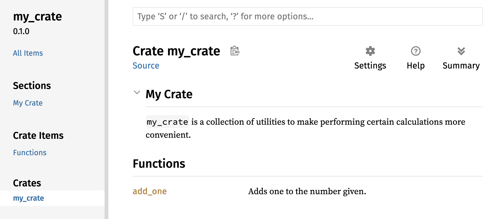
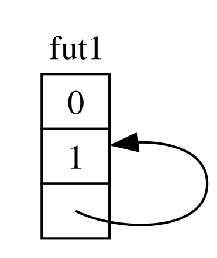

A Linguagem de Programação Rust
bem-vindo a A Linguagem de Programação Rust, um livro introdutório sobre Rust. A linguagem de programação Rust ajuda você a escrever software mais rápido e confiável. A ergonomia de alto nível e o controle de baixo nível estão frequentemente em desacordo no design de linguagens de programação; Rust desafia esse conflito. Através do equilíbrio de uma capacidade técnica poderosa e uma ótima experiência de desenvolvedor, Rust oferece a opção de controlar detalhes de baixo nível (como uso de memória) sem todo o incômodo tradicionalmente associado a tal controle.
Para Quem é Este Livro
Este livro pressupõe que você já escreveu código em outra linguagem de programação, mas não faz suposições sobre qual. Tentamos tornar o material amplamente acessível a pessoas de uma ampla variedade de origens de programação. Não passamos muito tempo falando sobre o que é programação ou como pensar sobre isso. Se você é totalmente novo em programação, estaria melhor servido lendo um livro que forneça uma introdução à programação especificamente.
Como Usar Este Livro
Em geral, este livro assume que você o está lendo em sequência, da frente para trás. Capítulos posteriores constroem sobre conceitos em capítulos anteriores, e capítulos anteriores podem não se aprofundar em detalhes sobre um tópico; normalmente revisitamos o tópico em um capítulo posterior.
Você encontrará dois tipos de capítulos neste livro: capítulos conceituais e capítulos de projeto. Nos capítulos conceituais, aprenderemos sobre um aspecto do Rust. Nos capítulos de projeto, construiremos pequenos programas juntos, aplicando o que aprendemos até agora. Os capítulos 2, 12 e 20 são capítulos de projeto; o resto são capítulos conceituais.
O Capítulo 1 explica como instalar Rust, como escrever um programa “Hello, world!”, e como usar Cargo, o gerenciador de pacotes e ferramenta de construção do Rust. O Capítulo 2 é uma introdução prática à escrita de um programa em Rust, onde fazemos um jogo de adivinhação de números. Aqui cobrimos conceitos em um nível alto, e capítulos posteriores fornecerão detalhes adicionais. Se você quiser sujar as mãos imediatamente, o Capítulo 2 é o lugar para isso. O Capítulo 3 cobre recursos do Rust semelhantes aos de outras linguagens de programação, e no Capítulo 4 você aprenderá sobre o sistema de propriedade do Rust. Se você é um aprendiz particularmente meticuloso que prefere aprender cada detalhe antes de passar para o próximo, você pode pular o Capítulo 2 e ir direto para o Capítulo 3, retornando ao Capítulo 2 quando quiser trabalhar em um projeto aplicando os detalhes que aprendeu.
O Capítulo 5 discute structs e métodos, e o Capítulo 6 cobre enums, expressões match e a construção de controle de fluxo if let. Você usará structs e enums para criar tipos personalizados em Rust.
No Capítulo 7, você aprenderá sobre o sistema de módulos do Rust e sobre regras de privacidade para organizar seu código e sua interface pública de programação de aplicativos (API). O Capítulo 8 discute algumas estruturas de dados comuns de coleção que a biblioteca padrão fornece, como vetores, strings e mapas hash. O Capítulo 9 explora a filosofia e as técnicas de tratamento de erros do Rust.
O Capítulo 10 aprofunda-se em genéricos, traits e tempos de vida, que lhe dão o poder de definir código que se aplica a múltiplos tipos. O Capítulo 11 é tudo sobre testes, que é crítico para garantir que a lógica do seu programa esteja correta, mesmo com as garantias de segurança do Rust. No Capítulo 12, construiremos nossa própria implementação de um subconjunto da funcionalidade da ferramenta de linha de comando grep que busca texto dentro de arquivos. Para isso, usaremos muitos dos conceitos que discutimos nos capítulos anteriores.
O Capítulo 13 explora closures e iteradores: características do Rust que vêm de linguagens de programação funcional. No Capítulo 14, examinaremos Cargo em mais profundidade e falaremos sobre as melhores práticas para compartilhar suas bibliotecas com outros. O Capítulo 15 discute ponteiros inteligentes que a biblioteca padrão fornece e os traits que permitem sua funcionalidade.
No Capítulo 16, percorreremos diferentes modelos de programação concorrente e falaremos sobre como o Rust ajuda você a programar em múltiplas threads sem medo. O Capítulo 17 analisa como o idioma Rust se compara aos paradigmas de programação orientada a objetos que você pode estar familiarizado.
O Capítulo 18 é uma referência sobre padrões e correspondência de padrões, que são maneiras poderosas de expressar ideias em programas Rust. O Capítulo 19 contém um smorgasbord de tópicos avançados de interesse, incluindo Rust inseguro, macros e mais sobre tempos de vida, traits, tipos, funções e closures.
No Capítulo 20, concluiremos um projeto no qual construiremos um servidor web multithreaded de baixo nível!
Finalmente, alguns apêndices contêm informações úteis sobre a linguagem em um formato mais de referência. O Apêndice A cobre as palavras-chave do Rust, o Apêndice B cobre operadores e símbolos, o Apêndice C cobre traits deriváveis fornecidos pela biblioteca padrão, o Apêndice D cobre algumas ferramentas de desenvolvimento úteis e o Apêndice E explica as edições do Rust.
Não há maneira errada de ler este livro: se você quiser pular adiante, vá em frente! Você pode ter que voltar aos capítulos anteriores se experimentar alguma confusão. Faça o que funcionar para você.
Ferris the crab
Uma parte importante do processo de aprendizado do Rust é aprender como ler as mensagens de erro que o compilador exibe: elas o guiarão para um código funcional. Como tal, forneceremos muitos exemplos que não compilam junto com a mensagem de erro que o compilador mostrará em cada situação. Saiba que se você inserir e executar um exemplo aleatório, ele pode não compilar! Certifique-se de ler o texto ao redor para ver se o exemplo que você está tentando executar deve dar erro. Na maioria das situações, levaremos você à versão correta do código que não compila.
Código Fonte
Os arquivos de origem a partir dos quais este livro é gerado podem ser encontrados no GitHub.
Prefácio
A linguagem de programação Rust percorreu um longo caminho em poucos anos, desde sua criação e incubação por uma pequena e nascente comunidade de entusiastas, até se tornar uma das linguagens de programação mais amadas e requisitadas do mundo. Olhando para trás, era inevitável que o poder e a promessa do Rust chamassem a atenção e ganhassem espaço na programação de sistemas. O que não era inevitável foi o crescimento global do interesse e da inovação que permeou as comunidades de código aberto e catalisou a adoção em larga escala em diversos setores.
Neste momento, é fácil apontar para os maravilhosos recursos que o Rust tem a oferecer para explicar essa explosão de interesse e adoção. Quem não quer segurança de memória, e desempenho rápido, e um compilador amigável, e ótimas ferramentas, entre uma série de outros recursos maravilhosos? A linguagem Rust que você vê hoje combina anos de pesquisa em programação de sistemas com a sabedoria prática de uma comunidade vibrante e apaixonada. Esta linguagem foi projetada com propósito e elaborada com cuidado, oferecendo aos desenvolvedores uma ferramenta que facilita a escrita de código seguro, rápido e confiável.
Mas o que torna o Rust verdadeiramente especial são suas raízes em capacitar você, o usuário, a alcançar seus objetivos. Esta é uma linguagem que quer que você tenha sucesso, e o princípio de empoderamento percorre o núcleo da comunidade que constrói, mantém e defende esta linguagem. Desde a edição anterior deste texto definitivo, o Rust se desenvolveu ainda mais em uma linguagem verdadeiramente global e confiável. O Projeto Rust agora é robustamente apoiado pela Rust Foundation, que também investe em iniciativas-chave para garantir que o Rust seja seguro, estável e sustentável.
Esta edição de A Linguagem de Programação Rust é uma atualização abrangente, refletindo a evolução da linguagem ao longo dos anos e fornecendo novas informações valiosas. Mas não é apenas um guia de sintaxe e bibliotecas — é um convite para se juntar a uma comunidade que valoriza qualidade, desempenho e design cuidadoso. Seja você um desenvolvedor experiente procurando explorar o Rust pela primeira vez ou um Rustacean experiente procurando refinar suas habilidades, esta edição oferece algo para todos.
A jornada do Rust tem sido de colaboração, aprendizado e iteração. O crescimento da linguagem e de seu ecossistema é um reflexo direto da comunidade vibrante e diversa por trás dela. As contribuições de milhares de desenvolvedores, desde designers principais da linguagem até contribuidores casuais, são o que tornam o Rust uma ferramenta tão única e poderosa. Ao pegar este livro, você não está apenas aprendendo uma nova linguagem de programação — você está se juntando a um movimento para tornar o software melhor, mais seguro e mais agradável de se trabalhar.
Bem-vindo à comunidade Rust!
- Bec Rumbul, Diretora Executiva da Rust Foundation
Introdução
Nota: Esta edição do livro é a mesma que A Linguagem de Programação Rust disponível em formato impresso e ebook da No Starch Press.
Bem-vindo a A Linguagem de Programação Rust, um livro introdutório sobre Rust. A linguagem de programação Rust ajuda você a escrever software mais rápido e confiável. Ergonomia de alto nível e controle de baixo nível estão frequentemente em conflito no design de linguagens de programação; o Rust desafia esse conflito. Ao equilibrar uma poderosa capacidade técnica e uma ótima experiência para o desenvolvedor, o Rust oferece a opção de controlar detalhes de baixo nível (como uso de memória) sem todo o incômodo tradicionalmente associado a tal controle.
Para Quem é o Rust
O Rust é ideal para muitas pessoas por diversos motivos. Vamos ver alguns dos grupos mais importantes.
Equipes de Desenvolvedores
O Rust está provando ser uma ferramenta produtiva para colaboração entre grandes equipes de desenvolvedores com níveis variados de conhecimento em programação de sistemas. Código de baixo nível é propenso a vários bugs sutis, que na maioria das outras linguagens só podem ser detectados por meio de testes extensivos e revisão de código cuidadosa por desenvolvedores experientes. No Rust, o compilador atua como um guardião, recusando-se a compilar código com esses bugs elusivos, incluindo bugs de concorrência. Ao trabalhar ao lado do compilador, a equipe pode gastar seu tempo focando na lógica do programa em vez de caçar bugs.
O Rust também traz ferramentas de desenvolvimento contemporâneas para o mundo da programação de sistemas:
- Cargo, o gerenciador de dependências e ferramenta de build incluído, torna a adição, compilação e gerenciamento de dependências indolor e consistente em todo o ecossistema Rust.
- A ferramenta de formatação
rustfmtgarante um estilo de codificação consistente entre os desenvolvedores. - O Rust Language Server alimenta a integração com ambientes de desenvolvimento integrado (IDE) para conclusão de código e mensagens de erro inline.
Ao usar essas e outras ferramentas no ecossistema Rust, os desenvolvedores podem ser produtivos enquanto escrevem código de nível de sistema.
Estudantes
O Rust é para estudantes e aqueles interessados em aprender sobre conceitos de sistemas. Usando Rust, muitas pessoas aprenderam sobre tópicos como desenvolvimento de sistemas operacionais. A comunidade é muito acolhedora e feliz em responder às perguntas dos estudantes. Por meio de esforços como este livro, as equipes do Rust querem tornar os conceitos de sistemas mais acessíveis a mais pessoas, especialmente aquelas novas na programação.
Empresas
Centenas de empresas, grandes e pequenas, usam Rust em produção para uma variedade de tarefas, incluindo ferramentas de linha de comando, serviços web, ferramentas de DevOps, dispositivos embarcados, análise e transcodificação de áudio e vídeo, criptomoedas, bioinformática, motores de busca, aplicações de Internet das Coisas, aprendizado de máquina e até partes importantes do navegador web Firefox.
Desenvolvedores Open Source
O Rust é para pessoas que querem construir a linguagem de programação Rust, comunidade, ferramentas de desenvolvedor e bibliotecas. Adoraríamos ter você contribuindo para a linguagem Rust.
Pessoas Que Valorizam Velocidade e Estabilidade
O Rust é para pessoas que desejam velocidade e estabilidade em uma linguagem. Por velocidade, queremos dizer tanto a rapidez com que o código Rust pode rodar quanto a velocidade com que o Rust permite que você escreva programas. As verificações do compilador Rust garantem estabilidade através de adições de recursos e refatoração. Isso contrasta com o código legado frágil em linguagens sem essas verificações, que os desenvolvedores muitas vezes têm medo de modificar. Ao buscar abstrações de custo zero — recursos de nível mais alto que compilam para código de nível mais baixo tão rápido quanto código escrito manualmente — o Rust se esforça para fazer com que o código seguro seja também código rápido.
A linguagem Rust espera apoiar muitos outros usuários também; os mencionados aqui são apenas alguns dos maiores interessados. No geral, a maior ambição do Rust é eliminar as compensações que os programadores aceitaram por décadas, fornecendo segurança e produtividade, velocidade e ergonomia. Experimente o Rust e veja se suas escolhas funcionam para você.
Para Quem é Este Livro
Este livro pressupõe que você já escreveu código em outra linguagem de programação, mas não faz suposições sobre qual. Tentamos tornar o material amplamente acessível para aqueles de uma grande variedade de experiências em programação. Não gastamos muito tempo falando sobre o que a programação é ou como pensar sobre ela. Se você é totalmente novo na programação, seria melhor servido lendo um livro que forneça especificamente uma introdução à programação.
Como Usar Este Livro
Em geral, este livro pressupõe que você o esteja lendo em sequência, do início ao fim. Capítulos posteriores constroem sobre conceitos de capítulos anteriores, e capítulos anteriores podem não se aprofundar em detalhes sobre um tópico específico, mas revisitarão o tópico em um capítulo posterior.
Você encontrará dois tipos de capítulos neste livro: capítulos de conceitos e capítulos de projetos. Nos capítulos de conceitos, você aprenderá sobre um aspecto do Rust. Nos capítulos de projetos, construiremos pequenos programas juntos, aplicando o que você aprendeu até agora. O Capítulo 2, o Capítulo 12 e o Capítulo 21 são capítulos de projetos; o restante são capítulos de conceitos.
O Capítulo 1 explica como instalar o Rust, como escrever um programa “Olá, mundo!” e como usar o Cargo, o gerenciador de pacotes e ferramenta de build do Rust. O Capítulo 2 é uma introdução prática à escrita de um programa em Rust, fazendo você construir um jogo de adivinhação de números. Aqui, cobrimos conceitos em alto nível, e capítulos posteriores fornecerão detalhes adicionais. Se você quiser colocar a mão na massa imediatamente, o Capítulo 2 é o lugar para isso. Se você é um aprendiz particularmente meticuloso que prefere aprender cada detalhe antes de passar para o próximo, pode pular o Capítulo 2 e ir direto para o Capítulo 3, que cobre recursos do Rust que são semelhantes aos de outras linguagens de programação; então, você pode retornar ao Capítulo 2 quando quiser trabalhar em um projeto aplicando os detalhes que aprendeu.
No Capítulo 4, você aprenderá sobre o sistema de posse (ownership) do Rust. O Capítulo 5 discute structs e métodos. O Capítulo 6 cobre enums, expressões match e as construções de controle de fluxo if let e let...else. Você usará structs e enums para criar tipos personalizados.
No Capítulo 7, você aprenderá sobre o sistema de módulos do Rust e sobre regras de privacidade para organizar seu código e sua interface de programação de aplicativos (API) pública. O Capítulo 8 discute algumas estruturas de dados de coleção comuns que a biblioteca padrão fornece: vetores, strings e hash maps. O Capítulo 9 explora a filosofia e as técnicas de tratamento de erros do Rust.
O Capítulo 10 se aprofunda em genéricos, traits e tempos de vida (lifetimes), que dão a você o poder de definir código que se aplica a múltiplos tipos. O Capítulo 11 é todo sobre testes, que mesmo com as garantias de segurança do Rust são necessários para garantir que a lógica do seu programa esteja correta. No Capítulo 12, construiremos nossa própria implementação de um subconjunto de funcionalidades da ferramenta de linha de comando grep que busca texto dentro de arquivos. Para isso, usaremos muitos dos conceitos que discutimos nos capítulos anteriores.
O Capítulo 13 explora closures e iteradores: recursos do Rust que vêm de linguagens de programação funcional. No Capítulo 14, examinaremos o Cargo com mais profundidade e falaremos sobre as melhores práticas para compartilhar suas bibliotecas com outros. O Capítulo 15 discute smart pointers que a biblioteca padrão fornece e as traits que habilitam sua funcionalidade.
No Capítulo 16, percorreremos diferentes modelos de programação concorrente e falaremos sobre como o Rust ajuda você a programar em múltiplas threads sem medo. No Capítulo 17, construímos sobre isso explorando a sintaxe async e await do Rust, juntamente com tarefas, futures e streams, e o modelo de concorrência leve que eles permitem.
O Capítulo 18 analisa como os idiomas do Rust se comparam aos princípios de programação orientada a objetos com os quais você pode estar familiarizado. O Capítulo 19 é uma referência sobre padrões e correspondência de padrões, que são maneiras poderosas de expressar ideias em programas Rust. O Capítulo 20 contém uma variedade de tópicos avançados de interesse, incluindo Rust inseguro (unsafe), macros e mais sobre tempos de vida, traits, tipos, funções e closures.
No Capítulo 21, concluiremos um projeto no qual implementaremos um servidor web multithread de baixo nível!
Finalmente, alguns apêndices contêm informações úteis sobre a linguagem em um formato mais parecido com referência. O Apêndice A cobre as palavras-chave do Rust, o Apêndice B cobre os operadores e símbolos do Rust, o Apêndice C cobre traits deriváveis fornecidas pela biblioteca padrão, o Apêndice D cobre algumas ferramentas de desenvolvimento úteis e o Apêndice E explica as edições do Rust. No Apêndice F, você pode encontrar traduções do livro, e no Apêndice G cobriremos como o Rust é feito e o que é o Rust nightly.
Não há maneira errada de ler este livro: Se você quiser pular adiante, vá em frente! Você pode ter que voltar para capítulos anteriores se sentir alguma confusão. Mas faça o que funcionar para você.
Uma parte importante do processo de aprender Rust é aprender como ler as mensagens de erro que o compilador exibe: Elas o guiarão em direção ao código funcional. Como tal, forneceremos muitos exemplos que não compilam junto com a mensagem de erro que o compilador mostrará a você em cada situação. Saiba que se você digitar e rodar um exemplo aleatório, ele pode não compilar! Certifique-se de ler o texto ao redor para ver se o exemplo que você está tentando rodar deve dar erro. Na maioria das situações, levaremos você à versão correta de qualquer código que não compile. Ferris também ajudará você a distinguir código que não deve funcionar:
| Ferris | Significado |
|---|---|
| Este código não compila! | |
 | Este código entra em pânico! |
 | Este código não produz o comportamento desejado. |
Na maioria das situações, levaremos você à versão correta de qualquer código que não compile.
Código Fonte
Os arquivos de código fonte a partir dos quais este livro é gerado podem ser encontrados no GitHub.
Começando
Vamos iniciar sua jornada em Rust! Há muito o que aprender, mas toda jornada começa em algum lugar. Neste capítulo, discutiremos:
- Instalar Rust no Linux, macOS e Windows
- Escrever um programa que imprime
Hello, world! - Usar o
cargo, o gerenciador de pacotes e sistema de build do Rust
Instalação
O primeiro passo é instalar o Rust. Faremos o download do Rust através do rustup, uma
ferramenta de linha de comando para gerenciar versões do Rust e ferramentas associadas. Você precisará
de uma conexão com a internet para o download.
Nota: Se você preferir não usar o
rustuppor algum motivo, consulte a página de Outros Métodos de Instalação do Rust para mais opções.
Os passos a seguir instalam a versão estável mais recente do compilador Rust. As garantias de estabilidade do Rust asseguram que todos os exemplos no livro que compilam continuarão a compilar com versões mais recentes do Rust. A saída pode diferir ligeiramente entre as versões porque o Rust frequentemente melhora mensagens de erro e avisos. Em outras palavras, qualquer versão estável mais recente do Rust que você instalar usando estes passos deve funcionar conforme o esperado com o conteúdo deste livro.
Notação de Linha de Comando
Neste capítulo e ao longo do livro, mostraremos alguns comandos usados no
terminal. Linhas que você deve digitar em um terminal começam todas com $. Você
não precisa digitar o caractere $; ele é o prompt da linha de comando mostrado para
indicar o início de cada comando. Linhas que não começam com $ tipicamente
mostram a saída do comando anterior. Além disso, exemplos específicos para PowerShell
usarão > em vez de $.
Instalando rustup no Linux ou macOS
Se você está usando Linux ou macOS, abra um terminal e digite o seguinte comando:
$ curl --proto '=https' --tlsv1.2 https://sh.rustup.rs -sSf | sh
O comando baixa um script e inicia a instalação da ferramenta rustup,
que instala a versão estável mais recente do Rust. Você pode ser solicitado
a digitar sua senha. Se a instalação for bem-sucedida, a seguinte linha aparecerá:
Rust is installed now. Great!
Você também precisará de um linker (ligador), que é um programa que o Rust usa para juntar suas saídas compiladas em um único arquivo. É provável que você já tenha um. Se você receber erros de linker, você deve instalar um compilador C, que tipicamente incluirá um linker. Um compilador C também é útil porque alguns pacotes Rust comuns dependem de código C e precisarão de um compilador C.
No macOS, você pode obter um compilador C executando:
$ xcode-select --install
Usuários de Linux geralmente devem instalar GCC ou Clang, de acordo com a documentação de sua
distribuição. Por exemplo, se você usa Ubuntu, pode instalar
o pacote build-essential.
Instalando rustup no Windows
No Windows, vá para https://www.rust-lang.org/tools/install e siga as instruções para instalar o Rust. Em algum momento da instalação, você será solicitado a instalar o Visual Studio. Isso fornece um linker e as bibliotecas nativas necessárias para compilar programas. Se você precisar de mais ajuda com este passo, veja https://rust-lang.github.io/rustup/installation/windows-msvc.html.
O restante deste livro usa comandos que funcionam tanto no cmd.exe quanto no PowerShell. Se houver diferenças específicas, explicaremos qual usar.
Solução de Problemas
Para verificar se você tem o Rust instalado corretamente, abra um shell e digite esta linha:
$ rustc --version
Você deve ver o número da versão, hash do commit e data do commit para a versão estável mais recente que foi lançada, no seguinte formato:
rustc x.y.z (abcabcabc yyyy-mm-dd)
Se você vir esta informação, você instalou o Rust com sucesso! Se você não
vir esta informação, verifique se o Rust está na sua variável de sistema %PATH% como
segue.
No CMD do Windows, use:
> echo %PATH%
No PowerShell, use:
> echo $env:Path
No Linux e macOS, use:
$ echo $PATH
Se tudo estiver correto e o Rust ainda não estiver funcionando, há vários lugares onde você pode obter ajuda. Descubra como entrar em contato com outros Rustaceans (um apelido bobo que usamos para nós mesmos) na página da comunidade.
Atualizando e Desinstalando
Uma vez que o Rust esteja instalado via rustup, atualizar para uma versão recém-lançada é
fácil. Do seu shell, execute o seguinte script de atualização:
$ rustup update
Para desinstalar o Rust e o rustup, execute o seguinte script de desinstalação do seu
shell:
$ rustup self uninstall
Lendo a Documentação Local
A instalação do Rust também inclui uma cópia local da documentação para
que você possa lê-la offline. Execute rustup doc para abrir a documentação local
no seu navegador.
Sempre que um tipo ou função for fornecido pela biblioteca padrão e você não tiver certeza do que faz ou como usar, use a documentação da interface de programação de aplicações (API) para descobrir!
Usando Editores de Texto e IDEs
Este livro não faz suposições sobre quais ferramentas você usa para escrever código Rust. Quase qualquer editor de texto fará o trabalho! No entanto, muitos editores de texto e ambientes de desenvolvimento integrado (IDEs) têm suporte nativo para Rust. Você pode sempre encontrar uma lista razoavelmente atual de muitos editores e IDEs na página de ferramentas no site do Rust.
Trabalhando Offline com Este Livro
Em vários exemplos, usaremos pacotes Rust além da biblioteca padrão. Para
trabalhar nesses exemplos, você precisará ter uma conexão com a internet
ou ter baixado essas dependências antecipadamente. Para baixar as
dependências antecipadamente, você pode executar os seguintes comandos. (Explicaremos
o que é o cargo e o que cada um desses comandos faz em detalhes mais tarde.)
$ cargo new get-dependencies
$ cd get-dependencies
$ cargo add rand@0.8.5 trpl@0.2.0
Isso fará o cache dos downloads para esses pacotes para que você não precise
baixá-los mais tarde. Uma vez que você tenha executado este comando, você não precisa manter a
pasta get-dependencies. Se você executou este comando, pode usar a
flag --offline com todos os comandos cargo no restante do livro para usar essas
versões em cache em vez de tentar usar a rede.
Hello, World!
Agora que você instalou o Rust, é hora de escrever seu primeiro programa Rust.
É tradicional ao aprender uma nova linguagem escrever um pequeno programa que
imprime o texto Hello, world! na tela, então faremos o mesmo aqui!
Nota: Este livro pressupõe familiaridade básica com a linha de comando. O Rust não faz exigências específicas sobre sua edição ou ferramentas ou onde seu código vive, então se você preferir usar uma IDE em vez da linha de comando, sinta-se à vontade para usar sua IDE favorita. Muitas IDEs agora têm algum grau de suporte ao Rust; verifique a documentação da IDE para detalhes. A equipe Rust tem se focado em habilitar um ótimo suporte de IDE via
rust-analyzer. Veja [[appendix-04-useful-development-tools.md|Apêndice D]] para mais detalhes.
Configuração do Diretório do Projeto
Você começará criando um diretório para armazenar seu código Rust. Não importa para o Rust onde seu código vive, mas para os exercícios e projetos neste livro, sugerimos criar um diretório projects no seu diretório home e manter todos os seus projetos lá.
Abra um terminal e digite os seguintes comandos para criar um diretório projects e um diretório para o projeto “Hello, world!” dentro do diretório projects.
Para Linux, macOS e PowerShell no Windows, digite isto:
$ mkdir ~/projects
$ cd ~/projects
$ mkdir hello_world
$ cd hello_world
Para CMD do Windows, digite isto:
> mkdir "%USERPROFILE%\projects"
> cd /d "%USERPROFILE%\projects"
> mkdir hello_world
> cd hello_world
Básico de um Programa Rust
Em seguida, crie um novo arquivo fonte e chame-o de main.rs. Arquivos Rust sempre terminam com a extensão .rs. Se você estiver usando mais de uma palavra no nome do arquivo, a convenção é usar um sublinhado para separá-las. Por exemplo, use hello_world.rs em vez de helloworld.rs.
Agora abra o arquivo main.rs que você acabou de criar e digite o código da Listagem 1-1.
fn main() {
println!("Hello, world!");
}Hello, world!Salve o arquivo e volte para a janela do seu terminal no diretório ~/projects/hello_world. No Linux ou macOS, digite os seguintes comandos para compilar e executar o arquivo:
$ rustc main.rs
$ ./main
Hello, world!
No Windows, digite o comando .\main em vez de ./main:
> rustc main.rs
> .\main
Hello, world!
Independentemente do seu sistema operacional, a string Hello, world! deve ser impressa no
terminal. Se você não vir esta saída, consulte a parte de
[[ch01-01-installation.md#troubleshooting|“Solução de Problemas”]] da seção de Instalação
para maneiras de obter ajuda.
Se Hello, world! foi impresso, parabéns! Você escreveu oficialmente um programa
Rust. Isso faz de você um programador Rust—bem-vindo!
A Anatomia de um Programa Rust
Vamos revisar este programa “Hello, world!” em detalhes. Aqui está a primeira peça do quebra-cabeça:
fn main() {
}Estas linhas definem uma função chamada main. A função main é especial: Ela
é sempre o primeiro código que executa em todo programa Rust executável. Aqui, a
primeira linha declara uma função chamada main que não tem parâmetros e não retorna
nada. Se houvesse parâmetros, eles iriam dentro dos parênteses (()).
O corpo da função é envolvido em {}. O Rust requer chaves ao redor de todos
os corpos de função. É um bom estilo colocar a chave de abertura na mesma
linha da declaração da função, adicionando um espaço entre elas.
Nota: Se você quiser manter um estilo padrão em projetos Rust, você pode usar uma ferramenta de formatação automática chamada
rustfmtpara formatar seu código em um estilo particular (mais sobrerustfmtno [[appendix-04-useful-development-tools.md|Apêndice D]]). A equipe Rust incluiu esta ferramenta com a distribuição padrão do Rust, assim como orustc, então ela já deve estar instalada no seu computador!
O corpo da função main contém o seguinte código:
#![allow(unused)]
fn main() {
println!("Hello, world!");
}Esta linha faz todo o trabalho neste pequeno programa: Ela imprime texto na tela. Há três detalhes importantes para notar aqui.
Primeiro, println! chama uma macro do Rust. Se tivesse chamado uma função,
seria digitado como println (sem o !). Macros Rust são uma maneira de escrever
código que gera código para estender a sintaxe do Rust, e discutiremos elas em mais
detalhes no [[ch20-05-macros.md|Capítulo 20]]. Por enquanto, você só precisa
saber que usar um ! significa que você está chamando uma macro em vez de uma função
normal e que macros nem sempre seguem as mesmas regras que funções.
Segundo, você vê a string "Hello, world!". Passamos esta string como um argumento
para println!, e a string é impressa na tela.
Terceiro, terminamos a linha com um ponto e vírgula (;), que indica que esta
expressão acabou, e a próxima está pronta para começar. A maioria das linhas de código Rust
termina com um ponto e vírgula.
Compilação e Execução
Você acabou de executar um programa recém-criado, então vamos examinar cada passo no processo.
Antes de executar um programa Rust, você deve compilá-lo usando o compilador Rust
digitando o comando rustc e passando o nome do seu arquivo fonte, assim:
$ rustc main.rs
Se você tem um background em C ou C++, notará que isso é semelhante ao gcc
ou clang. Após compilar com sucesso, o Rust gera um executável binário.
No Linux, macOS e PowerShell no Windows, você pode ver o executável
digitando o comando ls no seu shell:
$ ls
main main.rs
No Linux e macOS, você verá dois arquivos. Com PowerShell no Windows, você verá os mesmos três arquivos que veria usando CMD. Com CMD no Windows, você digitaria o seguinte:
> dir /B %= a opção /B diz para mostrar apenas os nomes dos arquivos =%
main.exe
main.pdb
main.rs
Isso mostra o arquivo de código fonte com a extensão .rs, o arquivo executável (main.exe no Windows, mas main em todas as outras plataformas), e, ao usar Windows, um arquivo contendo informações de depuração com a extensão .pdb. A partir daqui, você executa o arquivo main ou main.exe, assim:
$ ./main # ou .\main no Windows
Se seu main.rs é seu programa “Hello, world!”, esta linha imprime Hello, world! no seu terminal.
Se você está mais familiarizado com uma linguagem dinâmica, como Ruby, Python ou JavaScript, você pode não estar acostumado a compilar e executar um programa como passos separados. Rust é uma linguagem compilada ahead-of-time (antecipadamente), significando que você pode compilar um programa e dar o executável para outra pessoa, e ela pode executá-lo mesmo sem ter o Rust instalado. Se você der a alguém um arquivo .rb, .py ou .js, eles precisam ter uma implementação de Ruby, Python ou JavaScript instalada (respectivamente). Mas nessas linguagens, você só precisa de um comando para compilar e executar seu programa. Tudo é uma troca no design de linguagens.
Apenas compilar com rustc é bom para programas simples, mas à medida que seu projeto
cresce, você vai querer gerenciar todas as opções e facilitar o compartilhamento do seu
código. A seguir, apresentaremos a ferramenta Cargo, que ajudará você a escrever
programas Rust do mundo real.
Hello, Cargo!
Cargo é o sistema de build e gerenciador de pacotes do Rust. A maioria dos Rustaceans usa esta ferramenta para gerenciar seus projetos Rust porque o Cargo lida com muitas tarefas para você, como compilar seu código, baixar as bibliotecas das quais seu código depende, e compilar essas bibliotecas. (Chamamos as bibliotecas que seu código precisa de dependências.)
Os programas Rust mais simples, como o que escrevemos até agora, não têm nenhuma dependência. Se tivéssemos construído o projeto “Hello, world!” com Cargo, ele apenas usaria a parte do Cargo que lida com a compilação do seu código. À medida que você escreve programas Rust mais complexos, você adicionará dependências, e se você começar um projeto usando Cargo, adicionar dependências será muito mais fácil de fazer.
Como a vasta maioria dos projetos Rust usa Cargo, o restante deste livro assume que você está usando Cargo também. O Cargo vem instalado com o Rust se você usou os instaladores oficiais discutidos na seção de [[ch01-01-installation.md#installation|“Instalação”]]. Se você instalou o Rust através de algum outro meio, verifique se o Cargo está instalado digitando o seguinte no seu terminal:
$ cargo --version
Se você vir um número de versão, você o tem! Se você vir um erro, como command not found, olhe a documentação para seu método de instalação para
determinar como instalar o Cargo separadamente.
Criando um Projeto com Cargo
Vamos criar um novo projeto usando Cargo e ver como ele difere do nosso projeto “Hello, world!” original. Navegue de volta para o seu diretório projects (ou onde quer que você tenha decidido armazenar seu código). Então, em qualquer sistema operacional, execute o seguinte:
$ cargo new hello_cargo
$ cd hello_cargo
O primeiro comando cria um novo diretório e projeto chamado hello_cargo. Nós nomeamos nosso projeto hello_cargo, e o Cargo cria seus arquivos em um diretório de mesmo nome.
Entre no diretório hello_cargo e liste os arquivos. Você verá que o Cargo gerou dois arquivos e um diretório para nós: um arquivo Cargo.toml e um diretório src com um arquivo main.rs dentro.
Ele também inicializou um novo repositório Git junto com um arquivo .gitignore.
Arquivos Git não serão gerados se você executar cargo new dentro de um repositório Git
existente; você pode sobrescrever esse comportamento usando cargo new --vcs=git.
Nota: Git é um sistema de controle de versão comum. Você pode mudar o
cargo newpara usar um sistema de controle de versão diferente ou nenhum sistema de controle de versão usando a flag--vcs. Executecargo new --helppara ver as opções disponíveis.
Abra Cargo.toml no seu editor de texto de escolha. Ele deve parecer similar ao código na Listagem 1-2.
[package]
name = "hello_cargo"
version = "0.1.0"
edition = "2024"
[dependencies]
cargo newEste arquivo está no formato TOML (Tom’s Obvious, Minimal Language), que é o formato de configuração do Cargo.
A primeira linha, [package], é um cabeçalho de seção que indica que as
declarações a seguir estão configurando um pacote. À medida que adicionamos mais informações a
este arquivo, adicionaremos outras seções.
As próximas três linhas definem as informações de configuração que o Cargo precisa para compilar
seu programa: o nome, a versão e a edição do Rust a ser usada. Falaremos
sobre a chave edition no [[appendix-05-editions.md|Apêndice E]].
A última linha, [dependencies], é o início de uma seção para você listar qualquer
uma das dependências do seu projeto. Em Rust, pacotes de código são referidos como
crates. Não precisaremos de nenhum outro crate para este projeto, mas precisaremos no
primeiro projeto no Capítulo 2, então usaremos esta seção de dependências lá.
Agora abra src/main.rs e dê uma olhada:
Nome do arquivo: src/main.rs
fn main() {
println!("Hello, world!");
}O Cargo gerou um programa “Hello, world!” para você, exatamente como o que escrevemos na Listagem 1-1! Até agora, as diferenças entre nosso projeto e o projeto que o Cargo gerou são que o Cargo colocou o código no diretório src, e temos um arquivo de configuração Cargo.toml no diretório superior.
O Cargo espera que seus arquivos fonte vivam dentro do diretório src. O diretório de nível superior do projeto é apenas para arquivos README, informações de licença, arquivos de configuração e qualquer outra coisa não relacionada ao seu código. Usar o Cargo ajuda você a organizar seus projetos. Há um lugar para tudo, e tudo está em seu lugar.
Se você começou um projeto que não usa Cargo, como fizemos com o projeto “Hello,
world!”, você pode convertê-lo para um projeto que usa Cargo. Mova o
código do projeto para o diretório src e crie um arquivo Cargo.toml
apropriado. Uma maneira fácil de obter esse arquivo Cargo.toml é executar cargo init, que
o criará para você automaticamente.
Compilando e Executando um Projeto Cargo
Agora vamos ver o que é diferente quando compilamos e executamos o programa “Hello, world!” com Cargo! Do seu diretório hello_cargo, compile seu projeto digitando o seguinte comando:
$ cargo build
Compiling hello_cargo v0.1.0 (file:///projects/hello_cargo)
Finished dev [unoptimized + debuginfo] target(s) in 2.85 secs
Este comando cria um arquivo executável em target/debug/hello_cargo (ou target\debug\hello_cargo.exe no Windows) em vez de no seu diretório atual. Como o build padrão é um build de debug (depuração), o Cargo coloca o binário em um diretório chamado debug. Você pode executar o executável com este comando:
$ ./target/debug/hello_cargo # ou .\target\debug\hello_cargo.exe no Windows
Hello, world!
Se tudo correr bem, Hello, world! deve ser impresso no terminal. Executar cargo build pela primeira vez também faz com que o Cargo crie um novo arquivo no nível
superior: Cargo.lock. Este arquivo mantém o registro das versões exatas das
dependências no seu projeto. Este projeto não tem dependências, então o
arquivo é um pouco vazio. Você nunca precisará alterar este arquivo manualmente; o Cargo
gerencia seu conteúdo para você.
Nós acabamos de compilar um projeto com cargo build e o executamos com
./target/debug/hello_cargo, mas também podemos usar cargo run para compilar o
código e então executar o executável resultante tudo em um comando:
$ cargo run
Finished dev [unoptimized + debuginfo] target(s) in 0.0 secs
Running `target/debug/hello_cargo`
Hello, world!
Usar cargo run é mais conveniente do que ter que lembrar de executar cargo build e então usar o caminho completo para o binário, então a maioria dos desenvolvedores usa cargo run.
Note que desta vez não vimos saída indicando que o Cargo estava compilando
hello_cargo. O Cargo descobriu que os arquivos não tinham mudado, então ele não
recompilou, apenas executou o binário. Se você tivesse modificado seu código fonte, o Cargo
teria recompilado o projeto antes de executá-lo, e você teria visto esta
saída:
$ cargo run
Compiling hello_cargo v0.1.0 (file:///projects/hello_cargo)
Finished dev [unoptimized + debuginfo] target(s) in 0.33 secs
Running `target/debug/hello_cargo`
Hello, world!
O Cargo também fornece um comando chamado cargo check. Este comando verifica rapidamente
seu código para garantir que ele compila, mas não produz um executável:
$ cargo check
Checking hello_cargo v0.1.0 (file:///projects/hello_cargo)
Finished dev [unoptimized + debuginfo] target(s) in 0.32 secs
Por que você não iria querer um executável? Frequentemente, cargo check é muito mais rápido que
cargo build porque ele pula o passo de produzir um executável. Se você está
continuamente verificando seu trabalho enquanto escreve o código, usar cargo check vai
acelerar o processo de deixar você saber se seu projeto ainda está compilando! Como
tal, muitos Rustaceans executam cargo check periodicamente enquanto escrevem seu
programa para garantir que ele compila. Então, eles executam cargo build quando estão
prontos para usar o executável.
Vamos recapitular o que aprendemos até agora sobre o Cargo:
- Podemos criar um projeto usando
cargo new. - Podemos compilar um projeto usando
cargo build. - Podemos compilar e executar um projeto em um passo usando
cargo run. - Podemos compilar um projeto sem produzir um binário para verificar erros usando
cargo check. - Em vez de salvar o resultado do build no mesmo diretório que nosso código, o Cargo o armazena no diretório target/debug.
Uma vantagem adicional de usar o Cargo é que os comandos são os mesmos não importa em qual sistema operacional você está trabalhando. Então, neste ponto, não forneceremos mais instruções específicas para Linux e macOS versus Windows.
Compilando para Release
Quando seu projeto estiver finalmente pronto para lançamento, você pode usar cargo build --release para compilá-lo com otimizações. Este comando criará um
executável em target/release em vez de target/debug. As otimizações
fazem seu código Rust rodar mais rápido, mas ligá-las aumenta o tempo que leva
para seu programa compilar. É por isso que existem dois perfis diferentes: um
para desenvolvimento, quando você quer recompilar rapidamente e com frequência, e outro para
compilar o programa final que você dará a um usuário, que não será recompilado
repetidamente e que rodará o mais rápido possível. Se você está fazendo benchmarking do
tempo de execução do seu código, certifique-se de executar cargo build --release e fazer o benchmark com
o executável em target/release.
Aproveitando as Convenções do Cargo
Com projetos simples, o Cargo não fornece muito valor além de apenas usar
rustc, mas ele provará seu valor à medida que seus programas se tornarem mais complexos.
Uma vez que os programas cresçam para múltiplos arquivos ou precisem de uma dependência, é muito mais fácil
deixar o Cargo coordenar o build.
Mesmo que o projeto hello_cargo seja simples, ele agora usa muito do ferramental
real que você usará no resto da sua carreira Rust. De fato, para trabalhar em qualquer
projeto existente, você pode usar os seguintes comandos para baixar o código
usando Git, mudar para o diretório desse projeto e compilar:
$ git clone example.org/someproject
$ cd someproject
$ cargo build
Para mais informações sobre o Cargo, confira sua documentação.
Resumo
Você já está com um ótimo começo na sua jornada Rust! Neste capítulo, você aprendeu como:
- Instalar a versão estável mais recente do Rust usando
rustup. - Atualizar para uma versão mais nova do Rust.
- Abrir a documentação instalada localmente.
- Escrever e executar um programa “Hello, world!” usando
rustcdiretamente. - Criar e executar um novo projeto usando as convenções do Cargo.
Este é um ótimo momento para construir um programa mais substancial para se acostumar a ler e escrever código Rust. Então, no Capítulo 2, construiremos um programa de jogo de adivinhação. Se você preferir começar aprendendo como conceitos comuns de programação funcionam em Rust, veja o Capítulo 3 e depois retorne ao Capítulo 2.
Programando um Jogo de Adivinhação
Vamos mergulhar no Rust trabalhando juntos em um projeto prático! Este
capítulo apresenta a você alguns conceitos comuns do Rust mostrando como usá-los
em um programa real. Você aprenderá sobre let, match, métodos, funções
associadas, crates externos e muito mais! Nos capítulos seguintes, exploraremos
essas ideias em mais detalhes. Neste capítulo, você apenas praticará os
fundamentos.
Implementaremos um problema clássico de programação para iniciantes: um jogo de adivinhação. Veja como funciona: O programa gerará um número inteiro aleatório entre 1 e 100. Em seguida, ele solicitará que o jogador insira um palpite. Depois que um palpite for inserido, o programa indicará se o palpite é muito baixo ou muito alto. Se o palpite estiver correto, o jogo imprimirá uma mensagem de parabenização e sairá.
Configurando um Novo Projeto
Para configurar um novo projeto, vá para o diretório projects que você criou no [[ch01-00-getting-started.md|Capítulo 1]] e crie um novo projeto usando o Cargo, assim:
$ cargo new guessing_game
$ cd guessing_game
O primeiro comando, cargo new, recebe o nome do projeto (guessing_game)
como o primeiro argumento. O segundo comando muda para o diretório do novo
projeto.
Olhe para o arquivo Cargo.toml gerado:
Nome do arquivo: Cargo.toml
[package]
name = "guessing_game"
version = "0.1.0"
edition = "2024"
[dependencies]
Como você viu no [[ch01-00-getting-started.md|Capítulo 1]],
cargo new gera um programa “Hello, world!” para você. Confira o arquivo
src/main.rs:
Nome do arquivo: src/main.rs
fn main() {
println!("Hello, world!");
}Agora vamos compilar este programa “Hello, world!” e executá-lo no mesmo passo
usando o comando cargo run:
$ cargo run
Compiling guessing_game v0.1.0 (file:///projects/guessing_game)
Finished `dev` profile [unoptimized + debuginfo] target(s) in 0.08s
Running `target/debug/guessing_game`
Hello, world!
O comando run é útil quando você precisa iterar rapidamente em um projeto,
como faremos neste jogo, testando rapidamente cada iteração antes de passar para
a próxima.
Reabra o arquivo src/main.rs. Você escreverá todo o código neste arquivo.
Processando um Palpite
A primeira parte do programa do jogo de adivinhação pedirá a entrada do usuário, processará essa entrada e verificará se a entrada está no formato esperado. Para começar, permitiremos que o jogador insira um palpite. Digite o código da Listagem 2-1 em src/main.rs.
use std::io;
fn main() {
println!("Guess the number!");
println!("Please input your guess.");
let mut guess = String::new();
io::stdin()
.read_line(&mut guess)
.expect("Failed to read line");
println!("You guessed: {guess}");
}Este código contém muita informação, então vamos analisá-lo linha por linha.
Para obter a entrada do usuário e depois imprimir o resultado como saída,
precisamos trazer a biblioteca de entrada/saída io para o escopo. A
biblioteca io vem da biblioteca padrão, conhecida como std:
use std::io;
fn main() {
println!("Guess the number!");
println!("Please input your guess.");
let mut guess = String::new();
io::stdin()
.read_line(&mut guess)
.expect("Failed to read line");
println!("You guessed: {guess}");
}Por padrão, o Rust tem um conjunto de itens definidos na biblioteca padrão que ele traz para o escopo de cada programa. Esse conjunto é chamado de prelúdio, e você pode ver tudo nele na documentação da biblioteca padrão.
Se um tipo que você deseja usar não estiver no prelúdio, você deve trazer esse
tipo para o escopo explicitamente com uma instrução use. Usar a biblioteca
std::io fornece a você uma série de recursos úteis, incluindo a capacidade de
aceitar entrada do usuário.
Como você viu no [[ch01-00-getting-started.md|Capítulo 1]], a
função main é o ponto de entrada no programa:
use std::io;
fn main() {
println!("Guess the number!");
println!("Please input your guess.");
let mut guess = String::new();
io::stdin()
.read_line(&mut guess)
.expect("Failed to read line");
println!("You guessed: {guess}");
}A sintaxe fn declara uma nova função; os parênteses, (), indicam que não há
parâmetros; e a chave, {, inicia o corpo da função.
Como você também aprendeu no [[ch01-00-getting-started.md|Capítulo 1]], println! é uma macro que imprime uma string na tela:
use std::io;
fn main() {
println!("Guess the number!");
println!("Please input your guess.");
let mut guess = String::new();
io::stdin()
.read_line(&mut guess)
.expect("Failed to read line");
println!("You guessed: {guess}");
}Este código está imprimindo um prompt informando o que é o jogo e solicitando entrada do usuário.
Armazenando Valores com Variáveis
Em seguida, criaremos uma variável para armazenar a entrada do usuário, assim:
use std::io;
fn main() {
println!("Guess the number!");
println!("Please input your guess.");
let mut guess = String::new();
io::stdin()
.read_line(&mut guess)
.expect("Failed to read line");
println!("You guessed: {guess}");
}Agora o programa está ficando interessante! Há muita coisa acontecendo nesta
pequena linha. Usamos a instrução let para criar a variável. Aqui está outro
exemplo:
let apples = 5;Esta linha cria uma nova variável chamada apples e a vincula ao valor 5. Em
Rust, as variáveis são imutáveis por padrão, o que significa que, uma vez que
damos um valor à variável, o valor não mudará. Discutiremos esse conceito em
detalhes na seção
[[ch03-01-variables-and-mutability.md#variables-and-mutability|“Variáveis e Mutabilidade”]]
no Capítulo 3. Para tornar uma variável mutável, adicionamos mut antes do
nome da variável:
let apples = 5; // imutável
let mut bananas = 5; // mutávelNota: A sintaxe
//inicia um comentário que continua até o final da linha. O Rust ignora tudo nos comentários. Discutiremos comentários em mais detalhes no [[ch03-04-comments.md|Capítulo 3]].
Voltando ao programa do jogo de adivinhação, agora você sabe que let mut guess
introduzirá uma variável mutável chamada guess. O sinal de igual (=) diz
ao Rust que queremos vincular algo à variável agora. À direita do sinal de
igual está o valor ao qual guess está vinculado, que é o resultado de chamar
String::new, uma função que retorna uma nova instância de uma String.
String é um tipo de string fornecido pela
biblioteca padrão que é um pedaço de texto expansível codificado em UTF-8.
A sintaxe :: na linha ::new indica que new é uma função associada do tipo
String. Uma função associada é uma função implementada em um tipo, neste
caso String. Esta função new cria uma nova string vazia. Você encontrará
uma função new em muitos tipos, porque é um nome comum para uma função que
cria um novo valor de algum tipo.
No total, a linha let mut guess = String::new(); criou uma variável mutável
que está atualmente vinculada a uma nova instância vazia de uma String. Ufa!
Recebendo Entrada do Usuário
Lembre-se de que incluímos a funcionalidade de entrada/saída da biblioteca
padrão com use std::io; na primeira linha do programa. Agora chamaremos a
função stdin do módulo io, que nos permitirá lidar com a entrada do
usuário:
use std::io;
fn main() {
println!("Guess the number!");
println!("Please input your guess.");
let mut guess = String::new();
io::stdin()
.read_line(&mut guess)
.expect("Failed to read line");
println!("You guessed: {guess}");
}Se não tivéssemos importado o módulo io com use std::io; no início do
programa, ainda poderíamos usar a função escrevendo esta chamada de função como
std::io::stdin. A função stdin retorna uma instância de
std::io::Stdin, que é um tipo que representa um
identificador para a entrada padrão do seu terminal.
Em seguida, a linha .read_line(&mut guess) chama o método
read_line no identificador de entrada padrão para
obter entrada do usuário. Também estamos passando &mut guess como argumento
para read_line para dizer a ele em qual string armazenar a entrada do
usuário. O trabalho completo de read_line é pegar o que o usuário digita na
entrada padrão e anexar isso em uma string (sem sobrescrever seu conteúdo),
então passamos essa string como argumento. O argumento string precisa ser
mutável para que o método possa alterar o conteúdo da string.
O & indica que este argumento é uma referência, que fornece uma maneira de
permitir que várias partes do seu código acessem um pedaço de dados sem
precisar copiar esses dados na memória várias vezes. Referências são um recurso
complexo, e uma das maiores vantagens do Rust é o quão seguro e fácil é usar
referências. Você não precisa saber muitos desses detalhes para terminar este
programa. Por enquanto, tudo o que você precisa saber é que, como as variáveis,
as referências são imutáveis por padrão. Portanto, você precisa escrever &mut guess em vez de &guess para torná-la mutável. (O Capítulo 4 explicará as
referências mais detalhadamente.)
Lidando com Potencial Falha com o Tipo Result
Ainda estamos trabalhando nesta linha de código. Estamos discutindo agora uma terceira linha de texto, mas note que ainda faz parte de uma única linha lógica de código. A próxima parte é este método:
use std::io;
fn main() {
println!("Guess the number!");
println!("Please input your guess.");
let mut guess = String::new();
io::stdin()
.read_line(&mut guess)
.expect("Failed to read line");
println!("You guessed: {guess}");
}Poderíamos ter escrito este código como:
io::stdin().read_line(&mut guess).expect("Falha ao ler linha");No entanto, uma linha longa é difícil de ler, então é melhor dividi-la. É
frequentemente sábio introduzir uma nova linha e outros espaços em branco para
ajudar a quebrar linhas longas quando você chama um método com a sintaxe
.nome_do_metodo(). Agora vamos discutir o que esta linha faz.
Como mencionado anteriormente, read_line coloca o que o usuário insere na
string que passamos para ele, mas também retorna um valor Result.
Result é uma enumeração,
muitas vezes chamada de enum, que é um tipo que pode estar em um de vários
estados possíveis. Chamamos cada estado possível de variante.
O [[ch06-00-enums.md|Capítulo 6]] cobrirá enums em mais
detalhes. O objetivo desses tipos Result é codificar informações de tratamento
de erros.
As variantes de Result são Ok e Err. A variante Ok indica que a
operação foi bem-sucedida e contém o valor gerado com sucesso. A variante Err
significa que a operação falhou e contém informações sobre como ou por que a
operação falhou.
Valores do tipo Result, como valores de qualquer tipo, têm métodos definidos
neles. Uma instância de Result tem um método expect que você pode chamar. Se esta instância de Result for um valor Err,
expect fará com que o programa falhe e exiba a mensagem que você passou como
argumento para expect. Se o método read_line retornar um Err,
provavelmente seria o resultado de um erro vindo do sistema operacional
subjacente. Se esta instância de Result for um valor Ok, expect pegará o
valor de retorno que Ok está segurando e retornará apenas esse valor para
você para que possa usá-lo. Neste caso, esse valor é o número de bytes na
entrada do usuário.
Se você não chamar expect, o programa compilará, mas você receberá um aviso:
$ cargo build
Compiling guessing_game v0.1.0 (file:///projects/guessing_game)
warning: unused `Result` that must be used
--> src/main.rs:10:5
|
10 | io::stdin().read_line(&mut guess);
| ^^^^^^^^^^^^^^^^^^^^^^^^^^^^^^^^^
|
= note: this `Result` may be an `Err` variant, which should be handled
= note: `#[warn(unused_must_use)]` on by default
help: use `let _ = ...` to ignore the resulting value
|
10 | let _ = io::stdin().read_line(&mut guess);
| +++++++
warning: `guessing_game` (bin "guessing_game") generated 1 warning
Finished `dev` profile [unoptimized + debuginfo] target(s) in 0.59s
O Rust avisa que você não usou o valor Result retornado por read_line,
indicando que o programa não tratou um possível erro.
A maneira correta de suprimir o aviso é realmente escrever código de tratamento
de erros, mas em nosso caso queremos apenas travar este programa quando ocorrer
um problema, então podemos usar expect. Você aprenderá sobre como se
recuperar de erros no [[ch09-02-recoverable-errors-with-result.md|Capítulo 9]].
Imprimindo Valores com Espaços Reservados println!
Além da chave de fechamento, há apenas mais uma linha para discutir no código até agora:
use std::io;
fn main() {
println!("Guess the number!");
println!("Please input your guess.");
let mut guess = String::new();
io::stdin()
.read_line(&mut guess)
.expect("Failed to read line");
println!("You guessed: {guess}");
}Esta linha imprime a string que agora contém a entrada do usuário. O conjunto de
chaves {} é um espaço reservado: Pense em {} como pequenas pinças de
caranguejo que seguram um valor no lugar. Ao imprimir o valor de uma variável,
o nome da variável pode ir dentro das chaves. Ao imprimir o resultado da
avaliação de uma expressão, coloque chaves vazias na string de formatação,
seguidas pela string de formatação com uma lista separada por vírgulas de
expressões para imprimir em cada espaço reservado de chave vazia na mesma ordem.
Imprimir uma variável e o resultado de uma expressão em uma chamada para
println! ficaria assim:
#![allow(unused)]
fn main() {
let x = 5;
let y = 10;
println!("x = {x} e y + 2 = {}", y + 2);
}Este código imprimiria x = 5 e y + 2 = 12.
Testando a Primeira Parte
Vamos testar a primeira parte do jogo de adivinhação. Execute-o usando
cargo run:
$ cargo run
Compiling guessing_game v0.1.0 (file:///projects/guessing_game)
Finished `dev` profile [unoptimized + debuginfo] target(s) in 6.44s
Running `target/debug/guessing_game`
Adivinhe o número!
Por favor, insira o seu palpite.
6
Você adivinhou: 6
Neste ponto, a primeira parte do jogo está pronta: estamos obtendo entrada do teclado e depois imprimindo-a.
Gerando um Número Secreto
Em seguida, precisamos gerar um número secreto que o usuário tentará adivinhar.
O número secreto deve ser diferente a cada vez para que o jogo seja divertido de
jogar mais de uma vez. Usaremos um número aleatório entre 1 e 100 para que o
jogo não seja muito difícil. O Rust ainda não inclui funcionalidade de números
aleatórios em sua biblioteca padrão. No entanto, a equipe Rust fornece um
rand crate com tal funcionalidade.
Aumentando a Funcionalidade com um Crate
Lembre-se de que um crate é uma coleção de arquivos de código-fonte Rust. O
projeto que estamos construindo é um crate binário, que é um executável. O crate
rand é um crate de biblioteca, que contém código destinado a ser usado em
outros programas e não pode ser executado por conta própria.
A coordenação de crates externos pelo Cargo é onde o Cargo realmente brilha.
Antes de podermos escrever código que usa rand, precisamos modificar o arquivo
Cargo.toml para incluir o crate rand como uma dependência. Abra esse
arquivo agora e adicione a seguinte linha na parte inferior, abaixo do
cabeçalho da seção [dependencies] que o Cargo criou para você. Certifique-se
de especificar rand exatamente como temos aqui, com este número de versão, ou
os exemplos de código neste tutorial podem não funcionar:
Nome do arquivo: Cargo.toml
[dependencies]
rand = "0.8.5"
No arquivo Cargo.toml, tudo o que segue um cabeçalho faz parte dessa seção
que continua até que outra seção comece. Em [dependencies], você diz ao Cargo
de quais crates externos seu projeto depende e quais versões desses crates você
precisa. Neste caso, especificamos o crate rand com o especificador de versão
semântica 0.8.5. O Cargo entende o Versionamento Semântico (às vezes chamado de SemVer), que é um padrão para escrever
números de versão. O especificador 0.8.5 é na verdade uma abreviação para
^0.8.5, o que significa qualquer versão que seja pelo menos 0.8.5, mas abaixo
de 0.9.0.
O Cargo considera essas versões como tendo APIs públicas compatíveis com a versão 0.8.5, e essa especificação garante que você obterá a versão de patch mais recente que ainda compilará com o código neste capítulo. Qualquer versão 0.9.0 ou superior não é garantida de ter a mesma API que os exemplos a seguir usam.
Agora, sem alterar nenhum código, vamos construir o projeto, conforme mostrado na Listagem 2-2.
$ cargo build
Updating crates.io index
Locking 15 packages to latest Rust 1.85.0 compatible versions
Adding rand v0.8.5 (available: v0.9.0)
Compiling proc-macro2 v1.0.93
Compiling unicode-ident v1.0.17
Compiling libc v0.2.170
Compiling cfg-if v1.0.0
Compiling byteorder v1.5.0
Compiling getrandom v0.2.15
Compiling rand_core v0.6.4
Compiling quote v1.0.38
Compiling syn v2.0.98
Compiling zerocopy-derive v0.7.35
Compiling zerocopy v0.7.35
Compiling ppv-lite86 v0.2.20
Compiling rand_chacha v0.3.1
Compiling rand v0.8.5
Compiling guessing_game v0.1.0 (file:///projects/guessing_game)
Finished `dev` profile [unoptimized + debuginfo] target(s) in 2.48s
cargo build após adicionar o crate rand como uma dependênciaVocê pode ver números de versão diferentes (mas todos serão compatíveis com o código, graças ao SemVer!) e linhas diferentes (dependendo do sistema operacional), e as linhas podem estar em uma ordem diferente.
Quando incluímos uma dependência externa, o Cargo busca as versões mais recentes de tudo o que essa dependência precisa do registro, que é uma cópia dos dados do Crates.io. Crates.io é onde as pessoas no ecossistema Rust postam seus projetos Rust de código aberto para que outros os usem.
Depois de atualizar o registro, o Cargo verifica a seção [dependencies] e
baixa quaisquer crates listados que ainda não foram baixados. Neste caso, embora
tenhamos listado apenas rand como dependência, o Cargo também pegou outros
crates dos quais rand depende para funcionar. Depois de baixar os crates, o
Rust os compila e, em seguida, compila o projeto com as dependências
disponíveis.
Se você executar imediatamente cargo build novamente sem fazer nenhuma
alteração, não receberá nenhuma saída além da linha Finished. O Cargo sabe
que já baixou e compilou as dependências e você não alterou nada sobre elas em
seu arquivo Cargo.toml. O Cargo também sabe que você não alterou nada sobre
seu código, então ele também não recompila isso. Sem nada para fazer, ele
simplesmente sai.
Se você abrir o arquivo src/main.rs, fizer uma alteração trivial e, em seguida, salvar e compilar novamente, verá apenas duas linhas de saída:
$ cargo build
Compiling guessing_game v0.1.0 (file:///projects/guessing_game)
Finished `dev` profile [unoptimized + debuginfo] target(s) in 0.13s
Essas linhas mostram que o Cargo atualiza apenas o build com sua pequena alteração no arquivo src/main.rs. Suas dependências não mudaram, então o Cargo sabe que pode reutilizar o que já baixou e compilou para elas.
Garantindo Builds Reprodutíveis com o Arquivo Cargo.lock
O Cargo tem um mecanismo que garante que você possa reconstruir o mesmo artefato
toda vez que você ou qualquer outra pessoa construir seu código: o Cargo usará
apenas as versões das dependências que você especificou até que você indique o
contrário. Por exemplo, digamos que na próxima semana saia a versão 0.8.6 do
crate rand e que essa versão contenha uma correção de bug importante, mas
também contenha uma regressão que quebrará seu código. Para lidar com isso, o
Rust cria o arquivo Cargo.lock na primeira vez que você executa cargo build, então agora temos isso no diretório guessing_game.
Quando você constrói um projeto pela primeira vez, o Cargo descobre todas as versões das dependências que se encaixam nos critérios e as grava no arquivo Cargo.lock. Quando você construir seu projeto no futuro, o Cargo verá que o arquivo Cargo.lock existe e usará as versões especificadas lá, em vez de fazer todo o trabalho de descobrir versões novamente. Isso permite que você tenha um build reprodutível automaticamente. Em outras palavras, seu projeto permanecerá em 0.8.5 até que você atualize explicitamente, graças ao arquivo Cargo.lock. Como o arquivo Cargo.lock é importante para builds reprodutíveis, ele geralmente é verificado no controle de versão com o restante do código em seu projeto.
Atualizando um Crate para Obter uma Nova Versão
Quando você realmente quer atualizar um crate, o Cargo fornece o comando
update, que ignorará o arquivo Cargo.lock e descobrirá todas as versões
mais recentes que se encaixam em suas especificações no Cargo.toml. O Cargo
então gravará essas versões no arquivo Cargo.lock. Caso contrário, por
padrão, o Cargo procurará apenas versões maiores que 0.8.5 e menores que 0.9.0.
Se o crate rand tiver lançado as duas novas versões 0.8.6 e 0.999.0, você
veria o seguinte se executasse cargo update:
$ cargo update
Updating crates.io index
Locking 1 package to latest Rust 1.85.0 compatible version
Updating rand v0.8.5 -> v0.8.6 (available: v0.999.0)
O Cargo ignora a versão 0.999.0. Neste ponto, você também notaria uma alteração
em seu arquivo Cargo.lock observando que a versão do crate rand que você
está usando agora é 0.8.6. Para usar a versão rand 0.999.0 ou qualquer versão
na série 0.999.x, você teria que atualizar o arquivo Cargo.toml para ficar
assim (não faça essa alteração na verdade, porque os exemplos a seguir assumem
que você está usando rand 0.8):
[dependencies]
rand = "0.999.0"
Na próxima vez que você executar cargo build, o Cargo atualizará o registro de
crates disponíveis e reavaliará seus requisitos de rand de acordo com a nova
versão que você especificou.
Há muito mais a dizer sobre o Cargo e seu ecossistema, que discutiremos no Capítulo 14, mas por enquanto, isso é tudo o que você precisa saber. O Cargo torna muito fácil reutilizar bibliotecas, então os Rustaceans são capazes de escrever projetos menores que são montados a partir de vários pacotes.
Gerando um Número Aleatório
Vamos começar a usar rand para gerar um número para adivinhar. O próximo
passo é atualizar src/main.rs, conforme mostrado na Listagem 2-3.
use std::io;
use rand::Rng;
fn main() {
println!("Guess the number!");
let secret_number = rand::thread_rng().gen_range(1..=100);
println!("The secret number is: {secret_number}");
println!("Please input your guess.");
let mut guess = String::new();
io::stdin()
.read_line(&mut guess)
.expect("Failed to read line");
println!("You guessed: {guess}");
}Primeiro, adicionamos a linha use rand::Rng;. O trait Rng define métodos que
os geradores de números aleatórios implementam, e esse trait deve estar no
escopo para usarmos esses métodos. O Capítulo 10 cobrirá traits em detalhes.
Em seguida, estamos adicionando duas linhas no meio. Na primeira linha, chamamos
a função rand::thread_rng que nos dá o gerador de números aleatórios
particular que vamos usar: um que é local para a thread de execução atual e é
semeado pelo sistema operacional. Em seguida, chamamos o método gen_range no
gerador de números aleatórios. Este método é definido pelo trait Rng que
trouxemos para o escopo com a instrução use rand::Rng;. O método gen_range
recebe uma expressão de intervalo como argumento e gera um número aleatório no
intervalo. O tipo de expressão de intervalo que estamos usando aqui assume a
forma start..=end e é inclusivo nos limites inferior e superior, então
precisamos especificar 1..=100 para solicitar um número entre 1 e 100.
Nota: Você não saberá apenas quais traits usar e quais métodos e funções chamar de um crate, então cada crate tem documentação com instruções para usá-lo. Outro recurso interessante do Cargo é que executar o comando
cargo doc --openconstruirá a documentação fornecida por todas as suas dependências localmente e a abrirá em seu navegador. Se você estiver interessado em outra funcionalidade no craterand, por exemplo, executecargo doc --opene clique emrandna barra lateral à esquerda.
A segunda nova linha imprime o número secreto. Isso é útil enquanto estamos desenvolvendo o programa para poder testá-lo, mas vamos excluí-lo da versão final. Não é muito um jogo se o programa imprime a resposta assim que começa!
Tente executar o programa algumas vezes:
$ cargo run
Compiling guessing_game v0.1.0 (file:///projects/guessing_game)
Finished `dev` profile [unoptimized + debuginfo] target(s) in 0.02s
Running `target/debug/guessing_game`
Guess the number!
The secret number is: 7
Please input your guess.
4
You guessed: 4
$ cargo run
Finished `dev` profile [unoptimized + debuginfo] target(s) in 0.02s
Running `target/debug/guessing_game`
Guess the number!
The secret number is: 83
Please input your guess.
5
You guessed: 5
Você deve obter números aleatórios diferentes, e todos devem ser números entre 1 e 100. Bom trabalho!
Comparando o Palpite com o Número Secreto
Agora que temos a entrada do usuário e um número aleatório, podemos compará-los. Esse passo é mostrado na Listagem 2-4. Observe que este código não compilará apenas ainda, como explicaremos.
use std::cmp::Ordering;
use std::io;
use rand::Rng;
fn main() {
// --snip--
println!("Guess the number!");
let secret_number = rand::thread_rng().gen_range(1..=100);
println!("The secret number is: {secret_number}");
println!("Please input your guess.");
let mut guess = String::new();
io::stdin()
.read_line(&mut guess)
.expect("Failed to read line");
println!("You guessed: {guess}");
match guess.cmp(&secret_number) {
Ordering::Less => println!("Too small!"),
Ordering::Greater => println!("Too big!"),
Ordering::Equal => println!("You win!"),
}
}Primeiro, adicionamos outra instrução use, trazendo um tipo chamado
std::cmp::Ordering para o escopo da biblioteca padrão. O tipo Ordering é
outro enum e tem as variantes Less, Greater e Equal. Esses são os três
resultados possíveis quando você compara dois valores.
Em seguida, adicionamos cinco novas linhas na parte inferior que usam o tipo
Ordering. O método cmp compara dois valores e pode ser chamado em qualquer
coisa que possa ser comparada. Ele recebe uma referência a qualquer coisa com a
qual você queira comparar: Aqui, está comparando guess com secret_number.
Em seguida, ele retorna uma variante do enum Ordering que trouxemos para o
escopo com a instrução use. Usamos uma expressão match para decidir o que fazer em seguida com base em qual variante de Ordering
foi retornada da chamada para cmp com os valores em guess e
secret_number.
Uma expressão match é composta por braços. Um braço consiste em um padrão
para corresponder e o código que deve ser executado se o valor dado a match
se encaixar no padrão desse braço. O Rust pega o valor dado a match e olha
através do padrão de cada braço por vez. Padrões e a construção match são
recursos poderosos do Rust: Eles permitem que você expresse uma variedade de
situações que seu código pode encontrar e garantem que você lide com todas
elas. Esses recursos serão cobertos em detalhes no Capítulo 6 e Capítulo 19,
respectivamente.
Vamos percorrer um exemplo com a expressão match que usamos aqui. Digamos que
o usuário adivinhou 50 e o número secreto gerado aleatoriamente desta vez é 38.
Quando o código compara 50 a 38, o método cmp retornará Ordering::Greater
porque 50 é maior que 38. A expressão match obtém o valor
Ordering::Greater e começa a verificar o padrão de cada braço. Ele olha para
o padrão do primeiro braço, Ordering::Less, e vê que o valor
Ordering::Greater não corresponde a Ordering::Less, então ignora o código
nesse braço e passa para o próximo braço. O padrão do próximo braço é
Ordering::Greater, que corresponde a Ordering::Greater! O código
associado nesse braço será executado e imprimirá Muito alto! na tela. A
expressão match termina após a primeira correspondência bem-sucedida, então
não olhará para o último braço neste cenário.
No entanto, o código na Listagem 2-4 não compilará ainda. Vamos tentar:
$ cargo build
Compiling libc v0.2.86
Compiling getrandom v0.2.2
Compiling cfg-if v1.0.0
Compiling ppv-lite86 v0.2.10
Compiling rand_core v0.6.2
Compiling rand_chacha v0.3.0
Compiling rand v0.8.5
Compiling guessing_game v0.1.0 (file:///projects/guessing_game)
error[E0308]: mismatched types
--> src/main.rs:23:21
|
23 | match guess.cmp(&secret_number) {
| --- ^^^^^^^^^^^^^^ expected `&String`, found `&{integer}`
| |
| arguments to this method are incorrect
|
= note: expected reference `&String`
found reference `&{integer}`
note: method defined here
--> /rustc/1159e78c4747b02ef996e55082b704c09b970588/library/core/src/cmp.rs:979:8
For more information about this error, try `rustc --explain E0308`.
error: could not compile `guessing_game` (bin "guessing_game") due to 1 previous error
O núcleo do erro afirma que existem tipos incompatíveis. O Rust tem um
sistema de tipos forte e estático. No entanto, ele também tem inferência de
tipos. Quando escrevemos let mut guess = String::new(), o Rust foi capaz de
inferir que guess deveria ser uma String e não nos fez escrever o tipo. O
secret_number, por outro lado, é um tipo numérico. Alguns dos tipos
numéricos do Rust podem ter um valor entre 1 e 100: i32, um número de 32
bits; u32, um número de 32 bits sem sinal; i64, um número de 64 bits; bem
como outros. A menos que especificado de outra forma, o Rust assume como padrão
um i32, que é o tipo de secret_number a menos que você adicione informações
de tipo em outro lugar que façam o Rust inferir um tipo numérico diferente. A
razão para o erro é que o Rust não pode comparar uma string e um tipo numérico.
Por fim, queremos converter a String que o programa lê como entrada em um
tipo numérico para que possamos compará-lo numericamente com o número secreto.
Fazemos isso adicionando esta linha ao corpo da função main:
Nome do arquivo: src/main.rs
use std::cmp::Ordering;
use std::io;
use rand::Rng;
fn main() {
println!("Guess the number!");
let secret_number = rand::thread_rng().gen_range(1..=100);
println!("The secret number is: {secret_number}");
println!("Please input your guess.");
// --snip--
let mut guess = String::new();
io::stdin()
.read_line(&mut guess)
.expect("Failed to read line");
let guess: u32 = guess.trim().parse().expect("Please type a number!");
println!("You guessed: {guess}");
match guess.cmp(&secret_number) {
Ordering::Less => println!("Too small!"),
Ordering::Greater => println!("Too big!"),
Ordering::Equal => println!("You win!"),
}
}A linha é:
let guess: u32 = guess.trim().parse().expect("Por favor, digite um número!");Criamos uma variável chamada guess. Mas espere, o programa já não tem uma
variável chamada guess? Tem, mas felizmente o Rust nos permite sombrear o
valor anterior de guess com um novo. Shadowing (sombreamento) nos permite
reutilizar o nome da variável guess em vez de nos forçar a criar duas
variáveis únicas, como guess_str e guess, por exemplo. Cobriremos isso em
mais detalhes no
[[ch03-01-variables-and-mutability.md#shadowing|Capítulo 3]],
mas por enquanto, saiba que esse recurso é frequentemente usado quando você
deseja converter um valor de um tipo para outro tipo.
Vinculamos essa nova variável à expressão guess.trim().parse(). O guess na
expressão refere-se à variável guess original que continha a entrada como uma
string. O método trim em uma instância de String eliminará qualquer espaço
em branco no início e no fim, o que devemos fazer antes de podermos converter a
string para um u32, que só pode conter dados numéricos. O usuário deve
pressionar enter para satisfazer read_line e inserir seu palpite,
o que adiciona um caractere de nova linha à string. Por exemplo, se o usuário
digitar 5 e pressionar enter, guess se parece com
isso: 5\n. O \n representa “nova linha”. (No Windows, pressionar
enter resulta em um retorno de carro e uma nova linha, \r\n.) O
método trim elimina \n ou \r\n, resultando em apenas 5.
O método parse em strings converte uma string em
outro tipo. Aqui, nós o usamos para converter de uma string para um número.
Precisamos dizer ao Rust o tipo exato de número que queremos usando let guess: u32. Os dois pontos (:) após guess dizem ao Rust que anotaremos o tipo da
variável. O Rust tem alguns tipos de números integrados; o u32 visto aqui é
um inteiro sem sinal de 32 bits. É uma boa escolha padrão para um pequeno
número positivo. Você aprenderá sobre outros tipos de números no
[[ch03-02-data-types.md#integer-types|Capítulo 3]].
Além disso, a anotação u32 neste programa de exemplo e a comparação com
secret_number significam que o Rust inferirá que secret_number deve ser um
u32 também. Então, agora a comparação será entre dois valores do mesmo tipo!
O método parse funcionará apenas em caracteres que podem ser logicamente
convertidos em números e, portanto, pode facilmente causar erros. Se, por
exemplo, a string contivesse A👍%, não haveria maneira de converter isso em
um número. Como pode falhar, o método parse retorna um tipo Result, muito
parecido com o método read_line (discutido anteriormente em
“Lidando com Potencial Falha com o Tipo Result”).
Trataremos esse Result da mesma maneira usando o método expect novamente.
Se parse retornar uma variante Err de Result porque não conseguiu criar
um número a partir da string, a chamada expect travará o jogo e imprimirá a
mensagem que fornecemos. Se parse puder converter com sucesso a string em um
número, ele retornará a variante Ok de Result, e expect retornará o
número que queremos do valor Ok.
Vamos executar o programa agora:
$ cargo run
Compiling guessing_game v0.1.0 (file:///projects/guessing_game)
Finished `dev` profile [unoptimized + debuginfo] target(s) in 0.26s
Running `target/debug/guessing_game`
Guess the number!
The secret number is: 58
Please input your guess.
76
You guessed: 76
Too big!
Legal! Mesmo que espaços tenham sido adicionados antes do palpite, o programa ainda descobriu que o usuário adivinhou 76. Execute o programa algumas vezes para verificar o comportamento diferente com diferentes tipos de entrada: Adivinhe o número corretamente, adivinhe um número muito alto e adivinhe um número muito baixo.
Temos a maior parte do jogo funcionando agora, mas o usuário pode fazer apenas um palpite. Vamos mudar isso adicionando um loop!
Permitindo Múltiplos Palpites com Looping
A palavra-chave loop cria um loop infinito. Adicionaremos um loop para dar aos
usuários mais chances de adivinhar o número:
Nome do arquivo: src/main.rs
use std::cmp::Ordering;
use std::io;
use rand::Rng;
fn main() {
println!("Guess the number!");
let secret_number = rand::thread_rng().gen_range(1..=100);
// --snip--
println!("The secret number is: {secret_number}");
loop {
println!("Please input your guess.");
// --snip--
let mut guess = String::new();
io::stdin()
.read_line(&mut guess)
.expect("Failed to read line");
let guess: u32 = guess.trim().parse().expect("Please type a number!");
println!("You guessed: {guess}");
match guess.cmp(&secret_number) {
Ordering::Less => println!("Too small!"),
Ordering::Greater => println!("Too big!"),
Ordering::Equal => println!("You win!"),
}
}
}Como você pode ver, movemos tudo do prompt de entrada de palpite em diante para um loop. Certifique-se de recuar as linhas dentro do loop mais quatro espaços cada e execute o programa novamente. O programa agora pedirá outro palpite para sempre, o que na verdade introduz um novo problema. Não parece que o usuário possa sair!
O usuário sempre pode interromper o programa usando o atalho de teclado
ctrl-C. Mas há outra maneira de escapar deste monstro
insaciável, como mencionado na discussão de parse em
“Comparando o Palpite com o Número Secreto”:
Se o usuário inserir uma resposta não numérica, o programa travará. Podemos
aproveitar isso para permitir que o usuário saia, conforme mostrado aqui:
$ cargo run
Compiling guessing_game v0.1.0 (file:///projects/guessing_game)
Finished `dev` profile [unoptimized + debuginfo] target(s) in 0.23s
Running `target/debug/guessing_game`
Guess the number!
The secret number is: 59
Please input your guess.
45
You guessed: 45
Too small!
Please input your guess.
60
You guessed: 60
Too big!
Please input your guess.
59
You guessed: 59
You win!
Please input your guess.
quit
thread 'main' panicked at src/main.rs:28:47:
Please type a number!: ParseIntError { kind: InvalidDigit }
note: run with `RUST_BACKTRACE=1` environment variable to display a backtrace
Digitar quit encerrará o jogo, mas como você notará, inserir qualquer outra
entrada não numérica também encerrará. Isso é subótimo, para dizer o mínimo;
queremos que o jogo também pare quando o número correto for adivinhado.
Saindo Após um Palpite Correto
Vamos programar o jogo para sair quando o usuário ganhar adicionando uma
instrução break:
Nome do arquivo: src/main.rs
use std::cmp::Ordering;
use std::io;
use rand::Rng;
fn main() {
println!("Guess the number!");
let secret_number = rand::thread_rng().gen_range(1..=100);
println!("The secret number is: {secret_number}");
loop {
println!("Please input your guess.");
let mut guess = String::new();
io::stdin()
.read_line(&mut guess)
.expect("Failed to read line");
let guess: u32 = guess.trim().parse().expect("Please type a number!");
println!("You guessed: {guess}");
// --snip--
match guess.cmp(&secret_number) {
Ordering::Less => println!("Too small!"),
Ordering::Greater => println!("Too big!"),
Ordering::Equal => {
println!("You win!");
break;
}
}
}
}Adicionar a linha break após Você ganhou! faz com que o programa saia do
loop quando o usuário adivinha o número secreto corretamente. Sair do loop
também significa sair do programa, porque o loop é a última parte de main.
Lidando com Entrada Inválida
Para refinar ainda mais o comportamento do jogo, em vez de travar o programa
quando o usuário insere um não-número, vamos fazer o jogo ignorar um não-número
para que o usuário possa continuar adivinhando. Podemos fazer isso alterando a
linha onde guess é convertido de uma String para um u32, conforme
mostrado na Listagem 2-5.
use std::cmp::Ordering;
use std::io;
use rand::Rng;
fn main() {
println!("Guess the number!");
let secret_number = rand::thread_rng().gen_range(1..=100);
println!("The secret number is: {secret_number}");
loop {
println!("Please input your guess.");
let mut guess = String::new();
// --snip--
io::stdin()
.read_line(&mut guess)
.expect("Failed to read line");
let guess: u32 = match guess.trim().parse() {
Ok(num) => num,
Err(_) => continue,
};
println!("You guessed: {guess}");
// --snip--
match guess.cmp(&secret_number) {
Ordering::Less => println!("Too small!"),
Ordering::Greater => println!("Too big!"),
Ordering::Equal => {
println!("You win!");
break;
}
}
}
}Mudamos de uma chamada expect para uma expressão match para passar de travar
em um erro para lidar com o erro. Lembre-se de que parse retorna um tipo
Result e Result é um enum que tem as variantes Ok e Err. Estamos usando
uma expressão match aqui, como fizemos com o resultado Ordering do método
cmp.
Se parse conseguir transformar com sucesso a string em um número, ele
retornará um valor Ok contendo o número resultante. Esse valor Ok
corresponderá ao padrão do primeiro braço, e a expressão match retornará
apenas o valor num que parse produziu e colocou dentro do valor Ok. Esse
número acabará exatamente onde o queremos na nova variável guess que estamos
criando.
Se parse não conseguir transformar a string em um número, ele retornará um
valor Err contendo mais informações sobre o erro. O valor Err não
corresponde ao padrão Ok(num) no primeiro braço do match, mas corresponde
ao padrão Err(_) no segundo braço. O sublinhado, _, é um valor catch-all
(pega-tudo); neste exemplo, estamos dizendo que queremos corresponder a todos
os valores Err, não importa quais informações eles tenham dentro deles.
Portanto, o programa executará o código do segundo braço, continue, que diz
ao programa para ir para a próxima iteração do loop e pedir outro palpite.
Assim, efetivamente, o programa ignora todos os erros que parse pode
encontrar!
Agora tudo no programa deve funcionar conforme o esperado. Vamos tentar:
$ cargo run
Compiling guessing_game v0.1.0 (file:///projects/guessing_game)
Finished `dev` profile [unoptimized + debuginfo] target(s) in 0.13s
Running `target/debug/guessing_game`
Guess the number!
The secret number is: 61
Please input your guess.
10
You guessed: 10
Too small!
Please input your guess.
99
You guessed: 99
Too big!
Please input your guess.
foo
Please input your guess.
61
You guessed: 61
You win!
Incrível! Com um pequeno ajuste final, terminaremos o jogo de adivinhação.
Lembre-se de que o programa ainda está imprimindo o número secreto. Isso
funcionou bem para testes, mas estraga o jogo. Vamos excluir o println! que
gera o número secreto. A Listagem 2-6 mostra o código final.
use std::cmp::Ordering;
use std::io;
use rand::Rng;
fn main() {
println!("Guess the number!");
let secret_number = rand::thread_rng().gen_range(1..=100);
loop {
println!("Please input your guess.");
let mut guess = String::new();
io::stdin()
.read_line(&mut guess)
.expect("Failed to read line");
let guess: u32 = match guess.trim().parse() {
Ok(num) => num,
Err(_) => continue,
};
println!("You guessed: {guess}");
match guess.cmp(&secret_number) {
Ordering::Less => println!("Too small!"),
Ordering::Greater => println!("Too big!"),
Ordering::Equal => {
println!("You win!");
break;
}
}
}
}Neste ponto, você construiu com sucesso o jogo de adivinhação. Parabéns!
Resumo
Este projeto foi uma maneira prática de apresentar a você muitos novos conceitos
do Rust: let, match, funções, o uso de crates externos e muito mais. Nos
próximos capítulos, você aprenderá sobre esses conceitos em mais detalhes. O
Capítulo 3 cobre conceitos que a maioria das linguagens de programação possui,
como variáveis, tipos de dados e funções, e mostra como usá-los no Rust. O
Capítulo 4 explora a propriedade (ownership), um recurso que torna o Rust
diferente de outras linguagens. O Capítulo 5 discute structs e sintaxe de
métodos, e o Capítulo 6 explica como os enums funcionam.
Conceitos Comuns de Programação
Este capítulo abrange conceitos que aparecem em quase todas as linguagens de programação e como eles funcionam em Rust. Muitas linguagens de programação têm muito em comum em seu núcleo. Nenhum dos conceitos apresentados neste capítulo é exclusivo do Rust, mas vamos discuti-los no contexto do Rust e explicar as convenções em torno do uso deles.
Especificamente, você aprenderá sobre variáveis, tipos básicos, funções, comentários e controle de fluxo. Esses fundamentos estarão em todos os programas Rust, e aprendê-los cedo lhe dará uma base sólida para começar.
Palavras-chave
A linguagem Rust tem um conjunto de palavras-chave que são reservadas para uso pela linguagem apenas, assim como em outras linguagens. Tenha em mente que você não pode usar essas palavras como nomes de variáveis ou funções. A maioria das palavras-chave tem significados especiais, e você as usará para fazer várias tarefas em seus programas Rust; algumas não têm funcionalidade atual associada a elas, mas foram reservadas para funcionalidade que pode ser adicionada ao Rust no futuro. Você pode encontrar a lista das palavras-chave no [[appendix-01-keywords.md|Apêndice A]].
Variáveis e Mutabilidade
Como mencionado na seção [[ch02-00-guessing-game-tutorial.md#storing-values-with-variables|“Armazenando Valores com Variáveis”]], por padrão, variáveis são imutáveis. Este é um dos muitos empurrõezinhos que o Rust lhe dá para escrever seu código de uma maneira que tire vantagem da segurança e fácil concorrência que o Rust oferece. No entanto, você ainda tem a opção de tornar suas variáveis mutáveis. Vamos explorar como e por que o Rust encoraja você a favorecer a imutabilidade e por que às vezes você pode querer optar por não usá-la.
Quando uma variável é imutável, uma vez que um valor é vinculado a um nome, você não pode mudar
esse valor. Para ilustrar isso, gere um novo projeto chamado variables no
seu diretório projects usando cargo new variables.
Então, no seu novo diretório variables, abra src/main.rs e substitua seu código pelo seguinte código, que não compilará ainda:
Nome do arquivo: src/main.rs
fn main() {
let x = 5;
println!("The value of x is: {x}");
x = 6;
println!("The value of x is: {x}");
}Salve e execute o programa usando cargo run. Você deve receber uma mensagem de erro
referente a um erro de imutabilidade, como mostrado nesta saída:
$ cargo run
Compiling variables v0.1.0 (file:///projects/variables)
error[E0384]: cannot assign twice to immutable variable `x`
--> src/main.rs:4:5
|
2 | let x = 5;
| - first assignment to `x`
3 | println!("The value of x is: {x}");
4 | x = 6;
| ^^^^^ cannot assign twice to immutable variable
|
help: consider making this binding mutable
|
2 | let mut x = 5;
| +++
For more information about this error, try `rustc --explain E0384`.
error: could not compile `variables` (bin "variables") due to 1 previous error
Este exemplo mostra como o compilador ajuda você a encontrar erros em seus programas. Erros de compilador podem ser frustrantes, mas na verdade eles significam apenas que seu programa ainda não está fazendo com segurança o que você quer que ele faça; eles não significam que você não é um bom programador! Rustaceans experientes ainda recebem erros de compilador.
Você recebeu a mensagem de erro cannot assign twice to immutable variable `x` porque você tentou atribuir um segundo valor à variável imutável x.
É importante que recebamos erros em tempo de compilação quando tentamos mudar um valor que é designado como imutável, porque essa situação pode levar a bugs. Se uma parte do nosso código opera na suposição de que um valor nunca mudará e outra parte do nosso código muda esse valor, é possível que a primeira parte do código não faça o que foi projetada para fazer. A causa desse tipo de bug pode ser difícil de rastrear depois do fato, especialmente quando a segunda peça de código muda o valor apenas às vezes. O compilador Rust garante que quando você afirma que um valor não mudará, ele realmente não mudará, então você não precisa acompanhá-lo você mesmo. Seu código é assim mais fácil de raciocinar.
Mas a mutabilidade pode ser muito útil e pode tornar o código mais conveniente de escrever.
Embora as variáveis sejam imutáveis por padrão, você pode torná-las mutáveis
adicionando mut na frente do nome da variável como você fez no [[ch02-00-guessing-game-tutorial.md#storing-values-with-variables|Capítulo 2]]. Adicionar mut também transmite
intenção aos futuros leitores do código, indicando que outras partes do código
estarão mudando o valor desta variável.
Por exemplo, vamos mudar src/main.rs para o seguinte:
Nome do arquivo: src/main.rs
fn main() {
let mut x = 5;
println!("The value of x is: {x}");
x = 6;
println!("The value of x is: {x}");
}Quando executamos o programa agora, obtemos isto:
$ cargo run
Compiling variables v0.1.0 (file:///projects/variables)
Finished `dev` profile [unoptimized + debuginfo] target(s) in 0.30s
Running `target/debug/variables`
The value of x is: 5
The value of x is: 6
Temos permissão para mudar o valor vinculado a x de 5 para 6 quando mut é
usado. Em última análise, decidir se deve usar mutabilidade ou não depende de você e
do que você acha que é mais claro naquela situação específica.
Declarando Constantes
Como variáveis imutáveis, constantes são valores que estão vinculados a um nome e não têm permissão para mudar, mas existem algumas diferenças entre constantes e variáveis.
Primeiro, você não tem permissão para usar mut com constantes. Constantes não são apenas
imutáveis por padrão—elas são sempre imutáveis. Você declara constantes usando a
palavra-chave const em vez da palavra-chave let, e o tipo do valor deve
ser anotado. Cobriremos tipos e anotações de tipo na próxima seção,
[[ch03-02-data-types.md#data-types|“Tipos de Dados”]], então não se preocupe com os detalhes
agora. Apenas saiba que você deve sempre anotar o tipo.
Constantes podem ser declaradas em qualquer escopo, incluindo o escopo global, o que as torna úteis para valores que muitas partes do código precisam conhecer.
A última diferença é que constantes podem ser definidas apenas para uma expressão constante, não o resultado de um valor que só poderia ser computado em tempo de execução.
Aqui está um exemplo de uma declaração de constante:
#![allow(unused)]
fn main() {
const THREE_HOURS_IN_SECONDS: u32 = 60 * 60 * 3;
}O nome da constante é THREE_HOURS_IN_SECONDS, e seu valor é definido para o
resultado da multiplicação de 60 (o número de segundos em um minuto) por 60 (o número
de minutos em uma hora) por 3 (o número de horas que queremos contar neste
programa). A convenção de nomenclatura do Rust para constantes é usar tudo em maiúsculas com
sublinhados entre as palavras. O compilador é capaz de avaliar um conjunto limitado de
operações em tempo de compilação, o que nos permite escolher escrever este valor de uma
maneira que é mais fácil de entender e verificar, em vez de definir esta constante
para o valor 10.800. Veja a seção de avaliação de constantes da Referência do Rust para mais informações sobre quais operações podem ser usadas
ao declarar constantes.
Constantes são válidas por todo o tempo que um programa executa, dentro do escopo no qual elas foram declaradas. Essa propriedade torna as constantes úteis para valores no domínio da sua aplicação que múltiplas partes do programa podem precisar conhecer, como o número máximo de pontos que qualquer jogador de um jogo pode ganhar, ou a velocidade da luz.
Nomear valores hardcoded usados em todo o seu programa como constantes é útil para transmitir o significado desse valor para futuros mantenedores do código. Também ajuda a ter apenas um lugar em seu código que você precisaria mudar se o valor hardcoded precisasse ser atualizado no futuro.
Sombreamento (Shadowing)
Como você viu no tutorial do jogo de adivinhação no [[ch02-00-guessing-game-tutorial.md#comparing-the-guess-to-the-secret-number|Capítulo 2]], você pode declarar uma
nova variável com o mesmo nome de uma variável anterior. Rustaceans dizem que a
primeira variável é sombreada (shadowed) pela segunda, o que significa que a segunda
variável é o que o compilador verá quando você usar o nome da variável.
Com efeito, a segunda variável ofusca a primeira, tomando qualquer uso do
nome da variável para si mesma até que ela mesma seja sombreada ou o escopo termine.
Podemos sombrear uma variável usando o mesmo nome de variável e repetindo o
uso da palavra-chave let da seguinte forma:
Nome do arquivo: src/main.rs
fn main() {
let x = 5;
let x = x + 1;
{
let x = x * 2;
println!("The value of x in the inner scope is: {x}");
}
println!("The value of x is: {x}");
}Este programa primeiro vincula x a um valor de 5. Então, ele cria uma nova variável
x repetindo let x =, pegando o valor original e adicionando 1 para que
o valor de x seja 6. Então, dentro de um escopo interno criado com as chaves,
a terceira instrução let também sombreia x e cria uma nova
variável, multiplicando o valor anterior por 2 para dar a x um valor de 12.
Quando esse escopo termina, o sombreamento interno termina e x retorna a ser 6.
Quando executamos este programa, ele produzirá o seguinte:
$ cargo run
Compiling variables v0.1.0 (file:///projects/variables)
Finished `dev` profile [unoptimized + debuginfo] target(s) in 0.31s
Running `target/debug/variables`
The value of x in the inner scope is: 12
The value of x is: 6
Sombreamento é diferente de marcar uma variável como mut porque teremos um
erro em tempo de compilação se acidentalmente tentarmos reatribuir a esta variável sem
usar a palavra-chave let. Usando let, podemos realizar algumas transformações
em um valor, mas ter a variável imutável após essas transformações terem
sido concluídas.
A outra diferença entre mut e sombreamento é que, como estamos
efetivamente criando uma nova variável quando usamos a palavra-chave let novamente, podemos
mudar o tipo do valor, mas reutilizar o mesmo nome. Por exemplo, digamos que nosso
programa peça a um usuário para mostrar quantos espaços eles querem entre algum texto
digitando caracteres de espaço, e então queremos armazenar essa entrada como um número:
fn main() {
let spaces = " ";
let spaces = spaces.len();
}A primeira variável spaces é um tipo string, e a segunda variável spaces
é um tipo número. O sombreamento, assim, nos poupa de ter que inventar
nomes diferentes, como spaces_str e spaces_num; em vez disso, podemos reutilizar
o nome spaces mais simples. No entanto, se tentarmos usar mut para isso, como mostrado
aqui, teremos um erro em tempo de compilação:
fn main() {
let mut spaces = " ";
spaces = spaces.len();
}O erro diz que não temos permissão para mutar o tipo de uma variável:
$ cargo run
Compiling variables v0.1.0 (file:///projects/variables)
error[E0308]: mismatched types
--> src/main.rs:3:14
|
2 | let mut spaces = " ";
| ----- expected due to this value
3 | spaces = spaces.len();
| ^^^^^^^^^^^^ expected `&str`, found `usize`
For more information about this error, try `rustc --explain E0308`.
error: could not compile `variables` (bin "variables") due to 1 previous error
Agora que exploramos como as variáveis funcionam, vamos olhar para mais tipos de dados que elas podem ter.
Tipos de Dados
Cada valor em Rust é de um certo tipo de dados, que diz ao Rust que tipo de dado está sendo especificado para que ele saiba como trabalhar com esse dado. Vamos olhar para dois subconjuntos de tipos de dados: escalares e compostos.
Tenha em mente que Rust é uma linguagem estaticamente tipada, o que significa que ele
deve saber os tipos de todas as variáveis em tempo de compilação. O compilador geralmente pode
inferir qual tipo queremos usar com base no valor e como o usamos. Em casos
quando muitos tipos são possíveis, como quando convertemos uma String para um tipo numérico
usando parse na seção [[ch02-00-guessing-game-tutorial.md#comparing-the-guess-to-the-secret-number|“Comparando o Palpite com o Número Secreto”]]
no Capítulo 2, devemos adicionar uma anotação de tipo, como esta:
#![allow(unused)]
fn main() {
let guess: u32 = "42".parse().expect("Not a number!");
}Se não adicionarmos a anotação de tipo : u32 mostrada no código anterior, o Rust
exibirá o seguinte erro, o que significa que o compilador precisa de mais
informações de nós para saber qual tipo queremos usar:
$ cargo build
Compiling no_type_annotations v0.1.0 (file:///projects/no_type_annotations)
error[E0284]: type annotations needed
--> src/main.rs:2:9
|
2 | let guess = "42".parse().expect("Not a number!");
| ^^^^^ ----- type must be known at this point
|
= note: cannot satisfy `<_ as FromStr>::Err == _`
help: consider giving `guess` an explicit type
|
2 | let guess: /* Type */ = "42".parse().expect("Not a number!");
| ++++++++++++
For more information about this error, try `rustc --explain E0284`.
error: could not compile `no_type_annotations` (bin "no_type_annotations") due to 1 previous error
Você verá diferentes anotações de tipo para outros tipos de dados.
Tipos Escalares
Um tipo escalar representa um valor único. O Rust tem quatro tipos escalares primários: inteiros, números de ponto flutuante, Booleanos e caracteres. Você pode reconhecer estes de outras linguagens de programação. Vamos ver como eles funcionam em Rust.
Tipos Inteiros
Um inteiro é um número sem um componente fracionário. Usamos um tipo inteiro
no Capítulo 2, o tipo u32. Esta declaração de tipo indica que o
valor associado a ele deve ser um inteiro sem sinal (tipos inteiros com sinal
começam com i em vez de u) que ocupa 32 bits de espaço. A Tabela 3-1 mostra
os tipos inteiros embutidos no Rust. Podemos usar qualquer uma dessas variantes para declarar
o tipo de um valor inteiro.
Tabela 3-1: Tipos Inteiros em Rust
| Tamanho | Com Sinal | Sem Sinal |
|---|---|---|
| 8-bit | i8 | u8 |
| 16-bit | i16 | u16 |
| 32-bit | i32 | u32 |
| 64-bit | i64 | u64 |
| 128-bit | i128 | u128 |
| Dependente da arquitetura | isize | usize |
Cada variante pode ser com sinal ou sem sinal e tem um tamanho explícito. Com sinal e sem sinal referem-se a se é possível para o número ser negativo—em outras palavras, se o número precisa ter um sinal com ele (com sinal) ou se ele sempre será apenas positivo e pode, portanto, ser representado sem um sinal (sem sinal). É como escrever números no papel: Quando o sinal importa, um número é mostrado com um sinal de mais ou um sinal de menos; no entanto, quando é seguro assumir que o número é positivo, ele é mostrado sem sinal. Números com sinal são armazenados usando a representação de complemento de dois.
Cada variante com sinal pode armazenar números de -(2n - 1) a 2n -
1 - 1 inclusive, onde n é o número de bits que a variante usa. Então, um
i8 pode armazenar números de -(27) a 27 - 1, que é igual a
-128 a 127. Variantes sem sinal podem armazenar números de 0 a 2n - 1,
então um u8 pode armazenar números de 0 a 28 - 1, que é igual a 0 a 255.
Além disso, os tipos isize e usize dependem da arquitetura do
computador em que seu programa está rodando: 64 bits se você estiver em uma arquitetura de 64 bits
e 32 bits se você estiver em uma arquitetura de 32 bits.
Você pode escrever literais inteiros em qualquer uma das formas mostradas na Tabela 3-2. Note
que literais numéricos que podem ser múltiplos tipos numéricos permitem um sufixo de tipo,
como 57u8, para designar o tipo. Literais numéricos também podem usar _ como um
separador visual para tornar o número mais fácil de ler, como 1_000, que terá
o mesmo valor como se você tivesse especificado 1000.
Tabela 3-2: Literais Inteiros em Rust
| Literais numéricos | Exemplo |
|---|---|
| Decimal | 98_222 |
| Hex | 0xff |
| Octal | 0o77 |
| Binário | 0b1111_0000 |
Byte (u8 apenas) | b'A' |
Então, como você sabe qual tipo de inteiro usar? Se você não tiver certeza, os
padrões do Rust são geralmente bons lugares para começar: tipos inteiros padrão para i32.
A situação primária na qual você usaria isize ou usize é ao indexar
algum tipo de coleção.
Overflow de Inteiro
Digamos que você tenha uma variável do tipo u8 que pode conter valores entre 0 e
255. Se você tentar mudar a variável para um valor fora desse intervalo, como
256, ocorrerá overflow de inteiro (estouro de inteiro), o que pode resultar em um de dois comportamentos.
Quando você está compilando em modo de debug, o Rust inclui verificações para overflow de inteiro
que fazem seu programa entrar em pânico (panic) em tempo de execução se esse comportamento ocorrer. Rust
usa o termo panicking quando um programa sai com um erro; discutiremos
pânicos em mais profundidade na seção [[ch09-01-unrecoverable-errors-with-panic.md|“Erros Irrecuperáveis com panic!”]]
no Capítulo 9.
Quando você está compilando em modo de release com a flag --release, o Rust não
inclui verificações para overflow de inteiro que causam pânicos. Em vez disso, se
ocorrer overflow, o Rust realiza empacotamento de complemento de dois (two’s complement wrapping). Em resumo, valores
maiores que o valor máximo que o tipo pode conter “dão a volta” para o mínimo
dos valores que o tipo pode conter. No caso de um u8, o valor 256 torna-se
0, o valor 257 torna-se 1, e assim por diante. O programa não entrará em pânico, mas a
variável terá um valor que provavelmente não é o que você estava esperando que ela
tivesse. Confiar no comportamento de empacotamento do overflow de inteiro é considerado um erro.
Para lidar explicitamente com a possibilidade de overflow, você pode usar essas famílias de métodos fornecidos pela biblioteca padrão para tipos numéricos primitivos:
- Empacotar em todos os modos com os métodos
wrapping_*, comowrapping_add. - Retornar o valor
Nonese houver overflow com os métodoschecked_*. - Retornar o valor e um Booleano indicando se houve overflow com os
métodos
overflowing_*. - Saturar no valor mínimo ou máximo do valor com os métodos
saturating_*.
Tipos de Ponto Flutuante
Rust também tem dois tipos primitivos para números de ponto flutuante, que são
números com casas decimais. Os tipos de ponto flutuante do Rust são f32 e f64,
que têm 32 bits e 64 bits de tamanho, respectivamente. O tipo padrão é f64
porque em CPUs modernas, é aproximadamente a mesma velocidade que f32, mas é capaz de
mais precisão. Todos os tipos de ponto flutuante são com sinal.
Aqui está um exemplo que mostra números de ponto flutuante em ação:
Nome do arquivo: src/main.rs
fn main() {
let x = 2.0; // f64
let y: f32 = 3.0; // f32
}Números de ponto flutuante são representados de acordo com o padrão IEEE-754.
Operações Numéricas
O Rust suporta as operações matemáticas básicas que você esperaria para todos os tipos
numéricos: adição, subtração, multiplicação, divisão e resto. A divisão de inteiros
trunca em direção a zero para o inteiro mais próximo. O código a seguir mostra
como você usaria cada operação numérica em uma instrução let:
Nome do arquivo: src/main.rs
fn main() {
// addition
let sum = 5 + 10;
// subtraction
let difference = 95.5 - 4.3;
// multiplication
let product = 4 * 30;
// division
let quotient = 56.7 / 32.2;
let truncated = -5 / 3; // Results in -1
// remainder
let remainder = 43 % 5;
}Cada expressão nessas instruções usa um operador matemático e avalia para um único valor, que é então vinculado a uma variável. O [[appendix-02-operators.md|Apêndice B]] contém uma lista de todos os operadores que o Rust fornece.
O Tipo Booleano
Como na maioria das outras linguagens de programação, um tipo Booleano em Rust tem dois valores
possíveis: true e false. Booleanos têm um byte de tamanho. O tipo Booleano em
Rust é especificado usando bool. Por exemplo:
Nome do arquivo: src/main.rs
fn main() {
let t = true;
let f: bool = false; // with explicit type annotation
}A principal maneira de usar valores Booleanos é através de condicionais, como uma expressão if.
Cobraremos como as expressões if funcionam em Rust na seção [[ch03-05-control-flow.md#control-flow|“Controle de Fluxo”]].
O Tipo Caractere
O tipo char do Rust é o tipo alfabético mais primitivo da linguagem. Aqui estão
alguns exemplos de declaração de valores char:
Nome do arquivo: src/main.rs
fn main() {
let c = 'z';
let z: char = 'ℤ'; // with explicit type annotation
let heart_eyed_cat = '😻';
}Note que especificamos literais char com aspas simples, ao contrário de
literais de string, que usam aspas duplas. O tipo char do Rust tem 4
bytes de tamanho e representa um valor escalar Unicode, o que significa que ele pode
representar muito mais do que apenas ASCII. Letras acentuadas; caracteres chineses, japoneses e
coreanos; emojis; e espaços de largura zero são todos valores char válidos em
Rust. Valores escalares Unicode variam de U+0000 a U+D7FF e U+E000 a
U+10FFFF inclusive. No entanto, um “caractere” não é realmente um conceito em Unicode,
então sua intuição humana para o que é um “caractere” pode não corresponder ao que é um
char em Rust. Discutiremos este tópico em detalhes em [[ch08-02-strings.md#storing-utf-8-encoded-text-with-strings|“Armazenando Texto Codificado em UTF-8 com Strings”]] no Capítulo 8.
Tipos Compostos
Tipos compostos podem agrupar múltiplos valores em um tipo. Rust tem dois tipos compostos primitivos: tuplas e arrays.
O Tipo Tupla
Uma tupla é uma maneira geral de agrupar um número de valores com uma variedade de tipos em um tipo composto. Tuplas têm um comprimento fixo: Uma vez declaradas, elas não podem crescer ou diminuir de tamanho.
Criamos uma tupla escrevendo uma lista de valores separados por vírgula dentro de parênteses. Cada posição na tupla tem um tipo, e os tipos dos diferentes valores na tupla não precisam ser os mesmos. Adicionamos anotações de tipo opcionais neste exemplo:
Nome do arquivo: src/main.rs
fn main() {
let tup: (i32, f64, u8) = (500, 6.4, 1);
}A variável tup vincula-se a toda a tupla porque uma tupla é considerada um
único elemento composto. Para obter os valores individuais de uma tupla, podemos
usar correspondência de padrão para desestruturar um valor de tupla, como este:
Nome do arquivo: src/main.rs
fn main() {
let tup = (500, 6.4, 1);
let (x, y, z) = tup;
println!("The value of y is: {y}");
}Este programa primeiro cria uma tupla e a vincula à variável tup. Ele então
usa um padrão com let para pegar tup e transformá-la em três variáveis
separadas, x, y e z. Isso é chamado de desestruturação porque quebra
a única tupla em três partes. Finalmente, o programa imprime o valor de
y, que é 6.4.
Também podemos acessar um elemento de tupla diretamente usando um ponto (.) seguido pelo
índice do valor que queremos acessar. Por exemplo:
Nome do arquivo: src/main.rs
fn main() {
let x: (i32, f64, u8) = (500, 6.4, 1);
let five_hundred = x.0;
let six_point_four = x.1;
let one = x.2;
}Este programa cria a tupla x e então acessa cada elemento da tupla
usando seus respectivos índices. Como na maioria das linguagens de programação, o primeiro
índice em uma tupla é 0.
A tupla sem nenhum valor tem um nome especial, unidade (unit). Este valor e seu
tipo correspondente são ambos escritos () e representam um valor vazio ou um
tipo de retorno vazio. Expressões retornam implicitamente o valor unitário se não
retornarem nenhum outro valor.
O Tipo Array
Outra maneira de ter uma coleção de múltiplos valores é com um array. Ao contrário de uma tupla, cada elemento de um array deve ter o mesmo tipo. Ao contrário de arrays em algumas outras linguagens, arrays em Rust têm um comprimento fixo.
Escrevemos os valores em um array como uma lista separada por vírgula dentro de colchetes:
Nome do arquivo: src/main.rs
fn main() {
let a = [1, 2, 3, 4, 5];
}Arrays são úteis quando você quer seus dados alocados na pilha (stack), o mesmo que os outros tipos que vimos até agora, em vez de no heap (discutiremos a pilha e o heap mais no [[ch04-01-what-is-ownership.md#the-stack-and-the-heap|Capítulo 4]]) ou quando você quer garantir que sempre tenha um número fixo de elementos. Um array não é tão flexível quanto o tipo vetor, no entanto. Um vetor é um tipo de coleção similar fornecido pela biblioteca padrão que tem permissão para crescer ou diminuir de tamanho porque seu conteúdo vive no heap. Se você não tiver certeza se deve usar um array ou um vetor, é provável que você deva usar um vetor. O [[ch08-01-vectors.md|Capítulo 8]] discute vetores em mais detalhes.
No entanto, arrays são mais úteis quando você sabe que o número de elementos não precisará mudar. Por exemplo, se você estivesse usando os nomes do mês em um programa, você provavelmente usaria um array em vez de um vetor porque você sabe que ele sempre conterá 12 elementos:
#![allow(unused)]
fn main() {
let months = ["January", "February", "March", "April", "May", "June", "July",
"August", "September", "October", "November", "December"];
}Você escreve o tipo de um array usando colchetes com o tipo de cada elemento, um ponto e vírgula, e então o número de elementos no array, assim:
#![allow(unused)]
fn main() {
let a: [i32; 5] = [1, 2, 3, 4, 5];
}Aqui, i32 é o tipo de cada elemento. Após o ponto e vírgula, o número 5
indica que o array contém cinco elementos.
Você também pode inicializar um array para conter o mesmo valor para cada elemento especificando o valor inicial, seguido por um ponto e vírgula, e então o comprimento do array em colchetes, como mostrado aqui:
#![allow(unused)]
fn main() {
let a = [3; 5];
}O array chamado a conterá 5 elementos que serão todos definidos para o valor
3 inicialmente. Isso é o mesmo que escrever let a = [3, 3, 3, 3, 3]; mas de uma
maneira mais concisa.
Acesso a Elementos de Array
Um array é um único pedaço de memória de um tamanho conhecido e fixo que pode ser alocado na pilha. Você pode acessar elementos de um array usando indexação, como este:
Nome do arquivo: src/main.rs
fn main() {
let a = [1, 2, 3, 4, 5];
let first = a[0];
let second = a[1];
}Neste exemplo, a variável chamada first obterá o valor 1 porque esse
é o valor no índice [0] no array. A variável chamada second obterá o
valor 2 do índice [1] no array.
Acesso Inválido a Elemento de Array
Vamos ver o que acontece se você tentar acessar um elemento de um array que está além do final do array. Digamos que você execute este código, similar ao jogo de adivinhação no Capítulo 2, para obter um índice de array do usuário:
Nome do arquivo: src/main.rs
use std::io;
fn main() {
let a = [1, 2, 3, 4, 5];
println!("Please enter an array index.");
let mut index = String::new();
io::stdin()
.read_line(&mut index)
.expect("Failed to read line");
let index: usize = index
.trim()
.parse()
.expect("Index entered was not a number");
let element = a[index];
println!("The value of the element at index {index} is: {element}");
}Este código compila com sucesso. Se você executar este código usando cargo run e
digitar 0, 1, 2, 3 ou 4, o programa imprimirá o valor correspondente
naquele índice no array. Se você, em vez disso, digitar um número além do final do
array, como 10, você verá uma saída como esta:
thread 'main' panicked at src/main.rs:19:19:
index out of bounds: the len is 5 but the index is 10
note: run with `RUST_BACKTRACE=1` environment variable to display a backtrace
O programa resultou em um erro de tempo de execução no ponto de usar um valor inválido
na operação de indexação. O programa saiu com uma mensagem de erro e
não executou a instrução println! final. Quando você tenta acessar um
elemento usando indexação, o Rust verificará se o índice que você especificou é menor
que o comprimento do array. Se o índice for maior ou igual ao comprimento,
o Rust entrará em pânico. Essa verificação tem que acontecer em tempo de execução, especialmente neste caso,
porque o compilador não pode possivelmente saber qual valor um usuário digitará quando eles
executarem o código mais tarde.
Este é um exemplo dos princípios de segurança de memória do Rust em ação. Em muitas linguagens de baixo nível, esse tipo de verificação não é feito, e quando você fornece um índice incorreto, memória inválida pode ser acessada. O Rust protege você contra esse tipo de erro saindo imediatamente em vez de permitir o acesso à memória e continuar. O Capítulo 9 discute mais sobre o tratamento de erros do Rust e como você pode escrever código legível e seguro que não entra em pânico nem permite acesso inválido à memória.
Funções
Funções são predominantes no código Rust. Você já viu uma das funções mais
importantes na linguagem: a função main, que é o ponto de entrada
de muitos programas. Você também viu a palavra-chave fn, que permite que você
declare novas funções.
O código Rust usa snake case como o estilo convencional para nomes de funções e variáveis, no qual todas as letras são minúsculas e sublinhados separam palavras. Aqui está um programa que contém uma definição de função de exemplo:
Nome do arquivo: src/main.rs
fn main() {
println!("Hello, world!");
another_function();
}
fn another_function() {
println!("Another function.");
}Definimos uma função em Rust digitando fn seguido por um nome de função e um
conjunto de parênteses. As chaves dizem ao compilador onde o corpo da função
começa e termina.
Podemos chamar qualquer função que definimos digitando seu nome seguido por um conjunto
de parênteses. Como another_function é definida no programa, ela pode ser
chamada de dentro da função main. Note que definimos another_function
depois da função main no código fonte; poderíamos tê-la definido antes
também. O Rust não se importa onde você define suas funções, apenas que elas estejam
definidas em algum lugar em um escopo que possa ser visto pelo chamador.
Vamos começar um novo projeto binário chamado functions para explorar funções
mais a fundo. Coloque o exemplo another_function em src/main.rs e execute-o. Você
deve ver a seguinte saída:
$ cargo run
Compiling functions v0.1.0 (file:///projects/functions)
Finished `dev` profile [unoptimized + debuginfo] target(s) in 0.28s
Running `target/debug/functions`
Hello, world!
Another function.
As linhas executam na ordem em que aparecem na função main.
Primeiro a mensagem “Hello, world!” é impressa, e então another_function é chamada
e sua mensagem é impressa.
Parâmetros
Podemos definir funções para ter parâmetros, que são variáveis especiais que fazem parte da assinatura de uma função. Quando uma função tem parâmetros, você pode fornecer a ela valores concretos para esses parâmetros. Tecnicamente, os valores concretos são chamados de argumentos, mas em conversas informais, as pessoas tendem a usar as palavras parâmetro e argumento de forma intercambiável para as variáveis na definição de uma função ou os valores concretos passados quando você chama uma função.
Nesta versão de another_function adicionamos um parâmetro:
Nome do arquivo: src/main.rs
fn main() {
another_function(5);
}
fn another_function(x: i32) {
println!("The value of x is: {x}");
}Tente executar este programa; você deve obter a seguinte saída:
$ cargo run
Compiling functions v0.1.0 (file:///projects/functions)
Finished `dev` profile [unoptimized + debuginfo] target(s) in 1.21s
Running `target/debug/functions`
The value of x is: 5
A declaração de another_function tem um parâmetro chamado x. O tipo de
x é especificado como i32. Quando passamos 5 para another_function, a
macro println! coloca 5 onde o par de chaves contendo x estava
na string de formatação.
Em assinaturas de função, você deve declarar o tipo de cada parâmetro. Esta é uma decisão deliberada no design do Rust: Exigir anotações de tipo em definições de função significa que o compilador quase nunca precisa que você as use em outro lugar no código para descobrir qual tipo você quer dizer. O compilador também é capaz de dar mensagens de erro mais úteis se souber quais tipos a função espera.
Ao definir múltiplos parâmetros, separe as declarações de parâmetros com vírgulas, como este:
Nome do arquivo: src/main.rs
fn main() {
print_labeled_measurement(5, 'h');
}
fn print_labeled_measurement(value: i32, unit_label: char) {
println!("The measurement is: {value}{unit_label}");
}Este exemplo cria uma função chamada print_labeled_measurement com dois
parâmetros. O primeiro parâmetro é chamado value e é um i32. O segundo é
chamado unit_label e é do tipo char. A função então imprime texto contendo
tanto o value quanto o unit_label.
Vamos tentar executar este código. Substitua o programa atualmente no arquivo src/main.rs do seu
projeto functions com o exemplo precedente e execute-o usando cargo run:
$ cargo run
Compiling functions v0.1.0 (file:///projects/functions)
Finished `dev` profile [unoptimized + debuginfo] target(s) in 0.31s
Running `target/debug/functions`
The measurement is: 5h
Porque chamamos a função com 5 como o valor para value e 'h' como
o valor para unit_label, a saída do programa contém esses valores.
Declarações e Expressões
Corpos de função são compostos de uma série de declarações (statements) opcionalmente terminando em uma expressão. Até agora, as funções que cobrimos não incluíram uma expressão final, mas você viu uma expressão como parte de uma declaração. Como o Rust é uma linguagem baseada em expressões, esta é uma distinção importante para entender. Outras linguagens não têm as mesmas distinções, então vamos olhar para o que são declarações e expressões e como suas diferenças afetam os corpos das funções.
- Declarações são instruções que realizam alguma ação e não retornam um valor.
- Expressões avaliam para um valor resultante.
Vamos olhar para alguns exemplos.
Na verdade, já usamos declarações e expressões. Criar uma variável e
atribuir um valor a ela com a palavra-chave let é uma declaração. Na Listagem 3-1,
let y = 6; é uma declaração.
fn main() {
let y = 6;
}main contendo uma declaraçãoDefinições de função também são declarações; todo o exemplo precedente é uma declaração em si. (Como veremos em breve, chamar uma função não é uma declaração, no entanto.)
Declarações não retornam valores. Portanto, você não pode atribuir uma declaração let
a outra variável, como o código a seguir tenta fazer; você receberá um erro:
Nome do arquivo: src/main.rs
fn main() {
let x = (let y = 6);
}Quando você executa este programa, o erro que você receberá se parece com este:
$ cargo run
Compiling functions v0.1.0 (file:///projects/functions)
error: expected expression, found `let` statement
--> src/main.rs:2:14
|
2 | let x = (let y = 6);
| ^^^
|
= note: only supported directly in conditions of `if` and `while` expressions
warning: unnecessary parentheses around assigned value
--> src/main.rs:2:13
|
2 | let x = (let y = 6);
| ^ ^
|
= note: `#[warn(unused_parens)]` on by default
help: remove these parentheses
|
2 - let x = (let y = 6);
2 + let x = let y = 6;
|
warning: `functions` (bin "functions") generated 1 warning
error: could not compile `functions` (bin "functions") due to 1 previous error; 1 warning emitted
A declaração let y = 6 não retorna um valor, então não há nada para
x se vincular. Isso é diferente do que acontece em outras linguagens, como
C e Ruby, onde a atribuição retorna o valor da atribuição. Nessas
linguagens, você pode escrever x = y = 6 e ter tanto x quanto y com o valor
6; esse não é o caso em Rust.
Expressões avaliam para um valor e compõem a maior parte do resto do código que
você escreverá em Rust. Considere uma operação matemática, como 5 + 6, que é uma
expressão que avalia para o valor 11. Expressões podem ser parte de
declarações: Na Listagem 3-1, o 6 na declaração let y = 6; é uma
expressão que avalia para o valor 6. Chamar uma função é uma
expressão. Chamar uma macro é uma expressão. Um novo bloco de escopo criado com
chaves é uma expressão, por exemplo:
Nome do arquivo: src/main.rs
fn main() {
let y = {
let x = 3;
x + 1
};
println!("The value of y is: {y}");
}Esta expressão:
{
let x = 3;
x + 1
}é um bloco que, neste caso, avalia para 4. Esse valor é vinculado a y
como parte da declaração let. Note a linha x + 1 sem um ponto e vírgula no
final, o que é diferente da maioria das linhas que você viu até agora. Expressões não
incluem pontos e vírgulas finais. Se você adicionar um ponto e vírgula ao final de uma
expressão, você a transforma em uma declaração, e ela então não retornará um valor.
Tenha isso em mente enquanto explora valores de retorno de função e expressões a seguir.
Funções com Valores de Retorno
Funções podem retornar valores para o código que as chama. Não nomeamos valores de
retorno, mas devemos declarar seu tipo após uma seta (->). Em Rust, o
valor de retorno da função é sinônimo do valor da expressão final
no bloco do corpo de uma função. Você pode retornar cedo de uma
função usando a palavra-chave return e especificando um valor, mas a maioria das
funções retorna a última expressão implicitamente. Aqui está um exemplo de uma
função que retorna um valor:
Nome do arquivo: src/main.rs
fn five() -> i32 {
5
}
fn main() {
let x = five();
println!("The value of x is: {x}");
}Não há chamadas de função, macros, ou mesmo declarações let na função
five—apenas o número 5 por si só. Essa é uma função perfeitamente válida em
Rust. Note que o tipo de retorno da função é especificado também, como -> i32. Tente
executar este código; a saída deve se parecer com esta:
$ cargo run
Compiling functions v0.1.0 (file:///projects/functions)
Finished `dev` profile [unoptimized + debuginfo] target(s) in 0.30s
Running `target/debug/functions`
The value of x is: 5
O 5 em five é o valor de retorno da função, e é por isso que o tipo de retorno
é i32. Vamos examinar isso com mais detalhes. Há duas partes importantes:
Primeiro, a linha let x = five(); mostra que estamos usando o valor de retorno de uma
função para inicializar uma variável. Porque a função five retorna um 5,
essa linha é a mesma que a seguinte:
#![allow(unused)]
fn main() {
let x = 5;
}Segundo, a função five não tem parâmetros e define o tipo do
valor de retorno, mas o corpo da função é um 5 solitário sem ponto e vírgula
porque é uma expressão cujo valor queremos retornar.
Vamos olhar para outro exemplo:
Nome do arquivo: src/main.rs
fn main() {
let x = plus_one(5);
println!("The value of x is: {x}");
}
fn plus_one(x: i32) -> i32 {
x + 1
}Executar este código imprimirá The value of x is: 6. Mas o que acontece se
colocarmos um ponto e vírgula no final da linha contendo x + 1, mudando-a de
uma expressão para uma declaração?
Nome do arquivo: src/main.rs
fn main() {
let x = plus_one(5);
println!("The value of x is: {x}");
}
fn plus_one(x: i32) -> i32 {
x + 1;
}Compilar este código produzirá um erro, como segue:
$ cargo run
Compiling functions v0.1.0 (file:///projects/functions)
error[E0308]: mismatched types
--> src/main.rs:7:24
|
7 | fn plus_one(x: i32) -> i32 {
| -------- ^^^ expected `i32`, found `()`
| |
| implicitly returns `()` as its body has no tail or `return` expression
8 | x + 1;
| - help: remove this semicolon to return this value
For more information about this error, try `rustc --explain E0308`.
error: could not compile `functions` (bin "functions") due to 1 previous error
A mensagem de erro principal, mismatched types (tipos incompatíveis), revela o problema central com este
código. A definição da função plus_one diz que ela retornará um
i32, mas declarações não avaliam para um valor, o que é expresso por (),
o tipo unitário. Portanto, nada é retornado, o que contradiz a definição da função
e resulta em um erro. Nesta saída, o Rust fornece uma mensagem para
possivelmente ajudar a retificar este problema: Ele sugere remover o ponto e vírgula, o que
corrigiria o erro.
Comentários
Todos os programadores se esforçam para tornar seu código fácil de entender, mas às vezes uma explicação extra é justificada. Nesses casos, os programadores deixam comentários em seu código fonte que o compilador ignorará, mas que as pessoas lendo o código fonte podem achar úteis.
Aqui está um comentário simples:
#![allow(unused)]
fn main() {
// hello, world
}Em Rust, o estilo de comentário idiomático inicia um comentário com duas barras, e o
comentário continua até o final da linha. Para comentários que se estendem além de uma
única linha, você precisará incluir // em cada linha, como este:
#![allow(unused)]
fn main() {
// So we're doing something complicated here, long enough that we need
// multiple lines of comments to do it! Whew! Hopefully, this comment will
// explain what's going on.
}Comentários também podem ser colocados no final de linhas contendo código:
Nome do arquivo: src/main.rs
fn main() {
let lucky_number = 7; // I'm feeling lucky today
}Mas você os verá mais frequentemente usados neste formato, com o comentário em uma linha separada acima do código que ele está anotando:
Nome do arquivo: src/main.rs
fn main() {
// I'm feeling lucky today
let lucky_number = 7;
}O Rust também tem outro tipo de comentário, comentários de documentação, que discutiremos na seção de “Publicando um Crate no Crates.io” do Capítulo 14.
Controle de Fluxo
A habilidade de executar algum código dependendo se uma condição é true e a
habilidade de executar algum código repetidamente enquanto uma condição é true são blocos de construção
básicos na maioria das linguagens de programação. As construções mais comuns que
permitem controlar o fluxo de execução do código Rust são expressões if e
loops.
Expressões if
Uma expressão if permite ramificar seu código dependendo de condições. Você
fornece uma condição e então declara, “Se esta condição for atendida, execute este bloco
de código. Se a condição não for atendida, não execute este bloco de código.”
Crie um novo projeto chamado branches no seu diretório projects para explorar
a expressão if. No arquivo src/main.rs, insira o seguinte:
Nome do arquivo: src/main.rs
fn main() {
let number = 3;
if number < 5 {
println!("condition was true");
} else {
println!("condition was false");
}
}Todas as expressões if começam com a palavra-chave if, seguida por uma condição. Neste
caso, a condição verifica se a variável number tem ou não um
valor menor que 5. Colocamos o bloco de código para executar se a condição for
true imediatamente após a condição dentro de chaves. Blocos de código
associados com as condições em expressões if são às vezes chamados de braços (arms),
assim como os braços em expressões match que discutimos na seção [[ch02-00-guessing-game-tutorial.md#comparing-the-guess-to-the-secret-number|“Comparando o Palpite com o Número Secreto”]] do Capítulo 2.
Opcionalmente, também podemos incluir uma expressão else, o que escolhemos fazer
aqui, para dar ao programa um bloco de código alternativo para executar caso a
condição avalie para false. Se você não fornecer uma expressão else e
a condição for false, o programa apenas pulará o bloco if e seguirá
para o próximo trecho de código.
Tente executar este código; você deve ver a seguinte saída:
$ cargo run
Compiling branches v0.1.0 (file:///projects/branches)
Finished `dev` profile [unoptimized + debuginfo] target(s) in 0.31s
Running `target/debug/branches`
condition was true
Vamos tentar mudar o valor de number para um valor que torne a condição
false para ver o que acontece:
fn main() {
let number = 7;
if number < 5 {
println!("condition was true");
} else {
println!("condition was false");
}
}Execute o programa novamente e olhe para a saída:
$ cargo run
Compiling branches v0.1.0 (file:///projects/branches)
Finished `dev` profile [unoptimized + debuginfo] target(s) in 0.31s
Running `target/debug/branches`
condition was false
Também vale a pena notar que a condição neste código deve ser um bool. Se
a condição não for um bool, teremos um erro. Por exemplo, tente executar o
seguinte código:
Nome do arquivo: src/main.rs
fn main() {
let number = 3;
if number {
println!("number was three");
}
}A condição if avalia para um valor de 3 desta vez, e o Rust lança um
erro:
$ cargo run
Compiling branches v0.1.0 (file:///projects/branches)
error[E0308]: mismatched types
--> src/main.rs:4:8
|
4 | if number {
| ^^^^^^ expected `bool`, found integer
For more information about this error, try `rustc --explain E0308`.
error: could not compile `branches` (bin "branches") due to 1 previous error
O erro indica que o Rust esperava um bool mas obteve um inteiro. Ao contrário de
linguagens como Ruby e JavaScript, o Rust não tentará automaticamente
converter tipos não-Booleanos para um Booleano. Você deve ser explícito e sempre fornecer
ao if um Booleano como sua condição. Se quisermos que o bloco de código if execute
apenas quando um número não for igual a 0, por exemplo, podemos mudar a expressão if
para o seguinte:
Nome do arquivo: src/main.rs
fn main() {
let number = 3;
if number != 0 {
println!("number was something other than zero");
}
}Executar este código imprimirá number was something other than zero.
Lidando com Múltiplas Condições com else if
Você pode usar múltiplas condições combinando if e else em uma expressão else if.
Por exemplo:
Nome do arquivo: src/main.rs
fn main() {
let number = 6;
if number % 4 == 0 {
println!("number is divisible by 4");
} else if number % 3 == 0 {
println!("number is divisible by 3");
} else if number % 2 == 0 {
println!("number is divisible by 2");
} else {
println!("number is not divisible by 4, 3, or 2");
}
}Este programa tem quatro caminhos possíveis que pode tomar. Após executá-lo, você deve ver a seguinte saída:
$ cargo run
Compiling branches v0.1.0 (file:///projects/branches)
Finished `dev` profile [unoptimized + debuginfo] target(s) in 0.31s
Running `target/debug/branches`
number is divisible by 3
Quando este programa executa, ele verifica cada expressão if por vez e executa
o primeiro corpo para o qual a condição avalia para true. Note que mesmo
que 6 seja divisível por 2, não vemos a saída number is divisible by 2,
nem vemos o texto number is not divisible by 4, 3, or 2 do bloco else.
Isso é porque o Rust só executa o bloco para a primeira condição true,
e uma vez que ele encontra uma, ele nem mesmo verifica o resto.
Usar muitas expressões else if pode desorganizar seu código, então se você tiver mais
de uma, você pode querer refatorar seu código. O Capítulo 6 descreve uma poderosa
construção de ramificação do Rust chamada match para esses casos.
Usando if em uma Declaração let
Como if é uma expressão, podemos usá-lo no lado direito de uma declaração let
para atribuir o resultado a uma variável, como na Listagem 3-2.
fn main() {
let condition = true;
let number = if condition { 5 } else { 6 };
println!("The value of number is: {number}");
}if a uma variávelA variável number será vinculada a um valor baseado no resultado da expressão if.
Execute este código para ver o que acontece:
$ cargo run
Compiling branches v0.1.0 (file:///projects/branches)
Finished `dev` profile [unoptimized + debuginfo] target(s) in 0.30s
Running `target/debug/branches`
The value of number is: 5
Lembre-se de que blocos de código avaliam para a última expressão neles, e
números por si mesmos também são expressões. Neste caso, o valor de
toda a expressão if depende de qual bloco de código executa. Isso significa que os
valores que têm o potencial de ser resultados de cada braço do if devem ser
do mesmo tipo; na Listagem 3-2, os resultados tanto do braço if quanto do braço else
foram inteiros i32. Se os tipos forem incompatíveis, como no exemplo a seguir,
teremos um erro:
Nome do arquivo: src/main.rs
fn main() {
let condition = true;
let number = if condition { 5 } else { "six" };
println!("The value of number is: {number}");
}Quando tentamos compilar este código, teremos um erro. Os braços if e else
têm tipos de valor que são incompatíveis, e o Rust indica exatamente onde
encontrar o problema no programa:
$ cargo run
Compiling branches v0.1.0 (file:///projects/branches)
error[E0308]: `if` and `else` have incompatible types
--> src/main.rs:4:44
|
4 | let number = if condition { 5 } else { "six" };
| - ^^^^^ expected integer, found `&str`
| |
| expected because of this
For more information about this error, try `rustc --explain E0308`.
error: could not compile `branches` (bin "branches") due to 1 previous error
A expressão no bloco if avalia para um inteiro, e a expressão no
bloco else avalia para uma string. Isso não funcionará, porque variáveis devem
ter um único tipo, e o Rust precisa saber definitivamente em tempo de compilação qual
tipo a variável number é. Saber o tipo de number permite que o compilador
verifique se o tipo é válido em todos os lugares em que usamos number. O Rust não seria capaz de
fazer isso se o tipo de number fosse determinado apenas em tempo de execução; o compilador
seria mais complexo e faria menos garantias sobre o código se tivesse
que acompanhar múltiplos tipos hipotéticos para qualquer variável.
Repetição com Loops
É frequentemente útil executar um bloco de código mais de uma vez. Para esta tarefa, o Rust fornece vários loops, que executarão o código dentro do corpo do loop até o fim e então começarão imediatamente de volta no início. Para experimentar com loops, vamos fazer um novo projeto chamado loops.
O Rust tem três tipos de loops: loop, while e for. Vamos tentar cada um.
Repetindo Código com loop
A palavra-chave loop diz ao Rust para executar um bloco de código repetidamente para sempre
ou até que você diga explicitamente para parar.
Como um exemplo, mude o arquivo src/main.rs no seu diretório loops para parecer com isto:
Nome do arquivo: src/main.rs
fn main() {
loop {
println!("again!");
}
}Quando executamos este programa, veremos again! impresso repetidamente continuamente
até pararmos o programa manualmente. A maioria dos terminais suporta o atalho de teclado
ctrl-C para interromper um programa que está preso em um loop
contínuo. Tente:
$ cargo run
Compiling loops v0.1.0 (file:///projects/loops)
Finished `dev` profile [unoptimized + debuginfo] target(s) in 0.08s
Running `target/debug/loops`
again!
again!
again!
again!
^Cagain!
O símbolo ^C representa onde você pressionou ctrl-C.
Você pode ou não ver a palavra again! impressa após o ^C, dependendo de
onde o código estava no loop quando recebeu o sinal de interrupção.
Felizmente, o Rust também fornece uma maneira de sair de um loop usando código. Você
pode colocar a palavra-chave break dentro do loop para dizer ao programa quando parar
de executar o loop. Lembre-se que fizemos isso no jogo de adivinhação na seção
“Saindo Após um Palpite Correto” do Capítulo 2 para sair do programa quando o usuário ganhou o jogo
adivinhando o número correto.
Também usamos continue no jogo de adivinhação, que em um loop diz ao programa
para pular qualquer código restante nesta iteração do loop e ir para a
próxima iteração.
Retornando Valores de Loops
Um dos usos de um loop é tentar novamente uma operação que você sabe que pode falhar, como
verificar se uma thread completou seu trabalho. Você também pode precisar passar
o resultado dessa operação para fora do loop para o resto do seu código. Para fazer
isso, você pode adicionar o valor que você quer retornado após a expressão break que você
usa para parar o loop; esse valor será retornado para fora do loop para que você
possa usá-lo, como mostrado aqui:
fn main() {
let mut counter = 0;
let result = loop {
counter += 1;
if counter == 10 {
break counter * 2;
}
};
println!("The result is {result}");
}Antes do loop, declaramos uma variável chamada counter e a inicializamos com
0. Então, declaramos uma variável chamada result para segurar o valor retornado do
loop. Em cada iteração do loop, adicionamos 1 à variável counter,
e então verificamos se o counter é igual a 10. Quando é, usamos a
palavra-chave break com o valor counter * 2. Após o loop, usamos um
ponto e vírgula para terminar a declaração que atribui o valor a result. Finalmente,
imprimimos o valor em result, que neste caso é 20.
Você também pode usar return de dentro de um loop. Enquanto break apenas sai do loop
atual, return sempre sai da função atual.
Desambiguando com Rótulos de Loop (Loop Labels)
Se você tem loops dentro de loops, break e continue se aplicam ao loop
mais interno naquele ponto. Você pode opcionalmente especificar um rótulo de loop em um loop
que você pode então usar com break ou continue para especificar que essas palavras-chave
se aplicam ao loop rotulado em vez do loop mais interno. Rótulos de loop devem começar
com uma aspa simples. Aqui está um exemplo com dois loops aninhados:
fn main() {
let mut count = 0;
'counting_up: loop {
println!("count = {count}");
let mut remaining = 10;
loop {
println!("remaining = {remaining}");
if remaining == 9 {
break;
}
if count == 2 {
break 'counting_up;
}
remaining -= 1;
}
count += 1;
}
println!("End count = {count}");
}O loop externo tem o rótulo 'counting_up, e ele contará de 0 a 2.
O loop interno sem rótulo conta de 10 a 9. O primeiro break que
não especifica um rótulo sairá apenas do loop interno. A declaração break 'counting_up; sairá do loop externo. Este código imprime:
$ cargo run
Compiling loops v0.1.0 (file:///projects/loops)
Finished `dev` profile [unoptimized + debuginfo] target(s) in 0.58s
Running `target/debug/loops`
count = 0
remaining = 10
remaining = 9
count = 1
remaining = 10
remaining = 9
count = 2
remaining = 10
End count = 2
Simplificando Loops Condicionais com while
Um programa frequentemente precisará avaliar uma condição dentro de um loop. Enquanto a
condição for true, o loop executa. Quando a condição deixar de ser true, o
programa chama break, parando o loop. É possível implementar comportamento
como este usando uma combinação de loop, if, else, e break; você poderia
tentar isso agora em um programa, se quisesse. No entanto, esse padrão é tão comum
que o Rust tem uma construção de linguagem embutida para isso, chamada de loop while. Na
Listagem 3-3, usamos while para repetir o programa três vezes, contando para baixo a cada
vez, e então, após o loop, imprimir uma mensagem e sair.
fn main() {
let mut number = 3;
while number != 0 {
println!("{number}!");
number -= 1;
}
println!("LIFTOFF!!!");
}while para executar código enquanto uma condição avalia para trueEssa construção elimina muito aninhamento que seria necessário se você usasse
loop, if, else, e break, e é mais clara. Enquanto uma condição
avalia para true, o código executa; caso contrário, ele sai do loop.
Loop Através de uma Coleção com for
Você pode escolher usar a construção while para fazer loop sobre os elementos de uma
coleção, como um array. Por exemplo, o loop na Listagem 3-4 imprime cada
elemento no array a.
fn main() {
let a = [10, 20, 30, 40, 50];
let mut index = 0;
while index < 5 {
println!("the value is: {}", a[index]);
index += 1;
}
}whileAqui, o código conta através dos elementos no array. Ele começa no índice
0 e então faz o loop até atingir o índice final no array (isto é,
quando index < 5 não for mais true). Executar este código imprimirá cada
elemento no array:
$ cargo run
Compiling loops v0.1.0 (file:///projects/loops)
Finished `dev` profile [unoptimized + debuginfo] target(s) in 0.32s
Running `target/debug/loops`
the value is: 10
the value is: 20
the value is: 30
the value is: 40
the value is: 50
Todos os cinco valores do array aparecem no terminal, como esperado. Mesmo que index
atinja um valor de 5 em algum momento, o loop para de executar antes de tentar
buscar um sexto valor do array.
No entanto, essa abordagem é propensa a erros; poderíamos fazer o programa entrar em pânico se
o valor do índice ou a condição de teste estiver incorreta. Por exemplo, se você mudasse a
definição do array a para ter quatro elementos mas esquecesse de atualizar a
condição para while index < 4, o código entraria em pânico. Também é lento, porque
o compilador adiciona código em tempo de execução para realizar a verificação condicional de se o
índice está dentro dos limites do array em cada iteração através do loop.
Como uma alternativa mais concisa, você pode usar um loop for e executar algum código
para cada item em uma coleção. Um loop for se parece com o código na Listagem 3-5.
fn main() {
let a = [10, 20, 30, 40, 50];
for element in a {
println!("the value is: {element}");
}
}forQuando executamos este código, veremos a mesma saída que na Listagem 3-4. Mais
importante, agora aumentamos a segurança do código e eliminamos a
chance de bugs que podem resultar de ir além do final do array ou não
ir longe o suficiente e perder alguns itens. Código de máquina gerado de loops for
pode ser mais eficiente também porque o índice não precisa ser
comparado ao comprimento do array em cada iteração.
Usando o loop for, você não precisaria lembrar de mudar qualquer outro código se
você mudasse o número de valores no array, como faria com o método
usado na Listagem 3-4.
A segurança e concisão dos loops for os tornam a construção de loop mais comumente usada
em Rust. Mesmo em situações em que você quer executar algum código um
certo número de vezes, como no exemplo de contagem regressiva que usou um loop while
na Listagem 3-3, a maioria dos Rustaceans usaria um loop for. A maneira de fazer isso
seria usar um Range, fornecido pela biblioteca padrão, que gera
todos os números em sequência começando de um número e terminando antes de outro
número.
Aqui está como a contagem regressiva ficaria usando um loop for e outro método
que ainda não falamos, rev, para reverter o intervalo:
Nome do arquivo: src/main.rs
fn main() {
for number in (1..4).rev() {
println!("{number}!");
}
println!("LIFTOFF!!!");
}Este código é um pouco melhor, não é?
Resumo
Você conseguiu! Este foi um capítulo considerável: Você aprendeu sobre variáveis, tipos de dados escalares
e compostos, funções, comentários, expressões if, e loops! Para
praticar com os conceitos discutidos neste capítulo, tente construir programas para
fazer o seguinte:
- Converter temperaturas entre Fahrenheit e Celsius.
- Gerar o n-ésimo número de Fibonacci.
- Imprimir a letra da canção de Natal “The Twelve Days of Christmas,” aproveitando a repetição na música.
Quando você estiver pronto para seguir em frente, falaremos sobre um conceito em Rust que não existe comumente em outras linguagens de programação: ownership (propriedade).
Entendendo Ownership
O Ownership (propriedade) é a característica mais única do Rust e tem implicações profundas para o resto da linguagem. Ele permite que o Rust faça garantias de segurança de memória sem precisar de um garbage collector (coletor de lixo), por isso é importante entender como o ownership funciona. Neste capítulo, falaremos sobre ownership, bem como várias características relacionadas: borrowing (empréstimo), slices (fatias) e como o Rust organiza dados na memória.
O que é Posse?
O Que É Ownership?
Ownership é um conjunto de regras que governa como um programa Rust gerencia a memória. Todos os programas têm que gerenciar a forma como usam a memória de um computador enquanto estão rodando. Algumas linguagens têm garbage collection que procura regularmente por memória não mais utilizada enquanto o programa roda; em outras linguagens, o programador deve alocar e liberar a memória explicitamente. O Rust usa uma terceira abordagem: a memória é gerenciada através de um sistema de ownership com um conjunto de regras que o compilador verifica. Se qualquer uma das regras for violada, o programa não compilará. Nenhuma das características do ownership deixará seu programa mais lento enquanto ele estiver rodando.
Como o ownership é um conceito novo para muitos programadores, leva um tempo para se acostumar. A boa notícia é que quanto mais experiente você se tornar com o Rust e as regras do sistema de ownership, mais fácil você achará desenvolver naturalmente código que seja seguro e eficiente. Continue firme!
Quando você entender ownership, você terá uma base sólida para entender as características que tornam o Rust único. Neste capítulo, você aprenderá ownership trabalhando através de alguns exemplos que focam em uma estrutura de dados muito comum: strings.
A Stack e a Heap
Muitas linguagens de programação não exigem que você pense sobre a stack (pilha) e a heap (monte) com muita frequência. Mas em uma linguagem de programação de sistemas como o Rust, se um valor está na stack ou na heap afeta como a linguagem se comporta e por que você tem que tomar certas decisões. Partes do ownership serão descritas em relação à stack e à heap mais tarde neste capítulo, então aqui vai uma breve explicação como preparação.
Tanto a stack quanto a heap são partes da memória disponíveis para seu código usar em tempo de execução, mas elas são estruturadas de formas diferentes. A stack armazena valores na ordem em que os recebe e remove os valores na ordem oposta. Isso é referido como last in, first out (último a entrar, primeiro a sair - LIFO). Pense em uma pilha de pratos: quando você adiciona mais pratos, você os coloca no topo da pilha, e quando você precisa de um prato, você tira um do topo. Adicionar ou remover pratos do meio ou do fundo não funcionaria tão bem! Adicionar dados é chamado de pushing onto the stack (empurrar para a stack), e remover dados é chamado de popping off the stack (retirar da stack). Todos os dados armazenados na stack devem ter um tamanho conhecido e fixo. Dados com um tamanho desconhecido em tempo de compilação ou um tamanho que pode mudar devem ser armazenados na heap.
A heap é menos organizada: quando você coloca dados na heap, você requisita uma certa quantidade de espaço. O alocador de memória encontra um espaço vazio na heap que seja grande o suficiente, marca-o como estando em uso, e retorna um ponteiro, que é o endereço daquela localização. Esse processo é chamado de allocating on the heap (alocar na heap) e às vezes é abreviado apenas como alocação (empurrar valores para a stack não é considerado alocação). Como o ponteiro para a heap é de um tamanho conhecido e fixo, você pode armazenar o ponteiro na stack, mas quando você quer os dados reais, você deve seguir o ponteiro. Pense em sentar-se em um restaurante. Quando você entra, você informa o número de pessoas no seu grupo, e o anfitrião encontra uma mesa vazia que caiba todos e leva vocês até lá. Se alguém no seu grupo chegar atrasado, eles podem perguntar onde vocês foram sentados para encontrá-los.
Empurrar para a stack é mais rápido do que alocar na heap porque o alocador nunca tem que procurar um lugar para armazenar novos dados; essa localização está sempre no topo da stack. Comparativamente, alocar espaço na heap requer mais trabalho porque o alocador deve primeiro encontrar um espaço grande o suficiente para conter os dados e então realizar a contabilidade para se preparar para a próxima alocação.
Acessar dados na heap é geralmente mais lento do que acessar dados na stack porque você tem que seguir um ponteiro para chegar lá. Processadores contemporâneos são mais rápidos se pularem menos na memória. Continuando a analogia, considere um garçom em um restaurante anotando pedidos de muitas mesas. É mais eficiente pegar todos os pedidos de uma mesa antes de ir para a próxima mesa. Pegar um pedido da mesa A, depois um pedido da mesa B, depois um da A de novo, e depois um da B de novo seria um processo muito mais lento. Pelo mesmo motivo, um processador pode geralmente fazer seu trabalho melhor se ele trabalhar em dados que estão próximos de outros dados (como estão na stack) em vez de mais distantes (como podem estar na heap).
Quando seu código chama uma função, os valores passados para a função (incluindo, potencialmente, ponteiros para dados na heap) e as variáveis locais da função são empurrados para a stack. Quando a função acaba, esses valores são retirados da stack.
Manter o controle de quais partes do código estão usando quais dados na heap, minimizar a quantidade de dados duplicados na heap, e limpar dados não utilizados na heap para que você não fique sem espaço são todos problemas que o ownership aborda. Uma vez que você entenda ownership, você não precisará pensar sobre a stack e a heap com muita frequência. Mas saber que o objetivo principal do ownership é gerenciar dados da heap pode ajudar a explicar por que ele funciona da maneira que funciona.
Regras de Ownership
Primeiro, vamos dar uma olhada nas regras de ownership. Mantenha essas regras em mente enquanto trabalhamos nos exemplos que as ilustram:
- Cada valor em Rust tem um owner (dono).
- Só pode haver um owner por vez.
- Quando o owner sai de escopo, o valor será descartado (dropped).
Escopo de Variável
Agora que passamos da sintaxe básica do Rust, não incluiremos todo o código fn main() { nos exemplos, então se você estiver acompanhando, certifique-se de colocar os exemplos a seguir dentro de uma função main manualmente. Como resultado, nossos exemplos serão um pouco mais concisos, permitindo-nos focar nos detalhes reais em vez de código repetitivo.
Como um primeiro exemplo de ownership, olharemos para o escopo de algumas variáveis. Um escopo é o intervalo dentro de um programa para o qual um item é válido. Pegue a seguinte variável:
#![allow(unused)]
fn main() {
let s = "olá";
}A variável s refere-se a uma string literal, onde o valor da string é codificado diretamente no texto do nosso programa. A variável é válida do ponto em que é declarada até o fim do escopo atual. A Listagem 4-1 mostra um programa com comentários anotando onde a variável s seria válida.
fn main() {
{ // s is not valid here, since it's not yet declared
let s = "hello"; // s is valid from this point forward
// do stuff with s
} // this scope is now over, and s is no longer valid
}Em outras palavras, existem dois pontos no tempo importantes aqui:
- Quando
sentra no escopo, ela é válida. - Ela permanece válida até que saia do escopo.
Neste ponto, a relação entre escopos e quando variáveis são válidas é similar à de outras linguagens de programação. Agora vamos construir sobre esse entendimento introduzindo o tipo String.
O Tipo String
Para ilustrar as regras de ownership, precisamos de um tipo de dados que seja mais complexo do que aqueles que cobrimos na seção [“Tipos de Dados”][data-types] do Capítulo 3. Os tipos cobertos anteriormente são de um tamanho conhecido, podem ser armazenados na stack e retirados da stack quando seu escopo termina, e podem ser copiados rápida e trivialmente para fazer uma nova instância independente se outra parte do código precisar usar o mesmo valor em um escopo diferente. Mas queremos olhar para dados que são armazenados na heap e explorar como o Rust sabe quando limpar esses dados, e o tipo String é um ótimo exemplo.
Vamos nos concentrar nas partes de String que se relacionam com ownership. Esses aspectos também se aplicam a outros tipos de dados complexos, sejam eles fornecidos pela biblioteca padrão ou criados por você. Discutiremos aspectos de não-ownership de String no [Capítulo 8][ch8].
Já vimos strings literais, onde um valor de string é codificado diretamente em nosso programa. Strings literais são convenientes, mas não são adequadas para toda situação em que podemos querer usar texto. Uma razão é que elas são imutáveis. Outra é que nem todo valor de string pode ser conhecido quando escrevemos nosso código: por exemplo, e se quisermos receber entrada do usuário e armazená-la? É para essas situações que o Rust tem o tipo String. Esse tipo gerencia dados alocados na heap e, como tal, é capaz de armazenar uma quantidade de texto que é desconhecida para nós em tempo de compilação. Você pode criar uma String a partir de uma string literal usando a função from, assim:
#![allow(unused)]
fn main() {
let s = String::from("olá");
}O operador de dois pontos duplos :: nos permite criar um namespace para essa função from particular sob o tipo String em vez de usar algum tipo de nome como string_from. Discutiremos essa sintaxe mais na seção [“Métodos”][methods] do Capítulo 5, e quando falarmos sobre namespacing com módulos em [“Caminhos para Referenciar um Item na Árvore de Módulos”][paths-module-tree] no Capítulo 7.
Esse tipo de string pode ser mutado:
fn main() {
let mut s = String::from("hello");
s.push_str(", world!"); // push_str() appends a literal to a String
println!("{s}"); // this will print `hello, world!`
}Então, qual é a diferença aqui? Por que String pode ser mutada mas literais não podem? A diferença está em como esses dois tipos lidam com a memória.
Memória e Alocação
No caso de uma string literal, sabemos o conteúdo em tempo de compilação, então o texto é codificado diretamente no executável final. É por isso que strings literais são rápidas e eficientes. Mas essas propriedades vêm apenas da imutabilidade da string literal. Infelizmente, não podemos colocar um pedaço de memória no binário para cada pedaço de texto cujo tamanho é desconhecido em tempo de compilação e cujo tamanho pode mudar enquanto o programa roda.
Com o tipo String, para suportar um pedaço de texto mutável e que pode crescer, precisamos alocar uma quantidade de memória na heap, desconhecida em tempo de compilação, para conter o conteúdo. Isso significa:
- A memória deve ser requisitada ao alocador de memória em tempo de execução.
- Precisamos de uma maneira de retornar essa memória ao alocador quando terminarmos com nossa
String.
A primeira parte é feita por nós: quando chamamos String::from, sua implementação requisita a memória de que precisa. Isso é praticamente universal em linguagens de programação.
No entanto, a segunda parte é diferente. Em linguagens com um garbage collector (GC), o GC mantém o controle e limpa a memória que não está sendo mais usada, e nós não precisamos pensar sobre isso. Na maioria das linguagens sem um GC, é nossa responsabilidade identificar quando a memória não está mais sendo usada e chamar código para liberá-la explicitamente, assim como fizemos para requisitá-la. Fazer isso corretamente tem sido historicamente um problema difícil de programação. Se esquecermos, desperdiçaremos memória. Se fizermos muito cedo, teremos uma variável inválida. Se fizermos duas vezes, isso também é um bug. Precisamos emparelhar exatamente um allocate (alocar) com exatamente um free (liberar).
O Rust toma um caminho diferente: a memória é retornada automaticamente uma vez que a variável que a possui sai de escopo. Aqui está uma versão do nosso exemplo de escopo da Listagem 4-1 usando uma String em vez de uma string literal:
fn main() {
{
let s = String::from("hello"); // s is valid from this point forward
// do stuff with s
} // this scope is now over, and s is no
// longer valid
}Existe um ponto natural em que podemos retornar a memória que nossa String precisa ao alocador: quando s sai de escopo. Quando uma variável sai de escopo, o Rust chama uma função especial para nós. Essa função é chamada drop, e é onde o autor de String pode colocar o código para retornar a memória. O Rust chama drop automaticamente no fechamento da chave.
Nota: Em C++, esse padrão de desalocar recursos no final do tempo de vida de um item é às vezes chamado de Resource Acquisition Is Initialization (RAII). A função
dropno Rust será familiar para você se você já usou padrões RAII.
Esse padrão tem um impacto profundo na maneira como o código Rust é escrito. Pode parecer simples agora, mas o comportamento do código pode ser inesperado em situações mais complicadas quando queremos ter múltiplas variáveis usando os dados que alocamos na heap. Vamos explorar algumas dessas situações agora.
Variáveis e Dados Interagindo com Move
Múltiplas variáveis podem interagir com os mesmos dados de maneiras diferentes em Rust. A Listagem 4-2 mostra um exemplo usando um inteiro.
fn main() {
let x = 5;
let y = x;
}x a yPodemos provavelmente adivinhar o que isso está fazendo: “Vincule o valor 5 a x; então, faça uma cópia do valor em x e vincule-o a y.” Agora temos duas variáveis, x e y, e ambas são iguais a 5. Isso é de fato o que está acontecendo, porque inteiros são valores simples com um tamanho conhecido e fixo, e esses dois valores 5 são empurrados para a stack.
Agora vamos olhar para a versão com String:
fn main() {
let s1 = String::from("hello");
let s2 = s1;
}Isso parece muito similar, então poderíamos assumir que a maneira como funciona seria a mesma: isto é, a segunda linha faria uma cópia do valor em s1 e o vincularia a s2. Mas não é bem isso que acontece.
Dê uma olhada na Figura 4-1 para ver o que está acontecendo com a String por baixo dos panos. Uma String é feita de três partes, mostradas à esquerda: um ponteiro para a memória que contém o conteúdo da string, um comprimento e uma capacidade. Esse grupo de dados é armazenado na stack. À direita está a memória na heap que contém o conteúdo.

Figura 4-1: A representação em memória de uma String contendo o valor "hello" vinculado a s1
O comprimento é quanta memória, em bytes, o conteúdo da String está usando atualmente. A capacidade é a quantidade total de memória, em bytes, que a String recebeu do alocador. A diferença entre comprimento e capacidade importa, mas não neste contexto, então por enquanto, tudo bem ignorar a capacidade.
Quando atribuímos s1 a s2, os dados da String são copiados, o que significa que copiamos o ponteiro, o comprimento e a capacidade que estão na stack. Não copiamos os dados na heap aos quais o ponteiro se refere. Em outras palavras, a representação de dados na memória se parece com a Figura 4-2.

Figura 4-2: A representação em memória da variável s2 que tem uma cópia do ponteiro, comprimento e capacidade de s1
A representação não se parece com a Figura 4-3, que é como a memória se pareceria se o Rust copiasse os dados da heap também. Se o Rust fizesse isso, a operação s2 = s1 poderia ser muito cara em termos de desempenho em tempo de execução se os dados na heap fossem grandes.

Figura 4-3: Outra possibilidade para o que s2 = s1 poderia fazer se o Rust copiasse os dados da heap também
Anteriormente, dissemos que quando uma variável sai de escopo, o Rust chama automaticamente a função drop e limpa a memória da heap para aquela variável. Mas a Figura 4-2 mostra ambos os ponteiros de dados apontando para a mesma localização. Isso é um problema: quando s2 e s1 saem de escopo, ambos tentarão liberar a mesma memória. Isso é conhecido como um erro de double free (liberação dupla) e é um dos bugs de segurança de memória que mencionamos anteriormente. Liberar memória duas vezes pode levar à corrupção de memória, o que pode potencialmente levar a vulnerabilidades de segurança.
Para garantir a segurança de memória, depois da linha let s2 = s1;, o Rust considera s1 como não sendo mais válido. Portanto, o Rust não precisa liberar nada quando s1 sai de escopo. Confira o que acontece quando você tenta usar s1 depois que s2 é criada; não funcionará:
fn main() {
let s1 = String::from("hello");
let s2 = s1;
println!("{s1}, world!");
}Você receberá um erro como este porque o Rust impede você de usar a referência invalidada:
$ cargo run
Compiling ownership v0.1.0 (file:///projects/ownership)
error[E0382]: borrow of moved value: `s1`
--> src/main.rs:5:16
|
2 | let s1 = String::from("hello");
| -- move occurs because `s1` has type `String`, which does not implement the `Copy` trait
3 | let s2 = s1;
| -- value moved here
4 |
5 | println!("{s1}, world!");
| ^^ value borrowed here after move
|
= note: this error originates in the macro `$crate::format_args_nl` which comes from the expansion of the macro `println` (in Nightly builds, run with -Z macro-backtrace for more info)
help: consider cloning the value if the performance cost is acceptable
|
3 | let s2 = s1.clone();
| ++++++++
For more information about this error, try `rustc --explain E0382`.
error: could not compile `ownership` (bin "ownership") due to 1 previous error
Se você já ouviu os termos shallow copy (cópia rasa) e deep copy (cópia profunda) enquanto trabalhava com outras linguagens, o conceito de copiar o ponteiro, comprimento e capacidade sem copiar os dados provavelmente soa como fazer uma shallow copy. Mas como o Rust também invalida a primeira variável, em vez de ser chamado de shallow copy, isso é conhecido como um move (movimento). Neste exemplo, diríamos que s1 foi movida para s2. Então, o que realmente acontece é mostrado na Figura 4-4.

Figura 4-4: A representação em memória depois que s1 foi invalidada
Isso resolve nosso problema! Com apenas s2 válida, quando ela sair de escopo, ela sozinha liberará a memória, e pronto.
Além disso, há uma escolha de design que está implícita nisso: o Rust nunca criará automaticamente cópias “profundas” dos seus dados. Portanto, qualquer cópia automática pode ser assumida como sendo barata em termos de desempenho em tempo de execução.
Escopo e Atribuição
O inverso disso é verdadeiro para a relação entre escopo, ownership e memória sendo liberada via a função drop também. Quando você atribui um valor completamente novo a uma variável existente, o Rust chamará drop e liberará a memória do valor original imediatamente. Considere este código, por exemplo:
fn main() {
let mut s = String::from("hello");
s = String::from("ahoy");
println!("{s}, world!");
}Nós inicialmente declaramos uma variável s e a vinculamos a uma String com o valor "hello". Então, imediatamente criamos uma nova String com o valor "ahoy" e a atribuímos a s. Neste ponto, nada está se referindo ao valor original na heap. A Figura 4-5 ilustra os dados da stack e da heap agora:

Figura 4-5: A representação em memória depois que o valor inicial foi substituído em sua totalidade
A string original, assim, sai imediatamente de escopo. O Rust rodará a função drop nela e sua memória será liberada imediatamente. Quando imprimimos o valor no final, será "ahoy, world!".
Variáveis e Dados Interagindo com Clone
Se nós quisermos copiar profundamente os dados da heap da String, não apenas os dados da stack, podemos usar um método comum chamado clone. Discutiremos sintaxe de método no Capítulo 5, mas como métodos são uma característica comum em muitas linguagens de programação, você provavelmente já os viu antes.
Aqui está um exemplo do método clone em ação:
fn main() {
let s1 = String::from("hello");
let s2 = s1.clone();
println!("s1 = {s1}, s2 = {s2}");
}Isso funciona muito bem e produz explicitamente o comportamento mostrado na Figura 4-3, onde os dados da heap são copiados.
Quando você vê uma chamada para clone, você sabe que algum código arbitrário está sendo executado e que esse código pode ser caro. É um indicador visual de que algo diferente está acontecendo.
Dados Somente da Stack: Copy
Há outra ruga sobre a qual não falamos ainda. Este código usando inteiros — parte do qual foi mostrado na Listagem 4-2 — funciona e é válido:
fn main() {
let x = 5;
let y = x;
println!("x = {x}, y = {y}");
}Mas esse código parece contradizer o que acabamos de aprender: não temos uma chamada para clone, mas x ainda é válido e não foi movido para y.
A razão é que tipos como inteiros que têm um tamanho conhecido em tempo de compilação são armazenados inteiramente na stack, então cópias dos valores reais são rápidas de fazer. Isso significa que não há razão para querermos impedir x de ser válido depois de criarmos a variável y. Em outras palavras, não há diferença entre cópia profunda e rasa aqui, então chamar clone não faria nada diferente da cópia rasa usual, e podemos deixá-lo de fora.
O Rust tem uma anotação especial chamada a trait Copy que podemos colocar em tipos que são armazenados na stack, como inteiros são (falaremos mais sobre traits no [Capítulo 10][traits]). Se um tipo implementa a trait Copy, variáveis que a usam não se movem, mas sim são trivialmente copiadas, tornando-as ainda válidas após atribuição a outra variável.
O Rust não nos deixará anotar um tipo com Copy se o tipo, ou qualquer uma de suas partes, tiver implementado a trait Drop. Se o tipo precisa que algo especial aconteça quando o valor sai de escopo e adicionamos a anotação Copy a esse tipo, teremos um erro em tempo de compilação. Para aprender sobre como adicionar a anotação Copy ao seu tipo para implementar a trait, veja [“Traits Deriváveis”][derivable-traits] no Apêndice C.
Então, quais tipos implementam a trait Copy? Você pode checar a documentação para o tipo dado para ter certeza, mas como regra geral, qualquer grupo de valores escalares simples pode implementar Copy, e nada que exija alocação ou seja alguma forma de recurso pode implementar Copy. Aqui estão alguns dos tipos que implementam Copy:
- Todos os tipos inteiros, como
u32. - O tipo Booleano,
bool, com valorestrueefalse. - Todos os tipos de ponto flutuante, como
f64. - O tipo caractere,
char. - Tuplas, se elas contiverem apenas tipos que também implementam
Copy. Por exemplo,(i32, i32)implementaCopy, mas(i32, String)não.
Ownership e Funções
A mecânica de passar um valor para uma função é similar à de atribuir um valor a uma variável. Passar uma variável para uma função irá mover ou copiar, assim como a atribuição faz. A Listagem 4-3 tem um exemplo com algumas anotações mostrando onde variáveis entram e saem de escopo.
fn main() {
let s = String::from("hello"); // s comes into scope
takes_ownership(s); // s's value moves into the function...
// ... and so is no longer valid here
let x = 5; // x comes into scope
makes_copy(x); // Because i32 implements the Copy trait,
// x does NOT move into the function,
// so it's okay to use x afterward.
} // Here, x goes out of scope, then s. However, because s's value was moved,
// nothing special happens.
fn takes_ownership(some_string: String) { // some_string comes into scope
println!("{some_string}");
} // Here, some_string goes out of scope and `drop` is called. The backing
// memory is freed.
fn makes_copy(some_integer: i32) { // some_integer comes into scope
println!("{some_integer}");
} // Here, some_integer goes out of scope. Nothing special happens.Se tentássemos usar s após a chamada para takes_ownership, o Rust lançaria um erro em tempo de compilação. Essas verificações estáticas nos protegem de erros. Tente adicionar código a main que usa s e x para ver onde você pode usá-los e onde as regras de ownership impedem você de fazê-lo.
Valores de Retorno e Escopo
Retornar valores também pode transferir ownership. A Listagem 4-4 mostra um exemplo de uma função que retorna algum valor, com anotações similares às da Listagem 4-3.
fn main() {
let s1 = gives_ownership(); // gives_ownership moves its return
// value into s1
let s2 = String::from("hello"); // s2 comes into scope
let s3 = takes_and_gives_back(s2); // s2 is moved into
// takes_and_gives_back, which also
// moves its return value into s3
} // Here, s3 goes out of scope and is dropped. s2 was moved, so nothing
// happens. s1 goes out of scope and is dropped.
fn gives_ownership() -> String { // gives_ownership will move its
// return value into the function
// that calls it
let some_string = String::from("yours"); // some_string comes into scope
some_string // some_string is returned and
// moves out to the calling
// function
}
// This function takes a String and returns a String.
fn takes_and_gives_back(a_string: String) -> String {
// a_string comes into
// scope
a_string // a_string is returned and moves out to the calling function
}O ownership de uma variável segue o mesmo padrão toda vez: atribuir um valor a outra variável o move. Quando uma variável que inclui dados na heap sai de escopo, o valor será limpo pelo drop a menos que o ownership dos dados tenha sido movido para outra variável.
Embora isso funcione, tomar ownership e então retornar ownership com cada função é um pouco tedioso. E se quisermos deixar uma função usar um valor mas não tomar ownership? É bastante irritante que qualquer coisa que passemos também precise ser passada de volta se quisermos usá-la novamente, além de quaisquer dados resultantes do corpo da função que possamos querer retornar também.
O Rust nos permite retornar múltiplos valores usando uma tupla, como mostrado na Listagem 4-5.
fn main() {
let s1 = String::from("hello");
let (s2, len) = calculate_length(s1);
println!("The length of '{s2}' is {len}.");
}
fn calculate_length(s: String) -> (String, usize) {
let length = s.len(); // len() returns the length of a String
(s, length)
}Mas isso é muita cerimônia e muito trabalho para um conceito que deveria ser comum. Felizmente para nós, o Rust tem uma funcionalidade para usar um valor sem transferir ownership: referências.
[data-types]: [[ch03-02-data-types.md#data-types|Tipos de Dados]] [ch8]: [[ch08-02-strings.md|Capítulo 8]] [traits]: [[ch10-02-traits.md|Capítulo 10]] [derivable-traits]: [[appendix-03-derivable-traits.md|Traits Deriváveis]] [methods]: [[ch05-03-method-syntax.md#methods|Métodos]] [paths-module-tree]: [[ch07-03-paths-for-referring-to-an-item-in-the-module-tree.md|Caminhos para Referenciar um Item na Árvore de Módulos]]
Referências e Empréstimo (Borrowing)
Referências e Borrowing
O problema com o código de tupla na Listagem 4-5 é que temos que retornar a String para a função chamadora para que possamos ainda usar a String depois da chamada para calculate_length, porque a String foi movida para dentro de calculate_length. Em vez disso, podemos fornecer uma referência ao valor da String. Uma referência é como um ponteiro no sentido de que é um endereço que podemos seguir para acessar os dados armazenados naquele endereço; esses dados pertencem a alguma outra variável. Diferente de um ponteiro, uma referência é garantida para apontar para um valor válido de um tipo particular durante a vida daquela referência.
Aqui está como você definiria e usaria uma função calculate_length que tem uma referência a um objeto como parâmetro em vez de tomar ownership do valor:
fn main() {
let s1 = String::from("hello");
let len = calculate_length(&s1);
println!("The length of '{s1}' is {len}.");
}
fn calculate_length(s: &String) -> usize {
s.len()
}Primeiro, note que todo o código de tupla na declaração da variável e no valor de retorno da função se foi. Segundo, note que passamos &s1 para calculate_length e, em sua definição, recebemos &String em vez de String. Esses “e comerciais” representam referências, e eles permitem que você se refira a algum valor sem tomar ownership dele. A Figura 4-6 descreve esse conceito.

Figura 4-6: Um diagrama de &String s apontando para String s1
Nota: O oposto de referenciar usando
&é dereferencing (desreferenciar), que é realizado com o operador de desreferência,*. Veremos alguns usos do operador de desreferência no Capítulo 8 e discutiremos detalhes de desreferência no Capítulo 15.
Vamos dar uma olhada mais de perto na chamada da função aqui:
fn main() {
let s1 = String::from("hello");
let len = calculate_length(&s1);
println!("The length of '{s1}' is {len}.");
}
fn calculate_length(s: &String) -> usize {
s.len()
}A sintaxe &s1 nos permite criar uma referência que se refere ao valor de s1 mas não o possui. Como a referência não o possui, o valor para o qual ela aponta não será descartado quando a referência parar de ser usada.
Da mesma forma, a assinatura da função usa & para indicar que o tipo do parâmetro s é uma referência. Vamos adicionar algumas anotações explicativas:
fn main() {
let s1 = String::from("hello");
let len = calculate_length(&s1);
println!("The length of '{s1}' is {len}.");
}
fn calculate_length(s: &String) -> usize { // s is a reference to a String
s.len()
} // Here, s goes out of scope. But because s does not have ownership of what
// it refers to, the String is not dropped.O escopo no qual a variável s é válida é o mesmo que o escopo de qualquer parâmetro de função, mas o valor apontado pela referência não é descartado quando s para de ser usada, porque s não tem ownership. Quando funções têm referências como parâmetros em vez dos valores reais, não precisaremos retornar os valores para devolver o ownership, porque nunca tivemos ownership.
Chamamos a ação de criar uma referência de borrowing (empréstimo). Assim como na vida real, se uma pessoa possui algo, você pode pegar emprestado dela. Quando você terminar, você tem que devolver. Você não possui aquilo.
Então, o que acontece se tentarmos modificar algo que estamos pegando emprestado? Tente o código na Listagem 4-6. Alerta de spoiler: não funciona!
fn main() {
let s = String::from("hello");
change(&s);
}
fn change(some_string: &String) {
some_string.push_str(", world");
}Aqui está o erro:
$ cargo run
Compiling ownership v0.1.0 (file:///projects/ownership)
error[E0596]: cannot borrow `*some_string` as mutable, as it is behind a `&` reference
--> src/main.rs:8:5
|
8 | some_string.push_str(", world");
| ^^^^^^^^^^^ `some_string` is a `&` reference, so the data it refers to cannot be borrowed as mutable
|
help: consider changing this to be a mutable reference
|
7 | fn change(some_string: &mut String) {
| +++
For more information about this error, try `rustc --explain E0596`.
error: could not compile `ownership` (bin "ownership") due to 1 previous error
Assim como variáveis são imutáveis por padrão, referências também são. Não temos permissão para modificar algo para o qual temos uma referência.
Referências Mutáveis
Podemos consertar o código da Listagem 4-6 para nos permitir modificar um valor emprestado com apenas alguns pequenos ajustes que usam, em vez disso, uma referência mutável:
fn main() {
let mut s = String::from("hello");
change(&mut s);
}
fn change(some_string: &mut String) {
some_string.push_str(", world");
}Primeiro, mudamos s para ser mut. Então, criamos uma referência mutável com &mut s onde chamamos a função change e atualizamos a assinatura da função para aceitar uma referência mutável com some_string: &mut String. Isso torna muito claro que a função change irá mutar o valor que ela empresta.
Referências mutáveis têm uma grande restrição: se você tem uma referência mutável para um valor, você não pode ter outras referências para aquele valor. Este código que tenta criar duas referências mutáveis para s falhará:
fn main() {
let mut s = String::from("hello");
let r1 = &mut s;
let r2 = &mut s;
println!("{r1}, {r2}");
}Aqui está o erro:
$ cargo run
Compiling ownership v0.1.0 (file:///projects/ownership)
error[E0499]: cannot borrow `s` as mutable more than once at a time
--> src/main.rs:5:14
|
4 | let r1 = &mut s;
| ------ first mutable borrow occurs here
5 | let r2 = &mut s;
| ^^^^^^ second mutable borrow occurs here
6 |
7 | println!("{r1}, {r2}");
| -- first borrow later used here
For more information about this error, try `rustc --explain E0499`.
error: could not compile `ownership` (bin "ownership") due to 1 previous error
Esse erro diz que este código é inválido porque não podemos emprestar s como mutável mais de uma vez por vez. O primeiro empréstimo mutável está em r1 e deve durar até que seja usado no println!, mas entre a criação daquela referência mutável e seu uso, tentamos criar outra referência mutável em r2 que empresta os mesmos dados que r1.
A restrição que impede múltiplas referências mutáveis para os mesmos dados ao mesmo tempo permite mutação, mas de uma forma muito controlada. É algo com que novos Rustaceans lutam porque a maioria das linguagens permite que você mute sempre que quiser. O benefício de ter essa restrição é que o Rust pode prevenir data races (corridas de dados) em tempo de compilação. Uma data race é similar a uma condição de corrida e acontece quando estes três comportamentos ocorrem:
- Dois ou mais ponteiros acessam os mesmos dados ao mesmo tempo.
- Pelo menos um dos ponteiros está sendo usado para escrever nos dados.
- Não há mecanismo sendo usado para sincronizar o acesso aos dados.
Data races causam comportamento indefinido e podem ser difíceis de diagnosticar e corrigir quando você está tentando rastreá-los em tempo de execução; o Rust previne esse problema recusando-se a compilar código com data races!
Como sempre, podemos usar chaves para criar um novo escopo, permitindo múltiplas referências mutáveis, apenas não simultâneas:
fn main() {
let mut s = String::from("hello");
{
let r1 = &mut s;
} // r1 goes out of scope here, so we can make a new reference with no problems.
let r2 = &mut s;
}O Rust impõe uma regra similar para combinar referências mutáveis e imutáveis. Este código resulta em um erro:
fn main() {
let mut s = String::from("hello");
let r1 = &s; // no problem
let r2 = &s; // no problem
let r3 = &mut s; // BIG PROBLEM
println!("{r1}, {r2}, and {r3}");
}Aqui está o erro:
$ cargo run
Compiling ownership v0.1.0 (file:///projects/ownership)
error[E0502]: cannot borrow `s` as mutable because it is also borrowed as immutable
--> src/main.rs:6:14
|
4 | let r1 = &s; // no problem
| -- immutable borrow occurs here
5 | let r2 = &s; // no problem
6 | let r3 = &mut s; // BIG PROBLEM
| ^^^^^^ mutable borrow occurs here
7 |
8 | println!("{r1}, {r2}, and {r3}");
| -- immutable borrow later used here
For more information about this error, try `rustc --explain E0502`.
error: could not compile `ownership` (bin "ownership") due to 1 previous error
Ufa! Nós também não podemos ter uma referência mutável enquanto temos uma imutável para o mesmo valor.
Usuários de uma referência imutável não esperam que o valor mude repentinamente debaixo deles! No entanto, múltiplas referências imutáveis são permitidas porque ninguém que está apenas lendo os dados tem a capacidade de afetar a leitura dos dados de qualquer outra pessoa.
Note que o escopo de uma referência começa de onde ela é introduzida e continua até a última vez que essa referência é usada. Por exemplo, este código compilará porque o último uso das referências imutáveis está no println!, antes que a referência mutável seja introduzida:
fn main() {
let mut s = String::from("hello");
let r1 = &s; // no problem
let r2 = &s; // no problem
println!("{r1} and {r2}");
// Variables r1 and r2 will not be used after this point.
let r3 = &mut s; // no problem
println!("{r3}");
}Os escopos das referências imutáveis r1 e r2 terminam após o println! onde elas são usadas pela última vez, que é antes da referência mutável r3 ser criada. Esses escopos não se sobrepõem, então este código é permitido: o compilador pode dizer que a referência não está mais sendo usada em um ponto antes do fim do escopo.
Mesmo que erros de empréstimo possam ser frustrantes às vezes, lembre-se de que é o compilador do Rust apontando um bug potencial cedo (em tempo de compilação em vez de em tempo de execução) e mostrando exatamente onde o problema está. Então, você não tem que rastrear por que seus dados não são o que você pensava que eram.
Referências Pendentes (Dangling References)
Em linguagens com ponteiros, é fácil criar erroneamente um dangling pointer (ponteiro pendente) — um ponteiro que referencia uma localização na memória que pode ter sido dada a outra pessoa — liberando alguma memória enquanto preserva um ponteiro para aquela memória. No Rust, por outro lado, o compilador garante que referências nunca serão referências pendentes: se você tem uma referência para alguns dados, o compilador garantirá que os dados não sairão de escopo antes que a referência para os dados saia.
Vamos tentar criar uma referência pendente para ver como o Rust as previne com um erro em tempo de compilação:
fn main() {
let reference_to_nothing = dangle();
}
fn dangle() -> &String {
let s = String::from("hello");
&s
}Aqui está o erro:
$ cargo run
Compiling ownership v0.1.0 (file:///projects/ownership)
error[E0106]: missing lifetime specifier
--> src/main.rs:5:16
|
5 | fn dangle() -> &String {
| ^ expected named lifetime parameter
|
= help: this function's return type contains a borrowed value, but there is no value for it to be borrowed from
help: consider using the `'static` lifetime, but this is uncommon unless you're returning a borrowed value from a `const` or a `static`
|
5 | fn dangle() -> &'static String {
| +++++++
help: instead, you are more likely to want to return an owned value
|
5 - fn dangle() -> &String {
5 + fn dangle() -> String {
|
For more information about this error, try `rustc --explain E0106`.
error: could not compile `ownership` (bin "ownership") due to 1 previous error
Essa mensagem de erro refere-se a uma característica que não cobrimos ainda: lifetimes (tempos de vida). Discutiremos lifetimes em detalhes no Capítulo 10. Mas, se você desconsiderar as partes sobre lifetimes, a mensagem contém a chave para o porquê deste código ser um problema:
this function's return type contains a borrowed value, but there is no value
for it to be borrowed from
Vamos dar uma olhada mais de perto exatamente no que está acontecendo em cada estágio do nosso código dangle:
fn main() {
let reference_to_nothing = dangle();
}
fn dangle() -> &String { // dangle returns a reference to a String
let s = String::from("hello"); // s is a new String
&s // we return a reference to the String, s
} // Here, s goes out of scope and is dropped, so its memory goes away.
// Danger!Como s é criada dentro de dangle, quando o código de dangle termina, s será desalocada. Mas tentamos retornar uma referência a ela. Isso significa que essa referência estaria apontando para uma String inválida. Isso não é bom! O Rust não nos deixará fazer isso.
A solução aqui é retornar a String diretamente:
fn main() {
let string = no_dangle();
}
fn no_dangle() -> String {
let s = String::from("hello");
s
}Isso funciona sem problemas. O ownership é movido para fora, e nada é desalocado.
As Regras de Referências
Vamos recapitular o que discutimos sobre referências:
- A qualquer momento, você pode ter ou uma referência mutável ou qualquer número de referências imutáveis.
- Referências devem ser sempre válidas.
A seguir, olharemos para um tipo diferente de referência: slices.
O Tipo Slice
O Tipo Slice
Slices (fatias) permitem que você referencie uma sequência contígua de elementos em uma [coleção][ch8]. Uma slice é um tipo de referência, então ela não tem ownership.
Aqui está um pequeno problema de programação: escreva uma função que receba uma string de palavras separadas por espaços e retorne a primeira palavra que encontrar nessa string. Se a função não encontrar um espaço na string, a string inteira deve ser uma palavra, então a string inteira deve ser retornada.
Nota: Para os propósitos de introduzir slices, estamos assumindo ASCII apenas nesta seção; uma discussão mais completa sobre manipulação de UTF-8 está na seção [“Armazenando Texto Codificado em UTF-8 com Strings”][strings] do Capítulo 8.
Vamos trabalhar em como escreveríamos a assinatura dessa função sem usar slices, para entender o problema que slices resolverão:
fn first_word(s: &String) -> ?A função first_word tem um parâmetro do tipo &String. Não precisamos de ownership, então isso está bem. (Em Rust idiomático, funções não tomam ownership de seus argumentos a menos que precisem, e as razões para isso ficarão claras à medida que continuarmos.) Mas o que devemos retornar? Nós realmente não temos uma maneira de falar sobre parte de uma string. No entanto, poderíamos retornar o índice do final da palavra, indicado por um espaço. Vamos tentar isso, como mostrado na Listagem 4-7.
fn first_word(s: &String) -> usize {
let bytes = s.as_bytes();
for (i, &item) in bytes.iter().enumerate() {
if item == b' ' {
return i;
}
}
s.len()
}
fn main() {}first_word que retorna um valor de índice de byte dentro do parâmetro StringPorque precisamos percorrer a String elemento por elemento e verificar se um valor é um espaço, converteremos nossa String para um array de bytes usando o método as_bytes.
fn first_word(s: &String) -> usize {
let bytes = s.as_bytes();
for (i, &item) in bytes.iter().enumerate() {
if item == b' ' {
return i;
}
}
s.len()
}
fn main() {}Em seguida, criamos um iterador sobre o array de bytes usando o método iter:
fn first_word(s: &String) -> usize {
let bytes = s.as_bytes();
for (i, &item) in bytes.iter().enumerate() {
if item == b' ' {
return i;
}
}
s.len()
}
fn main() {}Discutiremos iteradores em mais detalhes no [Capítulo 13][ch13]. Por enquanto, saiba que iter é um método que retorna cada elemento em uma coleção e que enumerate envolve o resultado de iter e retorna cada elemento como parte de uma tupla. O primeiro elemento da tupla retornada de enumerate é o índice, e o segundo elemento é uma referência ao elemento. Isso é um pouco mais conveniente do que calcular o índice nós mesmos.
Como o método enumerate retorna uma tupla, podemos usar padrões para desestruturar essa tupla. Estaremos discutindo padrões mais no [Capítulo 6][ch6]. No loop for, especificamos um padrão que tem i para o índice na tupla e &item para o único byte na tupla. Como recebemos uma referência ao elemento de .iter().enumerate(), usamos & no padrão.
Dentro do loop for, procuramos pelo byte que representa o espaço usando a sintaxe de literal de byte. Se encontrarmos um espaço, retornamos a posição. Caso contrário, retornamos o comprimento da string usando s.len().
fn first_word(s: &String) -> usize {
let bytes = s.as_bytes();
for (i, &item) in bytes.iter().enumerate() {
if item == b' ' {
return i;
}
}
s.len()
}
fn main() {}Agora temos uma maneira de descobrir o índice do final da primeira palavra na string, mas há um problema. Estamos retornando um usize por conta própria, mas ele é apenas um número significativo no contexto da &String. Em outras palavras, porque é um valor separado da String, não há garantia de que ele ainda será válido no futuro. Considere o programa na Listagem 4-8 que usa a função first_word da Listagem 4-7.
fn first_word(s: &String) -> usize {
let bytes = s.as_bytes();
for (i, &item) in bytes.iter().enumerate() {
if item == b' ' {
return i;
}
}
s.len()
}
fn main() {
let mut s = String::from("hello world");
let word = first_word(&s); // word will get the value 5
s.clear(); // this empties the String, making it equal to ""
// word still has the value 5 here, but s no longer has any content that we
// could meaningfully use with the value 5, so word is now totally invalid!
}first_word e depois mudando o conteúdo da StringEste programa compila sem erros e também o faria se usássemos word depois de chamar s.clear(). Porque word não está conectado ao estado de s de forma alguma, word ainda contém o valor 5. Poderíamos usar esse valor 5 com a variável s para tentar extrair a primeira palavra, mas isso seria um bug porque o conteúdo de s mudou desde que salvamos 5 em word.
Ter que se preocupar com o índice em word ficando fora de sincronia com os dados em s é tedioso e propenso a erros! Gerenciar esses índices é ainda mais frágil se escrevermos uma função second_word. Sua assinatura teria que se parecer com isso:
fn second_word(s: &String) -> (usize, usize) {Agora estamos rastreando um índice inicial e um final, e temos ainda mais valores que foram calculados a partir de dados em um estado particular, mas não estão atrelados a esse estado de forma alguma. Temos três variáveis não relacionadas flutuando que precisam ser mantidas em sincronia.
Felizmente, o Rust tem uma solução para esse problema: string slices.
String Slices
Uma string slice é uma referência para uma sequência contígua de elementos de uma String, e se parece com isso:
fn main() {
let s = String::from("hello world");
let hello = &s[0..5];
let world = &s[6..11];
}Em vez de uma referência para a String inteira, hello é uma referência para uma porção da String, especificada na parte extra [0..5]. Criamos slices usando um intervalo dentro de colchetes especificando [índice_inicial..índice_final], onde índice_inicial é a primeira posição na slice e índice_final é um a mais que a última posição na slice. Internamente, a estrutura de dados da slice armazena a posição inicial e o comprimento da slice, que corresponde a índice_final menos índice_inicial. Então, no caso de let world = &s[6..11];, world seria uma slice que contém um ponteiro para o byte no índice 6 de s com um valor de comprimento de 5.
A Figura 4-7 mostra isso em um diagrama.

Figura 4-7: Uma string slice referindo-se a parte de uma String
Com a sintaxe de intervalo .. do Rust, se você quiser começar no índice 0, você pode descartar o valor antes dos dois pontos. Em outras palavras, estes são iguais:
#![allow(unused)]
fn main() {
let s = String::from("hello");
let slice = &s[0..2];
let slice = &s[..2];
}Pelo mesmo motivo, se sua slice inclui o último byte da String, você pode descartar o número final. Isso significa que estes são iguais:
#![allow(unused)]
fn main() {
let s = String::from("hello");
let len = s.len();
let slice = &s[3..len];
let slice = &s[3..];
}Você também pode descartar ambos os valores para pegar uma slice da string inteira. Então, estes são iguais:
#![allow(unused)]
fn main() {
let s = String::from("hello");
let len = s.len();
let slice = &s[0..len];
let slice = &s[..];
}Nota: Índices de intervalo de string slice devem ocorrer em limites de caracteres UTF-8 válidos. Se você tentar criar uma string slice no meio de um caractere multibyte, seu programa sairá com um erro.
Com toda essa informação em mente, vamos reescrever first_word para retornar uma slice. O tipo que significa “string slice” é escrito como &str:
fn first_word(s: &String) -> &str {
let bytes = s.as_bytes();
for (i, &item) in bytes.iter().enumerate() {
if item == b' ' {
return &s[0..i];
}
}
&s[..]
}
fn main() {}Pegamos o índice para o final da palavra da mesma maneira que fizemos na Listagem 4-7, procurando pela primeira ocorrência de um espaço. Quando encontramos um espaço, retornamos uma string slice usando o início da string e o índice do espaço como os índices inicial e final.
Agora, quando chamamos first_word, recebemos de volta um único valor que está atrelado aos dados subjacentes. O valor é composto por uma referência ao ponto inicial da slice e o número de elementos na slice.
Retornar uma slice também funcionaria para uma função second_word:
fn second_word(s: &String) -> &str {Agora temos uma API direta que é muito mais difícil de bagunçar porque o compilador garantirá que as referências para a String permaneçam válidas. Lembre-se do bug no programa na Listagem 4-8, quando pegamos o índice para o final da primeira palavra mas então limpamos a string para que nosso índice fosse inválido? Aquele código estava logicamente incorreto, mas não mostrou nenhum erro imediato. Os problemas apareceriam mais tarde se continuássemos tentando usar o índice da primeira palavra com uma string esvaziada. Slices tornam esse bug impossível e nos deixam saber muito mais cedo que temos um problema com nosso código. Usar a versão de slice de first_word lançará um erro em tempo de compilação:
fn first_word(s: &String) -> &str {
let bytes = s.as_bytes();
for (i, &item) in bytes.iter().enumerate() {
if item == b' ' {
return &s[0..i];
}
}
&s[..]
}
fn main() {
let mut s = String::from("hello world");
let word = first_word(&s);
s.clear(); // error!
println!("the first word is: {word}");
}Aqui está o erro do compilador:
$ cargo run
Compiling ownership v0.1.0 (file:///projects/ownership)
error[E0502]: cannot borrow `s` as mutable because it is also borrowed as immutable
--> src/main.rs:18:5
|
16 | let word = first_word(&s);
| -- immutable borrow occurs here
17 |
18 | s.clear(); // error!
| ^^^^^^^^^ mutable borrow occurs here
19 |
20 | println!("the first word is: {word}");
| ---- immutable borrow later used here
For more information about this error, try `rustc --explain E0502`.
error: could not compile `ownership` (bin "ownership") due to 1 previous error
Lembre-se das regras de empréstimo que, se tivermos uma referência imutável para algo, não podemos também tomar uma referência mutável. Como clear precisa truncar a String, ele precisa pegar uma referência mutável. O println! após a chamada para clear usa a referência em word, então a referência imutável deve ainda estar ativa naquele ponto. O Rust proíbe a referência mutável em clear e a referência imutável em word de existirem ao mesmo tempo, e a compilação falha. Não apenas o Rust tornou nossa API mais fácil de usar, mas também eliminou uma classe inteira de erros em tempo de compilação!
Strings Literais São Slices
Lembre-se que falamos sobre strings literais sendo armazenadas dentro do binário. Agora que sabemos sobre slices, podemos entender adequadamente strings literais:
#![allow(unused)]
fn main() {
let s = "Olá, mundo!";
}O tipo de s aqui é &str: é uma slice apontando para aquele ponto específico do binário. É também por isso que strings literais são imutáveis; &str é uma referência imutável.
String Slices como Parâmetros
Saber que você pode tomar slices de literais e valores String nos leva a mais uma melhoria em first_word, e essa é sua assinatura:
fn first_word(s: &String) -> &str {Um Rustacean mais experiente escreveria a assinatura mostrada na Listagem 4-9 em vez disso, porque ela nos permite usar a mesma função em ambos os valores &String e valores &str.
fn first_word(s: &str) -> &str {
let bytes = s.as_bytes();
for (i, &item) in bytes.iter().enumerate() {
if item == b' ' {
return &s[0..i];
}
}
&s[..]
}
fn main() {
let my_string = String::from("hello world");
// `first_word` works on slices of `String`s, whether partial or whole.
let word = first_word(&my_string[0..6]);
let word = first_word(&my_string[..]);
// `first_word` also works on references to `String`s, which are equivalent
// to whole slices of `String`s.
let word = first_word(&my_string);
let my_string_literal = "hello world";
// `first_word` works on slices of string literals, whether partial or
// whole.
let word = first_word(&my_string_literal[0..6]);
let word = first_word(&my_string_literal[..]);
// Because string literals *are* string slices already,
// this works too, without the slice syntax!
let word = first_word(my_string_literal);
}first_word usando uma string slice para o tipo do parâmetro sSe temos uma string slice, podemos passá-la diretamente. Se temos uma String, podemos passar uma slice da String ou uma referência para a String. Essa flexibilidade tira vantagem de deref coercions (coerções de desreferência), uma característica que cobriremos na seção [“Usando Deref Coercions em Funções e Métodos”][deref-coercions] do Capítulo 15.
Definir uma função para receber uma string slice em vez de uma referência para uma String torna nossa API mais geral e útil sem perder nenhuma funcionalidade:
fn first_word(s: &str) -> &str {
let bytes = s.as_bytes();
for (i, &item) in bytes.iter().enumerate() {
if item == b' ' {
return &s[0..i];
}
}
&s[..]
}
fn main() {
let my_string = String::from("hello world");
// `first_word` works on slices of `String`s, whether partial or whole.
let word = first_word(&my_string[0..6]);
let word = first_word(&my_string[..]);
// `first_word` also works on references to `String`s, which are equivalent
// to whole slices of `String`s.
let word = first_word(&my_string);
let my_string_literal = "hello world";
// `first_word` works on slices of string literals, whether partial or
// whole.
let word = first_word(&my_string_literal[0..6]);
let word = first_word(&my_string_literal[..]);
// Because string literals *are* string slices already,
// this works too, without the slice syntax!
let word = first_word(my_string_literal);
}Outras Slices
String slices, como você pode imaginar, são específicas para strings. Mas há um tipo de slice mais geral também. Considere este array:
#![allow(unused)]
fn main() {
let a = [1, 2, 3, 4, 5];
}Assim como podemos querer nos referir a parte de uma string, podemos querer nos referir a parte de um array. Faríamos assim:
#![allow(unused)]
fn main() {
let a = [1, 2, 3, 4, 5];
let slice = &a[1..3];
assert_eq!(slice, &[2, 3]);
}Essa slice tem o tipo &[i32]. Ela funciona da mesma maneira que string slices fazem, armazenando uma referência para o primeiro elemento e um comprimento. Você usará esse tipo de slice para todos os tipos de outras coleções. Discutiremos essas coleções em detalhes quando falarmos sobre vetores no Capítulo 8.
Resumo
Os conceitos de ownership, borrowing e slices garantem segurança de memória em programas Rust em tempo de compilação. A linguagem Rust dá a você controle sobre seu uso de memória da mesma maneira que outras linguagens de programação de sistemas. Mas ter o owner dos dados limpando automaticamente esses dados quando o owner sai de escopo significa que você não tem que escrever e depurar código extra para obter esse controle.
Ownership afeta como muitas outras partes do Rust funcionam, então falaremos sobre esses conceitos mais adiante ao longo do resto do livro. Vamos para o Capítulo 5 e olhar para o agrupamento de pedaços de dados juntos em uma struct.
[ch13]: [[ch13-02-iterators.md|Capítulo 13]] [ch6]: [[ch06-02-match.md#patterns-that-bind-to-values|Capítulo 6]] [ch8]: [[ch08-00-common-collections.md|Capítulo 8]] [strings]: [[ch08-02-strings.md#storing-utf-8-encoded-text-with-strings|Armazenando Texto Codificado em UTF-8 com Strings]] [deref-coercions]: [[ch15-02-deref.md#using-deref-coercions-in-functions-and-methods|Usando Deref Coercions em Funções e Métodos]]
Usando Structs para Estruturar Dados Relacionados
Uma struct, ou estrutura, é um tipo de dado personalizado que permite empacotar e nomear múltiplos valores relacionados que formam um grupo significativo. Se você está familiarizado com uma linguagem orientada a objetos, uma struct é como os atributos de dados de um objeto. Neste capítulo, compararemos e contrastaremos tuplas com structs para construir sobre o que você já sabe e demonstrar quando structs são uma maneira melhor de agrupar dados.
Demonstraremos como definir e instanciar structs. Discutiremos como definir funções associadas, especialmente o tipo de funções associadas chamadas métodos, para especificar comportamento associado a um tipo struct. Structs e enums (discutidos no Capítulo 6) são os blocos de construção para criar novos tipos no domínio do seu programa para aproveitar ao máximo a verificação de tipos em tempo de compilação do Rust.
Definindo e Instanciando Structs
Definindo e Instanciando Structs
Structs são semelhantes a [[Tuplas]], discutidas na seção “O Tipo Tupla”, pois ambas contêm múltiplos valores relacionados. Como as tuplas, as partes de uma struct podem ser de diferentes tipos. Diferente das tuplas, em uma struct você nomeia cada pedaço de dado para que fique claro o que os valores significam. Adicionar esses nomes significa que structs são mais flexíveis que tuplas: Você não precisa depender da ordem dos dados para especificar ou acessar os valores de uma instância.
Para definir uma struct, inserimos a palavra-chave struct e nomeamos a struct inteira. O
nome de uma struct deve descrever o significado dos pedaços de dados sendo
agrupados. Então, dentro de chaves, definimos os nomes e tipos dos
pedaços de dados, que chamamos de campos. Por exemplo, a Listagem 5-1 mostra uma
struct que armazena informações sobre uma conta de usuário.
struct User {
active: bool,
username: String,
email: String,
sign_in_count: u64,
}
fn main() {}UserPara usar uma struct depois de tê-la definido, criamos uma instância dessa struct
especificando valores concretos para cada um dos campos. Criamos uma instância
declarando o nome da struct e depois adicionando chaves contendo pares chave: valor, onde as chaves são os nomes dos campos e os valores são os
dados que queremos armazenar nesses campos. Não precisamos especificar os campos na
mesma ordem em que os declaramos na struct. Em outras palavras, a
definição da struct é como um modelo geral para o tipo, e as instâncias preenchem
esse modelo com dados específicos para criar valores do tipo. Por
exemplo, podemos declarar um usuário específico como mostrado na Listagem 5-2.
struct User {
active: bool,
username: String,
email: String,
sign_in_count: u64,
}
fn main() {
let user1 = User {
active: true,
username: String::from("someusername123"),
email: String::from("someone@example.com"),
sign_in_count: 1,
};
}UserPara obter um valor específico de uma struct, usamos a notação de ponto. Por exemplo, para
acessar o endereço de email deste usuário, usamos user1.email. Se a instância for
mutável, podemos mudar um valor usando a notação de ponto e atribuindo em um
campo específico. A Listagem 5-3 mostra como mudar o valor no campo email
de uma instância User mutável.
struct User {
active: bool,
username: String,
email: String,
sign_in_count: u64,
}
fn main() {
let mut user1 = User {
active: true,
username: String::from("someusername123"),
email: String::from("someone@example.com"),
sign_in_count: 1,
};
user1.email = String::from("anotheremail@example.com");
}email de uma instância UserNote que a instância inteira deve ser mutável; Rust não nos permite marcar apenas certos campos como mutáveis. Como com qualquer expressão, podemos construir uma nova instância da struct como a última expressão no corpo da função para retornar implicitamente essa nova instância.
A Listagem 5-4 mostra uma função build_user que retorna uma instância User com
o email e nome de usuário fornecidos. O campo active recebe o valor true, e o
sign_in_count recebe o valor de 1.
struct User {
active: bool,
username: String,
email: String,
sign_in_count: u64,
}
fn build_user(email: String, username: String) -> User {
User {
active: true,
username: username,
email: email,
sign_in_count: 1,
}
}
fn main() {
let user1 = build_user(
String::from("someone@example.com"),
String::from("someusername123"),
);
}build_user que recebe um email e nome de usuário e retorna uma instância UserFaz sentido nomear os parâmetros da função com o mesmo nome dos campos da struct,
mas ter que repetir os nomes dos campos e variáveis email e username é um pouco entediante.
Se a struct tivesse mais campos, repetir cada nome ficaria ainda mais irritante.
Felizmente, há uma abreviação conveniente!
Usando a Abreviação de Inicialização de Campo (Field Init Shorthand)
Porque os nomes dos parâmetros e os nomes dos campos da struct são exatamente os mesmos na
Listagem 5-4, podemos usar a sintaxe de field init shorthand para reescrever
build_user de modo que ela se comporte exatamente da mesma maneira, mas sem a
repetição de username e email, como mostrado na Listagem 5-5.
struct User {
active: bool,
username: String,
email: String,
sign_in_count: u64,
}
fn build_user(email: String, username: String) -> User {
User {
active: true,
username,
email,
sign_in_count: 1,
}
}
fn main() {
let user1 = build_user(
String::from("someone@example.com"),
String::from("someusername123"),
);
}build_user que usa field init shorthand porque os parâmetros username e email têm o mesmo nome que os campos da structAqui, estamos criando uma nova instância da struct User, que tem um campo
chamado email. Queremos definir o valor do campo email para o valor no
parâmetro email da função build_user. Porque o campo email e o
parâmetro email têm o mesmo nome, só precisamos escrever email em vez
de email: email.
Criando Instâncias a partir de Outras Instâncias com Sintaxe de Atualização de Struct (Struct Update Syntax)
Muitas vezes é útil criar uma nova instância de uma struct que inclua a maioria dos valores de outra instância do mesmo tipo, mas altere alguns deles. Você pode fazer isso usando a [[Struct Update Syntax|sintaxe de atualização de struct]].
Primeiro, na Listagem 5-6 mostramos como criar uma nova instância User em user2 da
maneira regular, sem a sintaxe de atualização. Definimos um novo valor para email, mas
de resto usamos os mesmos valores de user1 que criamos na Listagem 5-2.
struct User {
active: bool,
username: String,
email: String,
sign_in_count: u64,
}
fn main() {
// --snip--
let user1 = User {
email: String::from("someone@example.com"),
username: String::from("someusername123"),
active: true,
sign_in_count: 1,
};
let user2 = User {
active: user1.active,
username: user1.username,
email: String::from("another@example.com"),
sign_in_count: user1.sign_in_count,
};
}User usando todos, exceto um, dos valores de user1Usando a sintaxe de atualização de struct, podemos obter o mesmo efeito com menos código,
como mostrado na Listagem 5-7. A sintaxe .. especifica que os campos restantes não
explicitamente definidos devem ter o mesmo valor que os campos na instância fornecida.
struct User {
active: bool,
username: String,
email: String,
sign_in_count: u64,
}
fn main() {
// --snip--
let user1 = User {
email: String::from("someone@example.com"),
username: String::from("someusername123"),
active: true,
sign_in_count: 1,
};
let user2 = User {
email: String::from("another@example.com"),
..user1
};
}email para uma instância User, mas usar o restante dos valores de user1O código na Listagem 5-7 também cria uma instância em user2 que tem um
valor diferente para email, mas tem os mesmos valores para os campos username,
active e sign_in_count de user1. O ..user1 deve vir por último
para especificar que quaisquer campos restantes devem obter seus valores dos
campos correspondentes em user1, mas podemos escolher especificar valores para quantos
campos quisermos em qualquer ordem, independentemente da ordem dos campos na
definição da struct.
Note que a sintaxe de atualização de struct usa = como uma atribuição; isso é porque
ela move os dados, assim como vimos na seção “Variáveis e Dados Interagindo com
Move”. Neste exemplo, não podemos mais usar
user1 depois de criar user2 porque a String no campo username de
user1 foi movida para user2. Se tivéssemos dado a user2 novos valores String para
email e username, e assim usado apenas os valores de active e sign_in_count
de user1, então user1 ainda seria válido após criar user2.
Tanto active quanto sign_in_count são tipos que implementam a trait Copy, então
o comportamento que discutimos na seção “Dados Somente na Stack: Copy”
se aplicaria. Também podemos usar user1.email neste exemplo,
porque seu valor não foi movido de user1.
Criando Tipos Diferentes com Tuple Structs (Structs de Tupla)
Rust também suporta structs que parecem semelhantes a tuplas, chamadas tuple structs. Tuple structs têm o significado adicionado que o nome da struct fornece, mas não têm nomes associados aos seus campos; em vez disso, elas apenas têm os tipos dos campos. Tuple structs são úteis quando você quer dar à tupla inteira um nome e tornar a tupla um tipo diferente de outras tuplas, e quando nomear cada campo como em uma struct regular seria verborrágico ou redundante.
Para definir uma tuple struct, comece com a palavra-chave struct e o nome da struct
seguido pelos tipos na tupla. Por exemplo, aqui definimos e usamos duas
tuple structs chamadas Color e Point:
struct Color(i32, i32, i32);
struct Point(i32, i32, i32);
fn main() {
let black = Color(0, 0, 0);
let origin = Point(0, 0, 0);
}Note que os valores black e origin são tipos diferentes porque são
instâncias de diferentes tuple structs. Cada struct que você define é seu próprio tipo,
mesmo que os campos dentro da struct possam ter os mesmos tipos. Por
exemplo, uma função que aceita um parâmetro do tipo Color não pode aceitar um
Point como argumento, mesmo que ambos os tipos sejam compostos por três valores
i32. Caso contrário, instâncias de tuple struct são semelhantes a tuplas, pois você pode
desestruturá-las em suas partes individuais, e pode usar um . seguido
pelo índice para acessar um valor individual. Diferente das tuplas, tuple structs
exigem que você nomeie o tipo da struct quando as desestrutura. Por
exemplo, escreveríamos let Point(x, y, z) = origin; para desestruturar os
valores no ponto origin em variáveis chamadas x, y e z.
Definindo Unit-Like Structs (Structs Tipo Unit)
Você também pode definir structs que não têm campos! Estas são chamadas de
unit-like structs porque se comportam de maneira semelhante a (), o tipo unit que
mencionamos na seção “O Tipo Tupla”. Unit-like
structs podem ser úteis quando você precisa implementar uma trait em algum tipo, mas não
tem nenhum dado que queira armazenar no próprio tipo. Discutiremos traits
no Capítulo 10. Aqui está um exemplo de declaração e instanciação de uma unit struct
chamada AlwaysEqual:
struct AlwaysEqual;
fn main() {
let subject = AlwaysEqual;
}Para definir AlwaysEqual, usamos a palavra-chave struct, o nome que queremos e
então um ponto e vírgula. Não há necessidade de chaves ou parênteses! Então, podemos obter
uma instância de AlwaysEqual na variável subject de maneira semelhante: usando
o nome que definimos, sem chaves ou parênteses. Imagine que
mais tarde implementaremos um comportamento para este tipo de modo que cada instância de
AlwaysEqual seja sempre igual a cada instância de qualquer outro tipo, talvez para
ter um resultado conhecido para fins de teste. Não precisaríamos de nenhum dado para
implementar esse comportamento! Você verá no Capítulo 10 como definir traits e
implementá-las em qualquer tipo, incluindo unit-like structs.
Ownership de Dados da Struct
Na definição da struct User na Listagem 5-1, usamos o tipo String proprietário (owned)
em vez do tipo slice de string &str. Esta é uma escolha deliberada
porque queremos que cada instância desta struct possua todos os seus dados e que
esses dados sejam válidos por tanto tempo quanto a struct inteira for válida.
Também é possível que structs armazenem referências a dados de propriedade de outra coisa, mas fazer isso requer o uso de lifetimes, um recurso do Rust que discutiremos no Capítulo 10. Lifetimes garantem que os dados referenciados por uma struct sejam válidos por tanto tempo quanto a struct for. Digamos que você tente armazenar uma referência em uma struct sem especificar lifetimes, como o seguinte em src/main.rs; isso não funcionará:
struct User {
active: bool,
username: &str,
email: &str,
sign_in_count: u64,
}
fn main() {
let user1 = User {
active: true,
username: "someusername123",
email: "someone@example.com",
sign_in_count: 1,
};
}O compilador reclamará que precisa de especificadores de lifetime:
$ cargo run
Compiling structs v0.1.0 (file:///projects/structs)
error[E0106]: missing lifetime specifier
--> src/main.rs:3:15
|
3 | username: &str,
| ^ expected named lifetime parameter
|
help: consider introducing a named lifetime parameter
|
1 ~ struct User<'a> {
2 | active: bool,
3 ~ username: &'a str,
|
error[E0106]: missing lifetime specifier
--> src/main.rs:4:12
|
4 | email: &str,
| ^ expected named lifetime parameter
|
help: consider introducing a named lifetime parameter
|
1 ~ struct User<'a> {
2 | active: bool,
3 | username: &str,
4 ~ email: &'a str,
|
For more information about this error, try `rustc --explain E0106`.
error: could not compile `structs` (bin "structs") due to 2 previous errors
No Capítulo 10, discutiremos como corrigir esses erros para que você possa armazenar
referências em structs, mas por enquanto, corrigiremos erros como esses usando tipos
proprietários (owned) como String em vez de referências como &str.
Um Programa Exemplo Usando Structs
Um Exemplo de Programa Usando Structs
Para entender quando podemos querer usar structs, vamos escrever um programa que calcula a área de um retângulo. Começaremos usando variáveis simples e então refatoraremos o programa até estarmos usando structs.
Vamos fazer um novo projeto binário com Cargo chamado rectangles que receberá a largura e a altura de um retângulo especificadas em pixels e calculará a área do retângulo. A Listagem 5-8 mostra um programa curto com uma maneira de fazer exatamente isso em nosso src/main.rs do projeto.
fn main() {
let width1 = 30;
let height1 = 50;
println!(
"The area of the rectangle is {} square pixels.",
area(width1, height1)
);
}
fn area(width: u32, height: u32) -> u32 {
width * height
}Agora, execute este programa usando cargo run:
$ cargo run
Compiling rectangles v0.1.0 (file:///projects/rectangles)
Finished `dev` profile [unoptimized + debuginfo] target(s) in 0.42s
Running `target/debug/rectangles`
The area of the rectangle is 1500 square pixels.
Este código consegue descobrir a área do retângulo chamando a
função area com cada dimensão, mas podemos fazer mais para tornar este código claro
e legível.
O problema com este código é evidente na assinatura de area:
fn main() {
let width1 = 30;
let height1 = 50;
println!(
"The area of the rectangle is {} square pixels.",
area(width1, height1)
);
}
fn area(width: u32, height: u32) -> u32 {
width * height
}A função area deve calcular a área de um retângulo, mas a
função que escrevemos tem dois parâmetros, e não está claro em lugar nenhum em nosso
programa que os parâmetros estão relacionados. Seria mais legível e mais
gerenciável agrupar largura e altura. Já discutimos uma maneira
de fazermos isso na seção “O Tipo Tupla”
do Capítulo 3: usando tuplas.
Refatorando com Tuplas
A Listagem 5-9 mostra outra versão do nosso programa que usa tuplas.
fn main() {
let rect1 = (30, 50);
println!(
"The area of the rectangle is {} square pixels.",
area(rect1)
);
}
fn area(dimensions: (u32, u32)) -> u32 {
dimensions.0 * dimensions.1
}De uma maneira, este programa é melhor. Tuplas nos permitem adicionar um pouco de estrutura, e agora estamos passando apenas um argumento. Mas de outra maneira, esta versão é menos clara: Tuplas não nomeiam seus elementos, então temos que indexar nas partes da tupla, tornando nosso cálculo menos óbvio.
Confundir a largura e a altura não importaria para o cálculo da área, mas se
quisermos desenhar o retângulo na tela, importaria! Teríamos que
ter em mente que width é o índice de tupla 0 e height é o índice de tupla
1. Isso seria ainda mais difícil para outra pessoa descobrir e manter em
mente se ela fosse usar nosso código. Porque não transmitimos o significado dos
nossos dados em nosso código, agora é mais fácil introduzir erros.
Refatorando com Structs
Usamos structs para adicionar significado rotulando os dados. Podemos transformar a tupla que estamos usando em uma struct com um nome para o todo, bem como nomes para as partes, como mostrado na Listagem 5-10.
struct Rectangle {
width: u32,
height: u32,
}
fn main() {
let rect1 = Rectangle {
width: 30,
height: 50,
};
println!(
"The area of the rectangle is {} square pixels.",
area(&rect1)
);
}
fn area(rectangle: &Rectangle) -> u32 {
rectangle.width * rectangle.height
}RectangleAqui, definimos uma struct e a nomeamos Rectangle. Dentro das chaves,
definimos os campos como width e height, ambos do tipo u32. Então, em main, criamos uma instância específica de Rectangle
que tem uma largura de 30 e uma altura de 50.
Nossa função area agora é definida com um parâmetro, que nomeamos
rectangle, cujo tipo é um empréstimo imutável de uma instância da struct Rectangle.
Como mencionado no Capítulo 4, queremos pegar a struct emprestada em vez de
tomar posse dela. Desta forma, main mantém sua posse e pode continuar
usando rect1, que é a razão pela qual usamos o & na assinatura da função e
onde chamamos a função.
A função area acessa os campos width e height da instância Rectangle
(note que acessar campos de uma instância de struct emprestada não
move os valores dos campos, e é por isso que você frequentemente vê empréstimos de structs). Nossa
assinatura de função para area agora diz exatamente o que queremos dizer: Calcule a área
de Rectangle, usando seus campos width e height. Isso transmite que a
largura e a altura estão relacionadas entre si, e dá nomes descritivos aos
valores em vez de usar os valores de índice de tupla de 0 e 1. Isso é uma
vitória para a clareza.
Adicionando Funcionalidade Útil com Traits Derivadas
Seria útil poder imprimir uma instância de Rectangle enquanto estamos
depurando nosso programa e ver os valores de todos os seus campos. A Listagem 5-11 tenta
usar a macro println! como usamos em
capítulos anteriores. Isso não funcionará, no entanto.
struct Rectangle {
width: u32,
height: u32,
}
fn main() {
let rect1 = Rectangle {
width: 30,
height: 50,
};
println!("rect1 is {rect1}");
}RectangleQuando compilamos este código, recebemos um erro com esta mensagem principal:
error[E0277]: `Rectangle` doesn't implement `std::fmt::Display`
A macro println! pode fazer muitos tipos de formatação, e por padrão, as chaves
dizem a println! para usar a formatação conhecida como Display: saída destinada
para consumo direto do usuário final. Os tipos primitivos que vimos até agora
implementam Display por padrão porque há apenas uma maneira de querer mostrar
um 1 ou qualquer outro tipo primitivo para um usuário. Mas com structs, a maneira como
println! deve formatar a saída é menos clara porque há mais
possibilidades de exibição: Você quer vírgulas ou não? Você quer imprimir as
chaves? Todos os campos devem ser mostrados? Devido a essa ambiguidade, Rust
não tenta adivinhar o que queremos, e structs não têm uma implementação fornecida
de Display para usar com println! e o placeholder {}.
Se continuarmos lendo os erros, encontraremos esta nota útil:
| |`Rectangle` cannot be formatted with the default formatter
| required by this formatting parameter
Vamos tentar! A chamada da macro println! agora ficará como println!("rect1 is {rect1:?}");. Colocar o especificador :? dentro das chaves diz a
println! que queremos usar um formato de saída chamado Debug. A trait Debug
nos permite imprimir nossa struct de uma maneira que seja útil para desenvolvedores para que
possamos ver seu valor enquanto estamos depurando nosso código.
Compile o código com esta mudança. Droga! Ainda recebemos um erro:
error[E0277]: `Rectangle` doesn't implement `Debug`
Mas novamente, o compilador nos dá uma nota útil:
| required by this formatting parameter
|
Rust inclui funcionalidade para imprimir informações de depuração, mas
temos que explicitamente optar por disponibilizar essa funcionalidade para nossa struct.
Para fazer isso, adicionamos o atributo externo #[derive(Debug)] logo antes da
definição da struct, como mostrado na Listagem 5-12.
#[derive(Debug)]
struct Rectangle {
width: u32,
height: u32,
}
fn main() {
let rect1 = Rectangle {
width: 30,
height: 50,
};
println!("rect1 is {rect1:?}");
}Debug e imprimindo a instância Rectangle usando formatação de depuraçãoAgora, quando executarmos o programa, não receberemos nenhum erro, e veremos a seguinte saída:
$ cargo run
Compiling rectangles v0.1.0 (file:///projects/rectangles)
Finished `dev` profile [unoptimized + debuginfo] target(s) in 0.48s
Running `target/debug/rectangles`
rect1 is Rectangle { width: 30, height: 50 }
Legal! Não é a saída mais bonita, mas mostra os valores de todos os campos
para esta instância, o que definitivamente ajudaria durante a depuração. Quando temos
structs maiores, é útil ter uma saída que seja um pouco mais fácil de ler; nesses
casos, podemos usar {:#?} em vez de {:?} na string println!. Neste
exemplo, usar o estilo {:#?} produzirá o seguinte:
$ cargo run
Compiling rectangles v0.1.0 (file:///projects/rectangles)
Finished `dev` profile [unoptimized + debuginfo] target(s) in 0.48s
Running `target/debug/rectangles`
rect1 is Rectangle {
width: 30,
height: 50,
}
Outra maneira de imprimir um valor usando o formato Debug é usar a macro dbg!, que toma posse de uma expressão (ao contrário de
println!, que toma uma referência), imprime o arquivo e o número da linha de
onde essa chamada da macro dbg! ocorre em seu código junto com o valor resultante
dessa expressão, e retorna a posse do valor.
Nota: Chamar a macro
dbg!imprime para o fluxo do console de erro padrão (stderr), ao contrário deprintln!, que imprime para o fluxo do console de saída padrão (stdout). Falaremos mais sobrestderrestdoutna seção “Redirecionando Erros para Erro Padrão” no Capítulo 12.
Aqui está um exemplo onde estamos interessados no valor que é atribuído ao
campo width, bem como o valor da struct inteira em rect1:
#[derive(Debug)]
struct Rectangle {
width: u32,
height: u32,
}
fn main() {
let scale = 2;
let rect1 = Rectangle {
width: dbg!(30 * scale),
height: 50,
};
dbg!(&rect1);
}Podemos colocar dbg! em torno da expressão 30 * scale e, porque dbg!
retorna a posse do valor da expressão, o campo width receberá o
mesmo valor como se não tivéssemos a chamada dbg! lá. Não queremos que dbg!
tome posse de rect1, então usamos uma referência a rect1 na próxima chamada.
Aqui está como a saída deste exemplo se parece:
$ cargo run
Compiling rectangles v0.1.0 (file:///projects/rectangles)
Finished `dev` profile [unoptimized + debuginfo] target(s) in 0.61s
Running `target/debug/rectangles`
[src/main.rs:10:16] 30 * scale = 60
[src/main.rs:14:5] &rect1 = Rectangle {
width: 60,
height: 50,
}
Podemos ver que a primeira parte da saída veio de src/main.rs linha 10 onde estamos
depurando a expressão 30 * scale, e seu valor resultante é 60 (a
formatação Debug implementada para inteiros é imprimir apenas seu valor). A
chamada dbg! na linha 14 de src/main.rs exibe o valor de &rect1, que é
a struct Rectangle. Esta saída usa a formatação Debug bonita do
tipo Rectangle. A macro dbg! pode ser realmente útil quando você está tentando
descobrir o que seu código está fazendo!
Além da trait Debug, Rust forneceu um número de traits para nós
usarmos com o atributo derive que podem adicionar comportamento útil aos nossos tipos
personalizados. Essas traits e seus comportamentos estão listados no Apêndice C. Cobriremos como implementar essas traits com comportamento personalizado,
bem como como criar suas próprias traits no Capítulo 10. Também há muitos
atributos além de derive; para mais informações, veja a seção “Atributos”
da Referência do Rust.
Nossa função area é muito específica: Ela calcula apenas a área de retângulos.
Seria útil amarrar esse comportamento mais intimamente à nossa struct Rectangle
porque ela não funcionará com nenhum outro tipo. Vamos ver como podemos continuar a
refatorar este código transformando a função area em um método area
definido em nosso tipo Rectangle.
Sintaxe de Métodos
Métodos
Métodos são semelhantes a funções: Nós os declaramos com a palavra-chave fn e um
nome, eles podem ter parâmetros e um valor de retorno, e contêm algum código
que é executado quando o método é chamado de outro lugar. Diferente de funções,
métodos são definidos dentro do contexto de uma struct (ou um enum ou um objeto de trait,
que cobrimos no Capítulo 6 e Capítulo
18, respectivamente), e seu primeiro parâmetro é
sempre self, que representa a instância da struct na qual o método está sendo
chamado.
Sintaxe de Método
Vamos mudar a função area que tem uma instância Rectangle como parâmetro
e, em vez disso, fazer um método area definido na struct Rectangle, como mostrado
na Listagem 5-13.
#[derive(Debug)]
struct Rectangle {
width: u32,
height: u32,
}
impl Rectangle {
fn area(&self) -> u32 {
self.width * self.height
}
}
fn main() {
let rect1 = Rectangle {
width: 30,
height: 50,
};
println!(
"The area of the rectangle is {} square pixels.",
rect1.area()
);
}area na struct RectanglePara definir a função dentro do contexto de Rectangle, iniciamos um bloco impl
(implementação) para Rectangle. Tudo dentro deste bloco impl
será associado ao tipo Rectangle. Então, movemos a função area
para dentro das chaves do impl e mudamos o primeiro (e neste caso, único)
parâmetro para ser self na assinatura e em todos os lugares dentro do corpo. Em
main, onde chamamos a função area e passamos rect1 como argumento,
podemos usar a sintaxe de método para chamar o método area em nossa instância
Rectangle. A sintaxe de método vai depois de uma instância: Adicionamos um ponto seguido
pelo nome do método, parênteses e quaisquer argumentos.
Na assinatura de area, usamos &self em vez de rectangle: &Rectangle.
O &self é na verdade uma abreviação para self: &Self. Dentro de um bloco impl, o
tipo Self é um alias para o tipo que o bloco impl é para. Métodos devem
ter um parâmetro chamado self do tipo Self para seu primeiro parâmetro, então Rust
permite abreviar isso apenas com o nome self na primeira posição de parâmetro.
Note que ainda precisamos usar o & na frente da abreviação self para
indicar que este método empresta a instância Self, assim como fizemos em
rectangle: &Rectangle. Métodos podem tomar posse de self, emprestar self
imutavelmente, como fizemos aqui, ou emprestar self mutavelmente, assim como podem com qualquer
outro parâmetro.
Escolhemos &self aqui pela mesma razão que usamos &Rectangle na versão da função:
Não queremos tomar posse, e queremos apenas ler os dados na
struct, não escrever nela. Se quiséssemos mudar a instância na qual
chamamos o método como parte do que o método faz, usaríamos &mut self como
o primeiro parâmetro. Ter um método que toma posse da instância
usando apenas self como o primeiro parâmetro é raro; essa técnica é geralmente
usada quando o método transforma self em outra coisa e você quer
impedir o chamador de usar a instância original após a transformação.
A principal razão para usar métodos em vez de funções, além de
fornecer sintaxe de método e não ter que repetir o tipo de self em cada
assinatura de método, é para organização. Colocamos todas as coisas que podemos fazer
com uma instância de um tipo em um bloco impl em vez de fazer futuros usuários
do nosso código procurarem por capacidades de Rectangle em vários lugares na
biblioteca que fornecemos.
Note que podemos escolher dar a um método o mesmo nome de um dos campos da struct.
Por exemplo, podemos definir um método em Rectangle que também é chamado
width:
#[derive(Debug)]
struct Rectangle {
width: u32,
height: u32,
}
impl Rectangle {
fn width(&self) -> bool {
self.width > 0
}
}
fn main() {
let rect1 = Rectangle {
width: 30,
height: 50,
};
if rect1.width() {
println!("The rectangle has a nonzero width; it is {}", rect1.width);
}
}Aqui, estamos escolhendo fazer o método width retornar true se o valor no
campo width da instância for maior que 0 e false se o valor for
0: Podemos usar um campo dentro de um método de mesmo nome para qualquer propósito. Em
main, quando seguimos rect1.width com parênteses, Rust sabe que queremos dizer o
método width. Quando não usamos parênteses, Rust sabe que queremos dizer o campo
width.
Muitas vezes, mas nem sempre, quando damos a um método o mesmo nome de um campo, queremos que ele retorne apenas o valor no campo e não faça mais nada. Métodos como este são chamados de getters, e Rust não os implementa automaticamente para campos de struct como algumas outras linguagens fazem. Getters são úteis porque você pode tornar o campo privado, mas o método público, e assim habilitar acesso somente leitura a esse campo como parte da API pública do tipo. Discutiremos o que é público e privado e como designar um campo ou método como público ou privado no Capítulo 7.
Onde está o operador ->?
Em C e C++, dois operadores diferentes são usados para chamar métodos: Você usa
. se estiver chamando um método no objeto diretamente e -> se estiver
chamando o método em um ponteiro para o objeto e precisar desreferenciar o
ponteiro primeiro. Em outras palavras, se object é um ponteiro,
object->something() é semelhante a (*object).something().
Rust não tem um equivalente ao operador ->; em vez disso, Rust tem um
recurso chamado referenciamento e desreferenciamento automático. Chamar métodos é
um dos poucos lugares em Rust com este comportamento.
Funciona assim: Quando você chama um método com object.something(), Rust
adiciona automaticamente &, &mut ou * para que object corresponda à
assinatura do método. Em outras palavras, o seguinte é o mesmo:
#![allow(unused)]
fn main() {
#[derive(Debug,Copy,Clone)]
struct Point {
x: f64,
y: f64,
}
impl Point {
fn distance(&self, other: &Point) -> f64 {
let x_squared = f64::powi(other.x - self.x, 2);
let y_squared = f64::powi(other.y - self.y, 2);
f64::sqrt(x_squared + y_squared)
}
}
let p1 = Point { x: 0.0, y: 0.0 };
let p2 = Point { x: 5.0, y: 6.5 };
p1.distance(&p2);
(&p1).distance(&p2);
}O primeiro parece muito mais limpo. Esse comportamento de referenciamento automático funciona
porque os métodos têm um receptor claro — o tipo de self. Dado o receptor
e o nome de um método, Rust pode descobrir definitivamente se o método está
lendo (&self), mutando (&mut self) ou consumindo (self). O fato
de que Rust torna o empréstimo implícito para receptores de métodos é uma grande parte de
tornar a propriedade ergonômica na prática.
Métodos com Mais Parâmetros
Vamos praticar o uso de métodos implementando um segundo método na struct Rectangle.
Desta vez, queremos que uma instância de Rectangle receba outra instância
de Rectangle e retorne true se o segundo Rectangle puder caber completamente
dentro de self (o primeiro Rectangle); caso contrário, deve retornar false.
Ou seja, uma vez que tenhamos definido o método can_hold, queremos poder escrever
o programa mostrado na Listagem 5-14.
fn main() {
let rect1 = Rectangle {
width: 30,
height: 50,
};
let rect2 = Rectangle {
width: 10,
height: 40,
};
let rect3 = Rectangle {
width: 60,
height: 45,
};
println!("Can rect1 hold rect2? {}", rect1.can_hold(&rect2));
println!("Can rect1 hold rect3? {}", rect1.can_hold(&rect3));
}can_hold ainda não escritoA saída esperada seria a seguinte, porque ambas as dimensões de
rect2 são menores que as dimensões de rect1, mas rect3 é mais largo que
rect1:
Can rect1 hold rect2? true
Can rect1 hold rect3? false
Sabemos que queremos definir um método, então ele estará dentro do bloco impl Rectangle.
O nome do método será can_hold, e ele receberá um empréstimo imutável
de outro Rectangle como parâmetro. Podemos dizer qual será o tipo do
parâmetro olhando para o código que chama o método:
rect1.can_hold(&rect2) passa &rect2, que é um empréstimo imutável para
rect2, uma instância de Rectangle. Isso faz sentido porque só precisamos
ler rect2 (em vez de escrever, o que significaria que precisaríamos de um empréstimo mutável),
e queremos que main mantenha a posse de rect2 para que possamos usá-lo novamente
após chamar o método can_hold. O valor de retorno de can_hold será um
Booleano, e a implementação verificará se a largura e a altura de
self são maiores que a largura e a altura do outro Rectangle,
respectivamente. Vamos adicionar o novo método can_hold ao bloco impl da
Listagem 5-13, mostrado na Listagem 5-15.
#[derive(Debug)]
struct Rectangle {
width: u32,
height: u32,
}
impl Rectangle {
fn area(&self) -> u32 {
self.width * self.height
}
fn can_hold(&self, other: &Rectangle) -> bool {
self.width > other.width && self.height > other.height
}
}
fn main() {
let rect1 = Rectangle {
width: 30,
height: 50,
};
let rect2 = Rectangle {
width: 10,
height: 40,
};
let rect3 = Rectangle {
width: 60,
height: 45,
};
println!("Can rect1 hold rect2? {}", rect1.can_hold(&rect2));
println!("Can rect1 hold rect3? {}", rect1.can_hold(&rect3));
}can_hold em Rectangle que recebe outra instância Rectangle como parâmetroQuando executarmos este código com a função main na Listagem 5-14, obteremos nossa
saída desejada. Métodos podem receber múltiplos parâmetros que adicionamos à
assinatura após o parâmetro self, e esses parâmetros funcionam exatamente como
parâmetros em funções.
Funções Associadas
Todas as funções definidas dentro de um bloco impl são chamadas funções associadas
porque estão associadas ao tipo nomeado após o impl. Podemos definir
funções associadas que não têm self como seu primeiro parâmetro (e assim
não são métodos) porque não precisam de uma instância do tipo para trabalhar.
Já usamos uma função assim: a função String::from que está
definida no tipo String.
Funções associadas que não são métodos são frequentemente usadas para construtores que
retornarão uma nova instância da struct. Estes são frequentemente chamados de new, mas
new não é um nome especial e não está embutido na linguagem. Por exemplo, poderíamos
escolher fornecer uma função associada chamada square que teria
um parâmetro de dimensão e usaria isso tanto como largura quanto altura, tornando assim
mais fácil criar um Rectangle quadrado em vez de ter que especificar o mesmo
valor duas vezes:
Nome do arquivo: src/main.rs
#[derive(Debug)]
struct Rectangle {
width: u32,
height: u32,
}
impl Rectangle {
fn square(size: u32) -> Self {
Self {
width: size,
height: size,
}
}
}
fn main() {
let sq = Rectangle::square(3);
}As palavras-chave Self no tipo de retorno e no corpo da função são
aliases para o tipo que aparece após a palavra-chave impl, que neste caso
é Rectangle.
Para chamar esta função associada, usamos a sintaxe :: com o nome da struct;
let sq = Rectangle::square(3); é um exemplo. Esta função é nomeada pela
struct: A sintaxe :: é usada tanto para funções associadas quanto para
namespaces criados por módulos. Discutiremos módulos no Capítulo
7.
Múltiplos Blocos impl
Cada struct pode ter múltiplos blocos impl. Por exemplo, a Listagem
5-15 é equivalente ao código mostrado na Listagem 5-16, que tem cada método em
seu próprio bloco impl.
#[derive(Debug)]
struct Rectangle {
width: u32,
height: u32,
}
impl Rectangle {
fn area(&self) -> u32 {
self.width * self.height
}
}
impl Rectangle {
fn can_hold(&self, other: &Rectangle) -> bool {
self.width > other.width && self.height > other.height
}
}
fn main() {
let rect1 = Rectangle {
width: 30,
height: 50,
};
let rect2 = Rectangle {
width: 10,
height: 40,
};
let rect3 = Rectangle {
width: 60,
height: 45,
};
println!("Can rect1 hold rect2? {}", rect1.can_hold(&rect2));
println!("Can rect1 hold rect3? {}", rect1.can_hold(&rect3));
}implNão há razão para separar esses métodos em múltiplos blocos impl aqui,
mas esta é uma sintaxe válida. Veremos um caso em que múltiplos blocos impl são
úteis no Capítulo 10, onde discutimos tipos genéricos e traits.
Resumo
Structs permitem criar tipos personalizados que são significativos para o seu domínio. Ao
usar structs, você pode manter pedaços de dados associados conectados uns aos outros
e nomear cada pedaço para tornar seu código claro. Em blocos impl, você pode definir
funções que estão associadas ao seu tipo, e métodos são um tipo de
função associada que permite especificar o comportamento que instâncias de suas
structs têm.
Mas structs não são a única maneira de criar tipos personalizados: Vamos nos voltar para o recurso de enum do Rust para adicionar outra ferramenta à sua caixa de ferramentas.
Enums e Pattern Matching
Neste capítulo, examinaremos enumerações, também conhecidas como enums.
Enums permitem que você defina um tipo enumerando suas possíveis variantes. Primeiro,
definiremos e usaremos um enum para mostrar como um enum pode codificar significado junto com
dados. Em seguida, exploraremos um enum particularmente útil, chamado Option, que
expressa que um valor pode ser algo ou nada. Então, veremos
como o pattern matching na expressão match facilita a execução de diferentes
códigos para diferentes valores de um enum. Por fim, abordaremos como a construção if let
é outro idioma conveniente e conciso disponível para lidar com enums em
seu código.
Definindo um Enum
Enquanto structs dão a você uma maneira de agrupar campos e dados relacionados, como
um Rectangle com sua width e height, enums dão a você uma maneira de dizer que um
valor é um de um conjunto possível de valores. Por exemplo, podemos querer dizer que
Rectangle é um de um conjunto de formas possíveis que também inclui Circle e
Triangle. Para fazer isso, Rust nos permite codificar essas possibilidades como um enum.
Vamos ver uma situação que podemos querer expressar em código e ver por que enums são úteis e mais apropriados do que structs neste caso. Digamos que precisamos trabalhar com endereços IP. Atualmente, dois padrões principais são usados para endereços IP: versão quatro e versão seis. Como essas são as únicas possibilidades para um endereço IP que nosso programa encontrará, podemos enumerar todas as possíveis variantes, que é de onde a enumeração recebe seu nome.
Qualquer endereço IP pode ser um endereço versão quatro ou versão seis, mas não ambos ao mesmo tempo. Essa propriedade dos endereços IP torna a estrutura de dados enum apropriada porque um valor enum só pode ser uma de suas variantes. Tanto endereços versão quatro quanto versão seis ainda são fundamentalmente endereços IP, então eles devem ser tratados como o mesmo tipo quando o código está lidando com situações que se aplicam a qualquer tipo de endereço IP.
Podemos expressar esse conceito em código definindo uma enumeração IpAddrKind e
listando os possíveis tipos que um endereço IP pode ser, V4 e V6. Estas são as
variantes do enum:
enum IpAddrKind {
V4,
V6,
}
fn main() {
let four = IpAddrKind::V4;
let six = IpAddrKind::V6;
route(IpAddrKind::V4);
route(IpAddrKind::V6);
}
fn route(ip_kind: IpAddrKind) {}IpAddrKind é agora um tipo de dado personalizado que podemos usar em outro lugar em nosso código.
Valores de Enum
Podemos criar instâncias de cada uma das duas variantes de IpAddrKind assim:
enum IpAddrKind {
V4,
V6,
}
fn main() {
let four = IpAddrKind::V4;
let six = IpAddrKind::V6;
route(IpAddrKind::V4);
route(IpAddrKind::V6);
}
fn route(ip_kind: IpAddrKind) {}Note que as variantes do enum estão sob o namespace de seu identificador, e nós
usamos dois pontos duplos para separar os dois. Isso é útil porque agora ambos os valores
IpAddrKind::V4 e IpAddrKind::V6 são do mesmo tipo: IpAddrKind. Nós
podemos então, por exemplo, definir uma função que recebe qualquer IpAddrKind:
enum IpAddrKind {
V4,
V6,
}
fn main() {
let four = IpAddrKind::V4;
let six = IpAddrKind::V6;
route(IpAddrKind::V4);
route(IpAddrKind::V6);
}
fn route(ip_kind: IpAddrKind) {}E podemos chamar essa função com qualquer variante:
enum IpAddrKind {
V4,
V6,
}
fn main() {
let four = IpAddrKind::V4;
let six = IpAddrKind::V6;
route(IpAddrKind::V4);
route(IpAddrKind::V6);
}
fn route(ip_kind: IpAddrKind) {}Usar enums tem ainda mais vantagens. Pensando mais sobre nosso tipo de endereço IP, no momento não temos uma maneira de armazenar os dados reais do endereço IP; nós apenas sabemos que tipo ele é. Dado que você acabou de aprender sobre structs no Capítulo 5, você pode ficar tentado a resolver esse problema com structs como mostrado na Listagem 6-1.
fn main() {
enum IpAddrKind {
V4,
V6,
}
struct IpAddr {
kind: IpAddrKind,
address: String,
}
let home = IpAddr {
kind: IpAddrKind::V4,
address: String::from("127.0.0.1"),
};
let loopback = IpAddr {
kind: IpAddrKind::V6,
address: String::from("::1"),
};
}IpAddrKind de um endereço IP usando uma structAqui, definimos uma struct IpAddr que tem dois campos: um campo kind que
é do tipo IpAddrKind (o enum que definimos anteriormente) e um campo address
do tipo String. Temos duas instâncias dessa struct. A primeira é home,
e tem o valor IpAddrKind::V4 como seu kind com dados de endereço associados
de 127.0.0.1. A segunda instância é loopback. Ela tem a outra
variante de IpAddrKind como seu valor kind, V6, e tem o endereço ::1
associado a ela. Usamos uma struct para agrupar os valores kind e address,
então agora a variante está associada ao valor.
No entanto, representar o mesmo conceito usando apenas um enum é mais conciso:
Em vez de um enum dentro de uma struct, podemos colocar dados diretamente em cada variante do enum.
Essa nova definição do enum IpAddr diz que ambas as variantes V4 e V6
terão valores String associados:
fn main() {
enum IpAddr {
V4(String),
V6(String),
}
let home = IpAddr::V4(String::from("127.0.0.1"));
let loopback = IpAddr::V6(String::from("::1"));
}Anexamos dados a cada variante do enum diretamente, então não há necessidade de uma
struct extra. Aqui, também é mais fácil ver outro detalhe de como enums funcionam:
O nome de cada variante de enum que definimos também se torna uma função que
constrói uma instância do enum. Ou seja, IpAddr::V4() é uma chamada de função
que recebe um argumento String e retorna uma instância do tipo IpAddr. Nós
obtemos automaticamente essa função construtora definida como resultado da definição do
enum.
Há outra vantagem em usar um enum em vez de uma struct: Cada variante
pode ter diferentes tipos e quantidades de dados associados. Endereços IP versão quatro
sempre terão quatro componentes numéricos que terão valores
entre 0 e 255. Se quiséssemos armazenar endereços V4 como quatro valores u8 mas
ainda expressar endereços V6 como um valor String, não seríamos capazes com
uma struct. Enums lidam com esse caso com facilidade:
fn main() {
enum IpAddr {
V4(u8, u8, u8, u8),
V6(String),
}
let home = IpAddr::V4(127, 0, 0, 1);
let loopback = IpAddr::V6(String::from("::1"));
}Mostramos várias maneiras diferentes de definir estruturas de dados para armazenar endereços IP
versão quatro e versão seis. No entanto, como acontece, querer armazenar
endereços IP e codificar qual tipo eles são é tão comum que a biblioteca padrão
tem uma definição que podemos usar! Vamos ver como
a biblioteca padrão define IpAddr. Ela tem o enum exato e variantes que
definimos e usamos, mas incorpora os dados de endereço dentro das variantes na
forma de duas structs diferentes, que são definidas de forma diferente para cada
variante:
#![allow(unused)]
fn main() {
struct Ipv4Addr {
// --snip--
}
struct Ipv6Addr {
// --snip--
}
enum IpAddr {
V4(Ipv4Addr),
V6(Ipv6Addr),
}
}Este código ilustra que você pode colocar qualquer tipo de dados dentro de uma variante de enum: strings, tipos numéricos ou structs, por exemplo. Você pode até incluir outro enum! Além disso, os tipos da biblioteca padrão geralmente não são muito mais complicados do que o que você pode criar.
Note que, embora a biblioteca padrão contenha uma definição para IpAddr,
ainda podemos criar e usar nossa própria definição sem conflito porque nós
não trouxemos a definição da biblioteca padrão para o nosso escopo. Falaremos
mais sobre trazer tipos para o escopo no Capítulo 7.
Vamos ver outro exemplo de um enum na Listagem 6-2: Este tem uma ampla variedade de tipos incorporados em suas variantes.
enum Message {
Quit,
Move { x: i32, y: i32 },
Write(String),
ChangeColor(i32, i32, i32),
}
fn main() {}Message cujas variantes armazenam diferentes quantidades e tipos de valoresEste enum tem quatro variantes com tipos diferentes:
Quit: Não tem dados associados a eleMove: Tem campos nomeados, como uma structWrite: Inclui uma únicaStringChangeColor: Inclui três valoresi32
Definir um enum com variantes como as da Listagem 6-2 é semelhante a
definir diferentes tipos de definições de struct, exceto que o enum não usa a
palavra-chave struct e todas as variantes são agrupadas sob o tipo Message.
As seguintes structs poderiam conter os mesmos dados que as variantes de enum anteriores
contêm:
struct QuitMessage; // unit struct
struct MoveMessage {
x: i32,
y: i32,
}
struct WriteMessage(String); // tuple struct
struct ChangeColorMessage(i32, i32, i32); // tuple struct
fn main() {}Mas se usássemos as diferentes structs, cada uma das quais tem seu próprio tipo, nós
não poderíamos definir tão facilmente uma função para receber qualquer um desses tipos de mensagens como
poderíamos com o enum Message definido na Listagem 6-2, que é um único tipo.
Há mais uma semelhança entre enums e structs: Assim como somos capazes de
definir métodos em structs usando impl, também somos capazes de definir métodos em
enums. Aqui está um método chamado call que poderíamos definir em nosso enum Message:
fn main() {
enum Message {
Quit,
Move { x: i32, y: i32 },
Write(String),
ChangeColor(i32, i32, i32),
}
impl Message {
fn call(&self) {
// method body would be defined here
}
}
let m = Message::Write(String::from("hello"));
m.call();
}O corpo do método usaria self para obter o valor no qual chamamos o
método. Neste exemplo, criamos uma variável m que tem o valor
Message::Write(String::from("hello")), e é isso que self será no
corpo do método call quando m.call() for executado.
Vamos ver outro enum na biblioteca padrão que é muito comum e
útil: Option.
O Enum Option
Esta seção explora um estudo de caso de Option, que é outro enum definido
pela biblioteca padrão. O tipo Option codifica o cenário muito comum em
que um valor pode ser algo ou pode ser nada.
Por exemplo, se você solicitar o primeiro item em uma lista não vazia, você obterá um valor. Se você solicitar o primeiro item em uma lista vazia, você não obterá nada. Expressar esse conceito em termos do sistema de tipos significa que o compilador pode verificar se você lidou com todos os casos que deveria estar lidando; esta funcionalidade pode prevenir bugs que são extremamente comuns em outras linguagens de programação.
O design de linguagem de programação é frequentemente pensado em termos de quais recursos você inclui, mas os recursos que você exclui também são importantes. Rust não tem o recurso null que muitas outras linguagens têm. Null é um valor que significa que não há valor lá. Em linguagens com null, as variáveis sempre podem estar em um de dois estados: null ou não-null.
Em sua apresentação de 2009 “Null References: The Billion Dollar Mistake”, Tony Hoare, o inventor do null, disse o seguinte:
Eu chamo isso de meu erro de um bilhão de dólares. Naquela época, eu estava projetando o primeiro sistema de tipos abrangente para referências em uma linguagem orientada a objetos. Meu objetivo era garantir que todo uso de referências fosse absolutamente seguro, com verificação realizada automaticamente pelo compilador. Mas não resisti à tentação de colocar uma referência nula, simplesmente porque era tão fácil de implementar. Isso levou a inúmeros erros, vulnerabilidades e falhas de sistema, que provavelmente causaram um bilhão de dólares em dor e danos nos últimos quarenta anos.
O problema com valores nulos é que, se você tentar usar um valor nulo como um valor não nulo, obterá um erro de algum tipo. Como essa propriedade nula ou não nula é onipresente, é extremamente fácil cometer esse tipo de erro.
No entanto, o conceito que o null está tentando expressar ainda é útil: Um nulo é um valor que é atualmente inválido ou ausente por algum motivo.
O problema não é realmente com o conceito, mas com a implementação específica.
Como tal, Rust não tem nulos, mas tem um enum
que pode codificar o conceito de um valor estar presente ou ausente. Este enum é
Option<T>, e é definido pela biblioteca padrão
da seguinte forma:
#![allow(unused)]
fn main() {
enum Option<T> {
None,
Some(T),
}
}O enum Option<T> é tão útil que está até incluído no prelúdio; você
não precisa trazê-lo para o escopo explicitamente. Suas variantes também estão incluídas no
prelúdio: Você pode usar Some e None diretamente sem o prefixo Option::.
O enum Option<T> ainda é apenas um enum regular, e Some(T) e
None ainda são variantes do tipo Option<T>.
A sintaxe <T> é um recurso do Rust sobre o qual ainda não falamos. É um
parâmetro de tipo genérico, e cobriremos genéricos em mais detalhes no Capítulo 10.
Por enquanto, tudo o que você precisa saber é que <T> significa que a variante Some do
enum Option pode conter um dado de qualquer tipo, e que cada
tipo concreto que é usado no lugar de T torna o tipo geral Option<T>
um tipo diferente. Aqui estão alguns exemplos de uso de valores Option para conter
tipos numéricos e tipos de caracteres:
fn main() {
let some_number = Some(5);
let some_char = Some('e');
let absent_number: Option<i32> = None;
}O tipo de some_number é Option<i32>. O tipo de some_char é
Option<char>, que é um tipo diferente. Rust pode inferir esses tipos porque
especificamos um valor dentro da variante Some. Para absent_number, Rust
exige que anotemos o tipo geral Option: O compilador não pode inferir o
tipo que a variante Some correspondente conterá olhando apenas para um
valor None. Aqui, dizemos ao Rust que queremos que absent_number seja do tipo
Option<i32>.
Quando temos um valor Some, sabemos que um valor está presente e o valor é
mantido dentro do Some. Quando temos um valor None, em certo sentido, significa a
mesma coisa que null: Não temos um valor válido. Então, por que ter Option<T> é
melhor do que ter null?
Em resumo, porque Option<T> e T (onde T pode ser qualquer tipo) são tipos diferentes,
o compilador não nos deixará usar um valor Option<T> como se fosse
definitivamente um valor válido. Por exemplo, este código não será compilado porque está
tentando adicionar um i8 a um Option<i8>:
fn main() {
let x: i8 = 5;
let y: Option<i8> = Some(5);
let sum = x + y;
}Se executarmos este código, receberemos uma mensagem de erro como esta:
$ cargo run
Compiling enums v0.1.0 (file:///projects/enums)
error[E0277]: cannot add `Option<i8>` to `i8`
--> src/main.rs:5:17
|
5 | let sum = x + y;
| ^ no implementation for `i8 + Option<i8>`
|
= help: the trait `Add<Option<i8>>` is not implemented for `i8`
= help: the following other types implement trait `Add<Rhs>`:
`&i8` implements `Add<i8>`
`&i8` implements `Add`
`i8` implements `Add<&i8>`
`i8` implements `Add`
For more information about this error, try `rustc --explain E0277`.
error: could not compile `enums` (bin "enums") due to 1 previous error
Intenso! Com efeito, esta mensagem de erro significa que o Rust não entende como
adicionar um i8 e um Option<i8>, porque eles são tipos diferentes. Quando
temos um valor de um tipo como i8 em Rust, o compilador garantirá que
sempre tenhamos um valor válido. Podemos prosseguir com confiança sem ter que verificar
por nulo antes de usar esse valor. Somente quando temos um Option<i8> (ou
qualquer tipo de valor com o qual estejamos trabalhando) é que temos que nos preocupar em possivelmente
não ter um valor, e o compilador garantirá que lidemos com esse caso antes de
usar o valor.
Em outras palavras, você tem que converter um Option<T> em um T antes de poder
realizar operações T com ele. Geralmente, isso ajuda a detectar um dos problemas mais
comuns com null: assumir que algo não é nulo quando na verdade é.
Eliminar o risco de assumir incorretamente um valor não nulo ajuda você a ter mais
confiança em seu código. Para ter um valor que possivelmente pode ser nulo, você
deve optar explicitamente tornando o tipo desse valor Option<T>. Então, quando
você usa esse valor, é obrigado a lidar explicitamente com o caso em que o
valor é nulo. Em todos os lugares em que um valor tem um tipo que não é um Option<T>,
você pode assumir com segurança que o valor não é nulo. Esta foi uma decisão de design deliberada
para o Rust limitar a onipresença do null e aumentar a segurança do código Rust.
Então, como você obtém o valor T de uma variante Some quando tem um valor
do tipo Option<T> para que possa usar esse valor? O enum Option<T> tem um
grande número de métodos que são úteis em uma variedade de situações; você pode
conferi-los em sua documentação. Familiarizar-se
com os métodos em Option<T> será extremamente útil em sua jornada com
Rust.
Em geral, para usar um valor Option<T>, você deseja ter um código que
lidará com cada variante. Você quer algum código que será executado apenas quando você tiver um
valor Some(T), e este código pode usar o T interno. Você quer algum
outro código para ser executado apenas se você tiver um valor None, e esse código não tem um
valor T disponível. A expressão match é uma construção de fluxo de controle que
faz exatamente isso quando usada com enums: Ela executará códigos diferentes dependendo
de qual variante do enum ela tem, e esse código pode usar os dados dentro do
valor correspondente.
Definindo um Enum
Enquanto structs dão a você uma maneira de agrupar campos e dados relacionados, como
um Rectangle com sua width e height, enums dão a você uma maneira de dizer que um
valor é um de um conjunto possível de valores. Por exemplo, podemos querer dizer que
Rectangle é um de um conjunto de formas possíveis que também inclui Circle e
Triangle. Para fazer isso, Rust nos permite codificar essas possibilidades como um enum.
Vamos ver uma situação que podemos querer expressar em código e ver por que enums são úteis e mais apropriados do que structs neste caso. Digamos que precisamos trabalhar com endereços IP. Atualmente, dois padrões principais são usados para endereços IP: versão quatro e versão seis. Como essas são as únicas possibilidades para um endereço IP que nosso programa encontrará, podemos enumerar todas as possíveis variantes, que é de onde a enumeração recebe seu nome.
Qualquer endereço IP pode ser um endereço versão quatro ou versão seis, mas não ambos ao mesmo tempo. Essa propriedade dos endereços IP torna a estrutura de dados enum apropriada porque um valor enum só pode ser uma de suas variantes. Tanto endereços versão quatro quanto versão seis ainda são fundamentalmente endereços IP, então eles devem ser tratados como o mesmo tipo quando o código está lidando com situações que se aplicam a qualquer tipo de endereço IP.
Podemos expressar esse conceito em código definindo uma enumeração IpAddrKind e
listando os possíveis tipos que um endereço IP pode ser, V4 e V6. Estas são as
variantes do enum:
enum IpAddrKind {
V4,
V6,
}
fn main() {
let four = IpAddrKind::V4;
let six = IpAddrKind::V6;
route(IpAddrKind::V4);
route(IpAddrKind::V6);
}
fn route(ip_kind: IpAddrKind) {}IpAddrKind é agora um tipo de dado personalizado que podemos usar em outro lugar em nosso código.
Valores de Enum
Podemos criar instâncias de cada uma das duas variantes de IpAddrKind assim:
enum IpAddrKind {
V4,
V6,
}
fn main() {
let four = IpAddrKind::V4;
let six = IpAddrKind::V6;
route(IpAddrKind::V4);
route(IpAddrKind::V6);
}
fn route(ip_kind: IpAddrKind) {}Note que as variantes do enum estão sob o namespace de seu identificador, e nós
usamos dois pontos duplos para separar os dois. Isso é útil porque agora ambos os valores
IpAddrKind::V4 e IpAddrKind::V6 são do mesmo tipo: IpAddrKind. Nós
podemos então, por exemplo, definir uma função que recebe qualquer IpAddrKind:
enum IpAddrKind {
V4,
V6,
}
fn main() {
let four = IpAddrKind::V4;
let six = IpAddrKind::V6;
route(IpAddrKind::V4);
route(IpAddrKind::V6);
}
fn route(ip_kind: IpAddrKind) {}E podemos chamar essa função com qualquer variante:
enum IpAddrKind {
V4,
V6,
}
fn main() {
let four = IpAddrKind::V4;
let six = IpAddrKind::V6;
route(IpAddrKind::V4);
route(IpAddrKind::V6);
}
fn route(ip_kind: IpAddrKind) {}Usar enums tem ainda mais vantagens. Pensando mais sobre nosso tipo de endereço IP, no momento não temos uma maneira de armazenar os dados reais do endereço IP; nós apenas sabemos que tipo ele é. Dado que você acabou de aprender sobre structs no Capítulo 5, você pode ficar tentado a resolver esse problema com structs como mostrado na Listagem 6-1.
fn main() {
enum IpAddrKind {
V4,
V6,
}
struct IpAddr {
kind: IpAddrKind,
address: String,
}
let home = IpAddr {
kind: IpAddrKind::V4,
address: String::from("127.0.0.1"),
};
let loopback = IpAddr {
kind: IpAddrKind::V6,
address: String::from("::1"),
};
}IpAddrKind de um endereço IP usando uma structAqui, definimos uma struct IpAddr que tem dois campos: um campo kind que
é do tipo IpAddrKind (o enum que definimos anteriormente) e um campo address
do tipo String. Temos duas instâncias dessa struct. A primeira é home,
e tem o valor IpAddrKind::V4 como seu kind com dados de endereço associados
de 127.0.0.1. A segunda instância é loopback. Ela tem a outra
variante de IpAddrKind como seu valor kind, V6, e tem o endereço ::1
associado a ela. Usamos uma struct para agrupar os valores kind e address,
então agora a variante está associada ao valor.
No entanto, representar o mesmo conceito usando apenas um enum é mais conciso:
Em vez de um enum dentro de uma struct, podemos colocar dados diretamente em cada variante do enum.
Essa nova definição do enum IpAddr diz que ambas as variantes V4 e V6
terão valores String associados:
fn main() {
enum IpAddr {
V4(String),
V6(String),
}
let home = IpAddr::V4(String::from("127.0.0.1"));
let loopback = IpAddr::V6(String::from("::1"));
}Anexamos dados a cada variante do enum diretamente, então não há necessidade de uma
struct extra. Aqui, também é mais fácil ver outro detalhe de como enums funcionam:
O nome de cada variante de enum que definimos também se torna uma função que
constrói uma instância do enum. Ou seja, IpAddr::V4() é uma chamada de função
que recebe um argumento String e retorna uma instância do tipo IpAddr. Nós
obtemos automaticamente essa função construtora definida como resultado da definição do
enum.
Há outra vantagem em usar um enum em vez de uma struct: Cada variante
pode ter diferentes tipos e quantidades de dados associados. Endereços IP versão quatro
sempre terão quatro componentes numéricos que terão valores
entre 0 e 255. Se quiséssemos armazenar endereços V4 como quatro valores u8 mas
ainda expressar endereços V6 como um valor String, não seríamos capazes com
uma struct. Enums lidam com esse caso com facilidade:
fn main() {
enum IpAddr {
V4(u8, u8, u8, u8),
V6(String),
}
let home = IpAddr::V4(127, 0, 0, 1);
let loopback = IpAddr::V6(String::from("::1"));
}Mostramos várias maneiras diferentes de definir estruturas de dados para armazenar endereços IP
versão quatro e versão seis. No entanto, como acontece, querer armazenar
endereços IP e codificar qual tipo eles são é tão comum que a biblioteca padrão
tem uma definição que podemos usar! Vamos ver como
a biblioteca padrão define IpAddr. Ela tem o enum exato e variantes que
definimos e usamos, mas incorpora os dados de endereço dentro das variantes na
forma de duas structs diferentes, que são definidas de forma diferente para cada
variante:
#![allow(unused)]
fn main() {
struct Ipv4Addr {
// --snip--
}
struct Ipv6Addr {
// --snip--
}
enum IpAddr {
V4(Ipv4Addr),
V6(Ipv6Addr),
}
}Este código ilustra que você pode colocar qualquer tipo de dados dentro de uma variante de enum: strings, tipos numéricos ou structs, por exemplo. Você pode até incluir outro enum! Além disso, os tipos da biblioteca padrão geralmente não são muito mais complicados do que o que você pode criar.
Note que, embora a biblioteca padrão contenha uma definição para IpAddr,
ainda podemos criar e usar nossa própria definição sem conflito porque nós
não trouxemos a definição da biblioteca padrão para o nosso escopo. Falaremos
mais sobre trazer tipos para o escopo no Capítulo 7.
Vamos ver outro exemplo de um enum na Listagem 6-2: Este tem uma ampla variedade de tipos incorporados em suas variantes.
enum Message {
Quit,
Move { x: i32, y: i32 },
Write(String),
ChangeColor(i32, i32, i32),
}
fn main() {}Message cujas variantes armazenam diferentes quantidades e tipos de valoresEste enum tem quatro variantes com tipos diferentes:
Quit: Não tem dados associados a eleMove: Tem campos nomeados, como uma structWrite: Inclui uma únicaStringChangeColor: Inclui três valoresi32
Definir um enum com variantes como as da Listagem 6-2 é semelhante a
definir diferentes tipos de definições de struct, exceto que o enum não usa a
palavra-chave struct e todas as variantes são agrupadas sob o tipo Message.
As seguintes structs poderiam conter os mesmos dados que as variantes de enum anteriores
contêm:
struct QuitMessage; // unit struct
struct MoveMessage {
x: i32,
y: i32,
}
struct WriteMessage(String); // tuple struct
struct ChangeColorMessage(i32, i32, i32); // tuple struct
fn main() {}Mas se usássemos as diferentes structs, cada uma das quais tem seu próprio tipo, nós
não poderíamos definir tão facilmente uma função para receber qualquer um desses tipos de mensagens como
poderíamos com o enum Message definido na Listagem 6-2, que é um único tipo.
Há mais uma semelhança entre enums e structs: Assim como somos capazes de
definir métodos em structs usando impl, também somos capazes de definir métodos em
enums. Aqui está um método chamado call que poderíamos definir em nosso enum Message:
fn main() {
enum Message {
Quit,
Move { x: i32, y: i32 },
Write(String),
ChangeColor(i32, i32, i32),
}
impl Message {
fn call(&self) {
// method body would be defined here
}
}
let m = Message::Write(String::from("hello"));
m.call();
}O corpo do método usaria self para obter o valor no qual chamamos o
método. Neste exemplo, criamos uma variável m que tem o valor
Message::Write(String::from("hello")), e é isso que self será no
corpo do método call quando m.call() for executado.
Vamos ver outro enum na biblioteca padrão que é muito comum e
útil: Option.
O Enum Option
Esta seção explora um estudo de caso de Option, que é outro enum definido
pela biblioteca padrão. O tipo Option codifica o cenário muito comum em
que um valor pode ser algo ou pode ser nada.
Por exemplo, se você solicitar o primeiro item em uma lista não vazia, você obterá um valor. Se você solicitar o primeiro item em uma lista vazia, você não obterá nada. Expressar esse conceito em termos do sistema de tipos significa que o compilador pode verificar se você lidou com todos os casos que deveria estar lidando; esta funcionalidade pode prevenir bugs que são extremamente comuns em outras linguagens de programação.
O design de linguagem de programação é frequentemente pensado em termos de quais recursos você inclui, mas os recursos que você exclui também são importantes. Rust não tem o recurso null que muitas outras linguagens têm. Null é um valor que significa que não há valor lá. Em linguagens com null, as variáveis sempre podem estar em um de dois estados: null ou não-null.
Em sua apresentação de 2009 “Null References: The Billion Dollar Mistake”, Tony Hoare, o inventor do null, disse o seguinte:
Eu chamo isso de meu erro de um bilhão de dólares. Naquela época, eu estava projetando o primeiro sistema de tipos abrangente para referências em uma linguagem orientada a objetos. Meu objetivo era garantir que todo uso de referências fosse absolutamente seguro, com verificação realizada automaticamente pelo compilador. Mas não resisti à tentação de colocar uma referência nula, simplesmente porque era tão fácil de implementar. Isso levou a inúmeros erros, vulnerabilidades e falhas de sistema, que provavelmente causaram um bilhão de dólares em dor e danos nos últimos quarenta anos.
O problema com valores nulos é que, se você tentar usar um valor nulo como um valor não nulo, obterá um erro de algum tipo. Como essa propriedade nula ou não nula é onipresente, é extremamente fácil cometer esse tipo de erro.
No entanto, o conceito que o null está tentando expressar ainda é útil: Um nulo é um valor que é atualmente inválido ou ausente por algum motivo.
O problema não é realmente com o conceito, mas com a implementação específica.
Como tal, Rust não tem nulos, mas tem um enum
que pode codificar o conceito de um valor estar presente ou ausente. Este enum é
Option<T>, e é definido pela biblioteca padrão
da seguinte forma:
#![allow(unused)]
fn main() {
enum Option<T> {
None,
Some(T),
}
}O enum Option<T> é tão útil que está até incluído no prelúdio; você
não precisa trazê-lo para o escopo explicitamente. Suas variantes também estão incluídas no
prelúdio: Você pode usar Some e None diretamente sem o prefixo Option::.
O enum Option<T> ainda é apenas um enum regular, e Some(T) e
None ainda são variantes do tipo Option<T>.
A sintaxe <T> é um recurso do Rust sobre o qual ainda não falamos. É um
parâmetro de tipo genérico, e cobriremos genéricos em mais detalhes no Capítulo 10.
Por enquanto, tudo o que você precisa saber é que <T> significa que a variante Some do
enum Option pode conter um dado de qualquer tipo, e que cada
tipo concreto que é usado no lugar de T torna o tipo geral Option<T>
um tipo diferente. Aqui estão alguns exemplos de uso de valores Option para conter
tipos numéricos e tipos de caracteres:
fn main() {
let some_number = Some(5);
let some_char = Some('e');
let absent_number: Option<i32> = None;
}O tipo de some_number é Option<i32>. O tipo de some_char é
Option<char>, que é um tipo diferente. Rust pode inferir esses tipos porque
especificamos um valor dentro da variante Some. Para absent_number, Rust
exige que anotemos o tipo geral Option: O compilador não pode inferir o
tipo que a variante Some correspondente conterá olhando apenas para um
valor None. Aqui, dizemos ao Rust que queremos que absent_number seja do tipo
Option<i32>.
Quando temos um valor Some, sabemos que um valor está presente e o valor é
mantido dentro do Some. Quando temos um valor None, em certo sentido, significa a
mesma coisa que null: Não temos um valor válido. Então, por que ter Option<T> é
melhor do que ter null?
Em resumo, porque Option<T> e T (onde T pode ser qualquer tipo) são tipos diferentes,
o compilador não nos deixará usar um valor Option<T> como se fosse
definitivamente um valor válido. Por exemplo, este código não será compilado porque está
tentando adicionar um i8 a um Option<i8>:
fn main() {
let x: i8 = 5;
let y: Option<i8> = Some(5);
let sum = x + y;
}Se executarmos este código, receberemos uma mensagem de erro como esta:
$ cargo run
Compiling enums v0.1.0 (file:///projects/enums)
error[E0277]: cannot add `Option<i8>` to `i8`
--> src/main.rs:5:17
|
5 | let sum = x + y;
| ^ no implementation for `i8 + Option<i8>`
|
= help: the trait `Add<Option<i8>>` is not implemented for `i8`
= help: the following other types implement trait `Add<Rhs>`:
`&i8` implements `Add<i8>`
`&i8` implements `Add`
`i8` implements `Add<&i8>`
`i8` implements `Add`
For more information about this error, try `rustc --explain E0277`.
error: could not compile `enums` (bin "enums") due to 1 previous error
Intenso! Com efeito, esta mensagem de erro significa que o Rust não entende como
adicionar um i8 e um Option<i8>, porque eles são tipos diferentes. Quando
temos um valor de um tipo como i8 em Rust, o compilador garantirá que
sempre tenhamos um valor válido. Podemos prosseguir com confiança sem ter que verificar
por nulo antes de usar esse valor. Somente quando temos um Option<i8> (ou
qualquer tipo de valor com o qual estejamos trabalhando) é que temos que nos preocupar em possivelmente
não ter um valor, e o compilador garantirá que lidemos com esse caso antes de
usar o valor.
Em outras palavras, você tem que converter um Option<T> em um T antes de poder
realizar operações T com ele. Geralmente, isso ajuda a detectar um dos problemas mais
comuns com null: assumir que algo não é nulo quando na verdade é.
Eliminar o risco de assumir incorretamente um valor não nulo ajuda você a ter mais
confiança em seu código. Para ter um valor que possivelmente pode ser nulo, você
deve optar explicitamente tornando o tipo desse valor Option<T>. Então, quando
você usa esse valor, é obrigado a lidar explicitamente com o caso em que o
valor é nulo. Em todos os lugares em que um valor tem um tipo que não é um Option<T>,
você pode assumir com segurança que o valor não é nulo. Esta foi uma decisão de design deliberada
para o Rust limitar a onipresença do null e aumentar a segurança do código Rust.
Então, como você obtém o valor T de uma variante Some quando tem um valor
do tipo Option<T> para que possa usar esse valor? O enum Option<T> tem um
grande número de métodos que são úteis em uma variedade de situações; você pode
conferi-los em sua documentação. Familiarizar-se
com os métodos em Option<T> será extremamente útil em sua jornada com
Rust.
Em geral, para usar um valor Option<T>, você deseja ter um código que
lidará com cada variante. Você quer algum código que será executado apenas quando você tiver um
valor Some(T), e este código pode usar o T interno. Você quer algum
outro código para ser executado apenas se você tiver um valor None, e esse código não tem um
valor T disponível. A expressão match é uma construção de fluxo de controle que
faz exatamente isso quando usada com enums: Ela executará códigos diferentes dependendo
de qual variante do enum ela tem, e esse código pode usar os dados dentro do
valor correspondente.
A Construção de Controle de Fluxo match
A Construção de Fluxo de Controle match
Rust tem uma construção de fluxo de controle extremamente poderosa chamada match que
permite comparar um valor com uma série de padrões e então executar
código com base em qual padrão corresponde. Padrões podem ser compostos de valores literais,
nomes de variáveis, curingas e muitas outras coisas; o Capítulo
19 cobre todos os diferentes tipos de padrões
e o que eles fazem. O poder do match vem da expressividade dos
padrões e do fato de que o compilador confirma que todos os casos possíveis são
tratados.
Pense em uma expressão match como sendo uma máquina de classificação de moedas: Moedas deslizam
por uma trilha com buracos de vários tamanhos ao longo dela, e cada moeda cai através do
primeiro buraco que encontra e no qual se encaixa. Da mesma forma, os valores passam
por cada padrão em um match, e no primeiro padrão em que o valor “se encaixa”,
o valor cai no bloco de código associado para ser usado durante a execução.
Falando em moedas, vamos usá-las como exemplo usando match! Podemos escrever uma
função que recebe uma moeda dos EUA desconhecida e, de maneira semelhante à máquina de contagem,
determina qual moeda é e retorna seu valor em centavos, conforme mostrado
na Listagem 6-3.
enum Coin {
Penny,
Nickel,
Dime,
Quarter,
}
fn value_in_cents(coin: Coin) -> u8 {
match coin {
Coin::Penny => 1,
Coin::Nickel => 5,
Coin::Dime => 10,
Coin::Quarter => 25,
}
}
fn main() {}match que tem as variantes do enum como seus padrõesVamos analisar o match na função value_in_cents. Primeiro, listamos a
palavra-chave match seguida por uma expressão, que neste caso é o valor
coin. Isso parece muito semelhante a uma expressão condicional usada com if, mas
há uma grande diferença: Com if, a condição precisa ser avaliada como um
valor Booleano, mas aqui pode ser qualquer tipo. O tipo de coin neste exemplo
é o enum Coin que definimos na primeira linha.
Em seguida vêm os braços do match. Um braço tem duas partes: um padrão e algum código. O
primeiro braço aqui tem um padrão que é o valor Coin::Penny e depois o operador =>
que separa o padrão e o código a ser executado. O código neste caso
é apenas o valor 1. Cada braço é separado do próximo com uma vírgula.
Quando a expressão match é executada, ela compara o valor resultante com
o padrão de cada braço, em ordem. Se um padrão corresponder ao valor, o código
associado a esse padrão é executado. Se esse padrão não corresponder ao
valor, a execução continua para o próximo braço, assim como em uma máquina de classificação de moedas.
Podemos ter quantos braços precisarmos: Na Listagem 6-3, nosso match tem quatro braços.
O código associado a cada braço é uma expressão, e o valor resultante da
expressão no braço correspondente é o valor que é retornado para toda a
expressão match.
Normalmente não usamos chaves se o código do braço de correspondência for curto, como é
na Listagem 6-3, onde cada braço apenas retorna um valor. Se você quiser executar várias
linhas de código em um braço de correspondência, deve usar chaves, e a vírgula
após o braço é então opcional. Por exemplo, o seguinte código imprime
“Lucky penny!” toda vez que o método é chamado com um Coin::Penny, mas
ainda retorna o último valor do bloco, 1:
enum Coin {
Penny,
Nickel,
Dime,
Quarter,
}
fn value_in_cents(coin: Coin) -> u8 {
match coin {
Coin::Penny => {
println!("Lucky penny!");
1
}
Coin::Nickel => 5,
Coin::Dime => 10,
Coin::Quarter => 25,
}
}
fn main() {}Padrões que se Vinculam a Valores
Outro recurso útil dos braços de correspondência é que eles podem se vincular às partes dos valores que correspondem ao padrão. É assim que podemos extrair valores de variantes de enum.
Como exemplo, vamos mudar uma de nossas variantes de enum para conter dados dentro dela.
De 1999 a 2008, os Estados Unidos cunharam moedas de 25 centavos com designs diferentes
para cada um dos 50 estados em um lado. Nenhuma outra moeda recebeu designs estaduais,
então apenas as moedas de 25 centavos têm esse valor extra. Podemos adicionar essa informação ao
nosso enum alterando a variante Quarter para incluir um valor UsState
armazenado dentro dela, o que fizemos na Listagem 6-4.
#[derive(Debug)] // so we can inspect the state in a minute
enum UsState {
Alabama,
Alaska,
// --snip--
}
enum Coin {
Penny,
Nickel,
Dime,
Quarter(UsState),
}
fn main() {}Coin no qual a variante Quarter também contém um valor UsStateVamos imaginar que um amigo está tentando coletar todas as moedas de 25 centavos dos 50 estados. Enquanto classificamos nosso troco solto por tipo de moeda, também anunciaremos o nome do estado associado a cada moeda de 25 centavos para que, se for uma que nosso amigo não tem, ele possa adicioná-la à sua coleção.
Na expressão de correspondência para este código, adicionamos uma variável chamada state ao
padrão que corresponde a valores da variante Coin::Quarter. Quando um
Coin::Quarter corresponde, a variável state se vinculará ao valor do estado dessa
moeda. Então, podemos usar state no código para esse braço, assim:
#[derive(Debug)]
enum UsState {
Alabama,
Alaska,
// --snip--
}
enum Coin {
Penny,
Nickel,
Dime,
Quarter(UsState),
}
fn value_in_cents(coin: Coin) -> u8 {
match coin {
Coin::Penny => 1,
Coin::Nickel => 5,
Coin::Dime => 10,
Coin::Quarter(state) => {
println!("State quarter from {state:?}!");
25
}
}
}
fn main() {
value_in_cents(Coin::Quarter(UsState::Alaska));
}Se chamássemos value_in_cents(Coin::Quarter(UsState::Alaska)), coin
seria Coin::Quarter(UsState::Alaska). Quando comparamos esse valor com cada
um dos braços de correspondência, nenhum deles corresponde até chegarmos a Coin::Quarter(state).
Nesse ponto, a ligação para state será o valor UsState::Alaska. Podemos
então usar essa ligação na expressão println!, obtendo assim o valor do estado
interno da variante Quarter do enum Coin.
O Padrão match com Option<T>
Na seção anterior, queríamos obter o valor T interno do caso Some
ao usar Option<T>; também podemos lidar com Option<T> usando match, como
fizemos com o enum Coin! Em vez de comparar moedas, compararemos as
variantes de Option<T>, mas a maneira como a expressão match funciona permanece a
mesma.
Digamos que queremos escrever uma função que recebe um Option<i32> e, se
houver um valor dentro, adiciona 1 a esse valor. Se não houver um valor dentro,
a função deve retornar o valor None e não tentar realizar nenhuma
operação.
Esta função é muito fácil de escrever, graças ao match, e se parecerá com a
Listagem 6-5.
fn main() {
fn plus_one(x: Option<i32>) -> Option<i32> {
match x {
None => None,
Some(i) => Some(i + 1),
}
}
let five = Some(5);
let six = plus_one(five);
let none = plus_one(None);
}match em um Option<i32>Vamos examinar a primeira execução de plus_one em mais detalhes. Quando chamamos
plus_one(five), a variável x no corpo de plus_one terá o
valor Some(5). Em seguida, comparamos isso com cada braço de correspondência:
fn main() {
fn plus_one(x: Option<i32>) -> Option<i32> {
match x {
None => None,
Some(i) => Some(i + 1),
}
}
let five = Some(5);
let six = plus_one(five);
let none = plus_one(None);
}O valor Some(5) não corresponde ao padrão None, então continuamos para o
próximo braço:
fn main() {
fn plus_one(x: Option<i32>) -> Option<i32> {
match x {
None => None,
Some(i) => Some(i + 1),
}
}
let five = Some(5);
let six = plus_one(five);
let none = plus_one(None);
}Será que Some(5) corresponde a Some(i)? Sim! Temos a mesma variante. O i
se vincula ao valor contido em Some, então i assume o valor 5. O código no
braço de correspondência é então executado, então adicionamos 1 ao valor de i e criamos um
novo valor Some com nosso total 6 dentro.
Agora vamos considerar a segunda chamada de plus_one na Listagem 6-5, onde x é
None. Entramos no match e comparamos com o primeiro braço:
fn main() {
fn plus_one(x: Option<i32>) -> Option<i32> {
match x {
None => None,
Some(i) => Some(i + 1),
}
}
let five = Some(5);
let six = plus_one(five);
let none = plus_one(None);
}Corresponde! Não há valor para adicionar, então o programa para e retorna o
valor None no lado direito de =>. Como o primeiro braço correspondeu, nenhum outro
braço é comparado.
Combinar match e enums é útil em muitas situações. Você verá esse
padrão muito em código Rust: match contra um enum, vincular uma variável aos
dados internos e, em seguida, executar código com base nisso. É um pouco complicado no começo, mas
quando você se acostumar, desejará tê-lo em todas as linguagens. É
consistentemente um favorito dos usuários.
Correspondências São Exaustivas
Há outro aspecto do match que precisamos discutir: Os padrões dos braços devem
cobrir todas as possibilidades. Considere esta versão da nossa função plus_one,
que tem um bug e não será compilada:
fn main() {
fn plus_one(x: Option<i32>) -> Option<i32> {
match x {
Some(i) => Some(i + 1),
}
}
let five = Some(5);
let six = plus_one(five);
let none = plus_one(None);
}Não lidamos com o caso None, então este código causará um bug. Felizmente, é
um bug que o Rust sabe como capturar. Se tentarmos compilar este código, receberemos este
erro:
$ cargo run
Compiling enums v0.1.0 (file:///projects/enums)
error[E0004]: non-exhaustive patterns: `None` not covered
--> src/main.rs:3:15
|
3 | match x {
| ^ pattern `None` not covered
|
note: `Option<i32>` defined here
--> /rustc/1159e78c4747b02ef996e55082b704c09b970588/library/core/src/option.rs:593:1
::: /rustc/1159e78c4747b02ef996e55082b704c09b970588/library/core/src/option.rs:597:5
|
= note: not covered
= note: the matched value is of type `Option<i32>`
help: ensure that all possible cases are being handled by adding a match arm with a wildcard pattern or an explicit pattern as shown
|
4 ~ Some(i) => Some(i + 1),
5 ~ None => todo!(),
|
For more information about this error, try `rustc --explain E0004`.
error: could not compile `enums` (bin "enums") due to 1 previous error
O Rust sabe que não cobrimos todos os casos possíveis e até sabe qual
padrão esquecemos! As correspondências em Rust são exaustivas: Devemos esgotar até a última
possibilidade para que o código seja válido. Especialmente no caso de
Option<T>, quando o Rust nos impede de esquecer de lidar explicitamente com o
caso None, ele nos protege de assumir que temos um valor quando podemos
ter nulo, tornando impossível o erro de um bilhão de dólares discutido anteriormente.
Padrões Catch-All e o Espaço Reservado _
Usando enums, também podemos tomar ações especiais para alguns valores específicos, mas
para todos os outros valores tomar uma ação padrão. Imagine que estamos implementando um jogo
onde, se você rolar um 3 em um dado, seu jogador não se move, mas em vez disso
ganha um chapéu novo e elegante. Se você rolar um 7, seu jogador perde um chapéu elegante. Para todos
os outros valores, seu jogador move esse número de espaços no tabuleiro do jogo. Aqui está
um match que implementa essa lógica, com o resultado do lançamento do dado
codificado em vez de um valor aleatório, e toda a outra lógica representada por
funções sem corpos porque implementá-las de fato está fora do escopo deste exemplo:
fn main() {
let dice_roll = 9;
match dice_roll {
3 => add_fancy_hat(),
7 => remove_fancy_hat(),
other => move_player(other),
}
fn add_fancy_hat() {}
fn remove_fancy_hat() {}
fn move_player(num_spaces: u8) {}
}Para os dois primeiros braços, os padrões são os valores literais 3 e 7. Para
o último braço que cobre todos os outros valores possíveis, o padrão é a
variável que escolhemos chamar de other. O código que é executado para o braço other
usa a variável passando-a para a função move_player.
Este código compila, mesmo que não tenhamos listado todos os valores possíveis que um
u8 pode ter, porque o último padrão corresponderá a todos os valores não listados especificamente.
Este padrão catch-all (pega-tudo) atende ao requisito de que match deve ser
exaustivo. Note que temos que colocar o braço catch-all por último porque os
padrões são avaliados em ordem. Se tivéssemos colocado o braço catch-all antes, os
outros braços nunca seriam executados, então o Rust nos avisará se adicionarmos braços após um
catch-all!
Rust também tem um padrão que podemos usar quando queremos um catch-all, mas não queremos
usar o valor no padrão catch-all: _ é um padrão especial que corresponde a
qualquer valor e não se vincula a esse valor. Isso diz ao Rust que não vamos
usar o valor, então o Rust não nos avisará sobre uma variável não utilizada.
Vamos mudar as regras do jogo: Agora, se você rolar qualquer coisa que não seja um 3 ou
um 7, você deve rolar novamente. Não precisamos mais usar o valor catch-all, então
podemos mudar nosso código para usar _ em vez da variável chamada other:
fn main() {
let dice_roll = 9;
match dice_roll {
3 => add_fancy_hat(),
7 => remove_fancy_hat(),
_ => reroll(),
}
fn add_fancy_hat() {}
fn remove_fancy_hat() {}
fn reroll() {}
}Este exemplo também atende ao requisito de exaustividade porque estamos explicitamente ignorando todos os outros valores no último braço; não esquecemos nada.
Finalmente, mudaremos as regras do jogo mais uma vez para que nada mais
aconteça no seu turno se você rolar qualquer coisa que não seja um 3 ou um 7. Podemos expressar
isso usando o valor unitário (o tipo tupla vazia que mencionamos na seção “O Tipo
Tupla”) como o código que vai com o braço _:
fn main() {
let dice_roll = 9;
match dice_roll {
3 => add_fancy_hat(),
7 => remove_fancy_hat(),
_ => (),
}
fn add_fancy_hat() {}
fn remove_fancy_hat() {}
}Aqui, estamos dizendo ao Rust explicitamente que não vamos usar nenhum outro valor que não corresponda a um padrão em um braço anterior, e não queremos executar nenhum código neste caso.
Há mais sobre padrões e correspondência que cobriremos no Capítulo
19. Por enquanto, vamos passar para a
sintaxe if let, que pode ser útil em situações onde a expressão match
é um pouco prolixa.
Controle de Fluxo Conciso com if let e let...else
Fluxo de Controle Conciso com if let e let...else
A sintaxe if let permite combinar if e let em uma maneira menos verbosa de
lidar com valores que correspondem a um padrão enquanto ignora o resto. Considere o
programa na Listagem 6-6 que corresponde a um valor Option<u8> na
variável config_max mas só quer executar código se o valor for a variante Some.
fn main() {
let config_max = Some(3u8);
match config_max {
Some(max) => println!("The maximum is configured to be {max}"),
_ => (),
}
}match que só se importa em executar código quando o valor é SomeSe o valor for Some, imprimimos o valor na variante Some vinculando
o valor à variável max no padrão. Não queremos fazer nada
com o valor None. Para satisfazer a expressão match, temos que adicionar _ => () após processar apenas uma variante, o que é um código clichê irritante para
adicionar.
Em vez disso, poderíamos escrever isso de uma forma mais curta usando if let. O seguinte
código se comporta da mesma forma que o match na Listagem 6-6:
fn main() {
let config_max = Some(3u8);
if let Some(max) = config_max {
println!("The maximum is configured to be {max}");
}
}A sintaxe if let recebe um padrão e uma expressão separados por um sinal de igual.
Funciona da mesma maneira que um match, onde a expressão é dada ao
match e o padrão é seu primeiro braço. Neste caso, o padrão é
Some(max), e o max se vincula ao valor dentro do Some. Podemos então
usar max no corpo do bloco if let da mesma maneira que usamos max no
braço de correspondência correspondente. O código no bloco if let só é executado se
o valor corresponder ao padrão.
Usar if let significa menos digitação, menos indentação e menos código clichê.
No entanto, você perde a verificação exaustiva que o match impõe, que garante que
você não está esquecendo de lidar com nenhum caso. Escolher entre match e if let depende do que você está fazendo em sua situação particular e se
ganhar concisão é uma troca apropriada para perder a verificação exaustiva.
Em outras palavras, você pode pensar em if let como açúcar sintático para um match que
executa código quando o valor corresponde a um padrão e depois ignora todos os outros valores.
Podemos incluir um else com um if let. O bloco de código que vai com o
else é o mesmo que o bloco de código que iria com o caso _ na
expressão match que é equivalente ao if let e else. Relembre a
definição do enum Coin na Listagem 6-4, onde a variante Quarter também continha um
valor UsState. Se quiséssemos contar todas as moedas não-quarter que vemos enquanto também
anunciamos o estado dos quarters, poderíamos fazer isso com uma expressão match,
como esta:
#[derive(Debug)]
enum UsState {
Alabama,
Alaska,
// --snip--
}
enum Coin {
Penny,
Nickel,
Dime,
Quarter(UsState),
}
fn main() {
let coin = Coin::Penny;
let mut count = 0;
match coin {
Coin::Quarter(state) => println!("State quarter from {state:?}!"),
_ => count += 1,
}
}Ou poderíamos usar uma expressão if let e else, como esta:
#[derive(Debug)]
enum UsState {
Alabama,
Alaska,
// --snip--
}
enum Coin {
Penny,
Nickel,
Dime,
Quarter(UsState),
}
fn main() {
let coin = Coin::Penny;
let mut count = 0;
if let Coin::Quarter(state) = coin {
println!("State quarter from {state:?}!");
} else {
count += 1;
}
}Permanecendo no “Caminho Feliz” com let...else
O padrão comum é realizar algum cálculo quando um valor está presente e
retornar um valor padrão caso contrário. Continuando com nosso exemplo de moedas com um
valor UsState, se quiséssemos dizer algo engraçado dependendo da idade do
estado na moeda, poderíamos introduzir um método em UsState para verificar a
idade de um estado, assim:
#[derive(Debug)] // so we can inspect the state in a minute
enum UsState {
Alabama,
Alaska,
// --snip--
}
impl UsState {
fn existed_in(&self, year: u16) -> bool {
match self {
UsState::Alabama => year >= 1819,
UsState::Alaska => year >= 1959,
// -- snip --
}
}
}
enum Coin {
Penny,
Nickel,
Dime,
Quarter(UsState),
}
fn describe_state_quarter(coin: Coin) -> Option<String> {
if let Coin::Quarter(state) = coin {
if state.existed_in(1900) {
Some(format!("{state:?} is pretty old, for America!"))
} else {
Some(format!("{state:?} is relatively new."))
}
} else {
None
}
}
fn main() {
if let Some(desc) = describe_state_quarter(Coin::Quarter(UsState::Alaska)) {
println!("{desc}");
}
}Então, poderíamos usar if let para corresponder ao tipo de moeda, introduzindo uma variável state
dentro do corpo da condição, como na Listagem 6-7.
#[derive(Debug)] // so we can inspect the state in a minute
enum UsState {
Alabama,
Alaska,
// --snip--
}
impl UsState {
fn existed_in(&self, year: u16) -> bool {
match self {
UsState::Alabama => year >= 1819,
UsState::Alaska => year >= 1959,
// -- snip --
}
}
}
enum Coin {
Penny,
Nickel,
Dime,
Quarter(UsState),
}
fn describe_state_quarter(coin: Coin) -> Option<String> {
if let Coin::Quarter(state) = coin {
if state.existed_in(1900) {
Some(format!("{state:?} is pretty old, for America!"))
} else {
Some(format!("{state:?} is relatively new."))
}
} else {
None
}
}
fn main() {
if let Some(desc) = describe_state_quarter(Coin::Quarter(UsState::Alaska)) {
println!("{desc}");
}
}if letIsso faz o trabalho, mas empurrou o trabalho para o corpo da instrução if let, e se o trabalho a ser feito for mais complicado, pode ser
difícil seguir exatamente como os ramos de nível superior se relacionam. Também poderíamos tirar
proveito do fato de que expressões produzem um valor para produzir o
state do if let ou para retornar antecipadamente, como na Listagem 6-8. (Você poderia fazer
algo semelhante com um match também.)
#[derive(Debug)] // so we can inspect the state in a minute
enum UsState {
Alabama,
Alaska,
// --snip--
}
impl UsState {
fn existed_in(&self, year: u16) -> bool {
match self {
UsState::Alabama => year >= 1819,
UsState::Alaska => year >= 1959,
// -- snip --
}
}
}
enum Coin {
Penny,
Nickel,
Dime,
Quarter(UsState),
}
fn describe_state_quarter(coin: Coin) -> Option<String> {
let state = if let Coin::Quarter(state) = coin {
state
} else {
return None;
};
if state.existed_in(1900) {
Some(format!("{state:?} is pretty old, for America!"))
} else {
Some(format!("{state:?} is relatively new."))
}
}
fn main() {
if let Some(desc) = describe_state_quarter(Coin::Quarter(UsState::Alaska)) {
println!("{desc}");
}
}if let para produzir um valor ou retornar antecipadamenteIsso é um pouco irritante de seguir à sua maneira, no entanto! Um ramo do if let produz um valor, e o outro retorna da função inteiramente.
Para tornar esse padrão comum mais agradável de expressar, Rust tem let...else. A
sintaxe let...else recebe um padrão no lado esquerdo e uma expressão no
lado direito, muito semelhante a if let, mas não tem um ramo if, apenas um
ramo else. Se o padrão corresponder, ele vinculará o valor do padrão
no escopo externo. Se o padrão não corresponder, o programa fluirá para
o braço else, que deve retornar da função.
Na Listagem 6-9, você pode ver como a Listagem 6-8 fica ao usar let...else em
lugar de if let.
#[derive(Debug)] // so we can inspect the state in a minute
enum UsState {
Alabama,
Alaska,
// --snip--
}
impl UsState {
fn existed_in(&self, year: u16) -> bool {
match self {
UsState::Alabama => year >= 1819,
UsState::Alaska => year >= 1959,
// -- snip --
}
}
}
enum Coin {
Penny,
Nickel,
Dime,
Quarter(UsState),
}
fn describe_state_quarter(coin: Coin) -> Option<String> {
let Coin::Quarter(state) = coin else {
return None;
};
if state.existed_in(1900) {
Some(format!("{state:?} is pretty old, for America!"))
} else {
Some(format!("{state:?} is relatively new."))
}
}
fn main() {
if let Some(desc) = describe_state_quarter(Coin::Quarter(UsState::Alaska)) {
println!("{desc}");
}
}let...else para esclarecer o fluxo através da funçãoObserve que ele permanece no “caminho feliz” no corpo principal da função desta
maneira, sem ter um fluxo de controle significativamente diferente para dois ramos da
maneira que o if let tinha.
Se você tem uma situação em que seu programa tem uma lógica que é muito verbosa para
expressar usando um match, lembre-se de que if let e let...else estão em sua
caixa de ferramentas Rust também.
Resumo
Agora cobrimos como usar enums para criar tipos personalizados que podem ser um de um
conjunto de valores enumerados. Mostramos como o tipo Option<T> da biblioteca padrão
ajuda você a usar o sistema de tipos para evitar erros. Quando valores de enum têm
dados dentro deles, você pode usar match ou if let para extrair e usar esses
valores, dependendo de quantos casos você precisa lidar.
Seus programas Rust agora podem expressar conceitos em seu domínio usando structs e enums. Criar tipos personalizados para usar em sua API garante segurança de tipo: O compilador garantirá que suas funções recebam apenas valores do tipo que cada função espera.
A fim de fornecer uma API bem organizada para seus usuários que seja direta de usar e exponha apenas exatamente o que seus usuários precisarão, vamos agora nos voltar para os módulos de Rust.
Gerenciando Projetos Crescentes com Pacotes, Crates e Módulos
À medida que você escreve programas grandes, organizar seu código se tornará cada vez mais importante. Ao agrupar funcionalidades relacionadas e separar códigos com características distintas, você esclarece onde encontrar o código que implementa uma determinada funcionalidade e onde ir para mudar como uma funcionalidade funciona.
Os programas que escrevemos até agora estavam em um módulo em um arquivo. À medida que um projeto cresce, você deve organizar o código dividindo-o em vários módulos e, em seguida, em vários arquivos. Um pacote pode conter vários crates binários e opcionalmente um crate de biblioteca. À medida que um pacote cresce, você pode extrair partes em crates separados que se tornam dependências externas. Este capítulo cobre todas essas técnicas. Para projetos muito grandes compreendendo um conjunto de pacotes inter-relacionados que evoluem juntos, o Cargo fornece workspaces, que cobriremos em “Workspaces do Cargo” no Capítulo 14.
Também discutiremos o encapsulamento de detalhes de implementação, o que permite reutilizar código em um nível mais alto: uma vez que você implementou uma operação, outro código pode chamar seu código através de sua interface pública sem ter que saber como a implementação funciona. A maneira como você escreve código define quais partes são públicas para outro código usar e quais partes são detalhes de implementação privada que você reserva o direito de mudar. Esta é outra maneira de limitar a quantidade de detalhes que você tem que manter em sua cabeça.
Um conceito relacionado é o escopo: o contexto aninhado no qual o código é escrito tem um conjunto de nomes que são definidos como “no escopo”. Ao ler, escrever e compilar código, programadores e compiladores precisam saber se um determinado nome em um determinado local se refere a uma variável, função, struct, enum, módulo, constante ou outro item e o que esse item significa. Você pode criar escopos e alterar quais nomes estão dentro ou fora do escopo. Você não pode ter dois itens com o mesmo nome no mesmo escopo; ferramentas estão disponíveis para resolver conflitos de nomes.
Rust tem uma série de recursos que permitem gerenciar a organização do seu código, incluindo quais detalhes são expostos, quais detalhes são privados e quais nomes estão em cada escopo em seus programas. Esses recursos, às vezes coletivamente referidos como o sistema de módulos, incluem:
- Pacotes (Packages): Um recurso do Cargo que permite construir, testar e compartilhar crates
- Crates: Uma árvore de módulos que produz uma biblioteca ou executável
- Módulos (Modules) e use: Permitem controlar a organização, escopo e privacidade de caminhos
- Caminhos (Paths): Uma maneira de nomear um item, como uma struct, função ou módulo
Neste capítulo, cobriremos todos esses recursos, discutiremos como eles interagem e explicaremos como usá-los para gerenciar escopo. Ao final, você deve ter um entendimento sólido do sistema de módulos e ser capaz de trabalhar com escopos como um profissional!
Pacotes e Crates
Pacotes e Crates
As primeiras partes do sistema de módulos que cobriremos são pacotes e crates.
Um crate é a menor quantidade de código que o compilador Rust considera de uma
vez. Mesmo se você executar rustc em vez de cargo e passar um único arquivo de código fonte
(como fizemos lá atrás em “Noções Básicas de Programação em Rust” no Capítulo 1), o compilador considera esse arquivo como um crate. Crates podem
conter módulos, e os módulos podem ser definidos em outros arquivos que são
compilados com o crate, como veremos nas próximas seções.
Um crate pode vir em duas formas: um crate binário ou um crate de biblioteca.
Crates binários são programas que você pode compilar em um executável que você pode executar,
como um programa de linha de comando ou um servidor. Cada um deve ter uma função chamada
main que define o que acontece quando o executável roda. Todos os crates que
criamos até agora foram crates binários.
Crates de biblioteca não têm uma função main, e eles não compilam para um
executável. Em vez disso, eles definem funcionalidades destinadas a serem compartilhadas com
vários projetos. Por exemplo, o crate rand que usamos no Capítulo
2 fornece funcionalidade que gera números aleatórios.
Na maioria das vezes quando Rustaceans dizem “crate”, eles querem dizer crate de biblioteca, e eles
usam “crate” de forma intercambiável com o conceito geral de programação de uma “biblioteca”.
A raiz do crate é um arquivo fonte a partir do qual o compilador Rust começa e compõe o módulo raiz do seu crate (explicaremos módulos em profundidade em “Controlando Escopo e Privacidade com Módulos”).
Um pacote é um conjunto de um ou mais crates que fornece um conjunto de funcionalidades. Um pacote contém um arquivo Cargo.toml que descreve como construir esses crates. Cargo é na verdade um pacote que contém o crate binário para a ferramenta de linha de comando que você tem usado para construir seu código. O pacote Cargo também contém um crate de biblioteca do qual o crate binário depende. Outros projetos podem depender do crate de biblioteca Cargo para usar a mesma lógica que a ferramenta de linha de comando Cargo usa.
Um pacote pode conter quantos crates binários você quiser, mas no máximo apenas um crate de biblioteca. Um pacote deve conter pelo menos um crate, seja ele um crate de biblioteca ou binário.
Vamos ver o que acontece quando criamos um pacote. Primeiro, digitamos o
comando cargo new meu-projeto:
$ cargo new meu-projeto
Created binary (application) `meu-projeto` package
$ ls meu-projeto
Cargo.toml
src
$ ls meu-projeto/src
main.rs
Depois de executarmos cargo new meu-projeto, usamos ls para ver o que o Cargo cria. No
diretório meu-projeto, há um arquivo Cargo.toml, nos dando um pacote.
Há também um diretório src que contém main.rs. Abra Cargo.toml no
seu editor de texto e note que não há menção a src/main.rs. O Cargo
segue uma convenção de que src/main.rs é a raiz do crate de um crate binário
com o mesmo nome do pacote. Da mesma forma, o Cargo sabe que se o diretório do pacote
contiver src/lib.rs, o pacote contém um crate de biblioteca com o
mesmo nome do pacote, e src/lib.rs é sua raiz do crate. O Cargo passa os
arquivos raiz do crate para rustc para construir a biblioteca ou binário.
Aqui, temos um pacote que contém apenas src/main.rs, significando que ele apenas
contém um crate binário chamado meu-projeto. Se um pacote contiver src/main.rs
e src/lib.rs, ele tem dois crates: um binário e uma biblioteca, ambos com o mesmo
nome do pacote. Um pacote pode ter múltiplos crates binários colocando arquivos no
diretório src/bin: Cada arquivo será um crate binário separado.
Controlando Escopo e Privacidade com Módulos
Controlando Escopo e Privacidade com Módulos
Nesta seção, falaremos sobre módulos e outras partes do sistema de módulos,
nomeadamente caminhos, que permitem nomear itens; a palavra-chave use que traz um
caminho para o escopo; e a palavra-chave pub para tornar itens públicos. Também discutiremos
a palavra-chave as, pacotes externos e o operador glob.
Folha de Dicas de Módulos
Antes de entrarmos nos detalhes de módulos e caminhos, aqui fornecemos uma referência rápida
sobre como módulos, caminhos, a palavra-chave use e a palavra-chave pub funcionam no
compilador, e como a maioria dos desenvolvedores organiza seu código. Passaremos
por exemplos de cada uma dessas regras ao longo deste capítulo, mas este é um
ótimo lugar para consultar como um lembrete de como os módulos funcionam.
- Comece da raiz do crate: Ao compilar um crate, o compilador primeiro olha no arquivo raiz do crate (geralmente src/lib.rs para um crate de biblioteca e src/main.rs para um crate binário) por código para compilar.
- Declarando módulos: No arquivo raiz do crate, você pode declarar novos módulos;
digamos que você declare um módulo “garden” com
mod garden;. O compilador procurará pelo código do módulo nesses lugares:- Inline, dentro de chaves que substituem o ponto e vírgula após
mod garden - No arquivo src/garden.rs
- No arquivo src/garden/mod.rs
- Inline, dentro de chaves que substituem o ponto e vírgula após
- Declarando submódulos: Em qualquer arquivo diferente da raiz do crate, você pode
declarar submódulos. Por exemplo, você pode declarar
mod vegetables;em src/garden.rs. O compilador procurará pelo código do submódulo dentro do diretório nomeado para o módulo pai nesses lugares:- Inline, diretamente após
mod vegetables, dentro de chaves em vez do ponto e vírgula - No arquivo src/garden/vegetables.rs
- No arquivo src/garden/vegetables/mod.rs
- Inline, diretamente após
- Caminhos para código em módulos: Uma vez que um módulo faz parte do seu crate, você pode
se referir ao código nesse módulo de qualquer outro lugar no mesmo crate, desde que
as regras de privacidade permitam, usando o caminho para o código. Por exemplo, um
tipo
Asparagusno módulo de vegetais do jardim seria encontrado emcrate::garden::vegetables::Asparagus. - Privado vs. público: O código dentro de um módulo é privado de seus módulos pais
por padrão. Para tornar um módulo público, declare-o com
pub modem vez demod. Para tornar itens dentro de um módulo público públicos também, usepubantes de suas declarações. - A palavra-chave
use: Dentro de um escopo, a palavra-chaveusecria atalhos para itens para reduzir a repetição de caminhos longos. Em qualquer escopo que possa se referir acrate::garden::vegetables::Asparagus, você pode criar um atalho comuse crate::garden::vegetables::Asparagus;, e a partir de então você só precisa escreverAsparaguspara fazer uso desse tipo no escopo.
Aqui, criamos um crate binário chamado backyard que ilustra essas regras.
O diretório do crate, também chamado backyard, contém esses arquivos e
diretórios:
backyard
├── Cargo.lock
├── Cargo.toml
└── src
├── garden
│ └── vegetables.rs
├── garden.rs
└── main.rs
O arquivo raiz do crate neste caso é src/main.rs, e ele contém:
use crate::garden::vegetables::Asparagus;
pub mod garden;
fn main() {
let plant = Asparagus {};
println!("I'm growing {plant:?}!");
}A linha pub mod garden; diz ao compilador para incluir o código que ele encontrar em
src/garden.rs, que é:
pub mod vegetables;Aqui, pub mod vegetables; significa que o código em src/garden/vegetables.rs é
incluído também. Esse código é:
#[derive(Debug)]
pub struct Asparagus {}Agora vamos entrar nos detalhes dessas regras e demonstrá-las em ação!
Agrupando Código Relacionado em Módulos
Módulos nos permitem organizar código dentro de um crate para legibilidade e fácil reutilização. Módulos também nos permitem controlar a privacidade dos itens porque o código dentro de um módulo é privado por padrão. Itens privados são detalhes de implementação interna não disponíveis para uso externo. Podemos escolher tornar módulos e os itens dentro deles públicos, o que os expõe para permitir que código externo os use e dependa deles.
Como exemplo, vamos escrever um crate de biblioteca que fornece a funcionalidade de um restaurante. Definiremos as assinaturas das funções, mas deixaremos seus corpos vazios para nos concentrar na organização do código em vez da implementação de um restaurante.
Na indústria de restaurantes, algumas partes de um restaurante são chamadas de frente da casa e outras de fundos da casa. Frente da casa é onde os clientes estão; isso engloba onde os anfitriões sentam os clientes, garçons anotam pedidos e pagamento, e bartenders fazem bebidas. Fundos da casa é onde os chefs e cozinheiros trabalham na cozinha, lavadores de pratos limpam, e gerentes fazem trabalho administrativo.
Para estruturar nosso crate dessa maneira, podemos organizar suas funções em módulos
aninhados. Crie uma nova biblioteca chamada restaurant executando cargo new restaurant --lib. Em seguida, insira o código na Listagem 7-1 em src/lib.rs para
definir alguns módulos e assinaturas de função; este código é a seção frente da casa.
mod front_of_house {
mod hosting {
fn add_to_waitlist() {}
fn seat_at_table() {}
}
mod serving {
fn take_order() {}
fn serve_order() {}
fn take_payment() {}
}
}front_of_house contendo outros módulos que então contêm funçõesNós definimos um módulo com a palavra-chave mod seguida pelo nome do módulo
(neste caso, front_of_house). O corpo do módulo então vai dentro de chaves.
Dentro de módulos, podemos colocar outros módulos, como neste caso com os
módulos hosting e serving. Módulos também podem conter definições para outros
itens, como structs, enums, constantes, traits e, como na Listagem 7-1,
funções.
Ao usar módulos, podemos agrupar definições relacionadas e nomear por que elas estão relacionadas. Programadores usando este código podem navegar pelo código com base nos grupos em vez de ter que ler todas as definições, tornando mais fácil encontrar as definições relevantes para eles. Programadores adicionando novas funcionalidades a este código saberiam onde colocar o código para manter o programa organizado.
Anteriormente, mencionamos que src/main.rs e src/lib.rs são chamados de raízes do
crate. A razão para o nome deles é que o conteúdo de qualquer um desses dois
arquivos forma um módulo chamado crate na raiz da estrutura de módulos do crate,
conhecida como a árvore de módulos.
A Listagem 7-2 mostra a árvore de módulos para a estrutura na Listagem 7-1.
crate
└── front_of_house
├── hosting
│ ├── add_to_waitlist
│ └── seat_at_table
└── serving
├── take_order
├── serve_order
└── take_payment
Esta árvore mostra como alguns dos módulos se aninham dentro de outros módulos; por exemplo,
hosting aninha dentro de front_of_house. A árvore também mostra que alguns módulos
são irmãos, significando que são definidos no mesmo módulo; hosting e
serving são irmãos definidos dentro de front_of_house. Se o módulo A está
contido dentro do módulo B, dizemos que o módulo A é o filho do módulo B e
que o módulo B é o pai do módulo A. Observe que toda a árvore de módulos
está enraizada sob o módulo implícito chamado crate.
A árvore de módulos pode lembrar a árvore de diretórios do sistema de arquivos no seu computador; esta é uma comparação muito apropriada! Assim como diretórios em um sistema de arquivos, você usa módulos para organizar seu código. E assim como arquivos em um diretório, nós precisamos de uma maneira de encontrar nossos módulos.
Caminhos para Referenciar um Item na Árvore de Módulos
Caminhos para Referenciar um Item na Árvore de Módulos
Para mostrar ao Rust onde encontrar um item em uma árvore de módulos, usamos um caminho da mesma maneira que usamos um caminho ao navegar em um sistema de arquivos. Para chamar uma função, precisamos saber seu caminho.
Um caminho pode assumir duas formas:
- Um caminho absoluto é o caminho completo começando de uma raiz de crate; para código
de um crate externo, o caminho absoluto começa com o nome do crate, e para
código do crate atual, ele começa com o literal
crate. - Um caminho relativo começa do módulo atual e usa
self,super, ou um identificador no módulo atual.
Ambos os caminhos absolutos e relativos são seguidos por um ou mais identificadores
separados por dois pontos duplos (::).
Voltando à Listagem 7-1, digamos que queremos chamar a função add_to_waitlist.
Isso é o mesmo que perguntar: Qual é o caminho da função add_to_waitlist?
A Listagem 7-3 contém a Listagem 7-1 com alguns dos módulos e funções removidos.
Mostraremos duas maneiras de chamar a função add_to_waitlist de uma nova função,
eat_at_restaurant, definida na raiz do crate. Esses caminhos estão corretos, mas
há outro problema remanescente que impedirá este exemplo de compilar como
está. Explicaremos o porquê em um momento.
A função eat_at_restaurant é parte da API pública do nosso crate de biblioteca, então
a marcamos com a palavra-chave pub. Na seção “Expondo Caminhos com a Palavra-chave pub”, entraremos em mais detalhes sobre pub.
mod front_of_house {
mod hosting {
fn add_to_waitlist() {}
}
}
pub fn eat_at_restaurant() {
// Absolute path
crate::front_of_house::hosting::add_to_waitlist();
// Relative path
front_of_house::hosting::add_to_waitlist();
}add_to_waitlist usando caminhos absolutos e relativosA primeira vez que chamamos a função add_to_waitlist em eat_at_restaurant,
usamos um caminho absoluto. A função add_to_waitlist é definida no mesmo
crate que eat_at_restaurant, o que significa que podemos usar a palavra-chave crate para
iniciar um caminho absoluto. Incluímos então cada um dos módulos sucessivos até
chegarmos a add_to_waitlist. Você pode imaginar um sistema de arquivos com a mesma
estrutura: especificaríamos o caminho /front_of_house/hosting/add_to_waitlist para
executar o programa add_to_waitlist; usar o nome crate para começar da
raiz do crate é como usar / para começar da raiz do sistema de arquivos no seu shell.
A segunda vez que chamamos add_to_waitlist em eat_at_restaurant, usamos um
caminho relativo. O caminho começa com front_of_house, o nome do módulo
definido no mesmo nível da árvore de módulos que eat_at_restaurant. Aqui o
equivalente no sistema de arquivos seria usar o caminho
front_of_house/hosting/add_to_waitlist. Começar com um nome de módulo significa
que o caminho é relativo.
Escolher se deve usar um caminho relativo ou absoluto é uma decisão que você tomará
com base no seu projeto, e depende se você é mais propenso a mover
o código de definição do item separadamente ou junto com o código que usa o
item. Por exemplo, se movermos o módulo front_of_house e a função
eat_at_restaurant para um módulo chamado customer_experience, precisaríamos
atualizar o caminho absoluto para add_to_waitlist, mas o caminho relativo
ainda seria válido. No entanto, se movermos a função eat_at_restaurant
separadamente para um módulo chamado dining, o caminho absoluto para a chamada
add_to_waitlist permaneceria o mesmo, mas o caminho relativo precisaria
ser atualizado. Nossa preferência em geral é especificar caminhos absolutos porque é
mais provável que queiramos mover definições de código e chamadas de itens independentemente
uma da outra.
Vamos tentar compilar a Listagem 7-3 e descobrir por que ela não compila ainda! Os erros que recebemos são mostrados na Listagem 7-4.
$ cargo build
Compiling restaurant v0.1.0 (file:///projects/restaurant)
error[E0603]: module `hosting` is private
--> src/lib.rs:9:28
|
9 | crate::front_of_house::hosting::add_to_waitlist();
| ^^^^^^^ --------------- function `add_to_waitlist` is not publicly re-exported
| |
| private module
|
note: the module `hosting` is defined here
--> src/lib.rs:2:5
|
2 | mod hosting {
| ^^^^^^^^^^^
error[E0603]: module `hosting` is private
--> src/lib.rs:12:21
|
12 | front_of_house::hosting::add_to_waitlist();
| ^^^^^^^ --------------- function `add_to_waitlist` is not publicly re-exported
| |
| private module
|
note: the module `hosting` is defined here
--> src/lib.rs:2:5
|
2 | mod hosting {
| ^^^^^^^^^^^
For more information about this error, try `rustc --explain E0603`.
error: could not compile `restaurant` (lib) due to 2 previous errors
As mensagens de erro dizem que o módulo hosting é privado. Em outras palavras, nós
temos os caminhos corretos para o módulo hosting e a função add_to_waitlist,
mas o Rust não nos deixará usá-los porque não tem acesso às
seções privadas. Em Rust, todos os itens (funções, métodos, structs, enums,
módulos e constantes) são privados para módulos pais por padrão. Se você quiser
tornar um item como uma função ou struct privado, você o coloca em um módulo.
Itens em um módulo pai não podem usar os itens privados dentro de módulos filhos, mas itens em módulos filhos podem usar os itens em seus módulos ancestrais. Isso é porque os módulos filhos envolvem e ocultam seus detalhes de implementação, mas os módulos filhos podem ver o contexto em que são definidos. Para continuar com nossa metáfora, pense nas regras de privacidade como sendo o escritório dos fundos de um restaurante: o que acontece lá dentro é privado para os clientes do restaurante, mas gerentes de escritório podem ver e fazer tudo no restaurante que operam.
O Rust escolheu ter o sistema de módulos funcionando dessa maneira para que ocultar detalhes
de implementação interna seja o padrão. Dessa forma, você sabe quais partes do
código interno você pode mudar sem quebrar o código externo. No entanto, o Rust faz
dar a você a opção de expor partes internas do código de módulos filhos para módulos
ancestrais externos usando a palavra-chave pub para tornar um item público.
Expondo Caminhos com a Palavra-chave pub
Vamos voltar ao erro na Listagem 7-4 que nos disse que o módulo hosting é
privado. Queremos que a função eat_at_restaurant no módulo pai tenha
acesso à função add_to_waitlist no módulo filho, então marcamos o
módulo hosting com a palavra-chave pub, conforme mostrado na Listagem 7-5.
mod front_of_house {
pub mod hosting {
fn add_to_waitlist() {}
}
}
// -- snip --
pub fn eat_at_restaurant() {
// Absolute path
crate::front_of_house::hosting::add_to_waitlist();
// Relative path
front_of_house::hosting::add_to_waitlist();
}hosting como pub para usá-lo de eat_at_restaurantInfelizmente, o código na Listagem 7-5 ainda resulta em erros de compilação, conforme mostrado na Listagem 7-6.
$ cargo build
Compiling restaurant v0.1.0 (file:///projects/restaurant)
error[E0603]: function `add_to_waitlist` is private
--> src/lib.rs:10:37
|
10 | crate::front_of_house::hosting::add_to_waitlist();
| ^^^^^^^^^^^^^^^ private function
|
note: the function `add_to_waitlist` is defined here
--> src/lib.rs:3:9
|
3 | fn add_to_waitlist() {}
| ^^^^^^^^^^^^^^^^^^^^
error[E0603]: function `add_to_waitlist` is private
--> src/lib.rs:13:30
|
13 | front_of_house::hosting::add_to_waitlist();
| ^^^^^^^^^^^^^^^ private function
|
note: the function `add_to_waitlist` is defined here
--> src/lib.rs:3:9
|
3 | fn add_to_waitlist() {}
| ^^^^^^^^^^^^^^^^^^^^
For more information about this error, try `rustc --explain E0603`.
error: could not compile `restaurant` (lib) due to 2 previous errors
O que aconteceu? Adicionar a palavra-chave pub na frente de mod hosting torna o
módulo público. Com essa mudança, se pudermos acessar front_of_house, podemos
acessar hosting. Mas o conteúdo de hosting ainda é privado; tornar o
módulo público não torna seu conteúdo público. A palavra-chave pub em um módulo
apenas permite que o código em seus módulos ancestrais se refira a ele, não acesse seu código interno.
Como os módulos são contêineres, não há muito que possamos fazer apenas tornando o
módulo público; precisamos ir além e escolher tornar um ou mais dos
itens dentro do módulo públicos também.
Os erros na Listagem 7-6 dizem que a função add_to_waitlist é privada.
As regras de privacidade se aplicam a structs, enums, funções e métodos, bem como
módulos.
Vamos também tornar a função add_to_waitlist pública adicionando a palavra-chave pub
antes de sua definição, como na Listagem 7-7.
mod front_of_house {
pub mod hosting {
pub fn add_to_waitlist() {}
}
}
// -- snip --
pub fn eat_at_restaurant() {
// Absolute path
crate::front_of_house::hosting::add_to_waitlist();
// Relative path
front_of_house::hosting::add_to_waitlist();
}pub a mod hosting e fn add_to_waitlist nos permite chamar a função de eat_at_restaurant.Agora o código irá compilar! Para ver por que adicionar a palavra-chave pub nos permite usar
esses caminhos em eat_at_restaurant com respeito às regras de privacidade, vamos
olhar para os caminhos absoluto e relativo.
No caminho absoluto, começamos com crate, a raiz da árvore de módulos do nosso crate.
O módulo front_of_house é definido na raiz do crate. Enquanto
front_of_house não é público, porque a função eat_at_restaurant é
definida no mesmo módulo que front_of_house (ou seja, eat_at_restaurant
e front_of_house são irmãos), podemos nos referir a front_of_house de
eat_at_restaurant. Em seguida é o módulo hosting marcado com pub. Podemos
acessar o módulo pai de hosting, então podemos acessar hosting. Finalmente, a
função add_to_waitlist é marcada com pub, e podemos acessar seu módulo
pai, então essa chamada de função funciona!
No caminho relativo, a lógica é a mesma do caminho absoluto, exceto pelo
primeiro passo: Em vez de começar da raiz do crate, o caminho começa de
front_of_house. O módulo front_of_house é definido dentro do mesmo módulo
que eat_at_restaurant, então o caminho relativo começando do módulo em que
eat_at_restaurant é definido funciona. Então, porque hosting e
add_to_waitlist são marcados com pub, o resto do caminho funciona, e esta
chamada de função é válida!
Se você planeja compartilhar seu crate de biblioteca para que outros projetos possam usar seu código, sua API pública é seu contrato com os usuários do seu crate que determina como eles podem interagir com seu código. Existem muitas considerações sobre gerenciar mudanças em sua API pública para tornar mais fácil para as pessoas dependerem do seu crate. Essas considerações estão além do escopo deste livro; se você estiver interessado neste tópico, veja as Diretrizes de API do Rust.
Melhores Práticas para Pacotes com um Binário e uma Biblioteca
Mencionamos que um pacote pode conter tanto uma raiz de crate binário src/main.rs quanto uma raiz de crate de biblioteca src/lib.rs, e ambos os crates terão o nome do pacote por padrão. Tipicamente, pacotes com este padrão de conter tanto uma biblioteca quanto um crate binário terão apenas código suficiente no crate binário para iniciar um executável que chama o código definido no crate de biblioteca. Isso permite que outros projetos se beneficiem da maior parte da funcionalidade que o pacote fornece porque o código do crate de biblioteca pode ser compartilhado.
A árvore de módulos deve ser definida em src/lib.rs. Então, quaisquer itens públicos podem ser usados no crate binário iniciando caminhos com o nome do pacote. O crate binário se torna um usuário do crate de biblioteca assim como um crate completamente externo usaria o crate de biblioteca: Ele só pode usar a API pública. Isso ajuda você a projetar uma boa API; não só você é o autor, mas você também é um cliente!
No Capítulo 12, demonstraremos esta prática organizacional com um programa de linha de comando que conterá tanto um crate binário quanto um crate de biblioteca.
Iniciando Caminhos Relativos com super
Podemos construir caminhos relativos que começam no módulo pai, em vez do
módulo atual ou da raiz do crate, usando super no início do
caminho. Isso é como iniciar um caminho de sistema de arquivos com a sintaxe .. que significa
ir para o diretório pai. Usar super nos permite referenciar um item
que sabemos que está no módulo pai, o que pode facilitar a reorganização da árvore de módulos
quando o módulo está intimamente relacionado ao pai, mas o pai
pode ser movido para outro lugar na árvore de módulos algum dia.
Considere o código na Listagem 7-8 que modela a situação em que um chef
corrige um pedido incorreto e pessoalmente o leva para o cliente. A
função fix_incorrect_order definida no módulo back_of_house chama a
função deliver_order definida no módulo pai especificando o caminho para
deliver_order, começando com super.
fn deliver_order() {}
mod back_of_house {
fn fix_incorrect_order() {
cook_order();
super::deliver_order();
}
fn cook_order() {}
}superA função fix_incorrect_order está no módulo back_of_house, então podemos
usar super para ir para o módulo pai de back_of_house, que neste caso
é crate, a raiz. De lá, procuramos por deliver_order e encontramos.
Sucesso! Achamos que o módulo back_of_house e a função deliver_order
provavelmente permanecerão no mesmo relacionamento um com o outro e serão movidos
juntos caso decidamos reorganizar a árvore de módulos do crate. Portanto,
usamos super para que tenhamos menos lugares para atualizar o código no futuro se
este código for movido para um módulo diferente.
Tornando Structs e Enums Públicos
Também podemos usar pub para designar structs e enums como públicos, mas há
alguns detalhes extras para o uso de pub com structs e enums. Se usarmos pub
antes de uma definição de struct, tornamos a struct pública, mas os campos da struct
ainda serão privados. Podemos tornar cada campo público ou não caso a caso.
Na Listagem 7-9, definimos uma struct back_of_house::Breakfast pública
com um campo toast público, mas um campo seasonal_fruit privado. Isso modela
o caso em um restaurante onde o cliente pode escolher o tipo de pão que
vem com uma refeição, mas o chef decide qual fruta acompanha a refeição com base
no que está na estação e em estoque. A fruta disponível muda rapidamente, então
os clientes não podem escolher a fruta ou mesmo ver qual fruta receberão.
mod back_of_house {
pub struct Breakfast {
pub toast: String,
seasonal_fruit: String,
}
impl Breakfast {
pub fn summer(toast: &str) -> Breakfast {
Breakfast {
toast: String::from(toast),
seasonal_fruit: String::from("peaches"),
}
}
}
}
pub fn eat_at_restaurant() {
// Order a breakfast in the summer with Rye toast.
let mut meal = back_of_house::Breakfast::summer("Rye");
// Change our mind about what bread we'd like.
meal.toast = String::from("Wheat");
println!("I'd like {} toast please", meal.toast);
// The next line won't compile if we uncomment it; we're not allowed
// to see or modify the seasonal fruit that comes with the meal.
// meal.seasonal_fruit = String::from("blueberries");
}Como o campo toast na struct back_of_house::Breakfast é público,
em eat_at_restaurant podemos escrever e ler no campo toast usando a notação de ponto.
Observe que não podemos usar o campo seasonal_fruit em
eat_at_restaurant, porque seasonal_fruit é privado. Tente descomentar a
linha modificando o valor do campo seasonal_fruit para ver que erro você recebe!
Além disso, observe que porque back_of_house::Breakfast tem um campo privado,
a struct precisa fornecer uma função associada pública que constrói uma
instância de Breakfast (nós a chamamos de summer aqui). Se Breakfast não
tivesse tal função, não poderíamos criar uma instância de Breakfast em
eat_at_restaurant, porque não poderíamos definir o valor do campo privado
seasonal_fruit em eat_at_restaurant.
Em contraste, se tornarmos um enum público, todas as suas variantes são então públicas. Nós
só precisamos do pub antes da palavra-chave enum, como mostrado na Listagem 7-10.
mod back_of_house {
pub enum Appetizer {
Soup,
Salad,
}
}
pub fn eat_at_restaurant() {
let order1 = back_of_house::Appetizer::Soup;
let order2 = back_of_house::Appetizer::Salad;
}Como tornamos o enum Appetizer público, podemos usar as variantes Soup e Salad
em eat_at_restaurant.
Enums não são muito úteis a menos que suas variantes sejam públicas; seria irritante
ter que anotar todas as variantes de enum com pub em todos os casos, então o padrão
para variantes de enum é ser público. Structs são frequentemente úteis sem que seus
campos sejam públicos, então campos de struct seguem a regra geral de tudo
ser privado por padrão, a menos que anotado com pub.
Há mais uma situação envolvendo pub que não cobrimos, e essa é
nosso último recurso do sistema de módulos: a palavra-chave use. Cobriremos use por si só
primeiro, e depois mostraremos como combinar pub e use.
Trazendo Caminhos para o Escopo com a Palavra-chave use
Trazendo Caminhos para o Escopo com a Palavra-chave use
Ter que escrever os caminhos para chamar funções pode parecer inconveniente e
repetitivo. Na Listagem 7-7, quer tenhamos escolhido o caminho absoluto ou relativo para
a função add_to_waitlist, toda vez que queríamos chamar add_to_waitlist
tínhamos que especificar front_of_house e hosting também. Felizmente, há
uma maneira de simplificar esse processo: podemos criar um atalho para um caminho com a palavra-chave use
uma vez e depois usar o nome mais curto em qualquer outro lugar no escopo.
Na Listagem 7-11, trazemos o módulo crate::front_of_house::hosting para o
escopo da função eat_at_restaurant para que só tenhamos que especificar
hosting::add_to_waitlist para chamar a função add_to_waitlist em
eat_at_restaurant.
mod front_of_house {
pub mod hosting {
pub fn add_to_waitlist() {}
}
}
use crate::front_of_house::hosting;
pub fn eat_at_restaurant() {
hosting::add_to_waitlist();
}useAdicionar use e um caminho em um escopo é semelhante a criar um link simbólico no
sistema de arquivos. Ao adicionar use crate::front_of_house::hosting na raiz do crate,
hosting é agora um nome válido nesse escopo, assim como se o módulo hosting
tivesse sido definido na raiz do crate. Caminhos trazidos para o escopo com use
também verificam privacidade, como quaisquer outros caminhos.
Note que use apenas cria o atalho para o escopo particular em que o
use ocorre. A Listagem 7-12 move a função eat_at_restaurant para um novo
módulo filho chamado customer, que é então um escopo diferente da instrução use,
então o corpo da função não compilará.
mod front_of_house {
pub mod hosting {
pub fn add_to_waitlist() {}
}
}
use crate::front_of_house::hosting;
mod customer {
pub fn eat_at_restaurant() {
hosting::add_to_waitlist();
}
}use só se aplica no escopo em que está.O erro do compilador mostra que o atalho não se aplica mais dentro do
módulo customer:
$ cargo build
Compiling restaurant v0.1.0 (file:///projects/restaurant)
error[E0433]: failed to resolve: use of unresolved module or unlinked crate `hosting`
--> src/lib.rs:11:9
|
11 | hosting::add_to_waitlist();
| ^^^^^^^ use of unresolved module or unlinked crate `hosting`
|
= help: if you wanted to use a crate named `hosting`, use `cargo add hosting` to add it to your `Cargo.toml`
help: consider importing this module through its public re-export
|
10 + use crate::hosting;
|
warning: unused import: `crate::front_of_house::hosting`
--> src/lib.rs:7:5
|
7 | use crate::front_of_house::hosting;
| ^^^^^^^^^^^^^^^^^^^^^^^^^^^^^^
|
= note: `#[warn(unused_imports)]` on by default
For more information about this error, try `rustc --explain E0433`.
warning: `restaurant` (lib) generated 1 warning
error: could not compile `restaurant` (lib) due to 1 previous error; 1 warning emitted
Observe que também há um aviso de que o use não é mais usado em seu escopo! Para
corrigir esse problema, mova o use para dentro do módulo customer também, ou referencie
o atalho no módulo pai com super::hosting dentro do módulo filho
customer.
Criando Caminhos use Idiomáticos
Na Listagem 7-11, você pode ter se perguntado por que especificamos use crate::front_of_house::hosting e depois chamamos hosting::add_to_waitlist em
eat_at_restaurant, em vez de especificar o caminho use até a
função add_to_waitlist para alcançar o mesmo resultado, como na Listagem 7-13.
mod front_of_house {
pub mod hosting {
pub fn add_to_waitlist() {}
}
}
use crate::front_of_house::hosting::add_to_waitlist;
pub fn eat_at_restaurant() {
add_to_waitlist();
}add_to_waitlist para o escopo com use, o que não é idiomáticoEmbora tanto a Listagem 7-11 quanto a Listagem 7-13 realizem a mesma tarefa, a Listagem
7-11 é a maneira idiomática de trazer uma função para o escopo com use. Trazer o
módulo pai da função para o escopo com use significa que temos que especificar o
módulo pai ao chamar a função. Especificar o módulo pai ao
chamar a função deixa claro que a função não é definida localmente
enquanto ainda minimiza a repetição do caminho completo. O código na Listagem 7-13 é
pouco claro quanto a onde add_to_waitlist é definida.
Por outro lado, ao trazer structs, enums e outros itens com use,
é idiomático especificar o caminho completo. A Listagem 7-14 mostra a maneira idiomática
de trazer a struct HashMap da biblioteca padrão para o escopo de um crate binário.
use std::collections::HashMap;
fn main() {
let mut map = HashMap::new();
map.insert(1, 2);
}HashMap para o escopo de uma maneira idiomáticaNão há uma razão forte por trás desse idioma: é apenas a convenção que surgiu, e as pessoas se acostumaram a ler e escrever código Rust dessa maneira.
A exceção a este idioma é se estamos trazendo dois itens com o mesmo nome
para o escopo com instruções use, porque Rust não permite isso. A Listagem 7-15
mostra como trazer dois tipos Result para o escopo que têm o mesmo nome mas
módulos pais diferentes, e como se referir a eles.
use std::fmt;
use std::io;
fn function1() -> fmt::Result {
// --snip--
Ok(())
}
fn function2() -> io::Result<()> {
// --snip--
Ok(())
}Como você pode ver, usar os módulos pais distingue os dois tipos Result.
Se em vez disso especificássemos use std::fmt::Result e use std::io::Result, teríamos
dois tipos Result no mesmo escopo, e o Rust não saberia qual deles
queríamos dizer quando usamos Result.
Fornecendo Novos Nomes com a Palavra-chave as
Há outra solução para o problema de trazer dois tipos com o mesmo nome
para o mesmo escopo com use: Após o caminho, podemos especificar as e um novo
nome local, ou alias, para o tipo. A Listagem 7-16 mostra outra maneira de escrever
o código na Listagem 7-15 renomeando um dos dois tipos Result usando as.
use std::fmt::Result;
use std::io::Result as IoResult;
fn function1() -> Result {
// --snip--
Ok(())
}
fn function2() -> IoResult<()> {
// --snip--
Ok(())
}asNa segunda instrução use, escolhemos o novo nome IoResult para o
tipo std::io::Result, que não entrará em conflito com o Result de std::fmt
que também trouxemos para o escopo. A Listagem 7-15 e a Listagem 7-16 são
consideradas idiomáticas, então a escolha é sua!
Reexportando Nomes com pub use
Quando trazemos um nome para o escopo com a palavra-chave use, o nome é privado para
o escopo no qual o importamos. Para permitir que código fora desse escopo se refira
a esse nome como se tivesse sido definido nesse escopo, podemos combinar pub e
use. Esta técnica é chamada de reexportação porque estamos trazendo um item
para o escopo, mas também tornando esse item disponível para outros trazerem para seu
escopo.
A Listagem 7-17 mostra o código na Listagem 7-11 com use no módulo raiz
alterado para pub use.
mod front_of_house {
pub mod hosting {
pub fn add_to_waitlist() {}
}
}
pub use crate::front_of_house::hosting;
pub fn eat_at_restaurant() {
hosting::add_to_waitlist();
}pub useAntes dessa mudança, código externo teria que chamar a função add_to_waitlist
usando o caminho
restaurant::front_of_house::hosting::add_to_waitlist(), o que também teria
exigido que o módulo front_of_house fosse marcado como pub. Agora que este pub use reexportou o módulo hosting do módulo raiz, código externo
pode usar o caminho restaurant::hosting::add_to_waitlist() em vez disso.
Reexportar é útil quando a estrutura interna do seu código é diferente
de como os programadores chamando seu código pensariam sobre o domínio. Por
exemplo, nesta metáfora de restaurante, as pessoas administrando o restaurante pensam
sobre “frente da casa” e “fundos da casa”. Mas clientes visitando um restaurante
provavelmente não pensarão sobre as partes do restaurante nesses termos. Com pub use, podemos escrever nosso código com uma estrutura, mas expor uma estrutura diferente.
Fazer isso torna nossa biblioteca bem organizada para programadores trabalhando na biblioteca
e programadores chamando a biblioteca. Veremos outro exemplo de pub use
e como isso afeta a documentação do seu crate em “Exportando uma API Pública Conveniente” no Capítulo 14.
Usando Pacotes Externos
No Capítulo 2, programamos um projeto de jogo de adivinhação que usava um pacote
externo chamado rand para obter números aleatórios. Para usar rand em nosso projeto,
adicionamos esta linha ao Cargo.toml:
rand = "0.8.5"
Adicionar rand como uma dependência no Cargo.toml diz ao Cargo para baixar o
pacote rand e quaisquer dependências do crates.io e
tornar rand disponível para nosso projeto.
Então, para trazer definições de rand para o escopo do nosso pacote, adicionamos uma
linha use começando com o nome do crate, rand, e listamos os itens que
queríamos trazer para o escopo. Lembre-se que em “Gerando um Número
Aleatório” no Capítulo 2, trouxemos a trait Rng para o
escopo e chamamos a função rand::thread_rng:
use std::io;
use rand::Rng;
fn main() {
println!("Guess the number!");
let secret_number = rand::thread_rng().gen_range(1..=100);
println!("The secret number is: {secret_number}");
println!("Please input your guess.");
let mut guess = String::new();
io::stdin()
.read_line(&mut guess)
.expect("Failed to read line");
println!("You guessed: {guess}");
}Membros da comunidade Rust disponibilizaram muitos pacotes em
crates.io, e puxar qualquer um deles para o seu pacote
envolve esses mesmos passos: listá-los no arquivo Cargo.toml do seu pacote e
usar use para trazer itens de seus crates para o escopo.
Observe que a biblioteca padrão std também é um crate que é externo ao nosso
pacote. Como a biblioteca padrão é enviada com a linguagem Rust, nós
não precisamos mudar o Cargo.toml para incluir std. Mas precisamos nos referir a
ela com use para trazer itens de lá para o escopo do nosso pacote. Por exemplo,
com HashMap usaríamos esta linha:
#![allow(unused)]
fn main() {
use std::collections::HashMap;
}Este é um caminho absoluto começando com std, o nome do crate da biblioteca padrão.
Usando Caminhos Aninhados para Limpar Grandes Listas use
Se estamos usando vários itens definidos no mesmo crate ou mesmo módulo, listar
cada item em sua própria linha pode ocupar muito espaço vertical em nossos arquivos. Por
exemplo, estas duas instruções use que tivemos no jogo de adivinhação na Listagem 2-4
trazem itens de std para o escopo:
use rand::Rng;
// --snip--
use std::cmp::Ordering;
use std::io;
// --snip--
fn main() {
println!("Guess the number!");
let secret_number = rand::thread_rng().gen_range(1..=100);
println!("The secret number is: {secret_number}");
println!("Please input your guess.");
let mut guess = String::new();
io::stdin()
.read_line(&mut guess)
.expect("Failed to read line");
println!("You guessed: {guess}");
match guess.cmp(&secret_number) {
Ordering::Less => println!("Too small!"),
Ordering::Greater => println!("Too big!"),
Ordering::Equal => println!("You win!"),
}
}Em vez disso, podemos usar caminhos aninhados para trazer os mesmos itens para o escopo em uma linha. Fazemos isso especificando a parte comum do caminho, seguida por dois dois pontos, e então chaves ao redor de uma lista das partes dos caminhos que diferem, conforme mostrado na Listagem 7-18.
use rand::Rng;
// --snip--
use std::{cmp::Ordering, io};
// --snip--
fn main() {
println!("Guess the number!");
let secret_number = rand::thread_rng().gen_range(1..=100);
println!("The secret number is: {secret_number}");
println!("Please input your guess.");
let mut guess = String::new();
io::stdin()
.read_line(&mut guess)
.expect("Failed to read line");
let guess: u32 = guess.trim().parse().expect("Please type a number!");
println!("You guessed: {guess}");
match guess.cmp(&secret_number) {
Ordering::Less => println!("Too small!"),
Ordering::Greater => println!("Too big!"),
Ordering::Equal => println!("You win!"),
}
}Em programas maiores, trazer muitos itens para o escopo do mesmo crate ou
módulo usando caminhos aninhados pode reduzir muito o número de instruções use separadas
necessárias!
Podemos usar um caminho aninhado em qualquer nível em um caminho, o que é útil ao combinar
duas instruções use que compartilham um subcaminho. Por exemplo, a Listagem 7-19 mostra duas
instruções use: uma que traz std::io para o escopo e uma que traz
std::io::Write para o escopo.
use std::io;
use std::io::Write;use onde uma é um subcaminho da outraA parte comum desses dois caminhos é std::io, e esse é o primeiro caminho
completo. Para fundir esses dois caminhos em uma instrução use, podemos usar self no
caminho aninhado, conforme mostrado na Listagem 7-20.
use std::io::{self, Write};useEsta linha traz std::io e std::io::Write para o escopo.
Importando Itens com o Operador Glob
Se quisermos trazer todos os itens públicos definidos em um caminho para o escopo, podemos
especificar esse caminho seguido pelo operador glob *:
#![allow(unused)]
fn main() {
use std::collections::*;
}Esta instrução use traz todos os itens públicos definidos em std::collections para
o escopo atual. Tenha cuidado ao usar o operador glob! Glob pode tornar
mais difícil dizer quais nomes estão no escopo e onde um nome usado em seu programa
foi definido. Além disso, se a dependência mudar suas definições, o que
você importou muda também, o que pode levar a erros de compilação quando você
atualiza a dependência se a dependência adicionar uma definição com o mesmo nome
que uma definição sua no mesmo escopo, por exemplo.
O operador glob é frequentemente usado ao testar para trazer tudo sob teste para
o módulo tests; falaremos sobre isso em “Como Escrever
Testes” no Capítulo 11. O operador glob também é
às vezes usado como parte do padrão prelude: Veja a documentação da biblioteca
padrão para mais
informações sobre esse padrão.
Separando Módulos em Diferentes Arquivos
Separando Módulos em Diferentes Arquivos
Até agora, todos os exemplos neste capítulo definiram vários módulos em um arquivo. Quando os módulos ficam grandes, você pode querer mover suas definições para um arquivo separado para tornar o código mais fácil de navegar.
Por exemplo, vamos começar a partir do código na Listagem 7-17 que tinha vários módulos de restaurante. Extrairemos módulos em arquivos em vez de ter todos os módulos definidos no arquivo raiz do crate. Neste caso, o arquivo raiz do crate é src/lib.rs, mas este procedimento também funciona com crates binários cujo arquivo raiz do crate é src/main.rs.
Primeiro, extrairemos o módulo front_of_house para seu próprio arquivo. Remova o
código dentro das chaves para o módulo front_of_house, deixando apenas
a declaração mod front_of_house;, para que src/lib.rs contenha o código
mostrado na Listagem 7-21. Note que isso não compilará até criarmos o
arquivo src/front_of_house.rs na Listagem 7-22.
mod front_of_house;
pub use crate::front_of_house::hosting;
pub fn eat_at_restaurant() {
hosting::add_to_waitlist();
}front_of_house cujo corpo estará em src/front_of_house.rsEm seguida, coloque o código que estava nas chaves em um novo arquivo chamado
src/front_of_house.rs, conforme mostrado na Listagem 7-22. O compilador sabe procurar
neste arquivo porque encontrou a declaração do módulo na raiz do crate
com o nome front_of_house.
pub mod hosting {
pub fn add_to_waitlist() {}
}front_of_house em src/front_of_house.rsNote que você só precisa carregar um arquivo usando uma declaração mod uma vez em sua
árvore de módulos. Uma vez que o compilador sabe que o arquivo é parte do projeto (e sabe
onde na árvore de módulos o código reside por causa de onde você colocou a instrução mod),
outros arquivos em seu projeto devem se referir ao código do arquivo carregado
usando um caminho para onde ele foi declarado, como coberto na seção “Caminhos para Referenciar
um Item na Árvore de Módulos”. Em outras palavras,
mod não é uma operação “include” que você pode ter visto em outras
linguagens de programação.
Em seguida, extrairemos o módulo hosting para seu próprio arquivo. O processo é um pouco
diferente porque hosting é um módulo filho de front_of_house, não do
módulo raiz. Colocaremos o arquivo para hosting em um novo diretório que será
nomeado para seus ancestrais na árvore de módulos, neste caso src/front_of_house.
Para começar a mover hosting, mudamos src/front_of_house.rs para conter apenas
a declaração do módulo hosting:
pub mod hosting;Então, criamos um diretório src/front_of_house e um arquivo hosting.rs para
conter as definições feitas no módulo hosting:
pub fn add_to_waitlist() {}Se em vez disso colocássemos hosting.rs no diretório src, o compilador
esperaria que o código hosting.rs estivesse em um módulo hosting declarado na raiz
do crate e não declarado como um filho do módulo front_of_house. As
regras do compilador para quais arquivos verificar para o código de quais módulos significam
que os diretórios e arquivos correspondem mais de perto à árvore de módulos.
Caminhos de Arquivo Alternativos
Até agora cobrimos os caminhos de arquivo mais idiomáticos que o compilador Rust usa,
mas Rust também suporta um estilo mais antigo de caminho de arquivo. Para um módulo chamado
front_of_house declarado na raiz do crate, o compilador procurará pelo
código do módulo em:
- src/front_of_house.rs (o que cobrimos)
- src/front_of_house/mod.rs (estilo mais antigo, caminho ainda suportado)
Para um módulo chamado hosting que é um submódulo de front_of_house, o
compilador procurará pelo código do módulo em:
- src/front_of_house/hosting.rs (o que cobrimos)
- src/front_of_house/hosting/mod.rs (estilo mais antigo, caminho ainda suportado)
Se você usar ambos os estilos para o mesmo módulo, receberá um erro do compilador. Usar uma mistura de ambos os estilos para diferentes módulos no mesmo projeto é permitido, mas pode ser confuso para pessoas navegando em seu projeto.
A principal desvantagem do estilo que usa arquivos chamados mod.rs é que seu projeto pode acabar com muitos arquivos chamados mod.rs, o que pode ficar confuso quando você os tem abertos em seu editor ao mesmo tempo.
Movemos o código de cada módulo para um arquivo separado, e a árvore de módulos permanece
a mesma. As chamadas de função em eat_at_restaurant funcionarão sem qualquer
modificação, mesmo que as definições vivam em arquivos diferentes. Esta
técnica permite mover módulos para novos arquivos à medida que crescem em tamanho.
Note que a instrução pub use crate::front_of_house::hosting em
src/lib.rs também não mudou, nem use tem qualquer impacto em quais arquivos
são compilados como parte do crate. A palavra-chave mod declara módulos, e o Rust
procura em um arquivo com o mesmo nome que o módulo pelo código que vai para
dentro desse módulo.
Resumo
Rust permite que você divida um pacote em vários crates e um crate em módulos para
que você possa se referir a itens definidos em um módulo de outro módulo. Você pode
fazer isso especificando caminhos absolutos ou relativos. Esses caminhos podem ser trazidos
para o escopo com uma instrução use para que você possa usar um caminho mais curto para
vários usos do item nesse escopo. O código do módulo é privado por padrão, mas
você pode tornar as definições públicas adicionando a palavra-chave pub.
No próximo capítulo, veremos algumas estruturas de dados de coleção na biblioteca padrão que você pode usar em seu código bem organizado.
Coleções Comuns
A biblioteca padrão do Rust inclui uma série de estruturas de dados muito úteis chamadas coleções. A maioria dos outros tipos de dados representa um valor específico, mas as coleções podem conter múltiplos valores. Diferentemente dos tipos embutidos de array e tupla, os dados que essas coleções apontam são armazenados na heap, o que significa que a quantidade de dados não precisa ser conhecida em tempo de compilação e pode crescer ou diminuir à medida que o programa roda. Cada tipo de coleção tem capacidades e custos diferentes, e escolher um apropriado para sua situação atual é uma habilidade que você desenvolverá ao longo do tempo. Neste capítulo, discutiremos três coleções que são usadas muito frequentemente em programas Rust:
- Um vetor permite armazenar um número variável de valores um ao lado do outro.
- Uma string é uma coleção de caracteres. Mencionamos o tipo
Stringanteriormente, mas neste capítulo falaremos sobre ele em profundidade. - Um hash map permite associar um valor a uma chave específica. É uma implementação particular da estrutura de dados mais geral chamada mapa.
Para aprender sobre as outras coleções fornecidas pela biblioteca padrão, veja a documentação.
Discutiremos como criar e atualizar vetores, strings e hash maps, bem como o que torna cada um especial.
Armazenando Listas de Valores com Vetores
Armazenando Listas de Valores com Vetores
A primeira coleção que veremos é Vec<T>, também conhecida como vetor.
Vetores permitem armazenar mais de um valor em uma única estrutura de dados que
coloca todos os valores um ao lado do outro na memória. Vetores podem armazenar
apenas valores do mesmo tipo. Eles são úteis quando você tem uma lista de
itens, como as linhas de texto em um arquivo ou os preços dos itens em um
carrinho de compras.
Criando um Novo Vetor
Para criar um novo vetor vazio, chamamos a função Vec::new, como mostrado na
Listagem 8-1.
#![allow(unused)]
fn main() {
let v: Vec<i32> = Vec::new();
}i32Observe que adicionamos uma anotação de tipo aqui. Como não estamos inserindo
nenhum valor neste vetor, o Rust não sabe que tipo de elementos pretendemos
armazenar. Este é um ponto importante. Vetores são implementados usando
genéricos; cobriremos como usar genéricos com seus próprios tipos no Capítulo
10. Por enquanto, saiba que o tipo Vec<T> fornecido pela biblioteca padrão
pode conter qualquer tipo. Quando criamos um vetor para conter um tipo
específico, especificamos o tipo dentro de colchetes angulares. Na Listagem
8-1, dissemos ao Rust que o Vec<T> em v conterá elementos do tipo i32.
Frequentemente, você criará um Vec<T> com valores iniciais e o Rust inferirá
o tipo de valor que você deseja armazenar, então você raramente precisa fazer
essa anotação de tipo. O Rust fornece convenientemente o macro vec!, que cria
um novo vetor que contém os valores que você der a ele. A Listagem 8-2 cria um
novo Vec<i32> que contém os valores 1, 2 e 3. O tipo inteiro é i32
porque esse é o tipo inteiro padrão, como discutimos na seção “Tipos de
Dados” do Capítulo 3.
#![allow(unused)]
fn main() {
let v = vec![1, 2, 3];
}Como fornecemos valores i32 iniciais, o Rust pode inferir que o tipo de v é
Vec<i32>, e a anotação de tipo não é necessária. A seguir, veremos como
modificar um vetor.
Atualizando um Vetor
Para criar um vetor e depois adicionar elementos a ele, podemos usar o método
push, como mostrado na Listagem 8-3.
#![allow(unused)]
fn main() {
let mut v = Vec::new();
v.push(5);
v.push(6);
v.push(7);
v.push(8);
}push para adicionar valores a um vetorComo com qualquer variável, se quisermos ser capazes de mudar seu valor,
precisamos torná-la mutável usando a palavra-chave mut, como discutido no
Capítulo 3. Os números que colocamos dentro são todos do tipo i32, e o Rust
infere isso dos dados, então não precisamos da anotação Vec<i32>.
Lendo Elementos de Vetores
Há duas maneiras de referenciar um valor armazenado em um vetor: via indexação
ou usando o método get. Nos exemplos a seguir, anotamos os tipos dos valores
retornados dessas funções para maior clareza.
A Listagem 8-4 mostra ambos os métodos de acessar um valor em um vetor, com
sintaxe de indexação e o método get.
#![allow(unused)]
fn main() {
let v = vec![1, 2, 3, 4, 5];
let third: &i32 = &v[2];
println!("O terceiro elemento é {third}");
let third: Option<&i32> = v.get(2);
match third {
Some(third) => println!("O terceiro elemento é {third}"),
None => println!("Não há terceiro elemento."),
}
}get para acessar um item em um vetorNote alguns detalhes aqui. Usamos o valor de índice 2 para obter o terceiro
elemento porque vetores são indexados a partir de zero. Usar & e [] nos dá
uma referência ao elemento no valor do índice. Quando usamos o método get com
o índice passado como argumento, obtemos um Option<&T> que podemos usar com
match.
A razão pela qual o Rust fornece essas duas maneiras de referenciar um elemento é para que você possa escolher como o programa se comporta quando você tenta usar um valor de índice fora do intervalo de elementos existentes. Como exemplo, vamos ver o que acontece quando temos um vetor de cinco elementos e então tentamos acessar um elemento no índice 100 com cada técnica, como mostrado na Listagem 8-5.
#![allow(unused)]
fn main() {
let v = vec![1, 2, 3, 4, 5];
let does_not_exist = &v[100];
let does_not_exist = v.get(100);
}Quando rodamos este código, o primeiro método [] fará com que o programa
entre em pânico porque referencia um elemento inexistente. Este método é melhor
usado quando você quer que seu programa falhe se houver uma tentativa de
acessar um elemento além do final do vetor.
Quando o método get recebe um índice que está fora do vetor, ele retorna
None sem entrar em pânico. Você usaria este método se acessar um elemento
além do alcance do vetor pudesse acontecer ocasionalmente sob circunstâncias
normais. Seu código terá então lógica para lidar com ter Some(&element) ou
None, como discutido no Capítulo 6. Por exemplo, o índice poderia vir de uma
pessoa inserindo um número. Se eles inserirem acidentalmente um número que é
muito grande e o programa obtiver um valor None, você poderia dizer ao
usuário quantos itens estão no vetor atual e dar a ele outra chance de inserir
um valor válido. Isso seria mais amigável do que travar o programa devido a um
erro de digitação!
Quando o programa tem uma referência válida, o borrow checker impõe as regras de posse e empréstimo (cobertas no Capítulo 4) para garantir que esta referência e quaisquer outras referências ao conteúdo do vetor permaneçam válidas. Lembre-se da regra que afirma que você não pode ter referências mutáveis e imutáveis no mesmo escopo. Essa regra se aplica na Listagem 8-6, onde mantemos uma referência imutável ao primeiro elemento em um vetor e tentamos adicionar um elemento ao final. Este programa não funcionará se também tentarmos nos referir a esse elemento mais tarde na função:
let mut v = vec![1, 2, 3, 4, 5];
let first = &v[0];
v.push(6);
println!("O primeiro elemento é: {first}");Compilar este código resultará neste erro:
$ cargo run
Compiling collections v0.1.0 (file:///projects/collections)
error[E0502]: cannot borrow `v` as mutable because it is also borrowed as immutable
--> src/main.rs:6:5
|
4 | let first = &v[0];
| - immutable borrow occurs here
5 |
6 | v.push(6);
| ^^^^^^^^^ mutable borrow occurs here
7 |
8 | println!("The first element is: {first}");
| ----- immutable borrow later used here
For more information about this error, try `rustc --explain E0502`.
error: could not compile `collections` due to 1 previous error
O código na Listagem 8-6 pode parecer que deveria funcionar: por que uma referência ao primeiro elemento deveria se importar com o que muda no final do vetor? Este erro é devido à maneira como os vetores funcionam: porque os vetores colocam os valores um ao lado do outro na memória, adicionar um novo elemento ao final do vetor pode exigir alocar nova memória e copiar os elementos antigos para o novo espaço, se não houver espaço suficiente onde o vetor está atualmente armazenado. Nesse caso, a referência ao primeiro elemento estaria apontando para memória desalocada. As regras de empréstimo impedem que programas acabem nessa situação.
Nota: Para mais informações sobre os detalhes de implementação do tipo
Vec<T>, veja “O Rustonomicon”.
Iterando Sobre os Valores em um Vetor
Para acessar cada elemento em um vetor por vez, iteraríamos através de todos os
elementos em vez de usar índices para acessar um de cada vez. A Listagem 8-7
mostra como usar um loop for para obter referências imutáveis a cada elemento
em um vetor de valores i32 e imprimi-los.
#![allow(unused)]
fn main() {
let v = vec![100, 32, 57];
for i in &v {
println!("{i}");
}
}forTambém podemos iterar sobre referências mutáveis a cada elemento em um vetor
mutável para fazer alterações em todos os elementos. O loop for na Listagem
8-8 adicionará 50 a cada elemento.
#![allow(unused)]
fn main() {
let mut v = vec![100, 32, 57];
for i in &mut v {
*i += 50;
}
}Para alterar o valor ao qual a referência mutável se refere, temos que usar o
operador de desreferenciamento * para chegar ao valor em i antes de podermos
usar o operador +=. Falaremos mais sobre o operador de desreferenciamento no
Capítulo 15.
Iterar sobre um vetor, seja imutavelmente ou mutavelmente, é seguro por causa
das regras do borrow checker. Se tentássemos inserir ou remover itens nos corpos
do loop for na Listagem 8-7 e Listagem 8-8, obteríamos um erro de compilador
semelhante ao que obtivemos com o código na Listagem 8-6. A referência ao vetor
que o loop for segura impede a modificação simultânea de todo o vetor.
Usando um Enum para Armazenar Múltiplos Tipos
Vetores podem armazenar apenas valores que são do mesmo tipo. Isso pode ser inconveniente; há casos de uso para a necessidade de armazenar uma lista de itens de tipos diferentes. Felizmente, as variantes de um enum são definidas sob o mesmo tipo de enum, então quando precisamos de um tipo para representar elementos de tipos diferentes, podemos definir e usar um enum!
Por exemplo, digamos que queremos obter valores de uma linha em uma planilha na qual algumas das colunas na linha contêm inteiros, alguns números de ponto flutuante e algumas strings. Podemos definir um enum cujas variantes conterão os diferentes tipos de valor, e todas as variantes do enum serão consideradas o mesmo tipo: o do enum. Então podemos criar um vetor para conter esse enum e assim, em última análise, conter tipos diferentes. Demonstramos isso na Listagem 8-9.
#![allow(unused)]
fn main() {
enum SpreadsheetCell {
Int(i32),
Float(f64),
Text(String),
}
let row = vec![
SpreadsheetCell::Int(3),
SpreadsheetCell::Text(String::from("blue")),
SpreadsheetCell::Float(10.12),
];
}enum para armazenar valores de tipos diferentes em um vetorO Rust precisa saber quais tipos estarão no vetor em tempo de compilação para
que saiba exatamente quanta memória na heap será necessária para armazenar cada
elemento. Também devemos ser explícitos sobre quais tipos são permitidos neste
vetor. Se o Rust permitisse que um vetor contivesse qualquer tipo, haveria uma
chance de que um ou mais tipos causassem erros com as operações realizadas nos
elementos do vetor. Usar um enum mais uma expressão match significa que o Rust
garantirá em tempo de compilação que todos os casos possíveis sejam tratados,
como discutido no Capítulo 6.
Se você não souber o conjunto exaustivo de tipos que um programa precisará armazenar em um vetor em tempo de execução, a técnica de enum não funcionará. Em vez disso, você pode usar um objeto trait, que cobriremos no Capítulo 17.
Agora que discutimos algumas das maneiras mais comuns de usar vetores, certifique-se
de revisar a documentação da API para todos os muitos
métodos úteis definidos em Vec<T> pela biblioteca padrão. Por exemplo, além
de push, um método pop remove e retorna o último elemento.
Descartando um Vetor Descarta seus Elementos
Como qualquer outra struct, um vetor é liberado quando sai de escopo, como
anotado na Listagem 8-10.
#![allow(unused)]
fn main() {
{
let v = vec![1, 2, 3, 4];
// faz coisas com v
} // <- v sai de escopo e é liberado aqui
}Quando o vetor é descartado, todo o seu conteúdo também é descartado, significando que os inteiros que ele contém serão limpos. O borrow checker garante que quaisquer referências ao conteúdo de um vetor sejam usadas apenas enquanto o próprio vetor for válido.
Vamos passar para o próximo tipo de coleção: String!
Armazenando Texto Codificado em UTF-8 com Strings
Armazenando Texto Codificado em UTF-8 com Strings
Falamos sobre strings no Capítulo 4, mas vamos analisá-las mais a fundo agora. Novos Rustaceans geralmente ficam presos em strings por uma combinação de três razões: a propensão do Rust para expor possíveis erros, strings sendo uma estrutura de dados mais complicada do que muitos programadores lhes dão crédito, e UTF-8. Esses fatores se combinam de uma maneira que pode parecer difícil quando você está vindo de outras linguagens de programação.
Discutimos strings no contexto de coleções porque strings são implementadas
como uma coleção de bytes, além de alguns métodos para fornecer funcionalidade
útil quando esses bytes são interpretados como texto. Nesta seção, falaremos
sobre as operações em String que todo tipo de coleção tem, como criar,
atualizar e ler. Também discutiremos as maneiras pelas quais String é
diferente das outras coleções, a saber, como indexar em uma String é
complicado pelas diferenças entre como as pessoas e os computadores interpretam
dados String.
O Que É uma String?
Primeiro, vamos definir o que queremos dizer com o termo string. O Rust tem
apenas um tipo de string na linguagem central, que é a fatia de string str que
geralmente é vista em sua forma emprestada &str. No Capítulo 4, falamos sobre
fatias de string, que são referências a alguns dados de string codificados em
UTF-8 armazenados em outro lugar. Literais de string, por exemplo, são
armazenados no binário do programa e são, portanto, fatias de string.
O tipo String, que é fornecido pela biblioteca padrão do Rust em vez de
embutido na linguagem central, é um tipo de string mutável, possuído, expansível
e codificado em UTF-8. Quando Rustaceans se referem a “strings” em Rust, eles
podem estar se referindo a qualquer um dos tipos String ou fatias de string
&str, não apenas a um desses tipos. Embora esta seção seja em grande parte
sobre String, ambos os tipos são usados pesadamente na biblioteca padrão do
Rust, e ambos String e fatias de string são codificados em UTF-8.
Criando uma Nova String
Muitas das mesmas operações disponíveis com Vec<T> também estão disponíveis
com String, porque String é na verdade implementada como um invólucro em
torno de um vetor de bytes com algumas garantias, restrições e capacidades
extras. Um exemplo de uma função que funciona da mesma maneira com Vec<T> e
String é a função new para criar uma instância, mostrada na Listagem 8-11.
#![allow(unused)]
fn main() {
let mut s = String::new();
}StringEsta linha cria uma nova string vazia chamada s, na qual podemos carregar
dados. Muitas vezes, teremos alguns dados iniciais com os quais queremos
começar a string. Para isso, usamos o método to_string, que está disponível
em qualquer tipo que implemente a trait Display, como literais de string
fazem. A Listagem 8-12 mostra dois exemplos.
#![allow(unused)]
fn main() {
let data = "initial contents";
let s = data.to_string();
// o método também funciona em um literal diretamente:
let s = "initial contents".to_string();
}to_string para criar uma String a partir de um literal de stringEste código cria uma string contendo initial contents.
Também podemos usar a função String::from para criar uma String a partir de
um literal de string. O código na Listagem 8-13 é equivalente ao código da
Listagem 8-12 que usa to_string.
#![allow(unused)]
fn main() {
let s = String::from("initial contents");
}String::from para criar uma String a partir de um literal de stringComo strings são usadas para tantas coisas, podemos usar muitas APIs genéricas
diferentes para strings, fornecendo-nos muitas opções. Algumas delas podem
parecer redundantes, mas todas têm seu lugar! Neste caso, String::from e
to_string fazem a mesma coisa, então qual você escolhe é uma questão de
estilo e legibilidade.
Lembre-se de que strings são codificadas em UTF-8, então podemos incluir quaisquer dados devidamente codificados nelas, como mostrado na Listagem 8-14.
#![allow(unused)]
fn main() {
let hello = String::from("السلام عليكم");
let hello = String::from("Dobrý den");
let hello = String::from("Hello");
let hello = String::from("שָׁלוֹם");
let hello = String::from("नमस्ते");
let hello = String::from("こんにちは");
let hello = String::from("안녕하세요");
let hello = String::from("你好");
let hello = String::from("Olá");
let hello = String::from("Здравствуйте");
let hello = String::from("Hola");
}Todos esses são valores String válidos.
Atualizando uma String
Uma String pode crescer em tamanho e seu conteúdo pode mudar, assim como o
conteúdo de um Vec<T>, se você empurrar mais dados para ela. Além disso,
você pode usar convenientemente o operador + ou o macro format! para
concatenar valores String.
Anexando a uma String com push_str e push
Podemos crescer uma String usando o método push_str para anexar uma fatia
de string, como mostrado na Listagem 8-15.
#![allow(unused)]
fn main() {
let mut s = String::from("foo");
s.push_str("bar");
}String usando o método push_strApós essas duas linhas, s conterá foobar. O método push_str recebe uma
fatia de string porque não queremos necessariamente tomar posse do parâmetro.
Por exemplo, na Listagem 8-16, queremos poder usar s2 depois de anexar seu
conteúdo a s1.
#![allow(unused)]
fn main() {
let mut s1 = String::from("foo");
let s2 = "bar";
s1.push_str(s2);
println!("s2 é {s2}");
}StringSe o método push_str tomasse posse de s2, não seríamos capazes de imprimir
seu valor na última linha. No entanto, este código funciona como esperamos!
O método push recebe um único caractere como parâmetro e o adiciona à
String. A Listagem 8-17 adiciona a letra “l” a uma String usando o método
push.
#![allow(unused)]
fn main() {
let mut s = String::from("lo");
s.push('l');
}String usando pushComo resultado, s conterá lol.
Concatenação com o Operador + ou o Macro format!
Muitas vezes, você vai querer combinar duas strings existentes. Uma maneira de
fazer isso é usar o operador +, como mostrado na Listagem 8-18.
#![allow(unused)]
fn main() {
let s1 = String::from("Hello, ");
let s2 = String::from("world!");
let s3 = s1 + &s2; // note que s1 foi movido aqui e não pode mais ser usado
}+ para combinar dois valores String em um novo valor StringA string s3 conterá Hello, world!. A razão pela qual s1 não é mais válida
após a adição, e a razão pela qual usamos uma referência a s2, tem a ver com
a assinatura do método que é chamado quando usamos o operador +. O operador
+ usa o método add, cuja assinatura se parece com isso:
fn add(self, s: &str) -> String {Na biblioteca padrão, você verá add definido usando genéricos e tipos
associados. Aqui, substituímos por tipos concretos, que é o que acontece quando
chamamos este método com valores String. Discutiremos genéricos no Capítulo
10. Esta assinatura nos dá as pistas que precisamos para entender as partes
complicadas do operador +.
Primeiro, s2 tem um &, significando que estamos adicionando uma
referência da segunda string à primeira string. Isso é por causa do parâmetro
s na função add: podemos adicionar apenas uma &str a uma String; não
podemos adicionar duas valores String juntos. Mas espere—o tipo de &s2 é
&String, não &str, como especificado no segundo parâmetro para add. Então
por que a Listagem 8-18 compila?
A razão pela qual podemos usar &s2 na chamada para add é que o compilador
pode coagir o argumento &String em um &str. Quando chamamos o método
add, o Rust usa uma coerção de desreferenciamento (deref coercion), que
aqui transforma &s2 em &s2[..]. Discutiremos a coerção de desreferenciamento
em mais profundidade no Capítulo 15. Como add não toma posse do parâmetro
s, s2 ainda será uma String válida após esta operação.
Segundo, podemos ver na assinatura que add toma posse de self, porque self
não tem um &. Isso significa que s1 na Listagem 8-18 será movido para a
chamada add e não será mais válido depois disso. Então, embora let s3 = s1 + &s2; pareça que copiará ambas as strings e criará uma nova, essa instrução na
verdade toma posse de s1, anexa uma cópia do conteúdo de s2 e então retorna
a posse do resultado. Em outras palavras, parece que está fazendo muitas cópias,
mas não está; a implementação é mais eficiente do que copiar.
Se precisarmos concatenar múltiplas strings, o comportamento do operador +
fica desajeitado:
#![allow(unused)]
fn main() {
let s1 = String::from("tic");
let s2 = String::from("tac");
let s3 = String::from("toe");
let s = s1 + "-" + &s2 + "-" + &s3;
}Neste ponto, s será tic-tac-toe. Com todos os caracteres + e ", é
difícil ver o que está acontecendo. Para combinações de strings mais
complicadas, podemos usar o macro format!:
#![allow(unused)]
fn main() {
let s1 = String::from("tic");
let s2 = String::from("tac");
let s3 = String::from("toe");
let s = format!("{s1}-{s2}-{s3}");
}Este código também define s para tic-tac-toe. O macro format! funciona
como println!, mas em vez de imprimir a saída na tela, ele retorna uma
String com o conteúdo. A versão do código usando format! é muito mais fácil
de ler, e o código gerado pelo macro format! usa referências para que esta
chamada não tome posse de nenhum de seus parâmetros.
Indexando em Strings
Em muitas outras linguagens de programação, acessar caracteres individuais em
uma string referenciando-os por índice é uma operação válida e comum. No
entanto, se você tentar acessar partes de uma String usando sintaxe de
indexação em Rust, obterá um erro. Considere o código inválido na Listagem 8-19.
let s1 = String::from("hello");
let h = s1[0];Este código resultará no seguinte erro:
$ cargo run
Compiling collections v0.1.0 (file:///projects/collections)
error[E0277]: the type `String` cannot be indexed by `{integer}`
--> src/main.rs:3:13
|
3 | let h = s1[0];
| ^^^^^ `String` cannot be indexed by `{integer}`
|
= help: the trait `Index<{integer}>` is not implemented for `String`
= help: the following other types implement trait `Index<Idx>`:
<String as Index<RangeFrom<usize>>>
<String as Index<RangeFull>>
<String as Index<RangeInclusive<usize>>>
<String as Index<RangeTo<usize>>>
<String as Index<RangeToInclusive<usize>>>
<String as Index<std::ops::Range<usize>>>
For more information about this error, try `rustc --explain E0277`.
error: could not compile `collections` due to 1 previous error
O erro e a nota contam a história: strings Rust não suportam indexação. Mas por que não? Para responder a essa pergunta, temos que discutir como o Rust armazena strings na memória.
Representação Interna
Uma String é um invólucro sobre um Vec<u8>. Vamos olhar para algumas de
nossas strings de exemplo em UTF-8 devidamente codificadas da Listagem 8-14.
Primeiro, esta:
#![allow(unused)]
fn main() {
let hello = String::from("Hola");
}Neste caso, len será 4, o que significa que o vetor armazenando a string
“Hola” tem 4 bytes de comprimento. Cada uma dessas letras leva 1 byte quando
codificada em UTF-8. A linha a seguir, no entanto, pode surpreendê-lo. (Note que
esta string começa com a letra cirílica Ze maiúscula, não o número árabe 3.)
#![allow(unused)]
fn main() {
let hello = String::from("Здравствуйте");
}Perguntado qual é o comprimento da string, você pode dizer 12. Na verdade, a resposta do Rust é 24: esse é o número de bytes que leva para codificar “Здравствуйте” em UTF-8, porque cada valor escalar Unicode nessa string leva 2 bytes de armazenamento. Portanto, um índice nos bytes da string nem sempre se correlacionará a um valor escalar Unicode válido. Para demonstrar, considere este código inválido em Rust:
let hello = "Здравствуйте";
let answer = &hello[0];Você já sabe que answer não será З, a primeira letra. Quando codificado em
UTF-8, o primeiro byte de З é 208 e o segundo é 151, então pareceria que
answer deveria ser na verdade 208, mas 208 não é um caractere válido por
si só. Retornar 208 provavelmente não é o que um usuário desejaria se pedisse
pela primeira letra desta string; no entanto, esses são os únicos dados que o
Rust tem no índice de byte 0. Os usuários geralmente não querem o valor do byte
retornado, mesmo que a string contenha apenas letras latinas: se &"hello"[0]
fosse um código válido que retornasse o valor do byte, ele retornaria 104,
não h.
A resposta, então, é que, para evitar retornar um valor inesperado e causar bugs que podem não ser descobertos imediatamente, o Rust não compila este código de forma alguma e evita mal-entendidos no início do processo de desenvolvimento.
Bytes e Valores Escalares e Clusters de Grafemas! Meu Deus!
Outro ponto sobre UTF-8 é que na verdade existem três maneiras relevantes de olhar para strings da perspectiva do Rust: como bytes, valores escalares e clusters de grafemas (a coisa mais próxima do que chamaríamos de letras).
Se olharmos para a palavra hindi “नमस्ते” escrita na escrita Devanagari, ela é
armazenada como um vetor de valores u8 que se parece com isso:
[224, 164, 168, 224, 164, 174, 224, 164, 184, 224, 165, 141, 224, 164, 164,
224, 165, 135]
São 18 bytes e é como os computadores armazenam esses dados. Se olharmos para
eles como valores escalares Unicode, que é o que o tipo char do Rust é, esses
bytes se parecem com isso:
['न', 'म', 'स', '्', 'त', 'े']
Existem seis valores char aqui, mas o quarto e o sexto não são letras: são
diacríticos que não fazem sentido por si mesmos. Finalmente, se olharmos para
eles como clusters de grafemas, obteríamos o que uma pessoa chamaria de as
quatro letras que compõem a palavra hindi:
["न", "म", "स्", "ते"]
O Rust fornece diferentes maneiras de interpretar os dados brutos da string que os computadores armazenam para que cada programa possa escolher a interpretação que precisa, não importa em que linguagem humana os dados estejam.
Uma razão final pela qual o Rust não nos permite indexar em uma String para
obter um caractere é que as operações de indexação devem sempre levar tempo
constante (O(1)). Mas não é possível garantir esse desempenho com uma String,
porque o Rust teria que percorrer o conteúdo desde o início até o índice para
determinar quantos caracteres válidos existem.
Fatiando Strings
Indexar em uma string é muitas vezes uma má ideia porque não está claro qual deve ser o tipo de retorno da operação de indexação de string: um valor de byte, um caractere, um cluster de grafemas ou uma fatia de string. Se você realmente precisar usar índices para criar fatias de string, portanto, o Rust pede que você seja mais específico.
Em vez de indexar usando [] com um único número, você pode usar [] com um
intervalo para criar uma fatia de string contendo bytes específicos:
#![allow(unused)]
fn main() {
let hello = "Здравствуйте";
let s = &hello[0..4];
}Aqui, s será um &str que contém os primeiros 4 bytes da string. Antes,
mencionamos que cada um desses caracteres era de 2 bytes, o que significa que
s será Зд.
Se tentássemos fatiar apenas parte dos bytes de um caractere com algo como
&hello[0..1], o Rust entraria em pânico em tempo de execução da mesma maneira
que se um índice inválido fosse acessado em um vetor:
$ cargo run
Compiling collections v0.1.0 (file:///projects/collections)
Finished dev [unoptimized + debuginfo] target(s) in 0.43s
Running `target/debug/collections`
thread 'main' panicked at 'byte index 1 is not a char boundary; it is inside 'З' (bytes 0..2) of `Здравствуйте`', src/main.rs:4:14
note: run with `RUST_BACKTRACE=1` environment variable to display a backtrace
Você deve ter cuidado ao criar fatias de string com intervalos, porque fazer isso pode travar seu programa.
Métodos para Iterar Sobre Strings
A melhor maneira de operar em pedaços de strings é ser explícito sobre se você
quer caracteres ou bytes. Para valores escalares Unicode individuais, use o
método chars. Chamar chars em “Зд” separa e retorna dois valores do tipo
char, e você pode iterar sobre o resultado para acessar cada elemento:
#![allow(unused)]
fn main() {
for c in "Зд".chars() {
println!("{c}");
}
}Este código imprimirá o seguinte:
З
д
Alternativamente, o método bytes retorna cada byte bruto, que pode ser
apropriado para o seu domínio:
#![allow(unused)]
fn main() {
for b in "Зд".bytes() {
println!("{b}");
}
}Este código imprimirá os quatro bytes que compõem esta string:
208
151
208
180
Mas certifique-se de lembrar que valores escalares Unicode válidos podem ser compostos por mais de 1 byte.
Obter clusters de grafemas de strings como na escrita Devanagari é complexo, então essa funcionalidade não é fornecida pela biblioteca padrão. Crates estão disponíveis em crates.io se esta for a funcionalidade que você precisa.
Strings Não São Tão Simples
Para resumir, strings são complicadas. Diferentes linguagens de programação
fazem escolhas diferentes sobre como apresentar essa complexidade ao
programador. O Rust escolheu tornar o tratamento correto de dados String o
comportamento padrão para todos os programas Rust, o que significa que os
programadores têm que pensar mais sobre o tratamento de UTF-8 antecipadamente.
Essa compensação expõe mais da complexidade das strings do que é aparente em
outras linguagens de programação, mas impede que você tenha que lidar com erros
envolvendo caracteres não-ASCII mais tarde em seu ciclo de vida de
desenvolvimento.
A boa notícia é que a biblioteca padrão oferece muita funcionalidade construída
a partir dos tipos String e &str para ajudar a lidar com essas situações
complexas corretamente. Certifique-se de verificar a documentação para métodos
úteis como contains para pesquisar em uma string e replace para substituir
partes de uma string por outra string.
Vamos mudar para algo um pouco menos complexo: hash maps!
Armazenando Chaves com Valores Associados em Hash Maps
Armazenando Chaves com Valores Associados em Hash Maps
A última de nossas coleções comuns é o hash map. O tipo HashMap<K, V>
armazena um mapeamento de chaves do tipo K para valores do tipo V usando
uma função de hashing, que determina como ele coloca essas chaves e valores
na memória. Muitas linguagens de programação diferentes suportam este tipo de
estrutura de dados, mas muitas vezes usam um nome diferente, como hash, map,
object, hash table, dictionary ou associative array, apenas para citar alguns.
Hash maps são úteis quando você quer procurar dados não usando um índice, como você pode com vetores, mas usando uma chave que pode ser de qualquer tipo. Por exemplo, em um jogo, você poderia acompanhar a pontuação de cada equipe em um hash map no qual cada chave é o nome de uma equipe e os valores são a pontuação de cada equipe. Dado o nome de uma equipe, você pode recuperar sua pontuação.
Passaremos pela API básica de hash maps nesta seção, mas muitas outras
guloseimas estão escondidas nas funções definidas em HashMap<K, V> pela
biblioteca padrão. Como sempre, verifique a documentação da biblioteca padrão
para mais informações.
Criando um Novo Hash Map
Uma maneira de criar um hash map vazio é usar new e adicionar elementos com
insert. Na Listagem 8-20, estamos acompanhando as pontuações de duas equipes
cujos nomes são Blue e Yellow. A equipe Blue começa com 10 pontos, e a
equipe Yellow começa com 50.
#![allow(unused)]
fn main() {
use std::collections::HashMap;
let mut scores = HashMap::new();
scores.insert(String::from("Blue"), 10);
scores.insert(String::from("Yellow"), 50);
}Observe que precisamos primeiro use o HashMap da parte de coleções da
biblioteca padrão. De nossas três coleções comuns, esta é a menos usada, então
não está incluída nos recursos trazidos automaticamente para o escopo no
prelúdio. Hash maps também têm menos suporte da biblioteca padrão; não há, por
exemplo, um macro embutido para construí-los.
Assim como vetores, hash maps armazenam seus dados na heap. Este HashMap tem
chaves do tipo String e valores do tipo i32. Como vetores, hash maps são
homogêneos: todas as chaves devem ter o mesmo tipo entre si, e todos os valores
devem ter o mesmo tipo.
Acessando Valores em um Hash Map
Podemos obter um valor do hash map fornecendo sua chave para o método get,
como mostrado na Listagem 8-21.
#![allow(unused)]
fn main() {
use std::collections::HashMap;
let mut scores = HashMap::new();
scores.insert(String::from("Blue"), 10);
scores.insert(String::from("Yellow"), 50);
let team_name = String::from("Blue");
let score = scores.get(&team_name).copied().unwrap_or(0);
}Aqui, score terá o valor associado à equipe Blue, e o resultado será 10. O
método get retorna um Option<&V>; se não houver valor para essa chave no
hash map, get retornará None. Este programa lida com o Option chamando
copied para obter um Option<i32> em vez de um Option<&i32>, e então
unwrap_or para definir score como zero se scores não tiver uma entrada
para a chave.
Podemos iterar sobre cada par chave/valor em um hash map de maneira semelhante
à que fazemos com vetores, usando um loop for:
#![allow(unused)]
fn main() {
use std::collections::HashMap;
let mut scores = HashMap::new();
scores.insert(String::from("Blue"), 10);
scores.insert(String::from("Yellow"), 50);
for (key, value) in &scores {
println!("{key}: {value}");
}
}Este código imprimirá cada par em uma ordem arbitrária:
Yellow: 50
Blue: 10
Hash Maps e Posse
Para tipos que implementam a trait Copy, como i32, os valores são copiados
para o hash map. Para valores possuídos como String, os valores serão movidos
e o hash map será o proprietário desses valores, como demonstrado na Listagem
8-22.
#![allow(unused)]
fn main() {
use std::collections::HashMap;
let field_name = String::from("Favorite color");
let field_value = String::from("Blue");
let mut map = HashMap::new();
map.insert(field_name, field_value);
// field_name e field_value são inválidos neste ponto, tente usá-los e
// veja que erro de compilador você obtém!
}Não podemos usar as variáveis field_name e field_value depois que elas
foram movidas para o hash map com a chamada para insert.
Se inserirmos referências a valores no hash map, os valores não serão movidos para o hash map. Os valores que as referências apontam devem ser válidos pelo menos enquanto o hash map for válido. Falaremos mais sobre essas questões na seção “Validando Referências com Lifetimes” no Capítulo 10.
Atualizando um Hash Map
Embora o número de pares chave e valor seja expansível, cada chave única pode
ter apenas um valor associado a ela por vez (mas não vice-versa: por exemplo,
tanto a equipe Blue quanto a equipe Yellow poderiam ter valor 10 armazenado no
hash map scores).
Quando você quer mudar os dados em um hash map, você tem que decidir como lidar com o caso em que uma chave já tem um valor atribuído. Você poderia substituir o valor antigo pelo novo valor, desconsiderando completamente o valor antigo. Você poderia manter o valor antigo e ignorar o novo valor, adicionando o novo valor apenas se a chave não tiver já um valor. Ou você poderia combinar o valor antigo e o novo valor. Vamos ver como fazer cada um desses!
Sobrescrevendo um Valor
Se inserirmos uma chave e um valor em um hash map e depois inserirmos essa
mesma chave com um valor diferente, o valor associado a essa chave será
substituído. Embora o código na Listagem 8-23 chame insert duas vezes, o hash
map conterá apenas um par chave/valor porque estamos inserindo o valor para a
chave da equipe Blue ambas as vezes.
#![allow(unused)]
fn main() {
use std::collections::HashMap;
let mut scores = HashMap::new();
scores.insert(String::from("Blue"), 10);
scores.insert(String::from("Blue"), 25);
println!("{:?}", scores);
}Este código imprimirá {"Blue": 25}. O valor original de 10 foi sobrescrito.
Adicionando uma Chave e Valor Apenas Se uma Chave Não Estiver Presente
É comum verificar se uma chave particular já tem um valor com ela dentro do hash map e então tomar as seguintes ações: se a chave existir no hash map, o valor existente deve permanecer como está. Se a chave não existir, insira-a e um valor para ela.
Hash maps têm uma API especial para isso chamada entry que recebe a chave que
você deseja verificar como parâmetro. O valor de retorno do método entry é um
enum chamado Entry que representa um valor que pode ou não existir. Vamos
dizer que queremos verificar se a chave para a equipe Yellow tem um valor
associado a ela. Se não tiver, queremos inserir o valor 50, e o mesmo para a
equipe Blue. Usando a API entry, o código se parece com a Listagem 8-24.
#![allow(unused)]
fn main() {
use std::collections::HashMap;
let mut scores = HashMap::new();
scores.insert(String::from("Blue"), 10);
scores.entry(String::from("Yellow")).or_insert(50);
scores.entry(String::from("Blue")).or_insert(50);
println!("{:?}", scores);
}entry para inserir apenas se a chave ainda não tiver um valorO método or_insert em Entry é definido para retornar uma referência mutável
ao valor para a chave Entry correspondente se essa chave existir, e se não,
insere o parâmetro para esta chave e retorna uma referência mutável ao novo
valor. Esta técnica é muito mais limpa do que escrever a lógica nós mesmos e,
além disso, joga mais bem com o borrow checker.
Rodar o código na Listagem 8-24 imprimirá {"Yellow": 50, "Blue": 10}. A
primeira chamada para entry inserirá a chave para a equipe Yellow com o valor
50 porque a equipe Yellow não tem um valor. A segunda chamada para entry não
mudará o hash map porque a equipe Blue já tem o valor 10.
Atualizando um Valor com Base no Valor Antigo
Outro caso de uso comum para hash maps é procurar o valor de uma chave e depois atualizá-lo com base no valor antigo. Por exemplo, a Listagem 8-25 mostra um código que conta quantas vezes cada palavra aparece em algum texto. Usamos um hash map com as palavras como chaves e incrementamos o valor para acompanhar quantas vezes vimos essa palavra. Se for a primeira vez que vimos uma palavra, primeiro inseriremos o valor 0.
#![allow(unused)]
fn main() {
use std::collections::HashMap;
let text = "hello world wonderful world";
let mut map = HashMap::new();
for word in text.split_whitespace() {
let count = map.entry(word).or_insert(0);
*count += 1;
}
println!("{:?}", map);
}Este código imprimirá {"world": 2, "hello": 1, "wonderful": 1}. Você pode ver
os mesmos pares chave/valor impressos em uma ordem diferente: lembre-se da
seção “Acessando Valores em um Hash Map” que iterar
sobre um hash map acontece em uma ordem arbitrária.
O método split_whitespace retorna um iterador sobre sub-fatias, separadas por
espaço em branco, do valor em text. O método or_insert retorna uma
referência mutável (&mut V) ao valor para a chave especificada. Aqui
armazenamos essa referência mutável na variável count, então, para atribuir a
esse valor, devemos primeiro desreferenciar count usando o asterisco (*). A
referência mutável sai de escopo no final do loop for, então todas essas
mudanças são seguras e permitidas pelas regras de empréstimo.
Funções de Hashing
Por padrão, HashMap usa uma função de hashing chamada SipHash que pode
fornecer resistência a ataques de negação de serviço (DoS) envolvendo tabelas
hash 1. Este não é o algoritmo de hashing mais rápido
disponível, mas a compensação por melhor segurança que vem com a queda no
desempenho vale a pena. Se você perfilar seu código e achar que a função de
hashing padrão é muito lenta para seus propósitos, você pode mudar para outra
função especificando um hasher diferente. Um hasher é um tipo que implementa
a trait BuildHasher. Falaremos sobre traits e como implementá-las no
Capítulo 10. Você não precisa necessariamente implementar seu próprio hasher do
zero; crates.io tem bibliotecas compartilhadas por
outros membros da comunidade Rust que fornecem hashers implementando muitos
algoritmos de hashing comuns.
Resumo
Vetores, strings e hash maps fornecerão uma grande quantidade de funcionalidade necessária em programas quando você precisa armazenar, acessar e modificar dados. Aqui estão alguns exercícios que você deve estar equipado para resolver agora:
- Dada uma lista de inteiros, use um vetor e retorne a mediana (quando ordenada, o valor na posição do meio) e a moda (o valor que ocorre com mais frequência; um hash map será útil aqui) da lista.
- Converta strings para pig latin. A primeira consoante de cada palavra é movida para o final da palavra e “ay” é adicionado, então “first” torna-se “irst-fay”. Palavras que começam com uma vogal têm “hay” adicionado ao final (“apple” torna-se “apple-hay”). Tenha em mente os detalhes sobre codificação UTF-8!
- Usando um hash map e vetores, crie uma interface de texto para permitir que um usuário adicione nomes de funcionários a um departamento em uma empresa. Por exemplo, “Adicione Sally à Engenharia” ou “Adicione Amir a Vendas”. Então deixe o usuário recuperar uma lista de todas as pessoas em um departamento ou todas as pessoas na empresa por departamento, ordenadas alfabeticamente.
A documentação da API da biblioteca padrão descreve métodos que vetores, strings e hash maps têm que serão úteis para esses exercícios!
Estamos entrando em programas mais complexos nos quais as operações podem falhar, então é um momento perfeito para discutir tratamento de erros. Faremos isso a seguir!
Tratamento de Erros
Erros são um fato da vida no software, então Rust tem uma série de recursos para lidar com situações em que algo dá errado. Em muitos casos, Rust exige que você reconheça a possibilidade de um erro e tome alguma ação antes que seu código compile. Esse requisito torna seu programa mais robusto, garantindo que você descobrirá erros e lidará com eles adequadamente antes de implantar seu código em produção!
Rust agrupa erros em duas categorias principais: erros recuperáveis e erros irrecuperáveis. Para um erro recuperável, como um erro de arquivo não encontrado, provavelmente queremos apenas relatar o problema ao usuário e tentar a operação novamente. Erros irrecuperáveis são sempre sintomas de bugs, como tentar acessar um local além do final de um array, e por isso queremos parar imediatamente o programa.
A maioria das linguagens não distingue entre esses dois tipos de erros e trata
ambos da mesma forma, usando mecanismos como exceções. Rust não tem exceções.
Em vez disso, ele tem o tipo Result<T, E> para erros recuperáveis e a macro
panic! que interrompe a execução quando o programa encontra um erro
irrecuperável. Este capítulo aborda a chamada de panic! primeiro e depois
fala sobre o retorno de valores Result<T, E>. Além disso, exploraremos
considerações ao decidir se devemos tentar nos recuperar de um erro ou parar
a execução.
Erros Irrecuperáveis com panic!
Erros Irrecuperáveis com panic!
Às vezes, coisas ruins acontecem em seu código e não há nada que você possa
fazer a respeito. Nesses casos, Rust tem a macro panic!. Existem duas maneiras
de causar um pânico na prática: tomando uma ação que faz com que nosso código
entre em pânico (como acessar um array além do final) ou chamando explicitamente
a macro panic!. Em ambos os casos, causamos um pânico em nosso programa. Por
padrão, esses pânicos imprimirão uma mensagem de falha, desenrolarão a pilha
(unwind), limparão a pilha e encerrarão. Através de uma variável de ambiente,
você também pode fazer com que Rust exiba a pilha de chamadas (call stack)
quando ocorrer um pânico para facilitar o rastreamento da origem do pânico.
Desenrolando a Pilha ou Abortando em Resposta a um Pânico
Por padrão, quando ocorre um pânico, o programa começa a desenrolar, o que significa que Rust volta a subir na pilha e limpa os dados de cada função que encontra. No entanto, voltar e limpar é muito trabalhoso. Rust, portanto, permite que você escolha a alternativa de abortar imediatamente, o que encerra o programa sem limpar.
A memória que o programa estava usando precisará então ser limpa pelo sistema
operacional. Se em seu projeto você precisa tornar o binário resultante o
menor possível, você pode mudar de desenrolar para abortar em um pânico
adicionando panic = 'abort' às seções [profile] apropriadas em seu arquivo
Cargo.toml. Por exemplo, se você quiser abortar em caso de pânico no modo
release, adicione isto:
[profile.release]
panic = 'abort'
Vamos tentar chamar panic! em um programa simples:
fn main() {
panic!("crash and burn");
}Quando você executar o programa, verá algo como isto:
$ cargo run
Compiling panic v0.1.0 (file:///projects/panic)
Finished `dev` profile [unoptimized + debuginfo] target(s) in 0.25s
Running `target/debug/panic`
thread 'main' panicked at src/main.rs:2:5:
crash and burn
note: run with `RUST_BACKTRACE=1` environment variable to display a backtrace
A chamada para panic! causa a mensagem de erro contida nas duas últimas
linhas. A primeira linha mostra nossa mensagem de pânico e o local em nosso
código-fonte onde o pânico ocorreu: src/main.rs:2:5 indica que é a segunda
linha, quinto caractere do nosso arquivo src/main.rs.
Neste caso, a linha indicada faz parte do nosso código, e se formos para essa
linha, vemos a chamada da macro panic!. Em outros casos, a chamada panic!
pode estar no código que nosso código chama, e o nome do arquivo e o número da
linha relatados pela mensagem de erro serão o código de outra pessoa onde a
macro panic! é chamada, não a linha do nosso código que acabou levando à
chamada panic!.
Podemos usar o backtrace das funções de onde veio a chamada panic! para
descobrir a parte do nosso código que está causando o problema. Para entender
como usar um backtrace de panic!, vamos ver outro exemplo e ver como é quando
uma chamada de panic! vem de uma biblioteca por causa de um bug em nosso
código em vez de nosso código chamar a macro diretamente. A Listagem 9-1 tem
algum código que tenta acessar um índice em um vetor além do intervalo de
índices válidos.
fn main() {
let v = vec![1, 2, 3];
v[99];
}panic!Aqui, estamos tentando acessar o 100º elemento do nosso vetor (que está no
índice 99 porque a indexação começa em zero), mas o vetor tem apenas três
elementos. Nesta situação, Rust entrará em pânico. O uso de [] deve retornar
um elemento, mas se você passar um índice inválido, não há elemento que Rust
possa retornar aqui que seria correto.
Em C, tentar ler além do final de uma estrutura de dados é um comportamento indefinido. Você pode obter o que estiver no local da memória que corresponderia a esse elemento na estrutura de dados, mesmo que a memória não pertença a essa estrutura. Isso é chamado de buffer overread e pode levar a vulnerabilidades de segurança se um invasor for capaz de manipular o índice de tal forma a ler dados que não deveriam ser permitidos e que estão armazenados após a estrutura de dados.
Para proteger seu programa desse tipo de vulnerabilidade, se você tentar ler um elemento em um índice que não existe, Rust interromperá a execução e se recusará a continuar. Vamos tentar e ver:
$ cargo run
Compiling panic v0.1.0 (file:///projects/panic)
Finished `dev` profile [unoptimized + debuginfo] target(s) in 0.27s
Running `target/debug/panic`
thread 'main' panicked at src/main.rs:4:6:
index out of bounds: the len is 3 but the index is 99
note: run with `RUST_BACKTRACE=1` environment variable to display a backtrace
Este erro aponta para a linha 4 do nosso main.rs onde tentamos acessar o
índice 99 do vetor em v.
A linha note: nos diz que podemos definir a variável de ambiente
RUST_BACKTRACE para obter um backtrace de exatamente o que aconteceu para
causar o erro. Um backtrace é uma lista de todas as funções que foram
chamadas para chegar a este ponto. Backtraces em Rust funcionam como em outras
linguagens: A chave para ler o backtrace é começar do topo e ler até ver
arquivos que você escreveu. Esse é o ponto onde o problema se originou. As
linhas acima desse ponto são códigos que seu código chamou; as linhas abaixo
são códigos que chamaram seu código. Essas linhas antes e depois podem incluir
código Rust principal, código da biblioteca padrão ou crates que você está
usando. Vamos tentar obter um backtrace definindo a variável de ambiente
RUST_BACKTRACE para qualquer valor exceto 0. A Listagem 9-2 mostra uma
saída semelhante à que você verá.
$ RUST_BACKTRACE=1 cargo run
thread 'main' panicked at src/main.rs:4:6:
index out of bounds: the len is 3 but the index is 99
stack backtrace:
0: rust_begin_unwind
at /rustc/4d91de4e48198da2e33413efdcd9cd2cc0c46688/library/std/src/panicking.rs:692:5
1: core::panicking::panic_fmt
at /rustc/4d91de4e48198da2e33413efdcd9cd2cc0c46688/library/core/src/panicking.rs:75:14
2: core::panicking::panic_bounds_check
at /rustc/4d91de4e48198da2e33413efdcd9cd2cc0c46688/library/core/src/panicking.rs:273:5
3: <usize as core::slice::index::SliceIndex<[T]>>::index
at file:///home/.rustup/toolchains/1.85/lib/rustlib/src/rust/library/core/src/slice/index.rs:274:10
4: core::slice::index::<impl core::ops::index::Index<I> for [T]>::index
at file:///home/.rustup/toolchains/1.85/lib/rustlib/src/rust/library/core/src/slice/index.rs:16:9
5: <alloc::vec::Vec<T,A> as core::ops::index::Index<I>>::index
at file:///home/.rustup/toolchains/1.85/lib/rustlib/src/rust/library/alloc/src/vec/mod.rs:3361:9
6: panic::main
at ./src/main.rs:4:6
7: core::ops::function::FnOnce::call_once
at file:///home/.rustup/toolchains/1.85/lib/rustlib/src/rust/library/core/src/ops/function.rs:250:5
note: Some details are omitted, run with `RUST_BACKTRACE=full` for a verbose backtrace.
panic! exibido quando a variável de ambiente RUST_BACKTRACE está definidaIsso é muita saída! A saída exata que você vê pode ser diferente dependendo do
seu sistema operacional e versão do Rust. Para obter backtraces com essas
informações, os símbolos de depuração devem estar habilitados. Símbolos de
depuração são habilitados por padrão ao usar cargo build ou cargo run sem a
flag --release, como temos aqui.
Na saída da Listagem 9-2, a linha 6 do backtrace aponta para a linha em nosso projeto que está causando o problema: linha 4 de src/main.rs. Se não queremos que nosso programa entre em pânico, devemos começar nossa investigação no local apontado pela primeira linha mencionando um arquivo que escrevemos. Na Listagem 9-1, onde escrevemos deliberadamente um código que entraria em pânico, a maneira de corrigir o pânico é não solicitar um elemento além do intervalo dos índices do vetor. Quando seu código entrar em pânico no futuro, você precisará descobrir qual ação o código está tomando com quais valores para causar o pânico e o que o código deve fazer em vez disso.
Voltaremos ao panic! e quando devemos e não devemos usar panic! para lidar
com condições de erro na seção “Entrar em panic! ou Não Entrar em
panic!” mais adiante neste
capítulo. A seguir, veremos como se recuperar de um erro usando Result.
Erros Recuperáveis com Result
Erros Recuperáveis com Result
A maioria dos erros não é grave o suficiente para exigir que o programa pare totalmente. Às vezes, quando uma função falha, é por um motivo que você pode interpretar e responder facilmente. Por exemplo, se você tentar abrir um arquivo e essa operação falhar porque o arquivo não existe, você pode querer criar o arquivo em vez de encerrar o processo.
Lembre-se de “Lidando com Falhas Potenciais com Result” no Capítulo 2 que a enumeração Result é definida como tendo duas
variantes, Ok e Err, da seguinte forma:
#![allow(unused)]
fn main() {
enum Result<T, E> {
Ok(T),
Err(E),
}
}O T e o E são parâmetros de tipo genérico: discutiremos genéricos com mais
detalhes no Capítulo 10. O que você precisa saber agora é que T representa o
tipo do valor que será retornado em um caso de sucesso dentro da variante Ok,
e E representa o tipo do erro que será retornado em um caso de falha dentro da
variante Err. Como Result tem esses parâmetros de tipo genérico, podemos
usar o tipo Result e as funções definidas nele em muitas situações diferentes
onde o valor de sucesso e o valor de erro que queremos retornar podem diferir.
Vamos chamar uma função que retorna um valor Result porque a função pode
falhar. Na Listagem 9-3, tentamos abrir um arquivo.
use std::fs::File;
fn main() {
let greeting_file_result = File::open("hello.txt");
}O tipo de retorno de File::open é um Result<T, E>. O parâmetro genérico T
foi preenchido pela implementação de File::open com o tipo do valor de
sucesso, std::fs::File, que é um manipulador de arquivo. O tipo de E usado
no valor de erro é std::io::Error. Este tipo de retorno significa que a
chamada para File::open pode ter sucesso e retornar um manipulador de arquivo
que podemos ler ou escrever. A chamada de função também pode falhar: Por
exemplo, o arquivo pode não existir ou podemos não ter permissão para acessar o
arquivo. A função File::open precisa ter uma maneira de nos dizer se teve
sucesso ou falhou e, ao mesmo tempo, nos dar o manipulador de arquivo ou
informações de erro. Esta informação é exatamente o que a enumeração Result
transmite.
No caso em que File::open tiver sucesso, o valor na variável
greeting_file_result será uma instância de Ok que contém um manipulador de
arquivo. No caso de falha, o valor em greeting_file_result será uma
instância de Err que contém mais informações sobre o tipo de erro que ocorreu.
Precisamos adicionar ao código na Listagem 9-3 para tomar ações diferentes
dependendo do valor que File::open retorna. A Listagem 9-4 mostra uma maneira
de lidar com o Result usando uma ferramenta básica, a expressão match que
discutimos no Capítulo 6.
use std::fs::File;
fn main() {
let greeting_file_result = File::open("hello.txt");
let greeting_file = match greeting_file_result {
Ok(file) => file,
Err(error) => panic!("Problem opening the file: {error:?}"),
};
}match para lidar com as variantes de Result que podem ser retornadasObserve que, como a enumeração Option, a enumeração Result e suas variantes
foram trazidas para o escopo pelo prelúdio, então não precisamos especificar
Result:: antes das variantes Ok e Err nos braços do match.
Quando o resultado é Ok, este código retornará o valor interno file da
variante Ok, e então atribuímos esse valor de manipulador de arquivo à
variável greeting_file. Após o match, podemos usar o manipulador de arquivo
para leitura ou escrita.
O outro braço do match lida com o caso em que recebemos um valor Err de
File::open. Neste exemplo, escolhemos chamar a macro panic!. Se não houver
nenhum arquivo chamado hello.txt em nosso diretório atual e executarmos este
código, veremos a seguinte saída da macro panic!:
$ cargo run
Compiling error-handling v0.1.0 (file:///projects/error-handling)
Finished `dev` profile [unoptimized + debuginfo] target(s) in 0.73s
Running `target/debug/error-handling`
thread 'main' panicked at src/main.rs:8:23:
Problem opening the file: Os { code: 2, kind: NotFound, message: "No such file or directory" }
note: run with `RUST_BACKTRACE=1` environment variable to display a backtrace
Como de costume, esta saída nos diz exatamente o que deu errado.
Correspondendo a Diferentes Erros
O código na Listagem 9-4 entrará em panic! não importa por que File::open
falhou. No entanto, queremos tomar ações diferentes para diferentes razões de
falha. Se File::open falhou porque o arquivo não existe, queremos criar o
arquivo e retornar o manipulador para o novo arquivo. Se File::open falhou
por qualquer outro motivo — por exemplo, porque não tínhamos permissão para
abrir o arquivo — ainda queremos que o código entre em panic! da mesma forma
que fez na Listagem 9-4. Para isso, adicionamos uma expressão match interna,
mostrada na Listagem 9-5.
use std::fs::File;
use std::io::ErrorKind;
fn main() {
let greeting_file_result = File::open("hello.txt");
let greeting_file = match greeting_file_result {
Ok(file) => file,
Err(error) => match error.kind() {
ErrorKind::NotFound => match File::create("hello.txt") {
Ok(fc) => fc,
Err(e) => panic!("Problem creating the file: {e:?}"),
},
_ => {
panic!("Problem opening the file: {error:?}");
}
},
};
}O tipo do valor que File::open retorna dentro da variante Err é
io::Error, que é uma struct fornecida pela biblioteca padrão. Esta struct tem
um método, kind, que podemos chamar para obter um valor io::ErrorKind. A
enumeração io::ErrorKind é fornecida pela biblioteca padrão e tem variantes
representando os diferentes tipos de erros que podem resultar de uma operação
io. A variante que queremos usar é ErrorKind::NotFound, que indica que o
arquivo que estamos tentando abrir ainda não existe. Então, fazemos a
correspondência em greeting_file_result, mas também temos uma correspondência
interna em error.kind().
A condição que queremos verificar na correspondência interna é se o valor
retornado por error.kind() é a variante NotFound da enumeração ErrorKind.
Se for, tentamos criar o arquivo com File::create. No entanto, como
File::create também pode falhar, precisamos de um segundo braço na expressão
match interna. Quando o arquivo não pode ser criado, uma mensagem de erro
diferente é impressa. O segundo braço do match externo permanece o mesmo,
então o programa entra em pânico em qualquer erro além do erro de arquivo
ausente.
Alternativas ao Uso de match com Result<T, E>
Isso é muito match! A expressão match é muito útil, mas também é muito
primitiva. No Capítulo 13, você aprenderá sobre closures, que são usadas com
muitos dos métodos definidos em Result<T, E>. Esses métodos podem ser mais
concisos do que usar match ao lidar com valores Result<T, E> em seu
código.
Por exemplo, aqui está outra maneira de escrever a mesma lógica mostrada na
Listagem 9-5, desta vez usando closures e o método unwrap_or_else:
use std::fs::File;
use std::io::ErrorKind;
fn main() {
let greeting_file = File::open("hello.txt").unwrap_or_else(|error| {
if error.kind() == ErrorKind::NotFound {
File::create("hello.txt").unwrap_or_else(|error| {
panic!("Problema ao criar o arquivo: {error:?}");
})
} else {
panic!("Problema ao abrir o arquivo: {error:?}");
}
});
}Embora este código tenha o mesmo comportamento que a Listagem 9-5, ele não
contém nenhuma expressão match e é mais limpo de ler. Volte a este exemplo
depois de ler o Capítulo 13 e procure o método unwrap_or_else na
documentação da biblioteca padrão. Muitos outros métodos podem limpar
enormes expressões match aninhadas quando você está lidando com erros.
Atalhos para Pânico em Erro: unwrap e expect
Usar match funciona bem o suficiente, mas pode ser um pouco verboso e nem
sempre comunica bem a intenção. O tipo Result<T, E> tem muitos métodos
auxiliares definidos nele para fazer várias tarefas mais específicas. O método
unwrap é um método de atalho implementado exatamente como a expressão match
que escrevemos na Listagem 9-4. Se o valor Result for a variante Ok,
unwrap retornará o valor dentro do Ok. Se o Result for a variante Err,
unwrap chamará a macro panic! para nós. Aqui está um exemplo de unwrap em
ação:
use std::fs::File;
fn main() {
let greeting_file = File::open("hello.txt").unwrap();
}Se executarmos este código sem um arquivo hello.txt, veremos uma mensagem de
erro da chamada panic! que o método unwrap faz:
thread 'main' panicked at src/main.rs:4:49:
called `Result::unwrap()` on an `Err` value: Os { code: 2, kind: NotFound, message: "No such file or directory" }
Da mesma forma, o método expect nos permite também escolher a mensagem de erro
panic!. Usar expect em vez de unwrap e fornecer boas mensagens de erro
pode transmitir sua intenção e tornar o rastreamento da origem de um pânico
mais fácil. A sintaxe de expect se parece com isto:
use std::fs::File;
fn main() {
let greeting_file = File::open("hello.txt")
.expect("hello.txt should be included in this project");
}Usamos expect da mesma maneira que unwrap: para retornar o manipulador de
arquivo ou chamar a macro panic!. A mensagem de erro usada por expect em
sua chamada para panic! será o parâmetro que passamos para expect, em vez
da mensagem padrão de panic! que unwrap usa. Eis como fica:
thread 'main' panicked at src/main.rs:5:10:
hello.txt should be included in this project: Os { code: 2, kind: NotFound, message: "No such file or directory" }
Em código de qualidade de produção, a maioria dos Rustaceans escolhe expect
em vez de unwrap e fornece mais contexto sobre por que a operação deve sempre
ter sucesso. Dessa forma, se suas suposições forem provadas erradas, você terá
mais informações para usar na depuração.
Propagando Erros
Quando a implementação de uma função chama algo que pode falhar, em vez de lidar com o erro dentro da própria função, você pode retornar o erro para o código chamador para que ele possa decidir o que fazer. Isso é conhecido como propagar o erro e dá mais controle ao código chamador, onde pode haver mais informações ou lógica que dita como o erro deve ser tratado do que o que você tem disponível no contexto do seu código.
Por exemplo, a Listagem 9-6 mostra uma função que lê um nome de usuário de um arquivo. Se o arquivo não existir ou não puder ser lido, esta função retornará esses erros para o código que chamou a função.
#![allow(unused)]
fn main() {
use std::fs::File;
use std::io::{self, Read};
fn read_username_from_file() -> Result<String, io::Error> {
let username_file_result = File::open("hello.txt");
let mut username_file = match username_file_result {
Ok(file) => file,
Err(e) => return Err(e),
};
let mut username = String::new();
match username_file.read_to_string(&mut username) {
Ok(_) => Ok(username),
Err(e) => Err(e),
}
}
}matchEsta função pode ser escrita de uma forma muito mais curta, mas vamos começar
fazendo muito disso manualmente para explorar o tratamento de erros; no final,
mostraremos o caminho mais curto. Vamos olhar para o tipo de retorno da função
primeiro: Result<String, io::Error>. Isso significa que a função está
retornando um valor do tipo Result<T, E>, onde o parâmetro genérico T foi
preenchido com o tipo concreto String e o tipo genérico E foi preenchido
com o tipo concreto io::Error.
Se esta função tiver sucesso sem problemas, o código que chama esta função
receberá um valor Ok que contém uma String — o username que esta função
leu do arquivo. Se esta função encontrar algum problema, o código chamador
receberá um valor Err que contém uma instância de io::Error que contém mais
informações sobre quais foram os problemas. Escolhemos io::Error como o tipo
de retorno desta função porque acontece de ser o tipo do valor de erro retornado
de ambas as operações que estamos chamando no corpo desta função que podem
falhar: a função File::open e o método read_to_string.
O corpo da função começa chamando a função File::open. Então, lidamos com o
valor Result com um match semelhante ao match na Listagem 9-4. Se
File::open tiver sucesso, o manipulador de arquivo na variável de padrão
file torna-se o valor na variável mutável username_file e a função
continua. No caso Err, em vez de chamar panic!, usamos a palavra-chave
return para retornar cedo da função inteiramente e passar o valor de erro de
File::open, agora na variável de padrão e, de volta para o código chamador
como o valor de erro desta função.
Então, se tivermos um manipulador de arquivo em username_file, a função cria
uma nova String na variável username e chama o método read_to_string no
manipulador de arquivo em username_file para ler o conteúdo do arquivo para
username. O método read_to_string também retorna um Result porque pode
falhar, mesmo que File::open tenha tido sucesso. Então, precisamos de outro
match para lidar com esse Result: Se read_to_string tiver sucesso, então
nossa função teve sucesso, e retornamos o nome de usuário do arquivo que agora
está em username envolvido em um Ok. Se read_to_string falhar, retornamos
o valor de erro da mesma maneira que retornamos o valor de erro no match que
lidou com o valor de retorno de File::open. No entanto, não precisamos dizer
explicitamente return, porque esta é a última expressão na função.
O código que chama este código lidará então com a obtenção de um valor Ok que
contém um nome de usuário ou um valor Err que contém um io::Error. Cabe ao
código chamador decidir o que fazer com esses valores. Se o código chamador
receber um valor Err, ele pode chamar panic! e travar o programa, usar um
nome de usuário padrão ou procurar o nome de usuário de outro lugar que não seja
um arquivo, por exemplo. Não temos informações suficientes sobre o que o código
chamador está realmente tentando fazer, então propagamos todas as informações de
sucesso ou erro para cima para que ele trate adequadamente.
Esse padrão de propagação de erros é tão comum em Rust que Rust fornece o
operador de ponto de interrogação ? para tornar isso mais fácil.
Um Atalho para Propagar Erros: o Operador ?
A Listagem 9-7 mostra uma implementação de read_username_from_file que tem a
mesma funcionalidade que na Listagem 9-6, mas esta implementação usa o operador
?.
#![allow(unused)]
fn main() {
use std::fs::File;
use std::io::{self, Read};
fn read_username_from_file() -> Result<String, io::Error> {
let mut username_file = File::open("hello.txt")?;
let mut username = String::new();
username_file.read_to_string(&mut username)?;
Ok(username)
}
}?O ? colocado após um valor Result é definido para funcionar quase da mesma
maneira que as expressões match que definimos para lidar com os valores
Result na Listagem 9-6. Se o valor do Result for um Ok, o valor dentro do
Ok será retornado desta expressão, e o programa continuará. Se o valor for um
Err, o Err será retornado de toda a função como se tivéssemos usado a
palavra-chave return para que o valor de erro seja propagado para o código
chamador.
Há uma diferença entre o que a expressão match da Listagem 9-6 faz e o que o
operador ? faz: Valores de erro que têm o operador ? chamado neles passam
pela função from, definida na trait From na biblioteca padrão, que é usada
para converter valores de um tipo em outro. Quando o operador ? chama a
função from, o tipo de erro recebido é convertido no tipo de erro definido no
tipo de retorno da função atual. Isso é útil quando uma função retorna um tipo
de erro para representar todas as maneiras como uma função pode falhar, mesmo
que partes possam falhar por muitos motivos diferentes.
Por exemplo, poderíamos alterar a função read_username_from_file na Listagem
9-7 para retornar um tipo de erro personalizado chamado OurError que
definimos. Se também definirmos impl From<io::Error> for OurError para
construir uma instância de OurError a partir de um io::Error, então as
chamadas do operador ? no corpo de read_username_from_file chamarão from
e converterão os tipos de erro sem a necessidade de adicionar mais código à
função.
No contexto da Listagem 9-7, o ? no final da chamada File::open retornará o
valor dentro de um Ok para a variável username_file. Se ocorrer um erro, o
operador ? retornará cedo de toda a função e dará qualquer valor Err ao
código chamador. A mesma coisa se aplica ao ? no final da chamada
read_to_string.
O operador ? elimina muito código repetitivo e torna a implementação desta
função mais simples. Poderíamos até encurtar este código ainda mais
encadeando chamadas de método imediatamente após o ?, como mostrado na
Listagem 9-8.
#![allow(unused)]
fn main() {
use std::fs::File;
use std::io::{self, Read};
fn read_username_from_file() -> Result<String, io::Error> {
let mut username = String::new();
File::open("hello.txt")?.read_to_string(&mut username)?;
Ok(username)
}
}?Movemos a criação da nova String em username para o início da função; essa
parte não mudou. Em vez de criar uma variável username_file, encadeamos a
chamada para read_to_string diretamente no resultado de
File::open("hello.txt")?. Ainda temos um ? no final da chamada
read_to_string, e ainda retornamos um valor Ok contendo username quando
tanto File::open quanto read_to_string têm sucesso em vez de retornar
erros. A funcionalidade é novamente a mesma que na Listagem 9-6 e na Listagem
9-7; esta é apenas uma maneira diferente e mais ergonômica de escrevê-la.
A Listagem 9-9 mostra uma maneira de tornar isso ainda mais curto usando
fs::read_to_string.
#![allow(unused)]
fn main() {
use std::fs;
use std::io;
fn read_username_from_file() -> Result<String, io::Error> {
fs::read_to_string("hello.txt")
}
}fs::read_to_string em vez de abrir e depois ler o arquivoLer um arquivo em uma string é uma operação bastante comum, então a biblioteca
padrão fornece a função conveniente fs::read_to_string que abre o arquivo,
cria uma nova String, lê o conteúdo do arquivo, coloca o conteúdo nessa
String e o retorna. Claro, usar fs::read_to_string não nos dá a
oportunidade de explicar todo o tratamento de erros, então fizemos da maneira
mais longa primeiro.
Onde Usar o Operador ?
O operador ? só pode ser usado em funções cujo tipo de retorno seja compatível
com o valor em que o ? é usado. Isso ocorre porque o operador ? é definido
para realizar um retorno antecipado de um valor da função, da mesma maneira
que a expressão match que definimos na Listagem 9-6. Na Listagem 9-6, o
match estava usando um valor Result, e o braço de retorno antecipado
retornou um valor Err(e). O tipo de retorno da função tem que ser um Result
para que seja compatível com este return.
Na Listagem 9-10, vamos ver o erro que obteremos se usarmos o operador ? em
uma função main com um tipo de retorno incompatível com o tipo do valor em
que usamos ?.
use std::fs::File;
fn main() {
let greeting_file = File::open("hello.txt")?;
}? na função main que retorna () não compilará.Este código abre um arquivo, o que pode falhar. O operador ? segue o valor
Result retornado por File::open, mas esta função main tem o tipo de
retorno (), não Result. Quando compilamos este código, obtemos a seguinte
mensagem de erro:
$ cargo run
Compiling error-handling v0.1.0 (file:///projects/error-handling)
error[E0277]: the `?` operator can only be used in a function that returns `Result` or `Option` (or another type that implements `FromResidual`)
--> src/main.rs:4:48
|
3 | fn main() {
| --------- this function should return `Result` or `Option` to accept `?`
4 | let greeting_file = File::open("hello.txt")?;
| ^ cannot use the `?` operator in a function that returns `()`
|
help: consider adding return type
|
3 ~ fn main() -> Result<(), Box<dyn std::error::Error>> {
4 | let greeting_file = File::open("hello.txt")?;
5 + Ok(())
|
For more information about this error, try `rustc --explain E0277`.
error: could not compile `error-handling` (bin "error-handling") due to 1 previous error
Este erro aponta que só podemos usar o operador ? em uma função que retorna
Result, Option, ou outro tipo que implementa FromResidual.
Para corrigir o erro, você tem duas escolhas. Uma escolha é alterar o tipo de
retorno da sua função para ser compatível com o valor em que você está usando o
operador ?, desde que você não tenha restrições impedindo isso. A outra
escolha é usar um match ou um dos métodos de Result<T, E> para lidar com o
Result<T, E> de qualquer maneira que seja apropriada.
A mensagem de erro também mencionou que ? pode ser usado com valores
Option<T> também. Assim como o uso de ? em Result, você só pode usar ?
em Option em uma função que retorna um Option. O comportamento do operador
? quando chamado em um Option<T> é semelhante ao seu comportamento quando
chamado em um Result<T, E>: Se o valor for None, o None será retornado
antecipadamente da função naquele ponto. Se o valor for Some, o valor dentro
do Some é o valor resultante da expressão, e a função continua. A Listagem
9-11 tem um exemplo de uma função que encontra o último caractere da primeira
linha no texto fornecido.
fn last_char_of_first_line(text: &str) -> Option<char> {
text.lines().next()?.chars().last()
}
fn main() {
assert_eq!(
last_char_of_first_line("Hello, world\nHow are you today?"),
Some('d')
);
assert_eq!(last_char_of_first_line(""), None);
assert_eq!(last_char_of_first_line("\nhi"), None);
}? em um valor Option<T>Esta função retorna Option<char> porque é possível que haja um caractere lá,
mas também é possível que não haja. Este código recebe o argumento de fatia de
string text e chama o método lines nele, que retorna um iterador sobre as
linhas na string. Como esta função quer examinar a primeira linha, ela chama
next no iterador para obter o primeiro valor do iterador. Se text for a
string vazia, esta chamada para next retornará None, caso em que usamos ?
para parar e retornar None de last_char_of_first_line. Se text não for a
string vazia, next retornará um valor Some contendo uma fatia de string da
primeira linha em text.
O ? extrai a fatia de string, e podemos chamar chars nessa fatia de string
para obter um iterador de seus caracteres. Estamos interessados no último
caractere nesta primeira linha, então chamamos last para retornar o último
item no iterador. Este é um Option porque é possível que a primeira linha
seja a string vazia; por exemplo, se text começar com uma linha em branco,
mas tiver caracteres em outras linhas, como em "\nhi". No entanto, se houver
um último caractere na primeira linha, ele será retornado na variante Some. O
operador ? no meio nos dá uma maneira concisa de expressar essa lógica,
permitindo-nos implementar a função em uma linha. Se não pudéssemos usar o
operador ? em Option, teríamos que implementar essa lógica usando mais
chamadas de método ou uma expressão match.
Observe que você pode usar o operador ? em um Result em uma função que
retorna Result, e você pode usar o operador ? em um Option em uma função
que retorna Option, mas você não pode misturar e combinar. O operador ? não
converterá automaticamente um Result em um Option ou vice-versa; nesses
casos, você pode usar métodos como o método ok em Result ou o método
ok_or em Option para fazer a conversão explicitamente.
Até agora, todas as funções main que usamos retornam (). A função main é
especial porque é o ponto de entrada e saída de um programa executável, e há
restrições sobre qual deve ser seu tipo de retorno para que o programa se
comporte conforme o esperado.
Felizmente, main também pode retornar um Result<(), E>. A Listagem 9-12 tem
o código da Listagem 9-10, mas mudamos o tipo de retorno de main para ser
Result<(), Box<dyn Error>> e adicionamos um valor de retorno Ok(()) ao
final. Este código agora compilará.
use std::error::Error;
use std::fs::File;
fn main() -> Result<(), Box<dyn Error>> {
let greeting_file = File::open("hello.txt")?;
Ok(())
}main para retornar Result<(), E> permite o uso do operador ? em valores Result.O tipo Box<dyn Error> é um objeto de trait, sobre o qual falaremos em
“Usando Objetos de Trait para Abstrair sobre Comportamento Compartilhado”
no Capítulo 18. Por enquanto, você pode ler Box<dyn Error> como significando
“qualquer tipo de erro”. Usar ? em um valor Result em uma função main com
o tipo de erro Box<dyn Error> é permitido porque permite que qualquer valor
Err seja retornado antecipadamente. Mesmo que o corpo desta função main
retorne apenas erros do tipo std::io::Error, ao especificar Box<dyn Error>,
esta assinatura continuará correta mesmo se mais código que retorna outros erros
for adicionado ao corpo de main.
Quando uma função main retorna um Result<(), E>, o executável sairá com um
valor de 0 se main retornar Ok(()) e sairá com um valor diferente de zero
se main retornar um valor Err. Executáveis escritos em C retornam inteiros
quando saem: Programas que saem com sucesso retornam o inteiro 0, e programas
que erram retornam algum inteiro diferente de 0. Rust também retorna inteiros
de executáveis para ser compatível com essa convenção.
A função main pode retornar quaisquer tipos que implementem a trait
std::process::Termination, que contém uma função
report que retorna um ExitCode. Consulte a documentação da biblioteca
padrão para obter mais informações sobre a implementação da trait Termination
para seus próprios tipos.
Agora que discutimos os detalhes de chamar panic! ou retornar Result, vamos
voltar ao tópico de como decidir qual é o apropriado para usar em quais casos.
Entrar em Pânico ou Não?
Entrar em panic! ou Não Entrar em panic!
Então, como você decide quando deve chamar panic! e quando deve retornar
Result? Quando o código entra em pânico, não há como se recuperar. Você
poderia chamar panic! para qualquer situação de erro, quer haja uma maneira
possível de se recuperar ou não, mas então você está tomando a decisão de que
uma situação é irrecuperável em nome do código chamador. Quando você escolhe
retornar um valor Result, você dá opções ao código chamador. O código
chamador pode escolher tentar se recuperar de uma maneira que seja apropriada
para sua situação, ou pode decidir que um valor Err neste caso é
irrecuperável, então pode chamar panic! e transformar seu erro recuperável em
um irrecuperável. Portanto, retornar Result é uma boa escolha padrão quando
você está definindo uma função que pode falhar.
Em situações como exemplos, código de protótipo e testes, é mais apropriado
escrever código que entra em pânico em vez de retornar um Result. Vamos
explorar o porquê, depois discutir situações em que o compilador não pode dizer
que a falha é impossível, mas você como humano pode. O capítulo terminará com
algumas diretrizes gerais sobre como decidir se deve entrar em pânico no código
da biblioteca.
Exemplos, Código de Protótipo e Testes
Quando você está escrevendo um exemplo para ilustrar algum conceito, incluir
também código robusto de tratamento de erros pode tornar o exemplo menos claro.
Em exemplos, entende-se que uma chamada a um método como unwrap que pode
entrar em pânico é destinada como um espaço reservado para a maneira como você
desejaria que seu aplicativo tratasse erros, o que pode diferir com base no que
o restante do seu código está fazendo.
Da mesma forma, os métodos unwrap e expect são muito úteis quando você está
prototipando e ainda não está pronto para decidir como lidar com erros. Eles
deixam marcadores claros em seu código para quando você estiver pronto para
tornar seu programa mais robusto.
Se uma chamada de método falhar em um teste, você desejaria que o teste inteiro
falhasse, mesmo que esse método não seja a funcionalidade em teste. Como
panic! é como um teste é marcado como falha, chamar unwrap ou expect é
exatamente o que deve acontecer.
Quando Você Tem Mais Informação Que o Compilador
Também seria apropriado chamar expect quando você tem alguma outra lógica que
garante que o Result terá um valor Ok, mas a lógica não é algo que o
compilador entende. Você ainda terá um valor Result que precisa lidar:
Qualquer operação que você esteja chamando ainda tem a possibilidade de falhar
em geral, mesmo que seja logicamente impossível em sua situação específica. Se
você puder garantir inspecionando manualmente o código que nunca terá uma
variante Err, é perfeitamente aceitável chamar expect e documentar o motivo
pelo qual você acha que nunca terá uma variante Err no texto do argumento.
Aqui está um exemplo:
fn main() {
use std::net::IpAddr;
let home: IpAddr = "127.0.0.1"
.parse()
.expect("Hardcoded IP address should be valid");
}Estamos criando uma instância IpAddr analisando uma string codificada.
Podemos ver que 127.0.0.1 é um endereço IP válido, então é aceitável usar
expect aqui. No entanto, ter uma string válida codificada não altera o tipo
de retorno do método parse: ainda recebemos um valor Result, e o
compilador ainda nos fará lidar com o Result como se a variante Err fosse
uma possibilidade, porque o compilador não é inteligente o suficiente para ver
que esta string é sempre um endereço IP válido. Se a string de endereço IP
viesse de um usuário em vez de ser codificada no programa e, portanto,
tivesse uma possibilidade de falha, definitivamente gostaríamos de lidar com o
Result de uma maneira mais robusta. Mencionar a suposição de que este
endereço IP é codificado nos levará a mudar expect para um código de
tratamento de erros melhor se, no futuro, precisarmos obter o endereço IP de
alguma outra fonte.
Diretrizes para Tratamento de Erros
É aconselhável que seu código entre em pânico quando for possível que seu código termine em um estado ruim. Neste contexto, um estado ruim é quando alguma suposição, garantia, contrato ou invariante foi quebrada, como quando valores inválidos, valores contraditórios ou valores ausentes são passados para o seu código — mais um ou mais dos seguintes:
- O estado ruim é algo inesperado, ao contrário de algo que provavelmente acontecerá ocasionalmente, como um usuário inserindo dados no formato errado.
- Seu código após este ponto precisa confiar em não estar neste estado ruim, em vez de verificar o problema a cada passo.
- Não há uma boa maneira de codificar essa informação nos tipos que você usa. Trabalharemos em um exemplo do que queremos dizer em “Codificando Estados e Comportamentos como Tipos” no Capítulo 18.
Se alguém chamar seu código e passar valores que não fazem sentido, é melhor
retornar um erro se você puder para que o usuário da biblioteca possa decidir o
que quer fazer nesse caso. No entanto, em casos onde continuar pode ser
inseguro ou prejudicial, a melhor escolha pode ser chamar panic! e alertar a
pessoa usando sua biblioteca sobre o bug em seu código para que ela possa
consertá-lo durante o desenvolvimento. Da mesma forma, panic! é muitas vezes
apropriado se você estiver chamando código externo que está fora de seu controle
e retorna um estado inválido que você não tem como corrigir.
No entanto, quando a falha é esperada, é mais apropriado retornar um Result
do que fazer uma chamada panic!. Exemplos incluem um analisador recebendo
dados malformados ou uma solicitação HTTP retornando um status que indica que
você atingiu um limite de taxa. Nesses casos, retornar um Result indica que a
falha é uma possibilidade esperada que o código chamador deve decidir como
tratar.
Quando seu código executa uma operação que pode colocar um usuário em risco se
for chamada usando valores inválidos, seu código deve verificar se os valores
são válidos primeiro e entrar em pânico se os valores não forem válidos. Isso é
principalmente por razões de segurança: Tentar operar em dados inválidos pode
expor seu código a vulnerabilidades. Essa é a principal razão pela qual a
biblioteca padrão chamará panic! se você tentar um acesso de memória fora dos
limites: Tentar acessar a memória que não pertence à estrutura de dados atual é
um problema de segurança comum. As funções geralmente têm contratos: Seu
comportamento só é garantido se as entradas atenderem a requisitos específicos.
Entrar em pânico quando o contrato é violado faz sentido porque uma violação de
contrato sempre indica um bug do lado do chamador, e não é um tipo de erro que
você deseja que o código chamador tenha que lidar explicitamente. De fato, não
há maneira razoável para o código chamador se recuperar; os programadores
chamadores precisam consertar o código. Contratos para uma função,
especialmente quando uma violação causará um pânico, devem ser explicados na
documentação da API para a função.
No entanto, ter muitas verificações de erro em todas as suas funções seria
verboso e irritante. Felizmente, você pode usar o sistema de tipos do Rust (e,
portanto, a verificação de tipo feita pelo compilador) para fazer muitas das
verificações para você. Se sua função tiver um tipo específico como parâmetro,
você pode prosseguir com a lógica do seu código sabendo que o compilador já
garantiu que você tem um valor válido. Por exemplo, se você tiver um tipo em
vez de um Option, seu programa espera ter algo em vez de nada. Seu
código então não precisa lidar com dois casos para as variantes Some e None:
Ele terá apenas um caso para ter definitivamente um valor. O código que tenta
passar nada para sua função nem sequer compilará, então sua função não precisa
verificar esse caso em tempo de execução. Outro exemplo é usar um tipo inteiro
sem sinal, como u32, que garante que o parâmetro nunca seja negativo.
Criando Tipos Personalizados para Validação
Vamos levar a ideia de usar o sistema de tipos do Rust para garantir que temos um valor válido um passo adiante e ver como criar um tipo personalizado para validação. Lembre-se do jogo de adivinhação no Capítulo 2, no qual nosso código pedia ao usuário para adivinhar um número entre 1 e 100. Nunca validamos se o palpite do usuário estava entre esses números antes de verificá-lo em relação ao nosso número secreto; apenas validamos que o palpite era positivo. Neste caso, as consequências não foram muito terríveis: Nossa saída de “Muito alto” ou “Muito baixo” ainda estaria correta. Mas seria uma melhoria útil guiar o usuário em direção a palpites válidos e ter um comportamento diferente quando o usuário adivinha um número que está fora do intervalo em comparação com quando o usuário digita, por exemplo, letras.
Uma maneira de fazer isso seria analisar o palpite como um i32 em vez de
apenas um u32 para permitir números potencialmente negativos e, em seguida,
adicionar uma verificação se o número está no intervalo, assim:
use rand::Rng;
use std::cmp::Ordering;
use std::io;
fn main() {
println!("Guess the number!");
let secret_number = rand::thread_rng().gen_range(1..=100);
loop {
// --snip--
println!("Please input your guess.");
let mut guess = String::new();
io::stdin()
.read_line(&mut guess)
.expect("Failed to read line");
let guess: i32 = match guess.trim().parse() {
Ok(num) => num,
Err(_) => continue,
};
if guess < 1 || guess > 100 {
println!("The secret number will be between 1 and 100.");
continue;
}
match guess.cmp(&secret_number) {
// --snip--
Ordering::Less => println!("Too small!"),
Ordering::Greater => println!("Too big!"),
Ordering::Equal => {
println!("You win!");
break;
}
}
}
}A expressão if verifica se nosso valor está fora do intervalo, informa o
usuário sobre o problema e chama continue para iniciar a próxima iteração do
loop e pedir outro palpite. Após a expressão if, podemos prosseguir com as
comparações entre guess e o número secreto sabendo que guess está entre 1 e
100.
No entanto, esta não é uma solução ideal: Se fosse absolutamente crítico que o programa operasse apenas em valores entre 1 e 100, e tivesse muitas funções com esse requisito, ter uma verificação como essa em cada função seria tedioso (e poderia impactar o desempenho).
Em vez disso, podemos criar um novo tipo em um módulo dedicado e colocar as
validações em uma função para criar uma instância do tipo em vez de repetir as
validações em todos os lugares. Dessa forma, é seguro para as funções usarem o
novo tipo em suas assinaturas e usar com confiança os valores que recebem. A
Listagem 9-13 mostra uma maneira de definir um tipo Guess que só criará uma
instância de Guess se a função new receber um valor entre 1 e 100.
#![allow(unused)]
fn main() {
pub struct Guess {
value: i32,
}
impl Guess {
pub fn new(value: i32) -> Guess {
if value < 1 || value > 100 {
panic!("Guess value must be between 1 and 100, got {value}.");
}
Guess { value }
}
pub fn value(&self) -> i32 {
self.value
}
}
}Guess que só continuará com valores entre 1 e 100Observe que este código em src/guessing_game.rs depende da adição de uma
declaração de módulo mod guessing_game; em src/lib.rs que não mostramos
aqui. Dentro do arquivo deste novo módulo, definimos uma struct chamada Guess
que tem um campo chamado value que contém um i32. É aqui que o número será
armazenado.
Em seguida, implementamos uma função associada chamada new em Guess que
cria instâncias de valores Guess. A função new é definida para ter um
parâmetro chamado value do tipo i32 e retornar um Guess. O código no
corpo da função new testa value para garantir que esteja entre 1 e 100. Se
value não passar neste teste, fazemos uma chamada panic!, o que alertará o
programador que está escrevendo o código chamador de que ele tem um bug que
precisa consertar, porque criar um Guess com um value fora deste intervalo
violaria o contrato em que Guess::new está confiando. As condições em que
Guess::new pode entrar em pânico devem ser discutidas em sua documentação de
API pública; abordaremos convenções de documentação indicando a possibilidade
de um panic! na documentação da API que você criará no Capítulo 14. Se
value passar no teste, criamos um novo Guess com seu campo value definido
para o parâmetro value e retornamos o Guess.
Em seguida, implementamos um método chamado value que empresta self, não
tem outros parâmetros e retorna um i32. Esse tipo de método às vezes é
chamado de getter porque seu objetivo é obter alguns dados de seus campos e
retorná-los. Este método público é necessário porque o campo value da struct
Guess é privado. É importante que o campo value seja privado para que o
código usando a struct Guess não tenha permissão para definir value
diretamente: O código fora do módulo guessing_game deve usar a função
Guess::new para criar uma instância de Guess, garantindo assim que não haja
maneira de um Guess ter um value que não tenha sido verificado pelas
condições na função Guess::new.
Uma função que tem um parâmetro ou retorna apenas números entre 1 e 100 poderia
então declarar em sua assinatura que recebe ou retorna um Guess em vez de um
i32 e não precisaria fazer nenhuma verificação adicional em seu corpo.
Resumo
Os recursos de tratamento de erros do Rust são projetados para ajudá-lo a
escrever código mais robusto. A macro panic! sinaliza que seu programa está
em um estado que não pode lidar e permite que você diga ao processo para parar
em vez de tentar prosseguir com valores inválidos ou incorretos. A enumeração
Result usa o sistema de tipos do Rust para indicar que as operações podem
falhar de uma maneira que seu código poderia se recuperar. Você pode usar
Result para dizer ao código que chama seu código que ele precisa lidar com o
potencial sucesso ou falha também. Usar panic! e Result nas situações
apropriadas tornará seu código mais confiável diante de problemas inevitáveis.
Agora que você viu maneiras úteis de como a biblioteca padrão usa genéricos com
as enumerações Option e Result, falaremos sobre como os genéricos funcionam
e como você pode usá-los em seu código.
Tipos Genéricos, Traits e Lifetimes
Toda linguagem de programação tem ferramentas para lidar efetivamente com a duplicação de conceitos. Em Rust, uma dessas ferramentas são os genéricos: substitutos abstratos para tipos concretos ou outras propriedades. Podemos expressar o comportamento de genéricos ou como eles se relacionam com outros genéricos sem saber o que estará em seu lugar ao compilar e executar o código.
As funções podem receber parâmetros de algum tipo genérico, em vez de um tipo
concreto como i32 ou String, da mesma forma que recebem parâmetros com
valores desconhecidos para executar o mesmo código em vários valores concretos.
Na verdade, já usamos genéricos no Capítulo 6 com Option<T>, no Capítulo 8
com Vec<T> e HashMap<K, V>, e no Capítulo 9 com Result<T, E>. Neste
capítulo, você explorará como definir seus próprios tipos, funções e métodos
com genéricos!
Primeiro, revisaremos como extrair uma função para reduzir a duplicação de código. Em seguida, usaremos a mesma técnica para criar uma função genérica a partir de duas funções que diferem apenas nos tipos de seus parâmetros. Também explicaremos como usar tipos genéricos em definições de struct e enum.
Em seguida, você aprenderá como usar traits para definir comportamento de uma maneira genérica. Você pode combinar traits com tipos genéricos para restringir um tipo genérico a aceitar apenas os tipos que têm um comportamento particular, em vez de apenas qualquer tipo.
Finalmente, discutiremos lifetimes (tempos de vida): uma variedade de genéricos que dão ao compilador informações sobre como as referências se relacionam umas com as outras. Lifetimes nos permitem dar ao compilador informações suficientes sobre valores emprestados para que ele possa garantir que as referências serão válidas em mais situações do que poderia sem nossa ajuda.
Removendo Duplicação Extraindo uma Função
Genéricos nos permitem substituir tipos específicos por um espaço reservado que representa vários tipos para remover a duplicação de código. Antes de mergulhar na sintaxe de genéricos, vamos primeiro ver como remover a duplicação de uma maneira que não envolva tipos genéricos extraindo uma função que substitui valores específicos por um espaço reservado que representa vários valores. Em seguida, aplicaremos a mesma técnica para extrair uma função genérica! Ao ver como reconhecer código duplicado que você pode extrair em uma função, você começará a reconhecer código duplicado que pode usar genéricos.
Começaremos com o programa curto na Listagem 10-1 que encontra o maior número em uma lista.
fn main() {
let number_list = vec![34, 50, 25, 100, 65];
let mut largest = &number_list[0];
for number in &number_list {
if number > largest {
largest = number;
}
}
println!("The largest number is {largest}");
assert_eq!(*largest, 100);
}Armazenamos uma lista de inteiros na variável number_list e colocamos uma
referência ao primeiro número da lista em uma variável chamada largest. Em
seguida, iteramos por todos os números da lista e, se o número atual for maior
que o número armazenado em largest, substituímos a referência nessa variável.
No entanto, se o número atual for menor ou igual ao maior número visto até
agora, a variável não muda e o código passa para o próximo número da lista.
Depois de considerar todos os números na lista, largest deve se referir ao
maior número, que neste caso é 100.
Agora fomos encarregados de encontrar o maior número em duas listas diferentes de números. Para fazer isso, podemos optar por duplicar o código na Listagem 10-1 e usar a mesma lógica em dois lugares diferentes no programa, conforme mostrado na Listagem 10-2.
fn main() {
let number_list = vec![34, 50, 25, 100, 65];
let mut largest = &number_list[0];
for number in &number_list {
if number > largest {
largest = number;
}
}
println!("The largest number is {largest}");
let number_list = vec![102, 34, 6000, 89, 54, 2, 43, 8];
let mut largest = &number_list[0];
for number in &number_list {
if number > largest {
largest = number;
}
}
println!("The largest number is {largest}");
}Embora esse código funcione, duplicar código é tedioso e propenso a erros. Também temos que lembrar de atualizar o código em vários lugares quando quisermos alterá-lo.
Para eliminar essa duplicação, criaremos uma abstração definindo uma função que opera em qualquer lista de inteiros passada como parâmetro. Essa solução torna nosso código mais claro e nos permite expressar o conceito de encontrar o maior número em uma lista de forma abstrata.
Na Listagem 10-3, extraímos o código que encontra o maior número em uma função
chamada largest. Então, chamamos a função para encontrar o maior número nas
duas listas da Listagem 10-2. Também poderíamos usar a função em qualquer outra
lista de valores i32 que possamos ter no futuro.
fn largest(list: &[i32]) -> &i32 {
let mut largest = &list[0];
for item in list {
if item > largest {
largest = item;
}
}
largest
}
fn main() {
let number_list = vec![34, 50, 25, 100, 65];
let result = largest(&number_list);
println!("The largest number is {result}");
assert_eq!(*result, 100);
let number_list = vec![102, 34, 6000, 89, 54, 2, 43, 8];
let result = largest(&number_list);
println!("The largest number is {result}");
assert_eq!(*result, 6000);
}A função largest tem um parâmetro chamado list, que representa qualquer
fatia concreta de valores i32 que possamos passar para a função. Como
resultado, quando chamamos a função, o código é executado nos valores
específicos que passamos.
Em resumo, aqui estão as etapas que seguimos para alterar o código da Listagem 10-2 para a Listagem 10-3:
- Identificar código duplicado.
- Extrair o código duplicado para o corpo da função e especificar as entradas e valores de retorno desse código na assinatura da função.
- Atualizar as duas instâncias de código duplicado para chamar a função.
Em seguida, usaremos essas mesmas etapas com genéricos para reduzir a
duplicação de código. Da mesma forma que o corpo da função pode operar em uma
list abstrata em vez de valores específicos, os genéricos permitem que o
código opere em tipos abstratos.
Por exemplo, digamos que tivéssemos duas funções: uma que encontra o maior item
em uma fatia de valores i32 e uma que encontra o maior item em uma fatia de
valores char. Como eliminaríamos essa duplicação? Vamos descobrir!
Tipos de Dados Genéricos
Tipos de Dados Genéricos
Usamos genéricos para criar definições para itens como assinaturas de função ou structs, que podemos usar com muitos tipos de dados concretos diferentes. Vamos primeiro ver como definir funções, structs, enums e métodos usando genéricos. Então, discutiremos como os genéricos afetam o desempenho do código.
Em Definições de Função
Ao definir uma função que usa genéricos, colocamos os genéricos na assinatura da função onde normalmente especificaríamos os tipos de dados dos parâmetros e valor de retorno. Fazer isso torna nosso código mais flexível e fornece mais funcionalidade aos chamadores de nossa função, evitando a duplicação de código.
Continuando com nossa função largest, a Listagem 10-4 mostra duas funções que
encontram o maior valor em uma fatia. Vamos combiná-las em uma única função que
usa genéricos.
fn largest_i32(list: &[i32]) -> &i32 {
let mut largest = &list[0];
for item in list {
if item > largest {
largest = item;
}
}
largest
}
fn largest_char(list: &[char]) -> &char {
let mut largest = &list[0];
for item in list {
if item > largest {
largest = item;
}
}
largest
}
fn main() {
let number_list = vec![34, 50, 25, 100, 65];
let result = largest_i32(&number_list);
println!("The largest number is {result}");
assert_eq!(*result, 100);
let char_list = vec!['y', 'm', 'a', 'q'];
let result = largest_char(&char_list);
println!("The largest char is {result}");
assert_eq!(*result, 'y');
}A função largest_i32 é aquela que extraímos na Listagem 10-3 que encontra o
maior i32 em uma fatia. A função largest_char encontra o maior char em
uma fatia. Os corpos das funções têm o mesmo código, então vamos eliminar a
duplicação introduzindo um parâmetro de tipo genérico em uma única função.
Para parametrizar os tipos em uma nova função única, precisamos nomear o
parâmetro de tipo, assim como fazemos para os parâmetros de valor para uma
função. Você pode usar qualquer identificador como nome de parâmetro de tipo.
Mas usaremos T porque, por convenção, nomes de parâmetros de tipo em Rust são
curtos, geralmente apenas uma letra, e a convenção de nomenclatura de tipos do
Rust é UpperCamelCase. A abreviação de type (tipo), T, é a escolha padrão
da maioria dos programadores Rust.
Quando usamos um parâmetro no corpo da função, temos que declarar o nome do
parâmetro na assinatura para que o compilador saiba o que esse nome significa.
Da mesma forma, quando usamos um nome de parâmetro de tipo em uma assinatura de
função, temos que declarar o nome do parâmetro de tipo antes de usá-lo. Para
definir a função genérica largest, colocamos declarações de nome de tipo
dentro de colchetes angulares, <>, entre o nome da função e a lista de
parâmetros, assim:
fn largest<T>(list: &[T]) -> &T {Lemos esta definição como: “A função largest é genérica sobre algum tipo T”.
Esta função tem um parâmetro chamado list, que é uma fatia de valores do tipo
T. A função largest retornará uma referência a um valor do mesmo tipo T.
A Listagem 10-5 mostra a definição da função largest combinada usando o tipo
de dados genérico em sua assinatura. A listagem também mostra como podemos
chamar a função com uma fatia de valores i32 ou valores char. Observe que
este código não compilará ainda.
fn largest<T>(list: &[T]) -> &T {
let mut largest = &list[0];
for item in list {
if item > largest {
largest = item;
}
}
largest
}
fn main() {
let number_list = vec![34, 50, 25, 100, 65];
let result = largest(&number_list);
println!("The largest number is {result}");
let char_list = vec!['y', 'm', 'a', 'q'];
let result = largest(&char_list);
println!("The largest char is {result}");
}largest usando parâmetros de tipo genérico; isso não compila aindaSe compilarmos este código agora, obteremos este erro:
$ cargo run
Compiling chapter10 v0.1.0 (file:///projects/chapter10)
error[E0369]: binary operation `>` cannot be applied to type `&T`
--> src/main.rs:5:17
|
5 | if item > largest {
| ---- ^ ------- &T
| |
| &T
|
help: consider restricting type parameter `T` with trait `PartialOrd`
|
1 | fn largest<T: std::cmp::PartialOrd>(list: &[T]) -> &T {
| ++++++++++++++++++++++
For more information about this error, try `rustc --explain E0369`.
error: could not compile `chapter10` (bin "chapter10") due to 1 previous error
O texto de ajuda menciona std::cmp::PartialOrd, que é uma trait, e falaremos
sobre traits na próxima seção. Por enquanto, saiba que este erro afirma que o
corpo de largest não funcionará para todos os tipos possíveis que T poderia
ser. Como queremos comparar valores do tipo T no corpo, só podemos usar tipos
cujos valores podem ser ordenados. Para permitir comparações, a biblioteca
padrão tem a trait std::cmp::PartialOrd que você pode implementar em tipos
(veja o Apêndice C para mais informações sobre essa trait). Para corrigir a
Listagem 10-5, podemos seguir a sugestão do texto de ajuda e restringir os
tipos válidos para T apenas àqueles que implementam PartialOrd. A listagem
então compilará, porque a biblioteca padrão implementa PartialOrd tanto em
i32 quanto em char.
Em Definições de Struct
Também podemos definir structs para usar um parâmetro de tipo genérico em um ou
mais campos usando a sintaxe <>. A Listagem 10-6 define uma struct Point<T>
para conter valores de coordenadas x e y de qualquer tipo.
struct Point<T> {
x: T,
y: T,
}
fn main() {
let integer = Point { x: 5, y: 10 };
let float = Point { x: 1.0, y: 4.0 };
}Point<T> que contém valores x e y do tipo TA sintaxe para usar genéricos em definições de struct é semelhante à usada em definições de função. Primeiro, declaramos o nome do parâmetro de tipo dentro de colchetes angulares logo após o nome da struct. Em seguida, usamos o tipo genérico na definição da struct onde especificaríamos tipos de dados concretos.
Observe que, como usamos apenas um tipo genérico para definir Point<T>, essa
definição diz que a struct Point<T> é genérica sobre algum tipo T, e os
campos x e y são ambos desse mesmo tipo, qualquer que seja esse tipo. Se
criarmos uma instância de um Point<T> que tem valores de tipos diferentes,
como na Listagem 10-7, nosso código não compilará.
struct Point<T> {
x: T,
y: T,
}
fn main() {
let wont_work = Point { x: 5, y: 4.0 };
}x e y devem ser do mesmo tipo porque ambos têm o mesmo tipo de dados genérico T.Neste exemplo, quando atribuímos o valor inteiro 5 a x, informamos ao
compilador que o tipo genérico T será um inteiro para esta instância de
Point<T>. Então, quando especificamos 4.0 para y, que definimos ter o
mesmo tipo que x, obteremos um erro de incompatibilidade de tipo como este:
$ cargo run
Compiling chapter10 v0.1.0 (file:///projects/chapter10)
error[E0308]: mismatched types
--> src/main.rs:7:38
|
7 | let wont_work = Point { x: 5, y: 4.0 };
| ^^^ expected integer, found floating-point number
For more information about this error, try `rustc --explain E0308`.
error: could not compile `chapter10` (bin "chapter10") due to 1 previous error
Para definir uma struct Point onde x e y são ambos genéricos, mas podem
ter tipos diferentes, podemos usar vários parâmetros de tipo genérico. Por
exemplo, na Listagem 10-8, alteramos a definição de Point para ser genérica
sobre os tipos T e U, onde x é do tipo T e y é do tipo U.
struct Point<T, U> {
x: T,
y: U,
}
fn main() {
let both_integer = Point { x: 5, y: 10 };
let both_float = Point { x: 1.0, y: 4.0 };
let integer_and_float = Point { x: 5, y: 4.0 };
}Point<T, U> genérico sobre dois tipos para que x e y possam ser valores de tipos diferentesAgora, todas as instâncias de Point mostradas são permitidas! Você pode usar
quantos parâmetros de tipo genérico quiser em uma definição, mas usar mais do
que alguns torna seu código difícil de ler. Se você estiver precisando de
muitos tipos genéricos em seu código, isso pode indicar que seu código precisa
ser reestruturado em partes menores.
Em Definições de Enum
Assim como fizemos com structs, podemos definir enums para conter tipos de
dados genéricos em suas variantes. Vamos dar outra olhada na enumeração
Option<T> que a biblioteca padrão fornece, que usamos no Capítulo 6:
#![allow(unused)]
fn main() {
enum Option<T> {
Some(T),
None,
}
}Esta definição deve fazer mais sentido para você agora. Como você pode ver, a
enumeração Option<T> é genérica sobre o tipo T e tem duas variantes:
Some, que contém um valor do tipo T, e uma variante None que não contém
nenhum valor. Ao usar a enumeração Option<T>, podemos expressar o conceito
abstrato de um valor opcional e, como Option<T> é genérica, podemos usar essa
abstração não importa qual seja o tipo do valor opcional.
Enums também podem usar vários tipos genéricos. A definição da enumeração
Result que usamos no Capítulo 9 é um exemplo:
#![allow(unused)]
fn main() {
enum Result<T, E> {
Ok(T),
Err(E),
}
}A enumeração Result é genérica sobre dois tipos, T e E, e tem duas
variantes: Ok, que contém um valor do tipo T, e Err, que contém um valor
do tipo E. Esta definição torna conveniente usar a enumeração Result em
qualquer lugar onde tenhamos uma operação que possa ter sucesso (retornar um
valor de algum tipo T) ou falhar (retornar um erro de algum tipo E). Na
verdade, foi isso que usamos para abrir um arquivo na Listagem 9-3, onde T
foi preenchido com o tipo std::fs::File quando o arquivo foi aberto com
sucesso e E foi preenchido com o tipo std::io::Error quando houve problemas
ao abrir o arquivo.
Quando você reconhecer situações em seu código com várias definições de struct ou enum que diferem apenas nos tipos dos valores que contêm, você pode evitar a duplicação usando tipos genéricos.
Em Definições de Método
Podemos implementar métodos em structs e enums (como fizemos no Capítulo 5) e
usar tipos genéricos em suas definições também. A Listagem 10-9 mostra a struct
Point<T> que definimos na Listagem 10-6 com um método chamado x
implementado nela.
struct Point<T> {
x: T,
y: T,
}
impl<T> Point<T> {
fn x(&self) -> &T {
&self.x
}
}
fn main() {
let p = Point { x: 5, y: 10 };
println!("p.x = {}", p.x());
}x na struct Point<T> que retornará uma referência ao campo x do tipo TAqui, definimos um método chamado x em Point<T> que retorna uma referência
aos dados no campo x.
Observe que temos que declarar T logo após impl para que possamos usar T
para especificar que estamos implementando métodos no tipo Point<T>. Ao
declarar T como um tipo genérico após impl, Rust pode identificar que o
tipo nos colchetes angulares em Point é um tipo genérico em vez de um tipo
concreto. Poderíamos ter escolhido um nome diferente para este parâmetro
genérico do que o parâmetro genérico declarado na definição da struct, mas usar
o mesmo nome é convencional. Se você escrever um método dentro de um impl que
declara um tipo genérico, esse método será definido em qualquer instância do
tipo, não importa qual tipo concreto acabe substituindo o tipo genérico.
Também podemos especificar restrições em tipos genéricos ao definir métodos no
tipo. Poderíamos, por exemplo, implementar métodos apenas em instâncias
Point<f32> em vez de em instâncias Point<T> com qualquer tipo genérico. Na
Listagem 10-10, usamos o tipo concreto f32, o que significa que não
declaramos nenhum tipo após impl.
struct Point<T> {
x: T,
y: T,
}
impl<T> Point<T> {
fn x(&self) -> &T {
&self.x
}
}
impl Point<f32> {
fn distance_from_origin(&self) -> f32 {
(self.x.powi(2) + self.y.powi(2)).sqrt()
}
}
fn main() {
let p = Point { x: 5, y: 10 };
println!("p.x = {}", p.x());
}impl que se aplica apenas a uma struct com um tipo concreto específico para o parâmetro de tipo genérico TEste código significa que o tipo Point<f32> terá um método
distance_from_origin; outras instâncias de Point<T> onde T não é do tipo
f32 não terão este método definido. O método mede a distância do nosso ponto
ao ponto nas coordenadas (0.0, 0.0) e usa operações matemáticas que estão
disponíveis apenas para tipos de ponto flutuante.
Parâmetros de tipo genérico em uma definição de struct nem sempre são os mesmos
que você usa nas assinaturas de método dessa mesma struct. A Listagem 10-11 usa
os tipos genéricos X1 e Y1 para a struct Point e X2 e Y2 para a
assinatura do método mixup para tornar o exemplo mais claro. O método cria
uma nova instância de Point com o valor x do Point self (do tipo X1)
e o valor y do Point passado (do tipo Y2).
struct Point<X1, Y1> {
x: X1,
y: Y1,
}
impl<X1, Y1> Point<X1, Y1> {
fn mixup<X2, Y2>(self, other: Point<X2, Y2>) -> Point<X1, Y2> {
Point {
x: self.x,
y: other.y,
}
}
}
fn main() {
let p1 = Point { x: 5, y: 10.4 };
let p2 = Point { x: "Hello", y: 'c' };
let p3 = p1.mixup(p2);
println!("p3.x = {}, p3.y = {}", p3.x, p3.y);
}Em main, definimos um Point que tem um i32 para x (com valor 5) e um
f64 para y (com valor 10.4). A variável p2 é uma struct Point que tem
uma fatia de string para x (com valor "Hello") e um char para y (com
valor c). Chamar mixup em p1 com o argumento p2 nos dá p3, que terá
um i32 para x porque x veio de p1. A variável p3 terá um char para
y porque y veio de p2. A chamada da macro println! imprimirá p3.x = 5, p3.y = c.
O objetivo deste exemplo é demonstrar uma situação em que alguns parâmetros
genéricos são declarados com impl e alguns são declarados com a definição do
método. Aqui, os parâmetros genéricos X1 e Y1 são declarados após impl
porque eles vão com a definição da struct. Os parâmetros genéricos X2 e Y2
são declarados após fn mixup porque são relevantes apenas para o método.
Desempenho de Código Usando Genéricos
Você pode estar se perguntando se há um custo em tempo de execução ao usar parâmetros de tipo genérico. A boa notícia é que usar tipos genéricos não fará seu programa rodar mais devagar do que com tipos concretos.
Rust realiza isso executando a monomorfização do código usando genéricos em tempo de compilação. Monomorfização é o processo de transformar código genérico em código específico preenchendo os tipos concretos que são usados quando compilados. Nesse processo, o compilador faz o oposto das etapas que usamos para criar a função genérica na Listagem 10-5: O compilador examina todos os lugares onde o código genérico é chamado e gera código para os tipos concretos com os quais o código genérico é chamado.
Vamos ver como isso funciona usando a enumeração genérica Option<T> da
biblioteca padrão:
#![allow(unused)]
fn main() {
let integer = Some(5);
let float = Some(5.0);
}Quando Rust compila este código, ele realiza a monomorfização. Durante esse
processo, o compilador lê os valores que foram usados em instâncias Option<T>
e identifica dois tipos de Option<T>: Um é i32 e o outro é f64. Como tal,
ele expande a definição genérica de Option<T> em duas definições
especializadas para i32 e f64, substituindo assim a definição genérica
pelas específicas.
A versão monomorfizada do código se parece com a seguinte (o compilador usa nomes diferentes do que estamos usando aqui para ilustração):
enum Option_i32 {
Some(i32),
None,
}
enum Option_f64 {
Some(f64),
None,
}
fn main() {
let integer = Option_i32::Some(5);
let float = Option_f64::Some(5.0);
}O Option<T> genérico é substituído pelas definições específicas criadas pelo
compilador. Como Rust compila código genérico em código que especifica o tipo
em cada instância, não pagamos nenhum custo de tempo de execução pelo uso de
genéricos. Quando o código é executado, ele funciona exatamente como se
tivéssemos duplicado cada definição à mão. O processo de monomorfização torna
os genéricos do Rust extremamente eficientes em tempo de execução.
Definindo Comportamento Compartilhado com Traits
Definindo Comportamento Compartilhado com Traits
Uma trait (característica) define a funcionalidade que um tipo particular tem e pode compartilhar com outros tipos. Podemos usar traits para definir comportamento compartilhado de forma abstrata. Podemos usar trait bounds (limites de trait) para especificar que um tipo genérico pode ser qualquer tipo que tenha certo comportamento.
Nota: Traits são semelhantes a um recurso frequentemente chamado de interfaces em outras linguagens, embora com algumas diferenças.
Definindo uma Trait
O comportamento de um tipo consiste nos métodos que podemos chamar nesse tipo. Diferentes tipos compartilham o mesmo comportamento se pudermos chamar os mesmos métodos em todos esses tipos. As definições de trait são uma maneira de agrupar assinaturas de método para definir um conjunto de comportamentos necessários para realizar algum propósito.
Por exemplo, digamos que temos várias structs que contêm vários tipos e
quantidades de texto: uma struct NewsArticle que contém uma notícia arquivada
em um local específico e uma SocialPost que pode ter, no máximo, 280
caracteres junto com metadados que indicam se foi uma nova postagem, uma
repostagem ou uma resposta a outra postagem.
Queremos criar uma biblioteca de agregador de mídia chamada aggregator que
possa exibir resumos de dados que podem ser armazenados em uma instância
NewsArticle ou SocialPost. Para fazer isso, precisamos de um resumo de cada
tipo, e solicitaremos esse resumo chamando um método summarize em uma
instância. A Listagem 10-12 mostra a definição de uma trait pública Summary
que expressa esse comportamento.
pub trait Summary {
fn summarize(&self) -> String;
}Summary que consiste no comportamento fornecido por um método summarizeAqui, declaramos uma trait usando a palavra-chave trait e, em seguida, o nome
da trait, que é Summary neste caso. Também declaramos a trait como pub para
que as crates que dependem desta crate também possam usar essa trait, como
veremos em alguns exemplos. Dentro das chaves, declaramos as assinaturas de
método que descrevem os comportamentos dos tipos que implementam essa trait, que
neste caso é fn summarize(&self) -> String.
Após a assinatura do método, em vez de fornecer uma implementação dentro de
chaves, usamos um ponto e vírgula. Cada tipo que implementa essa trait deve
fornecer seu próprio comportamento personalizado para o corpo do método. O
compilador garantirá que qualquer tipo que tenha a trait Summary terá o
método summarize definido com esta assinatura exatamente.
Uma trait pode ter vários métodos em seu corpo: As assinaturas de método são listadas uma por linha, e cada linha termina em ponto e vírgula.
Implementando uma Trait em um Tipo
Agora que definimos as assinaturas desejadas dos métodos da trait Summary,
podemos implementá-la nos tipos em nosso agregador de mídia. A Listagem 10-13
mostra uma implementação da trait Summary na struct NewsArticle que usa a
manchete, o autor e a localização para criar o valor de retorno de summarize.
Para a struct SocialPost, definimos summarize como o nome de usuário
seguido por todo o texto da postagem, assumindo que o conteúdo da postagem já
esteja limitado a 280 caracteres.
pub trait Summary {
fn summarize(&self) -> String;
}
pub struct NewsArticle {
pub headline: String,
pub location: String,
pub author: String,
pub content: String,
}
impl Summary for NewsArticle {
fn summarize(&self) -> String {
format!("{}, by {} ({})", self.headline, self.author, self.location)
}
}
pub struct SocialPost {
pub username: String,
pub content: String,
pub reply: bool,
pub repost: bool,
}
impl Summary for SocialPost {
fn summarize(&self) -> String {
format!("{}: {}", self.username, self.content)
}
}Summary nos tipos NewsArticle e SocialPostImplementar uma trait em um tipo é semelhante a implementar métodos regulares.
A diferença é que, após impl, colocamos o nome da trait que queremos
implementar, depois usamos a palavra-chave for e, em seguida, especificamos o
nome do tipo para o qual queremos implementar a trait. Dentro do bloco impl,
colocamos as assinaturas de método que a definição da trait definiu. Em vez de
adicionar um ponto e vírgula após cada assinatura, usamos chaves e preenchemos
o corpo do método com o comportamento específico que queremos que os métodos da
trait tenham para o tipo específico.
Agora que a biblioteca implementou a trait Summary em NewsArticle e
SocialPost, os usuários da crate podem chamar os métodos da trait em
instâncias de NewsArticle e SocialPost da mesma maneira que chamamos
métodos regulares. A única diferença é que o usuário deve trazer a trait para o
escopo, bem como os tipos. Aqui está um exemplo de como uma crate binária
poderia usar nossa crate de biblioteca aggregator:
use aggregator::{SocialPost, Summary};
fn main() {
let post = SocialPost {
username: String::from("horse_ebooks"),
content: String::from(
"of course, as you probably already know, people",
),
reply: false,
repost: false,
};
println!("1 new post: {}", post.summarize());
}Este código imprime 1 nova postagem: horse_ebooks: claro, como você provavelmente já sabe, pessoas.
Outras crates que dependem da crate aggregator também podem trazer a trait
Summary para o escopo para implementar Summary em seus próprios tipos. Uma
restrição a ser observada é que podemos implementar uma trait em um tipo apenas
se a trait ou o tipo, ou ambos, forem locais à nossa crate. Por exemplo,
podemos implementar traits da biblioteca padrão como Display em um tipo
customizado como SocialPost como parte da funcionalidade da nossa crate
aggregator porque o tipo SocialPost é local à nossa crate aggregator.
Também podemos implementar Summary em Vec<T> em nossa crate aggregator
porque a trait Summary é local à nossa crate aggregator.
Mas não podemos implementar traits externas em tipos externos. Por exemplo, não
podemos implementar a trait Display em Vec<T> dentro de nossa crate
aggregator, porque Display e Vec<T> são definidos na biblioteca padrão e
não são locais à nossa crate aggregator. Essa restrição faz parte de uma
propriedade chamada coerência, e mais especificamente a regra do órfão,
assim chamada porque o tipo pai não está presente. Essa regra garante que o
código de outras pessoas não possa quebrar seu código e vice-versa. Sem a
regra, duas crates poderiam implementar a mesma trait para o mesmo tipo, e o
Rust não saberia qual implementação usar.
Usando Implementações Padrão
Às vezes, é útil ter um comportamento padrão para alguns ou todos os métodos em uma trait, em vez de exigir implementações para todos os métodos em cada tipo. Então, ao implementarmos a trait em um tipo específico, podemos manter ou substituir o comportamento padrão de cada método.
Na Listagem 10-14, especificamos uma string padrão para o método summarize da
trait Summary em vez de apenas definir a assinatura do método, como fizemos
na Listagem 10-12.
pub trait Summary {
fn summarize(&self) -> String {
String::from("(Read more...)")
}
}
pub struct NewsArticle {
pub headline: String,
pub location: String,
pub author: String,
pub content: String,
}
impl Summary for NewsArticle {}
pub struct SocialPost {
pub username: String,
pub content: String,
pub reply: bool,
pub repost: bool,
}
impl Summary for SocialPost {
fn summarize(&self) -> String {
format!("{}: {}", self.username, self.content)
}
}Summary com uma implementação padrão do método summarizePara usar uma implementação padrão para resumir instâncias de NewsArticle,
especificamos um bloco impl vazio com impl Summary for NewsArticle {}.
Mesmo que não estejamos mais definindo o método summarize em NewsArticle
diretamente, fornecemos uma implementação padrão e especificamos que
NewsArticle implementa a trait Summary. Como resultado, ainda podemos
chamar o método summarize em uma instância de NewsArticle, assim:
use aggregator::{self, NewsArticle, Summary};
fn main() {
let article = NewsArticle {
headline: String::from("Penguins win the Stanley Cup Championship!"),
location: String::from("Pittsburgh, PA, USA"),
author: String::from("Iceburgh"),
content: String::from(
"The Pittsburgh Penguins once again are the best \
hockey team in the NHL.",
),
};
println!("New article available! {}", article.summarize());
}Este código imprime (Leia mais...).
Criar uma implementação padrão não exige que mudemos nada sobre a implementação
de Summary em SocialPost na Listagem 10-13. A razão é que a sintaxe para
substituir uma implementação padrão é a mesma que a sintaxe para implementar um
método de trait que não tem uma implementação padrão.
Implementações padrão podem chamar outros métodos na mesma trait, mesmo que
esses outros métodos não tenham uma implementação padrão. Dessa forma, uma
trait pode fornecer muita funcionalidade útil e exigir apenas que os
implementadores especifiquem uma pequena parte dela. Por exemplo, poderíamos
definir a trait Summary para ter um método summarize_author cuja
implementação é necessária, e então definir um método summarize que tenha uma
implementação padrão que chame o método summarize_author:
pub trait Summary {
fn summarize_author(&self) -> String;
fn summarize(&self) -> String {
format!("(Read more from {}...)", self.summarize_author())
}
}
pub struct SocialPost {
pub username: String,
pub content: String,
pub reply: bool,
pub repost: bool,
}
impl Summary for SocialPost {
fn summarize_author(&self) -> String {
format!("@{}", self.username)
}
}Para usar esta versão de Summary, precisamos apenas definir summarize_author
quando implementamos a trait em um tipo:
pub trait Summary {
fn summarize_author(&self) -> String;
fn summarize(&self) -> String {
format!("(Read more from {}...)", self.summarize_author())
}
}
pub struct SocialPost {
pub username: String,
pub content: String,
pub reply: bool,
pub repost: bool,
}
impl Summary for SocialPost {
fn summarize_author(&self) -> String {
format!("@{}", self.username)
}
}Depois de definirmos summarize_author, podemos chamar summarize em
instâncias da struct SocialPost, e a implementação padrão de summarize
chamará a definição de summarize_author que fornecemos. Como implementamos
summarize_author, a trait Summary nos deu o comportamento do método
summarize sem exigir que escrevêssemos mais código. Aqui está como isso se
parece:
use aggregator::{self, SocialPost, Summary};
fn main() {
let post = SocialPost {
username: String::from("horse_ebooks"),
content: String::from(
"of course, as you probably already know, people",
),
reply: false,
repost: false,
};
println!("1 new post: {}", post.summarize());
}Este código imprime 1 nova postagem: (Leia mais de @horse_ebooks...).
Observe que não é possível chamar a implementação padrão de uma implementação de substituição desse mesmo método.
Usando Traits como Parâmetros
Agora que você sabe como definir e implementar traits, podemos explorar como
usar traits para definir funções que aceitam muitos tipos diferentes. Usaremos a
trait Summary que implementamos nos tipos NewsArticle e SocialPost na
Listagem 10-13 para definir uma função notify que chama o método summarize
em seu parâmetro item, que é de algum tipo que implementa a trait Summary.
Para fazer isso, usamos a sintaxe impl Trait, assim:
pub trait Summary {
fn summarize(&self) -> String;
}
pub struct NewsArticle {
pub headline: String,
pub location: String,
pub author: String,
pub content: String,
}
impl Summary for NewsArticle {
fn summarize(&self) -> String {
format!("{}, by {} ({})", self.headline, self.author, self.location)
}
}
pub struct SocialPost {
pub username: String,
pub content: String,
pub reply: bool,
pub repost: bool,
}
impl Summary for SocialPost {
fn summarize(&self) -> String {
format!("{}: {}", self.username, self.content)
}
}
pub fn notify(item: &impl Summary) {
println!("Breaking news! {}", item.summarize());
}Em vez de um tipo concreto para o parâmetro item, especificamos a
palavra-chave impl e o nome da trait. Este parâmetro aceita qualquer tipo que
implemente a trait especificada. No corpo de notify, podemos chamar quaisquer
métodos em item que vêm da trait Summary, como summarize. Podemos chamar
notify e passar qualquer instância de NewsArticle ou SocialPost. Código
que chama a função com qualquer outro tipo, como String ou i32, não
compilará, porque esses tipos não implementam Summary.
Sintaxe de Trait Bound
A sintaxe impl Trait funciona para casos simples, mas na verdade é um açúcar
sintático para uma forma mais longa conhecida como trait bound; parece com
isso:
pub fn notify<T: Summary>(item: &T) {
println!("Notícias de última hora! {}", item.summarize());
}Esta forma mais longa é equivalente ao exemplo na seção anterior, mas é mais verbosa. Colocamos trait bounds com a declaração do parâmetro de tipo genérico após dois pontos e dentro de colchetes angulares.
A sintaxe impl Trait é conveniente e torna o código mais conciso em casos
simples, enquanto a sintaxe de trait bound mais completa pode expressar mais
complexidade em outros casos. Por exemplo, podemos ter dois parâmetros que
implementam Summary. Fazer isso com a sintaxe impl Trait se parece com
isso:
pub fn notify(item1: &impl Summary, item2: &impl Summary) {Usar impl Trait é apropriado se quisermos que essa função permita que item1
e item2 tenham tipos diferentes (desde que ambos os tipos implementem
Summary). Se quisermos forçar ambos os parâmetros a ter o mesmo tipo, no
entanto, devemos usar um trait bound, assim:
pub fn notify<T: Summary>(item1: &T, item2: &T) {O tipo genérico T especificado como o tipo dos parâmetros item1 e item2
restringe a função de tal forma que o tipo concreto do valor passado como
argumento para item1 e item2 deve ser o mesmo.
Múltiplos Trait Bounds com a Sintaxe +
Também podemos especificar mais de um trait bound. Digamos que queríamos que
notify usasse formatação de exibição, bem como summarize em item:
Especificamos na definição de notify que item deve implementar tanto
Display quanto Summary. Podemos fazer isso usando a sintaxe +:
pub fn notify(item: &(impl Summary + Display)) {A sintaxe + também é válida com trait bounds em tipos genéricos:
pub fn notify<T: Summary + Display>(item: &T) {Com os dois trait bounds especificados, o corpo de notify pode chamar
summarize e usar {} para formatar item.
Trait Bounds Mais Claros com Cláusulas where
Usar muitos trait bounds tem suas desvantagens. Cada genérico tem seus próprios
trait bounds, então funções com vários parâmetros de tipo genérico podem conter
muitas informações de trait bound entre o nome da função e sua lista de
parâmetros, tornando a assinatura da função difícil de ler. Por esse motivo,
Rust tem uma sintaxe alternativa para especificar trait bounds dentro de uma
cláusula where após a assinatura da função. Então, em vez de escrever isso:
fn some_function<T: Display + Clone, U: Clone + Debug>(t: &T, u: &U) -> i32 {podemos usar uma cláusula where, assim:
fn some_function<T, U>(t: &T, u: &U) -> i32
where
T: Display + Clone,
U: Clone + Debug,
{
unimplemented!()
}A assinatura desta função é menos confusa: O nome da função, a lista de parâmetros e o tipo de retorno estão próximos, semelhantes a uma função sem muitos trait bounds.
Retornando Tipos que Implementam Traits
Também podemos usar a sintaxe impl Trait na posição de retorno para retornar
um valor de algum tipo que implementa uma trait, como mostrado aqui:
pub trait Summary {
fn summarize(&self) -> String;
}
pub struct NewsArticle {
pub headline: String,
pub location: String,
pub author: String,
pub content: String,
}
impl Summary for NewsArticle {
fn summarize(&self) -> String {
format!("{}, by {} ({})", self.headline, self.author, self.location)
}
}
pub struct SocialPost {
pub username: String,
pub content: String,
pub reply: bool,
pub repost: bool,
}
impl Summary for SocialPost {
fn summarize(&self) -> String {
format!("{}: {}", self.username, self.content)
}
}
fn returns_summarizable() -> impl Summary {
SocialPost {
username: String::from("horse_ebooks"),
content: String::from(
"of course, as you probably already know, people",
),
reply: false,
repost: false,
}
}Ao usar impl Summary para o tipo de retorno, especificamos que a função
returns_summarizable retorna algum tipo que implementa a trait Summary sem
nomear o tipo concreto. Neste caso, returns_summarizable retorna um
SocialPost, mas o código que chama essa função não precisa saber disso.
A capacidade de especificar um tipo de retorno apenas pela trait que ele
implementa é especialmente útil no contexto de closures e iteradores, que
cobrimos no Capítulo 13. Closures e iteradores criam tipos que apenas o
compilador conhece ou tipos que são muito longos para especificar. A sintaxe
impl Trait permite especificar concisamente que uma função retorna algum tipo
que implementa a trait Iterator sem precisar escrever um tipo muito longo.
No entanto, você só pode usar impl Trait se estiver retornando um único tipo.
Por exemplo, este código que retorna um NewsArticle ou um SocialPost com o
tipo de retorno especificado como impl Summary não funcionaria:
pub trait Summary {
fn summarize(&self) -> String;
}
pub struct NewsArticle {
pub headline: String,
pub location: String,
pub author: String,
pub content: String,
}
impl Summary for NewsArticle {
fn summarize(&self) -> String {
format!("{}, by {} ({})", self.headline, self.author, self.location)
}
}
pub struct SocialPost {
pub username: String,
pub content: String,
pub reply: bool,
pub repost: bool,
}
impl Summary for SocialPost {
fn summarize(&self) -> String {
format!("{}: {}", self.username, self.content)
}
}
fn returns_summarizable(switch: bool) -> impl Summary {
if switch {
NewsArticle {
headline: String::from(
"Penguins win the Stanley Cup Championship!",
),
location: String::from("Pittsburgh, PA, USA"),
author: String::from("Iceburgh"),
content: String::from(
"The Pittsburgh Penguins once again are the best \
hockey team in the NHL.",
),
}
} else {
SocialPost {
username: String::from("horse_ebooks"),
content: String::from(
"of course, as you probably already know, people",
),
reply: false,
repost: false,
}
}
}Retornar um NewsArticle ou um SocialPost não é permitido devido a
restrições em torno de como a sintaxe impl Trait é implementada no
compilador. Abordaremos como escrever uma função com esse comportamento na
seção “Usando Objetos de Trait para Abstrair sobre Comportamento
Compartilhado” do Capítulo 18.
Usando Trait Bounds para Implementar Métodos Condicionalmente
Ao usar um trait bound com um bloco impl que usa parâmetros de tipo genérico,
podemos implementar métodos condicionalmente para tipos que implementam as
traits especificadas. Por exemplo, o tipo Pair<T> na Listagem 10-15 sempre
implementa a função new para retornar uma nova instância de Pair<T>
(lembre-se da seção “Sintaxe de Método” do Capítulo 5
que Self é um alias de tipo para o tipo do bloco impl, que neste caso é
Pair<T>). Mas no próximo bloco impl, Pair<T> implementa apenas o método
cmp_display se seu tipo interno T implementar a trait PartialOrd que
permite comparação e a trait Display que permite impressão.
use std::fmt::Display;
struct Pair<T> {
x: T,
y: T,
}
impl<T> Pair<T> {
fn new(x: T, y: T) -> Self {
Self { x, y }
}
}
impl<T: Display + PartialOrd> Pair<T> {
fn cmp_display(&self) {
if self.x >= self.y {
println!("The largest member is x = {}", self.x);
} else {
println!("The largest member is y = {}", self.y);
}
}
}Também podemos implementar condicionalmente uma trait para qualquer tipo que
implemente outra trait. Implementações de uma trait em qualquer tipo que
satisfaça os trait bounds são chamadas de implementações gerais (blanket
implementations) e são usadas extensivamente na biblioteca padrão do Rust. Por
exemplo, a biblioteca padrão implementa a trait ToString em qualquer tipo que
implemente a trait Display. O bloco impl na biblioteca padrão se parece com
este código:
impl<T: Display> ToString for T {
// --snip--
}Como a biblioteca padrão tem essa implementação geral, podemos chamar o método
to_string definido pela trait ToString em qualquer tipo que implemente a
trait Display. Por exemplo, podemos transformar inteiros em seus valores
String correspondentes assim, porque inteiros implementam Display:
#![allow(unused)]
fn main() {
let s = 3.to_string();
}Implementações gerais aparecem na documentação da trait na seção “Implementors”.
Traits e trait bounds nos permitem escrever código que usa parâmetros de tipo genérico para reduzir a duplicação, mas também especificar ao compilador que queremos que o tipo genérico tenha um comportamento específico. O compilador pode então usar as informações de trait bound para verificar se todos os tipos concretos usados com nosso código fornecem o comportamento correto. Em linguagens tipadas dinamicamente, obteríamos um erro em tempo de execução se chamássemos um método em um tipo que não definisse o método. Mas Rust move esses erros para o tempo de compilação, de modo que somos forçados a corrigir os problemas antes que nosso código possa ser executado. Além disso, não precisamos escrever código que verifique o comportamento em tempo de execução, porque já verificamos em tempo de compilação. Fazer isso melhora o desempenho sem ter que abrir mão da flexibilidade dos genéricos.
Validando Referências com Tempos de Vida
Validando Referências com Lifetimes
Lifetimes (tempos de vida) são outro tipo de genérico que já usamos. Em vez de garantir que um tipo tenha o comportamento que queremos, lifetimes garantem que as referências sejam válidas pelo tempo que precisarmos delas.
Um detalhe que não discutimos na seção “Referências e Empréstimos” no Capítulo 4 é que toda referência em Rust tem um lifetime, que é o escopo para o qual essa referência é válida. Na maioria das vezes, os lifetimes são implícitos e inferidos, assim como na maioria das vezes, os tipos são inferidos. Só somos obrigados a anotar tipos quando vários tipos são possíveis. De maneira semelhante, devemos anotar lifetimes quando os lifetimes das referências podem estar relacionados de algumas maneiras diferentes. Rust exige que anotemos os relacionamentos usando parâmetros de lifetime genéricos para garantir que as referências reais usadas em tempo de execução sejam definitivamente válidas.
Anotar lifetimes não é nem mesmo um conceito que a maioria das outras linguagens de programação tem, então isso vai parecer estranho. Embora não cubramos lifetimes em sua totalidade neste capítulo, discutiremos maneiras comuns de encontrar a sintaxe de lifetime para que você possa se familiarizar com o conceito.
Referências Pendentes (Dangling References)
O principal objetivo dos lifetimes é evitar referências pendentes, que, se fossem permitidas, fariam com que um programa referenciasse dados diferentes dos dados que pretende referenciar. Considere o programa na Listagem 10-16, que tem um escopo externo e um escopo interno.
fn main() {
let r;
{
let x = 5;
r = &x;
}
println!("r: {r}");
}Nota: Os exemplos nas Listagens 10-16, 10-17 e 10-23 declaram variáveis sem dar a elas um valor inicial, então o nome da variável existe no escopo externo. À primeira vista, isso pode parecer estar em conflito com Rust não ter valores nulos. No entanto, se tentarmos usar uma variável antes de dar a ela um valor, obteremos um erro em tempo de compilação, o que mostra que, de fato, Rust não permite valores nulos.
O escopo externo declara uma variável chamada r sem valor inicial, e o escopo
interno declara uma variável chamada x com o valor inicial de 5. Dentro do
escopo interno, tentamos definir o valor de r como uma referência a x. Em
seguida, o escopo interno termina e tentamos imprimir o valor em r. Este
código não compilará, porque o valor a que r se refere saiu de escopo antes
de tentarmos usá-lo. Aqui está a mensagem de erro:
$ cargo run
Compiling chapter10 v0.1.0 (file:///projects/chapter10)
error[E0597]: `x` does not live long enough
--> src/main.rs:6:13
|
5 | let x = 5;
| - binding `x` declared here
6 | r = &x;
| ^^ borrowed value does not live long enough
7 | }
| - `x` dropped here while still borrowed
8 |
9 | println!("r: {r}");
| - borrow later used here
For more information about this error, try `rustc --explain E0597`.
error: could not compile `chapter10` (bin "chapter10") due to 1 previous error
A mensagem de erro diz que a variável x “does not live long enough” (não vive
o suficiente). O motivo é que x estará fora de escopo quando o escopo interno
terminar na linha 7. Mas r ainda é válido para o escopo externo; porque seu
escopo é maior, dizemos que ele “vive mais”. Se Rust permitisse que esse código
funcionasse, r estaria referenciando a memória que foi desalocada quando x
saiu de escopo, e qualquer coisa que tentássemos fazer com r não funcionaria
corretamente. Então, como Rust determina que esse código é inválido? Ele usa um
verificador de empréstimo (borrow checker).
O Verificador de Empréstimo (Borrow Checker)
O compilador Rust tem um verificador de empréstimo que compara escopos para determinar se todos os empréstimos são válidos. A Listagem 10-17 mostra o mesmo código da Listagem 10-16, mas com anotações mostrando os lifetimes das variáveis.
fn main() {
let r; // ---------+-- 'a
// |
{ // |
let x = 5; // -+-- 'b |
r = &x; // | |
} // -+ |
// |
println!("r: {r}"); // |
} // ---------+r e x, nomeados 'a e 'b, respectivamenteAqui, anotamos o lifetime de r com 'a e o lifetime de x com 'b. Como
você pode ver, o bloco interno 'b é muito menor que o bloco de lifetime
externo 'a. Em tempo de compilação, Rust compara o tamanho dos dois lifetimes
e vê que r tem um lifetime de 'a, mas que se refere à memória com um
lifetime de 'b. O programa é rejeitado porque 'b é menor que 'a: O
assunto da referência não vive tanto quanto a referência.
A Listagem 10-18 corrige o código para que ele não tenha uma referência pendente e compile sem erros.
fn main() {
let x = 5; // ----------+-- 'b
// |
let r = &x; // --+-- 'a |
// | |
println!("r: {r}"); // | |
// --+ |
} // ----------+Aqui, x tem o lifetime 'b, que neste caso é maior que 'a. Isso significa
que r pode referenciar x porque Rust sabe que a referência em r será
sempre válida enquanto x for válida.
Agora que você sabe onde estão os lifetimes das referências e como Rust analisa lifetimes para garantir que as referências sejam sempre válidas, vamos explorar lifetimes genéricos em parâmetros de função e valores de retorno.
Lifetimes Genéricos em Funções
Escreveremos uma função que retorna a maior de duas fatias de string. Esta
função receberá duas fatias de string e retornará uma única fatia de string.
Depois de implementarmos a função longest, o código na Listagem 10-19 deve
imprimir A string mais longa é abcd.
fn main() {
let string1 = String::from("abcd");
let string2 = "xyz";
let result = longest(string1.as_str(), string2);
println!("The longest string is {result}");
}main que chama a função longest para encontrar a maior de duas fatias de stringObserve que queremos que a função receba fatias de string, que são referências,
em vez de strings, porque não queremos que a função longest tome posse de
seus parâmetros. Consulte “Fatias de String como Parâmetros”
no Capítulo 4 para mais discussões sobre por que os parâmetros que usamos na
Listagem 10-19 são os que queremos.
Se tentarmos implementar a função longest como mostrado na Listagem 10-20, ela
não compilará.
fn main() {
let string1 = String::from("abcd");
let string2 = "xyz";
let result = longest(string1.as_str(), string2);
println!("The longest string is {result}");
}
fn longest(x: &str, y: &str) -> &str {
if x.len() > y.len() { x } else { y }
}longest que retorna a maior de duas fatias de string, mas ainda não compilaEm vez disso, recebemos o seguinte erro que fala sobre lifetimes:
$ cargo run
Compiling chapter10 v0.1.0 (file:///projects/chapter10)
error[E0106]: missing lifetime specifier
--> src/main.rs:9:33
|
9 | fn longest(x: &str, y: &str) -> &str {
| ---- ---- ^ expected named lifetime parameter
|
= help: this function's return type contains a borrowed value, but the signature does not say whether it is borrowed from `x` or `y`
help: consider introducing a named lifetime parameter
|
9 | fn longest<'a>(x: &'a str, y: &'a str) -> &'a str {
| ++++ ++ ++ ++
For more information about this error, try `rustc --explain E0106`.
error: could not compile `chapter10` (bin "chapter10") due to 1 previous error
O texto de ajuda revela que o tipo de retorno precisa de um parâmetro de
lifetime genérico porque Rust não consegue dizer se a referência retornada se
refere a x ou y. Na verdade, também não sabemos, porque o bloco if no
corpo desta função retorna uma referência a x e o bloco else retorna uma
referência a y!
Ao definir essa função, não sabemos os valores concretos que serão passados para
ela, então não sabemos se o caso if ou o caso else será executado. Também
não sabemos os lifetimes concretos das referências que serão passadas, então
não podemos olhar para os escopos como fizemos nas Listagens 10-17 e 10-18 para
determinar se a referência que retornamos será sempre válida. O verificador de
empréstimo também não pode determinar isso, porque não sabe como os lifetimes
de x e y se relacionam com o lifetime do valor de retorno. Para corrigir
esse erro, adicionaremos parâmetros de lifetime genéricos que definem o
relacionamento entre as referências para que o verificador de empréstimo possa
realizar sua análise.
Sintaxe de Anotação de Lifetime
Anotações de lifetime não mudam quanto tempo qualquer uma das referências vive. Em vez disso, elas descrevem os relacionamentos dos lifetimes de várias referências entre si sem afetar os lifetimes. Assim como as funções podem aceitar qualquer tipo quando a assinatura especifica um parâmetro de tipo genérico, as funções podem aceitar referências com qualquer lifetime especificando um parâmetro de lifetime genérico.
Anotações de lifetime têm uma sintaxe um pouco incomum: Os nomes dos parâmetros
de lifetime devem começar com um apóstrofo (') e geralmente são todos
minúsculos e muito curtos, como tipos genéricos. A maioria das pessoas usa o
nome 'a para a primeira anotação de lifetime. Colocamos anotações de
parâmetro de lifetime após o & de uma referência, usando um espaço para
separar a anotação do tipo da referência.
Aqui estão alguns exemplos — uma referência a um i32 sem um parâmetro de
lifetime, uma referência a um i32 que tem um parâmetro de lifetime chamado
'a e uma referência mutável a um i32 que também tem o lifetime 'a:
&i32 // uma referência
&'a i32 // uma referência com um lifetime explícito
&'a mut i32 // uma referência mutável com um lifetime explícitoUma anotação de lifetime por si só não tem muito significado, porque as
anotações destinam-se a dizer ao Rust como os parâmetros de lifetime genéricos
de várias referências se relacionam entre si. Vamos examinar como as anotações
de lifetime se relacionam entre si no contexto da função longest.
Em Assinaturas de Função
Para usar anotações de lifetime em assinaturas de função, precisamos declarar os parâmetros de lifetime genéricos dentro de colchetes angulares entre o nome da função e a lista de parâmetros, assim como fizemos com parâmetros de tipo genérico.
Queremos que a assinatura expresse a seguinte restrição: A referência retornada
será válida enquanto ambos os parâmetros forem válidos. Este é o relacionamento
entre lifetimes dos parâmetros e o valor de retorno. Vamos nomear o lifetime
'a e adicioná-lo a cada referência, conforme mostrado na Listagem 10-21.
fn main() {
let string1 = String::from("abcd");
let string2 = "xyz";
let result = longest(string1.as_str(), string2);
println!("The longest string is {result}");
}
fn longest<'a>(x: &'a str, y: &'a str) -> &'a str {
if x.len() > y.len() { x } else { y }
}longest especificando que todas as referências na assinatura devem ter o mesmo lifetime 'aEste código deve compilar e produzir o resultado que queremos quando o usarmos
com a função main na Listagem 10-19.
A assinatura da função agora diz ao Rust que, para algum lifetime 'a, a função
recebe dois parâmetros, ambos os quais são fatias de string que vivem pelo
menos tanto tempo quanto o lifetime 'a. A assinatura da função também diz ao
Rust que a fatia de string retornada da função viverá pelo menos tanto tempo
quanto o lifetime 'a. Na prática, isso significa que o lifetime da referência
retornada pela função longest é o mesmo que o menor dos lifetimes dos valores
referidos pelos argumentos da função. Esses relacionamentos são o que queremos
que o Rust use ao analisar este código.
Lembre-se, quando especificamos os parâmetros de lifetime nesta assinatura de
função, não estamos alterando os lifetimes de quaisquer valores passados ou
retornados. Em vez disso, estamos especificando que o verificador de empréstimo
deve rejeitar quaisquer valores que não sigam essas restrições. Observe que a
função longest não precisa saber exatamente quanto tempo x e y viverão,
apenas que algum escopo pode ser substituído por 'a que satisfaça esta
assinatura.
Ao anotar lifetimes em funções, as anotações vão na assinatura da função, não no corpo da função. As anotações de lifetime tornam-se parte do contrato da função, muito parecido com os tipos na assinatura. Ter assinaturas de função contendo o contrato de lifetime significa que a análise que o compilador Rust faz pode ser mais simples. Se houver um problema com a maneira como uma função é anotada ou a maneira como ela é chamada, os erros do compilador podem apontar para a parte do nosso código e as restrições com mais precisão. Se, em vez disso, o compilador Rust fizesse mais inferências sobre o que pretendíamos que fossem os relacionamentos dos lifetimes, o compilador poderia apenas apontar para um uso do nosso código muitos passos longe da causa do problema.
Quando passamos referências concretas para longest, o lifetime concreto que é
substituído por 'a é a parte do escopo de x que se sobrepõe ao escopo de
y. Em outras palavras, o lifetime genérico 'a obterá o lifetime concreto
que é igual ao menor dos lifetimes de x e y. Como anotamos a referência
retornada com o mesmo parâmetro de lifetime 'a, a referência retornada também
será válida pelo comprimento do menor dos lifetimes de x e y.
Vamos ver como as anotações de lifetime restringem a função longest passando
referências que têm lifetimes concretos diferentes. A Listagem 10-22 é um
exemplo direto.
fn main() {
let string1 = String::from("long string is long");
{
let string2 = String::from("xyz");
let result = longest(string1.as_str(), string2.as_str());
println!("The longest string is {result}");
}
}
fn longest<'a>(x: &'a str, y: &'a str) -> &'a str {
if x.len() > y.len() { x } else { y }
}longest com referências a valores String que têm lifetimes concretos diferentesNeste exemplo, string1 é válida até o final do escopo externo, string2 é
válida até o final do escopo interno, e result referencia algo que é válido
até o final do escopo interno. Execute este código e você verá que o
verificador de empréstimo aprova; ele compilará e imprimirá A string mais longa é long string is long.
Em seguida, vamos tentar um exemplo que mostra que o lifetime da referência em
result deve ser o menor lifetime dos dois argumentos. Vamos mover a
declaração da variável result para fora do escopo interno, mas deixar a
atribuição do valor à variável result dentro do escopo com string2. Em
seguida, moveremos o println! que usa result para fora do escopo interno,
após o término do escopo interno. O código na Listagem 10-23 não compilará.
fn main() {
let string1 = String::from("long string is long");
let result;
{
let string2 = String::from("xyz");
result = longest(string1.as_str(), string2.as_str());
}
println!("The longest string is {result}");
}
fn longest<'a>(x: &'a str, y: &'a str) -> &'a str {
if x.len() > y.len() { x } else { y }
}result após string2 ter saído de escopoQuando tentamos compilar este código, obtemos este erro:
$ cargo run
Compiling chapter10 v0.1.0 (file:///projects/chapter10)
error[E0597]: `string2` does not live long enough
--> src/main.rs:6:44
|
5 | let string2 = String::from("xyz");
| ------- binding `string2` declared here
6 | result = longest(string1.as_str(), string2.as_str());
| ^^^^^^^ borrowed value does not live long enough
7 | }
| - `string2` dropped here while still borrowed
8 | println!("The longest string is {result}");
| ------ borrow later used here
For more information about this error, try `rustc --explain E0597`.
error: could not compile `chapter10` (bin "chapter10") due to 1 previous error
O erro mostra que, para result ser válido para a instrução println!,
string2 precisaria ser válido até o final do escopo externo. Rust sabe disso
porque anotamos os lifetimes dos parâmetros da função e valores de retorno
usando o mesmo parâmetro de lifetime 'a.
Como humanos, podemos olhar para este código e ver que string1 é mais longa
que string2 e, portanto, result conterá uma referência a string1. Como
string1 ainda não saiu de escopo, uma referência a string1 ainda será
válida para a instrução println!. No entanto, o compilador não consegue ver
que a referência é válida neste caso. Dissemos ao Rust que o lifetime da
referência retornada pela função longest é o mesmo que o menor dos lifetimes
das referências passadas. Portanto, o verificador de empréstimo não permite o
código na Listagem 10-23 como possivelmente tendo uma referência inválida.
Tente projetar mais experimentos que variem os valores e lifetimes das
referências passadas para a função longest e como a referência retornada é
usada. Faça hipóteses sobre se seus experimentos passarão ou não pelo
verificador de empréstimo antes de compilar; em seguida, verifique se você
está certo!
Relacionamentos
A maneira como você precisa especificar parâmetros de lifetime depende do que sua
função está fazendo. Por exemplo, se alterássemos a implementação da função
longest para retornar sempre o primeiro parâmetro em vez da fatia de string
mais longa, não precisaríamos especificar um lifetime no parâmetro y. O
seguinte código compilará:
fn main() {
let string1 = String::from("abcd");
let string2 = "efghijklmnopqrstuvwxyz";
let result = longest(string1.as_str(), string2);
println!("The longest string is {result}");
}
fn longest<'a>(x: &'a str, y: &str) -> &'a str {
x
}Especificamos um parâmetro de lifetime 'a para o parâmetro x e o tipo de
retorno, mas não para o parâmetro y, porque o lifetime de y não tem nenhuma
relação com o lifetime de x ou o valor de retorno.
Ao retornar uma referência de uma função, o parâmetro de lifetime para o tipo
de retorno precisa corresponder ao parâmetro de lifetime de um dos parâmetros.
Se a referência retornada não se referir a um dos parâmetros, ela deve se
referir a um valor criado dentro desta função. No entanto, isso seria uma
referência pendente porque o valor sairá de escopo no final da função.
Considere esta tentativa de implementação da função longest que não
compilará:
fn main() {
let string1 = String::from("abcd");
let string2 = "xyz";
let result = longest(string1.as_str(), string2);
println!("The longest string is {result}");
}
fn longest<'a>(x: &str, y: &str) -> &'a str {
let result = String::from("really long string");
result.as_str()
}Aqui, mesmo que tenhamos especificado um parâmetro de lifetime 'a para o tipo
de retorno, esta implementação falhará ao compilar porque o lifetime do valor
de retorno não está relacionado ao lifetime dos parâmetros de forma alguma.
Aqui está a mensagem de erro que recebemos:
$ cargo run
Compiling chapter10 v0.1.0 (file:///projects/chapter10)
error[E0515]: cannot return value referencing local variable `result`
--> src/main.rs:11:5
|
11 | result.as_str()
| ------^^^^^^^^^
| |
| returns a value referencing data owned by the current function
| `result` is borrowed here
For more information about this error, try `rustc --explain E0515`.
error: could not compile `chapter10` (bin "chapter10") due to 1 previous error
O problema é que result sai de escopo e é limpo no final da função longest.
Também estamos tentando retornar uma referência a result da função. Não há
como especificar parâmetros de lifetime que mudariam a referência pendente, e
Rust não nos deixará criar uma referência pendente. Nesse caso, a melhor
correção seria retornar um tipo de dados de propriedade em vez de uma
referência para que a função de chamada seja então responsável por limpar o
valor.
Por fim, a sintaxe de lifetime é sobre conectar os lifetimes de vários parâmetros e valores de retorno de funções. Uma vez conectados, Rust tem informações suficientes para permitir operações seguras de memória e não permitir operações que criariam ponteiros pendentes ou violariam de outra forma a segurança da memória.
Em Definições de Struct
Até agora, as structs que definimos mantêm tipos de propriedade. Podemos
definir structs para manter referências, mas nesse caso, precisaríamos
adicionar uma anotação de lifetime em cada referência na definição da struct. A
Listagem 10-24 tem uma struct chamada ImportantExcerpt que contém uma fatia
de string.
struct ImportantExcerpt<'a> {
part: &'a str,
}
fn main() {
let novel = String::from("Call me Ishmael. Some years ago...");
let first_sentence = novel.split('.').next().unwrap();
let i = ImportantExcerpt {
part: first_sentence,
};
}Esta struct tem o único campo part que contém uma fatia de string, que é uma
referência. Assim como com tipos de dados genéricos, declaramos o nome do
parâmetro de lifetime genérico dentro de colchetes angulares após o nome da
struct para que possamos usar o parâmetro de lifetime no corpo da definição da
struct. Esta anotação significa que uma instância de ImportantExcerpt não
pode sobreviver à referência que ela contém em seu campo part.
A função main aqui cria uma instância da struct ImportantExcerpt que contém
uma referência à primeira frase da String de propriedade da variável novel.
Os dados em novel existem antes que a instância ImportantExcerpt seja
criada. Além disso, novel não sai de escopo até depois que ImportantExcerpt
sai de escopo, então a referência na instância ImportantExcerpt é válida.
Elisão de Lifetime
Você aprendeu que toda referência tem um lifetime e que você precisa especificar parâmetros de lifetime para funções ou structs que usam referências. No entanto, tivemos uma função na Listagem 4-9, mostrada novamente na Listagem 10-25, que compilou sem anotações de lifetime.
fn first_word(s: &str) -> &str {
let bytes = s.as_bytes();
for (i, &item) in bytes.iter().enumerate() {
if item == b' ' {
return &s[0..i];
}
}
&s[..]
}
fn main() {
let my_string = String::from("hello world");
// first_word works on slices of `String`s
let word = first_word(&my_string[..]);
let my_string_literal = "hello world";
// first_word works on slices of string literals
let word = first_word(&my_string_literal[..]);
// Because string literals *are* string slices already,
// this works too, without the slice syntax!
let word = first_word(my_string_literal);
}A razão pela qual esta função compila sem anotações de lifetime é histórica: Em versões iniciais (pré-1.0) de Rust, este código não teria compilado, porque toda referência precisava de um lifetime explícito. Naquela época, a assinatura da função teria sido escrita assim:
fn first_word<'a>(s: &'a str) -> &'a str {Depois de escrever muito código Rust, a equipe Rust descobriu que os programadores Rust estavam inserindo as mesmas anotações de lifetime repetidas vezes em situações específicas. Essas situações eram previsíveis e seguiam alguns padrões determinísticos. Os desenvolvedores programaram esses padrões no código do compilador para que o verificador de empréstimo pudesse inferir os lifetimes nessas situações e não precisasse de anotações explícitas.
Esta parte da história do Rust é relevante porque é possível que mais padrões determinísticos surjam e sejam adicionados ao compilador. No futuro, ainda menos anotações de lifetime podem ser necessárias.
Os padrões programados na análise de referências do Rust são chamados de regras de elisão de lifetime. Estas não são regras para programadores seguirem; elas são um conjunto de casos particulares que o compilador considerará, e se o seu código se encaixar nesses casos, você não precisará escrever os lifetimes explicitamente.
As regras de elisão não fornecem inferência completa. Se ainda houver ambiguidade sobre quais lifetimes as referências têm depois que Rust aplica as regras, o compilador não adivinhará qual deve ser o lifetime das referências restantes. Em vez de adivinhar, o compilador lhe dará um erro que você pode resolver adicionando as anotações de lifetime.
Lifetimes em parâmetros de função ou método são chamados de lifetimes de entrada, e lifetimes em valores de retorno são chamados de lifetimes de saída.
O compilador usa três regras para descobrir os lifetimes das referências quando
não há anotações explícitas. A primeira regra se aplica aos lifetimes de
entrada, e a segunda e terceira regras se aplicam aos lifetimes de saída. Se o
compilador chegar ao final das três regras e ainda houver referências para as
quais ele não consegue descobrir os lifetimes, o compilador parará com um erro.
Essas regras se aplicam a definições fn bem como a blocos impl.
A primeira regra é que o compilador atribui um parâmetro de lifetime a cada
parâmetro que é uma referência. Em outras palavras, uma função com um parâmetro
obtém um parâmetro de lifetime: fn foo<'a>(x: &'a i32); uma função com dois
parâmetros obtém dois parâmetros de lifetime separados: fn foo<'a, 'b>(x: &'a i32, y: &'b i32); e assim por diante.
A segunda regra é que, se houver exatamente um parâmetro de lifetime de
entrada, esse lifetime é atribuído a todos os parâmetros de lifetime de saída:
fn foo<'a>(x: &'a i32) -> &'a i32.
A terceira regra é que, se houver vários parâmetros de lifetime de entrada, mas
um deles for &self ou &mut self porque este é um método, o lifetime de
self é atribuído a todos os parâmetros de lifetime de saída. Esta terceira
regra torna os métodos muito mais agradáveis de ler e escrever porque menos
símbolos são necessários.
Vamos fingir que somos o compilador. Aplicaremos essas regras para descobrir os
lifetimes das referências na assinatura da função first_word na Listagem
10-25. A assinatura começa sem quaisquer lifetimes associados às referências:
fn first_word(s: &str) -> &str {Então, o compilador aplica a primeira regra, que especifica que cada parâmetro
obtém seu próprio lifetime. Vamos chamá-lo de 'a como de costume, então agora
a assinatura é esta:
fn first_word<'a>(s: &'a str) -> &str {A segunda regra se aplica porque há exatamente um lifetime de entrada. A segunda regra especifica que o lifetime do único parâmetro de entrada é atribuído ao lifetime de saída, então a assinatura agora é esta:
fn first_word<'a>(s: &'a str) -> &'a str {Agora todas as referências nesta assinatura de função têm lifetimes, e o compilador pode continuar sua análise sem precisar que o programador anote os lifetimes nesta assinatura de função.
Vamos olhar para outro exemplo, desta vez usando a função longest que não
tinha parâmetros de lifetime quando começamos a trabalhar com ela na Listagem
10-20:
fn longest(x: &str, y: &str) -> &str {Vamos aplicar a primeira regra: Cada parâmetro obtém seu próprio lifetime. Desta vez temos dois parâmetros em vez de um, então temos dois lifetimes:
fn longest<'a, 'b>(x: &'a str, y: &'b str) -> &str {Você pode ver que a segunda regra não se aplica, porque há mais de um lifetime
de entrada. A terceira regra também não se aplica, porque longest é uma
função em vez de um método, então nenhum dos parâmetros é self. Depois de
trabalhar através de todas as três regras, ainda não descobrimos qual é o
lifetime do tipo de retorno. É por isso que obtivemos um erro ao tentar
compilar o código na Listagem 10-20: O compilador trabalhou através das regras
de elisão de lifetime, mas ainda não conseguiu descobrir todos os lifetimes das
referências na assinatura.
Como a terceira regra realmente só se aplica em assinaturas de método, veremos lifetimes nesse contexto a seguir para ver por que a terceira regra significa que não temos que anotar lifetimes em assinaturas de método com muita frequência.
Em Definições de Método
Quando implementamos métodos em uma struct com lifetimes, usamos a mesma sintaxe que a de parâmetros de tipo genérico, conforme mostrado na Listagem 10-11. Onde declaramos e usamos os parâmetros de lifetime depende de se eles estão relacionados aos campos da struct ou aos parâmetros do método e valores de retorno.
Nomes de lifetime para campos de struct sempre precisam ser declarados após a
palavra-chave impl e então usados após o nome da struct porque esses
lifetimes fazem parte do tipo da struct.
Em assinaturas de método dentro do bloco impl, as referências podem estar
ligadas ao lifetime das referências nos campos da struct, ou podem ser
independentes. Além disso, as regras de elisão de lifetime muitas vezes fazem
com que as anotações de lifetime não sejam necessárias em assinaturas de
método. Vamos ver alguns exemplos usando a struct chamada ImportantExcerpt que
definimos na Listagem 10-24.
Primeiro, usaremos um método chamado level cujo único parâmetro é uma
referência a self e cujo valor de retorno é um i32, que não é uma
referência a nada:
struct ImportantExcerpt<'a> {
part: &'a str,
}
impl<'a> ImportantExcerpt<'a> {
fn level(&self) -> i32 {
3
}
}
impl<'a> ImportantExcerpt<'a> {
fn announce_and_return_part(&self, announcement: &str) -> &str {
println!("Attention please: {announcement}");
self.part
}
}
fn main() {
let novel = String::from("Call me Ishmael. Some years ago...");
let first_sentence = novel.split('.').next().unwrap();
let i = ImportantExcerpt {
part: first_sentence,
};
}A declaração do parâmetro de lifetime após impl e seu uso após o nome do tipo
são necessários, mas por causa da primeira regra de elisão, não somos obrigados
a anotar o lifetime da referência a self.
Aqui está um exemplo onde a terceira regra de elisão de lifetime se aplica:
struct ImportantExcerpt<'a> {
part: &'a str,
}
impl<'a> ImportantExcerpt<'a> {
fn level(&self) -> i32 {
3
}
}
impl<'a> ImportantExcerpt<'a> {
fn announce_and_return_part(&self, announcement: &str) -> &str {
println!("Attention please: {announcement}");
self.part
}
}
fn main() {
let novel = String::from("Call me Ishmael. Some years ago...");
let first_sentence = novel.split('.').next().unwrap();
let i = ImportantExcerpt {
part: first_sentence,
};
}Existem dois lifetimes de entrada, então Rust aplica a primeira regra de elisão
de lifetime e dá a &self e announcement seus próprios lifetimes. Então,
porque um dos parâmetros é &self, o tipo de retorno obtém o lifetime de
&self, e todos os lifetimes foram contabilizados.
O Lifetime Estático
Um lifetime especial que precisamos discutir é 'static, que denota que a
referência afetada pode viver por toda a duração do programa. Todos os
literais de string têm o lifetime 'static, que podemos anotar da seguinte
forma:
#![allow(unused)]
fn main() {
let s: &'static str = "Eu tenho um lifetime estático.";
}O texto desta string é armazenado diretamente no binário do programa, que é
sempre disponível. Portanto, o lifetime de todos os literais de string é
'static.
Você pode ver sugestões em mensagens de erro para usar o lifetime 'static.
Mas antes de especificar 'static como o lifetime para uma referência, pense
se a referência que você tem realmente vive por todo o lifetime do seu
programa, e se você quer isso. Na maioria das vezes, uma mensagem de erro
sugerindo o lifetime 'static resulta da tentativa de criar uma referência
pendente ou uma incompatibilidade dos lifetimes disponíveis. Nesses casos, a
solução é corrigir esses problemas, não especificar o lifetime 'static.
Parâmetros de Tipo Genérico, Trait Bounds e Lifetimes Juntos
Vamos olhar brevemente para a sintaxe de especificar parâmetros de tipo genérico, trait bounds e lifetimes todos em uma função!
fn main() {
let string1 = String::from("abcd");
let string2 = "xyz";
let result = longest_with_an_announcement(
string1.as_str(),
string2,
"Today is someone's birthday!",
);
println!("The longest string is {result}");
}
use std::fmt::Display;
fn longest_with_an_announcement<'a, T>(
x: &'a str,
y: &'a str,
ann: T,
) -> &'a str
where
T: Display,
{
println!("Announcement! {ann}");
if x.len() > y.len() { x } else { y }
}Esta é a função longest da Listagem 10-21 que retorna a maior de duas fatias
de string. Mas agora ela tem um parâmetro extra chamado ann do tipo genérico
T, que pode ser preenchido por qualquer tipo que implemente a trait Display
conforme especificado pela cláusula where. Este parâmetro extra será impresso
usando {}, e é por isso que o trait bound Display é necessário. Como
lifetimes são um tipo de genérico, as declarações do parâmetro de lifetime 'a
e do parâmetro de tipo genérico T vão na mesma lista dentro dos colchetes
angulares após o nome da função.
Resumo
Cobrimos muito neste capítulo! Agora que você sabe sobre parâmetros de tipo genérico, traits e trait bounds, e parâmetros de lifetime genéricos, você está pronto para escrever código sem repetição que funciona em muitas situações diferentes. Parâmetros de tipo genérico permitem que você aplique o código a diferentes tipos. Traits e trait bounds garantem que, mesmo que os tipos sejam genéricos, eles terão o comportamento que o código precisa. Você aprendeu a usar anotações de lifetime para garantir que esse código flexível não tenha nenhuma referência pendente. E toda essa análise acontece em tempo de compilação, o que não afeta o desempenho em tempo de execução!
Acredite ou não, há muito mais para aprender sobre os tópicos que discutimos neste capítulo: O Capítulo 18 discute objetos de trait, que são outra maneira de usar traits. Também existem cenários mais complexos envolvendo anotações de lifetime que você só precisará em cenários muito avançados; para esses, você deve ler a Referência do Rust. Mas a seguir, você aprenderá a escrever testes em Rust para que possa garantir que seu código esteja funcionando da maneira que deveria.
Escrevendo Testes Automatizados
Em seu ensaio de 1972 “The Humble Programmer” (O Programador Humilde), Edsger W. Dijkstra disse que “o teste de programa pode ser uma maneira muito eficaz de mostrar a presença de bugs, mas é irremediavelmente inadequado para mostrar sua ausência”. Isso não significa que não devemos tentar testar o máximo que pudermos!
Corretude em nossos programas é a medida em que nosso código faz o que pretendemos que ele faça. Rust é projetado com um alto grau de preocupação com a corretude dos programas, mas a corretude é complexa e não é fácil de provar. O sistema de tipos do Rust assume uma grande parte desse fardo, mas o sistema de tipos não pode capturar tudo. Como tal, Rust inclui suporte para escrever testes de software automatizados.
Digamos que escrevemos uma função add_two que adiciona 2 a qualquer número
passado para ela. A assinatura dessa função aceita um inteiro como parâmetro e
retorna um inteiro como resultado. Quando implementamos e compilamos essa
função, Rust faz toda a verificação de tipo e verificação de empréstimo que
você aprendeu até agora para garantir que, por exemplo, não estejamos passando
um valor String ou uma referência inválida para essa função. Mas Rust não
pode verificar se essa função fará exatamente o que pretendemos, que é
retornar o parâmetro mais 2 em vez de, digamos, o parâmetro mais 10 ou o
parâmetro menos 50! É aí que entram os testes.
Podemos escrever testes que afirmam, por exemplo, que quando passamos 3 para
a função add_two, o valor retornado é 5. Podemos executar esses testes
sempre que fizermos alterações em nosso código para garantir que qualquer
comportamento correto existente não tenha mudado.
Testar é uma habilidade complexa: Embora não possamos cobrir em um capítulo cada detalhe sobre como escrever bons testes, neste capítulo discutiremos a mecânica das instalações de teste do Rust. Falaremos sobre as anotações e macros disponíveis para você ao escrever seus testes, o comportamento padrão e as opções fornecidas para executar seus testes e como organizar testes em testes de unidade e testes de integração.
Como Escrever Testes
Como Escrever Testes
Testes são funções Rust que verificam se o código não-teste está funcionando da maneira esperada. Os corpos das funções de teste geralmente realizam estas três ações:
- Configurar quaisquer dados ou estados necessários.
- Executar o código que você deseja testar.
- Afirmar (assert) que os resultados são o que você espera.
Vamos ver os recursos que o Rust fornece especificamente para escrever testes
que realizam essas ações, que incluem o atributo test, algumas macros e o
atributo should_panic.
Estruturando Funções de Teste
Na sua forma mais simples, um teste em Rust é uma função anotada com o atributo
test. Atributos são metadados sobre pedaços de código Rust; um exemplo é o
atributo derive que usamos com structs no Capítulo 5. Para transformar uma
função em uma função de teste, adicione #[test] na linha antes de fn.
Quando você executa seus testes com o comando cargo test, Rust constrói um
binário de executor de testes que executa as funções anotadas e relata se cada
função de teste passa ou falha.
Sempre que criamos um novo projeto de biblioteca com Cargo, um módulo de teste com uma função de teste nele é gerado automaticamente para nós. Este módulo lhe dá um modelo para escrever seus testes para que você não precise procurar a estrutura e sintaxe exatas toda vez que iniciar um novo projeto. Você pode adicionar quantas funções de teste adicionais e quantos módulos de teste quiser!
Vamos explorar alguns aspectos de como os testes funcionam experimentando com o teste modelo antes de realmente testarmos qualquer código. Em seguida, escreveremos alguns testes do mundo real que chamam algum código que escrevemos e afirmam que seu comportamento está correto.
Vamos criar um novo projeto de biblioteca chamado adder que adicionará dois
números:
$ cargo new adder --lib
Created library `adder` project
$ cd adder
O conteúdo do arquivo src/lib.rs em sua biblioteca adder deve se parecer
com a Listagem 11-1.
pub fn add(left: u64, right: u64) -> u64 {
left + right
}
#[cfg(test)]
mod tests {
use super::*;
#[test]
fn it_works() {
let result = add(2, 2);
assert_eq!(result, 4);
}
}cargo newO arquivo começa com um exemplo de função add para que tenhamos algo para
testar.
Por enquanto, vamos nos concentrar apenas na função it_works. Observe a
anotação #[test]: Este atributo indica que esta é uma função de teste, para
que o executor de testes saiba tratar esta função como um teste. Também podemos
ter funções não-teste no módulo tests para ajudar a configurar cenários
comuns ou realizar operações comuns, então sempre precisamos indicar quais
funções são testes.
O corpo da função de exemplo usa a macro assert_eq! para afirmar que result,
que contém o resultado da chamada de add com 2 e 2, é igual a 4. Esta
afirmação serve como um exemplo do formato para um teste típico. Vamos executá-lo
para ver que este teste passa.
O comando cargo test executa todos os testes em nosso projeto, conforme
mostrado na Listagem 11-2.
$ cargo test
Compiling adder v0.1.0 (file:///projects/adder)
Finished `test` profile [unoptimized + debuginfo] target(s) in 0.57s
Running unittests src/lib.rs (target/debug/deps/adder-01ad14159ff659ab)
running 1 test
test tests::it_works ... ok
test result: ok. 1 passed; 0 failed; 0 ignored; 0 measured; 0 filtered out; finished in 0.00s
Doc-tests adder
running 0 tests
test result: ok. 0 passed; 0 failed; 0 ignored; 0 measured; 0 filtered out; finished in 0.00s
Cargo compilou e executou o teste. Vemos a linha running 1 test. A próxima
linha mostra o nome da função de teste gerada, chamada tests::it_works, e que
o resultado da execução desse teste é ok. O resumo geral test result: ok.
significa que todos os testes passaram, e a parte que diz 1 passed; 0 failed
totaliza o número de testes que passaram ou falharam.
É possível marcar um teste como ignorado para que ele não seja executado em uma
instância específica; abordaremos isso na seção “Ignorando Testes A Menos Que
Solicitados Especificamente” mais adiante neste
capítulo. Como não fizemos isso aqui, o resumo mostra 0 ignored. Também
podemos passar um argumento para o comando cargo test para executar apenas
testes cujo nome corresponda a uma string; isso é chamado de filtragem, e
abordaremos isso na seção “Executando um Subconjunto de Testes por
Nome”. Aqui, não filtramos os testes sendo executados,
então o final do resumo mostra 0 filtered out.
A estatística 0 measured é para testes de benchmark que medem desempenho.
Testes de benchmark estão, no momento em que este livro foi escrito, disponíveis
apenas no Rust nightly. Veja a documentação sobre testes de benchmark
para saber mais.
A próxima parte da saída de teste começando em Doc-tests adder é para os
resultados de quaisquer testes de documentação. Não temos nenhum teste de
documentação ainda, mas Rust pode compilar quaisquer exemplos de código que
apareçam em nossa documentação da API. Esse recurso ajuda a manter seus docs e
seu código em sincronia! Discutiremos como escrever testes de documentação na
seção “Comentários de Documentação como Testes”
do Capítulo 14. Por enquanto, ignoraremos a saída Doc-tests.
Vamos começar a personalizar o teste para nossas próprias necessidades.
Primeiro, mude o nome da função it_works para um nome diferente, como
exploration, assim:
Nome do arquivo: src/lib.rs
pub fn add(left: u64, right: u64) -> u64 {
left + right
}
#[cfg(test)]
mod tests {
use super::*;
#[test]
fn exploration() {
let result = add(2, 2);
assert_eq!(result, 4);
}
}Então, execute cargo test novamente. A saída agora mostra exploration em vez
de it_works:
$ cargo test
Compiling adder v0.1.0 (file:///projects/adder)
Finished `test` profile [unoptimized + debuginfo] target(s) in 0.59s
Running unittests src/lib.rs (target/debug/deps/adder-92948b65e88960b4)
running 1 test
test tests::exploration ... ok
test result: ok. 1 passed; 0 failed; 0 ignored; 0 measured; 0 filtered out; finished in 0.00s
Doc-tests adder
running 0 tests
test result: ok. 0 passed; 0 failed; 0 ignored; 0 measured; 0 filtered out; finished in 0.00s
Agora vamos adicionar outro teste, mas desta vez faremos um teste que falha! Os
testes falham quando algo na função de teste entra em pânico. Cada teste é
executado em uma nova thread, e quando a thread principal vê que uma thread de
teste morreu, o teste é marcado como falha. No Capítulo 9, falamos sobre como a
maneira mais simples de entrar em pânico é chamar a macro panic!. Digite o
novo teste como uma função chamada another, para que seu arquivo src/lib.rs
se pareça com a Listagem 11-3.
pub fn add(left: u64, right: u64) -> u64 {
left + right
}
#[cfg(test)]
mod tests {
use super::*;
#[test]
fn exploration() {
let result = add(2, 2);
assert_eq!(result, 4);
}
#[test]
fn another() {
panic!("Make this test fail");
}
}panic!Execute os testes novamente usando cargo test. A saída deve se parecer com a
Listagem 11-4, que mostra que nosso teste exploration passou e another
falhou.
$ cargo test
Compiling adder v0.1.0 (file:///projects/adder)
Finished `test` profile [unoptimized + debuginfo] target(s) in 0.72s
Running unittests src/lib.rs (target/debug/deps/adder-92948b65e88960b4)
running 2 tests
test tests::another ... FAILED
test tests::exploration ... ok
failures:
---- tests::another stdout ----
thread 'tests::another' panicked at src/lib.rs:17:9:
Make this test fail
note: run with `RUST_BACKTRACE=1` environment variable to display a backtrace
failures:
tests::another
test result: FAILED. 1 passed; 1 failed; 0 ignored; 0 measured; 0 filtered out; finished in 0.00s
error: test failed, to rerun pass `--lib`
Em vez de ok, a linha test tests::another mostra FAILED. Duas novas
seções aparecem entre os resultados individuais e o resumo: A primeira exibe a
razão detalhada para cada falha de teste. Neste caso, obtemos os detalhes de
que tests::another falhou porque entrou em pânico com a mensagem Make this test fail na linha 17 no arquivo src/lib.rs. A próxima seção lista apenas os
nomes de todos os testes com falha, o que é útil quando há muitos testes e
muita saída detalhada de teste com falha. Podemos usar o nome de um teste com
falha para executar apenas esse teste para depurá-lo mais facilmente; falaremos
mais sobre maneiras de executar testes na seção “Controlando Como os Testes São
Executados”.
A linha de resumo exibe no final: No geral, nosso resultado de teste é FAILED.
Tivemos um teste passado e um teste falho.
Agora que você viu como os resultados dos testes se parecem em diferentes
cenários, vamos ver algumas macros além de panic! que são úteis em testes.
Verificando Resultados com assert!
A macro assert!, fornecida pela biblioteca padrão, é útil quando você deseja
garantir que alguma condição em um teste seja avaliada como true. Damos à
macro assert! um argumento que é avaliado como um booleano. Se o valor for
true, nada acontece e o teste passa. Se o valor for false, a macro
assert! chama panic! para fazer o teste falhar. Usar a macro assert! nos
ajuda a verificar se nosso código está funcionando da maneira que pretendemos.
No Capítulo 5, Listagem 5-15, usamos uma struct Rectangle e um método
can_hold, que são repetidos aqui na Listagem 11-5. Vamos colocar este código
no arquivo src/lib.rs, e depois escrever alguns testes para ele usando a
macro assert!.
#[derive(Debug)]
struct Rectangle {
width: u32,
height: u32,
}
impl Rectangle {
fn can_hold(&self, other: &Rectangle) -> bool {
self.width > other.width && self.height > other.height
}
}Rectangle e seu método can_hold do Capítulo 5O método can_hold retorna um booleano, o que significa que é um caso de uso
perfeito para a macro assert!. Na Listagem 11-6, escrevemos um teste que
exercita o método can_hold criando uma instância Rectangle que tem uma
largura de 8 e uma altura de 7 e afirmando que ela pode conter outra instância
Rectangle que tem uma largura de 5 e uma altura de 1.
#[derive(Debug)]
struct Rectangle {
width: u32,
height: u32,
}
impl Rectangle {
fn can_hold(&self, other: &Rectangle) -> bool {
self.width > other.width && self.height > other.height
}
}
#[cfg(test)]
mod tests {
use super::*;
#[test]
fn larger_can_hold_smaller() {
let larger = Rectangle {
width: 8,
height: 7,
};
let smaller = Rectangle {
width: 5,
height: 1,
};
assert!(larger.can_hold(&smaller));
}
}can_hold que verifica se um retângulo maior pode de fato conter um retângulo menorObserve a linha use super::*; dentro do módulo tests. O módulo tests é um
módulo regular que segue as regras de visibilidade usuais que cobrimos no
Capítulo 7 na seção “Caminhos para Referenciar um Item na Árvore de
Módulos”.
Como o módulo tests é um módulo interno, precisamos trazer o código sob teste
no módulo externo para o escopo do módulo interno. Usamos um glob aqui, para
que qualquer coisa que definamos no módulo externo esteja disponível para este
módulo tests.
Nomeamos nosso teste larger_can_hold_smaller, e criamos as duas instâncias de
Rectangle que precisamos. Em seguida, chamamos a macro assert! e passamos a
ela o resultado de chamar larger.can_hold(&smaller). Esta expressão deve
retornar true, então nosso teste deve passar. Vamos descobrir!
$ cargo test
Compiling rectangle v0.1.0 (file:///projects/rectangle)
Finished `test` profile [unoptimized + debuginfo] target(s) in 0.66s
Running unittests src/lib.rs (target/debug/deps/rectangle-6584c4561e48942e)
running 1 test
test tests::larger_can_hold_smaller ... ok
test result: ok. 1 passed; 0 failed; 0 ignored; 0 measured; 0 filtered out; finished in 0.00s
Doc-tests rectangle
running 0 tests
test result: ok. 0 passed; 0 failed; 0 ignored; 0 measured; 0 filtered out; finished in 0.00s
Passou! Vamos adicionar outro teste, desta vez afirmando que um retângulo menor não pode conter um retângulo maior:
Nome do arquivo: src/lib.rs
#[derive(Debug)]
struct Rectangle {
width: u32,
height: u32,
}
impl Rectangle {
fn can_hold(&self, other: &Rectangle) -> bool {
self.width > other.width && self.height > other.height
}
}
#[cfg(test)]
mod tests {
use super::*;
#[test]
fn larger_can_hold_smaller() {
// --snip--
let larger = Rectangle {
width: 8,
height: 7,
};
let smaller = Rectangle {
width: 5,
height: 1,
};
assert!(larger.can_hold(&smaller));
}
#[test]
fn smaller_cannot_hold_larger() {
let larger = Rectangle {
width: 8,
height: 7,
};
let smaller = Rectangle {
width: 5,
height: 1,
};
assert!(!smaller.can_hold(&larger));
}
}Como o resultado correto da função can_hold neste caso é false, precisamos
negar esse resultado antes de passá-lo para a macro assert!. Como resultado,
nosso teste passará se can_hold retornar false:
$ cargo test
Compiling rectangle v0.1.0 (file:///projects/rectangle)
Finished `test` profile [unoptimized + debuginfo] target(s) in 0.66s
Running unittests src/lib.rs (target/debug/deps/rectangle-6584c4561e48942e)
running 2 tests
test tests::larger_can_hold_smaller ... ok
test tests::smaller_cannot_hold_larger ... ok
test result: ok. 2 passed; 0 failed; 0 ignored; 0 measured; 0 filtered out; finished in 0.00s
Doc-tests rectangle
running 0 tests
test result: ok. 0 passed; 0 failed; 0 ignored; 0 measured; 0 filtered out; finished in 0.00s
Dois testes que passam! Agora vamos ver o que acontece com nossos resultados de
teste quando introduzimos um bug em nosso código. Vamos alterar a implementação
do método can_hold substituindo o sinal de maior que (>) por um sinal de
menor que (<) quando ele compara as larguras:
#[derive(Debug)]
struct Rectangle {
width: u32,
height: u32,
}
// --snip--
impl Rectangle {
fn can_hold(&self, other: &Rectangle) -> bool {
self.width < other.width && self.height > other.height
}
}
#[cfg(test)]
mod tests {
use super::*;
#[test]
fn larger_can_hold_smaller() {
let larger = Rectangle {
width: 8,
height: 7,
};
let smaller = Rectangle {
width: 5,
height: 1,
};
assert!(larger.can_hold(&smaller));
}
#[test]
fn smaller_cannot_hold_larger() {
let larger = Rectangle {
width: 8,
height: 7,
};
let smaller = Rectangle {
width: 5,
height: 1,
};
assert!(!smaller.can_hold(&larger));
}
}Executar os testes agora produz o seguinte:
$ cargo test
Compiling rectangle v0.1.0 (file:///projects/rectangle)
Finished `test` profile [unoptimized + debuginfo] target(s) in 0.66s
Running unittests src/lib.rs (target/debug/deps/rectangle-6584c4561e48942e)
running 2 tests
test tests::larger_can_hold_smaller ... FAILED
test tests::smaller_cannot_hold_larger ... ok
failures:
---- tests::larger_can_hold_smaller stdout ----
thread 'tests::larger_can_hold_smaller' panicked at src/lib.rs:28:9:
assertion failed: larger.can_hold(&smaller)
note: run with `RUST_BACKTRACE=1` environment variable to display a backtrace
failures:
tests::larger_can_hold_smaller
test result: FAILED. 1 passed; 1 failed; 0 ignored; 0 measured; 0 filtered out; finished in 0.00s
error: test failed, to rerun pass `--lib`
Nossos testes detectaram o bug! Como larger.width é 8 e smaller.width é
5, a comparação das larguras em can_hold agora retorna false: 8 não é
menor que 5.
Testando Igualdade com assert_eq! e assert_ne!
Uma maneira comum de verificar a funcionalidade é testar a igualdade entre o
resultado do código sob teste e o valor que você espera que o código retorne.
Você poderia fazer isso usando a macro assert! e passando a ela uma expressão
usando o operador ==. No entanto, este é um teste tão comum que a biblioteca
padrão fornece um par de macros—assert_eq! e assert_ne!—para realizar este
teste mais convenientemente. Essas macros comparam dois argumentos para
igualdade ou desigualdade, respectivamente. Elas também imprimirão os dois
valores se a afirmação falhar, o que torna mais fácil ver por que o teste
falhou; inversamente, a macro assert! indica apenas que obteve um valor
false para a expressão ==, sem imprimir os valores que levaram ao valor
false.
Na Listagem 11-7, escrevemos uma função chamada add_two que adiciona 2 ao
seu parâmetro e, em seguida, testamos essa função usando a macro assert_eq!.
pub fn add_two(a: u64) -> u64 {
a + 2
}
#[cfg(test)]
mod tests {
use super::*;
#[test]
fn it_adds_two() {
let result = add_two(2);
assert_eq!(result, 4);
}
}add_two usando a macro assert_eq!Vamos verificar se passa!
$ cargo test
Compiling adder v0.1.0 (file:///projects/adder)
Finished `test` profile [unoptimized + debuginfo] target(s) in 0.58s
Running unittests src/lib.rs (target/debug/deps/adder-92948b65e88960b4)
running 1 test
test tests::it_adds_two ... ok
test result: ok. 1 passed; 0 failed; 0 ignored; 0 measured; 0 filtered out; finished in 0.00s
Doc-tests adder
running 0 tests
test result: ok. 0 passed; 0 failed; 0 ignored; 0 measured; 0 filtered out; finished in 0.00s
Criamos uma variável chamada result que contém o resultado da chamada
add_two(2). Em seguida, passamos result e 4 como os argumentos para a
macro assert_eq!. A linha de saída para este teste é test tests::it_adds_two ... ok, e o texto ok indica que nosso teste passou!
Vamos introduzir um bug em nosso código para ver como assert_eq! se parece
quando falha. Mude a implementação da função add_two para adicionar 3 em
vez disso:
pub fn add_two(a: u64) -> u64 {
a + 3
}
#[cfg(test)]
mod tests {
use super::*;
#[test]
fn it_adds_two() {
let result = add_two(2);
assert_eq!(result, 4);
}
}Execute os testes novamente:
$ cargo test
Compiling adder v0.1.0 (file:///projects/adder)
Finished `test` profile [unoptimized + debuginfo] target(s) in 0.61s
Running unittests src/lib.rs (target/debug/deps/adder-92948b65e88960b4)
running 1 test
test tests::it_adds_two ... FAILED
failures:
---- tests::it_adds_two stdout ----
thread 'tests::it_adds_two' panicked at src/lib.rs:12:9:
assertion `left == right` failed
left: 5
right: 4
note: run with `RUST_BACKTRACE=1` environment variable to display a backtrace
failures:
tests::it_adds_two
test result: FAILED. 0 passed; 1 failed; 0 ignored; 0 measured; 0 filtered out; finished in 0.00s
error: test failed, to rerun pass `--lib`
Nosso teste detectou o bug! O teste tests::it_adds_two falhou, e a mensagem
nos diz que a afirmação que falhou foi left == right e quais são os valores
left e right. Esta mensagem nos ajuda a começar a depurar: O argumento
left, onde tínhamos o resultado da chamada add_two(2), era 5, mas o
argumento right era 4. Você pode imaginar que isso seria especialmente útil
quando temos muitos testes em andamento.
Observe que em algumas linguagens e estruturas de teste, os parâmetros para
funções de afirmação de igualdade são chamados de expected e actual, e a
ordem em que especificamos os argumentos importa. No entanto, em Rust, eles são
chamados de left e right, e a ordem em que especificamos o valor que
esperamos e o valor que o código produz não importa. Poderíamos escrever a
afirmação neste teste como assert_eq!(4, result), o que resultaria na mesma
mensagem de falha que exibe assertion `left == right` failed.
A macro assert_ne! passará se os dois valores que dermos a ela não forem
iguais e falhará se forem iguais. Esta macro é mais útil para casos em que não
temos certeza de qual valor será, mas sabemos qual valor definitivamente
não deve ser. Por exemplo, se estamos testando uma função que é garantida
para alterar sua entrada de alguma forma, mas a maneira pela qual a entrada é
alterada depende do dia da semana em que executamos nossos testes, a melhor
coisa a afirmar pode ser que a saída da função não é igual à entrada.
Sob a superfície, as macros assert_eq! e assert_ne! usam os operadores ==
e !=, respectivamente. Quando as afirmações falham, essas macros imprimem
seus argumentos usando formatação de depuração, o que significa que os valores
sendo comparados devem implementar as traits PartialEq e Debug. Todos os
tipos primitivos e a maioria dos tipos da biblioteca padrão implementam essas
traits. Para structs e enums que você define, você precisará implementar
PartialEq para afirmar a igualdade desses tipos. Você também precisará
implementar Debug para imprimir os valores quando a afirmação falhar. Como
ambas as traits são traits deriváveis, como mencionado na Listagem 5-12 no
Capítulo 5, isso geralmente é tão simples quanto adicionar a anotação
#[derive(PartialEq, Debug)] à sua definição de struct ou enum. Veja o
Apêndice C, “Traits Deriváveis,” para mais
detalhes sobre essas e outras traits deriváveis.
Adicionando Mensagens de Falha Personalizadas
Você também pode adicionar uma mensagem personalizada para ser impressa com a
mensagem de falha como argumentos opcionais para as macros assert!,
assert_eq! e assert_ne!. Quaisquer argumentos especificados após os
argumentos obrigatórios são passados para a macro format! (discutida em
“Concatenando com + ou format!” no
Capítulo 8), para que você possa passar uma string de formato que contenha {}
placeholders e valores para ir nesses placeholders. Mensagens personalizadas
são úteis para documentar o que uma afirmação significa; quando um teste falha,
você terá uma ideia melhor de qual é o problema com o código.
Por exemplo, digamos que temos uma função que cumprimenta as pessoas pelo nome e queremos testar se o nome que passamos para a função aparece na saída:
Nome do arquivo: src/lib.rs
pub fn greeting(name: &str) -> String {
format!("Hello {name}!")
}
#[cfg(test)]
mod tests {
use super::*;
#[test]
fn greeting_contains_name() {
let result = greeting("Carol");
assert!(result.contains("Carol"));
}
}Os requisitos para este programa ainda não foram acordados, e temos certeza de
que o texto Hello no início da saudação mudará. Decidimos que não queremos ter
que atualizar o teste quando os requisitos mudarem, então, em vez de verificar a
igualdade exata com o valor retornado da função greeting, apenas afirmaremos
que a saída contém o texto do parâmetro de entrada.
Agora vamos introduzir um bug neste código alterando greeting para excluir
name para ver como a falha de teste padrão se parece:
pub fn greeting(name: &str) -> String {
String::from("Hello!")
}
#[cfg(test)]
mod tests {
use super::*;
#[test]
fn greeting_contains_name() {
let result = greeting("Carol");
assert!(result.contains("Carol"));
}
}Executar este teste produz o seguinte:
$ cargo test
Compiling greeter v0.1.0 (file:///projects/greeter)
Finished `test` profile [unoptimized + debuginfo] target(s) in 0.91s
Running unittests src/lib.rs (target/debug/deps/greeter-170b942eb5bf5e3a)
running 1 test
test tests::greeting_contains_name ... FAILED
failures:
---- tests::greeting_contains_name stdout ----
thread 'tests::greeting_contains_name' panicked at src/lib.rs:12:9:
assertion failed: result.contains("Carol")
note: run with `RUST_BACKTRACE=1` environment variable to display a backtrace
failures:
tests::greeting_contains_name
test result: FAILED. 0 passed; 1 failed; 0 ignored; 0 measured; 0 filtered out; finished in 0.00s
error: test failed, to rerun pass `--lib`
Este resultado indica apenas que a afirmação falhou e em qual linha a afirmação
está. Uma mensagem de falha mais útil imprimiria o valor da função greeting.
Vamos adicionar uma mensagem de falha personalizada composta por uma string de
formato com um placeholder preenchido com o valor real que obtivemos da função
greeting:
pub fn greeting(name: &str) -> String {
String::from("Hello!")
}
#[cfg(test)]
mod tests {
use super::*;
#[test]
fn greeting_contains_name() {
let result = greeting("Carol");
assert!(
result.contains("Carol"),
"Greeting did not contain name, value was `{result}`"
);
}
}Agora, quando executarmos o teste, obteremos uma mensagem de erro mais informativa:
$ cargo test
Compiling greeter v0.1.0 (file:///projects/greeter)
Finished `test` profile [unoptimized + debuginfo] target(s) in 0.93s
Running unittests src/lib.rs (target/debug/deps/greeter-170b942eb5bf5e3a)
running 1 test
test tests::greeting_contains_name ... FAILED
failures:
---- tests::greeting_contains_name stdout ----
thread 'tests::greeting_contains_name' panicked at src/lib.rs:12:9:
Greeting did not contain name, value was `Hello!`
note: run with `RUST_BACKTRACE=1` environment variable to display a backtrace
failures:
tests::greeting_contains_name
test result: FAILED. 0 passed; 1 failed; 0 ignored; 0 measured; 0 filtered out; finished in 0.00s
error: test failed, to rerun pass `--lib`
Podemos ver o valor que realmente obtivemos na saída do teste, o que nos ajudaria a depurar o que aconteceu em vez do que esperávamos que acontecesse.
Verificando Pânicos com should_panic
Além de verificar valores de retorno, é importante verificar se nosso código
lida com condições de erro conforme o esperado. Por exemplo, considere o tipo
Guess que criamos no Capítulo 9, Listagem 9-13. Outro código que usa Guess
depende da garantia de que as instâncias de Guess conterão apenas valores
entre 1 e 100. Podemos escrever um teste que garante que tentar criar uma
instância de Guess com um valor fora desse intervalo entra em pânico.
Fazemos isso adicionando o atributo should_panic à nossa função de teste. O
teste passa se o código dentro da função entrar em pânico; o teste falha se o
código dentro da função não entrar em pânico.
A Listagem 11-8 mostra um teste que verifica se as condições de erro de
Guess::new acontecem quando esperamos.
pub struct Guess {
value: i32,
}
impl Guess {
pub fn new(value: i32) -> Guess {
if value < 1 || value > 100 {
panic!("Guess value must be between 1 and 100, got {value}.");
}
Guess { value }
}
}
#[cfg(test)]
mod tests {
use super::*;
#[test]
#[should_panic]
fn greater_than_100() {
Guess::new(200);
}
}panic!Colocamos o atributo #[should_panic] após o atributo #[test] e antes da
função de teste à qual ele se aplica. Vamos ver o resultado quando este teste
passa:
$ cargo test
Compiling guessing_game v0.1.0 (file:///projects/guessing_game)
Finished `test` profile [unoptimized + debuginfo] target(s) in 0.58s
Running unittests src/lib.rs (target/debug/deps/guessing_game-57d70c3acb738f4d)
running 1 test
test tests::greater_than_100 - should panic ... ok
test result: ok. 1 passed; 0 failed; 0 ignored; 0 measured; 0 filtered out; finished in 0.00s
Doc-tests guessing_game
running 0 tests
test result: ok. 0 passed; 0 failed; 0 ignored; 0 measured; 0 filtered out; finished in 0.00s
Parece bom! Agora vamos introduzir um bug em nosso código removendo a condição
de que a função new entrará em pânico se o valor for maior que 100:
pub struct Guess {
value: i32,
}
// --snip--
impl Guess {
pub fn new(value: i32) -> Guess {
if value < 1 {
panic!("Guess value must be between 1 and 100, got {value}.");
}
Guess { value }
}
}
#[cfg(test)]
mod tests {
use super::*;
#[test]
#[should_panic]
fn greater_than_100() {
Guess::new(200);
}
}Quando executarmos o teste na Listagem 11-8, ele falhará:
$ cargo test
Compiling guessing_game v0.1.0 (file:///projects/guessing_game)
Finished `test` profile [unoptimized + debuginfo] target(s) in 0.62s
Running unittests src/lib.rs (target/debug/deps/guessing_game-57d70c3acb738f4d)
running 1 test
test tests::greater_than_100 - should panic ... FAILED
failures:
---- tests::greater_than_100 stdout ----
note: test did not panic as expected at src/lib.rs:21:8
failures:
tests::greater_than_100
test result: FAILED. 0 passed; 1 failed; 0 ignored; 0 measured; 0 filtered out; finished in 0.00s
error: test failed, to rerun pass `--lib`
Não recebemos uma mensagem muito útil neste caso, mas quando olhamos para a
função de teste, vemos que ela está anotada com #[should_panic]. A falha que
obtivemos significa que o código na função de teste não causou um pânico.
Testes que usam should_panic podem ser imprecisos. Um teste should_panic
passaria mesmo se o teste entrasse em pânico por um motivo diferente do que
estávamos esperando. Para tornar os testes should_panic mais precisos,
podemos adicionar um parâmetro opcional expected ao atributo should_panic. O
executor de testes garantirá que a mensagem de falha contenha o texto
fornecido. Por exemplo, considere o código modificado para Guess na Listagem
11-9, onde a função new entra em pânico com mensagens diferentes dependendo
se o valor é muito pequeno ou muito grande.
pub struct Guess {
value: i32,
}
// --snip--
impl Guess {
pub fn new(value: i32) -> Guess {
if value < 1 {
panic!(
"Guess value must be greater than or equal to 1, got {value}."
);
} else if value > 100 {
panic!(
"Guess value must be less than or equal to 100, got {value}."
);
}
Guess { value }
}
}
#[cfg(test)]
mod tests {
use super::*;
#[test]
#[should_panic(expected = "less than or equal to 100")]
fn greater_than_100() {
Guess::new(200);
}
}panic! com uma mensagem de pânico contendo uma substring especificadaEste teste passará porque o valor que colocamos no parâmetro expected do
atributo should_panic é uma substring da mensagem com a qual a função
Guess::new entra em pânico. Poderíamos ter especificado toda a mensagem de
pânico que esperamos, que neste caso seria Guess value must be less than or equal to 100, got 200. O que você escolhe especificar depende de quanto da
mensagem de pânico é única ou dinâmica e quão preciso você deseja que seu teste
seja. Neste caso, uma substring da mensagem de pânico é suficiente para
garantir que o código na função de teste execute o caso else if value > 100.
Para ver o que acontece quando um teste should_panic com uma mensagem
expected falha, vamos introduzir novamente um bug em nosso código trocando os
corpos dos blocos if value < 1 e else if value > 100:
pub struct Guess {
value: i32,
}
impl Guess {
pub fn new(value: i32) -> Guess {
if value < 1 {
panic!(
"Guess value must be less than or equal to 100, got {value}."
);
} else if value > 100 {
panic!(
"Guess value must be greater than or equal to 1, got {value}."
);
}
Guess { value }
}
}
#[cfg(test)]
mod tests {
use super::*;
#[test]
#[should_panic(expected = "less than or equal to 100")]
fn greater_than_100() {
Guess::new(200);
}
}Desta vez, quando executarmos o teste should_panic, ele falhará:
$ cargo test
Compiling guessing_game v0.1.0 (file:///projects/guessing_game)
Finished `test` profile [unoptimized + debuginfo] target(s) in 0.66s
Running unittests src/lib.rs (target/debug/deps/guessing_game-57d70c3acb738f4d)
running 1 test
test tests::greater_than_100 - should panic ... FAILED
failures:
---- tests::greater_than_100 stdout ----
thread 'tests::greater_than_100' panicked at src/lib.rs:12:13:
Guess value must be greater than or equal to 1, got 200.
note: run with `RUST_BACKTRACE=1` environment variable to display a backtrace
note: panic did not contain expected string
panic message: "Guess value must be greater than or equal to 1, got 200."
expected substring: "less than or equal to 100"
failures:
tests::greater_than_100
test result: FAILED. 0 passed; 1 failed; 0 ignored; 0 measured; 0 filtered out; finished in 0.00s
error: test failed, to rerun pass `--lib`
A mensagem de falha indica que este teste realmente entrou em pânico como
esperávamos, mas a mensagem de pânico não incluiu a string esperada less than or equal to 100. A mensagem de pânico que obtivemos neste caso foi Guess value must be greater than or equal to 1, got 200. Agora podemos começar a
descobrir onde está nosso bug!
Usando Result<T, E> em Testes
Todos os nossos testes até agora entram em pânico quando falham. Também podemos
escrever testes que usam Result<T, E>! Aqui está o teste da Listagem 11-1,
reescrito para usar Result<T, E> e retornar um Err em vez de entrar em
pânico:
pub fn add(left: u64, right: u64) -> u64 {
left + right
}
#[cfg(test)]
mod tests {
use super::*;
#[test]
fn it_works() -> Result<(), String> {
let result = add(2, 2);
if result == 4 {
Ok(())
} else {
Err(String::from("two plus two does not equal four"))
}
}
}A função it_works agora tem o tipo de retorno Result<(), String>. No corpo
da função, em vez de chamar a macro assert_eq!, retornamos Ok(()) quando o
teste passa e um Err com uma String dentro quando o teste falha.
Escrever testes para que eles retornem um Result<T, E> permite que você use o
operador de ponto de interrogação no corpo dos testes, o que pode ser uma
maneira conveniente de escrever testes que devem falhar se qualquer operação
dentro deles retornar uma variante Err.
Você não pode usar a anotação #[should_panic] em testes que usam Result<T, E>. Para afirmar que uma operação retorna uma variante Err, não use o
operador de ponto de interrogação no valor Result<T, E>. Em vez disso, use
assert!(value.is_err()).
Agora que você conhece várias maneiras de escrever testes, vamos ver o que está
acontecendo quando executamos nossos testes e explorar as diferentes opções que
podemos usar com cargo test.
Controlando Como os Testes São Executados
Controlando Como os Testes São Executados
Assim como cargo run compila seu código e depois executa o binário resultante,
cargo test compila seu código em modo de teste e executa o binário de teste
resultante. O comportamento padrão do binário produzido por cargo test é
executar todos os testes em paralelo e capturar a saída gerada durante as
execuções de teste, impedindo que a saída seja exibida e facilitando a leitura
da saída relacionada aos resultados do teste. Você pode, no entanto,
especificar opções de linha de comando para alterar esse comportamento padrão.
Algumas opções de linha de comando vão para cargo test, e algumas vão para o
binário de teste resultante. Para separar esses dois tipos de argumentos, você
lista os argumentos que vão para cargo test seguidos pelo separador -- e
depois os que vão para o binário de teste. Executar cargo test --help exibe
as opções que você pode usar com cargo test, e executar
cargo test -- --help exibe as opções que você pode usar após o separador.
Essas opções também estão documentadas na seção “Testes” do The rustc
Book.
Executando Testes em Paralelo ou Consecutivamente
Quando você executa vários testes, por padrão eles são executados em paralelo usando threads, o que significa que eles terminam de ser executados mais rapidamente e você obtém feedback mais cedo. Como os testes estão sendo executados ao mesmo tempo, você deve garantir que seus testes não dependam uns dos outros ou de qualquer estado compartilhado, incluindo um ambiente compartilhado, como o diretório de trabalho atual ou variáveis de ambiente.
Por exemplo, digamos que cada um dos seus testes execute algum código que cria um arquivo no disco chamado test-output.txt e grava alguns dados nesse arquivo. Então, cada teste lê os dados nesse arquivo e afirma que o arquivo contém um valor específico, que é diferente em cada teste. Como os testes são executados ao mesmo tempo, um teste pode sobrescrever o arquivo no tempo entre quando outro teste está gravando e lendo o arquivo. O segundo teste falhará então, não porque o código está incorreto, mas porque os testes interferiram uns nos outros durante a execução em paralelo. Uma solução é garantir que cada teste grave em um arquivo diferente; outra solução é executar os testes um de cada vez.
Se você não quiser executar os testes em paralelo ou se quiser um controle mais
refinado sobre o número de threads usadas, pode enviar a flag --test-threads
e o número de threads que deseja usar para o binário de teste. Dê uma olhada no
seguinte exemplo:
$ cargo test -- --test-threads=1
Definimos o número de threads de teste como 1, dizendo ao programa para não
usar nenhum paralelismo. Executar os testes usando uma thread levará mais tempo
do que executá-los em paralelo, mas os testes não interferirão uns nos outros
se compartilharem estado.
Mostrando a Saída da Função
Por padrão, se um teste passar, a biblioteca de teste do Rust captura qualquer
coisa impressa na saída padrão. Por exemplo, se chamarmos println! em um
teste e o teste passar, não veremos a saída de println! no terminal; veremos
apenas a linha que indica que o teste passou. Se um teste falhar, veremos o que
foi impresso na saída padrão com o restante da mensagem de falha.
Como exemplo, a Listagem 11-10 tem uma função boba que imprime o valor de seu parâmetro e retorna 10, bem como um teste que passa e um teste que falha.
fn prints_and_returns_10(a: i32) -> i32 {
println!("I got the value {a}");
10
}
#[cfg(test)]
mod tests {
use super::*;
#[test]
fn this_test_will_pass() {
let value = prints_and_returns_10(4);
assert_eq!(value, 10);
}
#[test]
fn this_test_will_fail() {
let value = prints_and_returns_10(8);
assert_eq!(value, 5);
}
}println!Quando executarmos esses testes com cargo test, veremos a seguinte saída:
$ cargo test
Compiling silly-function v0.1.0 (file:///projects/silly-function)
Finished `test` profile [unoptimized + debuginfo] target(s) in 0.58s
Running unittests src/lib.rs (target/debug/deps/silly_function-160869f38cff9166)
running 2 tests
test tests::this_test_will_fail ... FAILED
test tests::this_test_will_pass ... ok
failures:
---- tests::this_test_will_fail stdout ----
I got the value 8
thread 'tests::this_test_will_fail' panicked at src/lib.rs:19:9:
assertion `left == right` failed
left: 10
right: 5
note: run with `RUST_BACKTRACE=1` environment variable to display a backtrace
failures:
tests::this_test_will_fail
test result: FAILED. 1 passed; 1 failed; 0 ignored; 0 measured; 0 filtered out; finished in 0.00s
error: test failed, to rerun pass `--lib`
Observe que em nenhum lugar desta saída vemos I got the value 4, que é
impresso quando o teste que passa é executado. Essa saída foi capturada. A
saída do teste que falhou, I got the value 8, aparece na seção do resumo do
teste, que também mostra a causa da falha do teste.
Se quisermos ver os valores impressos para testes aprovados também, podemos
dizer ao Rust para também mostrar a saída de testes bem-sucedidos com
--show-output:
$ cargo test -- --show-output
Quando executamos os testes na Listagem 11-10 novamente com a flag
--show-output, vemos a seguinte saída:
$ cargo test -- --show-output
Compiling silly-function v0.1.0 (file:///projects/silly-function)
Finished `test` profile [unoptimized + debuginfo] target(s) in 0.60s
Running unittests src/lib.rs (target/debug/deps/silly_function-160869f38cff9166)
running 2 tests
test tests::this_test_will_fail ... FAILED
test tests::this_test_will_pass ... ok
successes:
---- tests::this_test_will_pass stdout ----
I got the value 4
successes:
tests::this_test_will_pass
failures:
---- tests::this_test_will_fail stdout ----
I got the value 8
thread 'tests::this_test_will_fail' panicked at src/lib.rs:19:9:
assertion `left == right` failed
left: 10
right: 5
note: run with `RUST_BACKTRACE=1` environment variable to display a backtrace
failures:
tests::this_test_will_fail
test result: FAILED. 1 passed; 1 failed; 0 ignored; 0 measured; 0 filtered out; finished in 0.00s
error: test failed, to rerun pass `--lib`
Executando um Subconjunto de Testes por Nome
Executar um conjunto completo de testes às vezes pode levar muito tempo. Se você
estiver trabalhando em código em uma área específica, pode querer executar
apenas os testes pertencentes a esse código. Você pode escolher quais testes
executar passando para cargo test o nome ou nomes do(s) teste(s) que deseja
executar como argumento.
Para demonstrar como executar um subconjunto de testes, primeiro criaremos três
testes para nossa função add_two, conforme mostrado na Listagem 11-11, e
escolheremos quais executar.
pub fn add_two(a: u64) -> u64 {
a + 2
}
#[cfg(test)]
mod tests {
use super::*;
#[test]
fn add_two_and_two() {
let result = add_two(2);
assert_eq!(result, 4);
}
#[test]
fn add_three_and_two() {
let result = add_two(3);
assert_eq!(result, 5);
}
#[test]
fn one_hundred() {
let result = add_two(100);
assert_eq!(result, 102);
}
}Se executarmos os testes sem passar nenhum argumento, como vimos anteriormente, todos os testes serão executados em paralelo:
$ cargo test
Compiling adder v0.1.0 (file:///projects/adder)
Finished `test` profile [unoptimized + debuginfo] target(s) in 0.62s
Running unittests src/lib.rs (target/debug/deps/adder-92948b65e88960b4)
running 3 tests
test tests::add_three_and_two ... ok
test tests::add_two_and_two ... ok
test tests::one_hundred ... ok
test result: ok. 3 passed; 0 failed; 0 ignored; 0 measured; 0 filtered out; finished in 0.00s
Doc-tests adder
running 0 tests
test result: ok. 0 passed; 0 failed; 0 ignored; 0 measured; 0 filtered out; finished in 0.00s
Executando Testes Únicos
Podemos passar o nome de qualquer função de teste para cargo test para
executar apenas esse teste:
$ cargo test one_hundred
Compiling adder v0.1.0 (file:///projects/adder)
Finished `test` profile [unoptimized + debuginfo] target(s) in 0.69s
Running unittests src/lib.rs (target/debug/deps/adder-92948b65e88960b4)
running 1 test
test tests::one_hundred ... ok
test result: ok. 1 passed; 0 failed; 0 ignored; 0 measured; 2 filtered out; finished in 0.00s
Apenas o teste com o nome one_hundred foi executado; os outros dois testes
não corresponderam a esse nome. A saída do teste nos informa que tivemos mais
testes que não foram executados exibindo 2 filtered out no final.
Não podemos especificar os nomes de vários testes dessa maneira; apenas o
primeiro valor dado a cargo test será usado. Mas há uma maneira de executar
vários testes.
Filtrando para Executar Vários Testes
Podemos especificar parte de um nome de teste, e qualquer teste cujo nome
corresponda a esse valor será executado. Por exemplo, como dois dos nomes dos
nossos testes contêm add, podemos executar esses dois executando
cargo test add:
$ cargo test add
Compiling adder v0.1.0 (file:///projects/adder)
Finished `test` profile [unoptimized + debuginfo] target(s) in 0.61s
Running unittests src/lib.rs (target/debug/deps/adder-92948b65e88960b4)
running 2 tests
test tests::add_three_and_two ... ok
test tests::add_two_and_two ... ok
test result: ok. 2 passed; 0 failed; 0 ignored; 0 measured; 1 filtered out; finished in 0.00s
Este comando executou todos os testes com add no nome e filtrou o teste
chamado one_hundred. Observe também que o módulo em que um teste aparece se
torna parte do nome do teste, portanto, podemos executar todos os testes em um
módulo filtrando pelo nome do módulo.
Ignorando Testes A Menos Que Solicitados Especificamente
Às vezes, alguns testes específicos podem demorar muito para serem executados,
então você pode querer excluí-los durante a maioria das execuções de
cargo test. Em vez de listar como argumentos todos os testes que você deseja
executar, você pode anotar os testes demorados usando o atributo ignore para
excluí-los, como mostrado aqui:
Nome do arquivo: src/lib.rs
pub fn add(left: u64, right: u64) -> u64 {
left + right
}
#[cfg(test)]
mod tests {
use super::*;
#[test]
fn it_works() {
let result = add(2, 2);
assert_eq!(result, 4);
}
#[test]
#[ignore]
fn expensive_test() {
// code that takes an hour to run
}
}Após #[test], adicionamos a linha #[ignore] ao teste que queremos excluir.
Agora, quando executamos nossos testes, it_works é executado, mas
expensive_test não:
$ cargo test
Compiling adder v0.1.0 (file:///projects/adder)
Finished `test` profile [unoptimized + debuginfo] target(s) in 0.60s
Running unittests src/lib.rs (target/debug/deps/adder-92948b65e88960b4)
running 2 tests
test tests::expensive_test ... ignored
test tests::it_works ... ok
test result: ok. 1 passed; 0 failed; 1 ignored; 0 measured; 0 filtered out; finished in 0.00s
Doc-tests adder
running 0 tests
test result: ok. 0 passed; 0 failed; 0 ignored; 0 measured; 0 filtered out; finished in 0.00s
A função expensive_test é listada como ignored. Se quisermos executar
apenas os testes ignorados, podemos usar cargo test -- --ignored:
$ cargo test -- --ignored
Compiling adder v0.1.0 (file:///projects/adder)
Finished `test` profile [unoptimized + debuginfo] target(s) in 0.61s
Running unittests src/lib.rs (target/debug/deps/adder-92948b65e88960b4)
running 1 test
test tests::expensive_test ... ok
test result: ok. 1 passed; 0 failed; 0 ignored; 0 measured; 1 filtered out; finished in 0.00s
Doc-tests adder
running 0 tests
test result: ok. 0 passed; 0 failed; 0 ignored; 0 measured; 0 filtered out; finished in 0.00s
Ao controlar quais testes são executados, você pode garantir que seus
resultados de cargo test sejam retornados rapidamente. Quando você estiver em
um ponto em que faz sentido verificar os resultados dos testes ignored e tiver
tempo para esperar pelos resultados, poderá executar cargo test -- --ignored
em vez disso. Se você quiser executar todos os testes, ignorados ou não, pode
executar cargo test -- --include-ignored.
Organização de Testes
Organização de Testes
Como mencionado no início do capítulo, testar é uma disciplina complexa, e diferentes pessoas usam diferentes terminologias e organizações. A comunidade Rust pensa em testes em termos de duas categorias principais: testes de unidade e testes de integração. Testes de unidade são pequenos e mais focados, testando um módulo isoladamente por vez, e podem testar interfaces privadas. Testes de integração são inteiramente externos à sua biblioteca e usam seu código da mesma maneira que qualquer outro código externo faria, usando apenas a interface pública e potencialmente exercitando vários módulos por teste.
Escrever ambos os tipos de testes é importante para garantir que as partes da sua biblioteca estejam fazendo o que você espera que elas façam, separadamente e em conjunto.
Testes de Unidade
O objetivo dos testes de unidade é testar cada unidade de código isoladamente
do restante do código para identificar rapidamente onde o código está e não está
funcionando conforme o esperado. Você colocará testes de unidade no diretório
src em cada arquivo com o código que eles estão testando. A convenção é criar
um módulo chamado tests em cada arquivo para conter as funções de teste e
anotar o módulo com cfg(test).
O Módulo tests e #[cfg(test)]
A anotação #[cfg(test)] no módulo tests diz ao Rust para compilar e
executar o código de teste apenas quando você executa cargo test, não quando
você executa cargo build. Isso economiza tempo de compilação quando você quer
apenas construir a biblioteca e economiza espaço no artefato compilado
resultante porque os testes não são incluídos. Você verá que, como os testes de
integração vão em um diretório diferente, eles não precisam da anotação
#[cfg(test)]. No entanto, como os testes de unidade vão nos mesmos arquivos
que o código, você usará #[cfg(test)] para especificar que eles não devem ser
incluídos no resultado compilado.
Lembre-se de que quando geramos o novo projeto adder na primeira seção deste
capítulo, o Cargo gerou este código para nós:
Nome do arquivo: src/lib.rs
pub fn add(left: u64, right: u64) -> u64 {
left + right
}
#[cfg(test)]
mod tests {
use super::*;
#[test]
fn it_works() {
let result = add(2, 2);
assert_eq!(result, 4);
}
}No módulo tests gerado automaticamente, o atributo cfg significa
configuração e diz ao Rust que o item a seguir deve ser incluído apenas dada
uma certa opção de configuração. Neste caso, a opção de configuração é test,
que é fornecida pelo Rust para compilar e executar testes. Usando o atributo
cfg, o Cargo compila nosso código de teste apenas se executarmos ativamente
os testes com cargo test. Isso inclui quaisquer funções auxiliares que possam
estar dentro deste módulo, além das funções anotadas com #[test].
Testes de Funções Privadas
Há debate dentro da comunidade de testes sobre se funções privadas devem ou não
ser testadas diretamente, e outras linguagens dificultam ou impossibilitam o
teste de funções privadas. Independentemente da ideologia de teste que você
adote, as regras de privacidade do Rust permitem que você teste funções
privadas. Considere o código na Listagem 11-12 com a função privada
internal_adder.
pub fn add_two(a: u64) -> u64 {
internal_adder(a, 2)
}
fn internal_adder(left: u64, right: u64) -> u64 {
left + right
}
#[cfg(test)]
mod tests {
use super::*;
#[test]
fn internal() {
let result = internal_adder(2, 2);
assert_eq!(result, 4);
}
}Observe que a função internal_adder não está marcada como pub. Testes são
apenas código Rust, e o módulo tests é apenas outro módulo. Como discutimos
em “Caminhos para Referenciar um Item na Árvore de Módulos”, itens em módulos filhos podem usar os itens em seus módulos ancestrais.
Neste teste, trazemos todos os itens pertencentes ao pai do módulo tests para
o escopo com use super::*, e então o teste pode chamar internal_adder. Se
você não acha que funções privadas devem ser testadas, não há nada em Rust que
o obrigue a fazê-lo.
Testes de Integração
Em Rust, testes de integração são inteiramente externos à sua biblioteca. Eles usam sua biblioteca da mesma maneira que qualquer outro código faria, o que significa que eles só podem chamar funções que fazem parte da API pública da sua biblioteca. Seu objetivo é testar se muitas partes da sua biblioteca trabalham juntas corretamente. Unidades de código que funcionam corretamente por conta própria podem ter problemas quando integradas, então a cobertura de teste do código integrado também é importante. Para criar testes de integração, você primeiro precisa de um diretório tests.
O Diretório tests
Criamos um diretório tests no nível superior do nosso diretório de projeto, ao lado de src. O Cargo sabe procurar arquivos de teste de integração neste diretório. Podemos então criar quantos arquivos de teste quisermos, e o Cargo compilará cada um dos arquivos como uma crate individual.
Vamos criar um teste de integração. Com o código da Listagem 11-12 ainda no arquivo src/lib.rs, crie um diretório tests e crie um novo arquivo chamado tests/integration_test.rs. Sua estrutura de diretórios deve ficar assim:
adder
├── Cargo.lock
├── Cargo.toml
├── src
│ └── lib.rs
└── tests
└── integration_test.rs
Digite o código na Listagem 11-13 no arquivo tests/integration_test.rs.
use adder::add_two;
#[test]
fn it_adds_two() {
let result = add_two(2);
assert_eq!(result, 4);
}adderCada arquivo no diretório tests é uma crate separada, então precisamos trazer
nossa biblioteca para o escopo de cada crate de teste. Por esse motivo,
adicionamos use adder::add_two; no topo do código, o que não precisávamos nos
testes de unidade.
Não precisamos anotar nenhum código em tests/integration_test.rs com
#[cfg(test)]. O Cargo trata o diretório tests de maneira especial e compila
arquivos neste diretório apenas quando executamos cargo test. Execute
cargo test agora:
$ cargo test
Compiling adder v0.1.0 (file:///projects/adder)
Finished `test` profile [unoptimized + debuginfo] target(s) in 1.31s
Running unittests src/lib.rs (target/debug/deps/adder-1082c4b063a8fbe6)
running 1 test
test tests::internal ... ok
test result: ok. 1 passed; 0 failed; 0 ignored; 0 measured; 0 filtered out; finished in 0.00s
Running tests/integration_test.rs (target/debug/deps/integration_test-1082c4b063a8fbe6)
running 1 test
test it_adds_two ... ok
test result: ok. 1 passed; 0 failed; 0 ignored; 0 measured; 0 filtered out; finished in 0.00s
Doc-tests adder
running 0 tests
test result: ok. 0 passed; 0 failed; 0 ignored; 0 measured; 0 filtered out; finished in 0.00s
As três seções de saída incluem os testes de unidade, o teste de integração e os testes de documentação. Observe que, se algum teste em uma seção falhar, as seções seguintes não serão executadas. Por exemplo, se um teste de unidade falhar, não haverá saída para testes de integração e documentação, porque esses testes só serão executados se todos os testes de unidade estiverem passando.
A primeira seção para os testes de unidade é a mesma que temos visto: uma linha
para cada teste de unidade (um chamado internal que adicionamos na Listagem
11-12) e depois uma linha de resumo para os testes de unidade.
A seção de testes de integração começa com a linha Running tests/integration_test.rs. Em seguida, há uma linha para cada função de teste
nesse teste de integração e uma linha de resumo para os resultados do teste de
integração logo antes do início da seção Doc-tests adder.
Cada arquivo de teste de integração tem sua própria seção, então, se adicionarmos mais arquivos no diretório tests, haverá mais seções de teste de integração.
Ainda podemos executar uma função de teste de integração específica
especificando o nome da função de teste como um argumento para cargo test.
Para executar todos os testes em um arquivo de teste de integração específico,
use o argumento --test de cargo test seguido pelo nome do arquivo:
$ cargo test --test integration_test
Compiling adder v0.1.0 (file:///projects/adder)
Finished `test` profile [unoptimized + debuginfo] target(s) in 0.64s
Running tests/integration_test.rs (target/debug/deps/integration_test-82e7799c1bc62298)
running 1 test
test it_adds_two ... ok
test result: ok. 1 passed; 0 failed; 0 ignored; 0 measured; 0 filtered out; finished in 0.00s
Este comando executa apenas os testes no arquivo tests/integration_test.rs.
Submódulos em Testes de Integração
À medida que você adiciona mais testes de integração, pode querer criar mais arquivos no diretório tests para ajudar a organizá-los; por exemplo, você pode agrupar as funções de teste pela funcionalidade que estão testando. Como mencionado anteriormente, cada arquivo no diretório tests é compilado como sua própria crate separada, o que é útil para criar escopos separados para imitar mais de perto a maneira como os usuários finais usarão sua crate. No entanto, isso significa que os arquivos no diretório tests não compartilham o mesmo comportamento que os arquivos em src, como você aprendeu no Capítulo 7 sobre como separar código em módulos e arquivos.
O comportamento diferente dos arquivos do diretório tests é mais perceptível
quando você tem um conjunto de funções auxiliares para usar em vários arquivos
de teste de integração e tenta seguir as etapas na seção “Separando Módulos em
Diferentes Arquivos” do Capítulo
7 para extraí-los em um módulo comum. Por exemplo, se criarmos
tests/common.rs e colocarmos uma função chamada setup nele, podemos
adicionar algum código a setup que queremos chamar de várias funções de teste
em vários arquivos de teste:
Nome do arquivo: tests/common.rs
pub fn setup() {
// setup code specific to your library's tests would go here
}Quando executarmos os testes novamente, veremos uma nova seção na saída do
teste para o arquivo common.rs, mesmo que este arquivo não contenha nenhuma
função de teste nem tenhamos chamado a função setup de lugar nenhum:
$ cargo test
Compiling adder v0.1.0 (file:///projects/adder)
Finished `test` profile [unoptimized + debuginfo] target(s) in 0.89s
Running unittests src/lib.rs (target/debug/deps/adder-92948b65e88960b4)
running 1 test
test tests::internal ... ok
test result: ok. 1 passed; 0 failed; 0 ignored; 0 measured; 0 filtered out; finished in 0.00s
Running tests/common.rs (target/debug/deps/common-92948b65e88960b4)
running 0 tests
test result: ok. 0 passed; 0 failed; 0 ignored; 0 measured; 0 filtered out; finished in 0.00s
Running tests/integration_test.rs (target/debug/deps/integration_test-92948b65e88960b4)
running 1 test
test it_adds_two ... ok
test result: ok. 1 passed; 0 failed; 0 ignored; 0 measured; 0 filtered out; finished in 0.00s
Doc-tests adder
running 0 tests
test result: ok. 0 passed; 0 failed; 0 ignored; 0 measured; 0 filtered out; finished in 0.00s
Ter common aparecendo nos resultados do teste com running 0 tests exibido
para ele não é o que queríamos. Apenas queríamos compartilhar algum código com
os outros arquivos de teste de integração. Para evitar que common apareça na
saída do teste, em vez de criar tests/common.rs, criaremos
tests/common/mod.rs. O diretório do projeto agora se parece com isso:
├── Cargo.lock
├── Cargo.toml
├── src
│ └── lib.rs
└── tests
├── common
│ └── mod.rs
└── integration_test.rs
Esta é a convenção de nomenclatura mais antiga que o Rust também entende que
mencionamos em “Caminhos de Arquivo Alternativos”
no Capítulo 7. Nomear o arquivo dessa maneira diz ao Rust para não tratar o
módulo common como um arquivo de teste de integração. Quando movemos o código
da função setup para tests/common/mod.rs e excluímos o arquivo
tests/common.rs, a seção na saída do teste não aparecerá mais. Arquivos em
subdiretórios do diretório tests não são compilados como crates separadas ou
têm seções na saída do teste.
Depois de criarmos tests/common/mod.rs, podemos usá-lo de qualquer um dos
arquivos de teste de integração como um módulo. Aqui está um exemplo de chamar
a função setup do teste it_adds_two em tests/integration_test.rs:
Nome do arquivo: tests/integration_test.rs
use adder::add_two;
mod common;
#[test]
fn it_adds_two() {
common::setup();
let result = add_two(2);
assert_eq!(result, 4);
}Observe que a declaração mod common; é a mesma que a declaração de módulo que
demonstramos na Listagem 7-21. Em seguida, na função de teste, podemos chamar a
função common::setup().
Testes de Integração para Crates Binárias
Se nosso projeto for uma crate binária que contém apenas um arquivo
src/main.rs e não tem um arquivo src/lib.rs, não podemos criar testes de
integração no diretório tests e trazer funções definidas no arquivo
src/main.rs para o escopo com uma instrução use. Apenas crates de
biblioteca expõem funções que outras crates podem usar; crates binárias devem
ser executadas por conta própria.
Esta é uma das razões pelas quais os projetos Rust que fornecem um binário têm
um arquivo src/main.rs direto que chama a lógica que vive no arquivo
src/lib.rs. Usando essa estrutura, testes de integração podem testar a
crate de biblioteca com use para disponibilizar a funcionalidade importante.
Se a funcionalidade importante funcionar, a pequena quantidade de código no
arquivo src/main.rs funcionará também, e essa pequena quantidade de código
não precisa ser testada.
Resumo
Os recursos de teste do Rust fornecem uma maneira de especificar como o código deve funcionar para garantir que ele continue funcionando conforme o esperado, mesmo quando você faz alterações. Testes de unidade exercitam diferentes partes de uma biblioteca separadamente e podem testar detalhes de implementação privados. Testes de integração verificam se muitas partes da biblioteca trabalham juntas corretamente, e usam a API pública da biblioteca para testar o código da mesma maneira que o código externo o usará. Embora o sistema de tipos e as regras de propriedade do Rust ajudem a prevenir alguns tipos de bugs, os testes ainda são importantes para reduzir bugs lógicos relacionados a como seu código deve se comportar.
Vamos combinar o conhecimento que você aprendeu neste capítulo e nos capítulos anteriores para trabalhar em um projeto!
Um Projeto de E/S: Construindo um Programa de Linha de Comando
Este capítulo é uma recapitulação das muitas habilidades que você aprendeu até agora e uma exploração de mais alguns recursos da biblioteca padrão. Construiremos uma ferramenta de linha de comando que interage com a entrada/saída de arquivo e linha de comando para praticar alguns dos conceitos de Rust que você agora tem em seu currículo.
A velocidade, a segurança, a saída binária única e o suporte multiplataforma do Rust o tornam uma linguagem ideal para criar ferramentas de linha de comando, portanto, para nosso projeto, faremos nossa própria versão da clássica ferramenta de pesquisa de linha de comando grep (globally search a regular expression and print - pesquisar globalmente uma expressão regular e imprimir). No caso de uso mais simples, o grep pesquisa um arquivo especificado por uma string especificada. Para fazer isso, o grep recebe como argumentos um caminho de arquivo e uma string. Em seguida, ele lê o arquivo, encontra as linhas nesse arquivo que contêm o argumento da string e imprime essas linhas.
Ao longo do caminho, mostraremos como fazer nossa ferramenta de linha de comando usar os recursos de terminal que muitas outras ferramentas de linha de comando usam. Leremos o valor de uma variável de ambiente para permitir que o usuário configure o comportamento de nossa ferramenta. Também imprimiremos mensagens de erro no fluxo de console de erro padrão (stderr) em vez da saída padrão (stdout), para que, por exemplo, o usuário possa redirecionar a saída bem-sucedida para um arquivo enquanto ainda vê mensagens de erro na tela.
Um membro da comunidade Rust, Andrew Gallant, já criou uma versão completa e muito rápida do grep, chamada ripgrep. Em comparação, nossa versão será bastante simples, mas este capítulo fornecerá parte do conhecimento básico necessário para entender um projeto do mundo real, como o ripgrep.
Nosso projeto grep combinará vários conceitos que você aprendeu até agora:
- Organização de código ([[ch07-00-managing-growing-projects-with-packages-crates-and-modules|Capítulo 7]])
- Uso de vetores e strings ([[ch08-00-common-collections|Capítulo 8]])
- Tratamento de erros ([[ch09-00-error-handling|Capítulo 9]])
- Uso de traits e lifetimes onde apropriado ([[ch10-00-generics|Capítulo 10]])
- Escrita de testes ([[ch11-00-testing|Capítulo 11]])
Também apresentaremos brevemente closures, iteradores e trait objects, que o [[ch13-00-functional-features|Capítulo 13]] e o [[ch18-00-oop|Capítulo 18]] cobrirão em detalhes.
Aceitando Argumentos de Linha de Comando
Aceitando Argumentos de Linha de Comando
Vamos criar um novo projeto com, como sempre, cargo new. Chamaremos nosso projeto de minigrep para distingui-lo da ferramenta grep que você já pode ter em seu sistema:
$ cargo new minigrep
Created binary (application) `minigrep` project
$ cd minigrep
A primeira tarefa é fazer com que o minigrep aceite seus dois argumentos de linha de comando: o caminho do arquivo e uma string para pesquisar. Ou seja, queremos poder executar nosso programa com cargo run, dois hífens para indicar que os argumentos a seguir são para o nosso programa e não para o cargo, uma string para pesquisar e um caminho para um arquivo para pesquisar, assim:
$ cargo run -- searchstring example-filename.txt
No momento, o programa gerado por cargo new não pode processar os argumentos que fornecemos a ele. Algumas bibliotecas existentes em crates.io podem ajudar a escrever um programa que aceita argumentos de linha de comando, mas como você está apenas aprendendo esse conceito, vamos implementar esse recurso nós mesmos.
Lendo os Valores dos Argumentos
Para permitir que o minigrep leia os valores dos argumentos de linha de comando que passamos para ele, precisaremos da função std::env::args fornecida na biblioteca padrão do Rust. Esta função retorna um iterador dos argumentos de linha de comando passados para o minigrep. Cobriremos iteradores totalmente no [[ch13-00-functional-features|Capítulo 13]]. Por enquanto, você só precisa saber dois detalhes sobre iteradores: iteradores produzem uma série de valores e podemos chamar o método collect em um iterador para transformá-lo em uma coleção, como um vetor, que contém todos os elementos que o iterador produz.
O código na Listagem 12-1 permite que seu programa minigrep leia quaisquer argumentos de linha de comando passados para ele e, em seguida, colete os valores em um vetor.
use std::env;
fn main() {
let args: Vec<String> = env::args().collect();
dbg!(args);
}Primeiro, trazemos o módulo std::env para o escopo com uma instrução use para que possamos usar sua função args. Observe que a função std::env::args está aninhada em dois níveis de módulos. Como discutimos no [[ch07-04-bringing-paths-into-scope-with-the-use-keyword|Capítulo 7]], nos casos em que a função desejada está aninhada em mais de um módulo, escolhemos trazer o módulo pai para o escopo em vez da função. Ao fazer isso, podemos usar facilmente outras funções de std::env. Também é menos ambíguo do que adicionar use std::env::args e depois chamar a função apenas com args, porque args pode ser facilmente confundido com uma função definida no módulo atual.
A Função args e Unicode Inválido
Observe que std::env::args entrará em pânico se algum argumento contiver Unicode inválido. Se o seu programa precisar aceitar argumentos contendo Unicode inválido, use std::env::args_os em vez disso. Essa função retorna um iterador que produz valores OsString em vez de valores String. Escolhemos usar std::env::args aqui por simplicidade, porque os valores OsString diferem por plataforma e são mais complexos de trabalhar do que os valores String.
Na primeira linha de main, chamamos env::args e usamos imediatamente collect para transformar o iterador em um vetor contendo todos os valores produzidos pelo iterador. Podemos usar a função collect para criar muitos tipos de coleções, então anotamos explicitamente o tipo de args para especificar que queremos um vetor de strings. Embora você raramente precise anotar tipos em Rust, collect é uma função que você geralmente precisa anotar porque o Rust não consegue inferir o tipo de coleção que você deseja.
Finalmente, imprimimos o vetor usando a macro de depuração. Vamos tentar executar o código primeiro sem argumentos e depois com dois argumentos:
$ cargo run
Compiling minigrep v0.1.0 (file:///projects/minigrep)
Finished `dev` profile [unoptimized + debuginfo] target(s) in 0.61s
Running `target/debug/minigrep`
[src/main.rs:5:5] args = [
"target/debug/minigrep",
]
$ cargo run -- needle haystack
Compiling minigrep v0.1.0 (file:///projects/minigrep)
Finished `dev` profile [unoptimized + debuginfo] target(s) in 1.57s
Running `target/debug/minigrep needle haystack`
[src/main.rs:5:5] args = [
"target/debug/minigrep",
"needle",
"haystack",
]
Observe que o primeiro valor no vetor é "target/debug/minigrep", que é o nome do nosso binário. Isso corresponde ao comportamento da lista de argumentos em C, permitindo que os programas usem o nome pelo qual foram invocados em sua execução. Geralmente é conveniente ter acesso ao nome do programa caso você queira imprimi-lo em mensagens ou alterar o comportamento do programa com base no alias de linha de comando usado para invocar o programa. Mas, para os fins deste capítulo, vamos ignorá-lo e salvar apenas os dois argumentos de que precisamos.
Salvando os Valores dos Argumentos em Variáveis
O programa atualmente é capaz de acessar os valores especificados como argumentos de linha de comando. Agora precisamos salvar os valores dos dois argumentos em variáveis para que possamos usar os valores em todo o resto do programa. Fazemos isso na Listagem 12-2.
use std::env;
fn main() {
let args: Vec<String> = env::args().collect();
let query = &args[1];
let file_path = &args[2];
println!("Searching for {query}");
println!("In file {file_path}");
}Como vimos quando imprimimos o vetor, o nome do programa ocupa o primeiro valor no vetor em args[0], então estamos iniciando os argumentos no índice 1. O primeiro argumento que minigrep recebe é a string que estamos procurando, então colocamos uma referência ao primeiro argumento na variável query. O segundo argumento será o caminho do arquivo, então colocamos uma referência ao segundo argumento na variável file_path.
Imprimimos temporariamente os valores dessas variáveis para provar que o código está funcionando como pretendemos. Vamos executar este programa novamente com os argumentos test e sample.txt:
$ cargo run -- test sample.txt
Compiling minigrep v0.1.0 (file:///projects/minigrep)
Finished `dev` profile [unoptimized + debuginfo] target(s) in 0.0s
Running `target/debug/minigrep test sample.txt`
Searching for test
In file sample.txt
Ótimo, o programa está funcionando! Os valores dos argumentos de que precisamos estão sendo salvos nas variáveis corretas. Mais tarde, adicionaremos algum tratamento de erro para lidar com certas situações errôneas em potencial, como quando o usuário não fornece argumentos; por enquanto, ignoraremos essa situação e trabalharemos na adição de recursos de leitura de arquivo.
Lendo um Arquivo
Lendo um Arquivo
Agora vamos adicionar funcionalidade para ler o arquivo especificado no argumento file_path. Primeiro, precisamos de um arquivo de amostra para testá-lo: usaremos um arquivo com uma pequena quantidade de texto em várias linhas com algumas palavras repetidas. A Listagem 12-3 tem um poema de Emily Dickinson que funcionará bem! Crie um arquivo chamado poem.txt no nível raiz do seu projeto e insira o poema “I’m Nobody! Who are you?”
I'm nobody! Who are you?
Are you nobody, too?
Then there's a pair of us - don't tell!
They'd banish us, you know.
How dreary to be somebody!
How public, like a frog
To tell your name the livelong day
To an admiring bog!
Com o texto no lugar, edite src/main.rs e adicione código para ler o arquivo, conforme mostrado na Listagem 12-4.
use std::env;
use std::fs;
fn main() {
// --snip--
let args: Vec<String> = env::args().collect();
let query = &args[1];
let file_path = &args[2];
println!("Searching for {query}");
println!("In file {file_path}");
let contents = fs::read_to_string(file_path)
.expect("Should have been able to read the file");
println!("With text:\n{contents}");
}Primeiro, trazemos uma parte relevante da biblioteca padrão com uma instrução use: precisamos de std::fs para lidar com arquivos.
Em main, a nova instrução fs::read_to_string recebe o file_path, abre esse arquivo e retorna um valor do tipo std::io::Result<String> que contém o conteúdo do arquivo.
Depois disso, adicionamos novamente uma instrução println! temporária que imprime o valor de contents após a leitura do arquivo, para que possamos verificar se o programa está funcionando até agora.
Vamos executar este código com qualquer string como o primeiro argumento de linha de comando (porque ainda não implementamos a parte de pesquisa) e o arquivo poem.txt como o segundo argumento:
$ cargo run -- the poem.txt
Compiling minigrep v0.1.0 (file:///projects/minigrep)
Finished `dev` profile [unoptimized + debuginfo] target(s) in 0.0s
Running `target/debug/minigrep the poem.txt`
Searching for the
In file poem.txt
With text:
I'm nobody! Who are you?
Are you nobody, too?
Then there's a pair of us - don't tell!
They'd banish us, you know.
How dreary to be somebody!
How public, like a frog
To tell your name the livelong day
To an admiring bog!
Ótimo! O código leu e imprimiu o conteúdo do arquivo. Mas o código tem algumas falhas. No momento, a função main tem várias responsabilidades: geralmente, as funções são mais claras e fáceis de manter se cada função for responsável por apenas uma ideia. O outro problema é que não estamos lidando com erros tão bem quanto poderíamos. O programa ainda é pequeno, então essas falhas não são um grande problema, mas à medida que o programa cresce, será mais difícil corrigi-las de forma limpa. É uma boa prática começar a refatorar desde o início ao desenvolver um programa, porque é muito mais fácil refatorar quantidades menores de código. Faremos isso a seguir.
Refatorando para Melhorar a Modularidade e o Tratamento de Erros
Refatorando para Melhorar a Modularidade e o Tratamento de Erros
Para melhorar nosso programa, corrigiremos quatro problemas relacionados à estrutura do programa e como ele lida com erros potenciais. Primeiro, nossa função main agora executa duas tarefas: analisa argumentos e lê arquivos. À medida que nosso programa cresce, o número de tarefas separadas que a função main manipula aumentará. À medida que uma função ganha responsabilidades, torna-se mais difícil raciocinar, mais difícil de testar e mais difícil de alterar sem quebrar uma de suas partes. É melhor separar a funcionalidade para que cada função seja responsável por uma tarefa.
Esse problema também se relaciona ao segundo problema: embora query e file_path sejam variáveis de configuração para o nosso programa, variáveis como contents são usadas para executar a lógica do programa. Quanto mais longa main se torna, mais variáveis precisaremos trazer para o escopo; quanto mais variáveis tivermos no escopo, mais difícil será acompanhar o propósito de cada uma. É melhor agrupar as variáveis de configuração em uma estrutura para tornar seu objetivo claro.
O terceiro problema é que usamos expect para imprimir uma mensagem de erro quando a leitura do arquivo falha, mas a mensagem de erro apenas imprime Should have been able to read the file. A leitura de um arquivo pode falhar de várias maneiras: por exemplo, o arquivo pode estar faltando ou podemos não ter permissão para abri-lo. No momento, independentemente da situação, imprimiríamos a mesma mensagem de erro para tudo, o que não daria ao usuário nenhuma informação!
Quarto, usamos expect para lidar com um erro e, se o usuário executar nosso programa sem especificar argumentos suficientes, receberá um erro de index out of bounds do Rust que não explica claramente o problema. Seria melhor se todo o código de tratamento de erros estivesse em um só lugar para que os futuros mantenedores tivessem apenas um lugar para consultar o código se a lógica de tratamento de erros precisasse mudar. Ter todo o código de tratamento de erros em um só lugar também garantirá que estamos imprimindo mensagens que serão significativas para nossos usuários finais.
Vamos resolver esses quatro problemas refatorando nosso projeto.
Separando Preocupações em Projetos Binários
O problema organizacional de alocar responsabilidade por várias tarefas para a função main é comum a muitos projetos binários. Como resultado, muitos programadores Rust acham útil dividir as preocupações separadas de um programa binário quando a função main começa a ficar grande. Esse processo tem as seguintes etapas:
- Divida seu programa em um arquivo main.rs e um arquivo lib.rs e mova a lógica do seu programa para lib.rs.
- Contanto que sua lógica de análise de linha de comando seja pequena, ela pode permanecer na função
main. - Quando a lógica de análise de linha de comando começar a ficar complicada, extraia-a da função
mainpara outras funções ou tipos.
As responsabilidades que permanecem na função main após esse processo devem ser limitadas ao seguinte:
- Chamar a lógica de análise de linha de comando com os valores dos argumentos
- Configurar qualquer outra configuração
- Chamar uma função
runem lib.rs - Lidar com o erro se
runretornar um erro
Esse padrão é sobre separar preocupações: main.rs lida com a execução do programa e lib.rs lida com toda a lógica da tarefa em questão. Como você não pode testar a função main diretamente, essa estrutura permite testar toda a lógica do seu programa movendo-a para fora da função main. O código que permanece na função main será pequeno o suficiente para verificar sua correção lendo-o. Vamos reformular nosso programa seguindo esse processo.
Extraindo o Analisador de Argumentos
Extrairemos a funcionalidade de análise de argumentos em uma função que main chamará. A Listagem 12-5 mostra o novo início da função main que chama uma nova função parse_config, que definiremos em src/main.rs.
use std::env;
use std::fs;
fn main() {
let args: Vec<String> = env::args().collect();
let (query, file_path) = parse_config(&args);
// --snip--
println!("Searching for {query}");
println!("In file {file_path}");
let contents = fs::read_to_string(file_path)
.expect("Should have been able to read the file");
println!("With text:\n{contents}");
}
fn parse_config(args: &[String]) -> (&str, &str) {
let query = &args[1];
let file_path = &args[2];
(query, file_path)
}parse_config de mainAinda estamos coletando os argumentos de linha de comando em um vetor, mas em vez de atribuir o valor do argumento no índice 1 à variável query e o valor do argumento no índice 2 à variável file_path dentro da função main, passamos todo o vetor para a função parse_config. A função parse_config então contém a lógica que determina qual argumento vai em qual variável e passa os valores de volta para main. Ainda criamos as variáveis query e file_path em main, mas main não tem mais a responsabilidade de determinar como os argumentos de linha de comando e as variáveis correspondem.
Essa reformulação pode parecer um exagero para nosso pequeno programa, mas estamos refatorando em pequenos passos incrementais. Depois de fazer essa alteração, execute o programa novamente para verificar se a análise de argumentos ainda funciona. É bom verificar seu progresso com frequência, para ajudar a identificar a causa dos problemas quando eles ocorrem.
Agrupando Valores de Configuração
Podemos dar mais um pequeno passo para melhorar ainda mais a função parse_config. No momento, estamos retornando uma tupla, mas imediatamente quebramos essa tupla em partes individuais novamente. Isso é um sinal de que talvez ainda não tenhamos a abstração certa.
Outro indicador que mostra que há espaço para melhorias é a parte config de parse_config, que implica que os dois valores que retornamos estão relacionados e fazem parte de um valor de configuração. No momento, não estamos transmitindo esse significado na estrutura dos dados, exceto agrupando os dois valores em uma tupla; em vez disso, colocaremos os dois valores em uma struct e daremos a cada um dos campos da struct um nome significativo. Fazer isso tornará mais fácil para os futuros mantenedores deste código entenderem como os diferentes valores se relacionam entre si e qual é o seu propósito.
A Listagem 12-6 mostra as melhorias na função parse_config.
use std::env;
use std::fs;
fn main() {
let args: Vec<String> = env::args().collect();
let config = parse_config(&args);
println!("Searching for {}", config.query);
println!("In file {}", config.file_path);
let contents = fs::read_to_string(config.file_path)
.expect("Should have been able to read the file");
// --snip--
println!("With text:\n{contents}");
}
struct Config {
query: String,
file_path: String,
}
fn parse_config(args: &[String]) -> Config {
let query = args[1].clone();
let file_path = args[2].clone();
Config { query, file_path }
}parse_config para retornar uma instância de uma struct ConfigAdicionamos uma struct chamada Config definida para ter campos chamados query e file_path. A assinatura de parse_config agora indica que ele retorna um valor Config. No corpo de parse_config, onde costumávamos retornar fatias de string que referenciam valores String em args, agora definimos Config para conter valores String de propriedade. A variável args em main é a proprietária dos valores dos argumentos e está apenas permitindo que a função parse_config os empreste, o que significa que violaríamos as regras de empréstimo do Rust se Config tentasse assumir a propriedade dos valores em args.
Existem várias maneiras de gerenciar os dados String; a rota mais fácil, embora um pouco ineficiente, é chamar o método clone nos valores. Isso fará uma cópia completa dos dados para a instância Config possuir, o que leva mais tempo e memória do que armazenar uma referência aos dados da string. No entanto, clonar os dados também torna nosso código muito direto porque não precisamos gerenciar os tempos de vida das referências; nessa circunstância, desistir de um pouco de desempenho para ganhar simplicidade é uma troca que vale a pena.
As Trocas de Usar clone
Há uma tendência entre muitos Rustaceans de evitar o uso de clone para corrigir problemas de propriedade por causa de seu custo de tempo de execução. No [[ch13-00-functional-features|Capítulo 13]], você aprenderá como usar métodos mais eficientes nesse tipo de situação. Mas, por enquanto, não há problema em copiar algumas strings para continuar progredindo, porque você fará essas cópias apenas uma vez e o caminho do arquivo e a string de consulta são muito pequenos. É melhor ter um programa funcional que seja um pouco ineficiente do que tentar superotimizar o código em sua primeira passagem. À medida que você se tornar mais experiente com Rust, será mais fácil começar com a solução mais eficiente, mas, por enquanto, é perfeitamente aceitável chamar clone.
Atualizamos main para que ele coloque a instância de Config retornada por parse_config em uma variável chamada config e atualizamos o código que usava anteriormente as variáveis query e file_path separadas para que agora use os campos na struct Config em vez disso.
Agora, nosso código transmite mais claramente que query e file_path estão relacionados e que seu objetivo é configurar como o programa funcionará. Qualquer código que use esses valores sabe encontrá-los na instância config nos campos nomeados para seu propósito.
Criando um Construtor para Config
Até agora, extraímos a lógica responsável por analisar os argumentos de linha de comando de main e a colocamos na função parse_config. Fazer isso nos ajudou a ver que os valores query e file_path estavam relacionados e que esse relacionamento deveria ser transmitido em nosso código. Em seguida, adicionamos uma struct Config para nomear o propósito relacionado de query e file_path e para poder retornar os nomes dos valores como nomes de campo de struct da função parse_config.
Portanto, agora que o objetivo da função parse_config é criar uma instância Config, podemos alterar parse_config de uma função simples para uma função chamada new que está associada à struct Config. Fazer essa mudança tornará o código mais idiomático. Podemos criar instâncias de tipos na biblioteca padrão, como String, chamando String::new. Da mesma forma, alterando parse_config para uma função new associada a Config, poderemos criar instâncias de Config chamando Config::new. A Listagem 12-7 mostra as alterações que precisamos fazer.
use std::env;
use std::fs;
fn main() {
let args: Vec<String> = env::args().collect();
let config = Config::new(&args);
println!("Searching for {}", config.query);
println!("In file {}", config.file_path);
let contents = fs::read_to_string(config.file_path)
.expect("Should have been able to read the file");
println!("With text:\n{contents}");
// --snip--
}
// --snip--
struct Config {
query: String,
file_path: String,
}
impl Config {
fn new(args: &[String]) -> Config {
let query = args[1].clone();
let file_path = args[2].clone();
Config { query, file_path }
}
}parse_config para Config::newAtualizamos main onde estávamos chamando parse_config para chamar Config::new em vez disso. Alteramos o nome de parse_config para new e o movemos para dentro de um bloco impl, que associa a função new a Config. Tente compilar esse código novamente para garantir que funcione.
Corrigindo o Tratamento de Erros
Agora vamos trabalhar na correção do nosso tratamento de erros. Lembre-se de que tentar acessar os valores no vetor args no índice 1 ou índice 2 fará com que o programa entre em pânico se o vetor contiver menos de três itens. Tente executar o programa sem nenhum argumento; ficará assim:
$ cargo run
Compiling minigrep v0.1.0 (file:///projects/minigrep)
Finished `dev` profile [unoptimized + debuginfo] target(s) in 0.0s
Running `target/debug/minigrep`
thread 'main' panicked at src/main.rs:27:21:
index out of bounds: the len is 1 but the index is 1
note: run with `RUST_BACKTRACE=1` environment variable to display a backtrace
A linha index out of bounds: the len is 1 but the index is 1 é uma mensagem de erro destinada a programadores. Não ajudará nossos usuários finais a entender o que devem fazer. Vamos consertar isso agora.
Melhorando a Mensagem de Erro
Na Listagem 12-8, adicionamos uma verificação na função new que verificará se a fatia é longa o suficiente antes de acessar o índice 1 e o índice 2. Se a fatia não for longa o suficiente, o programa entra em pânico e exibe uma mensagem de erro melhor.
use std::env;
use std::fs;
fn main() {
let args: Vec<String> = env::args().collect();
let config = Config::new(&args);
println!("Searching for {}", config.query);
println!("In file {}", config.file_path);
let contents = fs::read_to_string(config.file_path)
.expect("Should have been able to read the file");
println!("With text:\n{contents}");
}
struct Config {
query: String,
file_path: String,
}
impl Config {
// --snip--
fn new(args: &[String]) -> Config {
if args.len() < 3 {
panic!("not enough arguments");
}
// --snip--
let query = args[1].clone();
let file_path = args[2].clone();
Config { query, file_path }
}
}Este código é semelhante à [função Guess::new que escrevemos na Listagem 9-13][[ch09-03-to-panic-or-not-to-panic#creating-custom-types-for-validation|ch9-custom-types]], onde chamamos panic! quando o argumento value estava fora do intervalo de valores válidos. Em vez de verificar um intervalo de valores aqui, estamos verificando se o comprimento de args é pelo menos 3 e o restante da função pode operar sob a suposição de que essa condição foi atendida. Se args tiver menos de três itens, essa condição será true e chamamos a macro panic! para encerrar o programa imediatamente.
Com essas poucas linhas extras de código em new, vamos executar o programa sem nenhum argumento novamente para ver como o erro se parece agora:
$ cargo run
Compiling minigrep v0.1.0 (file:///projects/minigrep)
Finished `dev` profile [unoptimized + debuginfo] target(s) in 0.0s
Running `target/debug/minigrep`
thread 'main' panicked at src/main.rs:26:13:
not enough arguments
note: run with `RUST_BACKTRACE=1` environment variable to display a backtrace
Esta saída é melhor: agora temos uma mensagem de erro razoável. No entanto, também temos informações estranhas que não queremos dar aos nossos usuários. Talvez a técnica que usamos na Listagem 9-13 não seja a melhor para usar aqui: uma chamada para panic! é mais apropriada para um problema de programação do que um problema de uso, [conforme discutido no Capítulo 9][[ch09-03-to-panic-or-not-to-panic#guidelines-for-error-handling|ch9-error-guidelines]]. Em vez disso, usaremos a outra técnica que você aprendeu no Capítulo 9—[retornar um Result][[ch09-02-recoverable-errors-with-result|ch9-result]] que indica sucesso ou erro.
Retornando um Result em vez de Chamar panic!
Podemos retornar um valor Result que conterá uma instância Config no caso de sucesso e descreverá o problema no caso de erro. Também vamos alterar o nome da função de new para build porque muitos programadores esperam que as funções new nunca falhem. Quando Config::build estiver se comunicando com main, podemos usar o tipo Result para sinalizar que houve um problema. Então, podemos alterar main para converter uma variante Err em um erro mais prático para nossos usuários sem o texto circundante sobre thread 'main' e RUST_BACKTRACE que uma chamada para panic! causa.
A Listagem 12-9 mostra as alterações que precisamos fazer no valor de retorno da função que agora chamamos de Config::build e o corpo da função necessário para retornar um Result. Observe que isso não será compilado até atualizarmos main também, o que faremos na próxima listagem.
use std::env;
use std::fs;
fn main() {
let args: Vec<String> = env::args().collect();
let config = Config::new(&args);
println!("Searching for {}", config.query);
println!("In file {}", config.file_path);
let contents = fs::read_to_string(config.file_path)
.expect("Should have been able to read the file");
println!("With text:\n{contents}");
}
struct Config {
query: String,
file_path: String,
}
impl Config {
fn build(args: &[String]) -> Result<Config, &'static str> {
if args.len() < 3 {
return Err("not enough arguments");
}
let query = args[1].clone();
let file_path = args[2].clone();
Ok(Config { query, file_path })
}
}Result de Config::buildNossa função build retorna um Result com uma instância Config no caso de sucesso e um literal de string no caso de erro. Nossos valores de erro sempre serão literais de string que têm o tempo de vida 'static.
Fizemos duas alterações no corpo da função: em vez de chamar panic! quando o usuário não passa argumentos suficientes, agora retornamos um valor Err, e envolvemos o valor de retorno Config em um Ok. Essas alterações tornam a função compatível com sua nova assinatura de tipo.
Retornar um valor Err de Config::build permite que a função main trate o valor Result retornado pela função build e saia do processo de forma mais limpa no caso de erro.
Chamando Config::build e Tratando Erros
Para lidar com o caso de erro e imprimir uma mensagem amigável ao usuário, precisamos atualizar main para lidar com o Result sendo retornado por Config::build, conforme mostrado na Listagem 12-10. Também assumiremos a responsabilidade de sair da ferramenta de linha de comando com um código de erro diferente de zero para longe de panic! e, em vez disso, implementá-lo manualmente. Um status de saída diferente de zero é uma convenção para sinalizar ao processo que chamou nosso programa que o programa saiu com um estado de erro.
use std::env;
use std::fs;
use std::process;
fn main() {
let args: Vec<String> = env::args().collect();
let config = Config::build(&args).unwrap_or_else(|err| {
println!("Problem parsing arguments: {err}");
process::exit(1);
});
// --snip--
println!("Searching for {}", config.query);
println!("In file {}", config.file_path);
let contents = fs::read_to_string(config.file_path)
.expect("Should have been able to read the file");
println!("With text:\n{contents}");
}
struct Config {
query: String,
file_path: String,
}
impl Config {
fn build(args: &[String]) -> Result<Config, &'static str> {
if args.len() < 3 {
return Err("not enough arguments");
}
let query = args[1].clone();
let file_path = args[2].clone();
Ok(Config { query, file_path })
}
}Config falharNesta listagem, usamos um método que ainda não abordamos em detalhes: unwrap_or_else, que é definido em Result<T, E> pela biblioteca padrão. O uso de unwrap_or_else nos permite definir algum tratamento de erro personalizado, não panic!. Se o Result for um valor Ok, o comportamento desse método é semelhante a unwrap: ele retorna o valor interno que Ok está envolvendo. No entanto, se o valor for um valor Err, esse método chama o código no closure, que é uma função anônima que definimos e passamos como argumento para unwrap_or_else. Cobriremos closures com mais detalhes no [[ch13-00-functional-features|Capítulo 13]]. Por enquanto, você só precisa saber que unwrap_or_else passará o valor interno de Err, que neste caso é a string estática "not enough arguments" que adicionamos na Listagem 12-9, para nosso closure no argumento err que aparece entre os pipes verticais. O código no closure pode então usar o valor err quando for executado.
Adicionamos uma nova linha use para trazer process da biblioteca padrão para o escopo. O código no closure que será executado no caso de erro tem apenas duas linhas: imprimimos o valor err e depois chamamos process::exit. A função process::exit interromperá o programa imediatamente e retornará o número que foi passado como o código de status de saída. Isso é semelhante ao tratamento baseado em panic! que usamos na Listagem 12-8, mas não recebemos mais toda a saída extra. Vamos tentar:
$ cargo run
Compiling minigrep v0.1.0 (file:///projects/minigrep)
Finished `dev` profile [unoptimized + debuginfo] target(s) in 0.48s
Running `target/debug/minigrep`
Problem parsing arguments: not enough arguments
Ótimo! Esta saída é muito mais amigável para nossos usuários.
Extraindo Lógica de main
Agora que terminamos de refatorar a análise de configuração, vamos nos voltar para a lógica do programa. Como afirmamos em “Separando Preocupações em Projetos Binários”, extrairemos uma função chamada run que conterá toda a lógica atualmente na função main que não está envolvida na configuração ou no tratamento de erros. Quando terminarmos, a função main será concisa e fácil de verificar por inspeção, e poderemos escrever testes para toda a outra lógica.
A Listagem 12-11 mostra a pequena melhoria incremental de extrair uma função run.
use std::env;
use std::fs;
use std::process;
fn main() {
// --snip--
let args: Vec<String> = env::args().collect();
let config = Config::build(&args).unwrap_or_else(|err| {
println!("Problem parsing arguments: {err}");
process::exit(1);
});
println!("Searching for {}", config.query);
println!("In file {}", config.file_path);
run(config);
}
fn run(config: Config) {
let contents = fs::read_to_string(config.file_path)
.expect("Should have been able to read the file");
println!("With text:\n{contents}");
}
// --snip--
struct Config {
query: String,
file_path: String,
}
impl Config {
fn build(args: &[String]) -> Result<Config, &'static str> {
if args.len() < 3 {
return Err("not enough arguments");
}
let query = args[1].clone();
let file_path = args[2].clone();
Ok(Config { query, file_path })
}
}run contendo o restante da lógica do programaA função run agora contém toda a lógica restante de main, começando pela leitura do arquivo. A função run recebe a instância Config como argumento.
Retornando Erros de run
Com a lógica restante do programa separada na função run, podemos melhorar o tratamento de erros, como fizemos com Config::build na Listagem 12-9. Em vez de permitir que o programa entre em pânico chamando expect, a função run retornará um Result<T, E> quando algo der errado. Isso nos permitirá consolidar ainda mais a lógica em torno do tratamento de erros em main de uma forma amigável ao usuário. A Listagem 12-12 mostra as alterações que precisamos fazer na assinatura e no corpo de run.
use std::env;
use std::fs;
use std::process;
use std::error::Error;
// --snip--
fn main() {
let args: Vec<String> = env::args().collect();
let config = Config::build(&args).unwrap_or_else(|err| {
println!("Problem parsing arguments: {err}");
process::exit(1);
});
println!("Searching for {}", config.query);
println!("In file {}", config.file_path);
run(config);
}
fn run(config: Config) -> Result<(), Box<dyn Error>> {
let contents = fs::read_to_string(config.file_path)?;
println!("With text:\n{contents}");
Ok(())
}
struct Config {
query: String,
file_path: String,
}
impl Config {
fn build(args: &[String]) -> Result<Config, &'static str> {
if args.len() < 3 {
return Err("not enough arguments");
}
let query = args[1].clone();
let file_path = args[2].clone();
Ok(Config { query, file_path })
}
}run para retornar ResultFizemos três mudanças significativas aqui. Primeiro, alteramos o tipo de retorno da função run para Result<(), Box<dyn Error>>. Essa função retornava anteriormente o tipo de unidade, (), e mantemos isso como o valor retornado no caso Ok.
Para o tipo de erro, usamos o trait object Box<dyn Error> (e trouxemos std::error::Error para o escopo com uma instrução use na parte superior). Cobriremos objetos de trait no [[ch18-00-oop|Capítulo 18]]. Por enquanto, saiba apenas que Box<dyn Error> significa que a função retornará um tipo que implementa o trait Error, mas não precisamos especificar qual tipo específico será o valor de retorno. Isso nos dá flexibilidade para retornar valores de erro que podem ser de tipos diferentes em diferentes casos de erro. A palavra-chave dyn é abreviação de dynamic (dinâmico).
Em segundo lugar, removemos a chamada para expect em favor do operador ?, como falamos no [[ch09-02-recoverable-errors-with-result#a-shortcut-for-propagating-errors-the–operator|Capítulo 9]]. Em vez de panic! em um erro, ? retornará o valor do erro da função atual para o chamador manipular.
Terceiro, a função run agora retorna um valor Ok no caso de sucesso. Declaramos o tipo de sucesso da função run como () na assinatura, o que significa que precisamos envolver o valor do tipo de unidade no valor Ok. Essa sintaxe Ok(()) pode parecer um pouco estranha no início. Mas usar () assim é a maneira idiomática de indicar que estamos chamando run apenas por seus efeitos colaterais; ele não retorna um valor de que precisamos.
Quando você executa este código, ele compilará, mas exibirá um aviso:
$ cargo run -- the poem.txt
Compiling minigrep v0.1.0 (file:///projects/minigrep)
warning: unused `Result` that must be used
--> src/main.rs:19:5
|
19 | run(config);
| ^^^^^^^^^^^
|
= note: this `Result` may be an `Err` variant, which should be handled
= note: `#[warn(unused_must_use)]` on by default
help: use `let _ = ...` to ignore the resulting value
|
19 | let _ = run(config);
| +++++++
warning: `minigrep` (bin "minigrep") generated 1 warning
Finished `dev` profile [unoptimized + debuginfo] target(s) in 0.71s
Running `target/debug/minigrep the poem.txt`
Searching for the
In file poem.txt
With text:
I'm nobody! Who are you?
Are you nobody, too?
Then there's a pair of us - don't tell!
They'd banish us, you know.
How dreary to be somebody!
How public, like a frog
To tell your name the livelong day
To an admiring bog!
Rust nos diz que nosso código ignorou o valor Result e o valor Result pode indicar que ocorreu um erro. Mas não estamos verificando se houve ou não um erro, e o compilador nos lembra que provavelmente pretendíamos ter algum código de tratamento de erro aqui! Vamos corrigir esse problema agora.
Tratando Erros Retornados de run em main
Verificaremos erros e lidaremos com eles usando uma técnica semelhante à que usamos com Config::build na Listagem 12-10, mas com uma pequena diferença:
Nome do arquivo: src/main.rs
use std::env;
use std::error::Error;
use std::fs;
use std::process;
fn main() {
// --snip--
let args: Vec<String> = env::args().collect();
let config = Config::build(&args).unwrap_or_else(|err| {
println!("Problem parsing arguments: {err}");
process::exit(1);
});
println!("Searching for {}", config.query);
println!("In file {}", config.file_path);
if let Err(e) = run(config) {
println!("Application error: {e}");
process::exit(1);
}
}
fn run(config: Config) -> Result<(), Box<dyn Error>> {
let contents = fs::read_to_string(config.file_path)?;
println!("With text:\n{contents}");
Ok(())
}
struct Config {
query: String,
file_path: String,
}
impl Config {
fn build(args: &[String]) -> Result<Config, &'static str> {
if args.len() < 3 {
return Err("not enough arguments");
}
let query = args[1].clone();
let file_path = args[2].clone();
Ok(Config { query, file_path })
}
}Usamos if let em vez de unwrap_or_else para verificar se run retorna um valor Err e chamar process::exit(1) se o fizer. A função run não retorna um valor que queremos unwrap da mesma forma que Config::build retorna a instância Config. Como run retorna () no caso de sucesso, nos preocupamos apenas em detectar um erro, então não precisamos de unwrap_or_else para retornar o valor desembrulhado, que seria apenas ().
Os corpos das funções if let e unwrap_or_else são os mesmos em ambos os casos: imprimimos o erro e saímos.
Dividindo Código em um Crate de Biblioteca
Nosso projeto minigrep está parecendo bom até agora! Agora vamos dividir o arquivo src/main.rs e colocar algum código no arquivo src/lib.rs. Dessa forma, podemos testar o código e ter um arquivo src/main.rs com menos responsabilidades.
Vamos definir o código responsável por pesquisar texto em src/lib.rs em vez de em src/main.rs, o que nos permitirá (ou a qualquer outra pessoa usando nossa biblioteca minigrep) chamar a função de pesquisa de mais contextos do que nosso binário minigrep.
Primeiro, vamos definir a assinatura da função search em src/lib.rs como mostrado na Listagem 12-13, com um corpo que chama a macro unimplemented!. Explicaremos a assinatura com mais detalhes quando preenchermos a implementação.
pub fn search<'a>(query: &str, contents: &'a str) -> Vec<&'a str> {
unimplemented!();
}search em src/lib.rsUsamos a palavra-chave pub na definição da função para designar search como parte da API pública do nosso crate de biblioteca. Agora temos um crate de biblioteca que podemos usar do nosso crate binário e que podemos testar!
Agora precisamos trazer o código definido em src/lib.rs para o escopo do crate binário em src/main.rs e chamá-lo, conforme mostrado na Listagem 12-14.
use std::env;
use std::error::Error;
use std::fs;
use std::process;
// --snip--
use minigrep::search;
fn main() {
// --snip--
let args: Vec<String> = env::args().collect();
let config = Config::build(&args).unwrap_or_else(|err| {
println!("Problem parsing arguments: {err}");
process::exit(1);
});
if let Err(e) = run(config) {
println!("Application error: {e}");
process::exit(1);
}
}
// --snip--
struct Config {
query: String,
file_path: String,
}
impl Config {
fn build(args: &[String]) -> Result<Config, &'static str> {
if args.len() < 3 {
return Err("not enough arguments");
}
let query = args[1].clone();
let file_path = args[2].clone();
Ok(Config { query, file_path })
}
}
fn run(config: Config) -> Result<(), Box<dyn Error>> {
let contents = fs::read_to_string(config.file_path)?;
for line in search(&config.query, &contents) {
println!("{line}");
}
Ok(())
}search do crate de biblioteca minigrep em src/main.rsAdicionamos uma linha use minigrep::search para trazer a função search do crate de biblioteca para o escopo do crate binário. Então, na função run, em vez de imprimir o conteúdo do arquivo, chamamos a função search e passamos o valor config.query e contents como argumentos. Então, run usará um loop for para imprimir cada linha retornada de search que corresponda à consulta. Este também é um bom momento para remover as chamadas println! na função main que exibiam a consulta e o caminho do arquivo para que nosso programa imprima apenas os resultados da pesquisa (se não ocorrerem erros).
Observe que a função de pesquisa coletará todos os resultados em um vetor que ela retorna antes que qualquer impressão aconteça. Essa implementação pode ser lenta para exibir resultados ao pesquisar arquivos grandes, porque os resultados não são impressos à medida que são encontrados; discutiremos uma maneira possível de corrigir isso usando iteradores no Capítulo 13.
Ufa! Foi muito trabalho, mas nos preparamos para o sucesso no futuro. Agora é muito mais fácil lidar com erros e tornamos o código mais modular. Quase todo o nosso trabalho será feito em src/lib.rs daqui para frente.
Vamos aproveitar essa nova modularidade fazendo algo que teria sido difícil com o código antigo, mas é fácil com o novo código: vamos escrever alguns testes!
Desenvolvendo Funcionalidades com Test Driven Development (TDD)
Adicionando Funcionalidade com Desenvolvimento Orientado a Testes
Agora que temos a lógica de pesquisa em src/lib.rs separada da função main, é muito mais fácil escrever testes para a funcionalidade principal do nosso código. Podemos chamar funções diretamente com vários argumentos e verificar valores de retorno sem ter que chamar nosso binário da linha de comando.
Nesta seção, adicionaremos a lógica de pesquisa ao programa minigrep usando o processo de desenvolvimento orientado a testes (TDD) com as seguintes etapas:
- Escreva um teste que falhe e execute-o para ter certeza de que ele falha pelo motivo esperado.
- Escreva ou modifique apenas o código suficiente para fazer o novo teste passar.
- Refatore o código que você acabou de adicionar ou alterar e certifique-se de que os testes continuem passando.
- Repita a partir do passo 1!
Embora seja apenas uma das muitas maneiras de escrever software, o TDD pode ajudar a impulsionar o design de código. Escrever o teste antes de escrever o código que faz o teste passar ajuda a manter a alta cobertura de teste durante todo o processo.
Testaremos a implementação da funcionalidade que realmente fará a pesquisa da string de consulta no conteúdo do arquivo e produzirá uma lista de linhas que correspondem à consulta. Adicionaremos essa funcionalidade em uma função chamada search.
Escrevendo um Teste que Falha
Em src/lib.rs, adicionaremos um módulo tests com uma função de teste, como fizemos no [[ch11-01-writing-tests#the-anatomy-of-a-test-function|Capítulo 11]]. A função de teste especifica o comportamento que queremos que a função search tenha: ela receberá uma consulta e o texto a ser pesquisado e retornará apenas as linhas do texto que contêm a consulta. A Listagem 12-15 mostra este teste.
pub fn search<'a>(query: &str, contents: &'a str) -> Vec<&'a str> {
unimplemented!();
}
// --snip--
#[cfg(test)]
mod tests {
use super::*;
#[test]
fn one_result() {
let query = "duct";
let contents = "\
Rust:
safe, fast, productive.
Pick three.";
assert_eq!(vec!["safe, fast, productive."], search(query, contents));
}
}search para a funcionalidade que desejamos terEste teste procura a string "duct". O texto que estamos pesquisando tem três linhas, das quais apenas uma contém "duct" (observe que a barra invertida após as aspas duplas de abertura diz ao Rust para não colocar um caractere de nova linha no início do conteúdo deste literal de string). Afirmamos que o valor retornado da função search contém apenas a linha que esperamos.
Se executarmos esse teste, ele falhará atualmente porque a macro unimplemented! entra em pânico com a mensagem “não implementado”. De acordo com os princípios do TDD, daremos um pequeno passo de adicionar apenas código suficiente para fazer com que o teste não entre em pânico ao chamar a função, definindo a função search para sempre retornar um vetor vazio, conforme mostrado na Listagem 12-16. Então, o teste deve compilar e falhar porque um vetor vazio não corresponde a um vetor contendo a linha "safe, fast, productive.".
pub fn search<'a>(query: &str, contents: &'a str) -> Vec<&'a str> {
vec![]
}
#[cfg(test)]
mod tests {
use super::*;
#[test]
fn one_result() {
let query = "duct";
let contents = "\
Rust:
safe, fast, productive.
Pick three.";
assert_eq!(vec!["safe, fast, productive."], search(query, contents));
}
}search para que chamá-la não entre em pânicoAgora vamos discutir por que precisamos definir um tempo de vida explícito 'a na assinatura de search e usar esse tempo de vida com o argumento contents e o valor de retorno. Lembre-se no [[ch10-03-lifetime-syntax|Capítulo 10]] que os parâmetros de tempo de vida especificam qual tempo de vida do argumento está conectado ao tempo de vida do valor de retorno. Nesse caso, indicamos que o vetor retornado deve conter fatias de string que referenciam fatias do argumento contents (em vez do argumento query).
Em outras palavras, dizemos ao Rust que os dados retornados pela função search viverão tanto quanto os dados passados para a função search no argumento contents. Isto é importante! Os dados referenciados por uma fatia precisam ser válidos para que a referência seja válida; se o compilador assumir que estamos fazendo fatias de string de query em vez de contents, ele fará sua verificação de segurança incorretamente.
Se esquecermos as anotações de tempo de vida e tentarmos compilar esta função, obteremos este erro:
$ cargo build
Compiling minigrep v0.1.0 (file:///projects/minigrep)
error[E0106]: missing lifetime specifier
--> src/lib.rs:1:51
|
1 | pub fn search(query: &str, contents: &str) -> Vec<&str> {
| ---- ---- ^ expected named lifetime parameter
|
= help: this function's return type contains a borrowed value, but the signature does not say whether it is borrowed from `query` or `contents`
help: consider introducing a named lifetime parameter
|
1 | pub fn search<'a>(query: &'a str, contents: &'a str) -> Vec<&'a str> {
| ++++ ++ ++ ++
For more information about this error, try `rustc --explain E0106`.
error: could not compile `minigrep` (lib) due to 1 previous error
Rust não pode saber qual dos dois parâmetros precisamos para a saída, então precisamos dizer explicitamente. Observe que o texto de ajuda sugere especificar o mesmo parâmetro de tempo de vida para todos os parâmetros e o tipo de saída, o que está incorreto! Como contents é o parââmetro que contém todo o nosso texto e queremos retornar as partes desse texto que correspondem, sabemos que contents é o único parâmetro que deve ser conectado ao valor de retorno usando a sintaxe de tempo de vida.
Outras linguagens de programação não exigem que você conecte argumentos para retornar valores na assinatura, mas essa prática ficará mais fácil com o tempo. Você pode querer comparar este exemplo com os exemplos na seção [“Validating References with Lifetimes”][[ch10-03-lifetime-syntax#validating-references-with-lifetimes|validating-references-with-lifetimes]] no Capítulo 10.
Escrevendo Código para Passar no Teste
Atualmente, nosso teste está falhando porque sempre retornamos um vetor vazio. Para corrigir isso e implementar search, nosso programa precisa seguir estas etapas:
- Itere por cada linha do conteúdo.
- Verifique se a linha contém nossa string de consulta.
- Se contiver, adicione-a à lista de valores que estamos retornando.
- Se não contiver, não faça nada.
- Retorne a lista de resultados que correspondem.
Vamos trabalhar em cada etapa, começando com a iteração por linhas.
Iterando Pelas Linhas com o Método lines
Rust tem um método útil para lidar com a iteração linha por linha de strings, convenientemente chamado lines, que funciona conforme mostrado na Listagem 12-17. Observe que isso não será compilado ainda.
pub fn search<'a>(query: &str, contents: &'a str) -> Vec<&'a str> {
for line in contents.lines() {
// do something with line
}
}
#[cfg(test)]
mod tests {
use super::*;
#[test]
fn one_result() {
let query = "duct";
let contents = "\
Rust:
safe, fast, productive.
Pick three.";
assert_eq!(vec!["safe, fast, productive."], search(query, contents));
}
}contentsO método lines retorna um iterador. Falaremos sobre iteradores em profundidade no [[ch13-02-iterators|Capítulo 13]]. Mas lembre-se de que você viu essa maneira de usar um iterador na [Listagem 3-5][[ch03-05-control-flow#looping-through-a-collection-with-for|ch3-iter]], onde usamos um loop for com um iterador para executar algum código em cada item de uma coleção.
Pesquisando Cada Linha pela Consulta
Em seguida, verificaremos se a linha atual contém nossa string de consulta. Felizmente, strings têm um método útil chamado contains que faz isso por nós! Adicione uma chamada ao método contains na função search, conforme mostrado na Listagem 12-18. Observe que isso ainda não será compilado.
pub fn search<'a>(query: &str, contents: &'a str) -> Vec<&'a str> {
for line in contents.lines() {
if line.contains(query) {
// do something with line
}
}
}
#[cfg(test)]
mod tests {
use super::*;
#[test]
fn one_result() {
let query = "duct";
let contents = "\
Rust:
safe, fast, productive.
Pick three.";
assert_eq!(vec!["safe, fast, productive."], search(query, contents));
}
}queryNo momento, estamos construindo funcionalidade. Para compilar o código, precisamos retornar um valor do corpo, conforme indicamos que faríamos na assinatura da função.
Armazenando Linhas Correspondentes
Para finalizar esta função, precisamos de uma maneira de armazenar as linhas correspondentes que queremos retornar. Para isso, podemos criar um vetor mutável antes do loop for e chamar o método push para armazenar uma line no vetor. Após o loop for, retornamos o vetor, conforme mostrado na Listagem 12-19.
pub fn search<'a>(query: &str, contents: &'a str) -> Vec<&'a str> {
let mut results = Vec::new();
for line in contents.lines() {
if line.contains(query) {
results.push(line);
}
}
results
}
#[cfg(test)]
mod tests {
use super::*;
#[test]
fn one_result() {
let query = "duct";
let contents = "\
Rust:
safe, fast, productive.
Pick three.";
assert_eq!(vec!["safe, fast, productive."], search(query, contents));
}
}Agora, a função search deve retornar apenas as linhas que contêm query, e nosso teste deve passar. Vamos executar o teste:
$ cargo test
Compiling minigrep v0.1.0 (file:///projects/minigrep)
Finished `test` profile [unoptimized + debuginfo] target(s) in 1.22s
Running unittests src/lib.rs (target/debug/deps/minigrep-9cd200e5fac0fc94)
running 1 test
test tests::one_result ... ok
test result: ok. 1 passed; 0 failed; 0 ignored; 0 measured; 0 filtered out; finished in 0.00s
Running unittests src/main.rs (target/debug/deps/minigrep-9cd200e5fac0fc94)
running 0 tests
test result: ok. 0 passed; 0 failed; 0 ignored; 0 measured; 0 filtered out; finished in 0.00s
Doc-tests minigrep
running 0 tests
test result: ok. 0 passed; 0 failed; 0 ignored; 0 measured; 0 filtered out; finished in 0.00s
Nosso teste passou, então sabemos que funciona!
Neste ponto, poderíamos considerar oportunidades para refatorar a implementação da função de pesquisa, mantendo os testes passando para manter a mesma funcionalidade. O código na função de pesquisa não é tão ruim, mas não aproveita alguns recursos úteis de iteradores. Voltaremos a este exemplo no [[ch13-02-iterators|Capítulo 13]], onde exploraremos iteradores em detalhes e veremos como melhorá-lo.
Agora o programa inteiro deve funcionar! Vamos testá-lo, primeiro com uma palavra que deve retornar exatamente uma linha do poema de Emily Dickinson: frog.
$ cargo run -- frog poem.txt
Compiling minigrep v0.1.0 (file:///projects/minigrep)
Finished `dev` profile [unoptimized + debuginfo] target(s) in 0.38s
Running `target/debug/minigrep frog poem.txt`
How public, like a frog
Legal! Agora vamos tentar uma palavra que corresponderá a várias linhas, como body:
$ cargo run -- body poem.txt
Compiling minigrep v0.1.0 (file:///projects/minigrep)
Finished `dev` profile [unoptimized + debuginfo] target(s) in 0.0s
Running `target/debug/minigrep body poem.txt`
I'm nobody! Who are you?
Are you nobody, too?
How dreary to be somebody!
E, finalmente, vamos ter certeza de que não obtemos nenhuma linha quando procuramos por uma palavra que não está em lugar nenhum no poema, como monomorphization:
$ cargo run -- monomorphization poem.txt
Compiling minigrep v0.1.0 (file:///projects/minigrep)
Finished `dev` profile [unoptimized + debuginfo] target(s) in 0.0s
Running `target/debug/minigrep monomorphization poem.txt`
Excelente! Construímos nossa própria mini versão de uma ferramenta clássica e aprendemos muito sobre como estruturar aplicativos. Também aprendemos um pouco sobre entrada e saída de arquivo, tempos de vida, testes e análise de linha de comando.
Para completar este projeto, demonstraremos brevemente como trabalhar com variáveis de ambiente e como imprimir no erro padrão, ambos úteis quando você está escrevendo programas de linha de comando.
Trabalhando com Variáveis de Ambiente
Trabalhando com Variáveis de Ambiente
Melhoraremos o binário minigrep adicionando um recurso extra: uma opção para pesquisa que não diferencia maiúsculas de minúsculas que o usuário pode ativar por meio de uma variável de ambiente. Poderíamos tornar esse recurso uma opção de linha de comando e exigir que os usuários o digitem toda vez que quiserem aplicá-lo, mas, ao torná-lo uma variável de ambiente, permitimos que nossos usuários definam a variável de ambiente uma vez e tenham todas as suas pesquisas sem diferenciar maiúsculas de minúsculas nessa sessão de terminal.
Escrevendo um Teste com Falha para Pesquisa Insensível a Maiúsculas e Minúsculas
Primeiro, adicionamos uma nova função search_case_insensitive à biblioteca minigrep que será chamada quando a variável de ambiente tiver um valor. Continuaremos seguindo o processo TDD, então o primeiro passo é escrever novamente um teste com falha. Adicionaremos um novo teste para a nova função search_case_insensitive e renomearemos nosso teste antigo de one_result para case_sensitive para esclarecer as diferenças entre os dois testes, conforme mostrado na Listagem 12-20.
pub fn search<'a>(query: &str, contents: &'a str) -> Vec<&'a str> {
let mut results = Vec::new();
for line in contents.lines() {
if line.contains(query) {
results.push(line);
}
}
results
}
#[cfg(test)]
mod tests {
use super::*;
#[test]
fn case_sensitive() {
let query = "duct";
let contents = "\
Rust:
safe, fast, productive.
Pick three.
Duct tape.";
assert_eq!(vec!["safe, fast, productive."], search(query, contents));
}
#[test]
fn case_insensitive() {
let query = "rUsT";
let contents = "\
Rust:
safe, fast, productive.
Pick three.
Trust me.";
assert_eq!(
vec!["Rust:", "Trust me."],
search_case_insensitive(query, contents)
);
}
}Observe que editamos o contents do teste antigo também. Adicionamos uma nova linha com o texto "Duct tape." usando um D maiúsculo que não deve corresponder à consulta "duct" quando estamos pesquisando de maneira sensível a maiúsculas e minúsculas. Alterar o teste antigo dessa maneira ajuda a garantir que não quebremos acidentalmente a funcionalidade de pesquisa sensível a maiúsculas e minúsculas que já implementamos. Este teste deve passar agora e deve continuar passando enquanto trabalhamos na pesquisa insensível a maiúsculas e minúsculas.
O novo teste para a pesquisa insensível a maiúsculas e minúsculas usa "rUsT" como sua consulta. Na função search_case_insensitive que estamos prestes a adicionar, a consulta "rUsT" deve corresponder à linha contendo "Rust:" com um R maiúsculo e corresponder à linha "Trust me." mesmo que ambas tenham caixas diferentes da consulta. Este é o nosso teste com falha e ele falhará ao compilar porque ainda não definimos a função search_case_insensitive. Sinta-se à vontade para adicionar uma implementação de esqueleto que sempre retorna um vetor vazio, semelhante à maneira como fizemos para a função search na Listagem 12-16 para ver o teste compilar e falhar.
Implementando a Função search_case_insensitive
A função search_case_insensitive, mostrada na Listagem 12-21, será quase a mesma que a função search. A única diferença é que colocaremos em minúsculas a query e cada line para que, seja qual for a caixa dos argumentos de entrada, eles tenham a mesma caixa quando verificarmos se a linha contém a consulta.
pub fn search<'a>(query: &str, contents: &'a str) -> Vec<&'a str> {
let mut results = Vec::new();
for line in contents.lines() {
if line.contains(query) {
results.push(line);
}
}
results
}
pub fn search_case_insensitive<'a>(
query: &str,
contents: &'a str,
) -> Vec<&'a str> {
let query = query.to_lowercase();
let mut results = Vec::new();
for line in contents.lines() {
if line.to_lowercase().contains(&query) {
results.push(line);
}
}
results
}
#[cfg(test)]
mod tests {
use super::*;
#[test]
fn case_sensitive() {
let query = "duct";
let contents = "\
Rust:
safe, fast, productive.
Pick three.
Duct tape.";
assert_eq!(vec!["safe, fast, productive."], search(query, contents));
}
#[test]
fn case_insensitive() {
let query = "rUsT";
let contents = "\
Rust:
safe, fast, productive.
Pick three.
Trust me.";
assert_eq!(
vec!["Rust:", "Trust me."],
search_case_insensitive(query, contents)
);
}
}search_case_insensitive para colocar a consulta e a linha em minúsculas antes de compará-lasPrimeiro, colocamos a string query em minúsculas e a armazenamos em uma nova variável com o mesmo nome, sombreando a query original. Chamar to_lowercase na consulta é necessário para que não importa se a consulta do usuário é "rust", "RUST", "Rust" ou "rUsT", trataremos a consulta como se fosse "rust" e seremos insensíveis à caixa. Embora to_lowercase lide com Unicode básico, não será 100% preciso. Se estivéssemos escrevendo um aplicativo real, gostaríamos de fazer um pouco mais de trabalho aqui, mas esta seção é sobre variáveis de ambiente, não Unicode, então vamos deixar por isso mesmo aqui.
Observe que query agora é uma String em vez de uma fatia de string porque chamar to_lowercase cria novos dados em vez de referenciar dados existentes. Digamos que a consulta seja "rUsT", como exemplo: essa fatia de string não contém um u ou t minúsculo para usarmos, então temos que alocar uma nova String contendo "rust". Quando passamos query como um argumento para o método contains agora, precisamos adicionar um ‘e’ comercial (&) porque a assinatura de contains é definida para receber uma fatia de string.
Em seguida, adicionamos uma chamada para to_lowercase em cada line para colocar todos os caracteres em minúsculas. Agora que convertemos line e query para minúsculas, encontraremos correspondências não importa qual seja a caixa da consulta.
Vamos ver se esta implementação passa nos testes:
$ cargo test
Compiling minigrep v0.1.0 (file:///projects/minigrep)
Finished `test` profile [unoptimized + debuginfo] target(s) in 1.33s
Running unittests src/lib.rs (target/debug/deps/minigrep-9cd200e5fac0fc94)
running 2 tests
test tests::case_insensitive ... ok
test tests::case_sensitive ... ok
test result: ok. 2 passed; 0 failed; 0 ignored; 0 measured; 0 filtered out; finished in 0.00s
Running unittests src/main.rs (target/debug/deps/minigrep-9cd200e5fac0fc94)
running 0 tests
test result: ok. 0 passed; 0 failed; 0 ignored; 0 measured; 0 filtered out; finished in 0.00s
Doc-tests minigrep
running 0 tests
test result: ok. 0 passed; 0 failed; 0 ignored; 0 measured; 0 filtered out; finished in 0.00s
Ótimo! Eles passaram. Agora vamos chamar a nova função search_case_insensitive da função run. Primeiro, adicionaremos uma opção de configuração à struct Config para alternar entre pesquisa sensível a maiúsculas e minúsculas e insensível a maiúsculas e minúsculas. Adicionar esse campo causará erros de compilador porque não estamos inicializando esse campo em nenhum lugar ainda:
Nome do arquivo: src/main.rs
use std::env;
use std::error::Error;
use std::fs;
use std::process;
use minigrep::{search, search_case_insensitive};
// --snip--
fn main() {
let args: Vec<String> = env::args().collect();
let config = Config::build(&args).unwrap_or_else(|err| {
println!("Problem parsing arguments: {err}");
process::exit(1);
});
if let Err(e) = run(config) {
println!("Application error: {e}");
process::exit(1);
}
}
pub struct Config {
pub query: String,
pub file_path: String,
pub ignore_case: bool,
}
impl Config {
fn build(args: &[String]) -> Result<Config, &'static str> {
if args.len() < 3 {
return Err("not enough arguments");
}
let query = args[1].clone();
let file_path = args[2].clone();
Ok(Config { query, file_path })
}
}
fn run(config: Config) -> Result<(), Box<dyn Error>> {
let contents = fs::read_to_string(config.file_path)?;
let results = if config.ignore_case {
search_case_insensitive(&config.query, &contents)
} else {
search(&config.query, &contents)
};
for line in results {
println!("{line}");
}
Ok(())
}Adicionamos o campo ignore_case que contém um booleano. Em seguida, precisamos da função run para verificar o valor do campo ignore_case e usá-lo para decidir se deve chamar a função search ou a função search_case_insensitive, conforme mostrado na Listagem 12-22. Isso ainda não será compilado.
use std::env;
use std::error::Error;
use std::fs;
use std::process;
use minigrep::{search, search_case_insensitive};
// --snip--
fn main() {
let args: Vec<String> = env::args().collect();
let config = Config::build(&args).unwrap_or_else(|err| {
println!("Problem parsing arguments: {err}");
process::exit(1);
});
if let Err(e) = run(config) {
println!("Application error: {e}");
process::exit(1);
}
}
pub struct Config {
pub query: String,
pub file_path: String,
pub ignore_case: bool,
}
impl Config {
fn build(args: &[String]) -> Result<Config, &'static str> {
if args.len() < 3 {
return Err("not enough arguments");
}
let query = args[1].clone();
let file_path = args[2].clone();
Ok(Config { query, file_path })
}
}
fn run(config: Config) -> Result<(), Box<dyn Error>> {
let contents = fs::read_to_string(config.file_path)?;
let results = if config.ignore_case {
search_case_insensitive(&config.query, &contents)
} else {
search(&config.query, &contents)
};
for line in results {
println!("{line}");
}
Ok(())
}search ou search_case_insensitive com base no valor em config.ignore_caseFinalmente, precisamos verificar a variável de ambiente. As funções para trabalhar com variáveis de ambiente estão no módulo env na biblioteca padrão, que já está no escopo no topo de src/main.rs. Usaremos a função var do módulo env para verificar se algum valor foi definido para uma variável de ambiente chamada IGNORE_CASE, conforme mostrado na Listagem 12-23.
use std::env;
use std::error::Error;
use std::fs;
use std::process;
use minigrep::{search, search_case_insensitive};
fn main() {
let args: Vec<String> = env::args().collect();
let config = Config::build(&args).unwrap_or_else(|err| {
println!("Problem parsing arguments: {err}");
process::exit(1);
});
if let Err(e) = run(config) {
println!("Application error: {e}");
process::exit(1);
}
}
pub struct Config {
pub query: String,
pub file_path: String,
pub ignore_case: bool,
}
impl Config {
fn build(args: &[String]) -> Result<Config, &'static str> {
if args.len() < 3 {
return Err("not enough arguments");
}
let query = args[1].clone();
let file_path = args[2].clone();
let ignore_case = env::var("IGNORE_CASE").is_ok();
Ok(Config {
query,
file_path,
ignore_case,
})
}
}
fn run(config: Config) -> Result<(), Box<dyn Error>> {
let contents = fs::read_to_string(config.file_path)?;
let results = if config.ignore_case {
search_case_insensitive(&config.query, &contents)
} else {
search(&config.query, &contents)
};
for line in results {
println!("{line}");
}
Ok(())
}IGNORE_CASEAqui, criamos uma nova variável, ignore_case. Para definir seu valor, chamamos a função env::var e passamos a ela o nome da variável de ambiente IGNORE_CASE. A função env::var retorna um Result que será a variante Ok bem-sucedida que contém o valor da variável de ambiente se a variável de ambiente estiver definida com qualquer valor. Ela retornará a variante Err se a variável de ambiente não estiver definida.
Estamos usando o método is_ok no Result para verificar se a variável de ambiente está definida, o que significa que o programa deve fazer uma pesquisa insensível a maiúsculas e minúsculas. Se a variável de ambiente IGNORE_CASE não estiver definida com nada, is_ok retornará false e o programa executará uma pesquisa sensível a maiúsculas e minúsculas. Não nos importamos com o valor da variável de ambiente, apenas se ela está definida ou não, então estamos verificando is_ok em vez de usar unwrap, expect ou qualquer um dos outros métodos que vimos em Result.
Passamos o valor na variável ignore_case para a instância Config para que a função run possa ler esse valor e decidir se deve chamar search_case_insensitive ou search, como implementamos na Listagem 12-22.
Vamos tentar! Primeiro, executaremos nosso programa sem a variável de ambiente definida e com a consulta to, que deve corresponder a qualquer linha que contenha a palavra to em todas as minúsculas:
$ cargo run -- to poem.txt
Compiling minigrep v0.1.0 (file:///projects/minigrep)
Finished `dev` profile [unoptimized + debuginfo] target(s) in 0.0s
Running `target/debug/minigrep to poem.txt`
Are you nobody, too?
How dreary to be somebody!
Parece que ainda funciona! Agora vamos executar o programa com IGNORE_CASE definido como 1, mas com a mesma consulta to:
$ IGNORE_CASE=1 cargo run -- to poem.txt
Se você estiver usando o PowerShell, precisará definir a variável de ambiente e executar o programa como comandos separados:
PS> $Env:IGNORE_CASE=1; cargo run -- to poem.txt
Isso fará com que IGNORE_CASE persista pelo restante da sua sessão de shell. Ele pode ser desativado com o cmdlet Remove-Item:
PS> Remove-Item Env:IGNORE_CASE
Devemos obter linhas que contenham to que podem ter letras maiúsculas:
Are you nobody, too?
How dreary to be somebody!
To tell your name the livelong day
To an admiring bog!
Excelente, também conseguimos linhas contendo To! Nosso programa minigrep agora pode fazer pesquisas insensíveis a maiúsculas e minúsculas controladas por uma variável de ambiente. Agora você sabe como gerenciar opções definidas usando argumentos de linha de comando ou variáveis de ambiente.
Alguns programas permitem argumentos e variáveis de ambiente para a mesma configuração. Nesses casos, os programas decidem que um ou outro tem precedência. Para outro exercício por conta própria, tente controlar a sensibilidade a maiúsculas e minúsculas por meio de um argumento de linha de comando ou de uma variável de ambiente. Decida se o argumento de linha de comando ou a variável de ambiente deve ter precedência se o programa for executado com um definido como sensível a maiúsculas e minúsculas e outro definido como ignorar maiúsculas e minúsculas.
O módulo std::env contém muitos outros recursos úteis para lidar com variáveis de ambiente: verifique sua documentação para ver o que está disponível.
Escrevendo em stderr em vez de stdout
Redirecionando Erros para Erro Padrão
No momento, estamos escrevendo toda a nossa saída no terminal usando a macro println!. Na maioria dos terminais, existem dois tipos de saída: saída padrão (stdout) para informações gerais e erro padrão (stderr) para mensagens de erro. Essa distinção permite que os usuários escolham direcionar a saída bem-sucedida de um programa para um arquivo, mas ainda imprimir mensagens de erro na tela.
A macro println! só é capaz de imprimir na saída padrão, então temos que usar outra coisa para imprimir no erro padrão.
Verificando Onde os Erros São Escritos
Primeiro, vamos observar como o conteúdo impresso pelo minigrep está sendo gravado na saída padrão, incluindo quaisquer mensagens de erro que queremos gravar no erro padrão. Faremos isso redirecionando o fluxo de saída padrão para um arquivo enquanto causamos intencionalmente um erro. Não redirecionaremos o fluxo de erro padrão, portanto, qualquer conteúdo enviado para o erro padrão continuará sendo exibido na tela.
Espera-se que os programas de linha de comando enviem mensagens de erro para o fluxo de erro padrão para que ainda possamos ver mensagens de erro na tela, mesmo que redirecionemos o fluxo de saída padrão para um arquivo. Nosso programa não está se comportando bem atualmente: estamos prestes a ver que ele salva a saída da mensagem de erro em um arquivo!
Para demonstrar esse comportamento, executaremos o programa com > e o caminho do arquivo, output.txt, para o qual queremos redirecionar o fluxo de saída padrão. Não passaremos nenhum argumento, o que deve causar um erro:
$ cargo run > output.txt
A sintaxe > diz ao shell para gravar o conteúdo da saída padrão em output.txt em vez da tela. Não vimos a mensagem de erro que esperávamos impressa na tela, o que significa que ela deve ter acabado no arquivo. Isto é o que output.txt contém:
Problem parsing arguments: not enough arguments
Sim, nossa mensagem de erro está sendo impressa na saída padrão. É muito mais útil para mensagens de erro como esta serem impressas no erro padrão para que apenas dados de uma execução bem-sucedida acabem no arquivo. Vamos mudar isso.
Imprimindo Erros no Erro Padrão
Usaremos o código na Listagem 12-24 para alterar como as mensagens de erro são impressas. Por causa da refatoração que fizemos anteriormente neste capítulo, todo o código que imprime mensagens de erro está em uma função, main. A biblioteca padrão fornece a macro eprintln! que imprime no fluxo de erro padrão, então vamos alterar os dois locais onde estávamos chamando println! para imprimir erros para usar eprintln! em vez disso.
use std::env;
use std::error::Error;
use std::fs;
use std::process;
use minigrep::{search, search_case_insensitive};
fn main() {
let args: Vec<String> = env::args().collect();
let config = Config::build(&args).unwrap_or_else(|err| {
eprintln!("Problem parsing arguments: {err}");
process::exit(1);
});
if let Err(e) = run(config) {
eprintln!("Application error: {e}");
process::exit(1);
}
}
pub struct Config {
pub query: String,
pub file_path: String,
pub ignore_case: bool,
}
impl Config {
fn build(args: &[String]) -> Result<Config, &'static str> {
if args.len() < 3 {
return Err("not enough arguments");
}
let query = args[1].clone();
let file_path = args[2].clone();
let ignore_case = env::var("IGNORE_CASE").is_ok();
Ok(Config {
query,
file_path,
ignore_case,
})
}
}
fn run(config: Config) -> Result<(), Box<dyn Error>> {
let contents = fs::read_to_string(config.file_path)?;
let results = if config.ignore_case {
search_case_insensitive(&config.query, &contents)
} else {
search(&config.query, &contents)
};
for line in results {
println!("{line}");
}
Ok(())
}eprintln!Vamos agora executar o programa novamente da mesma maneira, sem argumentos e redirecionando a saída padrão com >:
$ cargo run > output.txt
Problem parsing arguments: not enough arguments
Agora vemos o erro na tela e output.txt não contém nada, que é o comportamento que esperamos de programas de linha de comando.
Vamos executar o programa novamente com argumentos que não causam erro, mas ainda redirecionam a saída padrão para um arquivo, assim:
$ cargo run -- to poem.txt > output.txt
Não veremos nenhuma saída no terminal, e output.txt conterá nossos resultados:
Nome do arquivo: output.txt
Are you nobody, too?
How dreary to be somebody!
To tell your name the livelong day
To an admiring bog!
Isso demonstra que agora estamos usando a saída padrão para saída bem-sucedida e erro padrão para saída de erro, conforme apropriado.
Resumo
Este capítulo recapitulou alguns dos principais conceitos que você aprendeu até agora e abordou como executar operações comuns de E/S em Rust. Usando argumentos de linha de comando, arquivos, variáveis de ambiente e a macro eprintln! para imprimir erros, você agora está preparado para escrever aplicativos de linha de comando. Combinado com os conceitos dos capítulos anteriores, seu código será bem organizado, armazenará dados efetivamente nas estruturas de dados apropriadas, lidará com erros de forma agradável e será bem testado.
Em seguida, exploraremos alguns recursos do Rust que foram influenciados por linguagens funcionais: closures e iteradores.
Recursos de Linguagem Funcional: Iteradores e Closures
O design do Rust se inspirou em muitas linguagens e técnicas existentes, e uma influência significativa é a programação funcional. Programar em um estilo funcional geralmente inclui usar funções como valores, passando-as em argumentos, retornando-as de outras funções, atribuindo-as a variáveis para execução posterior e assim por diante.
Neste capítulo, não debateremos a questão do que é ou não é programação funcional, mas, em vez disso, discutiremos alguns recursos do Rust que são semelhantes aos recursos em muitas linguagens frequentemente chamadas de funcionais.
Mais especificamente, cobriremos:
- Closures, uma construção semelhante a uma função que você pode armazenar em uma variável
- Iteradores, uma maneira de processar uma série de elementos
- Como usar closures e iteradores para melhorar o projeto de E/S no Capítulo 12
- O desempenho de closures e iteradores (alerta de spoiler: eles são mais rápidos do que você imagina!)
Já cobrimos alguns outros recursos do Rust, como correspondência de padrões e enums, que também são influenciados pelo estilo funcional. Como dominar closures e iteradores é uma parte importante da escrita de código Rust rápido e idiomático, dedicaremos este capítulo inteiro a eles.
Closures
Closures: Funções Anônimas que Podem Capturar seu Ambiente
As closures do Rust são funções anônimas que você pode salvar em uma variável ou passar como argumentos para outras funções. Você pode criar a closure em um lugar e depois chamá-la em outro lugar para avaliá-la em um contexto diferente. Ao contrário das funções, as closures podem capturar valores do escopo em que são definidas. Demonstraremos como esses recursos de closure permitem a reutilização de código e a personalização de comportamento.
Capturando o Ambiente
Primeiro examinaremos como podemos usar closures para capturar valores do ambiente em que são definidas para uso posterior. Aqui está o cenário: de vez em quando, nossa empresa de camisetas doa uma camiseta exclusiva de edição limitada para alguém em nossa lista de e-mail como uma promoção. As pessoas na lista de e-mail podem opcionalmente adicionar sua cor favorita ao seu perfil. Se a pessoa escolhida para uma camiseta grátis tiver sua cor favorita definida, ela receberá a camiseta dessa cor. Se a pessoa não especificou uma cor favorita, ela receberá a cor que a empresa tiver mais no momento.
Existem muitas maneiras de implementar isso. Para este exemplo, vamos usar um enum chamado ShirtColor que tem as variantes Red e Blue (limitando o número de cores disponíveis para simplificar). Representamos o estoque da empresa com uma struct Inventory que tem um campo chamado shirts que contém um Vec<ShirtColor> representando as cores das camisetas atualmente em estoque. O método giveaway definido em Inventory obtém a preferência de cor da camiseta opcional do ganhador da camiseta grátis e retorna a cor da camiseta que a pessoa receberá. Essa configuração é mostrada na Listagem 13-1.
#[derive(Debug, PartialEq, Copy, Clone)]
enum ShirtColor {
Red,
Blue,
}
struct Inventory {
shirts: Vec<ShirtColor>,
}
impl Inventory {
fn giveaway(&self, user_preference: Option<ShirtColor>) -> ShirtColor {
user_preference.unwrap_or_else(|| self.most_stocked())
}
fn most_stocked(&self) -> ShirtColor {
let mut num_red = 0;
let mut num_blue = 0;
for color in &self.shirts {
match color {
ShirtColor::Red => num_red += 1,
ShirtColor::Blue => num_blue += 1,
}
}
if num_red > num_blue {
ShirtColor::Red
} else {
ShirtColor::Blue
}
}
}
fn main() {
let store = Inventory {
shirts: vec![ShirtColor::Blue, ShirtColor::Red, ShirtColor::Blue],
};
let user_pref1 = Some(ShirtColor::Red);
let giveaway1 = store.giveaway(user_pref1);
println!(
"The user with preference {:?} gets {:?}",
user_pref1, giveaway1
);
let user_pref2 = None;
let giveaway2 = store.giveaway(user_pref2);
println!(
"The user with preference {:?} gets {:?}",
user_pref2, giveaway2
);
}A store definida em main tem duas camisetas azuis e uma camiseta vermelha restantes para distribuir nesta promoção de edição limitada. Chamamos o método giveaway para um usuário com preferência por uma camiseta vermelha e um usuário sem preferência.
Novamente, esse código poderia ser implementado de muitas maneiras e, aqui, para focar em closures, nos limitamos aos conceitos que você já aprendeu, exceto pelo corpo do método giveaway que usa uma closure. No método giveaway, obtemos a preferência do usuário como um parâmetro do tipo Option<ShirtColor> e chamamos o método unwrap_or_else em user_preference. O método unwrap_or_else em Option<T> é definido pela biblioteca padrão. Ele recebe um argumento: uma closure sem argumentos que retorna um valor T (o mesmo tipo armazenado na variante Some do Option<T>, neste caso ShirtColor). Se o Option<T> for a variante Some, unwrap_or_else retorna o valor de dentro do Some. Se o Option<T> for a variante None, unwrap_or_else chama a closure e retorna o valor retornado pela closure.
Especificamos a expressão de closure || self.most_stocked() como o argumento para unwrap_or_else. Esta é uma closure que não recebe parâmetros (se a closure tivesse parâmetros, eles apareceriam entre os dois pipes verticais). O corpo da closure chama self.most_stocked(). Estamos definindo a closure aqui, e a implementação de unwrap_or_else avaliará a closure mais tarde se o resultado for necessário.
A execução deste código imprime o seguinte:
$ cargo run
Compiling shirt-company v0.1.0 (file:///projects/shirt-company)
Finished `dev` profile [unoptimized + debuginfo] target(s) in 0.27s
Running `target/debug/shirt-company`
The user with preference Some(Red) gets Red
The user with preference None gets Blue
Um aspecto interessante aqui é que passamos uma closure que chama self.most_stocked() na instância Inventory atual. A biblioteca padrão não precisava saber nada sobre os tipos Inventory ou ShirtColor que definimos, ou a lógica que queremos usar neste cenário. A closure captura uma referência imutável para a instância self Inventory e a passa com o código que especificamos para o método unwrap_or_else. Funções, por outro lado, não são capazes de capturar seu ambiente dessa maneira.
Inferência e Anotação de Tipos de Closure
Existem mais diferenças entre funções e closures. As closures geralmente não exigem que você anote os tipos dos parâmetros ou o valor de retorno como as funções fn fazem. As anotações de tipo são necessárias em funções porque os tipos fazem parte de uma interface explícita exposta aos seus usuários. Definir essa interface rigidamente é importante para garantir que todos concordem sobre quais tipos de valores uma função usa e retorna. As closures, por outro lado, não são usadas em uma interface exposta como esta: elas são armazenadas em variáveis e usadas sem nomeá-las e expô-las aos usuários de nossa biblioteca.
As closures são tipicamente curtas e relevantes apenas dentro de um contexto estreito, em vez de em qualquer cenário arbitrário. Dentro desses contextos limitados, o compilador pode inferir os tipos dos parâmetros e o tipo de retorno, semelhante a como ele é capaz de inferir os tipos da maioria das variáveis (existem casos raros em que o compilador também precisa de anotações de tipo de closure).
Assim como com variáveis, podemos adicionar anotações de tipo se quisermos aumentar a explicitação e a clareza ao custo de ser mais verboso do que o estritamente necessário. Anotar os tipos para uma closure se pareceria com a definição mostrada na Listagem 13-2. Neste exemplo, estamos definindo uma closure e armazenando-a em uma variável em vez de definir a closure no local em que a passamos como argumento, como fizemos na Listagem 13-1.
use std::thread;
use std::time::Duration;
fn generate_workout(intensity: u32, random_number: u32) {
let expensive_closure = |num: u32| -> u32 {
println!("calculating slowly...");
thread::sleep(Duration::from_secs(2));
num
};
if intensity < 25 {
println!("Today, do {} pushups!", expensive_closure(intensity));
println!("Next, do {} situps!", expensive_closure(intensity));
} else {
if random_number == 3 {
println!("Take a break today! Remember to stay hydrated!");
} else {
println!(
"Today, run for {} minutes!",
expensive_closure(intensity)
);
}
}
}
fn main() {
let simulated_user_specified_value = 10;
let simulated_random_number = 7;
generate_workout(simulated_user_specified_value, simulated_random_number);
}Com anotações de tipo adicionadas, a sintaxe das closures parece mais semelhante à sintaxe das funções. Aqui, definimos uma função que adiciona 1 ao seu parâmetro e uma closure que tem o mesmo comportamento, para comparação. Adicionamos alguns espaços para alinhar as partes relevantes. Isso ilustra como a sintaxe de closure é semelhante à sintaxe de função, exceto pelo uso de pipes e a quantidade de sintaxe que é opcional:
fn add_one_v1 (x: u32) -> u32 { x + 1 }
let add_one_v2 = |x: u32| -> u32 { x + 1 };
let add_one_v3 = |x| { x + 1 };
let add_one_v4 = |x| x + 1 ;A primeira linha mostra uma definição de função e a segunda linha mostra uma definição de closure totalmente anotada. Na terceira linha, removemos as anotações de tipo da definição de closure. Na quarta linha, removemos as chaves, que são opcionais porque o corpo da closure tem apenas uma expressão. Todas essas são definições válidas que produzirão o mesmo comportamento quando chamadas. As linhas add_one_v3 e add_one_v4 requerem que as closures sejam avaliadas para serem compiladas porque os tipos serão inferidos de seu uso. Isso é semelhante a let v = Vec::new(); precisando de anotações de tipo ou valores de algum tipo para serem inseridos no Vec para que o Rust possa inferir o tipo.
Para definições de closure, o compilador inferirá um tipo concreto para cada um de seus parâmetros e para seu valor de retorno. Por exemplo, a Listagem 13-3 mostra a definição de uma closure curta que apenas retorna o valor que recebe como parâmetro. Esta closure não é muito útil, exceto para os propósitos deste exemplo. Observe que não adicionamos nenhuma anotação de tipo à definição. Como não há anotações de tipo, podemos chamar a closure com qualquer tipo, o que fizemos aqui com String na primeira vez. Se tentarmos chamar example_closure com um inteiro, obteremos um erro.
fn main() {
let example_closure = |x| x;
let s = example_closure(String::from("hello"));
let n = example_closure(5);
}O compilador nos dá este erro:
$ cargo run
Compiling closure-example v0.1.0 (file:///projects/closure-example)
error[E0308]: mismatched types
--> src/main.rs:5:29
|
5 | let n = example_closure(5);
| --------------- ^ expected `String`, found integer
| |
| arguments to this function are incorrect
|
note: expected because the closure was earlier called with an argument of type `String`
--> src/main.rs:4:29
|
4 | let s = example_closure(String::from("hello"));
| --------------- ^^^^^^^^^^^^^^^^^^^^^ expected because this argument is of type `String`
| |
| in this closure call
note: closure parameter defined here
--> src/main.rs:2:28
|
2 | let example_closure = |x| x;
| ^
help: try using a conversion method
|
5 | let n = example_closure(5.to_string());
| ++++++++++++
For more information about this error, try `rustc --explain E0308`.
error: could not compile `closure-example` (bin "closure-example") due to 1 previous error
A primeira vez que chamamos example_closure com o valor String, o compilador infere que o tipo de x e o tipo de retorno da closure são String. Esses tipos são então travados na closure em example_closure, e obtemos um erro de tipo quando tentamos usar um tipo diferente com a mesma closure.
Capturando Referências ou Movendo a Posse
Closures podem capturar valores de seu ambiente de três maneiras, que mapeiam diretamente para as três maneiras que uma função pode receber um parâmetro: emprestando imutavelmente, emprestando mutavelmente e assumindo a posse. A closure decidirá qual delas usar com base no que o corpo da função faz com os valores capturados.
Na Listagem 13-4, definimos uma closure que captura uma referência imutável para o vetor chamado list porque ele só precisa de uma referência imutável para imprimir o valor.
fn main() {
let list = vec![1, 2, 3];
println!("Before defining closure: {list:?}");
let only_borrows = || println!("From closure: {list:?}");
println!("Before calling closure: {list:?}");
only_borrows();
println!("After calling closure: {list:?}");
}Este exemplo também ilustra que uma variável pode se vincular a uma definição de closure, e podemos chamar a closure posteriormente usando o nome da variável e parênteses como se o nome da variável fosse um nome de função.
Como podemos ter várias referências imutáveis para list ao mesmo tempo, list ainda é acessível a partir do código antes da definição da closure, após a definição da closure, mas antes que a closure seja chamada, e depois que a closure é chamada. Este código compila, executa e imprime:
$ cargo run
Compiling closure-example v0.1.0 (file:///projects/closure-example)
Finished `dev` profile [unoptimized + debuginfo] target(s) in 0.43s
Running `target/debug/closure-example`
Before defining closure: [1, 2, 3]
Before calling closure: [1, 2, 3]
From closure: [1, 2, 3]
After calling closure: [1, 2, 3]
Em seguida, na Listagem 13-5, alteramos o corpo da closure para que ele adicione um elemento ao vetor list. A closure agora captura uma referência mutável.
fn main() {
let mut list = vec![1, 2, 3];
println!("Before defining closure: {list:?}");
let mut borrows_mutably = || list.push(7);
borrows_mutably();
println!("After calling closure: {list:?}");
}Este código compila, executa e imprime:
$ cargo run
Compiling closure-example v0.1.0 (file:///projects/closure-example)
Finished `dev` profile [unoptimized + debuginfo] target(s) in 0.43s
Running `target/debug/closure-example`
Before defining closure: [1, 2, 3]
After calling closure: [1, 2, 3, 7]
Observe que não há mais um println! entre a definição e a chamada da closure borrows_mutably: Quando borrows_mutably é definido, ele captura uma referência mutável para list. Não usamos a closure novamente após a chamada da closure, então o empréstimo mutável termina. Entre a definição da closure e a chamada da closure, um empréstimo imutável para impressão não é permitido, porque nenhum outro empréstimo é permitido quando há um empréstimo mutável. Tente adicionar um println! lá para ver qual mensagem de erro você recebe!
Se você quiser forçar a closure a assumir a posse dos valores que ela usa no ambiente, mesmo que o corpo da closure não precise estritamente de posse, você pode usar a palavra-chave move antes da lista de parâmetros.
Essa técnica é útil principalmente ao passar uma closure para uma nova thread para mover os dados para que eles sejam de propriedade da nova thread. Discutiremos threads e por que você gostaria de usá-las em detalhes no Capítulo 16, quando falarmos sobre concorrência, mas, por enquanto, vamos explorar brevemente a criação de uma nova thread usando uma closure que precisa da palavra-chave move. A Listagem 13-6 mostra a Listagem 13-4 modificada para imprimir o vetor em uma nova thread em vez de na thread principal.
use std::thread;
fn main() {
let list = vec![1, 2, 3];
println!("Before defining closure: {list:?}");
thread::spawn(move || println!("From thread: {list:?}"))
.join()
.unwrap();
}move para forçar a closure para a thread a assumir a posse de listGeramos uma nova thread, dando à thread uma closure para executar como argumento. O corpo da closure imprime a lista. Na Listagem 13-4, a closure capturou apenas list usando uma referência imutável porque essa é a menor quantidade de acesso a list necessária para imprimi-la. Neste exemplo, mesmo que o corpo da closure ainda precise apenas de uma referência imutável, precisamos especificar que list deve ser movido para a closure colocando a palavra-chave move no início da definição da closure. Se a thread principal executasse mais operações antes de chamar join na nova thread, a nova thread poderia terminar antes que o restante da thread principal terminasse, ou a thread principal poderia terminar primeiro. Se a thread principal mantivesse a posse de list, mas terminasse antes da nova thread e descartasse list, a referência imutável na thread seria inválida. Portanto, o compilador exige que list seja movido para a closure dada à nova thread para que a referência seja válida. Tente remover a palavra-chave move ou usar list na thread principal após a definição da closure para ver quais erros de compilador você obtém!
Movendo Valores Capturados Para Fora das Closures
Uma vez que uma closure capturou uma referência ou capturou a posse de um valor do ambiente onde a closure é definida (afetando assim o que, se houver, é movido para dentro da closure), o código no corpo da closure define o que acontece com as referências ou valores quando a closure é avaliada posteriormente (afetando assim o que, se houver, é movido para fora da closure).
Um corpo de closure pode fazer qualquer uma das seguintes coisas: Mover um valor capturado para fora da closure, mutar o valor capturado, nem mover nem mutar o valor ou não capturar nada do ambiente para começar.
A maneira como uma closure captura e manipula valores do ambiente afeta quais traits a closure implementa, e traits são como funções e structs podem especificar quais tipos de closures elas podem usar. As closures implementarão automaticamente um, dois ou todos os três desses traits Fn, de forma aditiva, dependendo de como o corpo da closure lida com os valores:
FnOnceaplica-se a closures que podem ser chamadas uma vez. Todas as closures implementam pelo menos este trait porque todas as closures podem ser chamadas. Uma closure que move valores capturados para fora de seu corpo implementará apenasFnOncee nenhum dos outros traitsFnporque só pode ser chamada uma vez.FnMutaplica-se a closures que não movem valores capturados para fora de seu corpo, mas podem mutar os valores capturados. Essas closures podem ser chamadas mais de uma vez.Fnaplica-se a closures que não movem valores capturados para fora de seu corpo e não mutam valores capturados, bem como closures que não capturam nada de seu ambiente. Essas closures podem ser chamadas mais de uma vez sem mutar seu ambiente, o que é importante em casos como chamar uma closure várias vezes simultaneamente.
Vamos olhar para a definição do método unwrap_or_else em Option<T> que usamos na Listagem 13-1:
impl<T> Option<T> {
pub fn unwrap_or_else<F>(self, f: F) -> T
where
F: FnOnce() -> T
{
match self {
Some(x) => x,
None => f(),
}
}
}Lembre-se de que T é o tipo genérico que representa o tipo do valor na variante Some de um Option. Esse tipo T também é o tipo de retorno da função unwrap_or_else: O código que chama unwrap_or_else em um Option<String>, por exemplo, obterá uma String.
Em seguida, observe que a função unwrap_or_else tem o parâmetro de tipo genérico adicional F. O tipo F é o tipo do parâmetro chamado f, que é a closure que fornecemos ao chamar unwrap_or_else.
O limite de trait especificado no tipo genérico F é FnOnce() -> T, o que significa que F deve poder ser chamado uma vez, não receber argumentos e retornar um T. Usar FnOnce no limite de trait expressa a restrição de que unwrap_or_else não chamará f mais de uma vez. No corpo de unwrap_or_else, podemos ver que se o Option for Some, f não será chamado. Se o Option for None, f será chamado uma vez. Como todas as closures implementam FnOnce, unwrap_or_else aceita todos os três tipos de closures e é tão flexível quanto possível.
Nota: Se o que queremos fazer não requer capturar um valor do ambiente, podemos usar o nome de uma função em vez de uma closure onde precisamos de algo que implemente um dos traits
Fn. Por exemplo, em um valorOption<Vec<T>>, poderíamos chamarunwrap_or_else(Vec::new)para obter um vetor novo e vazio se o valor forNone. O compilador implementa automaticamente qualquer um dos traitsFnaplicáveis para uma definição de função.
Agora vamos ver o método da biblioteca padrão sort_by_key, definido em fatias, para ver como ele difere de unwrap_or_else e por que sort_by_key usa FnMut em vez de FnOnce para o limite de trait. A closure recebe um argumento na forma de uma referência ao item atual na fatia sendo considerada e retorna um valor do tipo K que pode ser ordenado. Esta função é útil quando você deseja classificar uma fatia por um atributo específico de cada item. Na Listagem 13-7, temos uma lista de instâncias Rectangle e usamos sort_by_key para ordená-las por seu atributo width do menor para o maior.
#[derive(Debug)]
struct Rectangle {
width: u32,
height: u32,
}
fn main() {
let mut list = [
Rectangle { width: 10, height: 1 },
Rectangle { width: 3, height: 5 },
Rectangle { width: 7, height: 12 },
];
list.sort_by_key(|r| r.width);
println!("{list:#?}");
}sort_by_key para ordenar retângulos por larguraEste código imprime:
$ cargo run
Compiling rectangles v0.1.0 (file:///projects/rectangles)
Finished `dev` profile [unoptimized + debuginfo] target(s) in 0.41s
Running `target/debug/rectangles`
[
Rectangle {
width: 3,
height: 5,
},
Rectangle {
width: 7,
height: 12,
},
Rectangle {
width: 10,
height: 1,
},
]
A razão pela qual sort_by_key é definido para receber uma closure FnMut é que ele chama a closure várias vezes: uma vez para cada item na fatia. A closure |r| r.width não captura, muta ou move nada de seu ambiente, então ela atende aos requisitos de limite de trait.
Em contraste, a Listagem 13-8 mostra um exemplo de uma closure que implementa apenas o trait FnOnce, porque move um valor para fora do ambiente. O compilador não nos deixará usar esta closure com sort_by_key.
#[derive(Debug)]
struct Rectangle {
width: u32,
height: u32,
}
fn main() {
let mut list = [
Rectangle { width: 10, height: 1 },
Rectangle { width: 3, height: 5 },
Rectangle { width: 7, height: 12 },
];
let mut sort_operations = vec![];
let value = String::from("closure called");
list.sort_by_key(|r| {
sort_operations.push(value);
r.width
});
println!("{list:#?}");
}FnOnce com sort_by_keyEsta é uma maneira inventada e complicada (que não funciona) de tentar contar o número de vezes que sort_by_key chama a closure ao classificar list. Este código tenta fazer essa contagem empurrando value—uma String do ambiente da closure—para o vetor sort_operations. A closure captura value e, em seguida, move value para fora da closure transferindo a posse de value para o vetor sort_operations. Esta closure pode ser chamada uma vez; tentar chamá-la uma segunda vez não funcionaria, porque value não estaria mais no ambiente para ser empurrado para sort_operations novamente! Portanto, esta closure implementa apenas FnOnce. Quando tentamos compilar este código, obtemos este erro de que value não pode ser movido para fora da closure porque a closure deve implementar FnMut:
$ cargo run
Compiling rectangles v0.1.0 (file:///projects/rectangles)
error[E0507]: cannot move out of `value`, a captured variable in an `FnMut` closure
--> src/main.rs:18:30
|
15 | let value = String::from("closure called");
| ----- ------------------------------ move occurs because `value` has type `String`, which does not implement the `Copy` trait
| |
| captured outer variable
16 |
17 | list.sort_by_key(|r| {
| --- captured by this `FnMut` closure
18 | sort_operations.push(value);
| ^^^^^ `value` is moved here
|
help: consider cloning the value if the performance cost is acceptable
|
18 | sort_operations.push(value.clone());
| ++++++++
For more information about this error, try `rustc --explain E0507`.
error: could not compile `rectangles` (bin "rectangles") due to 1 previous error
O erro aponta para a linha no corpo da closure que move value para fora do ambiente. Para corrigir isso, precisamos alterar o corpo da closure para que ele não mova valores para fora do ambiente. Manter um contador no ambiente e incrementar seu valor no corpo da closure é uma maneira mais direta de contar o número de vezes que a closure é chamada. A closure na Listagem 13-9 funciona com sort_by_key porque está capturando apenas uma referência mutável ao contador num_sort_operations e, portanto, pode ser chamada mais de uma vez.
#[derive(Debug)]
struct Rectangle {
width: u32,
height: u32,
}
fn main() {
let mut list = [
Rectangle { width: 10, height: 1 },
Rectangle { width: 3, height: 5 },
Rectangle { width: 7, height: 12 },
];
let mut num_sort_operations = 0;
list.sort_by_key(|r| {
num_sort_operations += 1;
r.width
});
println!("{list:#?}, sorted in {num_sort_operations} operations");
}FnMut com sort_by_key é permitido.Os traits Fn são importantes ao definir ou usar funções ou tipos que fazem uso de closures. Na próxima seção, discutiremos iteradores. Muitos métodos iteradores recebem argumentos de closure, portanto, lembre-se desses detalhes da closure à medida que continuamos!
Processando uma Série de Itens com Iteradores
Processando uma Série de Itens com Iteradores
O padrão iterador permite que você execute alguma tarefa em uma sequência de itens por vez. Um iterador é responsável pela lógica de iterar sobre cada item e determinar quando a sequência terminou. Ao usar iteradores, você não precisa reimplementar essa lógica sozinho.
Em Rust, os iteradores são preguiçosos (lazy), o que significa que eles não têm efeito até que você chame métodos que consumam o iterador para usá-lo. Por exemplo, o código na Listagem 13-10 cria um iterador sobre os itens no vetor v1 chamando o método iter definido em Vec<T>. Este código por si só não faz nada útil.
fn main() {
let v1 = vec![1, 2, 3];
let v1_iter = v1.iter();
}O iterador é armazenado na variável v1_iter. Depois de criarmos um iterador, podemos usá-lo de várias maneiras. Na Listagem 3-5, iteramos sobre um array usando um loop for para executar algum código em cada um de seus itens. Por baixo dos panos, isso criou implicitamente e depois consumiu um iterador, mas ignoramos como exatamente isso funciona até agora.
No exemplo da Listagem 13-11, separamos a criação do iterador do uso do iterador no loop for. Quando o loop for é chamado usando o iterador em v1_iter, cada elemento no iterador é usado em uma iteração do loop, que imprime cada valor.
fn main() {
let v1 = vec![1, 2, 3];
let v1_iter = v1.iter();
for val in v1_iter {
println!("Got: {val}");
}
}forEm linguagens que não possuem iteradores fornecidos por suas bibliotecas padrão, você provavelmente escreveria essa mesma funcionalidade iniciando uma variável no índice 0, usando essa variável para indexar no vetor para obter um valor e incrementando o valor da variável em um loop até atingir o número total de itens no vetor.
Os iteradores lidam com toda essa lógica para você, reduzindo o código repetitivo que você poderia potencialmente estragar. Os iteradores oferecem mais flexibilidade para usar a mesma lógica com muitos tipos diferentes de sequências, não apenas estruturas de dados nas quais você pode indexar, como vetores. Vamos examinar como os iteradores fazem isso.
O Trait Iterator e o Método next
Todos os iteradores implementam um trait chamado Iterator que é definido na biblioteca padrão. A definição do trait se parece com isto:
#![allow(unused)]
fn main() {
pub trait Iterator {
type Item;
fn next(&mut self) -> Option<Self::Item>;
// métodos com implementações padrão omitidos
}
}Observe que esta definição usa uma nova sintaxe: type Item e Self::Item, que estão definindo um tipo associado a este trait. Falaremos sobre tipos associados em profundidade no Capítulo 20. Por enquanto, tudo o que você precisa saber é que este código diz que implementar o trait Iterator requer que você também defina um tipo Item, e este tipo Item é usado no tipo de retorno do método next. Em outras palavras, o tipo Item será o tipo retornado pelo iterador.
O trait Iterator requer apenas que os implementadores definam um método: o método next, que retorna um item do iterador por vez, envolvido em Some, e, quando a iteração termina, retorna None.
Podemos chamar o método next em iteradores diretamente; a Listagem 13-12 demonstra quais valores são retornados de chamadas repetidas para next no iterador criado a partir do vetor.
#[cfg(test)]
mod tests {
#[test]
fn iterator_demonstration() {
let v1 = vec![1, 2, 3];
let mut v1_iter = v1.iter();
assert_eq!(v1_iter.next(), Some(&1));
assert_eq!(v1_iter.next(), Some(&2));
assert_eq!(v1_iter.next(), Some(&3));
assert_eq!(v1_iter.next(), None);
}
}next em um iteradorObserve que precisávamos tornar v1_iter mutável: chamar o método next em um iterador altera o estado interno que o iterador usa para acompanhar onde está na sequência. Em outras palavras, este código consome, ou usa, o iterador. Cada chamada para next consome um item do iterador. Não precisávamos tornar v1_iter mutável quando usamos um loop for, porque o loop assumiu a posse de v1_iter e o tornou mutável nos bastidores.
Observe também que os valores que obtemos das chamadas para next são referências imutáveis para os valores no vetor. O método iter produz um iterador sobre referências imutáveis. Se quisermos criar um iterador que assuma a posse de v1 e retorne valores possuídos, podemos chamar into_iter em vez de iter. Da mesma forma, se quisermos iterar sobre referências mutáveis, podemos chamar iter_mut em vez de iter.
Métodos que Consomem o Iterador
O trait Iterator tem vários métodos diferentes com implementações padrão fornecidas pela biblioteca padrão; você pode descobrir sobre esses métodos consultando a documentação da API da biblioteca padrão para o trait Iterator. Alguns desses métodos chamam o método next em sua definição, e é por isso que você é obrigado a implementar o método next ao implementar o trait Iterator.
Métodos que chamam next são chamados de adaptadores consumidores porque chamá-los usa o iterador. Um exemplo é o método sum, que assume a posse do iterador e itera pelos itens chamando repetidamente next, consumindo assim o iterador. Conforme ele itera, ele adiciona cada item a um total em execução e retorna o total quando a iteração é concluída. A Listagem 13-13 tem um teste ilustrando o uso do método sum.
#[cfg(test)]
mod tests {
#[test]
fn iterator_sum() {
let v1 = vec![1, 2, 3];
let v1_iter = v1.iter();
let total: i32 = v1_iter.sum();
assert_eq!(total, 6);
}
}sum para obter o total de todos os itens no iteradorNão temos permissão para usar v1_iter após a chamada para sum, porque sum assume a posse do iterador no qual o chamamos.
Métodos que Produzem Outros Iteradores
Adaptadores de iterador são métodos definidos no trait Iterator que não consomem o iterador. Em vez disso, eles produzem iteradores diferentes alterando algum aspecto do iterador original.
A Listagem 13-14 mostra um exemplo de chamada do método adaptador de iterador map, que recebe uma closure para chamar em cada item conforme os itens são iterados. O método map retorna um novo iterador que produz os itens modificados. A closure aqui cria um novo iterador no qual cada item do vetor será incrementado em 1.
fn main() {
let v1: Vec<i32> = vec![1, 2, 3];
v1.iter().map(|x| x + 1);
}map para criar um novo iteradorNo entanto, este código produz um aviso:
$ cargo run
Compiling iterators v0.1.0 (file:///projects/iterators)
warning: unused `Map` that must be used
--> src/main.rs:4:5
|
4 | v1.iter().map(|x| x + 1);
| ^^^^^^^^^^^^^^^^^^^^^^^^
|
= note: iterators are lazy and do nothing unless consumed
= note: `#[warn(unused_must_use)]` on by default
help: use `let _ = ...` to ignore the resulting value
|
4 | let _ = v1.iter().map(|x| x + 1);
| +++++++
warning: `iterators` (bin "iterators") generated 1 warning
Finished `dev` profile [unoptimized + debuginfo] target(s) in 0.47s
Running `target/debug/iterators`
O código na Listagem 13-14 não faz nada; a closure que especificamos nunca é chamada. O aviso nos lembra o porquê: adaptadores de iterador são preguiçosos e precisamos consumir o iterador aqui.
Para corrigir esse aviso e consumir o iterador, usaremos o método collect, que usamos com env::args na Listagem 12-1. Este método consome o iterador e coleta os valores resultantes em um tipo de dados de coleção.
Na Listagem 13-15, coletamos os resultados da iteração sobre o iterador retornado da chamada para map em um vetor. Este vetor acabará contendo cada item do vetor original, incrementado em 1.
fn main() {
let v1: Vec<i32> = vec![1, 2, 3];
let v2: Vec<_> = v1.iter().map(|x| x + 1).collect();
assert_eq!(v2, vec![2, 3, 4]);
}map para criar um novo iterador e, em seguida, chamando o método collect para consumir o novo iterador e criar um vetorComo map recebe uma closure, podemos especificar qualquer operação que quisermos realizar em cada item. Este é um ótimo exemplo de como as closures permitem personalizar algum comportamento enquanto reutilizam o comportamento de iteração que o trait Iterator fornece.
Você pode encadear várias chamadas para adaptadores de iterador para executar ações complexas de maneira legível. Mas como todos os iteradores são preguiçosos, você deve chamar um dos métodos adaptadores consumidores para obter resultados de chamadas para adaptadores de iterador.
Closures que Capturam seu Ambiente
Muitos adaptadores de iterador recebem closures como argumentos e, comumente, as closures que especificaremos como argumentos para adaptadores de iterador serão closures que capturam seu ambiente.
Para este exemplo, usaremos o método filter que recebe uma closure. A closure recebe um item do iterador e retorna um bool. Se a closure retornar true, o valor será incluído na iteração produzida por filter. Se a closure retornar false, o valor não será incluído.
Na Listagem 13-16, usamos filter com uma closure que captura a variável shoe_size de seu ambiente para iterar sobre uma coleção de instâncias de struct Shoe. Ele retornará apenas sapatos que são do tamanho especificado.
#[derive(PartialEq, Debug)]
struct Shoe {
size: u32,
style: String,
}
fn shoes_in_size(shoes: Vec<Shoe>, shoe_size: u32) -> Vec<Shoe> {
shoes.into_iter().filter(|s| s.size == shoe_size).collect()
}
#[cfg(test)]
mod tests {
use super::*;
#[test]
fn filters_by_size() {
let shoes = vec![
Shoe {
size: 10,
style: String::from("sneaker"),
},
Shoe {
size: 13,
style: String::from("sandal"),
},
Shoe {
size: 10,
style: String::from("boot"),
},
];
let in_my_size = shoes_in_size(shoes, 10);
assert_eq!(
in_my_size,
vec![
Shoe {
size: 10,
style: String::from("sneaker")
},
Shoe {
size: 10,
style: String::from("boot")
},
]
);
}
}filter com uma closure que captura shoe_sizeA função shoes_in_size assume a posse de um vetor de sapatos e um tamanho de sapato como parâmetros. Ele retorna um vetor contendo apenas sapatos do tamanho especificado.
No corpo de shoes_in_size, chamamos into_iter para criar um iterador que assume a posse do vetor. Em seguida, chamamos filter para adaptar esse iterador em um novo iterador que contém apenas elementos para os quais a closure retorna true.
A closure captura o parâmetro shoe_size do ambiente e compara o valor com o tamanho de cada sapato, mantendo apenas sapatos do tamanho especificado. Finalmente, chamar collect reúne os valores retornados pelo iterador adaptado em um vetor que é retornado pela função.
O teste mostra que quando chamamos shoes_in_size, recebemos de volta apenas sapatos que têm o mesmo tamanho que o valor que especificamos.
Melhorando Nosso Projeto de E/S
Melhorando Nosso Projeto de E/S
Com esse novo conhecimento sobre iteradores, podemos melhorar o projeto de E/S no Capítulo 12 usando iteradores para tornar os locais no código mais claros e concisos. Vamos ver como os iteradores podem melhorar nossa implementação da função Config::build e da função search.
Removendo um clone Usando um Iterador
Na Listagem 12-6, adicionamos código que pegava uma fatia de valores String e criava uma instância da struct Config indexando na fatia e clonando os valores, permitindo que a struct Config possuísse esses valores. Na Listagem 13-17, reproduzimos a implementação da função Config::build como estava na Listagem 12-23.
use std::env;
use std::error::Error;
use std::fs;
use std::process;
use minigrep::{search, search_case_insensitive};
fn main() {
let args: Vec<String> = env::args().collect();
let config = Config::build(&args).unwrap_or_else(|err| {
println!("Problem parsing arguments: {err}");
process::exit(1);
});
if let Err(e) = run(config) {
println!("Application error: {e}");
process::exit(1);
}
}
pub struct Config {
pub query: String,
pub file_path: String,
pub ignore_case: bool,
}
impl Config {
fn build(args: &[String]) -> Result<Config, &'static str> {
if args.len() < 3 {
return Err("not enough arguments");
}
let query = args[1].clone();
let file_path = args[2].clone();
let ignore_case = env::var("IGNORE_CASE").is_ok();
Ok(Config {
query,
file_path,
ignore_case,
})
}
}
fn run(config: Config) -> Result<(), Box<dyn Error>> {
let contents = fs::read_to_string(config.file_path)?;
let results = if config.ignore_case {
search_case_insensitive(&config.query, &contents)
} else {
search(&config.query, &contents)
};
for line in results {
println!("{line}");
}
Ok(())
}Config::build da Listagem 12-23Na época, dissemos para não se preocupar com as chamadas ineficientes de clone porque as removeríamos no futuro. Bem, a hora é agora!
Precisávamos de clone aqui porque temos uma fatia com elementos String no parâmetro args, mas a função build não possui args. Para retornar a posse de uma instância Config, tivemos que clonar os valores dos campos query e file_path de Config para que a instância Config possa possuir seus valores.
Com nosso novo conhecimento sobre iteradores, podemos alterar a função build para assumir a posse de um iterador como seu argumento em vez de emprestar uma fatia. Usaremos a funcionalidade do iterador em vez do código que verifica o comprimento da fatia e indexa em locais específicos. Isso esclarecerá o que a função Config::build está fazendo porque o iterador acessará os valores.
Uma vez que Config::build assume a posse do iterador e para de usar operações de indexação que emprestam, podemos mover os valores String do iterador para Config em vez de chamar clone e fazer uma nova alocação.
Usando o Iterador Retornado Diretamente
Abra o arquivo src/main.rs do seu projeto de E/S, que deve ficar assim:
Nome do arquivo: src/main.rs
use std::env;
use std::error::Error;
use std::fs;
use std::process;
use minigrep::{search, search_case_insensitive};
fn main() {
let args: Vec<String> = env::args().collect();
let config = Config::build(&args).unwrap_or_else(|err| {
eprintln!("Problem parsing arguments: {err}");
process::exit(1);
});
// --snip--
if let Err(e) = run(config) {
eprintln!("Application error: {e}");
process::exit(1);
}
}
pub struct Config {
pub query: String,
pub file_path: String,
pub ignore_case: bool,
}
impl Config {
fn build(args: &[String]) -> Result<Config, &'static str> {
if args.len() < 3 {
return Err("not enough arguments");
}
let query = args[1].clone();
let file_path = args[2].clone();
let ignore_case = env::var("IGNORE_CASE").is_ok();
Ok(Config {
query,
file_path,
ignore_case,
})
}
}
fn run(config: Config) -> Result<(), Box<dyn Error>> {
let contents = fs::read_to_string(config.file_path)?;
let results = if config.ignore_case {
search_case_insensitive(&config.query, &contents)
} else {
search(&config.query, &contents)
};
for line in results {
println!("{line}");
}
Ok(())
}Primeiro mudaremos o início da função main que tínhamos na Listagem 12-24 para o código na Listagem 13-18, que desta vez usa um iterador. Isso não será compilado até atualizarmos Config::build também.
use std::env;
use std::error::Error;
use std::fs;
use std::process;
use minigrep::{search, search_case_insensitive};
fn main() {
let config = Config::build(env::args()).unwrap_or_else(|err| {
eprintln!("Problem parsing arguments: {err}");
process::exit(1);
});
// --snip--
if let Err(e) = run(config) {
eprintln!("Application error: {e}");
process::exit(1);
}
}
pub struct Config {
pub query: String,
pub file_path: String,
pub ignore_case: bool,
}
impl Config {
fn build(args: &[String]) -> Result<Config, &'static str> {
if args.len() < 3 {
return Err("not enough arguments");
}
let query = args[1].clone();
let file_path = args[2].clone();
let ignore_case = env::var("IGNORE_CASE").is_ok();
Ok(Config {
query,
file_path,
ignore_case,
})
}
}
fn run(config: Config) -> Result<(), Box<dyn Error>> {
let contents = fs::read_to_string(config.file_path)?;
let results = if config.ignore_case {
search_case_insensitive(&config.query, &contents)
} else {
search(&config.query, &contents)
};
for line in results {
println!("{line}");
}
Ok(())
}env::args para Config::buildA função env::args retorna um iterador! Em vez de coletar os valores do iterador em um vetor e passar uma fatia para Config::build, agora estamos passando a posse do iterador retornado de env::args para Config::build diretamente.
Em seguida, precisamos atualizar a definição de Config::build. Vamos mudar a assinatura de Config::build para se parecer com a Listagem 13-19. Isso ainda não será compilado, porque precisamos atualizar o corpo da função.
use std::env;
use std::error::Error;
use std::fs;
use std::process;
use minigrep::{search, search_case_insensitive};
fn main() {
let config = Config::build(env::args()).unwrap_or_else(|err| {
eprintln!("Problem parsing arguments: {err}");
process::exit(1);
});
if let Err(e) = run(config) {
eprintln!("Application error: {e}");
process::exit(1);
}
}
pub struct Config {
pub query: String,
pub file_path: String,
pub ignore_case: bool,
}
impl Config {
fn build(
mut args: impl Iterator<Item = String>,
) -> Result<Config, &'static str> {
// --snip--
if args.len() < 3 {
return Err("not enough arguments");
}
let query = args[1].clone();
let file_path = args[2].clone();
let ignore_case = env::var("IGNORE_CASE").is_ok();
Ok(Config {
query,
file_path,
ignore_case,
})
}
}
fn run(config: Config) -> Result<(), Box<dyn Error>> {
let contents = fs::read_to_string(config.file_path)?;
let results = if config.ignore_case {
search_case_insensitive(&config.query, &contents)
} else {
search(&config.query, &contents)
};
for line in results {
println!("{line}");
}
Ok(())
}Config::build para esperar um iteradorA documentação da biblioteca padrão para a função env::args mostra que o tipo do iterador que ela retorna é std::env::Args, e esse tipo implementa o trait Iterator e retorna valores String.
Atualizamos a assinatura da função Config::build para que o parâmetro args tenha um tipo genérico com os limites de trait impl Iterator<Item = String> em vez de &[String]. Esse uso da sintaxe impl Trait que discutimos na seção “Usando Traits como Parâmetros” do Capítulo 10 significa que args pode ser qualquer tipo que implemente o trait Iterator e retorne itens String.
Como estamos assumindo a posse de args e estaremos mutando args iterando sobre ele, podemos adicionar a palavra-chave mut na especificação do parâmetro args para torná-lo mutável.
Usando Métodos do Trait Iterator
Em seguida, corrigiremos o corpo de Config::build. Como args implementa o trait Iterator, sabemos que podemos chamar o método next nele! A Listagem 13-20 atualiza o código da Listagem 12-23 para usar o método next.
use std::env;
use std::error::Error;
use std::fs;
use std::process;
use minigrep::{search, search_case_insensitive};
fn main() {
let config = Config::build(env::args()).unwrap_or_else(|err| {
eprintln!("Problem parsing arguments: {err}");
process::exit(1);
});
if let Err(e) = run(config) {
eprintln!("Application error: {e}");
process::exit(1);
}
}
pub struct Config {
pub query: String,
pub file_path: String,
pub ignore_case: bool,
}
impl Config {
fn build(
mut args: impl Iterator<Item = String>,
) -> Result<Config, &'static str> {
args.next();
let query = match args.next() {
Some(arg) => arg,
None => return Err("Didn't get a query string"),
};
let file_path = match args.next() {
Some(arg) => arg,
None => return Err("Didn't get a file path"),
};
let ignore_case = env::var("IGNORE_CASE").is_ok();
Ok(Config {
query,
file_path,
ignore_case,
})
}
}
fn run(config: Config) -> Result<(), Box<dyn Error>> {
let contents = fs::read_to_string(config.file_path)?;
let results = if config.ignore_case {
search_case_insensitive(&config.query, &contents)
} else {
search(&config.query, &contents)
};
for line in results {
println!("{line}");
}
Ok(())
}Config::build para usar métodos de iteradorLembre-se de que o primeiro valor no valor de retorno de env::args é o nome do programa. Queremos ignorar isso e chegar ao próximo valor, então primeiro chamamos next e não fazemos nada com o valor de retorno. Então, chamamos next para obter o valor que queremos colocar no campo query de Config. Se next retornar Some, usamos um match para extrair o valor. Se retornar None, significa que não foram fornecidos argumentos suficientes e retornamos cedo com um valor Err. Fazemos a mesma coisa para o valor file_path.
Clarificando o Código com Adaptadores de Iterador
Também podemos aproveitar os iteradores na função search em nosso projeto de E/S, que é reproduzida aqui na Listagem 13-21 como estava na Listagem 12-19.
pub fn search<'a>(query: &str, contents: &'a str) -> Vec<&'a str> {
let mut results = Vec::new();
for line in contents.lines() {
if line.contains(query) {
results.push(line);
}
}
results
}
#[cfg(test)]
mod tests {
use super::*;
#[test]
fn one_result() {
let query = "duct";
let contents = "\
Rust:
safe, fast, productive.
Pick three.";
assert_eq!(vec!["safe, fast, productive."], search(query, contents));
}
}search da Listagem 12-19Podemos escrever este código de uma forma mais concisa usando métodos adaptadores de iterador. Fazer isso também nos permite evitar ter um vetor results intermediário mutável. O estilo de programação funcional prefere minimizar a quantidade de estado mutável para tornar o código mais claro. Remover o estado mutável pode permitir um aprimoramento futuro para fazer a pesquisa acontecer em paralelo, porque não teríamos que gerenciar o acesso simultâneo ao vetor results. A Listagem 13-22 mostra essa alteração.
pub fn search<'a>(query: &str, contents: &'a str) -> Vec<&'a str> {
contents
.lines()
.filter(|line| line.contains(query))
.collect()
}
pub fn search_case_insensitive<'a>(
query: &str,
contents: &'a str,
) -> Vec<&'a str> {
let query = query.to_lowercase();
let mut results = Vec::new();
for line in contents.lines() {
if line.to_lowercase().contains(&query) {
results.push(line);
}
}
results
}
#[cfg(test)]
mod tests {
use super::*;
#[test]
fn case_sensitive() {
let query = "duct";
let contents = "\
Rust:
safe, fast, productive.
Pick three.
Duct tape.";
assert_eq!(vec!["safe, fast, productive."], search(query, contents));
}
#[test]
fn case_insensitive() {
let query = "rUsT";
let contents = "\
Rust:
safe, fast, productive.
Pick three.
Trust me.";
assert_eq!(
vec!["Rust:", "Trust me."],
search_case_insensitive(query, contents)
);
}
}searchLembre-se de que o objetivo da função search é retornar todas as linhas em contents que contêm a query. Semelhante ao exemplo filter na Listagem 13-16, este código usa o adaptador filter para manter apenas as linhas para as quais line.contains(query) retorna true. Em seguida, coletamos as linhas correspondentes em outro vetor com collect. Muito mais simples! Sinta-se à vontade para fazer a mesma alteração para usar métodos de iterador na função search_case_insensitive também.
Para uma melhoria adicional, retorne um iterador da função search removendo a chamada para collect e alterando o tipo de retorno para impl Iterator<Item = &'a str> para que a função se torne um adaptador de iterador. Observe que você também precisará atualizar os testes! Pesquise em um arquivo grande usando sua ferramenta minigrep antes e depois de fazer essa alteração para observar a diferença de comportamento. Antes dessa alteração, o programa não imprimirá nenhum resultado até ter coletado todos os resultados, mas após a alteração, os resultados serão impressos conforme cada linha correspondente for encontrada porque o loop for na função run é capaz de aproveitar a preguiça do iterador.
Escolhendo Entre Loops e Iteradores
A próxima pergunta lógica é qual estilo você deve escolher em seu próprio código e por quê: a implementação original na Listagem 13-21 ou a versão usando iteradores na Listagem 13-22 (assumindo que estamos coletando todos os resultados antes de retorná-los em vez de retornar o iterador). A maioria dos programadores Rust prefere usar o estilo iterador. É um pouco mais difícil pegar o jeito no começo, mas quando você pega o jeito dos vários adaptadores de iterador e o que eles fazem, os iteradores podem ser mais fáceis de entender. Em vez de mexer com os vários bits de loop e criar novos vetores, o código se concentra no objetivo de alto nível do loop. Isso abstrai parte do código comum para que seja mais fácil ver os conceitos exclusivos desse código, como a condição de filtragem que cada elemento no iterador deve passar.
Mas as duas implementações são verdadeiramente equivalentes? A suposição intuitiva pode ser que o loop de nível inferior será mais rápido. Vamos falar sobre desempenho.
Desempenho em Loops vs. Iteradores
Desempenho em Loops vs. Iteradores
Para determinar se deve usar loops ou iteradores, você precisa saber qual implementação é mais rápida: a versão da função search com um loop for explícito ou a versão com iteradores.
Executamos um benchmark carregando todo o conteúdo de As Aventuras de Sherlock Holmes de Sir Arthur Conan Doyle em uma String e procurando a palavra the no conteúdo. Aqui estão os resultados do benchmark na versão de search usando o loop for e na versão usando iteradores:
test bench_search_for ... bench: 19,620,300 ns/iter (+/- 915,700)
test bench_search_iter ... bench: 19,234,900 ns/iter (+/- 657,200)
As duas implementações têm desempenho semelhante! Não explicaremos o código de benchmark aqui porque o objetivo não é provar que as duas versões são equivalentes, mas obter uma noção geral de como essas duas implementações se comparam em termos de desempenho.
Para um benchmark mais abrangente, você deve verificar usando vários textos de vários tamanhos como contents, diferentes palavras e palavras de diferentes comprimentos como query e todos os tipos de outras variações. O ponto é este: Iteradores, embora uma abstração de alto nível, são compilados em aproximadamente o mesmo código como se você tivesse escrito o código de nível inferior você mesmo. Iteradores são uma das abstrações de custo zero do Rust, o que significa que usar a abstração não impõe nenhuma sobrecarga de tempo de execução adicional. Isso é análogo a como Bjarne Stroustrup, o designer e implementador original do C++, define custo zero em sua apresentação principal do ETAPS 2012 “Foundations of C++”:
Em geral, as implementações de C++ obedecem ao princípio de custo zero: O que você não usa, você não paga. E ainda: O que você usa, você não poderia escrever melhor manualmente.
Em muitos casos, o código Rust usando iteradores compila para o mesmo assembly que você escreveria à mão. Otimizações como desenrolamento de loop e eliminação de verificação de limites no acesso a array se aplicam e tornam o código resultante extremamente eficiente. Agora que você sabe disso, pode usar iteradores e closures sem medo! Eles fazem o código parecer de nível superior, mas não impõem uma penalidade de desempenho em tempo de execução por fazê-lo.
Resumo
Closures e iteradores são recursos do Rust inspirados em ideias de linguagens de programação funcional. Eles contribuem para a capacidade do Rust de expressar claramente ideias de alto nível com desempenho de baixo nível. As implementações de closures e iteradores são tais que o desempenho em tempo de execução não é afetado. Isso faz parte do objetivo do Rust de se esforçar para fornecer abstrações de custo zero.
Agora que melhoramos a expressividade do nosso projeto de E/S, vamos ver mais alguns recursos do cargo que nos ajudarão a compartilhar o projeto com o mundo.
Mais Sobre Cargo e Crates.io
Até agora, usamos apenas os recursos mais básicos do Cargo para construir, executar e testar nosso código, mas ele pode fazer muito mais. Neste capítulo, discutiremos alguns de seus outros recursos mais avançados para mostrar como fazer o seguinte:
- Personalizar sua compilação por meio de perfis de lançamento (release profiles).
- Publicar bibliotecas em crates.io.
- Organizar grandes projetos com espaços de trabalho (workspaces).
- Instalar binários de crates.io.
- Estender o Cargo usando comandos personalizados.
O Cargo pode fazer ainda mais do que a funcionalidade que cobrimos neste capítulo, portanto, para uma explicação completa de todos os seus recursos, consulte sua documentação.
Personalizando Builds com Perfis de Release
Personalizando Compilações com Perfis de Lançamento
Em Rust, perfis de lançamento (release profiles) são perfis predefinidos e personalizáveis com diferentes configurações que permitem a um programador ter mais controle sobre várias opções para compilar código. Cada perfil é configurado independentemente dos outros.
O Cargo tem dois perfis principais: o perfil dev, que o Cargo usa quando você executa cargo build, e o perfil release, que o Cargo usa quando você executa cargo build --release. O perfil dev é definido com bons padrões para desenvolvimento, e o perfil release tem bons padrões para compilações de lançamento.
Esses nomes de perfil podem ser familiares a partir da saída de suas compilações:
$ cargo build
Finished `dev` profile [unoptimized + debuginfo] target(s) in 0.00s
$ cargo build --release
Finished `release` profile [optimized] target(s) in 0.32s
O dev e o release são esses perfis diferentes usados pelo compilador.
O Cargo tem configurações padrão para cada um dos perfis que se aplicam quando você não adicionou explicitamente nenhuma seção [profile.*] no arquivo Cargo.toml do projeto. Ao adicionar seções [profile.*] para qualquer perfil que você deseja personalizar, você substitui qualquer subconjunto das configurações padrão. Por exemplo, aqui estão os valores padrão para a configuração opt-level para os perfis dev e release:
Nome do arquivo: Cargo.toml
[profile.dev]
opt-level = 0
[profile.release]
opt-level = 3
A configuração opt-level controla o número de otimizações que o Rust aplicará ao seu código, com um intervalo de 0 a 3. Aplicar mais otimizações estende o tempo de compilação, então se você estiver em desenvolvimento e compilando seu código com frequência, desejará menos otimizações para compilar mais rápido, mesmo que o código resultante seja executado mais lentamente. O opt-level padrão para dev é, portanto, 0. Quando você estiver pronto para lançar seu código, é melhor gastar mais tempo compilando. Você só compilará no modo de lançamento (release) uma vez, mas executará o programa compilado muitas vezes, então o modo de lançamento troca um tempo de compilação maior por um código que roda mais rápido. É por isso que o opt-level padrão para o perfil release é 3.
Você pode substituir uma configuração padrão adicionando um valor diferente para ela no Cargo.toml. Por exemplo, se quisermos usar o nível de otimização 1 no perfil de desenvolvimento, podemos adicionar essas duas linhas ao arquivo Cargo.toml do nosso projeto:
Nome do arquivo: Cargo.toml
[profile.dev]
opt-level = 1
Este código substitui a configuração padrão de 0. Agora, quando executarmos cargo build, o Cargo usará os padrões para o perfil dev mais nossa personalização para opt-level. Como definimos opt-level como 1, o Cargo aplicará mais otimizações do que o padrão, mas não tantas quanto em uma compilação de lançamento.
Para a lista completa de opções de configuração e padrões para cada perfil, consulte a documentação do Cargo.
Publicando um Crate no Crates.io
Publicando um Crate no Crates.io
Usamos pacotes de crates.io como dependências do nosso projeto, mas você também pode compartilhar seu código com outras pessoas publicando seus próprios pacotes. O registro de crates em crates.io distribui o código-fonte de seus pacotes, portanto, ele hospeda principalmente código que é open source.
Rust e Cargo possuem recursos que tornam seu pacote publicado mais fácil para as pessoas encontrarem e usarem. Falaremos sobre alguns desses recursos a seguir e depois explicaremos como publicar um pacote.
Fazendo Comentários de Documentação Úteis
Documentar seus pacotes com precisão ajudará outros usuários a saber como e quando usá-los, então vale a pena investir tempo para escrever documentação. No Capítulo 3, discutimos como comentar o código Rust usando duas barras, //. O Rust também tem um tipo específico de comentário para documentação, conhecido convenientemente como comentário de documentação, que gerará documentação HTML. O HTML exibe o conteúdo dos comentários de documentação para itens da API pública destinados a programadores interessados em saber como usar seu crate, em oposição a como seu crate é implementado.
Os comentários de documentação usam três barras, ///, em vez de duas e suportam a notação Markdown para formatar o texto. Coloque comentários de documentação logo antes do item que eles estão documentando. A Listagem 14-1 mostra comentários de documentação para uma função add_one em um crate chamado my_crate.
/// Adds one to the number given.
///
/// # Examples
///
/// ```
/// let arg = 5;
/// let answer = my_crate::add_one(arg);
///
/// assert_eq!(6, answer);
/// ```
pub fn add_one(x: i32) -> i32 {
x + 1
}Aqui, damos uma descrição do que a função add_one faz, iniciamos uma seção com o título Examples e, em seguida, fornecemos um código que demonstra como usar a função add_one. Podemos gerar a documentação HTML a partir deste comentário de documentação executando cargo doc. Este comando executa a ferramenta rustdoc distribuída com o Rust e coloca a documentação HTML gerada no diretório target/doc.
Por conveniência, executar cargo doc --open construirá o HTML para a documentação do seu crate atual (bem como a documentação para todas as dependências do seu crate) e abrirá o resultado em um navegador da web. Navegue até a função add_one e você verá como o texto nos comentários de documentação é renderizado, conforme mostrado na Figura 14-1.

Figura 14-1: A documentação HTML para a função add_one
Seções Comumente Usadas
Usamos o cabeçalho Markdown # Examples na Listagem 14-1 para criar uma seção no HTML com o título “Examples”. Aqui estão algumas outras seções que os autores de crates comumente usam em sua documentação:
- Panics: Estes são os cenários nos quais a função sendo documentada pode entrar em pânico. Os chamadores da função que não querem que seus programas entrem em pânico devem garantir que não chamem a função nessas situações.
- Errors: Se a função retornar um
Result, descrever os tipos de erros que podem ocorrer e quais condições podem fazer com que esses erros sejam retornados pode ser útil para os chamadores, para que eles possam escrever código para lidar com os diferentes tipos de erros de maneiras diferentes. - Safety: Se a função for
unsafepara chamar (discutimosunsafeno Capítulo 20), deve haver uma seção explicando por que a função é insegura e cobrindo os invariantes que a função espera que os chamadores mantenham.
A maioria dos comentários de documentação não precisa de todas essas seções, mas esta é uma boa lista de verificação para lembrá-lo dos aspectos do seu código que os usuários estarão interessados em saber.
Comentários de Documentação como Testes
Adicionar blocos de código de exemplo em seus comentários de documentação pode ajudar a demonstrar como usar sua biblioteca e tem um bônus adicional: Executar cargo test executará os exemplos de código em sua documentação como testes! Nada é melhor do que documentação com exemplos. Mas nada é pior do que exemplos que não funcionam porque o código mudou desde que a documentação foi escrita. Se executarmos cargo test com a documentação para a função add_one da Listagem 14-1, veremos uma seção nos resultados do teste parecida com esta:
Doc-tests my_crate
running 1 test
test src/lib.rs - add_one (line 5) ... ok
test result: ok. 1 passed; 0 failed; 0 ignored; 0 measured; 0 filtered out; finished in 0.27s
Agora, se mudarmos a função ou o exemplo para que o assert_eq! no exemplo entre em pânico, e executarmos cargo test novamente, veremos que os testes de documentação detectam que o exemplo e o código estão fora de sincronia um com o outro!
Comentários de Itens Contidos
O estilo de comentário de documentação //! adiciona documentação ao item que contém os comentários, em vez de aos itens seguintes aos comentários. Normalmente usamos esses comentários de documentação dentro do arquivo raiz do crate (src/lib.rs por convenção) ou dentro de um módulo para documentar o crate ou o módulo como um todo.
Por exemplo, para adicionar documentação que descreve o propósito do crate my_crate que contém a função add_one, adicionamos comentários de documentação que começam com //! no início do arquivo src/lib.rs, conforme mostrado na Listagem 14-2.
//! # My Crate
//!
//! `my_crate` is a collection of utilities to make performing certain
//! calculations more convenient.
/// Adds one to the number given.
// --snip--
///
/// # Examples
///
/// ```
/// let arg = 5;
/// let answer = my_crate::add_one(arg);
///
/// assert_eq!(6, answer);
/// ```
pub fn add_one(x: i32) -> i32 {
x + 1
}my_crate como um todoObserve que não há nenhum código após a última linha que começa com //!. Como começamos os comentários com //! em vez de ///, estamos documentando o item que contém este comentário em vez de um item que segue este comentário. Neste caso, esse item é o arquivo src/lib.rs, que é a raiz do crate. Esses comentários descrevem o crate inteiro.
Quando executamos cargo doc --open, esses comentários serão exibidos na página inicial da documentação de my_crate acima da lista de itens públicos no crate, conforme mostrado na Figura 14-2.
Comentários de documentação dentro de itens são úteis para descrever crates e módulos especialmente. Use-os para explicar o propósito geral do contêiner para ajudar seus usuários a entender a organização do crate.

Figura 14-2: A documentação renderizada para my_crate, incluindo o comentário descrevendo o crate como um todo
Exportando uma API Pública Conveniente
A estrutura da sua API pública é uma consideração importante ao publicar um crate. As pessoas que usam seu crate estão menos familiarizadas com a estrutura do que você e podem ter dificuldade em encontrar as peças que desejam usar se seu crate tiver uma grande hierarquia de módulos.
No Capítulo 7, abordamos como tornar os itens públicos usando a palavra-chave pub e como trazer itens para um escopo com a palavra-chave use. No entanto, a estrutura que faz sentido para você enquanto você está desenvolvendo um crate pode não ser muito conveniente para seus usuários. Você pode querer organizar suas structs em uma hierarquia contendo vários níveis, mas então as pessoas que desejam usar um tipo que você definiu profundamente na hierarquia podem ter problemas para descobrir que esse tipo existe. Elas também podem se incomodar por ter que digitar use my_crate::some_module::another_module::UsefulType; em vez de use my_crate::UsefulType;.
A boa notícia é que se a estrutura não for conveniente para outros usarem de outra biblioteca, você não precisa reorganizar sua organização interna: Em vez disso, você pode reexportar itens para criar uma estrutura pública diferente da sua estrutura privada usando pub use. Reexportar pega um item público em um local e o torna público em outro local, como se tivesse sido definido no outro local.
Por exemplo, digamos que fizemos uma biblioteca chamada art para modelar conceitos artísticos. Dentro desta biblioteca estão dois módulos: um módulo kinds contendo dois enums chamados PrimaryColor e SecondaryColor e um módulo utils contendo uma função chamada mix, conforme mostrado na Listagem 14-3.
//! # Art
//!
//! A library for modeling artistic concepts.
pub mod kinds {
/// The primary colors according to the RYB color model.
pub enum PrimaryColor {
Red,
Yellow,
Blue,
}
/// The secondary colors according to the RYB color model.
pub enum SecondaryColor {
Orange,
Green,
Purple,
}
}
pub mod utils {
use crate::kinds::*;
/// Combines two primary colors in equal amounts to create
/// a secondary color.
pub fn mix(c1: PrimaryColor, c2: PrimaryColor) -> SecondaryColor {
// --snip--
unimplemented!();
}
}art com itens organizados em módulos kinds e utilsA Figura 14-3 mostra como seria a página inicial da documentação para este crate gerada por cargo doc.

Figura 14-3: A página inicial da documentação para art que lista os módulos kinds e utils
Observe que os tipos PrimaryColor e SecondaryColor não estão listados na página inicial, nem a função mix. Temos que clicar em kinds e utils para vê-los.
Outro crate que depende desta biblioteca precisaria de instruções use que trazem os itens de art para o escopo, especificando a estrutura do módulo que está definida atualmente. A Listagem 14-4 mostra um exemplo de um crate que usa os itens PrimaryColor e mix do crate art.
use art::kinds::PrimaryColor;
use art::utils::mix;
fn main() {
let red = PrimaryColor::Red;
let yellow = PrimaryColor::Yellow;
mix(red, yellow);
}art com sua estrutura interna exportadaO autor do código na Listagem 14-4, que usa o crate art, teve que descobrir que PrimaryColor está no módulo kinds e mix está no módulo utils. A estrutura do módulo do crate art é mais relevante para os desenvolvedores que trabalham no crate art do que para aqueles que o usam. A estrutura interna não contém nenhuma informação útil para alguém tentando entender como usar o crate art, mas causa confusão porque os desenvolvedores que o usam têm que descobrir onde procurar e devem especificar os nomes dos módulos nas instruções use.
Para remover a organização interna da API pública, podemos modificar o código do crate art na Listagem 14-3 para adicionar instruções pub use para reexportar os itens no nível superior, conforme mostrado na Listagem 14-5.
//! # Art
//!
//! A library for modeling artistic concepts.
pub use self::kinds::PrimaryColor;
pub use self::kinds::SecondaryColor;
pub use self::utils::mix;
pub mod kinds {
// --snip--
/// The primary colors according to the RYB color model.
pub enum PrimaryColor {
Red,
Yellow,
Blue,
}
/// The secondary colors according to the RYB color model.
pub enum SecondaryColor {
Orange,
Green,
Purple,
}
}
pub mod utils {
// --snip--
use crate::kinds::*;
/// Combines two primary colors in equal amounts to create
/// a secondary color.
pub fn mix(c1: PrimaryColor, c2: PrimaryColor) -> SecondaryColor {
SecondaryColor::Orange
}
}pub use para reexportar itensA documentação da API que cargo doc gera para este crate agora listará e vinculará as reexportações na página inicial, conforme mostrado na Figura 14-4, tornando os tipos PrimaryColor e SecondaryColor e a função mix mais fáceis de encontrar.

Figura 14-4: A página inicial da documentação para art que lista as reexportações
Os usuários do crate art ainda podem ver e usar a estrutura interna da Listagem 14-3, conforme demonstrado na Listagem 14-4, ou podem usar a estrutura mais conveniente na Listagem 14-5, conforme mostrado na Listagem 14-6.
use art::PrimaryColor;
use art::mix;
fn main() {
// --snip--
let red = PrimaryColor::Red;
let yellow = PrimaryColor::Yellow;
mix(red, yellow);
}artEm casos onde há muitos módulos aninhados, reexportar os tipos no nível superior com pub use pode fazer uma diferença significativa na experiência das pessoas que usam o crate. Outro uso comum de pub use é reexportar definições de uma dependência no crate atual para tornar as definições desse crate parte da API pública do seu crate.
Criar uma estrutura de API pública útil é mais uma arte do que uma ciência, e você pode iterar para encontrar a API que funciona melhor para seus usuários. Escolher pub use lhe dá flexibilidade em como você estrutura seu crate internamente e dissocia essa estrutura interna do que você apresenta aos seus usuários. Olhe para alguns dos códigos de crates que você instalou para ver se a estrutura interna deles difere de sua API pública.
Configurando uma Conta no Crates.io
Antes de poder publicar quaisquer crates, você precisa criar uma conta em crates.io e obter um token de API. Para fazer isso, visite a página inicial em crates.io e faça login através de uma conta GitHub. (A conta GitHub é atualmente um requisito, mas o site pode suportar outras formas de criar uma conta no futuro.) Depois de fazer login, visite as configurações da sua conta em https://crates.io/me/ e recupere sua chave de API. Em seguida, execute o comando cargo login e cole sua chave de API quando solicitado, assim:
$ cargo login
abcdefghijklmnopqrstuvwxyz012345
Este comando informará ao Cargo seu token de API e o armazenará localmente em ~/.cargo/credentials.toml. Observe que este token é um segredo: Não o compartilhe com mais ninguém. Se você compartilhá-lo com alguém por qualquer motivo, deve revogá-lo e gerar um novo token em crates.io.
Adicionando Metadados a um Novo Crate
Digamos que você tenha um crate que deseja publicar. Antes de publicar, você precisará adicionar alguns metadados na seção [package] do arquivo Cargo.toml do crate.
Seu crate precisará de um nome exclusivo. Enquanto você está trabalhando em um crate localmente, você pode nomear um crate como quiser. No entanto, os nomes de crate em crates.io são alocados por ordem de chegada. Uma vez que um nome de crate é tomado, ninguém mais pode publicar um crate com esse nome. Antes de tentar publicar um crate, procure o nome que você deseja usar. Se o nome tiver sido usado, você precisará encontrar outro nome e editar o campo name no arquivo Cargo.toml na seção [package] para usar o novo nome para publicação, assim:
Nome do arquivo: Cargo.toml
[package]
name = "guessing_game"
Mesmo que você tenha escolhido um nome exclusivo, quando executar cargo publish para publicar o crate neste ponto, receberá um aviso e depois um erro:
$ cargo publish
Updating crates.io index
warning: manifest has no description, license, license-file, documentation, homepage or repository.
See https://doc.rust-lang.org/cargo/reference/manifest.html#package-metadata for more info.
--snip--
error: failed to publish to registry at https://crates.io
Caused by:
the remote server responded with an error (status 400 Bad Request): missing or empty metadata fields: description, license. Please see https://doc.rust-lang.org/cargo/reference/manifest.html for more information on configuring these fields
Isso resulta em um erro porque você está perdendo algumas informações cruciais: Uma descrição e uma licença são necessárias para que as pessoas saibam o que seu crate faz e sob quais termos podem usá-lo. No Cargo.toml, adicione uma descrição que seja apenas uma ou duas frases, porque ela aparecerá com seu crate nos resultados da pesquisa. Para o campo license, você precisa fornecer um valor identificador de licença. A Software Package Data Exchange (SPDX) da Linux Foundation lista os identificadores que você pode usar para este valor. Por exemplo, para especificar que você licenciou seu crate usando a Licença MIT, adicione o identificador MIT:
Nome do arquivo: Cargo.toml
[package]
name = "guessing_game"
license = "MIT"
Se você quiser usar uma licença que não aparece no SPDX, precisará colocar o texto dessa licença em um arquivo, incluir o arquivo em seu projeto e, em seguida, usar license-file para especificar o nome desse arquivo em vez de usar a chave license.
Orientação sobre qual licença é apropriada para seu projeto está além do escopo deste livro. Muitas pessoas na comunidade Rust licenciam seus projetos da mesma maneira que o Rust, usando uma licença dupla de MIT OR Apache-2.0. Essa prática demonstra que você também pode especificar vários identificadores de licença separados por OR para ter várias licenças para seu projeto.
Com um nome exclusivo, a versão, sua descrição e uma licença adicionados, o arquivo Cargo.toml para um projeto que está pronto para ser publicado pode ser assim:
Nome do arquivo: Cargo.toml
[package]
name = "guessing_game"
version = "0.1.0"
edition = "2024"
description = "Um jogo divertido onde você adivinha qual número o computador escolheu."
license = "MIT OR Apache-2.0"
[dependencies]
A documentação do Cargo descreve outros metadados que você pode especificar para garantir que outros possam descobrir e usar seu crate mais facilmente.
Publicando no Crates.io
Agora que você criou uma conta, salvou seu token de API, escolheu um nome para seu crate e especificou os metadados necessários, você está pronto para publicar! Publicar um crate carrega uma versão específica para crates.io para outros usarem.
Tenha cuidado, porque uma publicação é permanente. A versão nunca pode ser substituída e o código não pode ser excluído, exceto em certas circunstâncias. Um objetivo importante do Crates.io é atuar como um arquivo permanente de código para que as compilações de todos os projetos que dependem de crates de crates.io continuem a funcionar. Permitir a exclusão de versões tornaria impossível cumprir esse objetivo. No entanto, não há limite para o número de versões de crate que você pode publicar.
Execute o comando cargo publish novamente. Deve ter sucesso agora:
$ cargo publish
Updating crates.io index
Packaging guessing_game v0.1.0 (file:///projects/guessing_game)
Packaged 6 files, 1.2KiB (895.0B compressed)
Verifying guessing_game v0.1.0 (file:///projects/guessing_game)
Compiling guessing_game v0.1.0
(file:///projects/guessing_game/target/package/guessing_game-0.1.0)
Finished `dev` profile [unoptimized + debuginfo] target(s) in 0.19s
Uploading guessing_game v0.1.0 (file:///projects/guessing_game)
Uploaded guessing_game v0.1.0 to registry `crates-io`
note: waiting for `guessing_game v0.1.0` to be available at registry
`crates-io`.
You may press ctrl-c to skip waiting; the crate should be available shortly.
Published guessing_game v0.1.0 at registry `crates-io`
Parabéns! Você agora compartilhou seu código com a comunidade Rust, e qualquer pessoa pode adicionar facilmente seu crate como uma dependência de seu projeto.
Publicando uma Nova Versão de um Crate Existente
Quando você fez alterações em seu crate e está pronto para lançar uma nova versão, você altera o valor version especificado em seu arquivo Cargo.toml e publica novamente. Use as regras de Versionamento Semântico para decidir qual é o próximo número de versão apropriado, com base nos tipos de alterações que você fez. Em seguida, execute cargo publish para carregar a nova versão.
Depreciando Versões do Crates.io
Embora você não possa remover versões anteriores de um crate, você pode impedir que quaisquer projetos futuros as adicionem como uma nova dependência. Isso é útil quando uma versão de crate está quebrada por um motivo ou outro. Nessas situações, o Cargo suporta yanking (arrancar) uma versão de crate.
Yanking uma versão impede que novos projetos dependam dessa versão, permitindo que todos os projetos existentes que dependem dela continuem. Essencialmente, um yank significa que todos os projetos com um Cargo.lock não quebrarão, e quaisquer arquivos Cargo.lock futuros gerados não usarão a versão yanked.
Para fazer yank de uma versão de um crate, no diretório do crate que você publicou anteriormente, execute cargo yank e especifique qual versão você deseja fazer yank. Por exemplo, se publicamos um crate chamado guessing_game versão 1.0.1 e queremos fazer yank nele, executaríamos o seguinte no diretório do projeto para guessing_game:
$ cargo yank --vers 1.0.1
Updating crates.io index
Yank guessing_game@1.0.1
Ao adicionar --undo ao comando, você também pode desfazer um yank e permitir que os projetos voltem a depender de uma versão:
$ cargo yank --vers 1.0.1 --undo
Updating crates.io index
Unyank guessing_game@1.0.1
Um yank não exclui nenhum código. Ele não pode, por exemplo, excluir segredos carregados acidentalmente. Se isso acontecer, você deve redefinir esses segredos imediatamente.
Workspaces do Cargo
Workspaces do Cargo
No Capítulo 12, construímos um pacote que incluía um crate binário e um crate de biblioteca. À medida que seu projeto se desenvolve, você pode descobrir que o crate de biblioteca continua a crescer e você deseja dividir seu pacote ainda mais em vários crates de biblioteca. O Cargo oferece um recurso chamado workspaces (espaços de trabalho) que pode ajudar a gerenciar vários pacotes relacionados que são desenvolvidos em conjunto.
Criando um Workspace
Um workspace é um conjunto de pacotes que compartilham o mesmo Cargo.lock e diretório de saída. Vamos fazer um projeto usando um workspace—usaremos código trivial para que possamos nos concentrar na estrutura do workspace. Existem várias maneiras de estruturar um workspace, então mostraremos apenas uma maneira comum. Teremos um workspace contendo um binário e duas bibliotecas. O binário, que fornecerá a funcionalidade principal, dependerá das duas bibliotecas. Uma biblioteca fornecerá uma função add_one e a outra biblioteca uma função add_two. Esses três crates farão parte do mesmo workspace. Começaremos criando um novo diretório para o workspace:
$ mkdir add
$ cd add
Em seguida, no diretório add, criamos o arquivo Cargo.toml que configurará todo o workspace. Este arquivo não terá uma seção [package]. Em vez disso, ele começará com uma seção [workspace] que nos permitirá adicionar membros ao workspace. Também fazemos questão de usar a melhor e mais recente versão do algoritmo resolvedor do Cargo em nosso workspace, definindo o valor resolver como "3":
Nome do arquivo: Cargo.toml
[workspace]
resolver = "3"
Em seguida, criaremos o crate binário adder executando cargo new dentro do diretório add:
$ cargo new adder
Created binary (application) `adder` package
Adding `adder` as member of workspace at `file:///projects/add`
Executar cargo new dentro de um workspace também adiciona automaticamente o pacote recém-criado à chave members na definição [workspace] no Cargo.toml do workspace, assim:
[workspace]
resolver = "3"
members = ["adder"]
Neste ponto, podemos construir o workspace executando cargo build. Os arquivos em seu diretório add devem ficar assim:
├── Cargo.lock
├── Cargo.toml
├── adder
│ ├── Cargo.toml
│ └── src
│ └── main.rs
└── target
O workspace tem um diretório target no nível superior onde os artefatos compilados serão colocados; o pacote adder não tem seu próprio diretório target. Mesmo se estivéssemos executando cargo build de dentro do diretório adder, os artefatos compilados ainda acabariam em add/target em vez de add/adder/target. O Cargo estrutura o diretório target em um workspace dessa maneira porque os crates em um workspace devem depender uns dos outros. Se cada crate tivesse seu próprio diretório target, cada crate teria que recompilar cada um dos outros crates no workspace para colocar os artefatos em seu próprio diretório target. Ao compartilhar um diretório target, os crates podem evitar a reconstrução desnecessária.
Criando o Segundo Pacote no Workspace
Em seguida, vamos criar outro pacote membro no workspace e chamá-lo de add_one. Gere um novo crate de biblioteca chamado add_one:
$ cargo new add_one --lib
Created library `add_one` package
Adding `add_one` as member of workspace at `file:///projects/add`
O Cargo.toml de nível superior agora incluirá o caminho add_one na lista members:
Nome do arquivo: Cargo.toml
[workspace]
resolver = "3"
members = ["adder", "add_one"]
Seu diretório add agora deve ter esses diretórios e arquivos:
├── Cargo.lock
├── Cargo.toml
├── add_one
│ ├── Cargo.toml
│ └── src
│ └── lib.rs
├── adder
│ ├── Cargo.toml
│ └── src
│ └── main.rs
└── target
No arquivo add_one/src/lib.rs, vamos adicionar uma função add_one:
Nome do arquivo: add_one/src/lib.rs
pub fn add_one(x: i32) -> i32 {
x + 1
}Agora podemos fazer com que o pacote adder com nosso binário dependa do pacote add_one que tem nossa biblioteca. Primeiro, precisaremos adicionar uma dependência de caminho em add_one ao adder/Cargo.toml.
Nome do arquivo: adder/Cargo.toml
[dependencies]
add_one = { path = "../add_one" }
O Cargo não assume que os crates em um workspace dependerão uns dos outros, então precisamos ser explícitos sobre os relacionamentos de dependência.
Em seguida, vamos usar a função add_one (do crate add_one) no crate adder. Abra o arquivo adder/src/main.rs e altere a função main para chamar a função add_one, como na Listagem 14-7.
fn main() {
let num = 10;
println!("Hello, world! {num} plus one is {}!", add_one::add_one(num));
}add_one a partir do crate adderVamos construir o workspace executando cargo build no diretório add de nível superior!
$ cargo build
Compiling add_one v0.1.0 (file:///projects/add/add_one)
Compiling adder v0.1.0 (file:///projects/add/adder)
Finished `dev` profile [unoptimized + debuginfo] target(s) in 0.22s
Para executar o crate binário do diretório add, podemos especificar qual pacote no workspace queremos executar usando o argumento -p e o nome do pacote com cargo run:
$ cargo run -p adder
Finished `dev` profile [unoptimized + debuginfo] target(s) in 0.00s
Running `target/debug/adder`
Hello, world! 10 plus one is 11!
Isso executa o código em adder/src/main.rs, que depende do crate add_one.
Dependendo de um Pacote Externo
Observe que o workspace tem apenas um arquivo Cargo.lock no nível superior, em vez de ter um Cargo.lock no diretório de cada crate. Isso garante que todos os crates estejam usando a mesma versão de todas as dependências. Se adicionarmos o pacote rand aos arquivos adder/Cargo.toml e add_one/Cargo.toml, o Cargo resolverá ambos para uma versão de rand e registrará isso no único Cargo.lock. Fazer com que todos os crates no workspace usem as mesmas dependências significa que os crates sempre serão compatíveis entre si. Vamos adicionar o crate rand à seção [dependencies] no arquivo add_one/Cargo.toml para que possamos usar o crate rand no crate add_one:
Nome do arquivo: add_one/Cargo.toml
[dependencies]
rand = "0.8.5"
Agora podemos adicionar use rand; ao arquivo add_one/src/lib.rs, e construir todo o workspace executando cargo build no diretório add trará e compilará o crate rand. Receberemos um aviso porque não estamos nos referindo ao rand que trouxemos para o escopo:
$ cargo build
Updating crates.io index
Downloaded rand v0.8.5
--snip--
Compiling rand v0.8.5
Compiling add_one v0.1.0 (file:///projects/add/add_one)
warning: unused import: `rand`
--> add_one/src/lib.rs:1:5
|
1 | use rand;
| ^^^^
|
= note: `#[warn(unused_imports)]` on by default
warning: `add_one` (lib) generated 1 warning (run `cargo fix --lib -p add_one` to apply 1 suggestion)
Compiling adder v0.1.0 (file:///projects/add/adder)
Finished `dev` profile [unoptimized + debuginfo] target(s) in 0.95s
O Cargo.lock de nível superior agora contém informações sobre a dependência de add_one em rand. No entanto, mesmo que rand seja usado em algum lugar no workspace, não podemos usá-lo em outros crates no workspace, a menos que adicionemos rand aos seus arquivos Cargo.toml também. Por exemplo, se adicionarmos use rand; ao arquivo adder/src/main.rs para o pacote adder, obteremos um erro:
$ cargo build
--snip--
Compiling adder v0.1.0 (file:///projects/add/adder)
error[E0432]: unresolved import `rand`
--> adder/src/main.rs:2:5
|
2 | use rand;
| ^^^^ no external crate `rand`
Para corrigir isso, edite o arquivo Cargo.toml para o pacote adder e indique que rand é uma dependência para ele também. Construir o pacote adder adicionará rand à lista de dependências para adder no Cargo.lock, mas nenhuma cópia adicional de rand será baixada. O Cargo garantirá que cada crate em cada pacote no workspace usando o pacote rand usará a mesma versão, desde que especifiquem versões compatíveis de rand, economizando espaço e garantindo que os crates no workspace sejam compatíveis entre si.
Se os crates no workspace especificarem versões incompatíveis da mesma dependência, o Cargo resolverá cada uma delas, mas ainda tentará resolver o menor número possível de versões.
Adicionando um Teste a um Workspace
Para um aprimoramento adicional, vamos adicionar um teste da função add_one::add_one dentro do crate add_one:
Nome do arquivo: add_one/src/lib.rs
pub fn add_one(x: i32) -> i32 {
x + 1
}
#[cfg(test)]
mod tests {
use super::*;
#[test]
fn it_works() {
assert_eq!(3, add_one(2));
}
}Agora execute cargo test no diretório add de nível superior. Executar cargo test em um workspace estruturado como este executará os testes para todos os crates no workspace:
$ cargo test
Compiling add_one v0.1.0 (file:///projects/add/add_one)
Compiling adder v0.1.0 (file:///projects/add/adder)
Finished `test` profile [unoptimized + debuginfo] target(s) in 0.20s
Running unittests src/lib.rs (target/debug/deps/add_one-93c49ee75dc46543)
running 1 test
test tests::it_works ... ok
test result: ok. 1 passed; 0 failed; 0 ignored; 0 measured; 0 filtered out; finished in 0.00s
Running unittests src/main.rs (target/debug/deps/adder-3a47283c568d2b6a)
running 0 tests
test result: ok. 0 passed; 0 failed; 0 ignored; 0 measured; 0 filtered out; finished in 0.00s
Doc-tests add_one
running 0 tests
test result: ok. 0 passed; 0 failed; 0 ignored; 0 measured; 0 filtered out; finished in 0.00s
A primeira seção da saída mostra que o teste it_works no crate add_one passou. A próxima seção mostra que zero testes foram encontrados no crate adder e, em seguida, a última seção mostra que zero testes de documentação foram encontrados no crate add_one.
Também podemos executar testes para um crate específico em um workspace do diretório de nível superior usando o sinalizador -p e especificando o nome do crate que queremos testar:
$ cargo test -p add_one
Finished `test` profile [unoptimized + debuginfo] target(s) in 0.00s
Running unittests src/lib.rs (target/debug/deps/add_one-93c49ee75dc46543)
running 1 test
test tests::it_works ... ok
test result: ok. 1 passed; 0 failed; 0 ignored; 0 measured; 0 filtered out; finished in 0.00s
Doc-tests add_one
running 0 tests
test result: ok. 0 passed; 0 failed; 0 ignored; 0 measured; 0 filtered out; finished in 0.00s
Esta saída mostra que cargo test executou apenas os testes para o crate add_one e não executou os testes do crate adder.
Se você publicar os crates no workspace em crates.io, cada crate no workspace precisará ser publicado separadamente. Assim como cargo test, podemos publicar um crate específico em nosso workspace usando o sinalizador -p e especificando o nome do crate que queremos publicar.
Para prática adicional, adicione um crate add_two a este workspace de maneira semelhante ao crate add_one!
À medida que seu projeto cresce, considere usar um workspace: ele permite que você trabalhe com componentes menores e mais fáceis de entender do que um grande bloco de código. Além disso, manter os crates em um workspace pode facilitar a coordenação entre os crates se eles forem alterados frequentemente ao mesmo tempo.
Instalando Binários com cargo install
Instalando Binários com cargo install
O comando cargo install permite que você instale e use crates binários localmente. Isso não se destina a substituir pacotes do sistema; destina-se a ser uma maneira conveniente para desenvolvedores Rust instalarem ferramentas que outros compartilharam em crates.io. Observe que você só pode instalar pacotes que tenham alvos binários. Um alvo binário é o programa executável que é criado se o crate tiver um arquivo src/main.rs ou outro arquivo especificado como binário, em oposição a um alvo de biblioteca que não é executável por si só, mas é adequado para inclusão em outros programas. Normalmente, os crates têm informações no arquivo README sobre se um crate é uma biblioteca, tem um alvo binário ou ambos.
Todos os binários instalados com cargo install são armazenados na pasta bin da raiz de instalação. Se você instalou o Rust usando rustup.rs e não tem nenhuma configuração personalizada, este diretório será $HOME/.cargo/bin. Certifique-se de que este diretório esteja em seu $PATH para poder executar programas que você instalou com cargo install.
Por exemplo, no Capítulo 12 mencionamos que há uma implementação Rust da ferramenta grep chamada ripgrep para pesquisar arquivos. Para instalar o ripgrep, podemos executar o seguinte:
$ cargo install ripgrep
Updating crates.io index
Downloaded ripgrep v14.1.1
Downloaded 1 crate (213.6 KB) in 0.40s
Installing ripgrep v14.1.1
--snip--
Compiling grep v0.3.2
Finished `release` profile [optimized + debuginfo] target(s) in 6.73s
Installing ~/.cargo/bin/rg
Installed package `ripgrep v14.1.1` (executable `rg`)
A penúltima linha da saída mostra a localização e o nome do binário instalado, que no caso do ripgrep é rg. Contanto que o diretório de instalação esteja em seu $PATH, conforme mencionado anteriormente, você pode então executar rg --help e começar a usar uma ferramenta mais rápida e “Rustica” para pesquisar arquivos!
Estendendo o Cargo com Comandos Personalizados
Estendendo o Cargo com Comandos Personalizados
O Cargo foi projetado para que você possa estendê-lo com novos subcomandos sem precisar modificá-lo. Se um binário em seu $PATH for nomeado cargo-something, você pode executá-lo como se fosse um subcomando do Cargo executando cargo something. Comandos personalizados como este também são listados quando você executa cargo --list. Ser capaz de usar cargo install para instalar extensões e depois executá-las exatamente como as ferramentas integradas do Cargo é um benefício super conveniente do design do Cargo!
Resumo
Compartilhar código com Cargo e crates.io é parte do que torna o ecossistema Rust útil para muitas tarefas diferentes. A biblioteca padrão do Rust é pequena e estável, mas os crates são fáceis de compartilhar, usar e melhorar em um cronograma diferente do da linguagem. Não tenha vergonha de compartilhar código que é útil para você em crates.io; é provável que seja útil para outra pessoa também!
Smart Pointers
A pointer is a general concept for a variable that contains an address in
memory. This address refers to, or “points at,” some other data. The most
common kind of pointer in Rust is a reference, which you learned about in
Chapter 4. References are indicated by the & symbol and borrow the value they
point to. They don’t have any special capabilities other than referring to
data, and they have no overhead.
Smart pointers, on the other hand, are data structures that act like a pointer but also have additional metadata and capabilities. The concept of smart pointers isn’t unique to Rust: Smart pointers originated in C++ and exist in other languages as well. Rust has a variety of smart pointers defined in the standard library that provide functionality beyond that provided by references. To explore the general concept, we’ll look at a couple of different examples of smart pointers, including a reference counting smart pointer type. This pointer enables you to allow data to have multiple owners by keeping track of the number of owners and, when no owners remain, cleaning up the data.
In Rust, with its concept of ownership and borrowing, there is an additional difference between references and smart pointers: While references only borrow data, in many cases smart pointers own the data they point to.
Smart pointers are usually implemented using structs. Unlike an ordinary
struct, smart pointers implement the Deref and Drop traits. The Deref
trait allows an instance of the smart pointer struct to behave like a reference
so that you can write your code to work with either references or smart
pointers. The Drop trait allows you to customize the code that’s run when an
instance of the smart pointer goes out of scope. In this chapter, we’ll discuss
both of these traits and demonstrate why they’re important to smart pointers.
Given that the smart pointer pattern is a general design pattern used frequently in Rust, this chapter won’t cover every existing smart pointer. Many libraries have their own smart pointers, and you can even write your own. We’ll cover the most common smart pointers in the standard library:
Box<T>, for allocating values on the heapRc<T>, a reference counting type that enables multiple ownershipRef<T>andRefMut<T>, accessed throughRefCell<T>, a type that enforces the borrowing rules at runtime instead of compile time
In addition, we’ll cover the interior mutability pattern where an immutable type exposes an API for mutating an interior value. We’ll also discuss reference cycles: how they can leak memory and how to prevent them.
Let’s dive in!
Usando Box<T> para Apontar para Dados na Heap
Using Box<T> to Point to Data on the Heap
The most straightforward smart pointer is a box, whose type is written
Box<T>. Boxes allow you to store data on the heap rather than the stack.
What remains on the stack is the pointer to the heap data. Refer to Chapter 4
to review the difference between the stack and the heap.
Boxes don’t have performance overhead, other than storing their data on the heap instead of on the stack. But they don’t have many extra capabilities either. You’ll use them most often in these situations:
- When you have a type whose size can’t be known at compile time, and you want to use a value of that type in a context that requires an exact size
- When you have a large amount of data, and you want to transfer ownership but ensure that the data won’t be copied when you do so
- When you want to own a value, and you care only that it’s a type that implements a particular trait rather than being of a specific type
We’ll demonstrate the first situation in “Enabling Recursive Types with Boxes”. In the second case, transferring ownership of a large amount of data can take a long time because the data is copied around on the stack. To improve performance in this situation, we can store the large amount of data on the heap in a box. Then, only the small amount of pointer data is copied around on the stack, while the data it references stays in one place on the heap. The third case is known as a trait object, and “Using Trait Objects to Abstract over Shared Behavior” in Chapter 18 is devoted to that topic. So, what you learn here you’ll apply again in that section!
Storing Data on the Heap
Before we discuss the heap storage use case for Box<T>, we’ll cover the
syntax and how to interact with values stored within a Box<T>.
Listing 15-1 shows how to use a box to store an i32 value on the heap.
fn main() {
let b = Box::new(5);
println!("b = {b}");
}i32 value on the heap using a boxWe define the variable b to have the value of a Box that points to the
value 5, which is allocated on the heap. This program will print b = 5; in
this case, we can access the data in the box similarly to how we would if this
data were on the stack. Just like any owned value, when a box goes out of
scope, as b does at the end of main, it will be deallocated. The
deallocation happens both for the box (stored on the stack) and the data it
points to (stored on the heap).
Putting a single value on the heap isn’t very useful, so you won’t use boxes by
themselves in this way very often. Having values like a single i32 on the
stack, where they’re stored by default, is more appropriate in the majority of
situations. Let’s look at a case where boxes allow us to define types that we
wouldn’t be allowed to define if we didn’t have boxes.
Enabling Recursive Types with Boxes
A value of a recursive type can have another value of the same type as part of itself. Recursive types pose an issue because Rust needs to know at compile time how much space a type takes up. However, the nesting of values of recursive types could theoretically continue infinitely, so Rust can’t know how much space the value needs. Because boxes have a known size, we can enable recursive types by inserting a box in the recursive type definition.
As an example of a recursive type, let’s explore the cons list. This is a data type commonly found in functional programming languages. The cons list type we’ll define is straightforward except for the recursion; therefore, the concepts in the example we’ll work with will be useful anytime you get into more complex situations involving recursive types.
Understanding the Cons List
A cons list is a data structure that comes from the Lisp programming language
and its dialects, is made up of nested pairs, and is the Lisp version of a
linked list. Its name comes from the cons function (short for construct
function) in Lisp that constructs a new pair from its two arguments. By
calling cons on a pair consisting of a value and another pair, we can
construct cons lists made up of recursive pairs.
For example, here’s a pseudocode representation of a cons list containing the
list 1, 2, 3 with each pair in parentheses:
(1, (2, (3, Nil)))
Each item in a cons list contains two elements: the value of the current item
and of the next item. The last item in the list contains only a value called
Nil without a next item. A cons list is produced by recursively calling the
cons function. The canonical name to denote the base case of the recursion is
Nil. Note that this is not the same as the “null” or “nil” concept discussed
in Chapter 6, which is an invalid or absent value.
The cons list isn’t a commonly used data structure in Rust. Most of the time
when you have a list of items in Rust, Vec<T> is a better choice to use.
Other, more complex recursive data types are useful in various situations,
but by starting with the cons list in this chapter, we can explore how boxes
let us define a recursive data type without much distraction.
Listing 15-2 contains an enum definition for a cons list. Note that this code
won’t compile yet, because the List type doesn’t have a known size, which
we’ll demonstrate.
enum List {
Cons(i32, List),
Nil,
}
fn main() {}i32 valuesNote: We’re implementing a cons list that holds only i32 values for the
purposes of this example. We could have implemented it using generics, as we
discussed in Chapter 10, to define a cons list type that could store values of
any type.
Using the List type to store the list 1, 2, 3 would look like the code in
Listing 15-3.
enum List {
Cons(i32, List),
Nil,
}
// --snip--
use crate::List::{Cons, Nil};
fn main() {
let list = Cons(1, Cons(2, Cons(3, Nil)));
}List enum to store the list 1, 2, 3The first Cons value holds 1 and another List value. This List value is
another Cons value that holds 2 and another List value. This List value
is one more Cons value that holds 3 and a List value, which is finally
Nil, the non-recursive variant that signals the end of the list.
If we try to compile the code in Listing 15-3, we get the error shown in Listing 15-4.
$ cargo run
Compiling cons-list v0.1.0 (file:///projects/cons-list)
error[E0072]: recursive type `List` has infinite size
--> src/main.rs:1:1
|
1 | enum List {
| ^^^^^^^^^
2 | Cons(i32, List),
| ---- recursive without indirection
|
help: insert some indirection (e.g., a `Box`, `Rc`, or `&`) to break the cycle
|
2 | Cons(i32, Box<List>),
| ++++ +
error[E0391]: cycle detected when computing when `List` needs drop
--> src/main.rs:1:1
|
1 | enum List {
| ^^^^^^^^^
|
= note: ...which immediately requires computing when `List` needs drop again
= note: cycle used when computing whether `List` needs drop
= note: see https://rustc-dev-guide.rust-lang.org/overview.html#queries and https://rustc-dev-guide.rust-lang.org/query.html for more information
Some errors have detailed explanations: E0072, E0391.
For more information about an error, try `rustc --explain E0072`.
error: could not compile `cons-list` (bin "cons-list") due to 2 previous errors
The error shows this type “has infinite size.” The reason is that we’ve defined
List with a variant that is recursive: It holds another value of itself
directly. As a result, Rust can’t figure out how much space it needs to store a
List value. Let’s break down why we get this error. First, we’ll look at how
Rust decides how much space it needs to store a value of a non-recursive type.
Computing the Size of a Non-Recursive Type
Recall the Message enum we defined in Listing 6-2 when we discussed enum
definitions in Chapter 6:
enum Message {
Quit,
Move { x: i32, y: i32 },
Write(String),
ChangeColor(i32, i32, i32),
}
fn main() {}To determine how much space to allocate for a Message value, Rust goes
through each of the variants to see which variant needs the most space. Rust
sees that Message::Quit doesn’t need any space, Message::Move needs enough
space to store two i32 values, and so forth. Because only one variant will be
used, the most space a Message value will need is the space it would take to
store the largest of its variants.
Contrast this with what happens when Rust tries to determine how much space a
recursive type like the List enum in Listing 15-2 needs. The compiler starts
by looking at the Cons variant, which holds a value of type i32 and a value
of type List. Therefore, Cons needs an amount of space equal to the size of
an i32 plus the size of a List. To figure out how much memory the List
type needs, the compiler looks at the variants, starting with the Cons
variant. The Cons variant holds a value of type i32 and a value of type
List, and this process continues infinitely, as shown in Figure 15-1.

Figure 15-1: An infinite List consisting of infinite
Cons variants
Getting a Recursive Type with a Known Size
Because Rust can’t figure out how much space to allocate for recursively defined types, the compiler gives an error with this helpful suggestion:
help: insert some indirection (e.g., a `Box`, `Rc`, or `&`) to break the cycle
|
2 | Cons(i32, Box<List>),
| ++++ +
In this suggestion, indirection means that instead of storing a value directly, we should change the data structure to store the value indirectly by storing a pointer to the value instead.
Because a Box<T> is a pointer, Rust always knows how much space a Box<T>
needs: A pointer’s size doesn’t change based on the amount of data it’s
pointing to. This means we can put a Box<T> inside the Cons variant instead
of another List value directly. The Box<T> will point to the next List
value that will be on the heap rather than inside the Cons variant.
Conceptually, we still have a list, created with lists holding other lists, but
this implementation is now more like placing the items next to one another
rather than inside one another.
We can change the definition of the List enum in Listing 15-2 and the usage
of the List in Listing 15-3 to the code in Listing 15-5, which will compile.
enum List {
Cons(i32, Box<List>),
Nil,
}
use crate::List::{Cons, Nil};
fn main() {
let list = Cons(1, Box::new(Cons(2, Box::new(Cons(3, Box::new(Nil))))));
}List that uses Box<T> in order to have a known sizeThe Cons variant needs the size of an i32 plus the space to store the box’s
pointer data. The Nil variant stores no values, so it needs less space on the
stack than the Cons variant. We now know that any List value will take up
the size of an i32 plus the size of a box’s pointer data. By using a box,
we’ve broken the infinite, recursive chain, so the compiler can figure out the
size it needs to store a List value. Figure 15-2 shows what the Cons
variant looks like now.

Figure 15-2: A List that is not infinitely sized,
because Cons holds a Box
Boxes provide only the indirection and heap allocation; they don’t have any other special capabilities, like those we’ll see with the other smart pointer types. They also don’t have the performance overhead that these special capabilities incur, so they can be useful in cases like the cons list where the indirection is the only feature we need. We’ll look at more use cases for boxes in Chapter 18.
The Box<T> type is a smart pointer because it implements the Deref trait,
which allows Box<T> values to be treated like references. When a Box<T>
value goes out of scope, the heap data that the box is pointing to is cleaned
up as well because of the Drop trait implementation. These two traits will be
even more important to the functionality provided by the other smart pointer
types we’ll discuss in the rest of this chapter. Let’s explore these two traits
in more detail.
Tratando Smart Pointers como Referências Regulares
Treating Smart Pointers Like Regular References
Implementing the Deref trait allows you to customize the behavior of the
dereference operator * (not to be confused with the multiplication or glob
operator). By implementing Deref in such a way that a smart pointer can be
treated like a regular reference, you can write code that operates on
references and use that code with smart pointers too.
Let’s first look at how the dereference operator works with regular references.
Then, we’ll try to define a custom type that behaves like Box<T> and see why
the dereference operator doesn’t work like a reference on our newly defined
type. We’ll explore how implementing the Deref trait makes it possible for
smart pointers to work in ways similar to references. Then, we’ll look at
Rust’s deref coercion feature and how it lets us work with either references or
smart pointers.
Following the Reference to the Value
A regular reference is a type of pointer, and one way to think of a pointer is
as an arrow to a value stored somewhere else. In Listing 15-6, we create a
reference to an i32 value and then use the dereference operator to follow the
reference to the value.
fn main() {
let x = 5;
let y = &x;
assert_eq!(5, x);
assert_eq!(5, *y);
}i32 valueThe variable x holds an i32 value 5. We set y equal to a reference to
x. We can assert that x is equal to 5. However, if we want to make an
assertion about the value in y, we have to use *y to follow the reference
to the value it’s pointing to (hence, dereference) so that the compiler can
compare the actual value. Once we dereference y, we have access to the
integer value y is pointing to that we can compare with 5.
If we tried to write assert_eq!(5, y); instead, we would get this compilation
error:
$ cargo run
Compiling deref-example v0.1.0 (file:///projects/deref-example)
error[E0277]: can't compare `{integer}` with `&{integer}`
--> src/main.rs:6:5
|
6 | assert_eq!(5, y);
| ^^^^^^^^^^^^^^^^ no implementation for `{integer} == &{integer}`
|
= help: the trait `PartialEq<&{integer}>` is not implemented for `{integer}`
= note: this error originates in the macro `assert_eq` (in Nightly builds, run with -Z macro-backtrace for more info)
For more information about this error, try `rustc --explain E0277`.
error: could not compile `deref-example` (bin "deref-example") due to 1 previous error
Comparing a number and a reference to a number isn’t allowed because they’re different types. We must use the dereference operator to follow the reference to the value it’s pointing to.
Using Box<T> Like a Reference
We can rewrite the code in Listing 15-6 to use a Box<T> instead of a
reference; the dereference operator used on the Box<T> in Listing 15-7
functions in the same way as the dereference operator used on the reference in
Listing 15-6.
fn main() {
let x = 5;
let y = Box::new(x);
assert_eq!(5, x);
assert_eq!(5, *y);
}Box<i32>The main difference between Listing 15-7 and Listing 15-6 is that here we set
y to be an instance of a box pointing to a copied value of x rather than a
reference pointing to the value of x. In the last assertion, we can use the
dereference operator to follow the box’s pointer in the same way that we did
when y was a reference. Next, we’ll explore what is special about Box<T>
that enables us to use the dereference operator by defining our own box type.
Defining Our Own Smart Pointer
Let’s build a wrapper type similar to the Box<T> type provided by the
standard library to experience how smart pointer types behave differently from
references by default. Then, we’ll look at how to add the ability to use the
dereference operator.
Note: There’s one big difference between the MyBox<T> type we’re about to
build and the real Box<T>: Our version will not store its data on the heap.
We are focusing this example on Deref, so where the data is actually stored
is less important than the pointer-like behavior.
The Box<T> type is ultimately defined as a tuple struct with one element, so
Listing 15-8 defines a MyBox<T> type in the same way. We’ll also define a
new function to match the new function defined on Box<T>.
struct MyBox<T>(T);
impl<T> MyBox<T> {
fn new(x: T) -> MyBox<T> {
MyBox(x)
}
}
fn main() {}MyBox<T> typeWe define a struct named MyBox and declare a generic parameter T because we
want our type to hold values of any type. The MyBox type is a tuple struct
with one element of type T. The MyBox::new function takes one parameter of
type T and returns a MyBox instance that holds the value passed in.
Let’s try adding the main function in Listing 15-7 to Listing 15-8 and
changing it to use the MyBox<T> type we’ve defined instead of Box<T>. The
code in Listing 15-9 won’t compile, because Rust doesn’t know how to
dereference MyBox.
struct MyBox<T>(T);
impl<T> MyBox<T> {
fn new(x: T) -> MyBox<T> {
MyBox(x)
}
}
fn main() {
let x = 5;
let y = MyBox::new(x);
assert_eq!(5, x);
assert_eq!(5, *y);
}MyBox<T> in the same way we used references and Box<T>Here’s the resultant compilation error:
$ cargo run
Compiling deref-example v0.1.0 (file:///projects/deref-example)
error[E0614]: type `MyBox<{integer}>` cannot be dereferenced
--> src/main.rs:14:19
|
14 | assert_eq!(5, *y);
| ^^ can't be dereferenced
For more information about this error, try `rustc --explain E0614`.
error: could not compile `deref-example` (bin "deref-example") due to 1 previous error
Our MyBox<T> type can’t be dereferenced because we haven’t implemented that
ability on our type. To enable dereferencing with the * operator, we
implement the Deref trait.
Implementing the Deref Trait
As discussed in “Implementing a Trait on a Type” in
Chapter 10, to implement a trait we need to provide implementations for the
trait’s required methods. The Deref trait, provided by the standard library,
requires us to implement one method named deref that borrows self and
returns a reference to the inner data. Listing 15-10 contains an implementation
of Deref to add to the definition of MyBox<T>.
use std::ops::Deref;
impl<T> Deref for MyBox<T> {
type Target = T;
fn deref(&self) -> &Self::Target {
&self.0
}
}
struct MyBox<T>(T);
impl<T> MyBox<T> {
fn new(x: T) -> MyBox<T> {
MyBox(x)
}
}
fn main() {
let x = 5;
let y = MyBox::new(x);
assert_eq!(5, x);
assert_eq!(5, *y);
}Deref on MyBox<T>The type Target = T; syntax defines an associated type for the Deref trait
to use. Associated types are a slightly different way of declaring a generic
parameter, but you don’t need to worry about them for now; we’ll cover them in
more detail in Chapter 20.
We fill in the body of the deref method with &self.0 so that deref
returns a reference to the value we want to access with the * operator;
recall from “Creating Different Types with Tuple Structs” in Chapter 5 that .0 accesses the first value in a tuple struct.
The main function in Listing 15-9 that calls * on the MyBox<T> value now
compiles, and the assertions pass!
Without the Deref trait, the compiler can only dereference & references.
The deref method gives the compiler the ability to take a value of any type
that implements Deref and call the deref method to get a reference that
it knows how to dereference.
When we entered *y in Listing 15-9, behind the scenes Rust actually ran this
code:
*(y.deref())Rust substitutes the * operator with a call to the deref method and then a
plain dereference so that we don’t have to think about whether or not we need
to call the deref method. This Rust feature lets us write code that functions
identically whether we have a regular reference or a type that implements
Deref.
The reason the deref method returns a reference to a value, and that the
plain dereference outside the parentheses in *(y.deref()) is still necessary,
has to do with the ownership system. If the deref method returned the value
directly instead of a reference to the value, the value would be moved out of
self. We don’t want to take ownership of the inner value inside MyBox<T> in
this case or in most cases where we use the dereference operator.
Note that the * operator is replaced with a call to the deref method and
then a call to the * operator just once, each time we use a * in our code.
Because the substitution of the * operator does not recurse infinitely, we
end up with data of type i32, which matches the 5 in assert_eq! in
Listing 15-9.
Using Deref Coercion in Functions and Methods
Deref coercion converts a reference to a type that implements the Deref
trait into a reference to another type. For example, deref coercion can convert
&String to &str because String implements the Deref trait such that it
returns &str. Deref coercion is a convenience Rust performs on arguments to
functions and methods, and it works only on types that implement the Deref
trait. It happens automatically when we pass a reference to a particular type’s
value as an argument to a function or method that doesn’t match the parameter
type in the function or method definition. A sequence of calls to the deref
method converts the type we provided into the type the parameter needs.
Deref coercion was added to Rust so that programmers writing function and
method calls don’t need to add as many explicit references and dereferences
with & and *. The deref coercion feature also lets us write more code that
can work for either references or smart pointers.
To see deref coercion in action, let’s use the MyBox<T> type we defined in
Listing 15-8 as well as the implementation of Deref that we added in Listing
15-10. Listing 15-11 shows the definition of a function that has a string slice
parameter.
fn hello(name: &str) {
println!("Hello, {name}!");
}
fn main() {}hello function that has the parameter name of type &strWe can call the hello function with a string slice as an argument, such as
hello("Rust");, for example. Deref coercion makes it possible to call hello
with a reference to a value of type MyBox<String>, as shown in Listing 15-12.
use std::ops::Deref;
impl<T> Deref for MyBox<T> {
type Target = T;
fn deref(&self) -> &T {
&self.0
}
}
struct MyBox<T>(T);
impl<T> MyBox<T> {
fn new(x: T) -> MyBox<T> {
MyBox(x)
}
}
fn hello(name: &str) {
println!("Hello, {name}!");
}
fn main() {
let m = MyBox::new(String::from("Rust"));
hello(&m);
}hello with a reference to a MyBox<String> value, which works because of deref coercionHere we’re calling the hello function with the argument &m, which is a
reference to a MyBox<String> value. Because we implemented the Deref trait
on MyBox<T> in Listing 15-10, Rust can turn &MyBox<String> into &String
by calling deref. The standard library provides an implementation of Deref
on String that returns a string slice, and this is in the API documentation
for Deref. Rust calls deref again to turn the &String into &str, which
matches the hello function’s definition.
If Rust didn’t implement deref coercion, we would have to write the code in
Listing 15-13 instead of the code in Listing 15-12 to call hello with a value
of type &MyBox<String>.
use std::ops::Deref;
impl<T> Deref for MyBox<T> {
type Target = T;
fn deref(&self) -> &T {
&self.0
}
}
struct MyBox<T>(T);
impl<T> MyBox<T> {
fn new(x: T) -> MyBox<T> {
MyBox(x)
}
}
fn hello(name: &str) {
println!("Hello, {name}!");
}
fn main() {
let m = MyBox::new(String::from("Rust"));
hello(&(*m)[..]);
}The (*m) dereferences the MyBox<String> into a String. Then, the & and
[..] take a string slice of the String that is equal to the whole string to
match the signature of hello. This code without deref coercions is harder to
read, write, and understand with all of these symbols involved. Deref coercion
allows Rust to handle these conversions for us automatically.
When the Deref trait is defined for the types involved, Rust will analyze the
types and use Deref::deref as many times as necessary to get a reference to
match the parameter’s type. The number of times that Deref::deref needs to be
inserted is resolved at compile time, so there is no runtime penalty for taking
advantage of deref coercion!
Handling Deref Coercion with Mutable References
Similar to how you use the Deref trait to override the * operator on
immutable references, you can use the DerefMut trait to override the *
operator on mutable references.
Rust does deref coercion when it finds types and trait implementations in three cases:
- From
&Tto&UwhenT: Deref<Target=U> - From
&mut Tto&mut UwhenT: DerefMut<Target=U> - From
&mut Tto&UwhenT: Deref<Target=U>
The first two cases are the same except that the second implements mutability.
The first case states that if you have a &T, and T implements Deref to
some type U, you can get a &U transparently. The second case states that
the same deref coercion happens for mutable references.
The third case is trickier: Rust will also coerce a mutable reference to an immutable one. But the reverse is not possible: Immutable references will never coerce to mutable references. Because of the borrowing rules, if you have a mutable reference, that mutable reference must be the only reference to that data (otherwise, the program wouldn’t compile). Converting one mutable reference to one immutable reference will never break the borrowing rules. Converting an immutable reference to a mutable reference would require that the initial immutable reference is the only immutable reference to that data, but the borrowing rules don’t guarantee that. Therefore, Rust can’t make the assumption that converting an immutable reference to a mutable reference is possible.
Executando Código na Limpeza com a Trait Drop
Running Code on Cleanup with the Drop Trait
The second trait important to the smart pointer pattern is Drop, which lets
you customize what happens when a value is about to go out of scope. You can
provide an implementation for the Drop trait on any type, and that code can
be used to release resources like files or network connections.
We’re introducing Drop in the context of smart pointers because the
functionality of the Drop trait is almost always used when implementing a
smart pointer. For example, when a Box<T> is dropped, it will deallocate the
space on the heap that the box points to.
In some languages, for some types, the programmer must call code to free memory or resources every time they finish using an instance of those types. Examples include file handles, sockets, and locks. If the programmer forgets, the system might become overloaded and crash. In Rust, you can specify that a particular bit of code be run whenever a value goes out of scope, and the compiler will insert this code automatically. As a result, you don’t need to be careful about placing cleanup code everywhere in a program that an instance of a particular type is finished with—you still won’t leak resources!
You specify the code to run when a value goes out of scope by implementing the
Drop trait. The Drop trait requires you to implement one method named
drop that takes a mutable reference to self. To see when Rust calls drop,
let’s implement drop with println! statements for now.
Listing 15-14 shows a CustomSmartPointer struct whose only custom
functionality is that it will print Dropping CustomSmartPointer! when the
instance goes out of scope, to show when Rust runs the drop method.
struct CustomSmartPointer {
data: String,
}
impl Drop for CustomSmartPointer {
fn drop(&mut self) {
println!("Dropping CustomSmartPointer with data `{}`!", self.data);
}
}
fn main() {
let c = CustomSmartPointer {
data: String::from("my stuff"),
};
let d = CustomSmartPointer {
data: String::from("other stuff"),
};
println!("CustomSmartPointers created");
}CustomSmartPointer struct that implements the Drop trait where we would put our cleanup codeThe Drop trait is included in the prelude, so we don’t need to bring it into
scope. We implement the Drop trait on CustomSmartPointer and provide an
implementation for the drop method that calls println!. The body of the
drop method is where you would place any logic that you wanted to run when an
instance of your type goes out of scope. We’re printing some text here to
demonstrate visually when Rust will call drop.
In main, we create two instances of CustomSmartPointer and then print
CustomSmartPointers created. At the end of main, our instances of
CustomSmartPointer will go out of scope, and Rust will call the code we put
in the drop method, printing our final message. Note that we didn’t need to
call the drop method explicitly.
When we run this program, we’ll see the following output:
$ cargo run
Compiling drop-example v0.1.0 (file:///projects/drop-example)
Finished `dev` profile [unoptimized + debuginfo] target(s) in 0.60s
Running `target/debug/drop-example`
CustomSmartPointers created
Dropping CustomSmartPointer with data `other stuff`!
Dropping CustomSmartPointer with data `my stuff`!
Rust automatically called drop for us when our instances went out of scope,
calling the code we specified. Variables are dropped in the reverse order of
their creation, so d was dropped before c. This example’s purpose is to
give you a visual guide to how the drop method works; usually you would
specify the cleanup code that your type needs to run rather than a print
message.
Unfortunately, it’s not straightforward to disable the automatic drop
functionality. Disabling drop isn’t usually necessary; the whole point of the
Drop trait is that it’s taken care of automatically. Occasionally, however,
you might want to clean up a value early. One example is when using smart
pointers that manage locks: You might want to force the drop method that
releases the lock so that other code in the same scope can acquire the lock.
Rust doesn’t let you call the Drop trait’s drop method manually; instead,
you have to call the std::mem::drop function provided by the standard library
if you want to force a value to be dropped before the end of its scope.
Trying to call the Drop trait’s drop method manually by modifying the
main function from Listing 15-14 won’t work, as shown in Listing 15-15.
struct CustomSmartPointer {
data: String,
}
impl Drop for CustomSmartPointer {
fn drop(&mut self) {
println!("Dropping CustomSmartPointer with data `{}`!", self.data);
}
}
fn main() {
let c = CustomSmartPointer {
data: String::from("some data"),
};
println!("CustomSmartPointer created");
c.drop();
println!("CustomSmartPointer dropped before the end of main");
}drop method from the Drop trait manually to clean up earlyWhen we try to compile this code, we’ll get this error:
$ cargo run
Compiling drop-example v0.1.0 (file:///projects/drop-example)
error[E0040]: explicit use of destructor method
--> src/main.rs:16:7
|
16 | c.drop();
| ^^^^ explicit destructor calls not allowed
|
help: consider using `drop` function
|
16 - c.drop();
16 + drop(c);
|
For more information about this error, try `rustc --explain E0040`.
error: could not compile `drop-example` (bin "drop-example") due to 1 previous error
This error message states that we’re not allowed to explicitly call drop. The
error message uses the term destructor, which is the general programming term
for a function that cleans up an instance. A destructor is analogous to a
constructor, which creates an instance. The drop function in Rust is one
particular destructor.
Rust doesn’t let us call drop explicitly, because Rust would still
automatically call drop on the value at the end of main. This would cause a
double free error because Rust would be trying to clean up the same value twice.
We can’t disable the automatic insertion of drop when a value goes out of
scope, and we can’t call the drop method explicitly. So, if we need to force
a value to be cleaned up early, we use the std::mem::drop function.
The std::mem::drop function is different from the drop method in the Drop
trait. We call it by passing as an argument the value we want to force-drop.
The function is in the prelude, so we can modify main in Listing 15-15 to
call the drop function, as shown in Listing 15-16.
struct CustomSmartPointer {
data: String,
}
impl Drop for CustomSmartPointer {
fn drop(&mut self) {
println!("Dropping CustomSmartPointer with data `{}`!", self.data);
}
}
fn main() {
let c = CustomSmartPointer {
data: String::from("some data"),
};
println!("CustomSmartPointer created");
drop(c);
println!("CustomSmartPointer dropped before the end of main");
}std::mem::drop to explicitly drop a value before it goes out of scopeRunning this code will print the following:
$ cargo run
Compiling drop-example v0.1.0 (file:///projects/drop-example)
Finished `dev` profile [unoptimized + debuginfo] target(s) in 0.73s
Running `target/debug/drop-example`
CustomSmartPointer created
Dropping CustomSmartPointer with data `some data`!
CustomSmartPointer dropped before the end of main
The text Dropping CustomSmartPointer with data `some data`! is printed
between the CustomSmartPointer created and CustomSmartPointer dropped before the end of main text, showing that the drop method code is called to drop
c at that point.
You can use code specified in a Drop trait implementation in many ways to
make cleanup convenient and safe: For instance, you could use it to create your
own memory allocator! With the Drop trait and Rust’s ownership system, you
don’t have to remember to clean up, because Rust does it automatically.
You also don’t have to worry about problems resulting from accidentally
cleaning up values still in use: The ownership system that makes sure
references are always valid also ensures that drop gets called only once when
the value is no longer being used.
Now that we’ve examined Box<T> and some of the characteristics of smart
pointers, let’s look at a few other smart pointers defined in the standard
library.
Rc<T>, o Smart Pointer com Contagem de Referência
Rc<T>, the Reference-Counted Smart Pointer
In the majority of cases, ownership is clear: You know exactly which variable owns a given value. However, there are cases when a single value might have multiple owners. For example, in graph data structures, multiple edges might point to the same node, and that node is conceptually owned by all of the edges that point to it. A node shouldn’t be cleaned up unless it doesn’t have any edges pointing to it and so has no owners.
You have to enable multiple ownership explicitly by using the Rust type
Rc<T>, which is an abbreviation for reference counting. The Rc<T> type
keeps track of the number of references to a value to determine whether or not
the value is still in use. If there are zero references to a value, the value
can be cleaned up without any references becoming invalid.
Imagine Rc<T> as a TV in a family room. When one person enters to watch TV,
they turn it on. Others can come into the room and watch the TV. When the last
person leaves the room, they turn off the TV because it’s no longer being used.
If someone turns off the TV while others are still watching it, there would be
an uproar from the remaining TV watchers!
We use the Rc<T> type when we want to allocate some data on the heap for
multiple parts of our program to read and we can’t determine at compile time
which part will finish using the data last. If we knew which part would finish
last, we could just make that part the data’s owner, and the normal ownership
rules enforced at compile time would take effect.
Note that Rc<T> is only for use in single-threaded scenarios. When we discuss
concurrency in Chapter 16, we’ll cover how to do reference counting in
multithreaded programs.
Sharing Data
Let’s return to our cons list example in Listing 15-5. Recall that we defined
it using Box<T>. This time, we’ll create two lists that both share ownership
of a third list. Conceptually, this looks similar to Figure 15-3.
![A linked list with the label 'a' pointing to three elements. The first element contains the integer 5 and points to the second element. Th
e second element contains the integer 10 and points to the third element. The third element contains the value 'Nil' that signifies the end of the l
ist; it does not point anywhere. A linked list with the label 'b' points to an element that contains the integer 3 and points to the first element o
f list 'a'. A linked list with the label 'c' points to an element that contains the integer 4 and also points to the first element of list 'a' so th
at the tails of lists 'b' and 'c' are both list 'a'.](img/trpl15-03.svg)
Figure 15-3: Two lists, b and c, sharing ownership of
a third list, a
We’ll create list a that contains 5 and then 10. Then, we’ll make two
more lists: b that starts with 3 and c that starts with 4. Both the b
and c lists will then continue on to the first a list containing 5 and
10. In other words, both lists will share the first list containing 5 and
10.
Trying to implement this scenario using our definition of List with Box<T>
won’t work, as shown in Listing 15-17.
enum List {
Cons(i32, Box<List>),
Nil,
}
use crate::List::{Cons, Nil};
fn main() {
let a = Cons(5, Box::new(Cons(10, Box::new(Nil))));
let b = Cons(3, Box::new(a));
let c = Cons(4, Box::new(a));
}Box<T> that try to share ownership of a third listWhen we compile this code, we get this error:
$ cargo run
Compiling cons-list v0.1.0 (file:///projects/cons-list)
error[E0382]: use of moved value: `a`
--> src/main.rs:11:30
|
9 | let a = Cons(5, Box::new(Cons(10, Box::new(Nil))));
| - move occurs because `a` has type `List`, which does not implement the `Copy` trait
10 | let b = Cons(3, Box::new(a));
| - value moved here
11 | let c = Cons(4, Box::new(a));
| ^ value used here after move
|
note: if `List` implemented `Clone`, you could clone the value
--> src/main.rs:1:1
|
1 | enum List {
| ^^^^^^^^^ consider implementing `Clone` for this type
...
10 | let b = Cons(3, Box::new(a));
| - you could clone this value
For more information about this error, try `rustc --explain E0382`.
error: could not compile `cons-list` (bin "cons-list") due to 1 previous error
The Cons variants own the data they hold, so when we create the b list, a
is moved into b and b owns a. Then, when we try to use a again when
creating c, we’re not allowed to because a has been moved.
We could change the definition of Cons to hold references instead, but then
we would have to specify lifetime parameters. By specifying lifetime
parameters, we would be specifying that every element in the list will live at
least as long as the entire list. This is the case for the elements and lists
in Listing 15-17, but not in every scenario.
Instead, we’ll change our definition of List to use Rc<T> in place of
Box<T>, as shown in Listing 15-18. Each Cons variant will now hold a value
and an Rc<T> pointing to a List. When we create b, instead of taking
ownership of a, we’ll clone the Rc<List> that a is holding, thereby
increasing the number of references from one to two and letting a and b
share ownership of the data in that Rc<List>. We’ll also clone a when
creating c, increasing the number of references from two to three. Every time
we call Rc::clone, the reference count to the data within the Rc<List> will
increase, and the data won’t be cleaned up unless there are zero references to
it.
enum List {
Cons(i32, Rc<List>),
Nil,
}
use crate::List::{Cons, Nil};
use std::rc::Rc;
fn main() {
let a = Rc::new(Cons(5, Rc::new(Cons(10, Rc::new(Nil)))));
let b = Cons(3, Rc::clone(&a));
let c = Cons(4, Rc::clone(&a));
}List that uses Rc<T>We need to add a use statement to bring Rc<T> into scope because it’s not
in the prelude. In main, we create the list holding 5 and 10 and store it
in a new Rc<List> in a. Then, when we create b and c, we call the
Rc::clone function and pass a reference to the Rc<List> in a as an
argument.
We could have called a.clone() rather than Rc::clone(&a), but Rust’s
convention is to use Rc::clone in this case. The implementation of
Rc::clone doesn’t make a deep copy of all the data like most types’
implementations of clone do. The call to Rc::clone only increments the
reference count, which doesn’t take much time. Deep copies of data can take a
lot of time. By using Rc::clone for reference counting, we can visually
distinguish between the deep-copy kinds of clones and the kinds of clones that
increase the reference count. When looking for performance problems in the
code, we only need to consider the deep-copy clones and can disregard calls to
Rc::clone.
Cloning to Increase the Reference Count
Let’s change our working example in Listing 15-18 so that we can see the
reference counts changing as we create and drop references to the Rc<List> in
a.
In Listing 15-19, we’ll change main so that it has an inner scope around list
c; then, we can see how the reference count changes when c goes out of
scope.
enum List {
Cons(i32, Rc<List>),
Nil,
}
use crate::List::{Cons, Nil};
use std::rc::Rc;
// --snip--
fn main() {
let a = Rc::new(Cons(5, Rc::new(Cons(10, Rc::new(Nil)))));
println!("count after creating a = {}", Rc::strong_count(&a));
let b = Cons(3, Rc::clone(&a));
println!("count after creating b = {}", Rc::strong_count(&a));
{
let c = Cons(4, Rc::clone(&a));
println!("count after creating c = {}", Rc::strong_count(&a));
}
println!("count after c goes out of scope = {}", Rc::strong_count(&a));
}At each point in the program where the reference count changes, we print the
reference count, which we get by calling the Rc::strong_count function. This
function is named strong_count rather than count because the Rc<T> type
also has a weak_count; we’ll see what weak_count is used for in “Preventing
Reference Cycles Using Weak<T>”.
This code prints the following:
$ cargo run
Compiling cons-list v0.1.0 (file:///projects/cons-list)
Finished `dev` profile [unoptimized + debuginfo] target(s) in 0.45s
Running `target/debug/cons-list`
count after creating a = 1
count after creating b = 2
count after creating c = 3
count after c goes out of scope = 2
We can see that the Rc<List> in a has an initial reference count of 1;
then, each time we call clone, the count goes up by 1. When c goes out of
scope, the count goes down by 1. We don’t have to call a function to decrease
the reference count like we have to call Rc::clone to increase the reference
count: The implementation of the Drop trait decreases the reference count
automatically when an Rc<T> value goes out of scope.
What we can’t see in this example is that when b and then a go out of scope
at the end of main, the count is 0, and the Rc<List> is cleaned up
completely. Using Rc<T> allows a single value to have multiple owners, and
the count ensures that the value remains valid as long as any of the owners
still exist.
Via immutable references, Rc<T> allows you to share data between multiple
parts of your program for reading only. If Rc<T> allowed you to have multiple
mutable references too, you might violate one of the borrowing rules discussed
in Chapter 4: Multiple mutable borrows to the same place can cause data races
and inconsistencies. But being able to mutate data is very useful! In the next
section, we’ll discuss the interior mutability pattern and the RefCell<T>
type that you can use in conjunction with an Rc<T> to work with this
immutability restriction.
RefCell<T> e o Padrão de Mutabilidade Interior
RefCell<T> and the Interior Mutability Pattern
Interior mutability is a design pattern in Rust that allows you to mutate
data even when there are immutable references to that data; normally, this
action is disallowed by the borrowing rules. To mutate data, the pattern uses
unsafe code inside a data structure to bend Rust’s usual rules that govern
mutation and borrowing. Unsafe code indicates to the compiler that we’re
checking the rules manually instead of relying on the compiler to check them
for us; we will discuss unsafe code more in Chapter 20.
We can use types that use the interior mutability pattern only when we can
ensure that the borrowing rules will be followed at runtime, even though the
compiler can’t guarantee that. The unsafe code involved is then wrapped in a
safe API, and the outer type is still immutable.
Let’s explore this concept by looking at the RefCell<T> type that follows the
interior mutability pattern.
Enforcing Borrowing Rules at Runtime
Unlike Rc<T>, the RefCell<T> type represents single ownership over the data
it holds. So, what makes RefCell<T> different from a type like Box<T>?
Recall the borrowing rules you learned in Chapter 4:
- At any given time, you can have either one mutable reference or any number of immutable references (but not both).
- References must always be valid.
With references and Box<T>, the borrowing rules’ invariants are enforced at
compile time. With RefCell<T>, these invariants are enforced at runtime.
With references, if you break these rules, you’ll get a compiler error. With
RefCell<T>, if you break these rules, your program will panic and exit.
The advantages of checking the borrowing rules at compile time are that errors will be caught sooner in the development process, and there is no impact on runtime performance because all the analysis is completed beforehand. For those reasons, checking the borrowing rules at compile time is the best choice in the majority of cases, which is why this is Rust’s default.
The advantage of checking the borrowing rules at runtime instead is that certain memory-safe scenarios are then allowed, where they would’ve been disallowed by the compile-time checks. Static analysis, like the Rust compiler, is inherently conservative. Some properties of code are impossible to detect by analyzing the code: The most famous example is the Halting Problem, which is beyond the scope of this book but is an interesting topic to research.
Because some analysis is impossible, if the Rust compiler can’t be sure the
code complies with the ownership rules, it might reject a correct program; in
this way, it’s conservative. If Rust accepted an incorrect program, users
wouldn’t be able to trust the guarantees Rust makes. However, if Rust rejects a
correct program, the programmer will be inconvenienced, but nothing
catastrophic can occur. The RefCell<T> type is useful when you’re sure your
code follows the borrowing rules but the compiler is unable to understand and
guarantee that.
Similar to Rc<T>, RefCell<T> is only for use in single-threaded scenarios
and will give you a compile-time error if you try using it in a multithreaded
context. We’ll talk about how to get the functionality of RefCell<T> in a
multithreaded program in Chapter 16.
Here is a recap of the reasons to choose Box<T>, Rc<T>, or RefCell<T>:
Rc<T>enables multiple owners of the same data;Box<T>andRefCell<T>have single owners.Box<T>allows immutable or mutable borrows checked at compile time;Rc<T>allows only immutable borrows checked at compile time;RefCell<T>allows immutable or mutable borrows checked at runtime.- Because
RefCell<T>allows mutable borrows checked at runtime, you can mutate the value inside theRefCell<T>even when theRefCell<T>is immutable.
Mutating the value inside an immutable value is the interior mutability pattern. Let’s look at a situation in which interior mutability is useful and examine how it’s possible.
Using Interior Mutability
A consequence of the borrowing rules is that when you have an immutable value, you can’t borrow it mutably. For example, this code won’t compile:
fn main() {
let x = 5;
let y = &mut x;
}If you tried to compile this code, you’d get the following error:
$ cargo run
Compiling borrowing v0.1.0 (file:///projects/borrowing)
error[E0596]: cannot borrow `x` as mutable, as it is not declared as mutable
--> src/main.rs:3:13
|
3 | let y = &mut x;
| ^^^^^^ cannot borrow as mutable
|
help: consider changing this to be mutable
|
2 | let mut x = 5;
| +++
For more information about this error, try `rustc --explain E0596`.
error: could not compile `borrowing` (bin "borrowing") due to 1 previous error
However, there are situations in which it would be useful for a value to mutate
itself in its methods but appear immutable to other code. Code outside the
value’s methods would not be able to mutate the value. Using RefCell<T> is
one way to get the ability to have interior mutability, but RefCell<T>
doesn’t get around the borrowing rules completely: The borrow checker in the
compiler allows this interior mutability, and the borrowing rules are checked
at runtime instead. If you violate the rules, you’ll get a panic! instead of
a compiler error.
Let’s work through a practical example where we can use RefCell<T> to mutate
an immutable value and see why that is useful.
Testing with Mock Objects
Sometimes during testing a programmer will use a type in place of another type, in order to observe particular behavior and assert that it’s implemented correctly. This placeholder type is called a test double. Think of it in the sense of a stunt double in filmmaking, where a person steps in and substitutes for an actor to do a particularly tricky scene. Test doubles stand in for other types when we’re running tests. Mock objects are specific types of test doubles that record what happens during a test so that you can assert that the correct actions took place.
Rust doesn’t have objects in the same sense as other languages have objects, and Rust doesn’t have mock object functionality built into the standard library as some other languages do. However, you can definitely create a struct that will serve the same purposes as a mock object.
Here’s the scenario we’ll test: We’ll create a library that tracks a value against a maximum value and sends messages based on how close to the maximum value the current value is. This library could be used to keep track of a user’s quota for the number of API calls they’re allowed to make, for example.
Our library will only provide the functionality of tracking how close to the
maximum a value is and what the messages should be at what times. Applications
that use our library will be expected to provide the mechanism for sending the
messages: The application could show the message to the user directly, send an
email, send a text message, or do something else. The library doesn’t need to
know that detail. All it needs is something that implements a trait we’ll
provide, called Messenger. Listing 15-20 shows the library code.
pub trait Messenger {
fn send(&self, msg: &str);
}
pub struct LimitTracker<'a, T: Messenger> {
messenger: &'a T,
value: usize,
max: usize,
}
impl<'a, T> LimitTracker<'a, T>
where
T: Messenger,
{
pub fn new(messenger: &'a T, max: usize) -> LimitTracker<'a, T> {
LimitTracker {
messenger,
value: 0,
max,
}
}
pub fn set_value(&mut self, value: usize) {
self.value = value;
let percentage_of_max = self.value as f64 / self.max as f64;
if percentage_of_max >= 1.0 {
self.messenger.send("Error: You are over your quota!");
} else if percentage_of_max >= 0.9 {
self.messenger
.send("Urgent warning: You've used up over 90% of your quota!");
} else if percentage_of_max >= 0.75 {
self.messenger
.send("Warning: You've used up over 75% of your quota!");
}
}
}One important part of this code is that the Messenger trait has one method
called send that takes an immutable reference to self and the text of the
message. This trait is the interface our mock object needs to implement so that
the mock can be used in the same way a real object is. The other important part
is that we want to test the behavior of the set_value method on the
LimitTracker. We can change what we pass in for the value parameter, but
set_value doesn’t return anything for us to make assertions on. We want to be
able to say that if we create a LimitTracker with something that implements
the Messenger trait and a particular value for max, the messenger is told
to send the appropriate messages when we pass different numbers for value.
We need a mock object that, instead of sending an email or text message when we
call send, will only keep track of the messages it’s told to send. We can
create a new instance of the mock object, create a LimitTracker that uses the
mock object, call the set_value method on LimitTracker, and then check that
the mock object has the messages we expect. Listing 15-21 shows an attempt to
implement a mock object to do just that, but the borrow checker won’t allow it.
pub trait Messenger {
fn send(&self, msg: &str);
}
pub struct LimitTracker<'a, T: Messenger> {
messenger: &'a T,
value: usize,
max: usize,
}
impl<'a, T> LimitTracker<'a, T>
where
T: Messenger,
{
pub fn new(messenger: &'a T, max: usize) -> LimitTracker<'a, T> {
LimitTracker {
messenger,
value: 0,
max,
}
}
pub fn set_value(&mut self, value: usize) {
self.value = value;
let percentage_of_max = self.value as f64 / self.max as f64;
if percentage_of_max >= 1.0 {
self.messenger.send("Error: You are over your quota!");
} else if percentage_of_max >= 0.9 {
self.messenger
.send("Urgent warning: You've used up over 90% of your quota!");
} else if percentage_of_max >= 0.75 {
self.messenger
.send("Warning: You've used up over 75% of your quota!");
}
}
}
#[cfg(test)]
mod tests {
use super::*;
struct MockMessenger {
sent_messages: Vec<String>,
}
impl MockMessenger {
fn new() -> MockMessenger {
MockMessenger {
sent_messages: vec![],
}
}
}
impl Messenger for MockMessenger {
fn send(&self, message: &str) {
self.sent_messages.push(String::from(message));
}
}
#[test]
fn it_sends_an_over_75_percent_warning_message() {
let mock_messenger = MockMessenger::new();
let mut limit_tracker = LimitTracker::new(&mock_messenger, 100);
limit_tracker.set_value(80);
assert_eq!(mock_messenger.sent_messages.len(), 1);
}
}MockMessenger that isn’t allowed by the borrow checkerThis test code defines a MockMessenger struct that has a sent_messages
field with a Vec of String values to keep track of the messages it’s told
to send. We also define an associated function new to make it convenient to
create new MockMessenger values that start with an empty list of messages. We
then implement the Messenger trait for MockMessenger so that we can give a
MockMessenger to a LimitTracker. In the definition of the send method, we
take the message passed in as a parameter and store it in the MockMessenger
list of sent_messages.
In the test, we’re testing what happens when the LimitTracker is told to set
value to something that is more than 75 percent of the max value. First, we
create a new MockMessenger, which will start with an empty list of messages.
Then, we create a new LimitTracker and give it a reference to the new
MockMessenger and a max value of 100. We call the set_value method on
the LimitTracker with a value of 80, which is more than 75 percent of 100.
Then, we assert that the list of messages that the MockMessenger is keeping
track of should now have one message in it.
However, there’s one problem with this test, as shown here:
$ cargo test
Compiling limit-tracker v0.1.0 (file:///projects/limit-tracker)
error[E0596]: cannot borrow `self.sent_messages` as mutable, as it is behind a `&` reference
--> src/lib.rs:58:13
|
58 | self.sent_messages.push(String::from(message));
| ^^^^^^^^^^^^^^^^^^ `self` is a `&` reference, so the data it refers to cannot be borrowed as mutable
|
help: consider changing this to be a mutable reference in the `impl` method and the `trait` definition
|
2 ~ fn send(&mut self, msg: &str);
3 | }
...
56 | impl Messenger for MockMessenger {
57 ~ fn send(&mut self, message: &str) {
|
For more information about this error, try `rustc --explain E0596`.
error: could not compile `limit-tracker` (lib test) due to 1 previous error
We can’t modify the MockMessenger to keep track of the messages, because the
send method takes an immutable reference to self. We also can’t take the
suggestion from the error text to use &mut self in both the impl method and
the trait definition. We do not want to change the Messenger trait solely for
the sake of testing. Instead, we need to find a way to make our test code work
correctly with our existing design.
This is a situation in which interior mutability can help! We’ll store the
sent_messages within a RefCell<T>, and then the send method will be able
to modify sent_messages to store the messages we’ve seen. Listing 15-22 shows
what that looks like.
pub trait Messenger {
fn send(&self, msg: &str);
}
pub struct LimitTracker<'a, T: Messenger> {
messenger: &'a T,
value: usize,
max: usize,
}
impl<'a, T> LimitTracker<'a, T>
where
T: Messenger,
{
pub fn new(messenger: &'a T, max: usize) -> LimitTracker<'a, T> {
LimitTracker {
messenger,
value: 0,
max,
}
}
pub fn set_value(&mut self, value: usize) {
self.value = value;
let percentage_of_max = self.value as f64 / self.max as f64;
if percentage_of_max >= 1.0 {
self.messenger.send("Error: You are over your quota!");
} else if percentage_of_max >= 0.9 {
self.messenger
.send("Urgent warning: You've used up over 90% of your quota!");
} else if percentage_of_max >= 0.75 {
self.messenger
.send("Warning: You've used up over 75% of your quota!");
}
}
}
#[cfg(test)]
mod tests {
use super::*;
use std::cell::RefCell;
struct MockMessenger {
sent_messages: RefCell<Vec<String>>,
}
impl MockMessenger {
fn new() -> MockMessenger {
MockMessenger {
sent_messages: RefCell::new(vec![]),
}
}
}
impl Messenger for MockMessenger {
fn send(&self, message: &str) {
self.sent_messages.borrow_mut().push(String::from(message));
}
}
#[test]
fn it_sends_an_over_75_percent_warning_message() {
// --snip--
let mock_messenger = MockMessenger::new();
let mut limit_tracker = LimitTracker::new(&mock_messenger, 100);
limit_tracker.set_value(80);
assert_eq!(mock_messenger.sent_messages.borrow().len(), 1);
}
}RefCell<T> to mutate an inner value while the outer value is considered immutableThe sent_messages field is now of type RefCell<Vec<String>> instead of
Vec<String>. In the new function, we create a new RefCell<Vec<String>>
instance around the empty vector.
For the implementation of the send method, the first parameter is still an
immutable borrow of self, which matches the trait definition. We call
borrow_mut on the RefCell<Vec<String>> in self.sent_messages to get a
mutable reference to the value inside the RefCell<Vec<String>>, which is the
vector. Then, we can call push on the mutable reference to the vector to keep
track of the messages sent during the test.
The last change we have to make is in the assertion: To see how many items are
in the inner vector, we call borrow on the RefCell<Vec<String>> to get an
immutable reference to the vector.
Now that you’ve seen how to use RefCell<T>, let’s dig into how it works!
Tracking Borrows at Runtime
When creating immutable and mutable references, we use the & and &mut
syntax, respectively. With RefCell<T>, we use the borrow and borrow_mut
methods, which are part of the safe API that belongs to RefCell<T>. The
borrow method returns the smart pointer type Ref<T>, and borrow_mut
returns the smart pointer type RefMut<T>. Both types implement Deref, so we
can treat them like regular references.
The RefCell<T> keeps track of how many Ref<T> and RefMut<T> smart
pointers are currently active. Every time we call borrow, the RefCell<T>
increases its count of how many immutable borrows are active. When a Ref<T>
value goes out of scope, the count of immutable borrows goes down by 1. Just
like the compile-time borrowing rules, RefCell<T> lets us have many immutable
borrows or one mutable borrow at any point in time.
If we try to violate these rules, rather than getting a compiler error as we
would with references, the implementation of RefCell<T> will panic at
runtime. Listing 15-23 shows a modification of the implementation of send in
Listing 15-22. We’re deliberately trying to create two mutable borrows active
for the same scope to illustrate that RefCell<T> prevents us from doing this
at runtime.
pub trait Messenger {
fn send(&self, msg: &str);
}
pub struct LimitTracker<'a, T: Messenger> {
messenger: &'a T,
value: usize,
max: usize,
}
impl<'a, T> LimitTracker<'a, T>
where
T: Messenger,
{
pub fn new(messenger: &'a T, max: usize) -> LimitTracker<'a, T> {
LimitTracker {
messenger,
value: 0,
max,
}
}
pub fn set_value(&mut self, value: usize) {
self.value = value;
let percentage_of_max = self.value as f64 / self.max as f64;
if percentage_of_max >= 1.0 {
self.messenger.send("Error: You are over your quota!");
} else if percentage_of_max >= 0.9 {
self.messenger
.send("Urgent warning: You've used up over 90% of your quota!");
} else if percentage_of_max >= 0.75 {
self.messenger
.send("Warning: You've used up over 75% of your quota!");
}
}
}
#[cfg(test)]
mod tests {
use super::*;
use std::cell::RefCell;
struct MockMessenger {
sent_messages: RefCell<Vec<String>>,
}
impl MockMessenger {
fn new() -> MockMessenger {
MockMessenger {
sent_messages: RefCell::new(vec![]),
}
}
}
impl Messenger for MockMessenger {
fn send(&self, message: &str) {
let mut one_borrow = self.sent_messages.borrow_mut();
let mut two_borrow = self.sent_messages.borrow_mut();
one_borrow.push(String::from(message));
two_borrow.push(String::from(message));
}
}
#[test]
fn it_sends_an_over_75_percent_warning_message() {
let mock_messenger = MockMessenger::new();
let mut limit_tracker = LimitTracker::new(&mock_messenger, 100);
limit_tracker.set_value(80);
assert_eq!(mock_messenger.sent_messages.borrow().len(), 1);
}
}RefCell<T> will panicWe create a variable one_borrow for the RefMut<T> smart pointer returned
from borrow_mut. Then, we create another mutable borrow in the same way in
the variable two_borrow. This makes two mutable references in the same scope,
which isn’t allowed. When we run the tests for our library, the code in Listing
15-23 will compile without any errors, but the test will fail:
$ cargo test
Compiling limit-tracker v0.1.0 (file:///projects/limit-tracker)
Finished `test` profile [unoptimized + debuginfo] target(s) in 0.91s
Running unittests src/lib.rs (target/debug/deps/limit_tracker-e599811fa246dbde)
running 1 test
test tests::it_sends_an_over_75_percent_warning_message ... FAILED
failures:
---- tests::it_sends_an_over_75_percent_warning_message stdout ----
thread 'tests::it_sends_an_over_75_percent_warning_message' panicked at src/lib.rs:60:53:
RefCell already borrowed
note: run with `RUST_BACKTRACE=1` environment variable to display a backtrace
failures:
tests::it_sends_an_over_75_percent_warning_message
test result: FAILED. 0 passed; 1 failed; 0 ignored; 0 measured; 0 filtered out; finished in 0.00s
error: test failed, to rerun pass `--lib`
Notice that the code panicked with the message already borrowed: BorrowMutError. This is how RefCell<T> handles violations of the borrowing
rules at runtime.
Choosing to catch borrowing errors at runtime rather than compile time, as
we’ve done here, means you’d potentially be finding mistakes in your code later
in the development process: possibly not until your code was deployed to
production. Also, your code would incur a small runtime performance penalty as
a result of keeping track of the borrows at runtime rather than compile time.
However, using RefCell<T> makes it possible to write a mock object that can
modify itself to keep track of the messages it has seen while you’re using it
in a context where only immutable values are allowed. You can use RefCell<T>
despite its trade-offs to get more functionality than regular references
provide.
Allowing Multiple Owners of Mutable Data
A common way to use RefCell<T> is in combination with Rc<T>. Recall that
Rc<T> lets you have multiple owners of some data, but it only gives immutable
access to that data. If you have an Rc<T> that holds a RefCell<T>, you can
get a value that can have multiple owners and that you can mutate!
For example, recall the cons list example in Listing 15-18 where we used
Rc<T> to allow multiple lists to share ownership of another list. Because
Rc<T> holds only immutable values, we can’t change any of the values in the
list once we’ve created them. Let’s add in RefCell<T> for its ability to
change the values in the lists. Listing 15-24 shows that by using a
RefCell<T> in the Cons definition, we can modify the value stored in all
the lists.
#[derive(Debug)]
enum List {
Cons(Rc<RefCell<i32>>, Rc<List>),
Nil,
}
use crate::List::{Cons, Nil};
use std::cell::RefCell;
use std::rc::Rc;
fn main() {
let value = Rc::new(RefCell::new(5));
let a = Rc::new(Cons(Rc::clone(&value), Rc::new(Nil)));
let b = Cons(Rc::new(RefCell::new(3)), Rc::clone(&a));
let c = Cons(Rc::new(RefCell::new(4)), Rc::clone(&a));
*value.borrow_mut() += 10;
println!("a after = {a:?}");
println!("b after = {b:?}");
println!("c after = {c:?}");
}Rc<RefCell<i32>> to create a List that we can mutateWe create a value that is an instance of Rc<RefCell<i32>> and store it in a
variable named value so that we can access it directly later. Then, we create
a List in a with a Cons variant that holds value. We need to clone
value so that both a and value have ownership of the inner 5 value
rather than transferring ownership from value to a or having a borrow
from value.
We wrap the list a in an Rc<T> so that when we create lists b and c,
they can both refer to a, which is what we did in Listing 15-18.
After we’ve created the lists in a, b, and c, we want to add 10 to the
value in value. We do this by calling borrow_mut on value, which uses the
automatic dereferencing feature we discussed in “Where’s the ->
Operator?” in Chapter 5 to dereference
the Rc<T> to the inner RefCell<T> value. The borrow_mut method returns a
RefMut<T> smart pointer, and we use the dereference operator on it and change
the inner value.
When we print a, b, and c, we can see that they all have the modified
value of 15 rather than 5:
$ cargo run
Compiling cons-list v0.1.0 (file:///projects/cons-list)
Finished `dev` profile [unoptimized + debuginfo] target(s) in 0.63s
Running `target/debug/cons-list`
a after = Cons(RefCell { value: 15 }, Nil)
b after = Cons(RefCell { value: 3 }, Cons(RefCell { value: 15 }, Nil))
c after = Cons(RefCell { value: 4 }, Cons(RefCell { value: 15 }, Nil))
This technique is pretty neat! By using RefCell<T>, we have an outwardly
immutable List value. But we can use the methods on RefCell<T> that provide
access to its interior mutability so that we can modify our data when we need
to. The runtime checks of the borrowing rules protect us from data races, and
it’s sometimes worth trading a bit of speed for this flexibility in our data
structures. Note that RefCell<T> does not work for multithreaded code!
Mutex<T> is the thread-safe version of RefCell<T>, and we’ll discuss
Mutex<T> in Chapter 16.
Ciclos de Referência Podem Vazar Memória
Reference Cycles Can Leak Memory
Rust’s memory safety guarantees make it difficult, but not impossible, to
accidentally create memory that is never cleaned up (known as a memory leak).
Preventing memory leaks entirely is not one of Rust’s guarantees, meaning
memory leaks are memory safe in Rust. We can see that Rust allows memory leaks
by using Rc<T> and RefCell<T>: It’s possible to create references where
items refer to each other in a cycle. This creates memory leaks because the
reference count of each item in the cycle will never reach 0, and the values
will never be dropped.
Creating a Reference Cycle
Let’s look at how a reference cycle might happen and how to prevent it,
starting with the definition of the List enum and a tail method in Listing
15-25.
use crate::List::{Cons, Nil};
use std::cell::RefCell;
use std::rc::Rc;
#[derive(Debug)]
enum List {
Cons(i32, RefCell<Rc<List>>),
Nil,
}
impl List {
fn tail(&self) -> Option<&RefCell<Rc<List>>> {
match self {
Cons(_, item) => Some(item),
Nil => None,
}
}
}
fn main() {}RefCell<T> so that we can modify what a Cons variant is referring toWe’re using another variation of the List definition from Listing 15-5. The
second element in the Cons variant is now RefCell<Rc<List>>, meaning that
instead of having the ability to modify the i32 value as we did in Listing
15-24, we want to modify the List value a Cons variant is pointing to.
We’re also adding a tail method to make it convenient for us to access the
second item if we have a Cons variant.
In Listing 15-26, we’re adding a main function that uses the definitions in
Listing 15-25. This code creates a list in a and a list in b that points to
the list in a. Then, it modifies the list in a to point to b, creating a
reference cycle. There are println! statements along the way to show what the
reference counts are at various points in this process.
use crate::List::{Cons, Nil};
use std::cell::RefCell;
use std::rc::Rc;
#[derive(Debug)]
enum List {
Cons(i32, RefCell<Rc<List>>),
Nil,
}
impl List {
fn tail(&self) -> Option<&RefCell<Rc<List>>> {
match self {
Cons(_, item) => Some(item),
Nil => None,
}
}
}
fn main() {
let a = Rc::new(Cons(5, RefCell::new(Rc::new(Nil))));
println!("a initial rc count = {}", Rc::strong_count(&a));
println!("a next item = {:?}", a.tail());
let b = Rc::new(Cons(10, RefCell::new(Rc::clone(&a))));
println!("a rc count after b creation = {}", Rc::strong_count(&a));
println!("b initial rc count = {}", Rc::strong_count(&b));
println!("b next item = {:?}", b.tail());
if let Some(link) = a.tail() {
*link.borrow_mut() = Rc::clone(&b);
}
println!("b rc count after changing a = {}", Rc::strong_count(&b));
println!("a rc count after changing a = {}", Rc::strong_count(&a));
// Uncomment the next line to see that we have a cycle;
// it will overflow the stack.
// println!("a next item = {:?}", a.tail());
}List values pointing to each otherWe create an Rc<List> instance holding a List value in the variable a
with an initial list of 5, Nil. We then create an Rc<List> instance holding
another List value in the variable b that contains the value 10 and
points to the list in a.
We modify a so that it points to b instead of Nil, creating a cycle. We
do that by using the tail method to get a reference to the
RefCell<Rc<List>> in a, which we put in the variable link. Then, we use
the borrow_mut method on the RefCell<Rc<List>> to change the value inside
from an Rc<List> that holds a Nil value to the Rc<List> in b.
When we run this code, keeping the last println! commented out for the
moment, we’ll get this output:
$ cargo run
Compiling cons-list v0.1.0 (file:///projects/cons-list)
Finished `dev` profile [unoptimized + debuginfo] target(s) in 0.53s
Running `target/debug/cons-list`
a initial rc count = 1
a next item = Some(RefCell { value: Nil })
a rc count after b creation = 2
b initial rc count = 1
b next item = Some(RefCell { value: Cons(5, RefCell { value: Nil }) })
b rc count after changing a = 2
a rc count after changing a = 2
The reference count of the Rc<List> instances in both a and b is 2 after
we change the list in a to point to b. At the end of main, Rust drops the
variable b, which decreases the reference count of the b Rc<List>
instance from 2 to 1. The memory that Rc<List> has on the heap won’t be
dropped at this point because its reference count is 1, not 0. Then, Rust drops
a, which decreases the reference count of the a Rc<List> instance from 2
to 1 as well. This instance’s memory can’t be dropped either, because the other
Rc<List> instance still refers to it. The memory allocated to the list will
remain uncollected forever. To visualize this reference cycle, we’ve created
the diagram in Figure 15-4.

Figure 15-4: A reference cycle of lists a and b
pointing to each other
If you uncomment the last println! and run the program, Rust will try to
print this cycle with a pointing to b pointing to a and so forth until it
overflows the stack.
Compared to a real-world program, the consequences of creating a reference cycle in this example aren’t very dire: Right after we create the reference cycle, the program ends. However, if a more complex program allocated lots of memory in a cycle and held onto it for a long time, the program would use more memory than it needed and might overwhelm the system, causing it to run out of available memory.
Creating reference cycles is not easily done, but it’s not impossible either.
If you have RefCell<T> values that contain Rc<T> values or similar nested
combinations of types with interior mutability and reference counting, you must
ensure that you don’t create cycles; you can’t rely on Rust to catch them.
Creating a reference cycle would be a logic bug in your program that you should
use automated tests, code reviews, and other software development practices to
minimize.
Another solution for avoiding reference cycles is reorganizing your data
structures so that some references express ownership and some references don’t.
As a result, you can have cycles made up of some ownership relationships and
some non-ownership relationships, and only the ownership relationships affect
whether or not a value can be dropped. In Listing 15-25, we always want Cons
variants to own their list, so reorganizing the data structure isn’t possible.
Let’s look at an example using graphs made up of parent nodes and child nodes
to see when non-ownership relationships are an appropriate way to prevent
reference cycles.
Preventing Reference Cycles Using Weak<T>
So far, we’ve demonstrated that calling Rc::clone increases the
strong_count of an Rc<T> instance, and an Rc<T> instance is only cleaned
up if its strong_count is 0. You can also create a weak reference to the
value within an Rc<T> instance by calling Rc::downgrade and passing a
reference to the Rc<T>. Strong references are how you can share ownership
of an Rc<T> instance. Weak references don’t express an ownership
relationship, and their count doesn’t affect when an Rc<T> instance is
cleaned up. They won’t cause a reference cycle, because any cycle involving
some weak references will be broken once the strong reference count of values
involved is 0.
When you call Rc::downgrade, you get a smart pointer of type Weak<T>.
Instead of increasing the strong_count in the Rc<T> instance by 1, calling
Rc::downgrade increases the weak_count by 1. The Rc<T> type uses
weak_count to keep track of how many Weak<T> references exist, similar to
strong_count. The difference is the weak_count doesn’t need to be 0 for the
Rc<T> instance to be cleaned up.
Because the value that Weak<T> references might have been dropped, to do
anything with the value that a Weak<T> is pointing to you must make sure the
value still exists. Do this by calling the upgrade method on a Weak<T>
instance, which will return an Option<Rc<T>>. You’ll get a result of Some
if the Rc<T> value has not been dropped yet and a result of None if the
Rc<T> value has been dropped. Because upgrade returns an Option<Rc<T>>,
Rust will ensure that the Some case and the None case are handled, and
there won’t be an invalid pointer.
As an example, rather than using a list whose items know only about the next item, we’ll create a tree whose items know about their child items and their parent items.
Creating a Tree Data Structure
To start, we’ll build a tree with nodes that know about their child nodes.
We’ll create a struct named Node that holds its own i32 value as well as
references to its child Node values:
Filename: src/main.rs
use std::cell::RefCell;
use std::rc::Rc;
#[derive(Debug)]
struct Node {
value: i32,
children: RefCell<Vec<Rc<Node>>>,
}
fn main() {
let leaf = Rc::new(Node {
value: 3,
children: RefCell::new(vec![]),
});
let branch = Rc::new(Node {
value: 5,
children: RefCell::new(vec![Rc::clone(&leaf)]),
});
}We want a Node to own its children, and we want to share that ownership with
variables so that we can access each Node in the tree directly. To do this,
we define the Vec<T> items to be values of type Rc<Node>. We also want to
modify which nodes are children of another node, so we have a RefCell<T> in
children around the Vec<Rc<Node>>.
Next, we’ll use our struct definition and create one Node instance named
leaf with the value 3 and no children, and another instance named branch
with the value 5 and leaf as one of its children, as shown in Listing 15-27.
use std::cell::RefCell;
use std::rc::Rc;
#[derive(Debug)]
struct Node {
value: i32,
children: RefCell<Vec<Rc<Node>>>,
}
fn main() {
let leaf = Rc::new(Node {
value: 3,
children: RefCell::new(vec![]),
});
let branch = Rc::new(Node {
value: 5,
children: RefCell::new(vec![Rc::clone(&leaf)]),
});
}leaf node with no children and a branch node with leaf as one of its childrenWe clone the Rc<Node> in leaf and store that in branch, meaning the
Node in leaf now has two owners: leaf and branch. We can get from
branch to leaf through branch.children, but there’s no way to get from
leaf to branch. The reason is that leaf has no reference to branch and
doesn’t know they’re related. We want leaf to know that branch is its
parent. We’ll do that next.
Adding a Reference from a Child to Its Parent
To make the child node aware of its parent, we need to add a parent field to
our Node struct definition. The trouble is in deciding what the type of
parent should be. We know it can’t contain an Rc<T>, because that would
create a reference cycle with leaf.parent pointing to branch and
branch.children pointing to leaf, which would cause their strong_count
values to never be 0.
Thinking about the relationships another way, a parent node should own its children: If a parent node is dropped, its child nodes should be dropped as well. However, a child should not own its parent: If we drop a child node, the parent should still exist. This is a case for weak references!
So, instead of Rc<T>, we’ll make the type of parent use Weak<T>,
specifically a RefCell<Weak<Node>>. Now our Node struct definition looks
like this:
Filename: src/main.rs
use std::cell::RefCell;
use std::rc::{Rc, Weak};
#[derive(Debug)]
struct Node {
value: i32,
parent: RefCell<Weak<Node>>,
children: RefCell<Vec<Rc<Node>>>,
}
fn main() {
let leaf = Rc::new(Node {
value: 3,
parent: RefCell::new(Weak::new()),
children: RefCell::new(vec![]),
});
println!("leaf parent = {:?}", leaf.parent.borrow().upgrade());
let branch = Rc::new(Node {
value: 5,
parent: RefCell::new(Weak::new()),
children: RefCell::new(vec![Rc::clone(&leaf)]),
});
*leaf.parent.borrow_mut() = Rc::downgrade(&branch);
println!("leaf parent = {:?}", leaf.parent.borrow().upgrade());
}A node will be able to refer to its parent node but doesn’t own its parent. In
Listing 15-28, we update main to use this new definition so that the leaf
node will have a way to refer to its parent, branch.
use std::cell::RefCell;
use std::rc::{Rc, Weak};
#[derive(Debug)]
struct Node {
value: i32,
parent: RefCell<Weak<Node>>,
children: RefCell<Vec<Rc<Node>>>,
}
fn main() {
let leaf = Rc::new(Node {
value: 3,
parent: RefCell::new(Weak::new()),
children: RefCell::new(vec![]),
});
println!("leaf parent = {:?}", leaf.parent.borrow().upgrade());
let branch = Rc::new(Node {
value: 5,
parent: RefCell::new(Weak::new()),
children: RefCell::new(vec![Rc::clone(&leaf)]),
});
*leaf.parent.borrow_mut() = Rc::downgrade(&branch);
println!("leaf parent = {:?}", leaf.parent.borrow().upgrade());
}leaf node with a weak reference to its parent node, branchCreating the leaf node looks similar to Listing 15-27 with the exception of
the parent field: leaf starts out without a parent, so we create a new,
empty Weak<Node> reference instance.
At this point, when we try to get a reference to the parent of leaf by using
the upgrade method, we get a None value. We see this in the output from the
first println! statement:
leaf parent = None
When we create the branch node, it will also have a new Weak<Node>
reference in the parent field because branch doesn’t have a parent node. We
still have leaf as one of the children of branch. Once we have the Node
instance in branch, we can modify leaf to give it a Weak<Node> reference
to its parent. We use the borrow_mut method on the RefCell<Weak<Node>> in
the parent field of leaf, and then we use the Rc::downgrade function to
create a Weak<Node> reference to branch from the Rc<Node> in branch.
When we print the parent of leaf again, this time we’ll get a Some variant
holding branch: Now leaf can access its parent! When we print leaf, we
also avoid the cycle that eventually ended in a stack overflow like we had in
Listing 15-26; the Weak<Node> references are printed as (Weak):
leaf parent = Some(Node { value: 5, parent: RefCell { value: (Weak) },
children: RefCell { value: [Node { value: 3, parent: RefCell { value: (Weak) },
children: RefCell { value: [] } }] } })
The lack of infinite output indicates that this code didn’t create a reference
cycle. We can also tell this by looking at the values we get from calling
Rc::strong_count and Rc::weak_count.
Visualizing Changes to strong_count and weak_count
Let’s look at how the strong_count and weak_count values of the Rc<Node>
instances change by creating a new inner scope and moving the creation of
branch into that scope. By doing so, we can see what happens when branch is
created and then dropped when it goes out of scope. The modifications are shown
in Listing 15-29.
use std::cell::RefCell;
use std::rc::{Rc, Weak};
#[derive(Debug)]
struct Node {
value: i32,
parent: RefCell<Weak<Node>>,
children: RefCell<Vec<Rc<Node>>>,
}
fn main() {
let leaf = Rc::new(Node {
value: 3,
parent: RefCell::new(Weak::new()),
children: RefCell::new(vec![]),
});
println!(
"leaf strong = {}, weak = {}",
Rc::strong_count(&leaf),
Rc::weak_count(&leaf),
);
{
let branch = Rc::new(Node {
value: 5,
parent: RefCell::new(Weak::new()),
children: RefCell::new(vec![Rc::clone(&leaf)]),
});
*leaf.parent.borrow_mut() = Rc::downgrade(&branch);
println!(
"branch strong = {}, weak = {}",
Rc::strong_count(&branch),
Rc::weak_count(&branch),
);
println!(
"leaf strong = {}, weak = {}",
Rc::strong_count(&leaf),
Rc::weak_count(&leaf),
);
}
println!("leaf parent = {:?}", leaf.parent.borrow().upgrade());
println!(
"leaf strong = {}, weak = {}",
Rc::strong_count(&leaf),
Rc::weak_count(&leaf),
);
}branch in an inner scope and examining strong and weak reference countsAfter leaf is created, its Rc<Node> has a strong count of 1 and a weak
count of 0. In the inner scope, we create branch and associate it with
leaf, at which point when we print the counts, the Rc<Node> in branch
will have a strong count of 1 and a weak count of 1 (for leaf.parent pointing
to branch with a Weak<Node>). When we print the counts in leaf, we’ll see
it will have a strong count of 2 because branch now has a clone of the
Rc<Node> of leaf stored in branch.children but will still have a weak
count of 0.
When the inner scope ends, branch goes out of scope and the strong count of
the Rc<Node> decreases to 0, so its Node is dropped. The weak count of 1
from leaf.parent has no bearing on whether or not Node is dropped, so we
don’t get any memory leaks!
If we try to access the parent of leaf after the end of the scope, we’ll get
None again. At the end of the program, the Rc<Node> in leaf has a strong
count of 1 and a weak count of 0 because the variable leaf is now the only
reference to the Rc<Node> again.
All of the logic that manages the counts and value dropping is built into
Rc<T> and Weak<T> and their implementations of the Drop trait. By
specifying that the relationship from a child to its parent should be a
Weak<T> reference in the definition of Node, you’re able to have parent
nodes point to child nodes and vice versa without creating a reference cycle
and memory leaks.
Summary
This chapter covered how to use smart pointers to make different guarantees and
trade-offs from those Rust makes by default with regular references. The
Box<T> type has a known size and points to data allocated on the heap. The
Rc<T> type keeps track of the number of references to data on the heap so
that the data can have multiple owners. The RefCell<T> type with its interior
mutability gives us a type that we can use when we need an immutable type but
need to change an inner value of that type; it also enforces the borrowing
rules at runtime instead of at compile time.
Also discussed were the Deref and Drop traits, which enable a lot of the
functionality of smart pointers. We explored reference cycles that can cause
memory leaks and how to prevent them using Weak<T>.
If this chapter has piqued your interest and you want to implement your own smart pointers, check out “The Rustonomicon” for more useful information.
Next, we’ll talk about concurrency in Rust. You’ll even learn about a few new smart pointers.
Fearless Concurrency
Handling concurrent programming safely and efficiently is another of Rust’s major goals. Concurrent programming, in which different parts of a program execute independently, and parallel programming, in which different parts of a program execute at the same time, are becoming increasingly important as more computers take advantage of their multiple processors. Historically, programming in these contexts has been difficult and error-prone. Rust hopes to change that.
Initially, the Rust team thought that ensuring memory safety and preventing concurrency problems were two separate challenges to be solved with different methods. Over time, the team discovered that the ownership and type systems are a powerful set of tools to help manage memory safety and concurrency problems! By leveraging ownership and type checking, many concurrency errors are compile-time errors in Rust rather than runtime errors. Therefore, rather than making you spend lots of time trying to reproduce the exact circumstances under which a runtime concurrency bug occurs, incorrect code will refuse to compile and present an error explaining the problem. As a result, you can fix your code while you’re working on it rather than potentially after it has been shipped to production. We’ve nicknamed this aspect of Rust fearless concurrency. Fearless concurrency allows you to write code that is free of subtle bugs and is easy to refactor without introducing new bugs.
Note: For simplicity’s sake, we’ll refer to many of the problems as concurrent rather than being more precise by saying concurrent and/or parallel. For this chapter, please mentally substitute concurrent and/or parallel whenever we use concurrent. In the next chapter, where the distinction matters more, we’ll be more specific.
Many languages are dogmatic about the solutions they offer for handling concurrent problems. For example, Erlang has elegant functionality for message-passing concurrency but has only obscure ways to share state between threads. Supporting only a subset of possible solutions is a reasonable strategy for higher-level languages because a higher-level language promises benefits from giving up some control to gain abstractions. However, lower-level languages are expected to provide the solution with the best performance in any given situation and have fewer abstractions over the hardware. Therefore, Rust offers a variety of tools for modeling problems in whatever way is appropriate for your situation and requirements.
Here are the topics we’ll cover in this chapter:
- How to create threads to run multiple pieces of code at the same time
- Message-passing concurrency, where channels send messages between threads
- Shared-state concurrency, where multiple threads have access to some piece of data
- The
SyncandSendtraits, which extend Rust’s concurrency guarantees to user-defined types as well as types provided by the standard library
Usando Threads para Executar Código Simultaneamente
Using Threads to Run Code Simultaneously
In most current operating systems, an executed program’s code is run in a process, and the operating system will manage multiple processes at once. Within a program, you can also have independent parts that run simultaneously. The features that run these independent parts are called threads. For example, a web server could have multiple threads so that it can respond to more than one request at the same time.
Splitting the computation in your program into multiple threads to run multiple tasks at the same time can improve performance, but it also adds complexity. Because threads can run simultaneously, there’s no inherent guarantee about the order in which parts of your code on different threads will run. This can lead to problems, such as:
- Race conditions, in which threads are accessing data or resources in an inconsistent order
- Deadlocks, in which two threads are waiting for each other, preventing both threads from continuing
- Bugs that only happen in certain situations and are hard to reproduce and fix reliably
Rust attempts to mitigate the negative effects of using threads, but programming in a multithreaded context still takes careful thought and requires a code structure that is different from that in programs running in a single thread.
Programming languages implement threads in a few different ways, and many operating systems provide an API the programming language can call for creating new threads. The Rust standard library uses a 1:1 model of thread implementation, whereby a program uses one operating system thread per one language thread. There are crates that implement other models of threading that make different trade-offs to the 1:1 model. (Rust’s async system, which we will see in the next chapter, provides another approach to concurrency as well.)
Creating a New Thread with spawn
To create a new thread, we call the thread::spawn function and pass it a
closure (we talked about closures in Chapter 13) containing the code we want to
run in the new thread. The example in Listing 16-1 prints some text from a main
thread and other text from a new thread.
use std::thread;
use std::time::Duration;
fn main() {
thread::spawn(|| {
for i in 1..10 {
println!("hi number {i} from the spawned thread!");
thread::sleep(Duration::from_millis(1));
}
});
for i in 1..5 {
println!("hi number {i} from the main thread!");
thread::sleep(Duration::from_millis(1));
}
}Note that when the main thread of a Rust program completes, all spawned threads are shut down, whether or not they have finished running. The output from this program might be a little different every time, but it will look similar to the following:
hi number 1 from the main thread!
hi number 1 from the spawned thread!
hi number 2 from the main thread!
hi number 2 from the spawned thread!
hi number 3 from the main thread!
hi number 3 from the spawned thread!
hi number 4 from the main thread!
hi number 4 from the spawned thread!
hi number 5 from the spawned thread!
The calls to thread::sleep force a thread to stop its execution for a short
duration, allowing a different thread to run. The threads will probably take
turns, but that isn’t guaranteed: It depends on how your operating system
schedules the threads. In this run, the main thread printed first, even though
the print statement from the spawned thread appears first in the code. And even
though we told the spawned thread to print until i is 9, it only got to 5
before the main thread shut down.
If you run this code and only see output from the main thread, or don’t see any overlap, try increasing the numbers in the ranges to create more opportunities for the operating system to switch between the threads.
Waiting for All Threads to Finish
The code in Listing 16-1 not only stops the spawned thread prematurely most of the time due to the main thread ending, but because there is no guarantee on the order in which threads run, we also can’t guarantee that the spawned thread will get to run at all!
We can fix the problem of the spawned thread not running or of it ending
prematurely by saving the return value of thread::spawn in a variable. The
return type of thread::spawn is JoinHandle<T>. A JoinHandle<T> is an
owned value that, when we call the join method on it, will wait for its
thread to finish. Listing 16-2 shows how to use the JoinHandle<T> of the
thread we created in Listing 16-1 and how to call join to make sure the
spawned thread finishes before main exits.
use std::thread;
use std::time::Duration;
fn main() {
let handle = thread::spawn(|| {
for i in 1..10 {
println!("hi number {i} from the spawned thread!");
thread::sleep(Duration::from_millis(1));
}
});
for i in 1..5 {
println!("hi number {i} from the main thread!");
thread::sleep(Duration::from_millis(1));
}
handle.join().unwrap();
}JoinHandle<T> from thread::spawn to guarantee the thread is run to completionCalling join on the handle blocks the thread currently running until the
thread represented by the handle terminates. Blocking a thread means that
thread is prevented from performing work or exiting. Because we’ve put the call
to join after the main thread’s for loop, running Listing 16-2 should
produce output similar to this:
hi number 1 from the main thread!
hi number 2 from the main thread!
hi number 1 from the spawned thread!
hi number 3 from the main thread!
hi number 2 from the spawned thread!
hi number 4 from the main thread!
hi number 3 from the spawned thread!
hi number 4 from the spawned thread!
hi number 5 from the spawned thread!
hi number 6 from the spawned thread!
hi number 7 from the spawned thread!
hi number 8 from the spawned thread!
hi number 9 from the spawned thread!
The two threads continue alternating, but the main thread waits because of the
call to handle.join() and does not end until the spawned thread is finished.
But let’s see what happens when we instead move handle.join() before the
for loop in main, like this:
use std::thread;
use std::time::Duration;
fn main() {
let handle = thread::spawn(|| {
for i in 1..10 {
println!("hi number {i} from the spawned thread!");
thread::sleep(Duration::from_millis(1));
}
});
handle.join().unwrap();
for i in 1..5 {
println!("hi number {i} from the main thread!");
thread::sleep(Duration::from_millis(1));
}
}The main thread will wait for the spawned thread to finish and then run its
for loop, so the output won’t be interleaved anymore, as shown here:
hi number 1 from the spawned thread!
hi number 2 from the spawned thread!
hi number 3 from the spawned thread!
hi number 4 from the spawned thread!
hi number 5 from the spawned thread!
hi number 6 from the spawned thread!
hi number 7 from the spawned thread!
hi number 8 from the spawned thread!
hi number 9 from the spawned thread!
hi number 1 from the main thread!
hi number 2 from the main thread!
hi number 3 from the main thread!
hi number 4 from the main thread!
Small details, such as where join is called, can affect whether or not your
threads run at the same time.
Using move Closures with Threads
We’ll often use the move keyword with closures passed to thread::spawn
because the closure will then take ownership of the values it uses from the
environment, thus transferring ownership of those values from one thread to
another. In “Capturing References or Moving Ownership” in Chapter 13, we discussed move in the context of closures. Now we’ll
concentrate more on the interaction between move and thread::spawn.
Notice in Listing 16-1 that the closure we pass to thread::spawn takes no
arguments: We’re not using any data from the main thread in the spawned
thread’s code. To use data from the main thread in the spawned thread, the
spawned thread’s closure must capture the values it needs. Listing 16-3 shows
an attempt to create a vector in the main thread and use it in the spawned
thread. However, this won’t work yet, as you’ll see in a moment.
use std::thread;
fn main() {
let v = vec![1, 2, 3];
let handle = thread::spawn(|| {
println!("Here's a vector: {v:?}");
});
handle.join().unwrap();
}The closure uses v, so it will capture v and make it part of the closure’s
environment. Because thread::spawn runs this closure in a new thread, we
should be able to access v inside that new thread. But when we compile this
example, we get the following error:
$ cargo run
Compiling threads v0.1.0 (file:///projects/threads)
error[E0373]: closure may outlive the current function, but it borrows `v`, which is owned by the current function
--> src/main.rs:6:32
|
6 | let handle = thread::spawn(|| {
| ^^ may outlive borrowed value `v`
7 | println!("Here's a vector: {v:?}");
| - `v` is borrowed here
|
note: function requires argument type to outlive `'static`
--> src/main.rs:6:18
|
6 | let handle = thread::spawn(|| {
| __________________^
7 | | println!("Here's a vector: {v:?}");
8 | | });
| |______^
help: to force the closure to take ownership of `v` (and any other referenced variables), use the `move` keyword
|
6 | let handle = thread::spawn(move || {
| ++++
For more information about this error, try `rustc --explain E0373`.
error: could not compile `threads` (bin "threads") due to 1 previous error
Rust infers how to capture v, and because println! only needs a reference
to v, the closure tries to borrow v. However, there’s a problem: Rust can’t
tell how long the spawned thread will run, so it doesn’t know whether the
reference to v will always be valid.
Listing 16-4 provides a scenario that’s more likely to have a reference to v
that won’t be valid.
use std::thread;
fn main() {
let v = vec![1, 2, 3];
let handle = thread::spawn(|| {
println!("Here's a vector: {v:?}");
});
drop(v); // oh no!
handle.join().unwrap();
}v from a main thread that drops vIf Rust allowed us to run this code, there’s a possibility that the spawned
thread would be immediately put in the background without running at all. The
spawned thread has a reference to v inside, but the main thread immediately
drops v, using the drop function we discussed in Chapter 15. Then, when the
spawned thread starts to execute, v is no longer valid, so a reference to it
is also invalid. Oh no!
To fix the compiler error in Listing 16-3, we can use the error message’s advice:
help: to force the closure to take ownership of `v` (and any other referenced variables), use the `move` keyword
|
6 | let handle = thread::spawn(move || {
| ++++
By adding the move keyword before the closure, we force the closure to take
ownership of the values it’s using rather than allowing Rust to infer that it
should borrow the values. The modification to Listing 16-3 shown in Listing
16-5 will compile and run as we intend.
use std::thread;
fn main() {
let v = vec![1, 2, 3];
let handle = thread::spawn(move || {
println!("Here's a vector: {v:?}");
});
handle.join().unwrap();
}move keyword to force a closure to take ownership of the values it usesWe might be tempted to try the same thing to fix the code in Listing 16-4 where
the main thread called drop by using a move closure. However, this fix will
not work because what Listing 16-4 is trying to do is disallowed for a
different reason. If we added move to the closure, we would move v into the
closure’s environment, and we could no longer call drop on it in the main
thread. We would get this compiler error instead:
$ cargo run
Compiling threads v0.1.0 (file:///projects/threads)
error[E0382]: use of moved value: `v`
--> src/main.rs:10:10
|
4 | let v = vec![1, 2, 3];
| - move occurs because `v` has type `Vec<i32>`, which does not implement the `Copy` trait
5 |
6 | let handle = thread::spawn(move || {
| ------- value moved into closure here
7 | println!("Here's a vector: {v:?}");
| - variable moved due to use in closure
...
10 | drop(v); // oh no!
| ^ value used here after move
|
help: consider cloning the value before moving it into the closure
|
6 ~ let value = v.clone();
7 ~ let handle = thread::spawn(move || {
8 ~ println!("Here's a vector: {value:?}");
|
For more information about this error, try `rustc --explain E0382`.
error: could not compile `threads` (bin "threads") due to 1 previous error
Rust’s ownership rules have saved us again! We got an error from the code in
Listing 16-3 because Rust was being conservative and only borrowing v for the
thread, which meant the main thread could theoretically invalidate the spawned
thread’s reference. By telling Rust to move ownership of v to the spawned
thread, we’re guaranteeing to Rust that the main thread won’t use v anymore.
If we change Listing 16-4 in the same way, we’re then violating the ownership
rules when we try to use v in the main thread. The move keyword overrides
Rust’s conservative default of borrowing; it doesn’t let us violate the
ownership rules.
Now that we’ve covered what threads are and the methods supplied by the thread API, let’s look at some situations in which we can use threads.
Transferindo Dados Entre Threads com Troca de Mensagens
Transfer Data Between Threads with Message Passing
One increasingly popular approach to ensuring safe concurrency is message passing, where threads or actors communicate by sending each other messages containing data. Here’s the idea in a slogan from the Go language documentation: “Do not communicate by sharing memory; instead, share memory by communicating.”
To accomplish message-sending concurrency, Rust’s standard library provides an implementation of channels. A channel is a general programming concept by which data is sent from one thread to another.
You can imagine a channel in programming as being like a directional channel of water, such as a stream or a river. If you put something like a rubber duck into a river, it will travel downstream to the end of the waterway.
A channel has two halves: a transmitter and a receiver. The transmitter half is the upstream location where you put the rubber duck into the river, and the receiver half is where the rubber duck ends up downstream. One part of your code calls methods on the transmitter with the data you want to send, and another part checks the receiving end for arriving messages. A channel is said to be closed if either the transmitter or receiver half is dropped.
Here, we’ll work up to a program that has one thread to generate values and send them down a channel, and another thread that will receive the values and print them out. We’ll be sending simple values between threads using a channel to illustrate the feature. Once you’re familiar with the technique, you could use channels for any threads that need to communicate with each other, such as a chat system or a system where many threads perform parts of a calculation and send the parts to one thread that aggregates the results.
First, in Listing 16-6, we’ll create a channel but not do anything with it. Note that this won’t compile yet because Rust can’t tell what type of values we want to send over the channel.
use std::sync::mpsc;
fn main() {
let (tx, rx) = mpsc::channel();
}tx and rxWe create a new channel using the mpsc::channel function; mpsc stands for
multiple producer, single consumer. In short, the way Rust’s standard library
implements channels means a channel can have multiple sending ends that
produce values but only one receiving end that consumes those values. Imagine
multiple streams flowing together into one big river: Everything sent down any
of the streams will end up in one river at the end. We’ll start with a single
producer for now, but we’ll add multiple producers when we get this example
working.
The mpsc::channel function returns a tuple, the first element of which is the
sending end—the transmitter—and the second element of which is the receiving
end—the receiver. The abbreviations tx and rx are traditionally used in
many fields for transmitter and receiver, respectively, so we name our
variables as such to indicate each end. We’re using a let statement with a
pattern that destructures the tuples; we’ll discuss the use of patterns in
let statements and destructuring in Chapter 19. For now, know that using a
let statement in this way is a convenient approach to extract the pieces of
the tuple returned by mpsc::channel.
Let’s move the transmitting end into a spawned thread and have it send one string so that the spawned thread is communicating with the main thread, as shown in Listing 16-7. This is like putting a rubber duck in the river upstream or sending a chat message from one thread to another.
use std::sync::mpsc;
use std::thread;
fn main() {
let (tx, rx) = mpsc::channel();
thread::spawn(move || {
let val = String::from("hi");
tx.send(val).unwrap();
});
}tx to a spawned thread and sending "hi"Again, we’re using thread::spawn to create a new thread and then using move
to move tx into the closure so that the spawned thread owns tx. The spawned
thread needs to own the transmitter to be able to send messages through the
channel.
The transmitter has a send method that takes the value we want to send. The
send method returns a Result<T, E> type, so if the receiver has already
been dropped and there’s nowhere to send a value, the send operation will
return an error. In this example, we’re calling unwrap to panic in case of an
error. But in a real application, we would handle it properly: Return to
Chapter 9 to review strategies for proper error handling.
In Listing 16-8, we’ll get the value from the receiver in the main thread. This is like retrieving the rubber duck from the water at the end of the river or receiving a chat message.
use std::sync::mpsc;
use std::thread;
fn main() {
let (tx, rx) = mpsc::channel();
thread::spawn(move || {
let val = String::from("hi");
tx.send(val).unwrap();
});
let received = rx.recv().unwrap();
println!("Got: {received}");
}"hi" in the main thread and printing itThe receiver has two useful methods: recv and try_recv. We’re using recv,
short for receive, which will block the main thread’s execution and wait
until a value is sent down the channel. Once a value is sent, recv will
return it in a Result<T, E>. When the transmitter closes, recv will return
an error to signal that no more values will be coming.
The try_recv method doesn’t block, but will instead return a Result<T, E>
immediately: an Ok value holding a message if one is available and an Err
value if there aren’t any messages this time. Using try_recv is useful if
this thread has other work to do while waiting for messages: We could write a
loop that calls try_recv every so often, handles a message if one is
available, and otherwise does other work for a little while until checking
again.
We’ve used recv in this example for simplicity; we don’t have any other work
for the main thread to do other than wait for messages, so blocking the main
thread is appropriate.
When we run the code in Listing 16-8, we’ll see the value printed from the main thread:
Got: hi
Perfect!
Transferring Ownership Through Channels
The ownership rules play a vital role in message sending because they help you
write safe, concurrent code. Preventing errors in concurrent programming is the
advantage of thinking about ownership throughout your Rust programs. Let’s do
an experiment to show how channels and ownership work together to prevent
problems: We’ll try to use a val value in the spawned thread after we’ve
sent it down the channel. Try compiling the code in Listing 16-9 to see why
this code isn’t allowed.
use std::sync::mpsc;
use std::thread;
fn main() {
let (tx, rx) = mpsc::channel();
thread::spawn(move || {
let val = String::from("hi");
tx.send(val).unwrap();
println!("val is {val}");
});
let received = rx.recv().unwrap();
println!("Got: {received}");
}val after we’ve sent it down the channelHere, we try to print val after we’ve sent it down the channel via tx.send.
Allowing this would be a bad idea: Once the value has been sent to another
thread, that thread could modify or drop it before we try to use the value
again. Potentially, the other thread’s modifications could cause errors or
unexpected results due to inconsistent or nonexistent data. However, Rust gives
us an error if we try to compile the code in Listing 16-9:
$ cargo run
Compiling message-passing v0.1.0 (file:///projects/message-passing)
error[E0382]: borrow of moved value: `val`
--> src/main.rs:10:27
|
8 | let val = String::from("hi");
| --- move occurs because `val` has type `String`, which does not implement the `Copy` trait
9 | tx.send(val).unwrap();
| --- value moved here
10 | println!("val is {val}");
| ^^^ value borrowed here after move
|
= note: this error originates in the macro `$crate::format_args_nl` which comes from the expansion of the macro `println` (in Nightly builds, run with -Z macro-backtrace for more info)
For more information about this error, try `rustc --explain E0382`.
error: could not compile `message-passing` (bin "message-passing") due to 1 previous error
Our concurrency mistake has caused a compile-time error. The send function
takes ownership of its parameter, and when the value is moved the receiver
takes ownership of it. This stops us from accidentally using the value again
after sending it; the ownership system checks that everything is okay.
Sending Multiple Values
The code in Listing 16-8 compiled and ran, but it didn’t clearly show us that two separate threads were talking to each other over the channel.
In Listing 16-10, we’ve made some modifications that will prove the code in Listing 16-8 is running concurrently: The spawned thread will now send multiple messages and pause for a second between each message.
use std::sync::mpsc;
use std::thread;
use std::time::Duration;
fn main() {
let (tx, rx) = mpsc::channel();
thread::spawn(move || {
let vals = vec![
String::from("hi"),
String::from("from"),
String::from("the"),
String::from("thread"),
];
for val in vals {
tx.send(val).unwrap();
thread::sleep(Duration::from_secs(1));
}
});
for received in rx {
println!("Got: {received}");
}
}This time, the spawned thread has a vector of strings that we want to send to
the main thread. We iterate over them, sending each individually, and pause
between each by calling the thread::sleep function with a Duration value of
one second.
In the main thread, we’re not calling the recv function explicitly anymore:
Instead, we’re treating rx as an iterator. For each value received, we’re
printing it. When the channel is closed, iteration will end.
When running the code in Listing 16-10, you should see the following output with a one-second pause in between each line:
Got: hi
Got: from
Got: the
Got: thread
Because we don’t have any code that pauses or delays in the for loop in the
main thread, we can tell that the main thread is waiting to receive values from
the spawned thread.
Creating Multiple Producers
Earlier we mentioned that mpsc was an acronym for multiple producer, single
consumer. Let’s put mpsc to use and expand the code in Listing 16-10 to
create multiple threads that all send values to the same receiver. We can do so
by cloning the transmitter, as shown in Listing 16-11.
use std::sync::mpsc;
use std::thread;
use std::time::Duration;
fn main() {
// --snip--
let (tx, rx) = mpsc::channel();
let tx1 = tx.clone();
thread::spawn(move || {
let vals = vec![
String::from("hi"),
String::from("from"),
String::from("the"),
String::from("thread"),
];
for val in vals {
tx1.send(val).unwrap();
thread::sleep(Duration::from_secs(1));
}
});
thread::spawn(move || {
let vals = vec![
String::from("more"),
String::from("messages"),
String::from("for"),
String::from("you"),
];
for val in vals {
tx.send(val).unwrap();
thread::sleep(Duration::from_secs(1));
}
});
for received in rx {
println!("Got: {received}");
}
// --snip--
}This time, before we create the first spawned thread, we call clone on the
transmitter. This will give us a new transmitter we can pass to the first
spawned thread. We pass the original transmitter to a second spawned thread.
This gives us two threads, each sending different messages to the one receiver.
When you run the code, your output should look something like this:
Got: hi
Got: more
Got: from
Got: messages
Got: for
Got: the
Got: thread
Got: you
You might see the values in another order, depending on your system. This is
what makes concurrency interesting as well as difficult. If you experiment with
thread::sleep, giving it various values in the different threads, each run
will be more nondeterministic and create different output each time.
Now that we’ve looked at how channels work, let’s look at a different method of concurrency.
Concorrência de Estado Compartilhado
Shared-State Concurrency
Message passing is a fine way to handle concurrency, but it’s not the only way. Another method would be for multiple threads to access the same shared data. Consider this part of the slogan from the Go language documentation again: “Do not communicate by sharing memory.”
What would communicating by sharing memory look like? In addition, why would message-passing enthusiasts caution not to use memory sharing?
In a way, channels in any programming language are similar to single ownership because once you transfer a value down a channel, you should no longer use that value. Shared-memory concurrency is like multiple ownership: Multiple threads can access the same memory location at the same time. As you saw in Chapter 15, where smart pointers made multiple ownership possible, multiple ownership can add complexity because these different owners need managing. Rust’s type system and ownership rules greatly assist in getting this management correct. For an example, let’s look at mutexes, one of the more common concurrency primitives for shared memory.
Controlling Access with Mutexes
Mutex is an abbreviation for mutual exclusion, as in a mutex allows only one thread to access some data at any given time. To access the data in a mutex, a thread must first signal that it wants access by asking to acquire the mutex’s lock. The lock is a data structure that is part of the mutex that keeps track of who currently has exclusive access to the data. Therefore, the mutex is described as guarding the data it holds via the locking system.
Mutexes have a reputation for being difficult to use because you have to remember two rules:
- You must attempt to acquire the lock before using the data.
- When you’re done with the data that the mutex guards, you must unlock the data so that other threads can acquire the lock.
For a real-world metaphor for a mutex, imagine a panel discussion at a conference with only one microphone. Before a panelist can speak, they have to ask or signal that they want to use the microphone. When they get the microphone, they can talk for as long as they want to and then hand the microphone to the next panelist who requests to speak. If a panelist forgets to hand the microphone off when they’re finished with it, no one else is able to speak. If management of the shared microphone goes wrong, the panel won’t work as planned!
Management of mutexes can be incredibly tricky to get right, which is why so many people are enthusiastic about channels. However, thanks to Rust’s type system and ownership rules, you can’t get locking and unlocking wrong.
The API of Mutex<T>
As an example of how to use a mutex, let’s start by using a mutex in a single-threaded context, as shown in Listing 16-12.
use std::sync::Mutex;
fn main() {
let m = Mutex::new(5);
{
let mut num = m.lock().unwrap();
*num = 6;
}
println!("m = {m:?}");
}Mutex<T> in a single-threaded context for simplicityAs with many types, we create a Mutex<T> using the associated function new.
To access the data inside the mutex, we use the lock method to acquire the
lock. This call will block the current thread so that it can’t do any work
until it’s our turn to have the lock.
The call to lock would fail if another thread holding the lock panicked. In
that case, no one would ever be able to get the lock, so we’ve chosen to
unwrap and have this thread panic if we’re in that situation.
After we’ve acquired the lock, we can treat the return value, named num in
this case, as a mutable reference to the data inside. The type system ensures
that we acquire a lock before using the value in m. The type of m is
Mutex<i32>, not i32, so we must call lock to be able to use the i32
value. We can’t forget; the type system won’t let us access the inner i32
otherwise.
The call to lock returns a type called MutexGuard, wrapped in a
LockResult that we handled with the call to unwrap. The MutexGuard type
implements Deref to point at our inner data; the type also has a Drop
implementation that releases the lock automatically when a MutexGuard goes
out of scope, which happens at the end of the inner scope. As a result, we
don’t risk forgetting to release the lock and blocking the mutex from being
used by other threads because the lock release happens automatically.
After dropping the lock, we can print the mutex value and see that we were able
to change the inner i32 to 6.
Shared Access to Mutex<T>
Now let’s try to share a value between multiple threads using Mutex<T>. We’ll
spin up 10 threads and have them each increment a counter value by 1, so the
counter goes from 0 to 10. The example in Listing 16-13 will have a compiler
error, and we’ll use that error to learn more about using Mutex<T> and how
Rust helps us use it correctly.
use std::sync::Mutex;
use std::thread;
fn main() {
let counter = Mutex::new(0);
let mut handles = vec![];
for _ in 0..10 {
let handle = thread::spawn(move || {
let mut num = counter.lock().unwrap();
*num += 1;
});
handles.push(handle);
}
for handle in handles {
handle.join().unwrap();
}
println!("Result: {}", *counter.lock().unwrap());
}Mutex<T>We create a counter variable to hold an i32 inside a Mutex<T>, as we did
in Listing 16-12. Next, we create 10 threads by iterating over a range of
numbers. We use thread::spawn and give all the threads the same closure: one
that moves the counter into the thread, acquires a lock on the Mutex<T> by
calling the lock method, and then adds 1 to the value in the mutex. When a
thread finishes running its closure, num will go out of scope and release the
lock so that another thread can acquire it.
In the main thread, we collect all the join handles. Then, as we did in Listing
16-2, we call join on each handle to make sure all the threads finish. At
that point, the main thread will acquire the lock and print the result of this
program.
We hinted that this example wouldn’t compile. Now let’s find out why!
$ cargo run
Compiling shared-state v0.1.0 (file:///projects/shared-state)
error[E0382]: borrow of moved value: `counter`
--> src/main.rs:21:29
|
5 | let counter = Mutex::new(0);
| ------- move occurs because `counter` has type `std::sync::Mutex<i32>`, which does not implement the `Copy` trait
...
8 | for _ in 0..10 {
| -------------- inside of this loop
9 | let handle = thread::spawn(move || {
| ------- value moved into closure here, in previous iteration of loop
...
21 | println!("Result: {}", *counter.lock().unwrap());
| ^^^^^^^ value borrowed here after move
|
help: consider moving the expression out of the loop so it is only moved once
|
8 ~ let mut value = counter.lock();
9 ~ for _ in 0..10 {
10 | let handle = thread::spawn(move || {
11 ~ let mut num = value.unwrap();
|
For more information about this error, try `rustc --explain E0382`.
error: could not compile `shared-state` (bin "shared-state") due to 1 previous error
The error message states that the counter value was moved in the previous
iteration of the loop. Rust is telling us that we can’t move the ownership of
lock counter into multiple threads. Let’s fix the compiler error with the
multiple-ownership method we discussed in Chapter 15.
Multiple Ownership with Multiple Threads
In Chapter 15, we gave a value to multiple owners by using the smart pointer
Rc<T> to create a reference-counted value. Let’s do the same here and see
what happens. We’ll wrap the Mutex<T> in Rc<T> in Listing 16-14 and clone
the Rc<T> before moving ownership to the thread.
use std::rc::Rc;
use std::sync::Mutex;
use std::thread;
fn main() {
let counter = Rc::new(Mutex::new(0));
let mut handles = vec![];
for _ in 0..10 {
let counter = Rc::clone(&counter);
let handle = thread::spawn(move || {
let mut num = counter.lock().unwrap();
*num += 1;
});
handles.push(handle);
}
for handle in handles {
handle.join().unwrap();
}
println!("Result: {}", *counter.lock().unwrap());
}Rc<T> to allow multiple threads to own the Mutex<T>Once again, we compile and get… different errors! The compiler is teaching us a lot:
$ cargo run
Compiling shared-state v0.1.0 (file:///projects/shared-state)
error[E0277]: `Rc<std::sync::Mutex<i32>>` cannot be sent between threads safely
--> src/main.rs:11:36
|
11 | let handle = thread::spawn(move || {
| ------------- ^------
| | |
| ______________________|_____________within this `{closure@src/main.rs:11:36: 11:43}`
| | |
| | required by a bound introduced by this call
12 | | let mut num = counter.lock().unwrap();
13 | |
14 | | *num += 1;
15 | | });
| |_________^ `Rc<std::sync::Mutex<i32>>` cannot be sent between threads safely
|
= help: within `{closure@src/main.rs:11:36: 11:43}`, the trait `Send` is not implemented for `Rc<std::sync::Mutex<i32>>`
note: required because it's used within this closure
--> src/main.rs:11:36
|
11 | let handle = thread::spawn(move || {
| ^^^^^^^
note: required by a bound in `spawn`
--> /rustc/1159e78c4747b02ef996e55082b704c09b970588/library/std/src/thread/mod.rs:723:1
For more information about this error, try `rustc --explain E0277`.
error: could not compile `shared-state` (bin "shared-state") due to 1 previous error
Wow, that error message is very wordy! Here’s the important part to focus on:
`Rc<Mutex<i32>>` cannot be sent between threads safely. The compiler is
also telling us the reason why: the trait `Send` is not implemented for `Rc<Mutex<i32>>`. We’ll talk about Send in the next section: It’s one of
the traits that ensures that the types we use with threads are meant for use in
concurrent situations.
Unfortunately, Rc<T> is not safe to share across threads. When Rc<T>
manages the reference count, it adds to the count for each call to clone and
subtracts from the count when each clone is dropped. But it doesn’t use any
concurrency primitives to make sure that changes to the count can’t be
interrupted by another thread. This could lead to wrong counts—subtle bugs that
could in turn lead to memory leaks or a value being dropped before we’re done
with it. What we need is a type that is exactly like Rc<T>, but that makes
changes to the reference count in a thread-safe way.
Atomic Reference Counting with Arc<T>
Fortunately, Arc<T> is a type like Rc<T> that is safe to use in
concurrent situations. The a stands for atomic, meaning it’s an atomically
reference-counted type. Atomics are an additional kind of concurrency
primitive that we won’t cover in detail here: See the standard library
documentation for std::sync::atomic for more
details. At this point, you just need to know that atomics work like primitive
types but are safe to share across threads.
You might then wonder why all primitive types aren’t atomic and why standard
library types aren’t implemented to use Arc<T> by default. The reason is that
thread safety comes with a performance penalty that you only want to pay when
you really need to. If you’re just performing operations on values within a
single thread, your code can run faster if it doesn’t have to enforce the
guarantees atomics provide.
Let’s return to our example: Arc<T> and Rc<T> have the same API, so we fix
our program by changing the use line, the call to new, and the call to
clone. The code in Listing 16-15 will finally compile and run.
use std::sync::{Arc, Mutex};
use std::thread;
fn main() {
let counter = Arc::new(Mutex::new(0));
let mut handles = vec![];
for _ in 0..10 {
let counter = Arc::clone(&counter);
let handle = thread::spawn(move || {
let mut num = counter.lock().unwrap();
*num += 1;
});
handles.push(handle);
}
for handle in handles {
handle.join().unwrap();
}
println!("Result: {}", *counter.lock().unwrap());
}Arc<T> to wrap the Mutex<T> to be able to share ownership across multiple threadsThis code will print the following:
Result: 10
We did it! We counted from 0 to 10, which may not seem very impressive, but it
did teach us a lot about Mutex<T> and thread safety. You could also use this
program’s structure to do more complicated operations than just incrementing a
counter. Using this strategy, you can divide a calculation into independent
parts, split those parts across threads, and then use a Mutex<T> to have each
thread update the final result with its part.
Note that if you are doing simple numerical operations, there are types simpler
than Mutex<T> types provided by the std::sync::atomic module of the
standard library. These types provide safe, concurrent,
atomic access to primitive types. We chose to use Mutex<T> with a primitive
type for this example so that we could concentrate on how Mutex<T> works.
Comparing RefCell<T>/Rc<T> and Mutex<T>/Arc<T>
You might have noticed that counter is immutable but that we could get a
mutable reference to the value inside it; this means Mutex<T> provides
interior mutability, as the Cell family does. In the same way we used
RefCell<T> in Chapter 15 to allow us to mutate contents inside an Rc<T>, we
use Mutex<T> to mutate contents inside an Arc<T>.
Another detail to note is that Rust can’t protect you from all kinds of logic
errors when you use Mutex<T>. Recall from Chapter 15 that using Rc<T> came
with the risk of creating reference cycles, where two Rc<T> values refer to
each other, causing memory leaks. Similarly, Mutex<T> comes with the risk of
creating deadlocks. These occur when an operation needs to lock two resources
and two threads have each acquired one of the locks, causing them to wait for
each other forever. If you’re interested in deadlocks, try creating a Rust
program that has a deadlock; then, research deadlock mitigation strategies for
mutexes in any language and have a go at implementing them in Rust. The
standard library API documentation for Mutex<T> and MutexGuard offers
useful information.
We’ll round out this chapter by talking about the Send and Sync traits and
how we can use them with custom types.
Concorrência Extensível com Send e Sync
Extensible Concurrency with Send and Sync
Interestingly, almost every concurrency feature we’ve talked about so far in this chapter has been part of the standard library, not the language. Your options for handling concurrency are not limited to the language or the standard library; you can write your own concurrency features or use those written by others.
However, among the key concurrency concepts that are embedded in the language
rather than the standard library are the std::marker traits Send and Sync.
Transferring Ownership Between Threads
The Send marker trait indicates that ownership of values of the type
implementing Send can be transferred between threads. Almost every Rust type
implements Send, but there are some exceptions, including Rc<T>: This
cannot implement Send because if you cloned an Rc<T> value and tried to
transfer ownership of the clone to another thread, both threads might update
the reference count at the same time. For this reason, Rc<T> is implemented
for use in single-threaded situations where you don’t want to pay the
thread-safe performance penalty.
Therefore, Rust’s type system and trait bounds ensure that you can never
accidentally send an Rc<T> value across threads unsafely. When we tried to do
this in Listing 16-14, we got the error the trait `Send` is not implemented for `Rc<Mutex<i32>>`. When we switched to Arc<T>, which does implement
Send, the code compiled.
Any type composed entirely of Send types is automatically marked as Send as
well. Almost all primitive types are Send, aside from raw pointers, which
we’ll discuss in Chapter 20.
Accessing from Multiple Threads
The Sync marker trait indicates that it is safe for the type implementing
Sync to be referenced from multiple threads. In other words, any type T
implements Sync if &T (an immutable reference to T) implements Send,
meaning the reference can be sent safely to another thread. Similar to Send,
primitive types all implement Sync, and types composed entirely of types that
implement Sync also implement Sync.
The smart pointer Rc<T> also doesn’t implement Sync for the same reasons
that it doesn’t implement Send. The RefCell<T> type (which we talked about
in Chapter 15) and the family of related Cell<T> types don’t implement
Sync. The implementation of borrow checking that RefCell<T> does at runtime
is not thread-safe. The smart pointer Mutex<T> implements Sync and can be
used to share access with multiple threads, as you saw in “Shared Access to
Mutex<T>”.
Implementing Send and Sync Manually Is Unsafe
Because types composed entirely of other types that implement the Send and
Sync traits also automatically implement Send and Sync, we don’t have to
implement those traits manually. As marker traits, they don’t even have any
methods to implement. They’re just useful for enforcing invariants related to
concurrency.
Manually implementing these traits involves implementing unsafe Rust code.
We’ll talk about using unsafe Rust code in Chapter 20; for now, the important
information is that building new concurrent types not made up of Send and
Sync parts requires careful thought to uphold the safety guarantees. “The
Rustonomicon” has more information about these guarantees and how to
uphold them.
Summary
This isn’t the last you’ll see of concurrency in this book: The next chapter focuses on async programming, and the project in Chapter 21 will use the concepts in this chapter in a more realistic situation than the smaller examples discussed here.
As mentioned earlier, because very little of how Rust handles concurrency is part of the language, many concurrency solutions are implemented as crates. These evolve more quickly than the standard library, so be sure to search online for the current, state-of-the-art crates to use in multithreaded situations.
The Rust standard library provides channels for message passing and smart
pointer types, such as Mutex<T> and Arc<T>, that are safe to use in
concurrent contexts. The type system and the borrow checker ensure that the
code using these solutions won’t end up with data races or invalid references.
Once you get your code to compile, you can rest assured that it will happily
run on multiple threads without the kinds of hard-to-track-down bugs common in
other languages. Concurrent programming is no longer a concept to be afraid of:
Go forth and make your programs concurrent, fearlessly!
Fundamentals of Asynchronous Programming: Async, Await, Futures, and Streams
Many operations we ask the computer to do can take a while to finish. It would be nice if we could do something else while we’re waiting for those long-running processes to complete. Modern computers offer two techniques for working on more than one operation at a time: parallelism and concurrency. Our programs’ logic, however, is written in a mostly linear fashion. We’d like to be able to specify the operations a program should perform and points at which a function could pause and some other part of the program could run instead, without needing to specify up front exactly the order and manner in which each bit of code should run. Asynchronous programming is an abstraction that lets us express our code in terms of potential pausing points and eventual results that takes care of the details of coordination for us.
This chapter builds on Chapter 16’s use of threads for parallelism and
concurrency by introducing an alternative approach to writing code: Rust’s
futures, streams, and the async and await syntax that let us express how
operations could be asynchronous, and the third-party crates that implement
asynchronous runtimes: code that manages and coordinates the execution of
asynchronous operations.
Let’s consider an example. Say you’re exporting a video you’ve created of a family celebration, an operation that could take anywhere from minutes to hours. The video export will use as much CPU and GPU power as it can. If you had only one CPU core and your operating system didn’t pause that export until it completed—that is, if it executed the export synchronously—you couldn’t do anything else on your computer while that task was running. That would be a pretty frustrating experience. Fortunately, your computer’s operating system can, and does, invisibly interrupt the export often enough to let you get other work done simultaneously.
Now say you’re downloading a video shared by someone else, which can also take a while but does not take up as much CPU time. In this case, the CPU has to wait for data to arrive from the network. While you can start reading the data once it starts to arrive, it might take some time for all of it to show up. Even once the data is all present, if the video is quite large, it could take at least a second or two to load it all. That might not sound like much, but it’s a very long time for a modern processor, which can perform billions of operations every second. Again, your operating system will invisibly interrupt your program to allow the CPU to perform other work while waiting for the network call to finish.
The video export is an example of a CPU-bound or compute-bound operation. It’s limited by the computer’s potential data processing speed within the CPU or GPU, and how much of that speed it can dedicate to the operation. The video download is an example of an I/O-bound operation, because it’s limited by the speed of the computer’s input and output; it can only go as fast as the data can be sent across the network.
In both of these examples, the operating system’s invisible interrupts provide a form of concurrency. That concurrency happens only at the level of the entire program, though: the operating system interrupts one program to let other programs get work done. In many cases, because we understand our programs at a much more granular level than the operating system does, we can spot opportunities for concurrency that the operating system can’t see.
For example, if we’re building a tool to manage file downloads, we should be able to write our program so that starting one download won’t lock up the UI, and users should be able to start multiple downloads at the same time. Many operating system APIs for interacting with the network are blocking, though; that is, they block the program’s progress until the data they’re processing is completely ready.
Note: This is how most function calls work, if you think about it. However, the term blocking is usually reserved for function calls that interact with files, the network, or other resources on the computer, because those are the cases where an individual program would benefit from the operation being non-blocking.
We could avoid blocking our main thread by spawning a dedicated thread to download each file. However, the overhead of the system resources used by those threads would eventually become a problem. It would be preferable if the call didn’t block in the first place, and instead we could define a number of tasks that we’d like our program to complete and allow the runtime to choose the best order and manner in which to run them.
That is exactly what Rust’s async (short for asynchronous) abstraction gives us. In this chapter, you’ll learn all about async as we cover the following topics:
- How to use Rust’s
asyncandawaitsyntax and execute asynchronous functions with a runtime - How to use the async model to solve some of the same challenges we looked at in Chapter 16
- How multithreading and async provide complementary solutions that you can combine in many cases
Before we see how async works in practice, though, we need to take a short detour to discuss the differences between parallelism and concurrency.
Parallelism and Concurrency
We’ve treated parallelism and concurrency as mostly interchangeable so far. Now we need to distinguish between them more precisely, because the differences will show up as we start working.
Consider the different ways a team could split up work on a software project. You could assign a single member multiple tasks, assign each member one task, or use a mix of the two approaches.
When an individual works on several different tasks before any of them is complete, this is concurrency. One way to implement concurrency is similar to having two different projects checked out on your computer, and when you get bored or stuck on one project, you switch to the other. You’re just one person, so you can’t make progress on both tasks at the exact same time, but you can multitask, making progress on one at a time by switching between them (see Figure 17-1).

When the team splits up a group of tasks by having each member take one task and work on it alone, this is parallelism. Each person on the team can make progress at the exact same time (see Figure 17-2).

In both of these workflows, you might have to coordinate between different tasks. Maybe you thought the task assigned to one person was totally independent from everyone else’s work, but it actually requires another person on the team to finish their task first. Some of the work could be done in parallel, but some of it was actually serial: it could only happen in a series, one task after the other, as in Figure 17-3.

Likewise, you might realize that one of your own tasks depends on another of your tasks. Now your concurrent work has also become serial.
Parallelism and concurrency can intersect with each other, too. If you learn that a colleague is stuck until you finish one of your tasks, you’ll probably focus all your efforts on that task to “unblock” your colleague. You and your coworker are no longer able to work in parallel, and you’re also no longer able to work concurrently on your own tasks.
The same basic dynamics come into play with software and hardware. On a machine with a single CPU core, the CPU can perform only one operation at a time, but it can still work concurrently. Using tools such as threads, processes, and async, the computer can pause one activity and switch to others before eventually cycling back to that first activity again. On a machine with multiple CPU cores, it can also do work in parallel. One core can be performing one task while another core performs a completely unrelated one, and those operations actually happen at the same time.
Running async code in Rust usually happens concurrently. Depending on the hardware, the operating system, and the async runtime we are using (more on async runtimes shortly), that concurrency may also use parallelism under the hood.
Now, let’s dive into how async programming in Rust actually works.
Futures e a Sintaxe Async
Futures and the Async Syntax
The key elements of asynchronous programming in Rust are futures and Rust’s
async and await keywords.
A future is a value that may not be ready now but will become ready at some
point in the future. (This same concept shows up in many languages, sometimes
under other names such as task or promise.) Rust provides a Future trait
as a building block so that different async operations can be implemented with
different data structures but with a common interface. In Rust, futures are
types that implement the Future trait. Each future holds its own information
about the progress that has been made and what “ready” means.
You can apply the async keyword to blocks and functions to specify that they
can be interrupted and resumed. Within an async block or async function, you
can use the await keyword to await a future (that is, wait for it to become
ready). Any point where you await a future within an async block or function is
a potential spot for that block or function to pause and resume. The process of
checking with a future to see if its value is available yet is called polling.
Some other languages, such as C# and JavaScript, also use async and await
keywords for async programming. If you’re familiar with those languages, you
may notice some significant differences in how Rust handles the syntax. That’s
for good reason, as we’ll see!
When writing async Rust, we use the async and await keywords most of the
time. Rust compiles them into equivalent code using the Future trait, much as
it compiles for loops into equivalent code using the Iterator trait.
Because Rust provides the Future trait, though, you can also implement it for
your own data types when you need to. Many of the functions we’ll see
throughout this chapter return types with their own implementations of
Future. We’ll return to the definition of the trait at the end of the chapter
and dig into more of how it works, but this is enough detail to keep us moving
forward.
This may all feel a bit abstract, so let’s write our first async program: a little web scraper. We’ll pass in two URLs from the command line, fetch both of them concurrently, and return the result of whichever one finishes first. This example will have a fair bit of new syntax, but don’t worry—we’ll explain everything you need to know as we go.
Our First Async Program
To keep the focus of this chapter on learning async rather than juggling parts
of the ecosystem, we’ve created the trpl crate (trpl is short for “The Rust
Programming Language”). It re-exports all the types, traits, and functions
you’ll need, primarily from the futures and
tokio crates. The futures crate is an official home
for Rust experimentation for async code, and it’s actually where the Future
trait was originally designed. Tokio is the most widely used async runtime in
Rust today, especially for web applications. There are other great runtimes out
there, and they may be more suitable for your purposes. We use the tokio
crate under the hood for trpl because it’s well tested and widely used.
In some cases, trpl also renames or wraps the original APIs to keep you
focused on the details relevant to this chapter. If you want to understand what
the crate does, we encourage you to check out its source code.
You’ll be able to see what crate each re-export comes from, and we’ve left
extensive comments explaining what the crate does.
Create a new binary project named hello-async and add the trpl crate as a
dependency:
$ cargo new hello-async
$ cd hello-async
$ cargo add trpl
Now we can use the various pieces provided by trpl to write our first async
program. We’ll build a little command line tool that fetches two web pages,
pulls the <title> element from each, and prints out the title of whichever
page finishes that whole process first.
Defining the page_title Function
Let’s start by writing a function that takes one page URL as a parameter, makes
a request to it, and returns the text of the <title> element (see Listing
17-1).
extern crate trpl; // required for mdbook test
fn main() {
// TODO: we'll add this next!
}
use trpl::Html;
async fn page_title(url: &str) -> Option<String> {
let response = trpl::get(url).await;
let response_text = response.text().await;
Html::parse(&response_text)
.select_first("title")
.map(|title| title.inner_html())
}First, we define a function named page_title and mark it with the async
keyword. Then we use the trpl::get function to fetch whatever URL is passed
in and add the await keyword to await the response. To get the text of the
response, we call its text method and once again await it with the await
keyword. Both of these steps are asynchronous. For the get function, we have
to wait for the server to send back the first part of its response, which will
include HTTP headers, cookies, and so on and can be delivered separately from
the response body. Especially if the body is very large, it can take some time
for it all to arrive. Because we have to wait for the entirety of the
response to arrive, the text method is also async.
We have to explicitly await both of these futures, because futures in Rust are
lazy: they don’t do anything until you ask them to with the await keyword.
(In fact, Rust will show a compiler warning if you don’t use a future.) This
might remind you of the discussion of iterators in the “Processing a Series of
Items with Iterators” section in Chapter 13.
Iterators do nothing unless you call their next method—whether directly or by
using for loops or methods such as map that use next under the hood.
Likewise, futures do nothing unless you explicitly ask them to. This laziness
allows Rust to avoid running async code until it’s actually needed.
Note: This is different from the behavior we saw when using thread::spawn
in the “Creating a New Thread with spawn”
section in Chapter 16, where the closure we passed to another thread started
running immediately. It’s also different from how many other languages
approach async. But it’s important for Rust to be able to provide its
performance guarantees, just as it is with iterators.
Once we have response_text, we can parse it into an instance of the Html
type using Html::parse. Instead of a raw string, we now have a data type we
can use to work with the HTML as a richer data structure. In particular, we can
use the select_first method to find the first instance of a given CSS
selector. By passing the string "title", we’ll get the first <title>
element in the document, if there is one. Because there may not be any matching
element, select_first returns an Option<ElementRef>. Finally, we use the
Option::map method, which lets us work with the item in the Option if it’s
present, and do nothing if it isn’t. (We could also use a match expression
here, but map is more idiomatic.) In the body of the function we supply to
map, we call inner_html on the title to get its content, which is a
String. When all is said and done, we have an Option<String>.
Notice that Rust’s await keyword goes after the expression you’re awaiting,
not before it. That is, it’s a postfix keyword. This may differ from what
you’re used to if you’ve used async in other languages, but in Rust it makes
chains of methods much nicer to work with. As a result, we could change the
body of page_title to chain the trpl::get and text function calls
together with await between them, as shown in Listing 17-2.
extern crate trpl; // required for mdbook test
use trpl::Html;
fn main() {
// TODO: we'll add this next!
}
async fn page_title(url: &str) -> Option<String> {
let response_text = trpl::get(url).await.text().await;
Html::parse(&response_text)
.select_first("title")
.map(|title| title.inner_html())
}await keywordWith that, we have successfully written our first async function! Before we add
some code in main to call it, let’s talk a little more about what we’ve
written and what it means.
When Rust sees a block marked with the async keyword, it compiles it into a
unique, anonymous data type that implements the Future trait. When Rust sees
a function marked with async, it compiles it into a non-async function
whose body is an async block. An async function’s return type is the type of
the anonymous data type the compiler creates for that async block.
Thus, writing async fn is equivalent to writing a function that returns a
future of the return type. To the compiler, a function definition such as the
async fn page_title in Listing 17-1 is roughly equivalent to a non-async
function defined like this:
#![allow(unused)]
fn main() {
extern crate trpl; // required for mdbook test
use std::future::Future;
use trpl::Html;
fn page_title(url: &str) -> impl Future<Output = Option<String>> {
async move {
let text = trpl::get(url).await.text().await;
Html::parse(&text)
.select_first("title")
.map(|title| title.inner_html())
}
}
}Let’s walk through each part of the transformed version:
- It uses the
impl Traitsyntax we discussed back in Chapter 10 in the “Traits as Parameters” section. - The returned value implements the
Futuretrait with an associated type ofOutput. Notice that theOutputtype isOption<String>, which is the same as the original return type from theasync fnversion ofpage_title. - All of the code called in the body of the original function is wrapped in
an
async moveblock. Remember that blocks are expressions. This whole block is the expression returned from the function. - This async block produces a value with the type
Option<String>, as just described. That value matches theOutputtype in the return type. This is just like other blocks you have seen. - The new function body is an
async moveblock because of how it uses theurlparameter. (We’ll talk much more aboutasyncversusasync movelater in the chapter.)
Now we can call page_title in main.
Executing an Async Function with a Runtime
To start, we’ll get the title for a single page, shown in Listing 17-3. Unfortunately, this code doesn’t compile yet.
extern crate trpl; // required for mdbook test
use trpl::Html;
async fn main() {
let args: Vec<String> = std::env::args().collect();
let url = &args[1];
match page_title(url).await {
Some(title) => println!("The title for {url} was {title}"),
None => println!("{url} had no title"),
}
}
async fn page_title(url: &str) -> Option<String> {
let response_text = trpl::get(url).await.text().await;
Html::parse(&response_text)
.select_first("title")
.map(|title| title.inner_html())
}page_title function from main with a user-supplied argumentWe follow the same pattern we used to get command line arguments in the
“Accepting Command Line Arguments” section in
Chapter 12. Then we pass the URL argument to page_title and await the result.
Because the value produced by the future is an Option<String>, we use a
match expression to print different messages to account for whether the page
had a <title>.
The only place we can use the await keyword is in async functions or blocks,
and Rust won’t let us mark the special main function as async.
error[E0752]: `main` function is not allowed to be `async`
--> src/main.rs:6:1
|
6 | async fn main() {
| ^^^^^^^^^^^^^^^ `main` function is not allowed to be `async`
The reason main can’t be marked async is that async code needs a runtime:
a Rust crate that manages the details of executing asynchronous code. A
program’s main function can initialize a runtime, but it’s not a runtime
itself. (We’ll see more about why this is the case in a bit.) Every Rust
program that executes async code has at least one place where it sets up a
runtime that executes the futures.
Most languages that support async bundle a runtime, but Rust does not. Instead, there are many different async runtimes available, each of which makes different tradeoffs suitable to the use case it targets. For example, a high-throughput web server with many CPU cores and a large amount of RAM has very different needs than a microcontroller with a single core, a small amount of RAM, and no heap allocation ability. The crates that provide those runtimes also often supply async versions of common functionality such as file or network I/O.
Here, and throughout the rest of this chapter, we’ll use the block_on
function from the trpl crate, which takes a future as an argument and blocks
the current thread until this future runs to completion. Behind the scenes,
calling block_on sets up a runtime using the tokio crate that’s used to run
the future passed in (the trpl crate’s block_on behavior is similar to
other runtime crates’ block_on functions). Once the future completes,
block_on returns whatever value the future produced.
We could pass the future returned by page_title directly to block_on and,
once it completed, we could match on the resulting Option<String> as we tried
to do in Listing 17-3. However, for most of the examples in the chapter (and
most async code in the real world), we’ll be doing more than just one async
function call, so instead we’ll pass an async block and explicitly await the
result of the page_title call, as in Listing 17-4.
extern crate trpl; // required for mdbook test
use trpl::Html;
fn main() {
let args: Vec<String> = std::env::args().collect();
trpl::block_on(async {
let url = &args[1];
match page_title(url).await {
Some(title) => println!("The title for {url} was {title}"),
None => println!("{url} had no title"),
}
})
}
async fn page_title(url: &str) -> Option<String> {
let response_text = trpl::get(url).await.text().await;
Html::parse(&response_text)
.select_first("title")
.map(|title| title.inner_html())
}trpl::block_onWhen we run this code, we get the behavior we expected initially:
$ cargo run -- "https://www.rust-lang.org"
Finished `dev` profile [unoptimized + debuginfo] target(s) in 0.05s
Running `target/debug/async_await 'https://www.rust-lang.org'`
The title for https://www.rust-lang.org was
Rust Programming Language
Phew—we finally have some working async code! But before we add the code to race two sites against each other, let’s briefly turn our attention back to how futures work.
Each await point—that is, every place where the code uses the await
keyword—represents a place where control is handed back to the runtime. To make
that work, Rust needs to keep track of the state involved in the async block so
that the runtime could kick off some other work and then come back when it’s
ready to try advancing the first one again. This is an invisible state machine,
as if you’d written an enum like this to save the current state at each await
point:
#![allow(unused)]
fn main() {
extern crate trpl; // required for mdbook test
enum PageTitleFuture<'a> {
Initial { url: &'a str },
GetAwaitPoint { url: &'a str },
TextAwaitPoint { response: trpl::Response },
}
}Writing the code to transition between each state by hand would be tedious and error-prone, however, especially when you need to add more functionality and more states to the code later. Fortunately, the Rust compiler creates and manages the state machine data structures for async code automatically. The normal borrowing and ownership rules around data structures all still apply, and happily, the compiler also handles checking those for us and provides useful error messages. We’ll work through a few of those later in the chapter.
Ultimately, something has to execute this state machine, and that something is a runtime. (This is why you may come across mentions of executors when looking into runtimes: an executor is the part of a runtime responsible for executing the async code.)
Now you can see why the compiler stopped us from making main itself an async
function back in Listing 17-3. If main were an async function, something else
would need to manage the state machine for whatever future main returned, but
main is the starting point for the program! Instead, we called the
trpl::block_on function in main to set up a runtime and run the future
returned by the async block until it’s done.
Note: Some runtimes provide macros so you can write an async main
function. Those macros rewrite async fn main() { ... } to be a normal fn main, which does the same thing we did by hand in Listing 17-4: call a
function that runs a future to completion the way trpl::block_on does.
Now let’s put these pieces together and see how we can write concurrent code.
Racing Two URLs Against Each Other Concurrently
In Listing 17-5, we call page_title with two different URLs passed in from the
command line and race them by selecting whichever future finishes first.
extern crate trpl; // required for mdbook test
use trpl::{Either, Html};
fn main() {
let args: Vec<String> = std::env::args().collect();
trpl::block_on(async {
let title_fut_1 = page_title(&args[1]);
let title_fut_2 = page_title(&args[2]);
let (url, maybe_title) =
match trpl::select(title_fut_1, title_fut_2).await {
Either::Left(left) => left,
Either::Right(right) => right,
};
println!("{url} returned first");
match maybe_title {
Some(title) => println!("Its page title was: '{title}'"),
None => println!("It had no title."),
}
})
}
async fn page_title(url: &str) -> (&str, Option<String>) {
let response_text = trpl::get(url).await.text().await;
let title = Html::parse(&response_text)
.select_first("title")
.map(|title| title.inner_html());
(url, title)
}page_title for two URLs to see which returns firstWe begin by calling page_title for each of the user-supplied URLs. We save
the resulting futures as title_fut_1 and title_fut_2. Remember, these don’t
do anything yet, because futures are lazy and we haven’t yet awaited them. Then
we pass the futures to trpl::select, which returns a value to indicate which
of the futures passed to it finishes first.
Note: Under the hood, trpl::select is built on a more general select
function defined in the futures crate. The futures crate’s select
function can do a lot of things that the trpl::select function can’t, but
it also has some additional complexity that we can skip over for now.
Either future can legitimately “win,” so it doesn’t make sense to return a
Result. Instead, trpl::select returns a type we haven’t seen before,
trpl::Either. The Either type is somewhat similar to a Result in that it
has two cases. Unlike Result, though, there is no notion of success or
failure baked into Either. Instead, it uses Left and Right to indicate
“one or the other”:
#![allow(unused)]
fn main() {
enum Either<A, B> {
Left(A),
Right(B),
}
}The select function returns Left with that future’s output if the first
argument wins, and Right with the second future argument’s output if that
one wins. This matches the order the arguments appear in when calling the
function: the first argument is to the left of the second argument.
We also update page_title to return the same URL passed in. That way, if the
page that returns first does not have a <title> we can resolve, we can still
print a meaningful message. With that information available, we wrap up by
updating our println! output to indicate both which URL finished first and
what, if any, the <title> is for the web page at that URL.
You have built a small working web scraper now! Pick a couple URLs and run the command line tool. You may discover that some sites are consistently faster than others, while in other cases the faster site varies from run to run. More importantly, you’ve learned the basics of working with futures, so now we can dig deeper into what we can do with async.
Aplicando Concorrência com Async
Applying Concurrency with Async
In this section, we’ll apply async to some of the same concurrency challenges we tackled with threads in Chapter 16. Because we already talked about a lot of the key ideas there, in this section we’ll focus on what’s different between threads and futures.
In many cases, the APIs for working with concurrency using async are very similar to those for using threads. In other cases, they end up being quite different. Even when the APIs look similar between threads and async, they often have different behavior—and they nearly always have different performance characteristics.
Creating a New Task with spawn_task
The first operation we tackled in the “Creating a New Thread with
spawn” section in Chapter 16 was counting up on
two separate threads. Let’s do the same using async. The trpl crate supplies
a spawn_task function that looks very similar to the thread::spawn API, and
a sleep function that is an async version of the thread::sleep API. We can
use these together to implement the counting example, as shown in Listing 17-6.
extern crate trpl; // required for mdbook test
use std::time::Duration;
fn main() {
trpl::block_on(async {
trpl::spawn_task(async {
for i in 1..10 {
println!("hi number {i} from the first task!");
trpl::sleep(Duration::from_millis(500)).await;
}
});
for i in 1..5 {
println!("hi number {i} from the second task!");
trpl::sleep(Duration::from_millis(500)).await;
}
});
}As our starting point, we set up our main function with trpl::block_on so
that our top-level function can be async.
Note: From this point forward in the chapter, every example will include this
exact same wrapping code with trpl::block_on in main, so we’ll often skip it
just as we do with main. Remember to include it in your code!
Then we write two loops within that block, each containing a trpl::sleep
call, which waits for half a second (500 milliseconds) before sending the next
message. We put one loop in the body of a trpl::spawn_task and the other in a
top-level for loop. We also add an await after the sleep calls.
This code behaves similarly to the thread-based implementation—including the fact that you may see the messages appear in a different order in your own terminal when you run it:
hi number 1 from the second task!
hi number 1 from the first task!
hi number 2 from the first task!
hi number 2 from the second task!
hi number 3 from the first task!
hi number 3 from the second task!
hi number 4 from the first task!
hi number 4 from the second task!
hi number 5 from the first task!
This version stops as soon as the for loop in the body of the main async
block finishes, because the task spawned by spawn_task is shut down when the
main function ends. If you want it to run all the way to the task’s
completion, you will need to use a join handle to wait for the first task to
complete. With threads, we used the join method to “block” until the thread
was done running. In Listing 17-7, we can use await to do the same thing,
because the task handle itself is a future. Its Output type is a Result, so
we also unwrap it after awaiting it.
extern crate trpl; // required for mdbook test
use std::time::Duration;
fn main() {
trpl::block_on(async {
let handle = trpl::spawn_task(async {
for i in 1..10 {
println!("hi number {i} from the first task!");
trpl::sleep(Duration::from_millis(500)).await;
}
});
for i in 1..5 {
println!("hi number {i} from the second task!");
trpl::sleep(Duration::from_millis(500)).await;
}
handle.await.unwrap();
});
}await with a join handle to run a task to completionThis updated version runs until both loops finish:
hi number 1 from the second task!
hi number 1 from the first task!
hi number 2 from the first task!
hi number 2 from the second task!
hi number 3 from the first task!
hi number 3 from the second task!
hi number 4 from the first task!
hi number 4 from the second task!
hi number 5 from the first task!
hi number 6 from the first task!
hi number 7 from the first task!
hi number 8 from the first task!
hi number 9 from the first task!
So far, it looks like async and threads give us similar outcomes, just with
different syntax: using await instead of calling join on the join handle,
and awaiting the sleep calls.
The bigger difference is that we didn’t need to spawn another operating system
thread to do this. In fact, we don’t even need to spawn a task here. Because
async blocks compile to anonymous futures, we can put each loop in an async
block and have the runtime run them both to completion using the trpl::join
function.
In the “Waiting for All Threads to Finish”
section in Chapter 16, we showed how to use the join method on the
JoinHandle type returned when you call std::thread::spawn. The trpl::join
function is similar, but for futures. When you give it two futures, it produces
a single new future whose output is a tuple containing the output of each
future you passed in once they both complete. Thus, in Listing 17-8, we use
trpl::join to wait for both fut1 and fut2 to finish. We do not await
fut1 and fut2 but instead the new future produced by trpl::join. We
ignore the output, because it’s just a tuple containing two unit values.
extern crate trpl; // required for mdbook test
use std::time::Duration;
fn main() {
trpl::block_on(async {
let fut1 = async {
for i in 1..10 {
println!("hi number {i} from the first task!");
trpl::sleep(Duration::from_millis(500)).await;
}
};
let fut2 = async {
for i in 1..5 {
println!("hi number {i} from the second task!");
trpl::sleep(Duration::from_millis(500)).await;
}
};
trpl::join(fut1, fut2).await;
});
}trpl::join to await two anonymous futuresWhen we run this, we see both futures run to completion:
hi number 1 from the first task!
hi number 1 from the second task!
hi number 2 from the first task!
hi number 2 from the second task!
hi number 3 from the first task!
hi number 3 from the second task!
hi number 4 from the first task!
hi number 4 from the second task!
hi number 5 from the first task!
hi number 6 from the first task!
hi number 7 from the first task!
hi number 8 from the first task!
hi number 9 from the first task!
Now, you’ll see the exact same order every time, which is very different from
what we saw with threads and with trpl::spawn_task in Listing 17-7. That is
because the trpl::join function is fair, meaning it checks each future
equally often, alternating between them, and never lets one race ahead if the
other is ready. With threads, the operating system decides which thread to
check and how long to let it run. With async Rust, the runtime decides which
task to check. (In practice, the details get complicated because an async
runtime might use operating system threads under the hood as part of how it
manages concurrency, so guaranteeing fairness can be more work for a
runtime—but it’s still possible!) Runtimes don’t have to guarantee fairness for
any given operation, and they often offer different APIs to let you choose
whether or not you want fairness.
Try some of these variations on awaiting the futures and see what they do:
- Remove the async block from around either or both of the loops.
- Await each async block immediately after defining it.
- Wrap only the first loop in an async block, and await the resulting future after the body of second loop.
For an extra challenge, see if you can figure out what the output will be in each case before running the code!
Sending Data Between Two Tasks Using Message Passing
Sharing data between futures will also be familiar: we’ll use message passing again, but this time with async versions of the types and functions. We’ll take a slightly different path than we did in the “Transfer Data Between Threads with Message Passing” section in Chapter 16 to illustrate some of the key differences between thread-based and futures-based concurrency. In Listing 17-9, we’ll begin with just a single async block—not spawning a separate task as we spawned a separate thread.
extern crate trpl; // required for mdbook test
fn main() {
trpl::block_on(async {
let (tx, mut rx) = trpl::channel();
let val = String::from("hi");
tx.send(val).unwrap();
let received = rx.recv().await.unwrap();
println!("received '{received}'");
});
}tx and rxHere, we use trpl::channel, an async version of the multiple-producer,
single-consumer channel API we used with threads back in Chapter 16. The async
version of the API is only a little different from the thread-based version: it
uses a mutable rather than an immutable receiver rx, and its recv method
produces a future we need to await rather than producing the value directly.
Now we can send messages from the sender to the receiver. Notice that we don’t
have to spawn a separate thread or even a task; we merely need to await the
rx.recv call.
The synchronous Receiver::recv method in std::mpsc::channel blocks until it
receives a message. The trpl::Receiver::recv method does not, because it is
async. Instead of blocking, it hands control back to the runtime until either a
message is received or the send side of the channel closes. By contrast, we
don’t await the send call, because it doesn’t block. It doesn’t need to,
because the channel we’re sending it into is unbounded.
Note: Because all of this async code runs in an async block in a
trpl::block_on call, everything within it can avoid blocking. However, the
code outside it will block on the block_on function returning. That’s the
whole point of the trpl::block_on function: it lets you choose where to
block on some set of async code, and thus where to transition between sync
and async code.
Notice two things about this example. First, the message will arrive right away. Second, although we use a future here, there’s no concurrency yet. Everything in the listing happens in sequence, just as it would if there were no futures involved.
Let’s address the first part by sending a series of messages and sleeping in between them, as shown in Listing 17-10.
extern crate trpl; // required for mdbook test
use std::time::Duration;
fn main() {
trpl::block_on(async {
let (tx, mut rx) = trpl::channel();
let vals = vec![
String::from("hi"),
String::from("from"),
String::from("the"),
String::from("future"),
];
for val in vals {
tx.send(val).unwrap();
trpl::sleep(Duration::from_millis(500)).await;
}
while let Some(value) = rx.recv().await {
println!("received '{value}'");
}
});
}await between each messageIn addition to sending the messages, we need to receive them. In this case,
because we know how many messages are coming in, we could do that manually by
calling rx.recv().await four times. In the real world, though, we’ll generally
be waiting on some unknown number of messages, so we need to keep waiting
until we determine that there are no more messages.
In Listing 16-10, we used a for loop to process all the items received from a
synchronous channel. Rust doesn’t yet have a way to use a for loop with an
asynchronously produced series of items, however, so we need to use a loop we
haven’t seen before: the while let conditional loop. This is the loop version
of the if let construct we saw back in the “Concise Control Flow with if let and let...else” section in Chapter 6. The loop
will continue executing as long as the pattern it specifies continues to match
the value.
The rx.recv call produces a future, which we await. The runtime will pause
the future until it is ready. Once a message arrives, the future will resolve
to Some(message) as many times as a message arrives. When the channel closes,
regardless of whether any messages have arrived, the future will instead
resolve to None to indicate that there are no more values and thus we should
stop polling—that is, stop awaiting.
The while let loop pulls all of this together. If the result of calling
rx.recv().await is Some(message), we get access to the message and we can
use it in the loop body, just as we could with if let. If the result is
None, the loop ends. Every time the loop completes, it hits the await point
again, so the runtime pauses it again until another message arrives.
The code now successfully sends and receives all of the messages. Unfortunately, there are still a couple of problems. For one thing, the messages do not arrive at half-second intervals. They arrive all at once, 2 seconds (2,000 milliseconds) after we start the program. For another, this program also never exits! Instead, it waits forever for new messages. You will need to shut it down using ctrl-C.
Code Within One Async Block Executes Linearly
Let’s start by examining why the messages come in all at once after the full
delay, rather than coming in with delays between each one. Within a given async
block, the order in which await keywords appear in the code is also the order
in which they’re executed when the program runs.
There’s only one async block in Listing 17-10, so everything in it runs
linearly. There’s still no concurrency. All the tx.send calls happen,
interspersed with all of the trpl::sleep calls and their associated await
points. Only then does the while let loop get to go through any of the
await points on the recv calls.
To get the behavior we want, where the sleep delay happens between each
message, we need to put the tx and rx operations in their own async blocks,
as shown in Listing 17-11. Then the runtime can execute each of them separately
using trpl::join, just as in Listing 17-8. Once again, we await the result of
calling trpl::join, not the individual futures. If we awaited the individual
futures in sequence, we would just end up back in a sequential flow—exactly
what we’re trying not to do.
extern crate trpl; // required for mdbook test
use std::time::Duration;
fn main() {
trpl::block_on(async {
let (tx, mut rx) = trpl::channel();
let tx_fut = async {
let vals = vec![
String::from("hi"),
String::from("from"),
String::from("the"),
String::from("future"),
];
for val in vals {
tx.send(val).unwrap();
trpl::sleep(Duration::from_millis(500)).await;
}
};
let rx_fut = async {
while let Some(value) = rx.recv().await {
println!("received '{value}'");
}
};
trpl::join(tx_fut, rx_fut).await;
});
}send and recv into their own async blocks and awaiting the futures for those blocksWith the updated code in Listing 17-11, the messages get printed at 500-millisecond intervals, rather than all in a rush after 2 seconds.
Moving Ownership Into an Async Block
The program still never exits, though, because of the way the while let loop
interacts with trpl::join:
- The future returned from
trpl::joincompletes only once both futures passed to it have completed. - The
tx_futfuture completes once it finishes sleeping after sending the last message invals. - The
rx_futfuture won’t complete until thewhile letloop ends. - The
while letloop won’t end until awaitingrx.recvproducesNone. - Awaiting
rx.recvwill returnNoneonly once the other end of the channel is closed. - The channel will close only if we call
rx.closeor when the sender side,tx, is dropped. - We don’t call
rx.closeanywhere, andtxwon’t be dropped until the outermost async block passed totrpl::block_onends. - The block can’t end because it is blocked on
trpl::joincompleting, which takes us back to the top of this list.
Right now, the async block where we send the messages only borrows tx
because sending a message doesn’t require ownership, but if we could move
tx into that async block, it would be dropped once that block ends. In the
“Capturing References or Moving Ownership”
section in Chapter 13, you learned how to use the move keyword with closures,
and, as discussed in the “Using move Closures with
Threads” section in Chapter 16, we often need to
move data into closures when working with threads. The same basic dynamics
apply to async blocks, so the move keyword works with async blocks just as it
does with closures.
In Listing 17-12, we change the block used to send messages from async to
async move.
extern crate trpl; // required for mdbook test
use std::time::Duration;
fn main() {
trpl::block_on(async {
let (tx, mut rx) = trpl::channel();
let tx_fut = async move {
// --snip--
let vals = vec![
String::from("hi"),
String::from("from"),
String::from("the"),
String::from("future"),
];
for val in vals {
tx.send(val).unwrap();
trpl::sleep(Duration::from_millis(500)).await;
}
};
let rx_fut = async {
while let Some(value) = rx.recv().await {
println!("received '{value}'");
}
};
trpl::join(tx_fut, rx_fut).await;
});
}When we run this version of the code, it shuts down gracefully after the last message is sent and received. Next, let’s see what would need to change to send data from more than one future.
Joining a Number of Futures with the join! Macro
This async channel is also a multiple-producer channel, so we can call clone
on tx if we want to send messages from multiple futures, as shown in Listing
17-13.
extern crate trpl; // required for mdbook test
use std::time::Duration;
fn main() {
trpl::block_on(async {
let (tx, mut rx) = trpl::channel();
let tx1 = tx.clone();
let tx1_fut = async move {
let vals = vec![
String::from("hi"),
String::from("from"),
String::from("the"),
String::from("future"),
];
for val in vals {
tx1.send(val).unwrap();
trpl::sleep(Duration::from_millis(500)).await;
}
};
let rx_fut = async {
while let Some(value) = rx.recv().await {
println!("received '{value}'");
}
};
let tx_fut = async move {
let vals = vec![
String::from("more"),
String::from("messages"),
String::from("for"),
String::from("you"),
];
for val in vals {
tx.send(val).unwrap();
trpl::sleep(Duration::from_millis(1500)).await;
}
};
trpl::join!(tx1_fut, tx_fut, rx_fut);
});
}First, we clone tx, creating tx1 outside the first async block. We move
tx1 into that block just as we did before with tx. Then, later, we move the
original tx into a new async block, where we send more messages on a
slightly slower delay. We happen to put this new async block after the async
block for receiving messages, but it could go before it just as well. The key is
the order in which the futures are awaited, not in which they’re created.
Both of the async blocks for sending messages need to be async move blocks so
that both tx and tx1 get dropped when those blocks finish. Otherwise, we’ll
end up back in the same infinite loop we started out in.
Finally, we switch from trpl::join to trpl::join! to handle the additional
future: the join! macro awaits an arbitrary number of futures where we know
the number of futures at compile time. We’ll discuss awaiting a collection of
an unknown number of futures later in this chapter.
Now we see all the messages from both sending futures, and because the sending futures use slightly different delays after sending, the messages are also received at those different intervals:
received 'hi'
received 'more'
received 'from'
received 'the'
received 'messages'
received 'future'
received 'for'
received 'you'
We’ve explored how to use message passing to send data between futures, how code within an async block runs sequentially, how to move ownership into an async block, and how to join multiple futures. Next, let’s discuss how and why to tell the runtime it can switch to another task.
Trabalhando Com Qualquer Número de Futures
Yielding Control to the Runtime
Recall from the “Our First Async Program” section that at each await point, Rust gives a runtime a chance to pause the task and switch to another one if the future being awaited isn’t ready. The inverse is also true: Rust only pauses async blocks and hands control back to a runtime at an await point. Everything between await points is synchronous.
That means if you do a bunch of work in an async block without an await point, that future will block any other futures from making progress. You may sometimes hear this referred to as one future starving other futures. In some cases, that may not be a big deal. However, if you are doing some kind of expensive setup or long-running work, or if you have a future that will keep doing some particular task indefinitely, you’ll need to think about when and where to hand control back to the runtime.
Let’s simulate a long-running operation to illustrate the starvation problem,
then explore how to solve it. Listing 17-14 introduces a slow function.
extern crate trpl; // required for mdbook test
use std::{thread, time::Duration};
fn main() {
trpl::block_on(async {
// We will call `slow` here later
});
}
fn slow(name: &str, ms: u64) {
thread::sleep(Duration::from_millis(ms));
println!("'{name}' ran for {ms}ms");
}thread::sleep to simulate slow operationsThis code uses std::thread::sleep instead of trpl::sleep so that calling
slow will block the current thread for some number of milliseconds. We can
use slow to stand in for real-world operations that are both long-running and
blocking.
In Listing 17-15, we use slow to emulate doing this kind of CPU-bound work in
a pair of futures.
extern crate trpl; // required for mdbook test
use std::{thread, time::Duration};
fn main() {
trpl::block_on(async {
let a = async {
println!("'a' started.");
slow("a", 30);
slow("a", 10);
slow("a", 20);
trpl::sleep(Duration::from_millis(50)).await;
println!("'a' finished.");
};
let b = async {
println!("'b' started.");
slow("b", 75);
slow("b", 10);
slow("b", 15);
slow("b", 350);
trpl::sleep(Duration::from_millis(50)).await;
println!("'b' finished.");
};
trpl::select(a, b).await;
});
}
fn slow(name: &str, ms: u64) {
thread::sleep(Duration::from_millis(ms));
println!("'{name}' ran for {ms}ms");
}slow function to simulate slow operationsEach future hands control back to the runtime only after carrying out a bunch of slow operations. If you run this code, you will see this output:
'a' started.
'a' ran for 30ms
'a' ran for 10ms
'a' ran for 20ms
'b' started.
'b' ran for 75ms
'b' ran for 10ms
'b' ran for 15ms
'b' ran for 350ms
'a' finished.
As with Listing 17-5 where we used trpl::select to race futures fetching two
URLs, select still finishes as soon as a is done. There’s no interleaving
between the calls to slow in the two futures, though. The a future does all
of its work until the trpl::sleep call is awaited, then the b future does
all of its work until its own trpl::sleep call is awaited, and finally the
a future completes. To allow both futures to make progress between their slow
tasks, we need await points so we can hand control back to the runtime. That
means we need something we can await!
We can already see this kind of handoff happening in Listing 17-15: if we
removed the trpl::sleep at the end of the a future, it would complete
without the b future running at all. Let’s try using the trpl::sleep
function as a starting point for letting operations switch off making progress,
as shown in Listing 17-16.
extern crate trpl; // required for mdbook test
use std::{thread, time::Duration};
fn main() {
trpl::block_on(async {
let one_ms = Duration::from_millis(1);
let a = async {
println!("'a' started.");
slow("a", 30);
trpl::sleep(one_ms).await;
slow("a", 10);
trpl::sleep(one_ms).await;
slow("a", 20);
trpl::sleep(one_ms).await;
println!("'a' finished.");
};
let b = async {
println!("'b' started.");
slow("b", 75);
trpl::sleep(one_ms).await;
slow("b", 10);
trpl::sleep(one_ms).await;
slow("b", 15);
trpl::sleep(one_ms).await;
slow("b", 350);
trpl::sleep(one_ms).await;
println!("'b' finished.");
};
trpl::select(a, b).await;
});
}
fn slow(name: &str, ms: u64) {
thread::sleep(Duration::from_millis(ms));
println!("'{name}' ran for {ms}ms");
}trpl::sleep to let operations switch off making progressWe’ve added trpl::sleep calls with await points between each call to slow.
Now the two futures’ work is interleaved:
'a' started.
'a' ran for 30ms
'b' started.
'b' ran for 75ms
'a' ran for 10ms
'b' ran for 10ms
'a' ran for 20ms
'b' ran for 15ms
'a' finished.
The a future still runs for a bit before handing off control to b, because
it calls slow before ever calling trpl::sleep, but after that the futures
swap back and forth each time one of them hits an await point. In this case, we
have done that after every call to slow, but we could break up the work in
whatever way makes the most sense to us.
We don’t really want to sleep here, though: we want to make progress as fast
as we can. We just need to hand back control to the runtime. We can do that
directly, using the trpl::yield_now function. In Listing 17-17, we replace
all those trpl::sleep calls with trpl::yield_now.
extern crate trpl; // required for mdbook test
use std::{thread, time::Duration};
fn main() {
trpl::block_on(async {
let a = async {
println!("'a' started.");
slow("a", 30);
trpl::yield_now().await;
slow("a", 10);
trpl::yield_now().await;
slow("a", 20);
trpl::yield_now().await;
println!("'a' finished.");
};
let b = async {
println!("'b' started.");
slow("b", 75);
trpl::yield_now().await;
slow("b", 10);
trpl::yield_now().await;
slow("b", 15);
trpl::yield_now().await;
slow("b", 350);
trpl::yield_now().await;
println!("'b' finished.");
};
trpl::select(a, b).await;
});
}
fn slow(name: &str, ms: u64) {
thread::sleep(Duration::from_millis(ms));
println!("'{name}' ran for {ms}ms");
}yield_now to let operations switch off making progressThis code is both clearer about the actual intent and can be significantly
faster than using sleep, because timers such as the one used by sleep often
have limits on how granular they can be. The version of sleep we are using,
for example, will always sleep for at least a millisecond, even if we pass it a
Duration of one nanosecond. Again, modern computers are fast: they can do a
lot in one millisecond!
This means that async can be useful even for compute-bound tasks, depending on what else your program is doing, because it provides a useful tool for structuring the relationships between different parts of the program (but at a cost of the overhead of the async state machine). This is a form of cooperative multitasking, where each future has the power to determine when it hands over control via await points. Each future therefore also has the responsibility to avoid blocking for too long. In some Rust-based embedded operating systems, this is the only kind of multitasking!
In real-world code, you won’t usually be alternating function calls with await points on every single line, of course. While yielding control in this way is relatively inexpensive, it’s not free. In many cases, trying to break up a compute-bound task might make it significantly slower, so sometimes it’s better for overall performance to let an operation block briefly. Always measure to see what your code’s actual performance bottlenecks are. The underlying dynamic is important to keep in mind, though, if you are seeing a lot of work happening in serial that you expected to happen concurrently!
Building Our Own Async Abstractions
We can also compose futures together to create new patterns. For example, we can
build a timeout function with async building blocks we already have. When
we’re done, the result will be another building block we could use to create
still more async abstractions.
Listing 17-18 shows how we would expect this timeout to work with a slow
future.
extern crate trpl; // required for mdbook test
use std::time::Duration;
fn main() {
trpl::block_on(async {
let slow = async {
trpl::sleep(Duration::from_secs(5)).await;
"Finally finished"
};
match timeout(slow, Duration::from_secs(2)).await {
Ok(message) => println!("Succeeded with '{message}'"),
Err(duration) => {
println!("Failed after {} seconds", duration.as_secs())
}
}
});
}timeout to run a slow operation with a time limitLet’s implement this! To begin, let’s think about the API for timeout:
- It needs to be an async function itself so we can await it.
- Its first parameter should be a future to run. We can make it generic to allow it to work with any future.
- Its second parameter will be the maximum time to wait. If we use a
Duration, that will make it easy to pass along totrpl::sleep. - It should return a
Result. If the future completes successfully, theResultwill beOkwith the value produced by the future. If the timeout elapses first, theResultwill beErrwith the duration that the timeout waited for.
Listing 17-19 shows this declaration.
extern crate trpl; // required for mdbook test
use std::time::Duration;
fn main() {
trpl::block_on(async {
let slow = async {
trpl::sleep(Duration::from_secs(5)).await;
"Finally finished"
};
match timeout(slow, Duration::from_secs(2)).await {
Ok(message) => println!("Succeeded with '{message}'"),
Err(duration) => {
println!("Failed after {} seconds", duration.as_secs())
}
}
});
}
async fn timeout<F: Future>(
future_to_try: F,
max_time: Duration,
) -> Result<F::Output, Duration> {
// Here is where our implementation will go!
}timeoutThat satisfies our goals for the types. Now let’s think about the behavior we
need: we want to race the future passed in against the duration. We can use
trpl::sleep to make a timer future from the duration, and use trpl::select
to run that timer with the future the caller passes in.
In Listing 17-20, we implement timeout by matching on the result of awaiting
trpl::select.
extern crate trpl; // required for mdbook test
use std::time::Duration;
use trpl::Either;
// --snip--
fn main() {
trpl::block_on(async {
let slow = async {
trpl::sleep(Duration::from_secs(5)).await;
"Finally finished"
};
match timeout(slow, Duration::from_secs(2)).await {
Ok(message) => println!("Succeeded with '{message}'"),
Err(duration) => {
println!("Failed after {} seconds", duration.as_secs())
}
}
});
}
async fn timeout<F: Future>(
future_to_try: F,
max_time: Duration,
) -> Result<F::Output, Duration> {
match trpl::select(future_to_try, trpl::sleep(max_time)).await {
Either::Left(output) => Ok(output),
Either::Right(_) => Err(max_time),
}
}timeout with select and sleepThe implementation of trpl::select is not fair: it always polls arguments in
the order in which they are passed (other select implementations will
randomly choose which argument to poll first). Thus, we pass future_to_try to
select first so it gets a chance to complete even if max_time is a very
short duration. If future_to_try finishes first, select will return Left
with the output from future_to_try. If timer finishes first, select will
return Right with the timer’s output of ().
If the future_to_try succeeds and we get a Left(output), we return
Ok(output). If the sleep timer elapses instead and we get a Right(()), we
ignore the () with _ and return Err(max_time) instead.
With that, we have a working timeout built out of two other async helpers. If
we run our code, it will print the failure mode after the timeout:
Failed after 2 seconds
Because futures compose with other futures, you can build really powerful tools using smaller async building blocks. For example, you can use this same approach to combine timeouts with retries, and in turn use those with operations such as network calls (such as those in Listing 17-5).
In practice, you’ll usually work directly with async and await, and
secondarily with functions such as select and macros such as the join!
macro to control how the outermost futures are executed.
We’ve now seen a number of ways to work with multiple futures at the same time. Up next, we’ll look at how we can work with multiple futures in a sequence over time with streams.
Streams: Futures em Sequência
Streams: Futures in Sequence
Recall how we used the receiver for our async channel earlier in this chapter
in the “Message Passing” section. The async
recv method produces a sequence of items over time. This is an instance of a
much more general pattern known as a stream. Many concepts are naturally
represented as streams: items becoming available in a queue, chunks of data
being pulled incrementally from the filesystem when the full data set is too
large for the computer’s memory, or data arriving over the network over time.
Because streams are futures, we can use them with any other kind of future and
combine them in interesting ways. For example, we can batch up events to avoid
triggering too many network calls, set timeouts on sequences of long-running
operations, or throttle user interface events to avoid doing needless work.
We saw a sequence of items back in Chapter 13, when we looked at the Iterator
trait in “The Iterator Trait and the next Method” section, but there are two differences between iterators and the
async channel receiver. The first difference is time: iterators are
synchronous, while the channel receiver is asynchronous. The second difference
is the API. When working directly with Iterator, we call its synchronous
next method. With the trpl::Receiver stream in particular, we called an
asynchronous recv method instead. Otherwise, these APIs feel very similar,
and that similarity isn’t a coincidence. A stream is like an asynchronous form
of iteration. Whereas the trpl::Receiver specifically waits to receive
messages, though, the general-purpose stream API is much broader: it provides
the next item the way Iterator does, but asynchronously.
The similarity between iterators and streams in Rust means we can actually
create a stream from any iterator. As with an iterator, we can work with a
stream by calling its next method and then awaiting the output, as in Listing
17-21, which won’t compile yet.
extern crate trpl; // required for mdbook test
fn main() {
trpl::block_on(async {
let values = [1, 2, 3, 4, 5, 6, 7, 8, 9, 10];
let iter = values.iter().map(|n| n * 2);
let mut stream = trpl::stream_from_iter(iter);
while let Some(value) = stream.next().await {
println!("The value was: {value}");
}
});
}We start with an array of numbers, which we convert to an iterator and then
call map on to double all the values. Then we convert the iterator into a
stream using the trpl::stream_from_iter function. Next, we loop over the
items in the stream as they arrive with the while let loop.
Unfortunately, when we try to run the code, it doesn’t compile but instead
reports that there’s no next method available:
error[E0599]: no method named `next` found for struct `tokio_stream::iter::Iter` in the current scope
--> src/main.rs:10:40
|
10 | while let Some(value) = stream.next().await {
| ^^^^
|
= help: items from traits can only be used if the trait is in scope
help: the following traits which provide `next` are implemented but not in scope; perhaps you want to import one of them
|
1 + use crate::trpl::StreamExt;
|
1 + use futures_util::stream::stream::StreamExt;
|
1 + use std::iter::Iterator;
|
1 + use std::str::pattern::Searcher;
|
help: there is a method `try_next` with a similar name
|
10 | while let Some(value) = stream.try_next().await {
| ~~~~~~~~
As this output explains, the reason for the compiler error is that we need the
right trait in scope to be able to use the next method. Given our discussion
so far, you might reasonably expect that trait to be Stream, but it’s
actually StreamExt. Short for extension, Ext is a common pattern in the
Rust community for extending one trait with another.
The Stream trait defines a low-level interface that effectively combines the
Iterator and Future traits. StreamExt supplies a higher-level set of APIs
on top of Stream, including the next method as well as other utility
methods similar to those provided by the Iterator trait. Stream and
StreamExt are not yet part of Rust’s standard library, but most ecosystem
crates use similar definitions.
The fix to the compiler error is to add a use statement for
trpl::StreamExt, as in Listing 17-22.
extern crate trpl; // required for mdbook test
use trpl::StreamExt;
fn main() {
trpl::block_on(async {
let values = [1, 2, 3, 4, 5, 6, 7, 8, 9, 10];
// --snip--
let iter = values.iter().map(|n| n * 2);
let mut stream = trpl::stream_from_iter(iter);
while let Some(value) = stream.next().await {
println!("The value was: {value}");
}
});
}With all those pieces put together, this code works the way we want! What’s
more, now that we have StreamExt in scope, we can use all of its utility
methods, just as with iterators.
Um Olhar Mais Atento às Traits para Async
A Closer Look at the Traits for Async
Throughout the chapter, we’ve used the Future, Stream, and StreamExt
traits in various ways. So far, though, we’ve avoided getting too far into the
details of how they work or how they fit together, which is fine most of the
time for your day-to-day Rust work. Sometimes, though, you’ll encounter
situations where you’ll need to understand a few more of these traits’ details,
along with the Pin type and the Unpin trait. In this section, we’ll dig in
just enough to help in those scenarios, still leaving the really deep dive
for other documentation.
The Future Trait
Let’s start by taking a closer look at how the Future trait works. Here’s how
Rust defines it:
#![allow(unused)]
fn main() {
use std::pin::Pin;
use std::task::{Context, Poll};
pub trait Future {
type Output;
fn poll(self: Pin<&mut Self>, cx: &mut Context<'_>) -> Poll<Self::Output>;
}
}That trait definition includes a bunch of new types and also some syntax we haven’t seen before, so let’s walk through the definition piece by piece.
First, Future’s associated type Output says what the future resolves to.
This is analogous to the Item associated type for the Iterator trait.
Second, Future has the poll method, which takes a special Pin reference
for its self parameter and a mutable reference to a Context type, and
returns a Poll<Self::Output>. We’ll talk more about Pin and Context in a
moment. For now, let’s focus on what the method returns, the Poll type:
#![allow(unused)]
fn main() {
pub enum Poll<T> {
Ready(T),
Pending,
}
}This Poll type is similar to an Option. It has one variant that has a value,
Ready(T), and one that does not, Pending. Poll means something quite
different from Option, though! The Pending variant indicates that the future
still has work to do, so the caller will need to check again later. The Ready
variant indicates that the Future has finished its work and the T value is
available.
Note: It’s rare to need to call poll directly, but if you do need to, keep
in mind that with most futures, the caller should not call poll again after
the future has returned Ready. Many futures will panic if polled again after
becoming ready. Futures that are safe to poll again will say so explicitly in
their documentation. This is similar to how Iterator::next behaves.
When you see code that uses await, Rust compiles it under the hood to code
that calls poll. If you look back at Listing 17-4, where we printed out the
page title for a single URL once it resolved, Rust compiles it into something
kind of (although not exactly) like this:
match page_title(url).poll() {
Ready(page_title) => match page_title {
Some(title) => println!("The title for {url} was {title}"),
None => println!("{url} had no title"),
}
Pending => {
// But what goes here?
}
}What should we do when the future is still Pending? We need some way to try
again, and again, and again, until the future is finally ready. In other words,
we need a loop:
let mut page_title_fut = page_title(url);
loop {
match page_title_fut.poll() {
Ready(value) => match page_title {
Some(title) => println!("The title for {url} was {title}"),
None => println!("{url} had no title"),
}
Pending => {
// continue
}
}
}If Rust compiled it to exactly that code, though, every await would be
blocking—exactly the opposite of what we were going for! Instead, Rust ensures
that the loop can hand off control to something that can pause work on this
future to work on other futures and then check this one again later. As we’ve
seen, that something is an async runtime, and this scheduling and coordination
work is one of its main jobs.
In the “Sending Data Between Two Tasks Using Message
Passing” section, we described waiting on
rx.recv. The recv call returns a future, and awaiting the future polls it.
We noted that a runtime will pause the future until it’s ready with either
Some(message) or None when the channel closes. With our deeper
understanding of the Future trait, and specifically Future::poll, we can
see how that works. The runtime knows the future isn’t ready when it returns
Poll::Pending. Conversely, the runtime knows the future is ready and
advances it when poll returns Poll::Ready(Some(message)) or
Poll::Ready(None).
The exact details of how a runtime does that are beyond the scope of this book, but the key is to see the basic mechanics of futures: a runtime polls each future it is responsible for, putting the future back to sleep when it is not yet ready.
The Pin Type and the Unpin Trait
Back in Listing 17-13, we used the trpl::join! macro to await three
futures. However, it’s common to have a collection such as a vector containing
some number futures that won’t be known until runtime. Let’s change Listing
17-13 to the code in Listing 17-23 that puts the three futures into a vector
and calls the trpl::join_all function instead, which won’t compile yet.
extern crate trpl; // required for mdbook test
use std::time::Duration;
fn main() {
trpl::block_on(async {
let (tx, mut rx) = trpl::channel();
let tx1 = tx.clone();
let tx1_fut = async move {
let vals = vec![
String::from("hi"),
String::from("from"),
String::from("the"),
String::from("future"),
];
for val in vals {
tx1.send(val).unwrap();
trpl::sleep(Duration::from_secs(1)).await;
}
};
let rx_fut = async {
while let Some(value) = rx.recv().await {
println!("received '{value}'");
}
};
let tx_fut = async move {
// --snip--
let vals = vec![
String::from("more"),
String::from("messages"),
String::from("for"),
String::from("you"),
];
for val in vals {
tx.send(val).unwrap();
trpl::sleep(Duration::from_secs(1)).await;
}
};
let futures: Vec<Box<dyn Future<Output = ()>>> =
vec![Box::new(tx1_fut), Box::new(rx_fut), Box::new(tx_fut)];
trpl::join_all(futures).await;
});
}We put each future within a Box to make them into trait objects, just as
we did in the “Returning Errors from run” section in Chapter 12. (We’ll cover
trait objects in detail in Chapter 18.) Using trait objects lets us treat each
of the anonymous futures produced by these types as the same type, because all
of them implement the Future trait.
This might be surprising. After all, none of the async blocks returns anything,
so each one produces a Future<Output = ()>. Remember that Future is a
trait, though, and that the compiler creates a unique enum for each async
block, even when they have identical output types. Just as you can’t put two
different handwritten structs in a Vec, you can’t mix compiler-generated
enums.
Then we pass the collection of futures to the trpl::join_all function and
await the result. However, this doesn’t compile; here’s the relevant part of
the error messages.
error[E0277]: `dyn Future<Output = ()>` cannot be unpinned
--> src/main.rs:48:33
|
48 | trpl::join_all(futures).await;
| ^^^^^ the trait `Unpin` is not implemented for `dyn Future<Output = ()>`
|
= note: consider using the `pin!` macro
consider using `Box::pin` if you need to access the pinned value outside of the current scope
= note: required for `Box<dyn Future<Output = ()>>` to implement `Future`
note: required by a bound in `futures_util::future::join_all::JoinAll`
--> file:///home/.cargo/registry/src/index.crates.io-1949cf8c6b5b557f/futures-util-0.3.30/src/future/join_all.rs:29:8
|
27 | pub struct JoinAll<F>
| ------- required by a bound in this struct
28 | where
29 | F: Future,
| ^^^^^^ required by this bound in `JoinAll`
The note in this error message tells us that we should use the pin! macro to
pin the values, which means putting them inside the Pin type that
guarantees the values won’t be moved in memory. The error message says pinning
is required because dyn Future<Output = ()> needs to implement the Unpin
trait and it currently does not.
The trpl::join_all function returns a struct called JoinAll. That struct is
generic over a type F, which is constrained to implement the Future trait.
Directly awaiting a future with await pins the future implicitly. That’s why
we don’t need to use pin! everywhere we want to await futures.
However, we’re not directly awaiting a future here. Instead, we construct a new
future, JoinAll, by passing a collection of futures to the join_all function.
The signature for join_all requires that the types of the items in the
collection all implement the Future trait, and Box<T> implements Future
only if the T it wraps is a future that implements the Unpin trait.
That’s a lot to absorb! To really understand it, let’s dive a little further
into how the Future trait actually works, in particular around pinning. Look
again at the definition of the Future trait:
#![allow(unused)]
fn main() {
use std::pin::Pin;
use std::task::{Context, Poll};
pub trait Future {
type Output;
// Required method
fn poll(self: Pin<&mut Self>, cx: &mut Context<'_>) -> Poll<Self::Output>;
}
}The cx parameter and its Context type are the key to how a runtime actually
knows when to check any given future while still being lazy. Again, the details
of how that works are beyond the scope of this chapter, and you generally only
need to think about this when writing a custom Future implementation. We’ll
focus instead on the type for self, as this is the first time we’ve seen a
method where self has a type annotation. A type annotation for self works
like type annotations for other function parameters but with two key
differences:
- It tells Rust what type
selfmust be for the method to be called. - It can’t be just any type. It’s restricted to the type on which the method is
implemented, a reference or smart pointer to that type, or a
Pinwrapping a reference to that type.
We’ll see more on this syntax in Chapter 18. For now,
it’s enough to know that if we want to poll a future to check whether it is
Pending or Ready(Output), we need a Pin-wrapped mutable reference to the
type.
Pin is a wrapper for pointer-like types such as &, &mut, Box, and Rc.
(Technically, Pin works with types that implement the Deref or DerefMut
traits, but this is effectively equivalent to working only with references and
smart pointers.) Pin is not a pointer itself and doesn’t have any behavior of
its own like Rc and Arc do with reference counting; it’s purely a tool the
compiler can use to enforce constraints on pointer usage.
Recalling that await is implemented in terms of calls to poll starts to
explain the error message we saw earlier, but that was in terms of Unpin, not
Pin. So how exactly does Pin relate to Unpin, and why does Future need
self to be in a Pin type to call poll?
Remember from earlier in this chapter that a series of await points in a future get compiled into a state machine, and the compiler makes sure that state machine follows all of Rust’s normal rules around safety, including borrowing and ownership. To make that work, Rust looks at what data is needed between one await point and either the next await point or the end of the async block. It then creates a corresponding variant in the compiled state machine. Each variant gets the access it needs to the data that will be used in that section of the source code, whether by taking ownership of that data or by getting a mutable or immutable reference to it.
So far, so good: if we get anything wrong about the ownership or references in
a given async block, the borrow checker will tell us. When we want to move
around the future that corresponds to that block—like moving it into a Vec to
pass to join_all—things get trickier.
When we move a future—whether by pushing it into a data structure to use as an
iterator with join_all or by returning it from a function—that actually means
moving the state machine Rust creates for us. And unlike most other types in
Rust, the futures Rust creates for async blocks can end up with references to
themselves in the fields of any given variant, as shown in the simplified illustration in Figure 17-4.

By default, though, any object that has a reference to itself is unsafe to move, because references always point to the actual memory address of whatever they refer to (see Figure 17-5). If you move the data structure itself, those internal references will be left pointing to the old location. However, that memory location is now invalid. For one thing, its value will not be updated when you make changes to the data structure. For another—more important—thing, the computer is now free to reuse that memory for other purposes! You could end up reading completely unrelated data later.

Theoretically, the Rust compiler could try to update every reference to an object whenever it gets moved, but that could add a lot of performance overhead, especially if a whole web of references needs updating. If we could instead make sure the data structure in question doesn’t move in memory, we wouldn’t have to update any references. This is exactly what Rust’s borrow checker is for: in safe code, it prevents you from moving any item with an active reference to it.
Pin builds on that to give us the exact guarantee we need. When we pin a
value by wrapping a pointer to that value in Pin, it can no longer move. Thus,
if you have Pin<Box<SomeType>>, you actually pin the SomeType value, not
the Box pointer. Figure 17-6 illustrates this process.
![Three boxes laid out side by side. The first is labeled “Pin”, the second “b1”, and the third “pinned”. Within “pinned” is a table labeled “fut”, with a single column; it represents a future with cells for each part of the data structure. Its first cell has the value “0”, its second cell has an arrow coming out of it and pointing to the fourth and final cell, which has the value “1” in it, and the third cell has dashed lines and an ellipsis to indicate there may be other parts to the data structure. All together, the “fut” table represents a future which is self-referential. An arrow leaves the box labeled “Pin”, goes through the box labeled “b1” and terminates inside the “pinned” box at the “fut” table.](img/trpl17-06.svg)
In fact, the Box pointer can still move around freely. Remember: we care about
making sure the data ultimately being referenced stays in place. If a pointer
moves around, but the data it points to is in the same place, as in Figure
17-7, there’s no potential problem. (As an independent exercise, look at the docs
for the types as well as the std::pin module and try to work out how you’d do
this with a Pin wrapping a Box.) The key is that the self-referential type
itself cannot move, because it is still pinned.

However, most types are perfectly safe to move around, even if they happen to be
behind a Pin pointer. We only need to think about pinning when items have
internal references. Primitive values such as numbers and Booleans are safe
because they obviously don’t have any internal references.
Neither do most types you normally work with in Rust. You can move around
a Vec, for example, without worrying. Given what we have seen so far, if
you have a Pin<Vec<String>>, you’d have to do everything via the safe but
restrictive APIs provided by Pin, even though a Vec<String> is always safe
to move if there are no other references to it. We need a way to tell the
compiler that it’s fine to move items around in cases like this—and that’s
where Unpin comes into play.
Unpin is a marker trait, similar to the Send and Sync traits we saw in
Chapter 16, and thus has no functionality of its own. Marker traits exist only
to tell the compiler it’s safe to use the type implementing a given trait in a
particular context. Unpin informs the compiler that a given type does not
need to uphold any guarantees about whether the value in question can be safely
moved.
Just as with Send and Sync, the compiler implements Unpin automatically
for all types where it can prove it is safe. A special case, again similar to
Send and Sync, is where Unpin is not implemented for a type. The
notation for this is impl !Unpin for SomeType, where
SomeType is the name of a type that does need to uphold
those guarantees to be safe whenever a pointer to that type is used in a Pin.
In other words, there are two things to keep in mind about the relationship
between Pin and Unpin. First, Unpin is the “normal” case, and !Unpin is
the special case. Second, whether a type implements Unpin or !Unpin only
matters when you’re using a pinned pointer to that type like Pin<&mut
SomeType>.
To make that concrete, think about a String: it has a length and the Unicode
characters that make it up. We can wrap a String in Pin, as seen in Figure
17-8. However, String automatically implements Unpin, as do most other types
in Rust.

As a result, we can do things that would be illegal if String implemented
!Unpin instead, such as replacing one string with another at the exact same
location in memory as in Figure 17-9. This doesn’t violate the Pin contract,
because String has no internal references that make it unsafe to move around.
That is precisely why it implements Unpin rather than !Unpin.

Now we know enough to understand the errors reported for that join_all call
from back in Listing 17-23. We originally tried to move the futures produced by
async blocks into a Vec<Box<dyn Future<Output = ()>>>, but as we’ve seen,
those futures may have internal references, so they don’t automatically
implement Unpin. Once we pin them, we can pass the resulting Pin type into
the Vec, confident that the underlying data in the futures will not be
moved. Listing 17-24 shows how to fix the code by calling the pin! macro
where each of the three futures are defined and adjusting the trait object type.
extern crate trpl; // required for mdbook test
use std::pin::{Pin, pin};
// --snip--
use std::time::Duration;
fn main() {
trpl::block_on(async {
let (tx, mut rx) = trpl::channel();
let tx1 = tx.clone();
let tx1_fut = pin!(async move {
// --snip--
let vals = vec![
String::from("hi"),
String::from("from"),
String::from("the"),
String::from("future"),
];
for val in vals {
tx1.send(val).unwrap();
trpl::sleep(Duration::from_secs(1)).await;
}
});
let rx_fut = pin!(async {
// --snip--
while let Some(value) = rx.recv().await {
println!("received '{value}'");
}
});
let tx_fut = pin!(async move {
// --snip--
let vals = vec![
String::from("more"),
String::from("messages"),
String::from("for"),
String::from("you"),
];
for val in vals {
tx.send(val).unwrap();
trpl::sleep(Duration::from_secs(1)).await;
}
});
let futures: Vec<Pin<&mut dyn Future<Output = ()>>> =
vec![tx1_fut, rx_fut, tx_fut];
trpl::join_all(futures).await;
});
}This example now compiles and runs, and we could add or remove futures from the vector at runtime and join them all.
Pin and Unpin are mostly important for building lower-level libraries, or
when you’re building a runtime itself, rather than for day-to-day Rust code.
When you see these traits in error messages, though, now you’ll have a better
idea of how to fix your code!
Note: This combination of Pin and Unpin makes it possible to safely
implement a whole class of complex types in Rust that would otherwise prove
challenging because they’re self-referential. Types that require Pin show up
most commonly in async Rust today, but every once in a while, you might see
them in other contexts, too.
The specifics of how Pin and Unpin work, and the rules they’re required
to uphold, are covered extensively in the API documentation for std::pin, so
if you’re interested in learning more, that’s a great place to start.
If you want to understand how things work under the hood in even more detail, see Chapters 2 and 4 of Asynchronous Programming in Rust.
The Stream Trait
Now that you have a deeper grasp on the Future, Pin, and Unpin traits, we
can turn our attention to the Stream trait. As you learned earlier in the
chapter, streams are similar to asynchronous iterators. Unlike Iterator and
Future, however, Stream has no definition in the standard library as of
this writing, but there is a very common definition from the futures crate
used throughout the ecosystem.
Let’s review the definitions of the Iterator and Future traits before
looking at how a Stream trait might merge them together. From Iterator, we
have the idea of a sequence: its next method provides an
Option<Self::Item>. From Future, we have the idea of readiness over time:
its poll method provides a Poll<Self::Output>. To represent a sequence of
items that become ready over time, we define a Stream trait that puts those
features together:
#![allow(unused)]
fn main() {
use std::pin::Pin;
use std::task::{Context, Poll};
trait Stream {
type Item;
fn poll_next(
self: Pin<&mut Self>,
cx: &mut Context<'_>
) -> Poll<Option<Self::Item>>;
}
}The Stream trait defines an associated type called Item for the type of the
items produced by the stream. This is similar to Iterator, where there may be
zero to many items, and unlike Future, where there is always a single
Output, even if it’s the unit type ().
Stream also defines a method to get those items. We call it poll_next, to
make it clear that it polls in the same way Future::poll does and produces a
sequence of items in the same way Iterator::next does. Its return type
combines Poll with Option. The outer type is Poll, because it has to be
checked for readiness, just as a future does. The inner type is Option,
because it needs to signal whether there are more messages, just as an iterator
does.
Something very similar to this definition will likely end up as part of Rust’s standard library. In the meantime, it’s part of the toolkit of most runtimes, so you can rely on it, and everything we cover next should generally apply!
In the examples we saw in the “Streams: Futures in Sequence” section, though, we didn’t use poll_next or Stream, but
instead used next and StreamExt. We could work directly in terms of the
poll_next API by hand-writing our own Stream state machines, of course,
just as we could work with futures directly via their poll method. Using
await is much nicer, though, and the StreamExt trait supplies the next
method so we can do just that:
#![allow(unused)]
fn main() {
use std::pin::Pin;
use std::task::{Context, Poll};
trait Stream {
type Item;
fn poll_next(
self: Pin<&mut Self>,
cx: &mut Context<'_>,
) -> Poll<Option<Self::Item>>;
}
trait StreamExt: Stream {
async fn next(&mut self) -> Option<Self::Item>
where
Self: Unpin;
// other methods...
}
}Note: The actual definition we used earlier in the chapter looks slightly different than this, because it supports versions of Rust that did not yet support using async functions in traits. As a result, it looks like this:
fn next(&mut self) -> Next<'_, Self> where Self: Unpin;That Next type is a struct that implements Future and allows us to name
the lifetime of the reference to self with Next<'_, Self>, so that await
can work with this method.
The StreamExt trait is also the home of all the interesting methods available
to use with streams. StreamExt is automatically implemented for every type
that implements Stream, but these traits are defined separately to enable the
community to iterate on convenience APIs without affecting the foundational
trait.
In the version of StreamExt used in the trpl crate, the trait not only
defines the next method but also supplies a default implementation of next
that correctly handles the details of calling Stream::poll_next. This means
that even when you need to write your own streaming data type, you only have
to implement Stream, and then anyone who uses your data type can use
StreamExt and its methods with it automatically.
That’s all we’re going to cover for the lower-level details on these traits. To wrap up, let’s consider how futures (including streams), tasks, and threads all fit together!
Futures, Tarefas e Threads
Putting It All Together: Futures, Tasks, and Threads
As we saw in Chapter 16, threads provide one approach to concurrency. We’ve seen another approach in this chapter: using async with futures and streams. If you’re wondering when to choose one method over the other, the answer is: it depends! And in many cases, the choice isn’t threads or async but rather threads and async.
Many operating systems have supplied threading-based concurrency models for decades now, and many programming languages support them as a result. However, these models are not without their tradeoffs. On many operating systems, they use a fair bit of memory for each thread. Threads are also only an option when your operating system and hardware support them. Unlike mainstream desktop and mobile computers, some embedded systems don’t have an OS at all, so they also don’t have threads.
The async model provides a different—and ultimately complementary—set of
tradeoffs. In the async model, concurrent operations don’t require their own
threads. Instead, they can run on tasks, as when we used trpl::spawn_task to
kick off work from a synchronous function in the streams section. A task is
similar to a thread, but instead of being managed by the operating system, it’s
managed by library-level code: the runtime.
There’s a reason the APIs for spawning threads and spawning tasks are so similar. Threads act as a boundary for sets of synchronous operations; concurrency is possible between threads. Tasks act as a boundary for sets of asynchronous operations; concurrency is possible both between and within tasks, because a task can switch between futures in its body. Finally, futures are Rust’s most granular unit of concurrency, and each future may represent a tree of other futures. The runtime—specifically, its executor—manages tasks, and tasks manage futures. In that regard, tasks are similar to lightweight, runtime-managed threads with added capabilities that come from being managed by a runtime instead of by the operating system.
This doesn’t mean that async tasks are always better than threads (or vice
versa). Concurrency with threads is in some ways a simpler programming model
than concurrency with async. That can be a strength or a weakness. Threads are
somewhat “fire and forget”; they have no native equivalent to a future, so they
simply run to completion without being interrupted except by the operating
system itself.
And it turns out that threads and tasks often work
very well together, because tasks can (at least in some runtimes) be moved
around between threads. In fact, under the hood, the runtime we’ve been
using—including the spawn_blocking and spawn_task functions—is multithreaded
by default! Many runtimes use an approach called work stealing to
transparently move tasks around between threads, based on how the threads are
currently being utilized, to improve the system’s overall performance. That
approach actually requires threads and tasks, and therefore futures.
When thinking about which method to use when, consider these rules of thumb:
- If the work is very parallelizable (that is, CPU-bound), such as processing a bunch of data where each part can be processed separately, threads are a better choice.
- If the work is very concurrent (that is, I/O-bound), such as handling messages from a bunch of different sources that may come in at different intervals or different rates, async is a better choice.
And if you need both parallelism and concurrency, you don’t have to choose between threads and async. You can use them together freely, letting each play the part it’s best at. For example, Listing 17-25 shows a fairly common example of this kind of mix in real-world Rust code.
extern crate trpl; // for mdbook test
use std::{thread, time::Duration};
fn main() {
let (tx, mut rx) = trpl::channel();
thread::spawn(move || {
for i in 1..11 {
tx.send(i).unwrap();
thread::sleep(Duration::from_secs(1));
}
});
trpl::block_on(async {
while let Some(message) = rx.recv().await {
println!("{message}");
}
});
}We begin by creating an async channel, then spawning a thread that takes
ownership of the sender side of the channel using the move keyword. Within
the thread, we send the numbers 1 through 10, sleeping for a second between
each. Finally, we run a future created with an async block passed to
trpl::block_on just as we have throughout the chapter. In that future, we
await those messages, just as in the other message-passing examples we have
seen.
To return to the scenario we opened the chapter with, imagine running a set of video encoding tasks using a dedicated thread (because video encoding is compute-bound) but notifying the UI that those operations are done with an async channel. There are countless examples of these kinds of combinations in real-world use cases.
Summary
This isn’t the last you’ll see of concurrency in this book. The project in Chapter 21 will apply these concepts in a more realistic situation than the simpler examples discussed here and compare problem-solving with threading versus tasks and futures more directly.
No matter which of these approaches you choose, Rust gives you the tools you need to write safe, fast, concurrent code—whether for a high-throughput web server or an embedded operating system.
Next, we’ll talk about idiomatic ways to model problems and structure solutions as your Rust programs get bigger. In addition, we’ll discuss how Rust’s idioms relate to those you might be familiar with from object-oriented programming.
Object-Oriented Programming Features
Object-oriented programming (OOP) is a way of modeling programs. Objects as a programmatic concept were introduced in the programming language Simula in the 1960s. Those objects influenced Alan Kay’s programming architecture in which objects pass messages to each other. To describe this architecture, he coined the term object-oriented programming in 1967. Many competing definitions describe what OOP is, and by some of these definitions Rust is object oriented but by others it is not. In this chapter, we’ll explore certain characteristics that are commonly considered object oriented and how those characteristics translate to idiomatic Rust. We’ll then show you how to implement an object-oriented design pattern in Rust and discuss the trade-offs of doing so versus implementing a solution using some of Rust’s strengths instead.
Características de Linguagens Orientadas a Objetos
Characteristics of Object-Oriented Languages
There is no consensus in the programming community about what features a language must have to be considered object oriented. Rust is influenced by many programming paradigms, including OOP; for example, we explored the features that came from functional programming in Chapter 13. Arguably, OOP languages share certain common characteristics—namely, objects, encapsulation, and inheritance. Let’s look at what each of those characteristics means and whether Rust supports it.
Objects Contain Data and Behavior
The book Design Patterns: Elements of Reusable Object-Oriented Software by Erich Gamma, Richard Helm, Ralph Johnson, and John Vlissides (Addison-Wesley, 1994), colloquially referred to as The Gang of Four book, is a catalog of object-oriented design patterns. It defines OOP in this way:
Object-oriented programs are made up of objects. An object packages both data and the procedures that operate on that data. The procedures are typically called methods or operations.
Using this definition, Rust is object oriented: Structs and enums have data,
and impl blocks provide methods on structs and enums. Even though structs and
enums with methods aren’t called objects, they provide the same
functionality, according to the Gang of Four’s definition of objects.
Encapsulation That Hides Implementation Details
Another aspect commonly associated with OOP is the idea of encapsulation, which means that the implementation details of an object aren’t accessible to code using that object. Therefore, the only way to interact with an object is through its public API; code using the object shouldn’t be able to reach into the object’s internals and change data or behavior directly. This enables the programmer to change and refactor an object’s internals without needing to change the code that uses the object.
We discussed how to control encapsulation in Chapter 7: We can use the pub
keyword to decide which modules, types, functions, and methods in our code
should be public, and by default everything else is private. For example, we
can define a struct AveragedCollection that has a field containing a vector
of i32 values. The struct can also have a field that contains the average of
the values in the vector, meaning the average doesn’t have to be computed on
demand whenever anyone needs it. In other words, AveragedCollection will
cache the calculated average for us. Listing 18-1 has the definition of the
AveragedCollection struct.
pub struct AveragedCollection {
list: Vec<i32>,
average: f64,
}AveragedCollection struct that maintains a list of integers and the average of the items in the collectionThe struct is marked pub so that other code can use it, but the fields within
the struct remain private. This is important in this case because we want to
ensure that whenever a value is added or removed from the list, the average is
also updated. We do this by implementing add, remove, and average methods
on the struct, as shown in Listing 18-2.
pub struct AveragedCollection {
list: Vec<i32>,
average: f64,
}
impl AveragedCollection {
pub fn add(&mut self, value: i32) {
self.list.push(value);
self.update_average();
}
pub fn remove(&mut self) -> Option<i32> {
let result = self.list.pop();
match result {
Some(value) => {
self.update_average();
Some(value)
}
None => None,
}
}
pub fn average(&self) -> f64 {
self.average
}
fn update_average(&mut self) {
let total: i32 = self.list.iter().sum();
self.average = total as f64 / self.list.len() as f64;
}
}add, remove, and average on AveragedCollectionThe public methods add, remove, and average are the only ways to access
or modify data in an instance of AveragedCollection. When an item is added to
list using the add method or removed using the remove method, the
implementations of each call the private update_average method that handles
updating the average field as well.
We leave the list and average fields private so that there is no way for
external code to add or remove items to or from the list field directly;
otherwise, the average field might become out of sync when the list
changes. The average method returns the value in the average field,
allowing external code to read the average but not modify it.
Because we’ve encapsulated the implementation details of the struct
AveragedCollection, we can easily change aspects, such as the data structure,
in the future. For instance, we could use a HashSet<i32> instead of a
Vec<i32> for the list field. As long as the signatures of the add,
remove, and average public methods stayed the same, code using
AveragedCollection wouldn’t need to change. If we made list public instead,
this wouldn’t necessarily be the case: HashSet<i32> and Vec<i32> have
different methods for adding and removing items, so the external code would
likely have to change if it were modifying list directly.
If encapsulation is a required aspect for a language to be considered object
oriented, then Rust meets that requirement. The option to use pub or not for
different parts of code enables encapsulation of implementation details.
Inheritance as a Type System and as Code Sharing
Inheritance is a mechanism whereby an object can inherit elements from another object’s definition, thus gaining the parent object’s data and behavior without you having to define them again.
If a language must have inheritance to be object oriented, then Rust is not such a language. There is no way to define a struct that inherits the parent struct’s fields and method implementations without using a macro.
However, if you’re used to having inheritance in your programming toolbox, you can use other solutions in Rust, depending on your reason for reaching for inheritance in the first place.
You would choose inheritance for two main reasons. One is for reuse of code:
You can implement particular behavior for one type, and inheritance enables you
to reuse that implementation for a different type. You can do this in a limited
way in Rust code using default trait method implementations, which you saw in
Listing 10-14 when we added a default implementation of the summarize method
on the Summary trait. Any type implementing the Summary trait would have
the summarize method available on it without any further code. This is
similar to a parent class having an implementation of a method and an
inheriting child class also having the implementation of the method. We can
also override the default implementation of the summarize method when we
implement the Summary trait, which is similar to a child class overriding the
implementation of a method inherited from a parent class.
The other reason to use inheritance relates to the type system: to enable a child type to be used in the same places as the parent type. This is also called polymorphism, which means that you can substitute multiple objects for each other at runtime if they share certain characteristics.
Polymorphism
To many people, polymorphism is synonymous with inheritance. But it’s actually a more general concept that refers to code that can work with data of multiple types. For inheritance, those types are generally subclasses.
Rust instead uses generics to abstract over different possible types and trait bounds to impose constraints on what those types must provide. This is sometimes called bounded parametric polymorphism.
Rust has chosen a different set of trade-offs by not offering inheritance. Inheritance is often at risk of sharing more code than necessary. Subclasses shouldn’t always share all characteristics of their parent class but will do so with inheritance. This can make a program’s design less flexible. It also introduces the possibility of calling methods on subclasses that don’t make sense or that cause errors because the methods don’t apply to the subclass. In addition, some languages will only allow single inheritance (meaning a subclass can only inherit from one class), further restricting the flexibility of a program’s design.
For these reasons, Rust takes the different approach of using trait objects instead of inheritance to achieve polymorphism at runtime. Let’s look at how trait objects work.
Usando Objetos de Trait para Abstrair Comportamento Compartilhado
Using Trait Objects to Abstract over Shared Behavior
In Chapter 8, we mentioned that one limitation of vectors is that they can
store elements of only one type. We created a workaround in Listing 8-9 where
we defined a SpreadsheetCell enum that had variants to hold integers, floats,
and text. This meant we could store different types of data in each cell and
still have a vector that represented a row of cells. This is a perfectly good
solution when our interchangeable items are a fixed set of types that we know
when our code is compiled.
However, sometimes we want our library user to be able to extend the set of
types that are valid in a particular situation. To show how we might achieve
this, we’ll create an example graphical user interface (GUI) tool that iterates
through a list of items, calling a draw method on each one to draw it to the
screen—a common technique for GUI tools. We’ll create a library crate called
gui that contains the structure of a GUI library. This crate might include
some types for people to use, such as Button or TextField. In addition,
gui users will want to create their own types that can be drawn: For
instance, one programmer might add an Image, and another might add a
SelectBox.
At the time of writing the library, we can’t know and define all the types
other programmers might want to create. But we do know that gui needs to keep
track of many values of different types, and it needs to call a draw method
on each of these differently typed values. It doesn’t need to know exactly what
will happen when we call the draw method, just that the value will have that
method available for us to call.
To do this in a language with inheritance, we might define a class named
Component that has a method named draw on it. The other classes, such as
Button, Image, and SelectBox, would inherit from Component and thus
inherit the draw method. They could each override the draw method to define
their custom behavior, but the framework could treat all of the types as if
they were Component instances and call draw on them. But because Rust
doesn’t have inheritance, we need another way to structure the gui library to
allow users to create new types compatible with the library.
Defining a Trait for Common Behavior
To implement the behavior that we want gui to have, we’ll define a trait
named Draw that will have one method named draw. Then, we can define a
vector that takes a trait object. A trait object points to both an instance
of a type implementing our specified trait and a table used to look up trait
methods on that type at runtime. We create a trait object by specifying some
sort of pointer, such as a reference or a Box<T> smart pointer, then the
dyn keyword, and then specifying the relevant trait. (We’ll talk about the
reason trait objects must use a pointer in “Dynamically Sized Types and the
Sized Trait” in Chapter 20.) We can use
trait objects in place of a generic or concrete type. Wherever we use a trait
object, Rust’s type system will ensure at compile time that any value used in
that context will implement the trait object’s trait. Consequently, we don’t
need to know all the possible types at compile time.
We’ve mentioned that, in Rust, we refrain from calling structs and enums
“objects” to distinguish them from other languages’ objects. In a struct or
enum, the data in the struct fields and the behavior in impl blocks are
separated, whereas in other languages, the data and behavior combined into one
concept is often labeled an object. Trait objects differ from objects in other
languages in that we can’t add data to a trait object. Trait objects aren’t as
generally useful as objects in other languages: Their specific purpose is to
allow abstraction across common behavior.
Listing 18-3 shows how to define a trait named Draw with one method named
draw.
pub trait Draw {
fn draw(&self);
}Draw traitThis syntax should look familiar from our discussions on how to define traits
in Chapter 10. Next comes some new syntax: Listing 18-4 defines a struct named
Screen that holds a vector named components. This vector is of type
Box<dyn Draw>, which is a trait object; it’s a stand-in for any type inside a
Box that implements the Draw trait.
pub trait Draw {
fn draw(&self);
}
pub struct Screen {
pub components: Vec<Box<dyn Draw>>,
}Screen struct with a components field holding a vector of trait objects that implement the Draw traitOn the Screen struct, we’ll define a method named run that will call the
draw method on each of its components, as shown in Listing 18-5.
pub trait Draw {
fn draw(&self);
}
pub struct Screen {
pub components: Vec<Box<dyn Draw>>,
}
impl Screen {
pub fn run(&self) {
for component in self.components.iter() {
component.draw();
}
}
}run method on Screen that calls the draw method on each componentThis works differently from defining a struct that uses a generic type
parameter with trait bounds. A generic type parameter can be substituted with
only one concrete type at a time, whereas trait objects allow for multiple
concrete types to fill in for the trait object at runtime. For example, we
could have defined the Screen struct using a generic type and a trait bound,
as in Listing 18-6.
pub trait Draw {
fn draw(&self);
}
pub struct Screen<T: Draw> {
pub components: Vec<T>,
}
impl<T> Screen<T>
where
T: Draw,
{
pub fn run(&self) {
for component in self.components.iter() {
component.draw();
}
}
}Screen struct and its run method using generics and trait boundsThis restricts us to a Screen instance that has a list of components all of
type Button or all of type TextField. If you’ll only ever have homogeneous
collections, using generics and trait bounds is preferable because the
definitions will be monomorphized at compile time to use the concrete types.
On the other hand, with the method using trait objects, one Screen instance
can hold a Vec<T> that contains a Box<Button> as well as a
Box<TextField>. Let’s look at how this works, and then we’ll talk about the
runtime performance implications.
Implementing the Trait
Now we’ll add some types that implement the Draw trait. We’ll provide the
Button type. Again, actually implementing a GUI library is beyond the scope
of this book, so the draw method won’t have any useful implementation in its
body. To imagine what the implementation might look like, a Button struct
might have fields for width, height, and label, as shown in Listing 18-7.
pub trait Draw {
fn draw(&self);
}
pub struct Screen {
pub components: Vec<Box<dyn Draw>>,
}
impl Screen {
pub fn run(&self) {
for component in self.components.iter() {
component.draw();
}
}
}
pub struct Button {
pub width: u32,
pub height: u32,
pub label: String,
}
impl Draw for Button {
fn draw(&self) {
// code to actually draw a button
}
}Button struct that implements the Draw traitThe width, height, and label fields on Button will differ from the
fields on other components; for example, a TextField type might have those
same fields plus a placeholder field. Each of the types we want to draw on
the screen will implement the Draw trait but will use different code in the
draw method to define how to draw that particular type, as Button has here
(without the actual GUI code, as mentioned). The Button type, for instance,
might have an additional impl block containing methods related to what
happens when a user clicks the button. These kinds of methods won’t apply to
types like TextField.
If someone using our library decides to implement a SelectBox struct that has
width, height, and options fields, they would implement the Draw trait
on the SelectBox type as well, as shown in Listing 18-8.
use gui::Draw;
struct SelectBox {
width: u32,
height: u32,
options: Vec<String>,
}
impl Draw for SelectBox {
fn draw(&self) {
// code to actually draw a select box
}
}
fn main() {}gui and implementing the Draw trait on a SelectBox structOur library’s user can now write their main function to create a Screen
instance. To the Screen instance, they can add a SelectBox and a Button
by putting each in a Box<T> to become a trait object. They can then call the
run method on the Screen instance, which will call draw on each of the
components. Listing 18-9 shows this implementation.
use gui::Draw;
struct SelectBox {
width: u32,
height: u32,
options: Vec<String>,
}
impl Draw for SelectBox {
fn draw(&self) {
// code to actually draw a select box
}
}
use gui::{Button, Screen};
fn main() {
let screen = Screen {
components: vec![
Box::new(SelectBox {
width: 75,
height: 10,
options: vec![
String::from("Yes"),
String::from("Maybe"),
String::from("No"),
],
}),
Box::new(Button {
width: 50,
height: 10,
label: String::from("OK"),
}),
],
};
screen.run();
}When we wrote the library, we didn’t know that someone might add the
SelectBox type, but our Screen implementation was able to operate on the
new type and draw it because SelectBox implements the Draw trait, which
means it implements the draw method.
This concept—of being concerned only with the messages a value responds to
rather than the value’s concrete type—is similar to the concept of duck
typing in dynamically typed languages: If it walks like a duck and quacks like
a duck, then it must be a duck! In the implementation of run on Screen in
Listing 18-5, run doesn’t need to know what the concrete type of each
component is. It doesn’t check whether a component is an instance of a Button
or a SelectBox, it just calls the draw method on the component. By
specifying Box<dyn Draw> as the type of the values in the components
vector, we’ve defined Screen to need values that we can call the draw
method on.
The advantage of using trait objects and Rust’s type system to write code similar to code using duck typing is that we never have to check whether a value implements a particular method at runtime or worry about getting errors if a value doesn’t implement a method but we call it anyway. Rust won’t compile our code if the values don’t implement the traits that the trait objects need.
For example, Listing 18-10 shows what happens if we try to create a Screen
with a String as a component.
use gui::Screen;
fn main() {
let screen = Screen {
components: vec![Box::new(String::from("Hi"))],
};
screen.run();
}We’ll get this error because String doesn’t implement the Draw trait:
$ cargo run
Compiling gui v0.1.0 (file:///projects/gui)
error[E0277]: the trait bound `String: Draw` is not satisfied
--> src/main.rs:5:26
|
5 | components: vec![Box::new(String::from("Hi"))],
| ^^^^^^^^^^^^^^^^^^^^^^^^^^^^ the trait `Draw` is not implemented for `String`
|
= help: the trait `Draw` is implemented for `Button`
= note: required for the cast from `Box<String>` to `Box<dyn Draw>`
For more information about this error, try `rustc --explain E0277`.
error: could not compile `gui` (bin "gui") due to 1 previous error
This error lets us know that either we’re passing something to Screen that we
didn’t mean to pass and so should pass a different type, or we should implement
Draw on String so that Screen is able to call draw on it.
Performing Dynamic Dispatch
Recall in “Performance of Code Using Generics” in Chapter 10 our discussion on the monomorphization process performed on generics by the compiler: The compiler generates nongeneric implementations of functions and methods for each concrete type that we use in place of a generic type parameter. The code that results from monomorphization is doing static dispatch, which is when the compiler knows what method you’re calling at compile time. This is opposed to dynamic dispatch, which is when the compiler can’t tell at compile time which method you’re calling. In dynamic dispatch cases, the compiler emits code that at runtime will know which method to call.
When we use trait objects, Rust must use dynamic dispatch. The compiler doesn’t know all the types that might be used with the code that’s using trait objects, so it doesn’t know which method implemented on which type to call. Instead, at runtime, Rust uses the pointers inside the trait object to know which method to call. This lookup incurs a runtime cost that doesn’t occur with static dispatch. Dynamic dispatch also prevents the compiler from choosing to inline a method’s code, which in turn prevents some optimizations, and Rust has some rules about where you can and cannot use dynamic dispatch, called dyn compatibility. Those rules are beyond the scope of this discussion, but you can read more about them in the reference. However, we did get extra flexibility in the code that we wrote in Listing 18-5 and were able to support in Listing 18-9, so it’s a trade-off to consider.
Implementando um Padrão de Projeto Orientado a Objetos
Implementing an Object-Oriented Design Pattern
The state pattern is an object-oriented design pattern. The crux of the pattern is that we define a set of states a value can have internally. The states are represented by a set of state objects, and the value’s behavior changes based on its state. We’re going to work through an example of a blog post struct that has a field to hold its state, which will be a state object from the set “draft,” “review,” or “published.”
The state objects share functionality: In Rust, of course, we use structs and traits rather than objects and inheritance. Each state object is responsible for its own behavior and for governing when it should change into another state. The value that holds a state object knows nothing about the different behavior of the states or when to transition between states.
The advantage of using the state pattern is that, when the business requirements of the program change, we won’t need to change the code of the value holding the state or the code that uses the value. We’ll only need to update the code inside one of the state objects to change its rules or perhaps add more state objects.
First, we’re going to implement the state pattern in a more traditional object-oriented way. Then, we’ll use an approach that’s a bit more natural in Rust. Let’s dig in to incrementally implement a blog post workflow using the state pattern.
The final functionality will look like this:
- A blog post starts as an empty draft.
- When the draft is done, a review of the post is requested.
- When the post is approved, it gets published.
- Only published blog posts return content to print so that unapproved posts can’t accidentally be published.
Any other changes attempted on a post should have no effect. For example, if we try to approve a draft blog post before we’ve requested a review, the post should remain an unpublished draft.
Attempting Traditional Object-Oriented Style
There are infinite ways to structure code to solve the same problem, each with different trade-offs. This section’s implementation is more of a traditional object-oriented style, which is possible to write in Rust, but doesn’t take advantage of some of Rust’s strengths. Later, we’ll demonstrate a different solution that still uses the object-oriented design pattern but is structured in a way that might look less familiar to programmers with object-oriented experience. We’ll compare the two solutions to experience the trade-offs of designing Rust code differently than code in other languages.
Listing 18-11 shows this workflow in code form: This is an example usage of the
API we’ll implement in a library crate named blog. This won’t compile yet
because we haven’t implemented the blog crate.
use blog::Post;
fn main() {
let mut post = Post::new();
post.add_text("I ate a salad for lunch today");
assert_eq!("", post.content());
post.request_review();
assert_eq!("", post.content());
post.approve();
assert_eq!("I ate a salad for lunch today", post.content());
}blog crate to haveWe want to allow the user to create a new draft blog post with Post::new. We
want to allow text to be added to the blog post. If we try to get the post’s
content immediately, before approval, we shouldn’t get any text because the
post is still a draft. We’ve added assert_eq! in the code for demonstration
purposes. An excellent unit test for this would be to assert that a draft blog
post returns an empty string from the content method, but we’re not going to
write tests for this example.
Next, we want to enable a request for a review of the post, and we want
content to return an empty string while waiting for the review. When the post
receives approval, it should get published, meaning the text of the post will
be returned when content is called.
Notice that the only type we’re interacting with from the crate is the Post
type. This type will use the state pattern and will hold a value that will be
one of three state objects representing the various states a post can be
in—draft, review, or published. Changing from one state to another will be
managed internally within the Post type. The states change in response to the
methods called by our library’s users on the Post instance, but they don’t
have to manage the state changes directly. Also, users can’t make a mistake
with the states, such as publishing a post before it’s reviewed.
Defining Post and Creating a New Instance
Let’s get started on the implementation of the library! We know we need a
public Post struct that holds some content, so we’ll start with the
definition of the struct and an associated public new function to create an
instance of Post, as shown in Listing 18-12. We’ll also make a private
State trait that will define the behavior that all state objects for a Post
must have.
Then, Post will hold a trait object of Box<dyn State> inside an Option<T>
in a private field named state to hold the state object. You’ll see why the
Option<T> is necessary in a bit.
pub struct Post {
state: Option<Box<dyn State>>,
content: String,
}
impl Post {
pub fn new() -> Post {
Post {
state: Some(Box::new(Draft {})),
content: String::new(),
}
}
}
trait State {}
struct Draft {}
impl State for Draft {}Post struct and a new function that creates a new Post instance, a State trait, and a Draft structThe State trait defines the behavior shared by different post states. The
state objects are Draft, PendingReview, and Published, and they will all
implement the State trait. For now, the trait doesn’t have any methods, and
we’ll start by defining just the Draft state because that is the state we
want a post to start in.
When we create a new Post, we set its state field to a Some value that
holds a Box. This Box points to a new instance of the Draft struct. This
ensures that whenever we create a new instance of Post, it will start out as
a draft. Because the state field of Post is private, there is no way to
create a Post in any other state! In the Post::new function, we set the
content field to a new, empty String.
Storing the Text of the Post Content
We saw in Listing 18-11 that we want to be able to call a method named
add_text and pass it a &str that is then added as the text content of the
blog post. We implement this as a method, rather than exposing the content
field as pub, so that later we can implement a method that will control how
the content field’s data is read. The add_text method is pretty
straightforward, so let’s add the implementation in Listing 18-13 to the impl Post block.
pub struct Post {
state: Option<Box<dyn State>>,
content: String,
}
impl Post {
// --snip--
pub fn new() -> Post {
Post {
state: Some(Box::new(Draft {})),
content: String::new(),
}
}
pub fn add_text(&mut self, text: &str) {
self.content.push_str(text);
}
}
trait State {}
struct Draft {}
impl State for Draft {}add_text method to add text to a post’s contentThe add_text method takes a mutable reference to self because we’re
changing the Post instance that we’re calling add_text on. We then call
push_str on the String in content and pass the text argument to add to
the saved content. This behavior doesn’t depend on the state the post is in,
so it’s not part of the state pattern. The add_text method doesn’t interact
with the state field at all, but it is part of the behavior we want to
support.
Ensuring That the Content of a Draft Post Is Empty
Even after we’ve called add_text and added some content to our post, we still
want the content method to return an empty string slice because the post is
still in the draft state, as shown by the first assert_eq! in Listing 18-11.
For now, let’s implement the content method with the simplest thing that will
fulfill this requirement: always returning an empty string slice. We’ll change
this later once we implement the ability to change a post’s state so that it
can be published. So far, posts can only be in the draft state, so the post
content should always be empty. Listing 18-14 shows this placeholder
implementation.
pub struct Post {
state: Option<Box<dyn State>>,
content: String,
}
impl Post {
// --snip--
pub fn new() -> Post {
Post {
state: Some(Box::new(Draft {})),
content: String::new(),
}
}
pub fn add_text(&mut self, text: &str) {
self.content.push_str(text);
}
pub fn content(&self) -> &str {
""
}
}
trait State {}
struct Draft {}
impl State for Draft {}content method on Post that always returns an empty string sliceWith this added content method, everything in Listing 18-11 through the first
assert_eq! works as intended.
Requesting a Review, Which Changes the Post’s State
Next, we need to add functionality to request a review of a post, which should
change its state from Draft to PendingReview. Listing 18-15 shows this code.
pub struct Post {
state: Option<Box<dyn State>>,
content: String,
}
impl Post {
// --snip--
pub fn new() -> Post {
Post {
state: Some(Box::new(Draft {})),
content: String::new(),
}
}
pub fn add_text(&mut self, text: &str) {
self.content.push_str(text);
}
pub fn content(&self) -> &str {
""
}
pub fn request_review(&mut self) {
if let Some(s) = self.state.take() {
self.state = Some(s.request_review())
}
}
}
trait State {
fn request_review(self: Box<Self>) -> Box<dyn State>;
}
struct Draft {}
impl State for Draft {
fn request_review(self: Box<Self>) -> Box<dyn State> {
Box::new(PendingReview {})
}
}
struct PendingReview {}
impl State for PendingReview {
fn request_review(self: Box<Self>) -> Box<dyn State> {
self
}
}request_review methods on Post and the State traitWe give Post a public method named request_review that will take a mutable
reference to self. Then, we call an internal request_review method on the
current state of Post, and this second request_review method consumes the
current state and returns a new state.
We add the request_review method to the State trait; all types that
implement the trait will now need to implement the request_review method.
Note that rather than having self, &self, or &mut self as the first
parameter of the method, we have self: Box<Self>. This syntax means the
method is only valid when called on a Box holding the type. This syntax takes
ownership of Box<Self>, invalidating the old state so that the state value of
the Post can transform into a new state.
To consume the old state, the request_review method needs to take ownership
of the state value. This is where the Option in the state field of Post
comes in: We call the take method to take the Some value out of the state
field and leave a None in its place because Rust doesn’t let us have
unpopulated fields in structs. This lets us move the state value out of
Post rather than borrowing it. Then, we’ll set the post’s state value to
the result of this operation.
We need to set state to None temporarily rather than setting it directly
with code like self.state = self.state.request_review(); to get ownership of
the state value. This ensures that Post can’t use the old state value
after we’ve transformed it into a new state.
The request_review method on Draft returns a new, boxed instance of a new
PendingReview struct, which represents the state when a post is waiting for a
review. The PendingReview struct also implements the request_review method
but doesn’t do any transformations. Rather, it returns itself because when we
request a review on a post already in the PendingReview state, it should stay
in the PendingReview state.
Now we can start seeing the advantages of the state pattern: The
request_review method on Post is the same no matter its state value. Each
state is responsible for its own rules.
We’ll leave the content method on Post as is, returning an empty string
slice. We can now have a Post in the PendingReview state as well as in the
Draft state, but we want the same behavior in the PendingReview state.
Listing 18-11 now works up to the second assert_eq! call!
Adding approve to Change content’s Behavior
The approve method will be similar to the request_review method: It will
set state to the value that the current state says it should have when that
state is approved, as shown in Listing 18-16.
pub struct Post {
state: Option<Box<dyn State>>,
content: String,
}
impl Post {
// --snip--
pub fn new() -> Post {
Post {
state: Some(Box::new(Draft {})),
content: String::new(),
}
}
pub fn add_text(&mut self, text: &str) {
self.content.push_str(text);
}
pub fn content(&self) -> &str {
""
}
pub fn request_review(&mut self) {
if let Some(s) = self.state.take() {
self.state = Some(s.request_review())
}
}
pub fn approve(&mut self) {
if let Some(s) = self.state.take() {
self.state = Some(s.approve())
}
}
}
trait State {
fn request_review(self: Box<Self>) -> Box<dyn State>;
fn approve(self: Box<Self>) -> Box<dyn State>;
}
struct Draft {}
impl State for Draft {
// --snip--
fn request_review(self: Box<Self>) -> Box<dyn State> {
Box::new(PendingReview {})
}
fn approve(self: Box<Self>) -> Box<dyn State> {
self
}
}
struct PendingReview {}
impl State for PendingReview {
// --snip--
fn request_review(self: Box<Self>) -> Box<dyn State> {
self
}
fn approve(self: Box<Self>) -> Box<dyn State> {
Box::new(Published {})
}
}
struct Published {}
impl State for Published {
fn request_review(self: Box<Self>) -> Box<dyn State> {
self
}
fn approve(self: Box<Self>) -> Box<dyn State> {
self
}
}approve method on Post and the State traitWe add the approve method to the State trait and add a new struct that
implements State, the Published state.
Similar to the way request_review on PendingReview works, if we call the
approve method on a Draft, it will have no effect because approve will
return self. When we call approve on PendingReview, it returns a new,
boxed instance of the Published struct. The Published struct implements the
State trait, and for both the request_review method and the approve
method, it returns itself because the post should stay in the Published state
in those cases.
Now we need to update the content method on Post. We want the value
returned from content to depend on the current state of the Post, so we’re
going to have the Post delegate to a content method defined on its state,
as shown in Listing 18-17.
pub struct Post {
state: Option<Box<dyn State>>,
content: String,
}
impl Post {
// --snip--
pub fn new() -> Post {
Post {
state: Some(Box::new(Draft {})),
content: String::new(),
}
}
pub fn add_text(&mut self, text: &str) {
self.content.push_str(text);
}
pub fn content(&self) -> &str {
self.state.as_ref().unwrap().content(self)
}
// --snip--
pub fn request_review(&mut self) {
if let Some(s) = self.state.take() {
self.state = Some(s.request_review())
}
}
pub fn approve(&mut self) {
if let Some(s) = self.state.take() {
self.state = Some(s.approve())
}
}
}
trait State {
fn request_review(self: Box<Self>) -> Box<dyn State>;
fn approve(self: Box<Self>) -> Box<dyn State>;
}
struct Draft {}
impl State for Draft {
fn request_review(self: Box<Self>) -> Box<dyn State> {
Box::new(PendingReview {})
}
fn approve(self: Box<Self>) -> Box<dyn State> {
self
}
}
struct PendingReview {}
impl State for PendingReview {
fn request_review(self: Box<Self>) -> Box<dyn State> {
self
}
fn approve(self: Box<Self>) -> Box<dyn State> {
Box::new(Published {})
}
}
struct Published {}
impl State for Published {
fn request_review(self: Box<Self>) -> Box<dyn State> {
self
}
fn approve(self: Box<Self>) -> Box<dyn State> {
self
}
}content method on Post to delegate to a content method on StateBecause the goal is to keep all of these rules inside the structs that
implement State, we call a content method on the value in state and pass
the post instance (that is, self) as an argument. Then, we return the value
that’s returned from using the content method on the state value.
We call the as_ref method on the Option because we want a reference to the
value inside the Option rather than ownership of the value. Because state is
an Option<Box<dyn State>>, when we call as_ref, an Option<&Box<dyn State>> is returned. If we didn’t call as_ref, we would get an error because
we can’t move state out of the borrowed &self of the function parameter.
We then call the unwrap method, which we know will never panic because we
know the methods on Post ensure that state will always contain a Some
value when those methods are done. This is one of the cases we talked about in
the “When You Have More Information Than the
Compiler” section of Chapter 9 when we
know that a None value is never possible, even though the compiler isn’t able
to understand that.
At this point, when we call content on the &Box<dyn State>, deref coercion
will take effect on the & and the Box so that the content method will
ultimately be called on the type that implements the State trait. That means
we need to add content to the State trait definition, and that is where
we’ll put the logic for what content to return depending on which state we
have, as shown in Listing 18-18.
pub struct Post {
state: Option<Box<dyn State>>,
content: String,
}
impl Post {
pub fn new() -> Post {
Post {
state: Some(Box::new(Draft {})),
content: String::new(),
}
}
pub fn add_text(&mut self, text: &str) {
self.content.push_str(text);
}
pub fn content(&self) -> &str {
self.state.as_ref().unwrap().content(self)
}
pub fn request_review(&mut self) {
if let Some(s) = self.state.take() {
self.state = Some(s.request_review())
}
}
pub fn approve(&mut self) {
if let Some(s) = self.state.take() {
self.state = Some(s.approve())
}
}
}
trait State {
// --snip--
fn request_review(self: Box<Self>) -> Box<dyn State>;
fn approve(self: Box<Self>) -> Box<dyn State>;
fn content<'a>(&self, post: &'a Post) -> &'a str {
""
}
}
// --snip--
struct Draft {}
impl State for Draft {
fn request_review(self: Box<Self>) -> Box<dyn State> {
Box::new(PendingReview {})
}
fn approve(self: Box<Self>) -> Box<dyn State> {
self
}
}
struct PendingReview {}
impl State for PendingReview {
fn request_review(self: Box<Self>) -> Box<dyn State> {
self
}
fn approve(self: Box<Self>) -> Box<dyn State> {
Box::new(Published {})
}
}
struct Published {}
impl State for Published {
// --snip--
fn request_review(self: Box<Self>) -> Box<dyn State> {
self
}
fn approve(self: Box<Self>) -> Box<dyn State> {
self
}
fn content<'a>(&self, post: &'a Post) -> &'a str {
&post.content
}
}content method to the State traitWe add a default implementation for the content method that returns an empty
string slice. That means we don’t need to implement content on the Draft
and PendingReview structs. The Published struct will override the content
method and return the value in post.content. While convenient, having the
content method on State determine the content of the Post is blurring
the lines between the responsibility of State and the responsibility of
Post.
Note that we need lifetime annotations on this method, as we discussed in
Chapter 10. We’re taking a reference to a post as an argument and returning a
reference to part of that post, so the lifetime of the returned reference is
related to the lifetime of the post argument.
And we’re done—all of Listing 18-11 now works! We’ve implemented the state
pattern with the rules of the blog post workflow. The logic related to the
rules lives in the state objects rather than being scattered throughout Post.
Why Not An Enum?
You may have been wondering why we didn’t use an enum with the different
possible post states as variants. That’s certainly a possible solution; try it
and compare the end results to see which you prefer! One disadvantage of using
an enum is that every place that checks the value of the enum will need a
match expression or similar to handle every possible variant. This could get
more repetitive than this trait object solution.
Evaluating the State Pattern
We’ve shown that Rust is capable of implementing the object-oriented state
pattern to encapsulate the different kinds of behavior a post should have in
each state. The methods on Post know nothing about the various behaviors.
Because of the way we organized the code, we have to look in only one place to
know the different ways a published post can behave: the implementation of the
State trait on the Published struct.
If we were to create an alternative implementation that didn’t use the state
pattern, we might instead use match expressions in the methods on Post or
even in the main code that checks the state of the post and changes behavior
in those places. That would mean we would have to look in several places to
understand all the implications of a post being in the published state.
With the state pattern, the Post methods and the places we use Post don’t
need match expressions, and to add a new state, we would only need to add a
new struct and implement the trait methods on that one struct in one location.
The implementation using the state pattern is easy to extend to add more functionality. To see the simplicity of maintaining code that uses the state pattern, try a few of these suggestions:
- Add a
rejectmethod that changes the post’s state fromPendingReviewback toDraft. - Require two calls to
approvebefore the state can be changed toPublished. - Allow users to add text content only when a post is in the
Draftstate. Hint: have the state object responsible for what might change about the content but not responsible for modifying thePost.
One downside of the state pattern is that, because the states implement the
transitions between states, some of the states are coupled to each other. If we
add another state between PendingReview and Published, such as Scheduled,
we would have to change the code in PendingReview to transition to
Scheduled instead. It would be less work if PendingReview didn’t need to
change with the addition of a new state, but that would mean switching to
another design pattern.
Another downside is that we’ve duplicated some logic. To eliminate some of the
duplication, we might try to make default implementations for the
request_review and approve methods on the State trait that return self.
However, this wouldn’t work: When using State as a trait object, the trait
doesn’t know what the concrete self will be exactly, so the return type isn’t
known at compile time. (This is one of the dyn compatibility rules mentioned
earlier.)
Other duplication includes the similar implementations of the request_review
and approve methods on Post. Both methods use Option::take with the
state field of Post, and if state is Some, they delegate to the wrapped
value’s implementation of the same method and set the new value of the state
field to the result. If we had a lot of methods on Post that followed this
pattern, we might consider defining a macro to eliminate the repetition (see
the “Macros” section in Chapter 20).
By implementing the state pattern exactly as it’s defined for object-oriented
languages, we’re not taking as full advantage of Rust’s strengths as we could.
Let’s look at some changes we can make to the blog crate that can make
invalid states and transitions into compile-time errors.
Encoding States and Behavior as Types
We’ll show you how to rethink the state pattern to get a different set of trade-offs. Rather than encapsulating the states and transitions completely so that outside code has no knowledge of them, we’ll encode the states into different types. Consequently, Rust’s type-checking system will prevent attempts to use draft posts where only published posts are allowed by issuing a compiler error.
Let’s consider the first part of main in Listing 18-11:
use blog::Post;
fn main() {
let mut post = Post::new();
post.add_text("I ate a salad for lunch today");
assert_eq!("", post.content());
post.request_review();
assert_eq!("", post.content());
post.approve();
assert_eq!("I ate a salad for lunch today", post.content());
}We still enable the creation of new posts in the draft state using Post::new
and the ability to add text to the post’s content. But instead of having a
content method on a draft post that returns an empty string, we’ll make it so
that draft posts don’t have the content method at all. That way, if we try to
get a draft post’s content, we’ll get a compiler error telling us the method
doesn’t exist. As a result, it will be impossible for us to accidentally
display draft post content in production because that code won’t even compile.
Listing 18-19 shows the definition of a Post struct and a DraftPost struct,
as well as methods on each.
pub struct Post {
content: String,
}
pub struct DraftPost {
content: String,
}
impl Post {
pub fn new() -> DraftPost {
DraftPost {
content: String::new(),
}
}
pub fn content(&self) -> &str {
&self.content
}
}
impl DraftPost {
pub fn add_text(&mut self, text: &str) {
self.content.push_str(text);
}
}Post with a content method and a DraftPost without a content methodBoth the Post and DraftPost structs have a private content field that
stores the blog post text. The structs no longer have the state field because
we’re moving the encoding of the state to the types of the structs. The Post
struct will represent a published post, and it has a content method that
returns the content.
We still have a Post::new function, but instead of returning an instance of
Post, it returns an instance of DraftPost. Because content is private and
there aren’t any functions that return Post, it’s not possible to create an
instance of Post right now.
The DraftPost struct has an add_text method, so we can add text to
content as before, but note that DraftPost does not have a content method
defined! So now the program ensures that all posts start as draft posts, and
draft posts don’t have their content available for display. Any attempt to get
around these constraints will result in a compiler error.
So, how do we get a published post? We want to enforce the rule that a draft
post has to be reviewed and approved before it can be published. A post in the
pending review state should still not display any content. Let’s implement
these constraints by adding another struct, PendingReviewPost, defining the
request_review method on DraftPost to return a PendingReviewPost and
defining an approve method on PendingReviewPost to return a Post, as
shown in Listing 18-20.
pub struct Post {
content: String,
}
pub struct DraftPost {
content: String,
}
impl Post {
pub fn new() -> DraftPost {
DraftPost {
content: String::new(),
}
}
pub fn content(&self) -> &str {
&self.content
}
}
impl DraftPost {
// --snip--
pub fn add_text(&mut self, text: &str) {
self.content.push_str(text);
}
pub fn request_review(self) -> PendingReviewPost {
PendingReviewPost {
content: self.content,
}
}
}
pub struct PendingReviewPost {
content: String,
}
impl PendingReviewPost {
pub fn approve(self) -> Post {
Post {
content: self.content,
}
}
}PendingReviewPost that gets created by calling request_review on DraftPost and an approve method that turns a PendingReviewPost into a published PostThe request_review and approve methods take ownership of self, thus
consuming the DraftPost and PendingReviewPost instances and transforming
them into a PendingReviewPost and a published Post, respectively. This way,
we won’t have any lingering DraftPost instances after we’ve called
request_review on them, and so forth. The PendingReviewPost struct doesn’t
have a content method defined on it, so attempting to read its content
results in a compiler error, as with DraftPost. Because the only way to get a
published Post instance that does have a content method defined is to call
the approve method on a PendingReviewPost, and the only way to get a
PendingReviewPost is to call the request_review method on a DraftPost,
we’ve now encoded the blog post workflow into the type system.
But we also have to make some small changes to main. The request_review and
approve methods return new instances rather than modifying the struct they’re
called on, so we need to add more let post = shadowing assignments to save
the returned instances. We also can’t have the assertions about the draft and
pending review posts’ contents be empty strings, nor do we need them: We can’t
compile code that tries to use the content of posts in those states any longer.
The updated code in main is shown in Listing 18-21.
use blog::Post;
fn main() {
let mut post = Post::new();
post.add_text("I ate a salad for lunch today");
let post = post.request_review();
let post = post.approve();
assert_eq!("I ate a salad for lunch today", post.content());
}main to use the new implementation of the blog post workflowThe changes we needed to make to main to reassign post mean that this
implementation doesn’t quite follow the object-oriented state pattern anymore:
The transformations between the states are no longer encapsulated entirely
within the Post implementation. However, our gain is that invalid states are
now impossible because of the type system and the type checking that happens at
compile time! This ensures that certain bugs, such as display of the content of
an unpublished post, will be discovered before they make it to production.
Try the tasks suggested at the start of this section on the blog crate as it
is after Listing 18-21 to see what you think about the design of this version
of the code. Note that some of the tasks might be completed already in this
design.
We’ve seen that even though Rust is capable of implementing object-oriented design patterns, other patterns, such as encoding state into the type system, are also available in Rust. These patterns have different trade-offs. Although you might be very familiar with object-oriented patterns, rethinking the problem to take advantage of Rust’s features can provide benefits, such as preventing some bugs at compile time. Object-oriented patterns won’t always be the best solution in Rust due to certain features, like ownership, that object-oriented languages don’t have.
Summary
Regardless of whether you think Rust is an object-oriented language after reading this chapter, you now know that you can use trait objects to get some object-oriented features in Rust. Dynamic dispatch can give your code some flexibility in exchange for a bit of runtime performance. You can use this flexibility to implement object-oriented patterns that can help your code’s maintainability. Rust also has other features, like ownership, that object-oriented languages don’t have. An object-oriented pattern won’t always be the best way to take advantage of Rust’s strengths, but it is an available option.
Next, we’ll look at patterns, which are another of Rust’s features that enable lots of flexibility. We’ve looked at them briefly throughout the book but haven’t seen their full capability yet. Let’s go!
Patterns and Matching
Patterns are a special syntax in Rust for matching against the structure of
types, both complex and simple. Using patterns in conjunction with match
expressions and other constructs gives you more control over a program’s
control flow. A pattern consists of some combination of the following:
- Literals
- Destructured arrays, enums, structs, or tuples
- Variables
- Wildcards
- Placeholders
Some example patterns include x, (a, 3), and Some(Color::Red). In the
contexts in which patterns are valid, these components describe the shape of
data. Our program then matches values against the patterns to determine whether
it has the correct shape of data to continue running a particular piece of code.
To use a pattern, we compare it to some value. If the pattern matches the
value, we use the value parts in our code. Recall the match expressions in
Chapter 6 that used patterns, such as the coin-sorting machine example. If the
value fits the shape of the pattern, we can use the named pieces. If it
doesn’t, the code associated with the pattern won’t run.
This chapter is a reference on all things related to patterns. We’ll cover the valid places to use patterns, the difference between refutable and irrefutable patterns, and the different kinds of pattern syntax that you might see. By the end of the chapter, you’ll know how to use patterns to express many concepts in a clear way.
Todos os Lugares Onde Padrões Podem Ser Usados
All the Places Patterns Can Be Used
Patterns pop up in a number of places in Rust, and you’ve been using them a lot without realizing it! This section discusses all the places where patterns are valid.
match Arms
As discussed in Chapter 6, we use patterns in the arms of match expressions.
Formally, match expressions are defined as the keyword match, a value to
match on, and one or more match arms that consist of a pattern and an
expression to run if the value matches that arm’s pattern, like this:
match VALUE {
PATTERN => EXPRESSION,
PATTERN => EXPRESSION,
PATTERN => EXPRESSION,
}For example, here’s the match expression from Listing 6-5 that matches on an
Option<i32> value in the variable x:
match x {
None => None,
Some(i) => Some(i + 1),
}The patterns in this match expression are the None and Some(i) to the
left of each arrow.
One requirement for match expressions is that they need to be exhaustive in
the sense that all possibilities for the value in the match expression must
be accounted for. One way to ensure that you’ve covered every possibility is to
have a catch-all pattern for the last arm: For example, a variable name
matching any value can never fail and thus covers every remaining case.
The particular pattern _ will match anything, but it never binds to a
variable, so it’s often used in the last match arm. The _ pattern can be
useful when you want to ignore any value not specified, for example. We’ll
cover the _ pattern in more detail in “Ignoring Values in a
Pattern” later in this chapter.
let Statements
Prior to this chapter, we had only explicitly discussed using patterns with
match and if let, but in fact, we’ve used patterns in other places as well,
including in let statements. For example, consider this straightforward
variable assignment with let:
#![allow(unused)]
fn main() {
let x = 5;
}Every time you’ve used a let statement like this you’ve been using patterns,
although you might not have realized it! More formally, a let statement looks
like this:
let PATTERN = EXPRESSION;
In statements like let x = 5; with a variable name in the PATTERN slot, the
variable name is just a particularly simple form of a pattern. Rust compares
the expression against the pattern and assigns any names it finds. So, in the
let x = 5; example, x is a pattern that means “bind what matches here to
the variable x.” Because the name x is the whole pattern, this pattern
effectively means “bind everything to the variable x, whatever the value is.”
To see the pattern-matching aspect of let more clearly, consider Listing
19-1, which uses a pattern with let to destructure a tuple.
fn main() {
let (x, y, z) = (1, 2, 3);
}Here, we match a tuple against a pattern. Rust compares the value (1, 2, 3)
to the pattern (x, y, z) and sees that the value matches the pattern—that is,
it sees that the number of elements is the same in both—so Rust binds 1 to
x, 2 to y, and 3 to z. You can think of this tuple pattern as nesting
three individual variable patterns inside it.
If the number of elements in the pattern doesn’t match the number of elements in the tuple, the overall type won’t match and we’ll get a compiler error. For example, Listing 19-2 shows an attempt to destructure a tuple with three elements into two variables, which won’t work.
fn main() {
let (x, y) = (1, 2, 3);
}Attempting to compile this code results in this type error:
$ cargo run
Compiling patterns v0.1.0 (file:///projects/patterns)
error[E0308]: mismatched types
--> src/main.rs:2:9
|
2 | let (x, y) = (1, 2, 3);
| ^^^^^^ --------- this expression has type `({integer}, {integer}, {integer})`
| |
| expected a tuple with 3 elements, found one with 2 elements
|
= note: expected tuple `({integer}, {integer}, {integer})`
found tuple `(_, _)`
For more information about this error, try `rustc --explain E0308`.
error: could not compile `patterns` (bin "patterns") due to 1 previous error
To fix the error, we could ignore one or more of the values in the tuple using
_ or .., as you’ll see in the “Ignoring Values in a
Pattern” section. If the problem
is that we have too many variables in the pattern, the solution is to make the
types match by removing variables so that the number of variables equals the
number of elements in the tuple.
Conditional if let Expressions
In Chapter 6, we discussed how to use if let expressions mainly as a shorter
way to write the equivalent of a match that only matches one case.
Optionally, if let can have a corresponding else containing code to run if
the pattern in the if let doesn’t match.
Listing 19-3 shows that it’s also possible to mix and match if let, else if, and else if let expressions. Doing so gives us more flexibility than a
match expression in which we can express only one value to compare with the
patterns. Also, Rust doesn’t require that the conditions in a series of if let, else if, and else if let arms relate to each other.
The code in Listing 19-3 determines what color to make your background based on a series of checks for several conditions. For this example, we’ve created variables with hardcoded values that a real program might receive from user input.
fn main() {
let favorite_color: Option<&str> = None;
let is_tuesday = false;
let age: Result<u8, _> = "34".parse();
if let Some(color) = favorite_color {
println!("Using your favorite color, {color}, as the background");
} else if is_tuesday {
println!("Tuesday is green day!");
} else if let Ok(age) = age {
if age > 30 {
println!("Using purple as the background color");
} else {
println!("Using orange as the background color");
}
} else {
println!("Using blue as the background color");
}
}if let, else if, else if let, and elseIf the user specifies a favorite color, that color is used as the background. If no favorite color is specified and today is Tuesday, the background color is green. Otherwise, if the user specifies their age as a string and we can parse it as a number successfully, the color is either purple or orange depending on the value of the number. If none of these conditions apply, the background color is blue.
This conditional structure lets us support complex requirements. With the
hardcoded values we have here, this example will print Using purple as the background color.
You can see that if let can also introduce new variables that shadow existing
variables in the same way that match arms can: The line if let Ok(age) = age
introduces a new age variable that contains the value inside the Ok variant,
shadowing the existing age variable. This means we need to place the if age > 30 condition within that block: We can’t combine these two conditions into if let Ok(age) = age && age > 30. The new age we want to compare to 30 isn’t
valid until the new scope starts with the curly bracket.
The downside of using if let expressions is that the compiler doesn’t check
for exhaustiveness, whereas with match expressions it does. If we omitted the
last else block and therefore missed handling some cases, the compiler would
not alert us to the possible logic bug.
while let Conditional Loops
Similar in construction to if let, the while let conditional loop allows a
while loop to run for as long as a pattern continues to match. In Listing
19-4, we show a while let loop that waits on messages sent between threads,
but in this case checking a Result instead of an Option.
fn main() {
let (tx, rx) = std::sync::mpsc::channel();
std::thread::spawn(move || {
for val in [1, 2, 3] {
tx.send(val).unwrap();
}
});
while let Ok(value) = rx.recv() {
println!("{value}");
}
}while let loop to print values for as long as rx.recv() returns OkThis example prints 1, 2, and then 3. The recv method takes the first
message out of the receiver side of the channel and returns an Ok(value). When
we first saw recv back in Chapter 16, we unwrapped the error directly, or
we interacted with it as an iterator using a for loop. As Listing 19-4 shows,
though, we can also use while let, because the recv method returns an Ok
each time a message arrives, as long as the sender exists, and then produces an
Err once the sender side disconnects.
for Loops
In a for loop, the value that directly follows the keyword for is a
pattern. For example, in for x in y, the x is the pattern. Listing 19-5
demonstrates how to use a pattern in a for loop to destructure, or break
apart, a tuple as part of the for loop.
fn main() {
let v = vec!['a', 'b', 'c'];
for (index, value) in v.iter().enumerate() {
println!("{value} is at index {index}");
}
}for loop to destructure a tupleThe code in Listing 19-5 will print the following:
$ cargo run
Compiling patterns v0.1.0 (file:///projects/patterns)
Finished `dev` profile [unoptimized + debuginfo] target(s) in 0.52s
Running `target/debug/patterns`
a is at index 0
b is at index 1
c is at index 2
We adapt an iterator using the enumerate method so that it produces a value
and the index for that value, placed into a tuple. The first value produced is
the tuple (0, 'a'). When this value is matched to the pattern (index, value), index will be 0 and value will be 'a', printing the first line of
the output.
Function Parameters
Function parameters can also be patterns. The code in Listing 19-6, which
declares a function named foo that takes one parameter named x of type
i32, should by now look familiar.
fn foo(x: i32) {
// code goes here
}
fn main() {}The x part is a pattern! As we did with let, we could match a tuple in a
function’s arguments to the pattern. Listing 19-7 splits the values in a tuple
as we pass it to a function.
fn print_coordinates(&(x, y): &(i32, i32)) {
println!("Current location: ({x}, {y})");
}
fn main() {
let point = (3, 5);
print_coordinates(&point);
}This code prints Current location: (3, 5). The values &(3, 5) match the
pattern &(x, y), so x is the value 3 and y is the value 5.
We can also use patterns in closure parameter lists in the same way as in function parameter lists because closures are similar to functions, as discussed in Chapter 13.
At this point, you’ve seen several ways to use patterns, but patterns don’t work the same in every place we can use them. In some places, the patterns must be irrefutable; in other circumstances, they can be refutable. We’ll discuss these two concepts next.
Refutabilidade: Se um Padrão Pode Falhar ao Casar
Refutability: Whether a Pattern Might Fail to Match
Patterns come in two forms: refutable and irrefutable. Patterns that will match
for any possible value passed are irrefutable. An example would be x in the
statement let x = 5; because x matches anything and therefore cannot fail
to match. Patterns that can fail to match for some possible value are
refutable. An example would be Some(x) in the expression if let Some(x) = a_value because if the value in the a_value variable is None rather than
Some, the Some(x) pattern will not match.
Function parameters, let statements, and for loops can only accept
irrefutable patterns because the program cannot do anything meaningful when
values don’t match. The if let and while let expressions and the
let...else statement accept refutable and irrefutable patterns, but the
compiler warns against irrefutable patterns because, by definition, they’re
intended to handle possible failure: The functionality of a conditional is in
its ability to perform differently depending on success or failure.
In general, you shouldn’t have to worry about the distinction between refutable and irrefutable patterns; however, you do need to be familiar with the concept of refutability so that you can respond when you see it in an error message. In those cases, you’ll need to change either the pattern or the construct you’re using the pattern with, depending on the intended behavior of the code.
Let’s look at an example of what happens when we try to use a refutable pattern
where Rust requires an irrefutable pattern and vice versa. Listing 19-8 shows a
let statement, but for the pattern, we’ve specified Some(x), a refutable
pattern. As you might expect, this code will not compile.
fn main() {
let some_option_value: Option<i32> = None;
let Some(x) = some_option_value;
}letIf some_option_value were a None value, it would fail to match the pattern
Some(x), meaning the pattern is refutable. However, the let statement can
only accept an irrefutable pattern because there is nothing valid the code can
do with a None value. At compile time, Rust will complain that we’ve tried to
use a refutable pattern where an irrefutable pattern is required:
$ cargo run
Compiling patterns v0.1.0 (file:///projects/patterns)
error[E0005]: refutable pattern in local binding
--> src/main.rs:3:9
|
3 | let Some(x) = some_option_value;
| ^^^^^^^ pattern `None` not covered
|
= note: `let` bindings require an "irrefutable pattern", like a `struct` or an `enum` with only one variant
= note: for more information, visit https://doc.rust-lang.org/book/ch19-02-refutability.html
= note: the matched value is of type `Option<i32>`
help: you might want to use `let else` to handle the variant that isn't matched
|
3 | let Some(x) = some_option_value else { todo!() };
| ++++++++++++++++
For more information about this error, try `rustc --explain E0005`.
error: could not compile `patterns` (bin "patterns") due to 1 previous error
Because we didn’t cover (and couldn’t cover!) every valid value with the
pattern Some(x), Rust rightfully produces a compiler error.
If we have a refutable pattern where an irrefutable pattern is needed, we can
fix it by changing the code that uses the pattern: Instead of using let, we
can use let...else. Then, if the pattern doesn’t match, the code in the curly
brackets will handle the value. Listing 19-9 shows how to fix the code in
Listing 19-8.
fn main() {
let some_option_value: Option<i32> = None;
let Some(x) = some_option_value else {
return;
};
}let...else and a block with refutable patterns instead of letWe’ve given the code an out! This code is perfectly valid, although it means we
cannot use an irrefutable pattern without receiving a warning. If we give
let...else a pattern that will always match, such as x, as shown in Listing
19-10, the compiler will give a warning.
fn main() {
let x = 5 else {
return;
};
}let...elseRust complains that it doesn’t make sense to use let...else with an
irrefutable pattern:
$ cargo run
Compiling patterns v0.1.0 (file:///projects/patterns)
warning: irrefutable `let...else` pattern
--> src/main.rs:2:5
|
2 | let x = 5 else {
| ^^^^^^^^^
|
= note: this pattern will always match, so the `else` clause is useless
= help: consider removing the `else` clause
= note: `#[warn(irrefutable_let_patterns)]` on by default
warning: `patterns` (bin "patterns") generated 1 warning
Finished `dev` profile [unoptimized + debuginfo] target(s) in 0.39s
Running `target/debug/patterns`
For this reason, match arms must use refutable patterns, except for the last
arm, which should match any remaining values with an irrefutable pattern. Rust
allows us to use an irrefutable pattern in a match with only one arm, but
this syntax isn’t particularly useful and could be replaced with a simpler
let statement.
Now that you know where to use patterns and the difference between refutable and irrefutable patterns, let’s cover all the syntax we can use to create patterns.
Sintaxe de Padrões
Pattern Syntax
In this section, we gather all the syntax that is valid in patterns and discuss why and when you might want to use each one.
Matching Literals
As you saw in Chapter 6, you can match patterns against literals directly. The following code gives some examples:
fn main() {
let x = 1;
match x {
1 => println!("one"),
2 => println!("two"),
3 => println!("three"),
_ => println!("anything"),
}
}This code prints one because the value in x is 1. This syntax is useful
when you want your code to take an action if it gets a particular concrete
value.
Matching Named Variables
Named variables are irrefutable patterns that match any value, and we’ve used
them many times in this book. However, there is a complication when you use
named variables in match, if let, or while let expressions. Because each
of these kinds of expressions starts a new scope, variables declared as part of
a pattern inside these expressions will shadow those with the same name outside
the constructs, as is the case with all variables. In Listing 19-11, we declare
a variable named x with the value Some(5) and a variable y with the value
10. We then create a match expression on the value x. Look at the
patterns in the match arms and println! at the end, and try to figure out
what the code will print before running this code or reading further.
fn main() {
let x = Some(5);
let y = 10;
match x {
Some(50) => println!("Got 50"),
Some(y) => println!("Matched, y = {y}"),
_ => println!("Default case, x = {x:?}"),
}
println!("at the end: x = {x:?}, y = {y}");
}match expression with an arm that introduces a new variable which shadows an existing variable yLet’s walk through what happens when the match expression runs. The pattern
in the first match arm doesn’t match the defined value of x, so the code
continues.
The pattern in the second match arm introduces a new variable named y that
will match any value inside a Some value. Because we’re in a new scope inside
the match expression, this is a new y variable, not the y we declared at
the beginning with the value 10. This new y binding will match any value
inside a Some, which is what we have in x. Therefore, this new y binds to
the inner value of the Some in x. That value is 5, so the expression for
that arm executes and prints Matched, y = 5.
If x had been a None value instead of Some(5), the patterns in the first
two arms wouldn’t have matched, so the value would have matched to the
underscore. We didn’t introduce the x variable in the pattern of the
underscore arm, so the x in the expression is still the outer x that hasn’t
been shadowed. In this hypothetical case, the match would print Default case, x = None.
When the match expression is done, its scope ends, and so does the scope of
the inner y. The last println! produces at the end: x = Some(5), y = 10.
To create a match expression that compares the values of the outer x and
y, rather than introducing a new variable that shadows the existing y
variable, we would need to use a match guard conditional instead. We’ll talk
about match guards later in the “Adding Conditionals with Match
Guards” section.
Matching Multiple Patterns
In match expressions, you can match multiple patterns using the | syntax,
which is the pattern or operator. For example, in the following code, we match
the value of x against the match arms, the first of which has an or option,
meaning if the value of x matches either of the values in that arm, that
arm’s code will run:
fn main() {
let x = 1;
match x {
1 | 2 => println!("one or two"),
3 => println!("three"),
_ => println!("anything"),
}
}This code prints one or two.
Matching Ranges of Values with ..=
The ..= syntax allows us to match to an inclusive range of values. In the
following code, when a pattern matches any of the values within the given
range, that arm will execute:
fn main() {
let x = 5;
match x {
1..=5 => println!("one through five"),
_ => println!("something else"),
}
}If x is 1, 2, 3, 4, or 5, the first arm will match. This syntax is
more convenient for multiple match values than using the | operator to
express the same idea; if we were to use |, we would have to specify 1 | 2 | 3 | 4 | 5. Specifying a range is much shorter, especially if we want to match,
say, any number between 1 and 1,000!
The compiler checks that the range isn’t empty at compile time, and because the
only types for which Rust can tell if a range is empty or not are char and
numeric values, ranges are only allowed with numeric or char values.
Here is an example using ranges of char values:
fn main() {
let x = 'c';
match x {
'a'..='j' => println!("early ASCII letter"),
'k'..='z' => println!("late ASCII letter"),
_ => println!("something else"),
}
}Rust can tell that 'c' is within the first pattern’s range and prints early ASCII letter.
Destructuring to Break Apart Values
We can also use patterns to destructure structs, enums, and tuples to use different parts of these values. Let’s walk through each value.
Structs
Listing 19-12 shows a Point struct with two fields, x and y, that we can
break apart using a pattern with a let statement.
struct Point {
x: i32,
y: i32,
}
fn main() {
let p = Point { x: 0, y: 7 };
let Point { x: a, y: b } = p;
assert_eq!(0, a);
assert_eq!(7, b);
}This code creates the variables a and b that match the values of the x
and y fields of the p struct. This example shows that the names of the
variables in the pattern don’t have to match the field names of the struct.
However, it’s common to match the variable names to the field names to make it
easier to remember which variables came from which fields. Because of this
common usage, and because writing let Point { x: x, y: y } = p; contains a
lot of duplication, Rust has a shorthand for patterns that match struct fields:
You only need to list the name of the struct field, and the variables created
from the pattern will have the same names. Listing 19-13 behaves in the same
way as the code in Listing 19-12, but the variables created in the let
pattern are x and y instead of a and b.
struct Point {
x: i32,
y: i32,
}
fn main() {
let p = Point { x: 0, y: 7 };
let Point { x, y } = p;
assert_eq!(0, x);
assert_eq!(7, y);
}This code creates the variables x and y that match the x and y fields
of the p variable. The outcome is that the variables x and y contain the
values from the p struct.
We can also destructure with literal values as part of the struct pattern rather than creating variables for all the fields. Doing so allows us to test some of the fields for particular values while creating variables to destructure the other fields.
In Listing 19-14, we have a match expression that separates Point values
into three cases: points that lie directly on the x axis (which is true when
y = 0), on the y axis (x = 0), or on neither axis.
struct Point {
x: i32,
y: i32,
}
fn main() {
let p = Point { x: 0, y: 7 };
match p {
Point { x, y: 0 } => println!("On the x axis at {x}"),
Point { x: 0, y } => println!("On the y axis at {y}"),
Point { x, y } => {
println!("On neither axis: ({x}, {y})");
}
}
}The first arm will match any point that lies on the x axis by specifying that
the y field matches if its value matches the literal 0. The pattern still
creates an x variable that we can use in the code for this arm.
Similarly, the second arm matches any point on the y axis by specifying that
the x field matches if its value is 0 and creates a variable y for the
value of the y field. The third arm doesn’t specify any literals, so it
matches any other Point and creates variables for both the x and y fields.
In this example, the value p matches the second arm by virtue of x
containing a 0, so this code will print On the y axis at 7.
Remember that a match expression stops checking arms once it has found the
first matching pattern, so even though Point { x: 0, y: 0 } is on the x axis
and the y axis, this code would only print On the x axis at 0.
Enums
We’ve destructured enums in this book (for example, Listing 6-5 in Chapter 6),
but we haven’t yet explicitly discussed that the pattern to destructure an enum
corresponds to the way the data stored within the enum is defined. As an
example, in Listing 19-15, we use the Message enum from Listing 6-2 and write
a match with patterns that will destructure each inner value.
enum Message {
Quit,
Move { x: i32, y: i32 },
Write(String),
ChangeColor(i32, i32, i32),
}
fn main() {
let msg = Message::ChangeColor(0, 160, 255);
match msg {
Message::Quit => {
println!("The Quit variant has no data to destructure.");
}
Message::Move { x, y } => {
println!("Move in the x direction {x} and in the y direction {y}");
}
Message::Write(text) => {
println!("Text message: {text}");
}
Message::ChangeColor(r, g, b) => {
println!("Change color to red {r}, green {g}, and blue {b}");
}
}
}This code will print Change color to red 0, green 160, and blue 255. Try
changing the value of msg to see the code from the other arms run.
For enum variants without any data, like Message::Quit, we can’t destructure
the value any further. We can only match on the literal Message::Quit value,
and no variables are in that pattern.
For struct-like enum variants, such as Message::Move, we can use a pattern
similar to the pattern we specify to match structs. After the variant name, we
place curly brackets and then list the fields with variables so that we break
apart the pieces to use in the code for this arm. Here we use the shorthand
form as we did in Listing 19-13.
For tuple-like enum variants, like Message::Write that holds a tuple with one
element and Message::ChangeColor that holds a tuple with three elements, the
pattern is similar to the pattern we specify to match tuples. The number of
variables in the pattern must match the number of elements in the variant we’re
matching.
Nested Structs and Enums
So far, our examples have all been matching structs or enums one level deep,
but matching can work on nested items too! For example, we can refactor the
code in Listing 19-15 to support RGB and HSV colors in the ChangeColor
message, as shown in Listing 19-16.
enum Color {
Rgb(i32, i32, i32),
Hsv(i32, i32, i32),
}
enum Message {
Quit,
Move { x: i32, y: i32 },
Write(String),
ChangeColor(Color),
}
fn main() {
let msg = Message::ChangeColor(Color::Hsv(0, 160, 255));
match msg {
Message::ChangeColor(Color::Rgb(r, g, b)) => {
println!("Change color to red {r}, green {g}, and blue {b}");
}
Message::ChangeColor(Color::Hsv(h, s, v)) => {
println!("Change color to hue {h}, saturation {s}, value {v}");
}
_ => (),
}
}The pattern of the first arm in the match expression matches a
Message::ChangeColor enum variant that contains a Color::Rgb variant; then,
the pattern binds to the three inner i32 values. The pattern of the second
arm also matches a Message::ChangeColor enum variant, but the inner enum
matches Color::Hsv instead. We can specify these complex conditions in one
match expression, even though two enums are involved.
Structs and Tuples
We can mix, match, and nest destructuring patterns in even more complex ways. The following example shows a complicated destructure where we nest structs and tuples inside a tuple and destructure all the primitive values out:
fn main() {
struct Point {
x: i32,
y: i32,
}
let ((feet, inches), Point { x, y }) = ((3, 10), Point { x: 3, y: -10 });
}This code lets us break complex types into their component parts so that we can use the values we’re interested in separately.
Destructuring with patterns is a convenient way to use pieces of values, such as the value from each field in a struct, separately from each other.
Ignoring Values in a Pattern
You’ve seen that it’s sometimes useful to ignore values in a pattern, such as
in the last arm of a match, to get a catch-all that doesn’t actually do
anything but does account for all remaining possible values. There are a few
ways to ignore entire values or parts of values in a pattern: using the _
pattern (which you’ve seen), using the _ pattern within another pattern,
using a name that starts with an underscore, or using .. to ignore remaining
parts of a value. Let’s explore how and why to use each of these patterns.
An Entire Value with _
We’ve used the underscore as a wildcard pattern that will match any value but
not bind to the value. This is especially useful as the last arm in a match
expression, but we can also use it in any pattern, including function
parameters, as shown in Listing 19-17.
fn foo(_: i32, y: i32) {
println!("This code only uses the y parameter: {y}");
}
fn main() {
foo(3, 4);
}_ in a function signatureThis code will completely ignore the value 3 passed as the first argument,
and will print This code only uses the y parameter: 4.
In most cases when you no longer need a particular function parameter, you would change the signature so that it doesn’t include the unused parameter. Ignoring a function parameter can be especially useful in cases when, for example, you’re implementing a trait when you need a certain type signature but the function body in your implementation doesn’t need one of the parameters. You then avoid getting a compiler warning about unused function parameters, as you would if you used a name instead.
Parts of a Value with a Nested _
We can also use _ inside another pattern to ignore just part of a value, for
example, when we want to test for only part of a value but have no use for the
other parts in the corresponding code we want to run. Listing 19-18 shows code
responsible for managing a setting’s value. The business requirements are that
the user should not be allowed to overwrite an existing customization of a
setting but can unset the setting and give it a value if it is currently unset.
fn main() {
let mut setting_value = Some(5);
let new_setting_value = Some(10);
match (setting_value, new_setting_value) {
(Some(_), Some(_)) => {
println!("Can't overwrite an existing customized value");
}
_ => {
setting_value = new_setting_value;
}
}
println!("setting is {setting_value:?}");
}Some variants when we don’t need to use the value inside the SomeThis code will print Can't overwrite an existing customized value and then
setting is Some(5). In the first match arm, we don’t need to match on or use
the values inside either Some variant, but we do need to test for the case
when setting_value and new_setting_value are the Some variant. In that
case, we print the reason for not changing setting_value, and it doesn’t get
changed.
In all other cases (if either setting_value or new_setting_value is None)
expressed by the _ pattern in the second arm, we want to allow
new_setting_value to become setting_value.
We can also use underscores in multiple places within one pattern to ignore particular values. Listing 19-19 shows an example of ignoring the second and fourth values in a tuple of five items.
fn main() {
let numbers = (2, 4, 8, 16, 32);
match numbers {
(first, _, third, _, fifth) => {
println!("Some numbers: {first}, {third}, {fifth}");
}
}
}This code will print Some numbers: 2, 8, 32, and the values 4 and 16 will
be ignored.
An Unused Variable by Starting Its Name with _
If you create a variable but don’t use it anywhere, Rust will usually issue a warning because an unused variable could be a bug. However, sometimes it’s useful to be able to create a variable you won’t use yet, such as when you’re prototyping or just starting a project. In this situation, you can tell Rust not to warn you about the unused variable by starting the name of the variable with an underscore. In Listing 19-20, we create two unused variables, but when we compile this code, we should only get a warning about one of them.
fn main() {
let _x = 5;
let y = 10;
}Here, we get a warning about not using the variable y, but we don’t get a
warning about not using _x.
Note that there is a subtle difference between using only _ and using a name
that starts with an underscore. The syntax _x still binds the value to the
variable, whereas _ doesn’t bind at all. To show a case where this
distinction matters, Listing 19-21 will provide us with an error.
fn main() {
let s = Some(String::from("Hello!"));
if let Some(_s) = s {
println!("found a string");
}
println!("{s:?}");
}We’ll receive an error because the s value will still be moved into _s,
which prevents us from using s again. However, using the underscore by itself
doesn’t ever bind to the value. Listing 19-22 will compile without any errors
because s doesn’t get moved into _.
fn main() {
let s = Some(String::from("Hello!"));
if let Some(_) = s {
println!("found a string");
}
println!("{s:?}");
}This code works just fine because we never bind s to anything; it isn’t moved.
Remaining Parts of a Value with ..
With values that have many parts, we can use the .. syntax to use specific
parts and ignore the rest, avoiding the need to list underscores for each
ignored value. The .. pattern ignores any parts of a value that we haven’t
explicitly matched in the rest of the pattern. In Listing 19-23, we have a
Point struct that holds a coordinate in three-dimensional space. In the
match expression, we want to operate only on the x coordinate and ignore
the values in the y and z fields.
fn main() {
struct Point {
x: i32,
y: i32,
z: i32,
}
let origin = Point { x: 0, y: 0, z: 0 };
match origin {
Point { x, .. } => println!("x is {x}"),
}
}Point except for x by using ..We list the x value and then just include the .. pattern. This is quicker
than having to list y: _ and z: _, particularly when we’re working with
structs that have lots of fields in situations where only one or two fields are
relevant.
The syntax .. will expand to as many values as it needs to be. Listing 19-24
shows how to use .. with a tuple.
fn main() {
let numbers = (2, 4, 8, 16, 32);
match numbers {
(first, .., last) => {
println!("Some numbers: {first}, {last}");
}
}
}In this code, the first and last values are matched with first and last.
The .. will match and ignore everything in the middle.
However, using .. must be unambiguous. If it is unclear which values are
intended for matching and which should be ignored, Rust will give us an error.
Listing 19-25 shows an example of using .. ambiguously, so it will not
compile.
fn main() {
let numbers = (2, 4, 8, 16, 32);
match numbers {
(.., second, ..) => {
println!("Some numbers: {second}")
},
}
}.. in an ambiguous wayWhen we compile this example, we get this error:
$ cargo run
Compiling patterns v0.1.0 (file:///projects/patterns)
error: `..` can only be used once per tuple pattern
--> src/main.rs:5:22
|
5 | (.., second, ..) => {
| -- ^^ can only be used once per tuple pattern
| |
| previously used here
error: could not compile `patterns` (bin "patterns") due to 1 previous error
It’s impossible for Rust to determine how many values in the tuple to ignore
before matching a value with second and then how many further values to
ignore thereafter. This code could mean that we want to ignore 2, bind
second to 4, and then ignore 8, 16, and 32; or that we want to ignore
2 and 4, bind second to 8, and then ignore 16 and 32; and so forth.
The variable name second doesn’t mean anything special to Rust, so we get a
compiler error because using .. in two places like this is ambiguous.
Adding Conditionals with Match Guards
A match guard is an additional if condition, specified after the pattern in
a match arm, that must also match for that arm to be chosen. Match guards are
useful for expressing more complex ideas than a pattern alone allows. Note,
however, that they are only available in match expressions, not if let or
while let expressions.
The condition can use variables created in the pattern. Listing 19-26 shows a
match where the first arm has the pattern Some(x) and also has a match
guard of if x % 2 == 0 (which will be true if the number is even).
fn main() {
let num = Some(4);
match num {
Some(x) if x % 2 == 0 => println!("The number {x} is even"),
Some(x) => println!("The number {x} is odd"),
None => (),
}
}This example will print The number 4 is even. When num is compared to the
pattern in the first arm, it matches because Some(4) matches Some(x). Then,
the match guard checks whether the remainder of dividing x by 2 is equal to
0, and because it is, the first arm is selected.
If num had been Some(5) instead, the match guard in the first arm would
have been false because the remainder of 5 divided by 2 is 1, which is not
equal to 0. Rust would then go to the second arm, which would match because the
second arm doesn’t have a match guard and therefore matches any Some variant.
There is no way to express the if x % 2 == 0 condition within a pattern, so
the match guard gives us the ability to express this logic. The downside of
this additional expressiveness is that the compiler doesn’t try to check for
exhaustiveness when match guard expressions are involved.
When discussing Listing 19-11, we mentioned that we could use match guards to
solve our pattern-shadowing problem. Recall that we created a new variable
inside the pattern in the match expression instead of using the variable
outside the match. That new variable meant we couldn’t test against the value
of the outer variable. Listing 19-27 shows how we can use a match guard to fix
this problem.
fn main() {
let x = Some(5);
let y = 10;
match x {
Some(50) => println!("Got 50"),
Some(n) if n == y => println!("Matched, n = {n}"),
_ => println!("Default case, x = {x:?}"),
}
println!("at the end: x = {x:?}, y = {y}");
}This code will now print Default case, x = Some(5). The pattern in the second
match arm doesn’t introduce a new variable y that would shadow the outer y,
meaning we can use the outer y in the match guard. Instead of specifying the
pattern as Some(y), which would have shadowed the outer y, we specify
Some(n). This creates a new variable n that doesn’t shadow anything because
there is no n variable outside the match.
The match guard if n == y is not a pattern and therefore doesn’t introduce new
variables. This y is the outer y rather than a new y shadowing it, and
we can look for a value that has the same value as the outer y by comparing
n to y.
You can also use the or operator | in a match guard to specify multiple
patterns; the match guard condition will apply to all the patterns. Listing
19-28 shows the precedence when combining a pattern that uses | with a match
guard. The important part of this example is that the if y match guard
applies to 4, 5, and 6, even though it might look like if y only
applies to 6.
fn main() {
let x = 4;
let y = false;
match x {
4 | 5 | 6 if y => println!("yes"),
_ => println!("no"),
}
}The match condition states that the arm only matches if the value of x is
equal to 4, 5, or 6 and if y is true. When this code runs, the
pattern of the first arm matches because x is 4, but the match guard if y
is false, so the first arm is not chosen. The code moves on to the second
arm, which does match, and this program prints no. The reason is that the
if condition applies to the whole pattern 4 | 5 | 6, not just to the last
value 6. In other words, the precedence of a match guard in relation to a
pattern behaves like this:
(4 | 5 | 6) if y => ...
rather than this:
4 | 5 | (6 if y) => ...
After running the code, the precedence behavior is evident: If the match guard
were applied only to the final value in the list of values specified using the
| operator, the arm would have matched, and the program would have printed
yes.
Using @ Bindings
The at operator @ lets us create a variable that holds a value at the same
time we’re testing that value for a pattern match. In Listing 19-29, we want to
test that a Message::Hello id field is within the range 3..=7. We also
want to bind the value to the variable id so that we can use it in the code
associated with the arm.
fn main() {
enum Message {
Hello { id: i32 },
}
let msg = Message::Hello { id: 5 };
match msg {
Message::Hello { id: id @ 3..=7 } => {
println!("Found an id in range: {id}")
}
Message::Hello { id: 10..=12 } => {
println!("Found an id in another range")
}
Message::Hello { id } => println!("Found some other id: {id}"),
}
}@ to bind to a value in a pattern while also testing itThis example will print Found an id in range: 5. By specifying id @ before
the range 3..=7, we’re capturing whatever value matched the range in a
variable named id while also testing that the value matched the range pattern.
In the second arm, where we only have a range specified in the pattern, the code
associated with the arm doesn’t have a variable that contains the actual value
of the id field. The id field’s value could have been 10, 11, or 12, but
the code that goes with that pattern doesn’t know which it is. The pattern code
isn’t able to use the value from the id field because we haven’t saved the
id value in a variable.
In the last arm, where we’ve specified a variable without a range, we do have
the value available to use in the arm’s code in a variable named id. The
reason is that we’ve used the struct field shorthand syntax. But we haven’t
applied any test to the value in the id field in this arm, as we did with the
first two arms: Any value would match this pattern.
Using @ lets us test a value and save it in a variable within one pattern.
Summary
Rust’s patterns are very useful in distinguishing between different kinds of
data. When used in match expressions, Rust ensures that your patterns cover
every possible value, or your program won’t compile. Patterns in let
statements and function parameters make those constructs more useful, enabling
the destructuring of values into smaller parts and assigning those parts to
variables. We can create simple or complex patterns to suit our needs.
Next, for the penultimate chapter of the book, we’ll look at some advanced aspects of a variety of Rust’s features.
Advanced Features
By now, you’ve learned the most commonly used parts of the Rust programming language. Before we do one more project, in Chapter 21, we’ll look at a few aspects of the language you might run into every once in a while but may not use every day. You can use this chapter as a reference for when you encounter any unknowns. The features covered here are useful in very specific situations. Although you might not reach for them often, we want to make sure you have a grasp of all the features Rust has to offer.
In this chapter, we’ll cover:
- Unsafe Rust: How to opt out of some of Rust’s guarantees and take responsibility for manually upholding those guarantees
- Advanced traits: Associated types, default type parameters, fully qualified syntax, supertraits, and the newtype pattern in relation to traits
- Advanced types: More about the newtype pattern, type aliases, the never type, and dynamically sized types
- Advanced functions and closures: Function pointers and returning closures
- Macros: Ways to define code that defines more code at compile time
It’s a panoply of Rust features with something for everyone! Let’s dive in!
Rust Inseguro (Unsafe)
Unsafe Rust
All the code we’ve discussed so far has had Rust’s memory safety guarantees enforced at compile time. However, Rust has a second language hidden inside it that doesn’t enforce these memory safety guarantees: It’s called unsafe Rust and works just like regular Rust but gives us extra superpowers.
Unsafe Rust exists because, by nature, static analysis is conservative. When the compiler tries to determine whether or not code upholds the guarantees, it’s better for it to reject some valid programs than to accept some invalid programs. Although the code might be okay, if the Rust compiler doesn’t have enough information to be confident, it will reject the code. In these cases, you can use unsafe code to tell the compiler, “Trust me, I know what I’m doing.” Be warned, however, that you use unsafe Rust at your own risk: If you use unsafe code incorrectly, problems can occur due to memory unsafety, such as null pointer dereferencing.
Another reason Rust has an unsafe alter ego is that the underlying computer hardware is inherently unsafe. If Rust didn’t let you do unsafe operations, you couldn’t do certain tasks. Rust needs to allow you to do low-level systems programming, such as directly interacting with the operating system or even writing your own operating system. Working with low-level systems programming is one of the goals of the language. Let’s explore what we can do with unsafe Rust and how to do it.
Performing Unsafe Superpowers
To switch to unsafe Rust, use the unsafe keyword and then start a new block
that holds the unsafe code. You can take five actions in unsafe Rust that you
can’t in safe Rust, which we call unsafe superpowers. Those superpowers
include the ability to:
- Dereference a raw pointer.
- Call an unsafe function or method.
- Access or modify a mutable static variable.
- Implement an unsafe trait.
- Access fields of
unions.
It’s important to understand that unsafe doesn’t turn off the borrow checker
or disable any of Rust’s other safety checks: If you use a reference in unsafe
code, it will still be checked. The unsafe keyword only gives you access to
these five features that are then not checked by the compiler for memory
safety. You’ll still get some degree of safety inside an unsafe block.
In addition, unsafe does not mean the code inside the block is necessarily
dangerous or that it will definitely have memory safety problems: The intent is
that as the programmer, you’ll ensure that the code inside an unsafe block
will access memory in a valid way.
People are fallible and mistakes will happen, but by requiring these five
unsafe operations to be inside blocks annotated with unsafe, you’ll know that
any errors related to memory safety must be within an unsafe block. Keep
unsafe blocks small; you’ll be thankful later when you investigate memory
bugs.
To isolate unsafe code as much as possible, it’s best to enclose such code
within a safe abstraction and provide a safe API, which we’ll discuss later in
the chapter when we examine unsafe functions and methods. Parts of the standard
library are implemented as safe abstractions over unsafe code that has been
audited. Wrapping unsafe code in a safe abstraction prevents uses of unsafe
from leaking out into all the places that you or your users might want to use
the functionality implemented with unsafe code, because using a safe
abstraction is safe.
Let’s look at each of the five unsafe superpowers in turn. We’ll also look at some abstractions that provide a safe interface to unsafe code.
Dereferencing a Raw Pointer
In Chapter 4, in the “Dangling References” section, we mentioned that the compiler ensures that references are always
valid. Unsafe Rust has two new types called raw pointers that are similar to
references. As with references, raw pointers can be immutable or mutable and
are written as *const T and *mut T, respectively. The asterisk isn’t the
dereference operator; it’s part of the type name. In the context of raw
pointers, immutable means that the pointer can’t be directly assigned to
after being dereferenced.
Different from references and smart pointers, raw pointers:
- Are allowed to ignore the borrowing rules by having both immutable and mutable pointers or multiple mutable pointers to the same location
- Aren’t guaranteed to point to valid memory
- Are allowed to be null
- Don’t implement any automatic cleanup
By opting out of having Rust enforce these guarantees, you can give up guaranteed safety in exchange for greater performance or the ability to interface with another language or hardware where Rust’s guarantees don’t apply.
Listing 20-1 shows how to create an immutable and a mutable raw pointer.
fn main() {
let mut num = 5;
let r1 = &raw const num;
let r2 = &raw mut num;
}Notice that we don’t include the unsafe keyword in this code. We can create
raw pointers in safe code; we just can’t dereference raw pointers outside an
unsafe block, as you’ll see in a bit.
We’ve created raw pointers by using the raw borrow operators: &raw const num
creates a *const i32 immutable raw pointer, and &raw mut num creates a *mut i32 mutable raw pointer. Because we created them directly from a local
variable, we know these particular raw pointers are valid, but we can’t make
that assumption about just any raw pointer.
To demonstrate this, next we’ll create a raw pointer whose validity we can’t be
so certain of, using the keyword as to cast a value instead of using the raw
borrow operator. Listing 20-2 shows how to create a raw pointer to an arbitrary
location in memory. Trying to use arbitrary memory is undefined: There might be
data at that address or there might not, the compiler might optimize the code
so that there is no memory access, or the program might terminate with a
segmentation fault. Usually, there is no good reason to write code like this,
especially in cases where you can use a raw borrow operator instead, but it is
possible.
fn main() {
let address = 0x012345usize;
let r = address as *const i32;
}Recall that we can create raw pointers in safe code, but we can’t dereference
raw pointers and read the data being pointed to. In Listing 20-3, we use the
dereference operator * on a raw pointer that requires an unsafe block.
fn main() {
let mut num = 5;
let r1 = &raw const num;
let r2 = &raw mut num;
unsafe {
println!("r1 is: {}", *r1);
println!("r2 is: {}", *r2);
}
}unsafe blockCreating a pointer does no harm; it’s only when we try to access the value that it points at that we might end up dealing with an invalid value.
Note also that in Listings 20-1 and 20-3, we created *const i32 and *mut i32 raw pointers that both pointed to the same memory location, where num is
stored. If we instead tried to create an immutable and a mutable reference to
num, the code would not have compiled because Rust’s ownership rules don’t
allow a mutable reference at the same time as any immutable references. With
raw pointers, we can create a mutable pointer and an immutable pointer to the
same location and change data through the mutable pointer, potentially creating
a data race. Be careful!
With all of these dangers, why would you ever use raw pointers? One major use case is when interfacing with C code, as you’ll see in the next section. Another case is when building up safe abstractions that the borrow checker doesn’t understand. We’ll introduce unsafe functions and then look at an example of a safe abstraction that uses unsafe code.
Calling an Unsafe Function or Method
The second type of operation you can perform in an unsafe block is calling
unsafe functions. Unsafe functions and methods look exactly like regular
functions and methods, but they have an extra unsafe before the rest of the
definition. The unsafe keyword in this context indicates the function has
requirements we need to uphold when we call this function, because Rust can’t
guarantee we’ve met these requirements. By calling an unsafe function within an
unsafe block, we’re saying that we’ve read this function’s documentation and
we take responsibility for upholding the function’s contracts.
Here is an unsafe function named dangerous that doesn’t do anything in its
body:
fn main() {
unsafe fn dangerous() {}
unsafe {
dangerous();
}
}We must call the dangerous function within a separate unsafe block. If we
try to call dangerous without the unsafe block, we’ll get an error:
$ cargo run
Compiling unsafe-example v0.1.0 (file:///projects/unsafe-example)
error[E0133]: call to unsafe function `dangerous` is unsafe and requires unsafe block
--> src/main.rs:4:5
|
4 | dangerous();
| ^^^^^^^^^^^ call to unsafe function
|
= note: consult the function's documentation for information on how to avoid undefined behavior
For more information about this error, try `rustc --explain E0133`.
error: could not compile `unsafe-example` (bin "unsafe-example") due to 1 previous error
With the unsafe block, we’re asserting to Rust that we’ve read the function’s
documentation, we understand how to use it properly, and we’ve verified that
we’re fulfilling the contract of the function.
To perform unsafe operations in the body of an unsafe function, you still
need to use an unsafe block, just as within a regular function, and the
compiler will warn you if you forget. This helps us keep unsafe blocks as
small as possible, as unsafe operations may not be needed across the whole
function body.
Creating a Safe Abstraction over Unsafe Code
Just because a function contains unsafe code doesn’t mean we need to mark the
entire function as unsafe. In fact, wrapping unsafe code in a safe function is
a common abstraction. As an example, let’s study the split_at_mut function
from the standard library, which requires some unsafe code. We’ll explore how
we might implement it. This safe method is defined on mutable slices: It takes
one slice and makes it two by splitting the slice at the index given as an
argument. Listing 20-4 shows how to use split_at_mut.
fn main() {
let mut v = vec![1, 2, 3, 4, 5, 6];
let r = &mut v[..];
let (a, b) = r.split_at_mut(3);
assert_eq!(a, &mut [1, 2, 3]);
assert_eq!(b, &mut [4, 5, 6]);
}split_at_mut functionWe can’t implement this function using only safe Rust. An attempt might look
something like Listing 20-5, which won’t compile. For simplicity, we’ll
implement split_at_mut as a function rather than a method and only for slices
of i32 values rather than for a generic type T.
fn split_at_mut(values: &mut [i32], mid: usize) -> (&mut [i32], &mut [i32]) {
let len = values.len();
assert!(mid <= len);
(&mut values[..mid], &mut values[mid..])
}
fn main() {
let mut vector = vec![1, 2, 3, 4, 5, 6];
let (left, right) = split_at_mut(&mut vector, 3);
}split_at_mut using only safe RustThis function first gets the total length of the slice. Then, it asserts that the index given as a parameter is within the slice by checking whether it’s less than or equal to the length. The assertion means that if we pass an index that is greater than the length to split the slice at, the function will panic before it attempts to use that index.
Then, we return two mutable slices in a tuple: one from the start of the
original slice to the mid index and another from mid to the end of the
slice.
When we try to compile the code in Listing 20-5, we’ll get an error:
$ cargo run
Compiling unsafe-example v0.1.0 (file:///projects/unsafe-example)
error[E0499]: cannot borrow `*values` as mutable more than once at a time
--> src/main.rs:6:31
|
1 | fn split_at_mut(values: &mut [i32], mid: usize) -> (&mut [i32], &mut [i32]) {
| - let's call the lifetime of this reference `'1`
...
6 | (&mut values[..mid], &mut values[mid..])
| --------------------------^^^^^^--------
| | | |
| | | second mutable borrow occurs here
| | first mutable borrow occurs here
| returning this value requires that `*values` is borrowed for `'1`
|
= help: use `.split_at_mut(position)` to obtain two mutable non-overlapping sub-slices
For more information about this error, try `rustc --explain E0499`.
error: could not compile `unsafe-example` (bin "unsafe-example") due to 1 previous error
Rust’s borrow checker can’t understand that we’re borrowing different parts of the slice; it only knows that we’re borrowing from the same slice twice. Borrowing different parts of a slice is fundamentally okay because the two slices aren’t overlapping, but Rust isn’t smart enough to know this. When we know code is okay, but Rust doesn’t, it’s time to reach for unsafe code.
Listing 20-6 shows how to use an unsafe block, a raw pointer, and some calls
to unsafe functions to make the implementation of split_at_mut work.
use std::slice;
fn split_at_mut(values: &mut [i32], mid: usize) -> (&mut [i32], &mut [i32]) {
let len = values.len();
let ptr = values.as_mut_ptr();
assert!(mid <= len);
unsafe {
(
slice::from_raw_parts_mut(ptr, mid),
slice::from_raw_parts_mut(ptr.add(mid), len - mid),
)
}
}
fn main() {
let mut vector = vec![1, 2, 3, 4, 5, 6];
let (left, right) = split_at_mut(&mut vector, 3);
}split_at_mut functionRecall from “The Slice Type” section in
Chapter 4 that a slice is a pointer to some data and the length of the slice.
We use the len method to get the length of a slice and the as_mut_ptr
method to access the raw pointer of a slice. In this case, because we have a
mutable slice to i32 values, as_mut_ptr returns a raw pointer with the type
*mut i32, which we’ve stored in the variable ptr.
We keep the assertion that the mid index is within the slice. Then, we get to
the unsafe code: The slice::from_raw_parts_mut function takes a raw pointer
and a length, and it creates a slice. We use this function to create a slice
that starts from ptr and is mid items long. Then, we call the add method
on ptr with mid as an argument to get a raw pointer that starts at mid,
and we create a slice using that pointer and the remaining number of items
after mid as the length.
The function slice::from_raw_parts_mut is unsafe because it takes a raw
pointer and must trust that this pointer is valid. The add method on raw
pointers is also unsafe because it must trust that the offset location is also
a valid pointer. Therefore, we had to put an unsafe block around our calls to
slice::from_raw_parts_mut and add so that we could call them. By looking at
the code and by adding the assertion that mid must be less than or equal to
len, we can tell that all the raw pointers used within the unsafe block
will be valid pointers to data within the slice. This is an acceptable and
appropriate use of unsafe.
Note that we don’t need to mark the resultant split_at_mut function as
unsafe, and we can call this function from safe Rust. We’ve created a safe
abstraction to the unsafe code with an implementation of the function that uses
unsafe code in a safe way, because it creates only valid pointers from the
data this function has access to.
In contrast, the use of slice::from_raw_parts_mut in Listing 20-7 would
likely crash when the slice is used. This code takes an arbitrary memory
location and creates a slice 10,000 items long.
fn main() {
use std::slice;
let address = 0x01234usize;
let r = address as *mut i32;
let values: &[i32] = unsafe { slice::from_raw_parts_mut(r, 10000) };
}We don’t own the memory at this arbitrary location, and there is no guarantee
that the slice this code creates contains valid i32 values. Attempting to use
values as though it’s a valid slice results in undefined behavior.
Using extern Functions to Call External Code
Sometimes your Rust code might need to interact with code written in another
language. For this, Rust has the keyword extern that facilitates the creation
and use of a Foreign Function Interface (FFI), which is a way for a
programming language to define functions and enable a different (foreign)
programming language to call those functions.
Listing 20-8 demonstrates how to set up an integration with the abs function
from the C standard library. Functions declared within extern blocks are
generally unsafe to call from Rust code, so extern blocks must also be marked
unsafe. The reason is that other languages don’t enforce Rust’s rules and
guarantees, and Rust can’t check them, so responsibility falls on the
programmer to ensure safety.
unsafe extern "C" {
fn abs(input: i32) -> i32;
}
fn main() {
unsafe {
println!("Absolute value of -3 according to C: {}", abs(-3));
}
}extern function defined in another languageWithin the unsafe extern "C" block, we list the names and signatures of
external functions from another language we want to call. The "C" part
defines which application binary interface (ABI) the external function uses:
The ABI defines how to call the function at the assembly level. The "C" ABI
is the most common and follows the C programming language’s ABI. Information
about all the ABIs Rust supports is available in the Rust Reference.
Every item declared within an unsafe extern block is implicitly unsafe.
However, some FFI functions are safe to call. For example, the abs function
from C’s standard library does not have any memory safety considerations, and we
know it can be called with any i32. In cases like this, we can use the safe
keyword to say that this specific function is safe to call even though it is in
an unsafe extern block. Once we make that change, calling it no longer
requires an unsafe block, as shown in Listing 20-9.
unsafe extern "C" {
safe fn abs(input: i32) -> i32;
}
fn main() {
println!("Absolute value of -3 according to C: {}", abs(-3));
}safe within an unsafe extern block and calling it safelyMarking a function as safe does not inherently make it safe! Instead, it is
like a promise you are making to Rust that it is safe. It is still your
responsibility to make sure that promise is kept!
Calling Rust Functions from Other Languages
We can also use extern to create an interface that allows other languages to
call Rust functions. Instead of creating a whole extern block, we add the
extern keyword and specify the ABI to use just before the fn keyword for
the relevant function. We also need to add an #[unsafe(no_mangle)] annotation
to tell the Rust compiler not to mangle the name of this function. Mangling
is when a compiler changes the name we’ve given a function to a different name
that contains more information for other parts of the compilation process to
consume but is less human readable. Every programming language compiler mangles
names slightly differently, so for a Rust function to be nameable by other
languages, we must disable the Rust compiler’s name mangling. This is unsafe
because there might be name collisions across libraries without the built-in
mangling, so it is our responsibility to make sure the name we choose is safe
to export without mangling.
In the following example, we make the call_from_c function accessible from C
code, after it’s compiled to a shared library and linked from C:
#[unsafe(no_mangle)]
pub extern "C" fn call_from_c() {
println!("Just called a Rust function from C!");
}
This usage of extern requires unsafe only in the attribute, not on the
extern block.
Accessing or Modifying a Mutable Static Variable
In this book, we’ve not yet talked about global variables, which Rust does support but which can be problematic with Rust’s ownership rules. If two threads are accessing the same mutable global variable, it can cause a data race.
In Rust, global variables are called static variables. Listing 20-10 shows an example declaration and use of a static variable with a string slice as a value.
static HELLO_WORLD: &str = "Hello, world!";
fn main() {
println!("value is: {HELLO_WORLD}");
}Static variables are similar to constants, which we discussed in the
“Declaring Constants” section in Chapter 3. The
names of static variables are in SCREAMING_SNAKE_CASE by convention. Static
variables can only store references with the 'static lifetime, which means
the Rust compiler can figure out the lifetime and we aren’t required to
annotate it explicitly. Accessing an immutable static variable is safe.
A subtle difference between constants and immutable static variables is that
values in a static variable have a fixed address in memory. Using the value
will always access the same data. Constants, on the other hand, are allowed to
duplicate their data whenever they’re used. Another difference is that static
variables can be mutable. Accessing and modifying mutable static variables is
unsafe. Listing 20-11 shows how to declare, access, and modify a mutable
static variable named COUNTER.
static mut COUNTER: u32 = 0;
/// SAFETY: Calling this from more than a single thread at a time is undefined
/// behavior, so you *must* guarantee you only call it from a single thread at
/// a time.
unsafe fn add_to_count(inc: u32) {
unsafe {
COUNTER += inc;
}
}
fn main() {
unsafe {
// SAFETY: This is only called from a single thread in `main`.
add_to_count(3);
println!("COUNTER: {}", *(&raw const COUNTER));
}
}As with regular variables, we specify mutability using the mut keyword. Any
code that reads or writes from COUNTER must be within an unsafe block. The
code in Listing 20-11 compiles and prints COUNTER: 3 as we would expect
because it’s single threaded. Having multiple threads access COUNTER would
likely result in data races, so it is undefined behavior. Therefore, we need to
mark the entire function as unsafe and document the safety limitation so that
anyone calling the function knows what they are and are not allowed to do
safely.
Whenever we write an unsafe function, it is idiomatic to write a comment
starting with SAFETY and explaining what the caller needs to do to call the
function safely. Likewise, whenever we perform an unsafe operation, it is
idiomatic to write a comment starting with SAFETY to explain how the safety
rules are upheld.
Additionally, the compiler will deny by default any attempt to create
references to a mutable static variable through a compiler lint. You must
either explicitly opt out of that lint’s protections by adding an
#[allow(static_mut_refs)] annotation or access the mutable static variable
via a raw pointer created with one of the raw borrow operators. That includes
cases where the reference is created invisibly, as when it is used in the
println! in this code listing. Requiring references to static mutable
variables to be created via raw pointers helps make the safety requirements for
using them more obvious.
With mutable data that is globally accessible, it’s difficult to ensure that there are no data races, which is why Rust considers mutable static variables to be unsafe. Where possible, it’s preferable to use the concurrency techniques and thread-safe smart pointers we discussed in Chapter 16 so that the compiler checks that data access from different threads is done safely.
Implementing an Unsafe Trait
We can use unsafe to implement an unsafe trait. A trait is unsafe when at
least one of its methods has some invariant that the compiler can’t verify. We
declare that a trait is unsafe by adding the unsafe keyword before trait
and marking the implementation of the trait as unsafe too, as shown in
Listing 20-12.
unsafe trait Foo {
// methods go here
}
unsafe impl Foo for i32 {
// method implementations go here
}
fn main() {}By using unsafe impl, we’re promising that we’ll uphold the invariants that
the compiler can’t verify.
As an example, recall the Send and Sync marker traits we discussed in the
“Extensible Concurrency with Send and Sync”
section in Chapter 16: The compiler implements these traits automatically if
our types are composed entirely of other types that implement Send and
Sync. If we implement a type that contains a type that does not implement
Send or Sync, such as raw pointers, and we want to mark that type as Send
or Sync, we must use unsafe. Rust can’t verify that our type upholds the
guarantees that it can be safely sent across threads or accessed from multiple
threads; therefore, we need to do those checks manually and indicate as such
with unsafe.
Accessing Fields of a Union
The final action that works only with unsafe is accessing fields of a union.
A union is similar to a struct, but only one declared field is used in a
particular instance at one time. Unions are primarily used to interface with
unions in C code. Accessing union fields is unsafe because Rust can’t guarantee
the type of the data currently being stored in the union instance. You can
learn more about unions in the Rust Reference.
Using Miri to Check Unsafe Code
When writing unsafe code, you might want to check that what you have written actually is safe and correct. One of the best ways to do that is to use Miri, an official Rust tool for detecting undefined behavior. Whereas the borrow checker is a static tool that works at compile time, Miri is a dynamic tool that works at runtime. It checks your code by running your program, or its test suite, and detecting when you violate the rules it understands about how Rust should work.
Using Miri requires a nightly build of Rust (which we talk about more in
Appendix G: How Rust is Made and “Nightly Rust”). You
can install both a nightly version of Rust and the Miri tool by typing rustup +nightly component add miri. This does not change what version of Rust your
project uses; it only adds the tool to your system so you can use it when you
want to. You can run Miri on a project by typing cargo +nightly miri run or
cargo +nightly miri test.
For an example of how helpful this can be, consider what happens when we run it against Listing 20-7.
$ cargo +nightly miri run
Compiling unsafe-example v0.1.0 (file:///projects/unsafe-example)
Finished `dev` profile [unoptimized + debuginfo] target(s) in 0.01s
Running `file:///home/.rustup/toolchains/nightly/bin/cargo-miri runner target/miri/debug/unsafe-example`
warning: integer-to-pointer cast
--> src/main.rs:5:13
|
5 | let r = address as *mut i32;
| ^^^^^^^^^^^^^^^^^^^ integer-to-pointer cast
|
= help: this program is using integer-to-pointer casts or (equivalently) `ptr::with_exposed_provenance`, which means that Miri might miss pointer bugs in this program
= help: see https://doc.rust-lang.org/nightly/std/ptr/fn.with_exposed_provenance.html for more details on that operation
= help: to ensure that Miri does not miss bugs in your program, use Strict Provenance APIs (https://doc.rust-lang.org/nightly/std/ptr/index.html#strict-provenance, https://crates.io/crates/sptr) instead
= help: you can then set `MIRIFLAGS=-Zmiri-strict-provenance` to ensure you are not relying on `with_exposed_provenance` semantics
= help: alternatively, `MIRIFLAGS=-Zmiri-permissive-provenance` disables this warning
= note: BACKTRACE:
= note: inside `main` at src/main.rs:5:13: 5:32
error: Undefined Behavior: pointer not dereferenceable: pointer must be dereferenceable for 40000 bytes, but got 0x1234[noalloc] which is a dangling pointer (it has no provenance)
--> src/main.rs:7:35
|
7 | let values: &[i32] = unsafe { slice::from_raw_parts_mut(r, 10000) };
| ^^^^^^^^^^^^^^^^^^^^^^^^^^^^^^^^^^^ Undefined Behavior occurred here
|
= help: this indicates a bug in the program: it performed an invalid operation, and caused Undefined Behavior
= help: see https://doc.rust-lang.org/nightly/reference/behavior-considered-undefined.html for further information
= note: BACKTRACE:
= note: inside `main` at src/main.rs:7:35: 7:70
note: some details are omitted, run with `MIRIFLAGS=-Zmiri-backtrace=full` for a verbose backtrace
error: aborting due to 1 previous error; 1 warning emitted
Miri correctly warns us that we’re casting an integer to a pointer, which might be a problem, but Miri can’t determine whether a problem exists because it doesn’t know how the pointer originated. Then, Miri returns an error where Listing 20-7 has undefined behavior because we have a dangling pointer. Thanks to Miri, we now know there is a risk of undefined behavior, and we can think about how to make the code safe. In some cases, Miri can even make recommendations about how to fix errors.
Miri doesn’t catch everything you might get wrong when writing unsafe code. Miri is a dynamic analysis tool, so it only catches problems with code that actually gets run. That means you will need to use it in conjunction with good testing techniques to increase your confidence about the unsafe code you have written. Miri also does not cover every possible way your code can be unsound.
Put another way: If Miri does catch a problem, you know there’s a bug, but just because Miri doesn’t catch a bug doesn’t mean there isn’t a problem. It can catch a lot, though. Try running it on the other examples of unsafe code in this chapter and see what it says!
You can learn more about Miri at its GitHub repository.
Using Unsafe Code Correctly
Using unsafe to use one of the five superpowers just discussed isn’t wrong or
even frowned upon, but it is trickier to get unsafe code correct because the
compiler can’t help uphold memory safety. When you have a reason to use
unsafe code, you can do so, and having the explicit unsafe annotation makes
it easier to track down the source of problems when they occur. Whenever you
write unsafe code, you can use Miri to help you be more confident that the code
you have written upholds Rust’s rules.
For a much deeper exploration of how to work effectively with unsafe Rust, read
Rust’s official guide for unsafe, The Rustonomicon.
Traits Avançadas
Advanced Traits
We first covered traits in the “Defining Shared Behavior with Traits” section in Chapter 10, but we didn’t discuss the more advanced details. Now that you know more about Rust, we can get into the nitty-gritty.
Defining Traits with Associated Types
Associated types connect a type placeholder with a trait such that the trait method definitions can use these placeholder types in their signatures. The implementor of a trait will specify the concrete type to be used instead of the placeholder type for the particular implementation. That way, we can define a trait that uses some types without needing to know exactly what those types are until the trait is implemented.
We’ve described most of the advanced features in this chapter as being rarely needed. Associated types are somewhere in the middle: They’re used more rarely than features explained in the rest of the book but more commonly than many of the other features discussed in this chapter.
One example of a trait with an associated type is the Iterator trait that the
standard library provides. The associated type is named Item and stands in
for the type of the values the type implementing the Iterator trait is
iterating over. The definition of the Iterator trait is as shown in Listing
20-13.
pub trait Iterator {
type Item;
fn next(&mut self) -> Option<Self::Item>;
}Iterator trait that has an associated type ItemThe type Item is a placeholder, and the next method’s definition shows that
it will return values of type Option<Self::Item>. Implementors of the
Iterator trait will specify the concrete type for Item, and the next
method will return an Option containing a value of that concrete type.
Associated types might seem like a similar concept to generics, in that the
latter allow us to define a function without specifying what types it can
handle. To examine the difference between the two concepts, we’ll look at an
implementation of the Iterator trait on a type named Counter that specifies
the Item type is u32:
struct Counter {
count: u32,
}
impl Counter {
fn new() -> Counter {
Counter { count: 0 }
}
}
impl Iterator for Counter {
type Item = u32;
fn next(&mut self) -> Option<Self::Item> {
// --snip--
if self.count < 5 {
self.count += 1;
Some(self.count)
} else {
None
}
}
}This syntax seems comparable to that of generics. So, why not just define the
Iterator trait with generics, as shown in Listing 20-14?
pub trait Iterator<T> {
fn next(&mut self) -> Option<T>;
}Iterator trait using genericsThe difference is that when using generics, as in Listing 20-14, we must
annotate the types in each implementation; because we can also implement
Iterator<String> for Counter or any other type, we could have multiple
implementations of Iterator for Counter. In other words, when a trait has a
generic parameter, it can be implemented for a type multiple times, changing
the concrete types of the generic type parameters each time. When we use the
next method on Counter, we would have to provide type annotations to
indicate which implementation of Iterator we want to use.
With associated types, we don’t need to annotate types, because we can’t
implement a trait on a type multiple times. In Listing 20-13 with the
definition that uses associated types, we can choose what the type of Item
will be only once because there can be only one impl Iterator for Counter. We
don’t have to specify that we want an iterator of u32 values everywhere we
call next on Counter.
Associated types also become part of the trait’s contract: Implementors of the trait must provide a type to stand in for the associated type placeholder. Associated types often have a name that describes how the type will be used, and documenting the associated type in the API documentation is a good practice.
Using Default Generic Parameters and Operator Overloading
When we use generic type parameters, we can specify a default concrete type for
the generic type. This eliminates the need for implementors of the trait to
specify a concrete type if the default type works. You specify a default type
when declaring a generic type with the <PlaceholderType=ConcreteType> syntax.
A great example of a situation where this technique is useful is with operator
overloading, in which you customize the behavior of an operator (such as +)
in particular situations.
Rust doesn’t allow you to create your own operators or overload arbitrary
operators. But you can overload the operations and corresponding traits listed
in std::ops by implementing the traits associated with the operator. For
example, in Listing 20-15, we overload the + operator to add two Point
instances together. We do this by implementing the Add trait on a Point
struct.
use std::ops::Add;
#[derive(Debug, Copy, Clone, PartialEq)]
struct Point {
x: i32,
y: i32,
}
impl Add for Point {
type Output = Point;
fn add(self, other: Point) -> Point {
Point {
x: self.x + other.x,
y: self.y + other.y,
}
}
}
fn main() {
assert_eq!(
Point { x: 1, y: 0 } + Point { x: 2, y: 3 },
Point { x: 3, y: 3 }
);
}Add trait to overload the + operator for Point instancesThe add method adds the x values of two Point instances and the y
values of two Point instances to create a new Point. The Add trait has an
associated type named Output that determines the type returned from the add
method.
The default generic type in this code is within the Add trait. Here is its
definition:
#![allow(unused)]
fn main() {
trait Add<Rhs=Self> {
type Output;
fn add(self, rhs: Rhs) -> Self::Output;
}
}This code should look generally familiar: a trait with one method and an
associated type. The new part is Rhs=Self: This syntax is called default
type parameters. The Rhs generic type parameter (short for “right-hand
side”) defines the type of the rhs parameter in the add method. If we don’t
specify a concrete type for Rhs when we implement the Add trait, the type
of Rhs will default to Self, which will be the type we’re implementing
Add on.
When we implemented Add for Point, we used the default for Rhs because we
wanted to add two Point instances. Let’s look at an example of implementing
the Add trait where we want to customize the Rhs type rather than using the
default.
We have two structs, Millimeters and Meters, holding values in different
units. This thin wrapping of an existing type in another struct is known as the
newtype pattern, which we describe in more detail in the “Implementing
External Traits with the Newtype Pattern” section. We
want to add values in millimeters to values in meters and have the
implementation of Add do the conversion correctly. We can implement Add for
Millimeters with Meters as the Rhs, as shown in Listing 20-16.
use std::ops::Add;
struct Millimeters(u32);
struct Meters(u32);
impl Add<Meters> for Millimeters {
type Output = Millimeters;
fn add(self, other: Meters) -> Millimeters {
Millimeters(self.0 + (other.0 * 1000))
}
}Add trait on Millimeters to add Millimeters and MetersTo add Millimeters and Meters, we specify impl Add<Meters> to set the
value of the Rhs type parameter instead of using the default of Self.
You’ll use default type parameters in two main ways:
- To extend a type without breaking existing code
- To allow customization in specific cases most users won’t need
The standard library’s Add trait is an example of the second purpose:
Usually, you’ll add two like types, but the Add trait provides the ability to
customize beyond that. Using a default type parameter in the Add trait
definition means you don’t have to specify the extra parameter most of the
time. In other words, a bit of implementation boilerplate isn’t needed, making
it easier to use the trait.
The first purpose is similar to the second but in reverse: If you want to add a type parameter to an existing trait, you can give it a default to allow extension of the functionality of the trait without breaking the existing implementation code.
Disambiguating Between Identically Named Methods
Nothing in Rust prevents a trait from having a method with the same name as another trait’s method, nor does Rust prevent you from implementing both traits on one type. It’s also possible to implement a method directly on the type with the same name as methods from traits.
When calling methods with the same name, you’ll need to tell Rust which one you
want to use. Consider the code in Listing 20-17 where we’ve defined two traits,
Pilot and Wizard, that both have a method called fly. We then implement
both traits on a type Human that already has a method named fly implemented
on it. Each fly method does something different.
trait Pilot {
fn fly(&self);
}
trait Wizard {
fn fly(&self);
}
struct Human;
impl Pilot for Human {
fn fly(&self) {
println!("This is your captain speaking.");
}
}
impl Wizard for Human {
fn fly(&self) {
println!("Up!");
}
}
impl Human {
fn fly(&self) {
println!("*waving arms furiously*");
}
}
fn main() {}fly method and are implemented on the Human type, and a fly method is implemented on Human directly.When we call fly on an instance of Human, the compiler defaults to calling
the method that is directly implemented on the type, as shown in Listing 20-18.
trait Pilot {
fn fly(&self);
}
trait Wizard {
fn fly(&self);
}
struct Human;
impl Pilot for Human {
fn fly(&self) {
println!("This is your captain speaking.");
}
}
impl Wizard for Human {
fn fly(&self) {
println!("Up!");
}
}
impl Human {
fn fly(&self) {
println!("*waving arms furiously*");
}
}
fn main() {
let person = Human;
person.fly();
}fly on an instance of HumanRunning this code will print *waving arms furiously*, showing that Rust
called the fly method implemented on Human directly.
To call the fly methods from either the Pilot trait or the Wizard trait,
we need to use more explicit syntax to specify which fly method we mean.
Listing 20-19 demonstrates this syntax.
trait Pilot {
fn fly(&self);
}
trait Wizard {
fn fly(&self);
}
struct Human;
impl Pilot for Human {
fn fly(&self) {
println!("This is your captain speaking.");
}
}
impl Wizard for Human {
fn fly(&self) {
println!("Up!");
}
}
impl Human {
fn fly(&self) {
println!("*waving arms furiously*");
}
}
fn main() {
let person = Human;
Pilot::fly(&person);
Wizard::fly(&person);
person.fly();
}fly method we want to callSpecifying the trait name before the method name clarifies to Rust which
implementation of fly we want to call. We could also write
Human::fly(&person), which is equivalent to the person.fly() that we used
in Listing 20-19, but this is a bit longer to write if we don’t need to
disambiguate.
Running this code prints the following:
$ cargo run
Compiling traits-example v0.1.0 (file:///projects/traits-example)
Finished `dev` profile [unoptimized + debuginfo] target(s) in 0.46s
Running `target/debug/traits-example`
This is your captain speaking.
Up!
*waving arms furiously*
Because the fly method takes a self parameter, if we had two types that
both implement one trait, Rust could figure out which implementation of a
trait to use based on the type of self.
However, associated functions that are not methods don’t have a self
parameter. When there are multiple types or traits that define non-method
functions with the same function name, Rust doesn’t always know which type you
mean unless you use fully qualified syntax. For example, in Listing 20-20, we
create a trait for an animal shelter that wants to name all baby dogs Spot. We
make an Animal trait with an associated non-method function baby_name. The
Animal trait is implemented for the struct Dog, on which we also provide an
associated non-method function baby_name directly.
trait Animal {
fn baby_name() -> String;
}
struct Dog;
impl Dog {
fn baby_name() -> String {
String::from("Spot")
}
}
impl Animal for Dog {
fn baby_name() -> String {
String::from("puppy")
}
}
fn main() {
println!("A baby dog is called a {}", Dog::baby_name());
}We implement the code for naming all puppies Spot in the baby_name associated
function that is defined on Dog. The Dog type also implements the trait
Animal, which describes characteristics that all animals have. Baby dogs are
called puppies, and that is expressed in the implementation of the Animal
trait on Dog in the baby_name function associated with the Animal trait.
In main, we call the Dog::baby_name function, which calls the associated
function defined on Dog directly. This code prints the following:
$ cargo run
Compiling traits-example v0.1.0 (file:///projects/traits-example)
Finished `dev` profile [unoptimized + debuginfo] target(s) in 0.54s
Running `target/debug/traits-example`
A baby dog is called a Spot
This output isn’t what we wanted. We want to call the baby_name function that
is part of the Animal trait that we implemented on Dog so that the code
prints A baby dog is called a puppy. The technique of specifying the trait
name that we used in Listing 20-19 doesn’t help here; if we change main to
the code in Listing 20-21, we’ll get a compilation error.
trait Animal {
fn baby_name() -> String;
}
struct Dog;
impl Dog {
fn baby_name() -> String {
String::from("Spot")
}
}
impl Animal for Dog {
fn baby_name() -> String {
String::from("puppy")
}
}
fn main() {
println!("A baby dog is called a {}", Animal::baby_name());
}baby_name function from the Animal trait, but Rust doesn’t know which implementation to useBecause Animal::baby_name doesn’t have a self parameter, and there could be
other types that implement the Animal trait, Rust can’t figure out which
implementation of Animal::baby_name we want. We’ll get this compiler error:
$ cargo run
Compiling traits-example v0.1.0 (file:///projects/traits-example)
error[E0790]: cannot call associated function on trait without specifying the corresponding `impl` type
--> src/main.rs:20:43
|
2 | fn baby_name() -> String;
| ------------------------- `Animal::baby_name` defined here
...
20 | println!("A baby dog is called a {}", Animal::baby_name());
| ^^^^^^^^^^^^^^^^^^^ cannot call associated function of trait
|
help: use the fully-qualified path to the only available implementation
|
20 | println!("A baby dog is called a {}", <Dog as Animal>::baby_name());
| +++++++ +
For more information about this error, try `rustc --explain E0790`.
error: could not compile `traits-example` (bin "traits-example") due to 1 previous error
To disambiguate and tell Rust that we want to use the implementation of
Animal for Dog as opposed to the implementation of Animal for some other
type, we need to use fully qualified syntax. Listing 20-22 demonstrates how to
use fully qualified syntax.
trait Animal {
fn baby_name() -> String;
}
struct Dog;
impl Dog {
fn baby_name() -> String {
String::from("Spot")
}
}
impl Animal for Dog {
fn baby_name() -> String {
String::from("puppy")
}
}
fn main() {
println!("A baby dog is called a {}", <Dog as Animal>::baby_name());
}baby_name function from the Animal trait as implemented on DogWe’re providing Rust with a type annotation within the angle brackets, which
indicates we want to call the baby_name method from the Animal trait as
implemented on Dog by saying that we want to treat the Dog type as an
Animal for this function call. This code will now print what we want:
$ cargo run
Compiling traits-example v0.1.0 (file:///projects/traits-example)
Finished `dev` profile [unoptimized + debuginfo] target(s) in 0.48s
Running `target/debug/traits-example`
A baby dog is called a puppy
In general, fully qualified syntax is defined as follows:
<Type as Trait>::function(receiver_if_method, next_arg, ...);For associated functions that aren’t methods, there would not be a receiver:
There would only be the list of other arguments. You could use fully qualified
syntax everywhere that you call functions or methods. However, you’re allowed
to omit any part of this syntax that Rust can figure out from other information
in the program. You only need to use this more verbose syntax in cases where
there are multiple implementations that use the same name and Rust needs help
to identify which implementation you want to call.
Using Supertraits
Sometimes you might write a trait definition that depends on another trait: For a type to implement the first trait, you want to require that type to also implement the second trait. You would do this so that your trait definition can make use of the associated items of the second trait. The trait your trait definition is relying on is called a supertrait of your trait.
For example, let’s say we want to make an OutlinePrint trait with an
outline_print method that will print a given value formatted so that it’s
framed in asterisks. That is, given a Point struct that implements the
standard library trait Display to result in (x, y), when we call
outline_print on a Point instance that has 1 for x and 3 for y, it
should print the following:
**********
* *
* (1, 3) *
* *
**********
In the implementation of the outline_print method, we want to use the
Display trait’s functionality. Therefore, we need to specify that the
OutlinePrint trait will work only for types that also implement Display and
provide the functionality that OutlinePrint needs. We can do that in the
trait definition by specifying OutlinePrint: Display. This technique is
similar to adding a trait bound to the trait. Listing 20-23 shows an
implementation of the OutlinePrint trait.
use std::fmt;
trait OutlinePrint: fmt::Display {
fn outline_print(&self) {
let output = self.to_string();
let len = output.len();
println!("{}", "*".repeat(len + 4));
println!("*{}*", " ".repeat(len + 2));
println!("* {output} *");
println!("*{}*", " ".repeat(len + 2));
println!("{}", "*".repeat(len + 4));
}
}
fn main() {}OutlinePrint trait that requires the functionality from DisplayBecause we’ve specified that OutlinePrint requires the Display trait, we
can use the to_string function that is automatically implemented for any type
that implements Display. If we tried to use to_string without adding a
colon and specifying the Display trait after the trait name, we’d get an
error saying that no method named to_string was found for the type &Self in
the current scope.
Let’s see what happens when we try to implement OutlinePrint on a type that
doesn’t implement Display, such as the Point struct:
use std::fmt;
trait OutlinePrint: fmt::Display {
fn outline_print(&self) {
let output = self.to_string();
let len = output.len();
println!("{}", "*".repeat(len + 4));
println!("*{}*", " ".repeat(len + 2));
println!("* {output} *");
println!("*{}*", " ".repeat(len + 2));
println!("{}", "*".repeat(len + 4));
}
}
struct Point {
x: i32,
y: i32,
}
impl OutlinePrint for Point {}
fn main() {
let p = Point { x: 1, y: 3 };
p.outline_print();
}We get an error saying that Display is required but not implemented:
$ cargo run
Compiling traits-example v0.1.0 (file:///projects/traits-example)
error[E0277]: `Point` doesn't implement `std::fmt::Display`
--> src/main.rs:20:23
|
20 | impl OutlinePrint for Point {}
| ^^^^^ the trait `std::fmt::Display` is not implemented for `Point`
|
note: required by a bound in `OutlinePrint`
--> src/main.rs:3:21
|
3 | trait OutlinePrint: fmt::Display {
| ^^^^^^^^^^^^ required by this bound in `OutlinePrint`
error[E0277]: `Point` doesn't implement `std::fmt::Display`
--> src/main.rs:24:7
|
24 | p.outline_print();
| ^^^^^^^^^^^^^ the trait `std::fmt::Display` is not implemented for `Point`
|
note: required by a bound in `OutlinePrint::outline_print`
--> src/main.rs:3:21
|
3 | trait OutlinePrint: fmt::Display {
| ^^^^^^^^^^^^ required by this bound in `OutlinePrint::outline_print`
4 | fn outline_print(&self) {
| ------------- required by a bound in this associated function
For more information about this error, try `rustc --explain E0277`.
error: could not compile `traits-example` (bin "traits-example") due to 2 previous errors
To fix this, we implement Display on Point and satisfy the constraint that
OutlinePrint requires, like so:
trait OutlinePrint: fmt::Display {
fn outline_print(&self) {
let output = self.to_string();
let len = output.len();
println!("{}", "*".repeat(len + 4));
println!("*{}*", " ".repeat(len + 2));
println!("* {output} *");
println!("*{}*", " ".repeat(len + 2));
println!("{}", "*".repeat(len + 4));
}
}
struct Point {
x: i32,
y: i32,
}
impl OutlinePrint for Point {}
use std::fmt;
impl fmt::Display for Point {
fn fmt(&self, f: &mut fmt::Formatter) -> fmt::Result {
write!(f, "({}, {})", self.x, self.y)
}
}
fn main() {
let p = Point { x: 1, y: 3 };
p.outline_print();
}Then, implementing the OutlinePrint trait on Point will compile
successfully, and we can call outline_print on a Point instance to display
it within an outline of asterisks.
Implementing External Traits with the Newtype Pattern
In the “Implementing a Trait on a Type” section in Chapter 10, we mentioned the orphan rule that states we’re only allowed to implement a trait on a type if either the trait or the type, or both, are local to our crate. It’s possible to get around this restriction using the newtype pattern, which involves creating a new type in a tuple struct. (We covered tuple structs in the “Creating Different Types with Tuple Structs” section in Chapter 5.) The tuple struct will have one field and be a thin wrapper around the type for which we want to implement a trait. Then, the wrapper type is local to our crate, and we can implement the trait on the wrapper. Newtype is a term that originates from the Haskell programming language. There is no runtime performance penalty for using this pattern, and the wrapper type is elided at compile time.
As an example, let’s say we want to implement Display on Vec<T>, which the
orphan rule prevents us from doing directly because the Display trait and the
Vec<T> type are defined outside our crate. We can make a Wrapper struct
that holds an instance of Vec<T>; then, we can implement Display on
Wrapper and use the Vec<T> value, as shown in Listing 20-24.
use std::fmt;
struct Wrapper(Vec<String>);
impl fmt::Display for Wrapper {
fn fmt(&self, f: &mut fmt::Formatter) -> fmt::Result {
write!(f, "[{}]", self.0.join(", "))
}
}
fn main() {
let w = Wrapper(vec![String::from("hello"), String::from("world")]);
println!("w = {w}");
}Wrapper type around Vec<String> to implement DisplayThe implementation of Display uses self.0 to access the inner Vec<T>
because Wrapper is a tuple struct and Vec<T> is the item at index 0 in the
tuple. Then, we can use the functionality of the Display trait on Wrapper.
The downside of using this technique is that Wrapper is a new type, so it
doesn’t have the methods of the value it’s holding. We would have to implement
all the methods of Vec<T> directly on Wrapper such that the methods
delegate to self.0, which would allow us to treat Wrapper exactly like a
Vec<T>. If we wanted the new type to have every method the inner type has,
implementing the Deref trait on the Wrapper to return the inner type would
be a solution (we discussed implementing the Deref trait in the “Treating
Smart Pointers Like Regular References”
section in Chapter 15). If we didn’t want the Wrapper type to have all the
methods of the inner type—for example, to restrict the Wrapper type’s
behavior—we would have to implement just the methods we do want manually.
This newtype pattern is also useful even when traits are not involved. Let’s switch focus and look at some advanced ways to interact with Rust’s type system.
Tipos Avançados
Advanced Types
The Rust type system has some features that we’ve so far mentioned but haven’t
yet discussed. We’ll start by discussing newtypes in general as we examine why
they are useful as types. Then, we’ll move on to type aliases, a feature
similar to newtypes but with slightly different semantics. We’ll also discuss
the ! type and dynamically sized types.
Type Safety and Abstraction with the Newtype Pattern
This section assumes you’ve read the earlier section “Implementing External
Traits with the Newtype Pattern”. The newtype pattern
is also useful for tasks beyond those we’ve discussed so far, including
statically enforcing that values are never confused and indicating the units of
a value. You saw an example of using newtypes to indicate units in Listing
20-16: Recall that the Millimeters and Meters structs wrapped u32 values
in a newtype. If we wrote a function with a parameter of type Millimeters, we
wouldn’t be able to compile a program that accidentally tried to call that
function with a value of type Meters or a plain u32.
We can also use the newtype pattern to abstract away some implementation details of a type: The new type can expose a public API that is different from the API of the private inner type.
Newtypes can also hide internal implementation. For example, we could provide a
People type to wrap a HashMap<i32, String> that stores a person’s ID
associated with their name. Code using People would only interact with the
public API we provide, such as a method to add a name string to the People
collection; that code wouldn’t need to know that we assign an i32 ID to names
internally. The newtype pattern is a lightweight way to achieve encapsulation
to hide implementation details, which we discussed in the “Encapsulation that
Hides Implementation
Details”
section in Chapter 18.
Type Synonyms and Type Aliases
Rust provides the ability to declare a type alias to give an existing type
another name. For this we use the type keyword. For example, we can create
the alias Kilometers to i32 like so:
fn main() {
type Kilometers = i32;
let x: i32 = 5;
let y: Kilometers = 5;
println!("x + y = {}", x + y);
}Now the alias Kilometers is a synonym for i32; unlike the Millimeters
and Meters types we created in Listing 20-16, Kilometers is not a separate,
new type. Values that have the type Kilometers will be treated the same as
values of type i32:
fn main() {
type Kilometers = i32;
let x: i32 = 5;
let y: Kilometers = 5;
println!("x + y = {}", x + y);
}Because Kilometers and i32 are the same type, we can add values of both
types and can pass Kilometers values to functions that take i32
parameters. However, using this method, we don’t get the type-checking benefits
that we get from the newtype pattern discussed earlier. In other words, if we
mix up Kilometers and i32 values somewhere, the compiler will not give us
an error.
The main use case for type synonyms is to reduce repetition. For example, we might have a lengthy type like this:
Box<dyn Fn() + Send + 'static>Writing this lengthy type in function signatures and as type annotations all over the code can be tiresome and error-prone. Imagine having a project full of code like that in Listing 20-25.
fn main() {
let f: Box<dyn Fn() + Send + 'static> = Box::new(|| println!("hi"));
fn takes_long_type(f: Box<dyn Fn() + Send + 'static>) {
// --snip--
}
fn returns_long_type() -> Box<dyn Fn() + Send + 'static> {
// --snip--
Box::new(|| ())
}
}A type alias makes this code more manageable by reducing the repetition. In
Listing 20-26, we’ve introduced an alias named Thunk for the verbose type and
can replace all uses of the type with the shorter alias Thunk.
fn main() {
type Thunk = Box<dyn Fn() + Send + 'static>;
let f: Thunk = Box::new(|| println!("hi"));
fn takes_long_type(f: Thunk) {
// --snip--
}
fn returns_long_type() -> Thunk {
// --snip--
Box::new(|| ())
}
}Thunk, to reduce repetitionThis code is much easier to read and write! Choosing a meaningful name for a type alias can help communicate your intent as well (thunk is a word for code to be evaluated at a later time, so it’s an appropriate name for a closure that gets stored).
Type aliases are also commonly used with the Result<T, E> type for reducing
repetition. Consider the std::io module in the standard library. I/O
operations often return a Result<T, E> to handle situations when operations
fail to work. This library has a std::io::Error struct that represents all
possible I/O errors. Many of the functions in std::io will be returning
Result<T, E> where the E is std::io::Error, such as these functions in
the Write trait:
use std::fmt;
use std::io::Error;
pub trait Write {
fn write(&mut self, buf: &[u8]) -> Result<usize, Error>;
fn flush(&mut self) -> Result<(), Error>;
fn write_all(&mut self, buf: &[u8]) -> Result<(), Error>;
fn write_fmt(&mut self, fmt: fmt::Arguments) -> Result<(), Error>;
}The Result<..., Error> is repeated a lot. As such, std::io has this type
alias declaration:
use std::fmt;
type Result<T> = std::result::Result<T, std::io::Error>;
pub trait Write {
fn write(&mut self, buf: &[u8]) -> Result<usize>;
fn flush(&mut self) -> Result<()>;
fn write_all(&mut self, buf: &[u8]) -> Result<()>;
fn write_fmt(&mut self, fmt: fmt::Arguments) -> Result<()>;
}Because this declaration is in the std::io module, we can use the fully
qualified alias std::io::Result<T>; that is, a Result<T, E> with the E
filled in as std::io::Error. The Write trait function signatures end up
looking like this:
use std::fmt;
type Result<T> = std::result::Result<T, std::io::Error>;
pub trait Write {
fn write(&mut self, buf: &[u8]) -> Result<usize>;
fn flush(&mut self) -> Result<()>;
fn write_all(&mut self, buf: &[u8]) -> Result<()>;
fn write_fmt(&mut self, fmt: fmt::Arguments) -> Result<()>;
}The type alias helps in two ways: It makes code easier to write and it gives
us a consistent interface across all of std::io. Because it’s an alias, it’s
just another Result<T, E>, which means we can use any methods that work on
Result<T, E> with it, as well as special syntax like the ? operator.
The Never Type That Never Returns
Rust has a special type named ! that’s known in type theory lingo as the
empty type because it has no values. We prefer to call it the never type
because it stands in the place of the return type when a function will never
return. Here is an example:
fn bar() -> ! {
// --snip--
panic!();
}This code is read as “the function bar returns never.” Functions that return
never are called diverging functions. We can’t create values of the type !,
so bar can never possibly return.
But what use is a type you can never create values for? Recall the code from Listing 2-5, part of the number-guessing game; we’ve reproduced a bit of it here in Listing 20-27.
use std::cmp::Ordering;
use std::io;
use rand::Rng;
fn main() {
println!("Guess the number!");
let secret_number = rand::thread_rng().gen_range(1..=100);
println!("The secret number is: {secret_number}");
loop {
println!("Please input your guess.");
let mut guess = String::new();
// --snip--
io::stdin()
.read_line(&mut guess)
.expect("Failed to read line");
let guess: u32 = match guess.trim().parse() {
Ok(num) => num,
Err(_) => continue,
};
println!("You guessed: {guess}");
// --snip--
match guess.cmp(&secret_number) {
Ordering::Less => println!("Too small!"),
Ordering::Greater => println!("Too big!"),
Ordering::Equal => {
println!("You win!");
break;
}
}
}
}match with an arm that ends in continueAt the time, we skipped over some details in this code. In “The match
Control Flow Construct”
section in Chapter 6, we discussed that match arms must all return the same
type. So, for example, the following code doesn’t work:
fn main() {
let guess = "3";
let guess = match guess.trim().parse() {
Ok(_) => 5,
Err(_) => "hello",
};
}The type of guess in this code would have to be an integer and a string,
and Rust requires that guess have only one type. So, what does continue
return? How were we allowed to return a u32 from one arm and have another arm
that ends with continue in Listing 20-27?
As you might have guessed, continue has a ! value. That is, when Rust
computes the type of guess, it looks at both match arms, the former with a
value of u32 and the latter with a ! value. Because ! can never have a
value, Rust decides that the type of guess is u32.
The formal way of describing this behavior is that expressions of type ! can
be coerced into any other type. We’re allowed to end this match arm with
continue because continue doesn’t return a value; instead, it moves control
back to the top of the loop, so in the Err case, we never assign a value to
guess.
The never type is useful with the panic! macro as well. Recall the unwrap
function that we call on Option<T> values to produce a value or panic with
this definition:
enum Option<T> {
Some(T),
None,
}
use crate::Option::*;
impl<T> Option<T> {
pub fn unwrap(self) -> T {
match self {
Some(val) => val,
None => panic!("called `Option::unwrap()` on a `None` value"),
}
}
}In this code, the same thing happens as in the match in Listing 20-27: Rust
sees that val has the type T and panic! has the type !, so the result
of the overall match expression is T. This code works because panic!
doesn’t produce a value; it ends the program. In the None case, we won’t be
returning a value from unwrap, so this code is valid.
One final expression that has the type ! is a loop:
fn main() {
print!("forever ");
loop {
print!("and ever ");
}
}Here, the loop never ends, so ! is the value of the expression. However, this
wouldn’t be true if we included a break, because the loop would terminate
when it got to the break.
Dynamically Sized Types and the Sized Trait
Rust needs to know certain details about its types, such as how much space to allocate for a value of a particular type. This leaves one corner of its type system a little confusing at first: the concept of dynamically sized types. Sometimes referred to as DSTs or unsized types, these types let us write code using values whose size we can know only at runtime.
Let’s dig into the details of a dynamically sized type called str, which
we’ve been using throughout the book. That’s right, not &str, but str on
its own, is a DST. In many cases, such as when storing text entered by a user,
we can’t know how long the string is until runtime. That means we can’t create
a variable of type str, nor can we take an argument of type str. Consider
the following code, which does not work:
fn main() {
let s1: str = "Hello there!";
let s2: str = "How's it going?";
}Rust needs to know how much memory to allocate for any value of a particular
type, and all values of a type must use the same amount of memory. If Rust
allowed us to write this code, these two str values would need to take up the
same amount of space. But they have different lengths: s1 needs 12 bytes of
storage and s2 needs 15. This is why it’s not possible to create a variable
holding a dynamically sized type.
So, what do we do? In this case, you already know the answer: We make the type
of s1 and s2 string slice (&str) rather than str. Recall from the
“String Slices” section in Chapter 4 that the
slice data structure only stores the starting position and the length of the
slice. So, although &T is a single value that stores the memory address of
where the T is located, a string slice is two values: the address of the
str and its length. As such, we can know the size of a string slice value at
compile time: It’s twice the length of a usize. That is, we always know the
size of a string slice, no matter how long the string it refers to is. In
general, this is the way in which dynamically sized types are used in Rust:
They have an extra bit of metadata that stores the size of the dynamic
information. The golden rule of dynamically sized types is that we must always
put values of dynamically sized types behind a pointer of some kind.
We can combine str with all kinds of pointers: for example, Box<str> or
Rc<str>. In fact, you’ve seen this before but with a different dynamically
sized type: traits. Every trait is a dynamically sized type we can refer to by
using the name of the trait. In the “Using Trait Objects to Abstract over
Shared Behavior” section in Chapter 18, we mentioned that to use traits as trait
objects, we must put them behind a pointer, such as &dyn Trait or Box<dyn Trait> (Rc<dyn Trait> would work too).
To work with DSTs, Rust provides the Sized trait to determine whether or not
a type’s size is known at compile time. This trait is automatically implemented
for everything whose size is known at compile time. In addition, Rust
implicitly adds a bound on Sized to every generic function. That is, a
generic function definition like this:
fn generic<T>(t: T) {
// --snip--
}is actually treated as though we had written this:
fn generic<T: Sized>(t: T) {
// --snip--
}By default, generic functions will work only on types that have a known size at compile time. However, you can use the following special syntax to relax this restriction:
fn generic<T: ?Sized>(t: &T) {
// --snip--
}A trait bound on ?Sized means “T may or may not be Sized,” and this
notation overrides the default that generic types must have a known size at
compile time. The ?Trait syntax with this meaning is only available for
Sized, not any other traits.
Also note that we switched the type of the t parameter from T to &T.
Because the type might not be Sized, we need to use it behind some kind of
pointer. In this case, we’ve chosen a reference.
Next, we’ll talk about functions and closures!
Funções e Closures Avançadas
Advanced Functions and Closures
This section explores some advanced features related to functions and closures, including function pointers and returning closures.
Function Pointers
We’ve talked about how to pass closures to functions; you can also pass regular
functions to functions! This technique is useful when you want to pass a
function you’ve already defined rather than defining a new closure. Functions
coerce to the type fn (with a lowercase f), not to be confused with the
Fn closure trait. The fn type is called a function pointer. Passing
functions with function pointers will allow you to use functions as arguments
to other functions.
The syntax for specifying that a parameter is a function pointer is similar to
that of closures, as shown in Listing 20-28, where we’ve defined a function
add_one that adds 1 to its parameter. The function do_twice takes two
parameters: a function pointer to any function that takes an i32 parameter
and returns an i32, and one i32 value. The do_twice function calls the
function f twice, passing it the arg value, then adds the two function call
results together. The main function calls do_twice with the arguments
add_one and 5.
fn add_one(x: i32) -> i32 {
x + 1
}
fn do_twice(f: fn(i32) -> i32, arg: i32) -> i32 {
f(arg) + f(arg)
}
fn main() {
let answer = do_twice(add_one, 5);
println!("The answer is: {answer}");
}fn type to accept a function pointer as an argumentThis code prints The answer is: 12. We specify that the parameter f in
do_twice is an fn that takes one parameter of type i32 and returns an
i32. We can then call f in the body of do_twice. In main, we can pass
the function name add_one as the first argument to do_twice.
Unlike closures, fn is a type rather than a trait, so we specify fn as the
parameter type directly rather than declaring a generic type parameter with one
of the Fn traits as a trait bound.
Function pointers implement all three of the closure traits (Fn, FnMut, and
FnOnce), meaning you can always pass a function pointer as an argument for a
function that expects a closure. It’s best to write functions using a generic
type and one of the closure traits so that your functions can accept either
functions or closures.
That said, one example of where you would want to only accept fn and not
closures is when interfacing with external code that doesn’t have closures: C
functions can accept functions as arguments, but C doesn’t have closures.
As an example of where you could use either a closure defined inline or a named
function, let’s look at a use of the map method provided by the Iterator
trait in the standard library. To use the map method to turn a vector of
numbers into a vector of strings, we could use a closure, as in Listing 20-29.
fn main() {
let list_of_numbers = vec![1, 2, 3];
let list_of_strings: Vec<String> =
list_of_numbers.iter().map(|i| i.to_string()).collect();
}map method to convert numbers to stringsOr we could name a function as the argument to map instead of the closure.
Listing 20-30 shows what this would look like.
fn main() {
let list_of_numbers = vec![1, 2, 3];
let list_of_strings: Vec<String> =
list_of_numbers.iter().map(ToString::to_string).collect();
}String::to_string function with the map method to convert numbers to stringsNote that we must use the fully qualified syntax that we talked about in the
“Advanced Traits” section because there are
multiple functions available named to_string.
Here, we’re using the to_string function defined in the ToString trait,
which the standard library has implemented for any type that implements
Display.
Recall from the “Enum Values” section in Chapter 6 that the name of each enum variant that we define also becomes an initializer function. We can use these initializer functions as function pointers that implement the closure traits, which means we can specify the initializer functions as arguments for methods that take closures, as seen in Listing 20-31.
fn main() {
enum Status {
Value(u32),
Stop,
}
let list_of_statuses: Vec<Status> = (0u32..20).map(Status::Value).collect();
}map method to create a Status instance from numbersHere, we create Status::Value instances using each u32 value in the range
that map is called on by using the initializer function of Status::Value.
Some people prefer this style and some people prefer to use closures. They
compile to the same code, so use whichever style is clearer to you.
Returning Closures
Closures are represented by traits, which means you can’t return closures
directly. In most cases where you might want to return a trait, you can instead
use the concrete type that implements the trait as the return value of the
function. However, you can’t usually do that with closures because they don’t
have a concrete type that is returnable; you’re not allowed to use the function
pointer fn as a return type if the closure captures any values from its
scope, for example.
Instead, you will normally use the impl Trait syntax we learned about in
Chapter 10. You can return any function type, using Fn, FnOnce, and FnMut.
For example, the code in Listing 20-32 will compile just fine.
#![allow(unused)]
fn main() {
fn returns_closure() -> impl Fn(i32) -> i32 {
|x| x + 1
}
}impl Trait syntaxHowever, as we noted in the “Inferring and Annotating Closure Types” section in Chapter 13, each closure is also its own distinct type. If you need to work with multiple functions that have the same signature but different implementations, you will need to use a trait object for them. Consider what happens if you write code like that shown in Listing 20-33.
fn main() {
let handlers = vec![returns_closure(), returns_initialized_closure(123)];
for handler in handlers {
let output = handler(5);
println!("{output}");
}
}
fn returns_closure() -> impl Fn(i32) -> i32 {
|x| x + 1
}
fn returns_initialized_closure(init: i32) -> impl Fn(i32) -> i32 {
move |x| x + init
}Vec<T> of closures defined by functions that return impl Fn typesHere we have two functions, returns_closure and returns_initialized_closure,
which both return impl Fn(i32) -> i32. Notice that the closures that they
return are different, even though they implement the same type. If we try to
compile this, Rust lets us know that it won’t work:
$ cargo build
Compiling functions-example v0.1.0 (file:///projects/functions-example)
error[E0308]: mismatched types
--> src/main.rs:2:44
|
2 | let handlers = vec![returns_closure(), returns_initialized_closure(123)];
| ^^^^^^^^^^^^^^^^^^^^^^^^^^^^^^^^ expected opaque type, found a different opaque type
...
9 | fn returns_closure() -> impl Fn(i32) -> i32 {
| ------------------- the expected opaque type
...
13 | fn returns_initialized_closure(init: i32) -> impl Fn(i32) -> i32 {
| ------------------- the found opaque type
|
= note: expected opaque type `impl Fn(i32) -> i32`
found opaque type `impl Fn(i32) -> i32`
= note: distinct uses of `impl Trait` result in different opaque types
For more information about this error, try `rustc --explain E0308`.
error: could not compile `functions-example` (bin "functions-example") due to 1 previous error
The error message tells us that whenever we return an impl Trait, Rust
creates a unique opaque type, a type where we cannot see into the details of
what Rust constructs for us, nor can we guess the type Rust will generate to
write ourselves. So, even though these functions return closures that implement
the same trait, Fn(i32) -> i32, the opaque types Rust generates for each are
distinct. (This is similar to how Rust produces different concrete types for
distinct async blocks even when they have the same output type, as we saw in
“The Pin Type and the Unpin Trait” in
Chapter 17.) We have seen a solution to this problem a few times now: We can
use a trait object, as in Listing 20-34.
fn main() {
let handlers = vec![returns_closure(), returns_initialized_closure(123)];
for handler in handlers {
let output = handler(5);
println!("{output}");
}
}
fn returns_closure() -> Box<dyn Fn(i32) -> i32> {
Box::new(|x| x + 1)
}
fn returns_initialized_closure(init: i32) -> Box<dyn Fn(i32) -> i32> {
Box::new(move |x| x + init)
}Vec<T> of closures defined by functions that return Box<dyn Fn> so that they have the same typeThis code will compile just fine. For more about trait objects, refer to the section “Using Trait Objects To Abstract over Shared Behavior” in Chapter 18.
Next, let’s look at macros!
Macros
Macros
We’ve used macros like println! throughout this book, but we haven’t fully
explored what a macro is and how it works. The term macro refers to a family
of features in Rust—declarative macros with macro_rules! and three kinds of
procedural macros:
- Custom
#[derive]macros that specify code added with thederiveattribute used on structs and enums - Attribute-like macros that define custom attributes usable on any item
- Function-like macros that look like function calls but operate on the tokens specified as their argument
We’ll talk about each of these in turn, but first, let’s look at why we even need macros when we already have functions.
The Difference Between Macros and Functions
Fundamentally, macros are a way of writing code that writes other code, which
is known as metaprogramming. In Appendix C, we discuss the derive
attribute, which generates an implementation of various traits for you. We’ve
also used the println! and vec! macros throughout the book. All of these
macros expand to produce more code than the code you’ve written manually.
Metaprogramming is useful for reducing the amount of code you have to write and maintain, which is also one of the roles of functions. However, macros have some additional powers that functions don’t have.
A function signature must declare the number and type of parameters the
function has. Macros, on the other hand, can take a variable number of
parameters: We can call println!("hello") with one argument or
println!("hello {}", name) with two arguments. Also, macros are expanded
before the compiler interprets the meaning of the code, so a macro can, for
example, implement a trait on a given type. A function can’t, because it gets
called at runtime and a trait needs to be implemented at compile time.
The downside to implementing a macro instead of a function is that macro definitions are more complex than function definitions because you’re writing Rust code that writes Rust code. Due to this indirection, macro definitions are generally more difficult to read, understand, and maintain than function definitions.
Another important difference between macros and functions is that you must define macros or bring them into scope before you call them in a file, as opposed to functions you can define anywhere and call anywhere.
Declarative Macros for General Metaprogramming
The most widely used form of macros in Rust is the declarative macro. These
are also sometimes referred to as “macros by example,” “macro_rules! macros,”
or just plain “macros.” At their core, declarative macros allow you to write
something similar to a Rust match expression. As discussed in Chapter 6,
match expressions are control structures that take an expression, compare the
resultant value of the expression to patterns, and then run the code associated
with the matching pattern. Macros also compare a value to patterns that are
associated with particular code: In this situation, the value is the literal
Rust source code passed to the macro; the patterns are compared with the
structure of that source code; and the code associated with each pattern, when
matched, replaces the code passed to the macro. This all happens during
compilation.
To define a macro, you use the macro_rules! construct. Let’s explore how to
use macro_rules! by looking at how the vec! macro is defined. Chapter 8
covered how we can use the vec! macro to create a new vector with particular
values. For example, the following macro creates a new vector containing three
integers:
#![allow(unused)]
fn main() {
let v: Vec<u32> = vec![1, 2, 3];
}We could also use the vec! macro to make a vector of two integers or a vector
of five string slices. We wouldn’t be able to use a function to do the same
because we wouldn’t know the number or type of values up front.
Listing 20-35 shows a slightly simplified definition of the vec! macro.
#[macro_export]
macro_rules! vec {
( $( $x:expr ),* ) => {
{
let mut temp_vec = Vec::new();
$(
temp_vec.push($x);
)*
temp_vec
}
};
}vec! macro definitionNote: The actual definition of the vec! macro in the standard library
includes code to pre-allocate the correct amount of memory up front. That code
is an optimization that we don’t include here, to make the example simpler.
The #[macro_export] annotation indicates that this macro should be made
available whenever the crate in which the macro is defined is brought into
scope. Without this annotation, the macro can’t be brought into scope.
We then start the macro definition with macro_rules! and the name of the
macro we’re defining without the exclamation mark. The name, in this case
vec, is followed by curly brackets denoting the body of the macro definition.
The structure in the vec! body is similar to the structure of a match
expression. Here we have one arm with the pattern ( $( $x:expr ),* ),
followed by => and the block of code associated with this pattern. If the
pattern matches, the associated block of code will be emitted. Given that this
is the only pattern in this macro, there is only one valid way to match; any
other pattern will result in an error. More complex macros will have more than
one arm.
Valid pattern syntax in macro definitions is different from the pattern syntax covered in Chapter 19 because macro patterns are matched against Rust code structure rather than values. Let’s walk through what the pattern pieces in Listing 20-29 mean; for the full macro pattern syntax, see the Rust Reference.
First, we use a set of parentheses to encompass the whole pattern. We use a
dollar sign ($) to declare a variable in the macro system that will contain
the Rust code matching the pattern. The dollar sign makes it clear this is a
macro variable as opposed to a regular Rust variable. Next comes a set of
parentheses that captures values that match the pattern within the parentheses
for use in the replacement code. Within $() is $x:expr, which matches any
Rust expression and gives the expression the name $x.
The comma following $() indicates that a literal comma separator character
must appear between each instance of the code that matches the code in $().
The * specifies that the pattern matches zero or more of whatever precedes
the *.
When we call this macro with vec![1, 2, 3];, the $x pattern matches three
times with the three expressions 1, 2, and 3.
Now let’s look at the pattern in the body of the code associated with this arm:
temp_vec.push() within $()* is generated for each part that matches $()
in the pattern zero or more times depending on how many times the pattern
matches. The $x is replaced with each expression matched. When we call this
macro with vec![1, 2, 3];, the code generated that replaces this macro call
will be the following:
{
let mut temp_vec = Vec::new();
temp_vec.push(1);
temp_vec.push(2);
temp_vec.push(3);
temp_vec
}We’ve defined a macro that can take any number of arguments of any type and can generate code to create a vector containing the specified elements.
To learn more about how to write macros, consult the online documentation or other resources, such as “The Little Book of Rust Macros” started by Daniel Keep and continued by Lukas Wirth.
Procedural Macros for Generating Code from Attributes
The second form of macros is the procedural macro, which acts more like a
function (and is a type of procedure). Procedural macros accept some code as
an input, operate on that code, and produce some code as an output rather than
matching against patterns and replacing the code with other code as declarative
macros do. The three kinds of procedural macros are custom derive,
attribute-like, and function-like, and all work in a similar fashion.
When creating procedural macros, the definitions must reside in their own crate
with a special crate type. This is for complex technical reasons that we hope
to eliminate in the future. In Listing 20-36, we show how to define a
procedural macro, where some_attribute is a placeholder for using a specific
macro variety.
use proc_macro::TokenStream;
#[some_attribute]
pub fn some_name(input: TokenStream) -> TokenStream {
}The function that defines a procedural macro takes a TokenStream as an input
and produces a TokenStream as an output. The TokenStream type is defined by
the proc_macro crate that is included with Rust and represents a sequence of
tokens. This is the core of the macro: The source code that the macro is
operating on makes up the input TokenStream, and the code the macro produces
is the output TokenStream. The function also has an attribute attached to it
that specifies which kind of procedural macro we’re creating. We can have
multiple kinds of procedural macros in the same crate.
Let’s look at the different kinds of procedural macros. We’ll start with a
custom derive macro and then explain the small dissimilarities that make the
other forms different.
Custom derive Macros
Let’s create a crate named hello_macro that defines a trait named
HelloMacro with one associated function named hello_macro. Rather than
making our users implement the HelloMacro trait for each of their types,
we’ll provide a procedural macro so that users can annotate their type with
#[derive(HelloMacro)] to get a default implementation of the hello_macro
function. The default implementation will print Hello, Macro! My name is TypeName! where TypeName is the name of the type on which this trait has
been defined. In other words, we’ll write a crate that enables another
programmer to write code like Listing 20-37 using our crate.
use hello_macro::HelloMacro;
use hello_macro_derive::HelloMacro;
#[derive(HelloMacro)]
struct Pancakes;
fn main() {
Pancakes::hello_macro();
}This code will print Hello, Macro! My name is Pancakes! when we’re done. The
first step is to make a new library crate, like this:
$ cargo new hello_macro --lib
Next, in Listing 20-38, we’ll define the HelloMacro trait and its associated
function.
pub trait HelloMacro {
fn hello_macro();
}derive macroWe have a trait and its function. At this point, our crate user could implement the trait to achieve the desired functionality, as in Listing 20-39.
use hello_macro::HelloMacro;
struct Pancakes;
impl HelloMacro for Pancakes {
fn hello_macro() {
println!("Hello, Macro! My name is Pancakes!");
}
}
fn main() {
Pancakes::hello_macro();
}HelloMacro traitHowever, they would need to write the implementation block for each type they
wanted to use with hello_macro; we want to spare them from having to do this
work.
Additionally, we can’t yet provide the hello_macro function with default
implementation that will print the name of the type the trait is implemented
on: Rust doesn’t have reflection capabilities, so it can’t look up the type’s
name at runtime. We need a macro to generate code at compile time.
The next step is to define the procedural macro. At the time of this writing,
procedural macros need to be in their own crate. Eventually, this restriction
might be lifted. The convention for structuring crates and macro crates is as
follows: For a crate named foo, a custom derive procedural macro crate is
called foo_derive. Let’s start a new crate called hello_macro_derive inside
our hello_macro project:
$ cargo new hello_macro_derive --lib
Our two crates are tightly related, so we create the procedural macro crate
within the directory of our hello_macro crate. If we change the trait
definition in hello_macro, we’ll have to change the implementation of the
procedural macro in hello_macro_derive as well. The two crates will need to
be published separately, and programmers using these crates will need to add
both as dependencies and bring them both into scope. We could instead have the
hello_macro crate use hello_macro_derive as a dependency and re-export the
procedural macro code. However, the way we’ve structured the project makes it
possible for programmers to use hello_macro even if they don’t want the
derive functionality.
We need to declare the hello_macro_derive crate as a procedural macro crate.
We’ll also need functionality from the syn and quote crates, as you’ll see
in a moment, so we need to add them as dependencies. Add the following to the
Cargo.toml file for hello_macro_derive:
[lib]
proc-macro = true
[dependencies]
syn = "2.0"
quote = "1.0"
To start defining the procedural macro, place the code in Listing 20-40 into
your src/lib.rs file for the hello_macro_derive crate. Note that this code
won’t compile until we add a definition for the impl_hello_macro function.
use proc_macro::TokenStream;
use quote::quote;
#[proc_macro_derive(HelloMacro)]
pub fn hello_macro_derive(input: TokenStream) -> TokenStream {
// Construct a representation of Rust code as a syntax tree
// that we can manipulate.
let ast = syn::parse(input).unwrap();
// Build the trait implementation.
impl_hello_macro(&ast)
}Notice that we’ve split the code into the hello_macro_derive function, which
is responsible for parsing the TokenStream, and the impl_hello_macro
function, which is responsible for transforming the syntax tree: This makes
writing a procedural macro more convenient. The code in the outer function
(hello_macro_derive in this case) will be the same for almost every
procedural macro crate you see or create. The code you specify in the body of
the inner function (impl_hello_macro in this case) will be different
depending on your procedural macro’s purpose.
We’ve introduced three new crates: proc_macro, syn,
and quote. The proc_macro crate comes with Rust,
so we didn’t need to add that to the dependencies in Cargo.toml. The
proc_macro crate is the compiler’s API that allows us to read and manipulate
Rust code from our code.
The syn crate parses Rust code from a string into a data structure that we
can perform operations on. The quote crate turns syn data structures back
into Rust code. These crates make it much simpler to parse any sort of Rust
code we might want to handle: Writing a full parser for Rust code is no simple
task.
The hello_macro_derive function will be called when a user of our library
specifies #[derive(HelloMacro)] on a type. This is possible because we’ve
annotated the hello_macro_derive function here with proc_macro_derive and
specified the name HelloMacro, which matches our trait name; this is the
convention most procedural macros follow.
The hello_macro_derive function first converts the input from a
TokenStream to a data structure that we can then interpret and perform
operations on. This is where syn comes into play. The parse function in
syn takes a TokenStream and returns a DeriveInput struct representing the
parsed Rust code. Listing 20-41 shows the relevant parts of the DeriveInput
struct we get from parsing the struct Pancakes; string.
DeriveInput {
// --snip--
ident: Ident {
ident: "Pancakes",
span: #0 bytes(95..103)
},
data: Struct(
DataStruct {
struct_token: Struct,
fields: Unit,
semi_token: Some(
Semi
)
}
)
}DeriveInput instance we get when parsing the code that has the macro’s attribute in Listing 20-37The fields of this struct show that the Rust code we’ve parsed is a unit struct
with the ident (identifier, meaning the name) of Pancakes. There are more
fields on this struct for describing all sorts of Rust code; check the syn
documentation for DeriveInput for more information.
Soon we’ll define the impl_hello_macro function, which is where we’ll build
the new Rust code we want to include. But before we do, note that the output
for our derive macro is also a TokenStream. The returned TokenStream is
added to the code that our crate users write, so when they compile their crate,
they’ll get the extra functionality that we provide in the modified
TokenStream.
You might have noticed that we’re calling unwrap to cause the
hello_macro_derive function to panic if the call to the syn::parse function
fails here. It’s necessary for our procedural macro to panic on errors because
proc_macro_derive functions must return TokenStream rather than Result to
conform to the procedural macro API. We’ve simplified this example by using
unwrap; in production code, you should provide more specific error messages
about what went wrong by using panic! or expect.
Now that we have the code to turn the annotated Rust code from a TokenStream
into a DeriveInput instance, let’s generate the code that implements the
HelloMacro trait on the annotated type, as shown in Listing 20-42.
use proc_macro::TokenStream;
use quote::quote;
#[proc_macro_derive(HelloMacro)]
pub fn hello_macro_derive(input: TokenStream) -> TokenStream {
// Construct a representation of Rust code as a syntax tree
// that we can manipulate
let ast = syn::parse(input).unwrap();
// Build the trait implementation
impl_hello_macro(&ast)
}
fn impl_hello_macro(ast: &syn::DeriveInput) -> TokenStream {
let name = &ast.ident;
let generated = quote! {
impl HelloMacro for #name {
fn hello_macro() {
println!("Hello, Macro! My name is {}!", stringify!(#name));
}
}
};
generated.into()
}HelloMacro trait using the parsed Rust codeWe get an Ident struct instance containing the name (identifier) of the
annotated type using ast.ident. The struct in Listing 20-41 shows that when
we run the impl_hello_macro function on the code in Listing 20-37, the
ident we get will have the ident field with a value of "Pancakes". Thus,
the name variable in Listing 20-42 will contain an Ident struct instance
that, when printed, will be the string "Pancakes", the name of the struct in
Listing 20-37.
The quote! macro lets us define the Rust code that we want to return. The
compiler expects something different from the direct result of the quote!
macro’s execution, so we need to convert it to a TokenStream. We do this by
calling the into method, which consumes this intermediate representation and
returns a value of the required TokenStream type.
The quote! macro also provides some very cool templating mechanics: We can
enter #name, and quote! will replace it with the value in the variable
name. You can even do some repetition similar to the way regular macros work.
Check out the quote crate’s docs for a thorough introduction.
We want our procedural macro to generate an implementation of our HelloMacro
trait for the type the user annotated, which we can get by using #name. The
trait implementation has the one function hello_macro, whose body contains the
functionality we want to provide: printing Hello, Macro! My name is and then
the name of the annotated type.
The stringify! macro used here is built into Rust. It takes a Rust
expression, such as 1 + 2, and at compile time turns the expression into a
string literal, such as "1 + 2". This is different from format! or
println!, which are macros that evaluate the expression and then turn the
result into a String. There is a possibility that the #name input might be
an expression to print literally, so we use stringify!. Using stringify!
also saves an allocation by converting #name to a string literal at compile
time.
At this point, cargo build should complete successfully in both hello_macro
and hello_macro_derive. Let’s hook up these crates to the code in Listing
20-37 to see the procedural macro in action! Create a new binary project in
your projects directory using cargo new pancakes. We need to add
hello_macro and hello_macro_derive as dependencies in the pancakes
crate’s Cargo.toml. If you’re publishing your versions of hello_macro and
hello_macro_derive to crates.io, they
would be regular dependencies; if not, you can specify them as path
dependencies as follows:
[dependencies]
hello_macro = { path = "../hello_macro" }
hello_macro_derive = { path = "../hello_macro/hello_macro_derive" }
Put the code in Listing 20-37 into src/main.rs, and run cargo run: It
should print Hello, Macro! My name is Pancakes!. The implementation of the
HelloMacro trait from the procedural macro was included without the
pancakes crate needing to implement it; the #[derive(HelloMacro)] added the
trait implementation.
Next, let’s explore how the other kinds of procedural macros differ from custom
derive macros.
Attribute-Like Macros
Attribute-like macros are similar to custom derive macros, but instead of
generating code for the derive attribute, they allow you to create new
attributes. They’re also more flexible: derive only works for structs and
enums; attributes can be applied to other items as well, such as functions.
Here’s an example of using an attribute-like macro. Say you have an attribute
named route that annotates functions when using a web application framework:
#[route(GET, "/")]
fn index() {This #[route] attribute would be defined by the framework as a procedural
macro. The signature of the macro definition function would look like this:
#[proc_macro_attribute]
pub fn route(attr: TokenStream, item: TokenStream) -> TokenStream {Here, we have two parameters of type TokenStream. The first is for the
contents of the attribute: the GET, "/" part. The second is the body of the
item the attribute is attached to: in this case, fn index() {} and the rest
of the function’s body.
Other than that, attribute-like macros work the same way as custom derive
macros: You create a crate with the proc-macro crate type and implement a
function that generates the code you want!
Function-Like Macros
Function-like macros define macros that look like function calls. Similarly to
macro_rules! macros, they’re more flexible than functions; for example, they
can take an unknown number of arguments. However, macro_rules! macros can
only be defined using the match-like syntax we discussed in the “Declarative
Macros for General Metaprogramming” section earlier.
Function-like macros take a TokenStream parameter, and their definition
manipulates that TokenStream using Rust code as the other two types of
procedural macros do. An example of a function-like macro is an sql! macro
that might be called like so:
let sql = sql!(SELECT * FROM posts WHERE id=1);This macro would parse the SQL statement inside it and check that it’s
syntactically correct, which is much more complex processing than a
macro_rules! macro can do. The sql! macro would be defined like this:
#[proc_macro]
pub fn sql(input: TokenStream) -> TokenStream {This definition is similar to the custom derive macro’s signature: We receive
the tokens that are inside the parentheses and return the code we wanted to
generate.
Summary
Whew! Now you have some Rust features in your toolbox that you likely won’t use often, but you’ll know they’re available in very particular circumstances. We’ve introduced several complex topics so that when you encounter them in error message suggestions or in other people’s code, you’ll be able to recognize these concepts and syntax. Use this chapter as a reference to guide you to solutions.
Next, we’ll put everything we’ve discussed throughout the book into practice and do one more project!
Final Project: Building a Multithreaded Web Server
It’s been a long journey, but we’ve reached the end of the book. In this chapter, we’ll build one more project together to demonstrate some of the concepts we covered in the final chapters, as well as recap some earlier lessons.
For our final project, we’ll make a web server that says “Hello!” and looks like Figure 21-1 in a web browser.
Here is our plan for building the web server:
- Learn a bit about TCP and HTTP.
- Listen for TCP connections on a socket.
- Parse a small number of HTTP requests.
- Create a proper HTTP response.
- Improve the throughput of our server with a thread pool.

Figure 21-1: Our final shared project
Before we get started, we should mention two details. First, the method we’ll use won’t be the best way to build a web server with Rust. Community members have published a number of production-ready crates available at crates.io that provide more complete web server and thread pool implementations than we’ll build. However, our intention in this chapter is to help you learn, not to take the easy route. Because Rust is a systems programming language, we can choose the level of abstraction we want to work with and can go to a lower level than is possible or practical in other languages.
Second, we will not be using async and await here. Building a thread pool is a big enough challenge on its own, without adding in building an async runtime! However, we will note how async and await might be applicable to some of the same problems we will see in this chapter. Ultimately, as we noted back in Chapter 17, many async runtimes use thread pools for managing their work.
We’ll therefore write the basic HTTP server and thread pool manually so that you can learn the general ideas and techniques behind the crates you might use in the future.
Construindo um Servidor Web Single-Threaded
Building a Single-Threaded Web Server
We’ll start by getting a single-threaded web server working. Before we begin, let’s look at a quick overview of the protocols involved in building web servers. The details of these protocols are beyond the scope of this book, but a brief overview will give you the information you need.
The two main protocols involved in web servers are Hypertext Transfer Protocol (HTTP) and Transmission Control Protocol (TCP). Both protocols are request-response protocols, meaning a client initiates requests and a server listens to the requests and provides a response to the client. The contents of those requests and responses are defined by the protocols.
TCP is the lower-level protocol that describes the details of how information gets from one server to another but doesn’t specify what that information is. HTTP builds on top of TCP by defining the contents of the requests and responses. It’s technically possible to use HTTP with other protocols, but in the vast majority of cases, HTTP sends its data over TCP. We’ll work with the raw bytes of TCP and HTTP requests and responses.
Listening to the TCP Connection
Our web server needs to listen to a TCP connection, so that’s the first part
we’ll work on. The standard library offers a std::net module that lets us do
this. Let’s make a new project in the usual fashion:
$ cargo new hello
Created binary (application) `hello` project
$ cd hello
Now enter the code in Listing 21-1 in src/main.rs to start. This code will
listen at the local address 127.0.0.1:7878 for incoming TCP streams. When it
gets an incoming stream, it will print Connection established!.
use std::net::TcpListener;
fn main() {
let listener = TcpListener::bind("127.0.0.1:7878").unwrap();
for stream in listener.incoming() {
let stream = stream.unwrap();
println!("Connection established!");
}
}Using TcpListener, we can listen for TCP connections at the address
127.0.0.1:7878. In the address, the section before the colon is an IP address
representing your computer (this is the same on every computer and doesn’t
represent the authors’ computer specifically), and 7878 is the port. We’ve
chosen this port for two reasons: HTTP isn’t normally accepted on this port, so
our server is unlikely to conflict with any other web server you might have
running on your machine, and 7878 is rust typed on a telephone.
The bind function in this scenario works like the new function in that it
will return a new TcpListener instance. The function is called bind
because, in networking, connecting to a port to listen to is known as “binding
to a port.”
The bind function returns a Result<T, E>, which indicates that it’s
possible for binding to fail, for example, if we ran two instances of our
program and so had two programs listening to the same port. Because we’re
writing a basic server just for learning purposes, we won’t worry about
handling these kinds of errors; instead, we use unwrap to stop the program if
errors happen.
The incoming method on TcpListener returns an iterator that gives us a
sequence of streams (more specifically, streams of type TcpStream). A single
stream represents an open connection between the client and the server.
Connection is the name for the full request and response process in which a
client connects to the server, the server generates a response, and the server
closes the connection. As such, we will read from the TcpStream to see what
the client sent and then write our response to the stream to send data back to
the client. Overall, this for loop will process each connection in turn and
produce a series of streams for us to handle.
For now, our handling of the stream consists of calling unwrap to terminate
our program if the stream has any errors; if there aren’t any errors, the
program prints a message. We’ll add more functionality for the success case in
the next listing. The reason we might receive errors from the incoming method
when a client connects to the server is that we’re not actually iterating over
connections. Instead, we’re iterating over connection attempts. The
connection might not be successful for a number of reasons, many of them
operating system specific. For example, many operating systems have a limit to
the number of simultaneous open connections they can support; new connection
attempts beyond that number will produce an error until some of the open
connections are closed.
Let’s try running this code! Invoke cargo run in the terminal and then load
127.0.0.1:7878 in a web browser. The browser should show an error message
like “Connection reset” because the server isn’t currently sending back any
data. But when you look at your terminal, you should see several messages that
were printed when the browser connected to the server!
Running `target/debug/hello`
Connection established!
Connection established!
Connection established!
Sometimes you’ll see multiple messages printed for one browser request; the reason might be that the browser is making a request for the page as well as a request for other resources, like the favicon.ico icon that appears in the browser tab.
It could also be that the browser is trying to connect to the server multiple
times because the server isn’t responding with any data. When stream goes out
of scope and is dropped at the end of the loop, the connection is closed as
part of the drop implementation. Browsers sometimes deal with closed
connections by retrying, because the problem might be temporary.
Browsers also sometimes open multiple connections to the server without sending any requests so that if they do later send requests, those requests can happen more quickly. When this occurs, our server will see each connection, regardless of whether there are any requests over that connection. Many versions of Chrome-based browsers do this, for example; you can disable that optimization by using private browsing mode or using a different browser.
The important factor is that we’ve successfully gotten a handle to a TCP connection!
Remember to stop the program by pressing ctrl-C when
you’re done running a particular version of the code. Then, restart the program
by invoking the cargo run command after you’ve made each set of code changes
to make sure you’re running the newest code.
Reading the Request
Let’s implement the functionality to read the request from the browser! To
separate the concerns of first getting a connection and then taking some action
with the connection, we’ll start a new function for processing connections. In
this new handle_connection function, we’ll read data from the TCP stream and
print it so that we can see the data being sent from the browser. Change the
code to look like Listing 21-2.
use std::{
io::{BufReader, prelude::*},
net::{TcpListener, TcpStream},
};
fn main() {
let listener = TcpListener::bind("127.0.0.1:7878").unwrap();
for stream in listener.incoming() {
let stream = stream.unwrap();
handle_connection(stream);
}
}
fn handle_connection(mut stream: TcpStream) {
let buf_reader = BufReader::new(&stream);
let http_request: Vec<_> = buf_reader
.lines()
.map(|result| result.unwrap())
.take_while(|line| !line.is_empty())
.collect();
println!("Request: {http_request:#?}");
}TcpStream and printing the dataWe bring std::io::BufReader and std::io::prelude into scope to get access
to traits and types that let us read from and write to the stream. In the for
loop in the main function, instead of printing a message that says we made a
connection, we now call the new handle_connection function and pass the
stream to it.
In the handle_connection function, we create a new BufReader instance that
wraps a reference to the stream. The BufReader adds buffering by managing
calls to the std::io::Read trait methods for us.
We create a variable named http_request to collect the lines of the request
the browser sends to our server. We indicate that we want to collect these
lines in a vector by adding the Vec<_> type annotation.
BufReader implements the std::io::BufRead trait, which provides the lines
method. The lines method returns an iterator of Result<String, std::io::Error> by splitting the stream of data whenever it sees a newline
byte. To get each String, we map and unwrap each Result. The Result
might be an error if the data isn’t valid UTF-8 or if there was a problem
reading from the stream. Again, a production program should handle these errors
more gracefully, but we’re choosing to stop the program in the error case for
simplicity.
The browser signals the end of an HTTP request by sending two newline characters in a row, so to get one request from the stream, we take lines until we get a line that is the empty string. Once we’ve collected the lines into the vector, we’re printing them out using pretty debug formatting so that we can take a look at the instructions the web browser is sending to our server.
Let’s try this code! Start the program and make a request in a web browser again. Note that we’ll still get an error page in the browser, but our program’s output in the terminal will now look similar to this:
$ cargo run
Compiling hello v0.1.0 (file:///projects/hello)
Finished `dev` profile [unoptimized + debuginfo] target(s) in 0.42s
Running `target/debug/hello`
Request: [
"GET / HTTP/1.1",
"Host: 127.0.0.1:7878",
"User-Agent: Mozilla/5.0 (Macintosh; Intel Mac OS X 10.15; rv:99.0) Gecko/20100101 Firefox/99.0",
"Accept: text/html,application/xhtml+xml,application/xml;q=0.9,image/avif,image/webp,*/*;q=0.8",
"Accept-Language: en-US,en;q=0.5",
"Accept-Encoding: gzip, deflate, br",
"DNT: 1",
"Connection: keep-alive",
"Upgrade-Insecure-Requests: 1",
"Sec-Fetch-Dest: document",
"Sec-Fetch-Mode: navigate",
"Sec-Fetch-Site: none",
"Sec-Fetch-User: ?1",
"Cache-Control: max-age=0",
]
Depending on your browser, you might get slightly different output. Now that
we’re printing the request data, we can see why we get multiple connections
from one browser request by looking at the path after GET in the first line
of the request. If the repeated connections are all requesting /, we know the
browser is trying to fetch / repeatedly because it’s not getting a response
from our program.
Let’s break down this request data to understand what the browser is asking of our program.
Looking More Closely at an HTTP Request
HTTP is a text-based protocol, and a request takes this format:
Method Request-URI HTTP-Version CRLF
headers CRLF
message-body
The first line is the request line that holds information about what the
client is requesting. The first part of the request line indicates the method
being used, such as GET or POST, which describes how the client is making
this request. Our client used a GET request, which means it is asking for
information.
The next part of the request line is /, which indicates the uniform resource identifier (URI) the client is requesting: A URI is almost, but not quite, the same as a uniform resource locator (URL). The difference between URIs and URLs isn’t important for our purposes in this chapter, but the HTTP spec uses the term URI, so we can just mentally substitute URL for URI here.
The last part is the HTTP version the client uses, and then the request line
ends in a CRLF sequence. (CRLF stands for carriage return and line feed,
which are terms from the typewriter days!) The CRLF sequence can also be
written as \r\n, where \r is a carriage return and \n is a line feed. The
CRLF sequence separates the request line from the rest of the request data.
Note that when the CRLF is printed, we see a new line start rather than \r\n.
Looking at the request line data we received from running our program so far,
we see that GET is the method, / is the request URI, and HTTP/1.1 is the
version.
After the request line, the remaining lines starting from Host: onward are
headers. GET requests have no body.
Try making a request from a different browser or asking for a different address, such as 127.0.0.1:7878/test, to see how the request data changes.
Now that we know what the browser is asking for, let’s send back some data!
Writing a Response
We’re going to implement sending data in response to a client request. Responses have the following format:
HTTP-Version Status-Code Reason-Phrase CRLF
headers CRLF
message-body
The first line is a status line that contains the HTTP version used in the response, a numeric status code that summarizes the result of the request, and a reason phrase that provides a text description of the status code. After the CRLF sequence are any headers, another CRLF sequence, and the body of the response.
Here is an example response that uses HTTP version 1.1 and has a status code of 200, an OK reason phrase, no headers, and no body:
HTTP/1.1 200 OK\r\n\r\n
The status code 200 is the standard success response. The text is a tiny
successful HTTP response. Let’s write this to the stream as our response to a
successful request! From the handle_connection function, remove the
println! that was printing the request data and replace it with the code in
Listing 21-3.
use std::{
io::{BufReader, prelude::*},
net::{TcpListener, TcpStream},
};
fn main() {
let listener = TcpListener::bind("127.0.0.1:7878").unwrap();
for stream in listener.incoming() {
let stream = stream.unwrap();
handle_connection(stream);
}
}
fn handle_connection(mut stream: TcpStream) {
let buf_reader = BufReader::new(&stream);
let http_request: Vec<_> = buf_reader
.lines()
.map(|result| result.unwrap())
.take_while(|line| !line.is_empty())
.collect();
let response = "HTTP/1.1 200 OK\r\n\r\n";
stream.write_all(response.as_bytes()).unwrap();
}The first new line defines the response variable that holds the success
message’s data. Then, we call as_bytes on our response to convert the
string data to bytes. The write_all method on stream takes a &[u8] and
sends those bytes directly down the connection. Because the write_all
operation could fail, we use unwrap on any error result as before. Again, in
a real application, you would add error handling here.
With these changes, let’s run our code and make a request. We’re no longer printing any data to the terminal, so we won’t see any output other than the output from Cargo. When you load 127.0.0.1:7878 in a web browser, you should get a blank page instead of an error. You’ve just handcoded receiving an HTTP request and sending a response!
Returning Real HTML
Let’s implement the functionality for returning more than a blank page. Create the new file hello.html in the root of your project directory, not in the src directory. You can input any HTML you want; Listing 21-4 shows one possibility.
<!DOCTYPE html>
<html lang="en">
<head>
<meta charset="utf-8">
<title>Hello!</title>
</head>
<body>
<h1>Hello!</h1>
<p>Hi from Rust</p>
</body>
</html>
This is a minimal HTML5 document with a heading and some text. To return this
from the server when a request is received, we’ll modify handle_connection as
shown in Listing 21-5 to read the HTML file, add it to the response as a body,
and send it.
use std::{
fs,
io::{BufReader, prelude::*},
net::{TcpListener, TcpStream},
};
// --snip--
fn main() {
let listener = TcpListener::bind("127.0.0.1:7878").unwrap();
for stream in listener.incoming() {
let stream = stream.unwrap();
handle_connection(stream);
}
}
fn handle_connection(mut stream: TcpStream) {
let buf_reader = BufReader::new(&stream);
let http_request: Vec<_> = buf_reader
.lines()
.map(|result| result.unwrap())
.take_while(|line| !line.is_empty())
.collect();
let status_line = "HTTP/1.1 200 OK";
let contents = fs::read_to_string("hello.html").unwrap();
let length = contents.len();
let response =
format!("{status_line}\r\nContent-Length: {length}\r\n\r\n{contents}");
stream.write_all(response.as_bytes()).unwrap();
}We’ve added fs to the use statement to bring the standard library’s
filesystem module into scope. The code for reading the contents of a file to a
string should look familiar; we used it when we read the contents of a file for
our I/O project in Listing 12-4.
Next, we use format! to add the file’s contents as the body of the success
response. To ensure a valid HTTP response, we add the Content-Length header,
which is set to the size of our response body—in this case, the size of
hello.html.
Run this code with cargo run and load 127.0.0.1:7878 in your browser; you
should see your HTML rendered!
Currently, we’re ignoring the request data in http_request and just sending
back the contents of the HTML file unconditionally. That means if you try
requesting 127.0.0.1:7878/something-else in your browser, you’ll still get
back this same HTML response. At the moment, our server is very limited and
does not do what most web servers do. We want to customize our responses
depending on the request and only send back the HTML file for a well-formed
request to /.
Validating the Request and Selectively Responding
Right now, our web server will return the HTML in the file no matter what the
client requested. Let’s add functionality to check that the browser is
requesting / before returning the HTML file and to return an error if the
browser requests anything else. For this we need to modify handle_connection,
as shown in Listing 21-6. This new code checks the content of the request
received against what we know a request for / looks like and adds if and
else blocks to treat requests differently.
use std::{
fs,
io::{BufReader, prelude::*},
net::{TcpListener, TcpStream},
};
fn main() {
let listener = TcpListener::bind("127.0.0.1:7878").unwrap();
for stream in listener.incoming() {
let stream = stream.unwrap();
handle_connection(stream);
}
}
// --snip--
fn handle_connection(mut stream: TcpStream) {
let buf_reader = BufReader::new(&stream);
let request_line = buf_reader.lines().next().unwrap().unwrap();
if request_line == "GET / HTTP/1.1" {
let status_line = "HTTP/1.1 200 OK";
let contents = fs::read_to_string("hello.html").unwrap();
let length = contents.len();
let response = format!(
"{status_line}\r\nContent-Length: {length}\r\n\r\n{contents}"
);
stream.write_all(response.as_bytes()).unwrap();
} else {
// some other request
}
}We’re only going to be looking at the first line of the HTTP request, so rather
than reading the entire request into a vector, we’re calling next to get the
first item from the iterator. The first unwrap takes care of the Option and
stops the program if the iterator has no items. The second unwrap handles the
Result and has the same effect as the unwrap that was in the map added in
Listing 21-2.
Next, we check the request_line to see if it equals the request line of a GET
request to the / path. If it does, the if block returns the contents of our
HTML file.
If the request_line does not equal the GET request to the / path, it
means we’ve received some other request. We’ll add code to the else block in
a moment to respond to all other requests.
Run this code now and request 127.0.0.1:7878; you should get the HTML in hello.html. If you make any other request, such as 127.0.0.1:7878/something-else, you’ll get a connection error like those you saw when running the code in Listing 21-1 and Listing 21-2.
Now let’s add the code in Listing 21-7 to the else block to return a response
with the status code 404, which signals that the content for the request was
not found. We’ll also return some HTML for a page to render in the browser
indicating the response to the end user.
use std::{
fs,
io::{BufReader, prelude::*},
net::{TcpListener, TcpStream},
};
fn main() {
let listener = TcpListener::bind("127.0.0.1:7878").unwrap();
for stream in listener.incoming() {
let stream = stream.unwrap();
handle_connection(stream);
}
}
fn handle_connection(mut stream: TcpStream) {
let buf_reader = BufReader::new(&stream);
let request_line = buf_reader.lines().next().unwrap().unwrap();
if request_line == "GET / HTTP/1.1" {
let status_line = "HTTP/1.1 200 OK";
let contents = fs::read_to_string("hello.html").unwrap();
let length = contents.len();
let response = format!(
"{status_line}\r\nContent-Length: {length}\r\n\r\n{contents}"
);
stream.write_all(response.as_bytes()).unwrap();
// --snip--
} else {
let status_line = "HTTP/1.1 404 NOT FOUND";
let contents = fs::read_to_string("404.html").unwrap();
let length = contents.len();
let response = format!(
"{status_line}\r\nContent-Length: {length}\r\n\r\n{contents}"
);
stream.write_all(response.as_bytes()).unwrap();
}
}Here, our response has a status line with status code 404 and the reason phrase
NOT FOUND. The body of the response will be the HTML in the file 404.html.
You’ll need to create a 404.html file next to hello.html for the error
page; again, feel free to use any HTML you want, or use the example HTML in
Listing 21-8.
<!DOCTYPE html>
<html lang="en">
<head>
<meta charset="utf-8">
<title>Hello!</title>
</head>
<body>
<h1>Oops!</h1>
<p>Sorry, I don't know what you're asking for.</p>
</body>
</html>
With these changes, run your server again. Requesting 127.0.0.1:7878 should return the contents of hello.html, and any other request, like 127.0.0.1:7878/foo, should return the error HTML from 404.html.
Refactoring
At the moment, the if and else blocks have a lot of repetition: They’re
both reading files and writing the contents of the files to the stream. The
only differences are the status line and the filename. Let’s make the code more
concise by pulling out those differences into separate if and else lines
that will assign the values of the status line and the filename to variables;
we can then use those variables unconditionally in the code to read the file
and write the response. Listing 21-9 shows the resultant code after replacing
the large if and else blocks.
use std::{
fs,
io::{BufReader, prelude::*},
net::{TcpListener, TcpStream},
};
fn main() {
let listener = TcpListener::bind("127.0.0.1:7878").unwrap();
for stream in listener.incoming() {
let stream = stream.unwrap();
handle_connection(stream);
}
}
// --snip--
fn handle_connection(mut stream: TcpStream) {
// --snip--
let buf_reader = BufReader::new(&stream);
let request_line = buf_reader.lines().next().unwrap().unwrap();
let (status_line, filename) = if request_line == "GET / HTTP/1.1" {
("HTTP/1.1 200 OK", "hello.html")
} else {
("HTTP/1.1 404 NOT FOUND", "404.html")
};
let contents = fs::read_to_string(filename).unwrap();
let length = contents.len();
let response =
format!("{status_line}\r\nContent-Length: {length}\r\n\r\n{contents}");
stream.write_all(response.as_bytes()).unwrap();
}if and else blocks to contain only the code that differs between the two casesNow the if and else blocks only return the appropriate values for the
status line and filename in a tuple; we then use destructuring to assign these
two values to status_line and filename using a pattern in the let
statement, as discussed in Chapter 19.
The previously duplicated code is now outside the if and else blocks and
uses the status_line and filename variables. This makes it easier to see
the difference between the two cases, and it means we have only one place to
update the code if we want to change how the file reading and response writing
work. The behavior of the code in Listing 21-9 will be the same as that in
Listing 21-7.
Awesome! We now have a simple web server in approximately 40 lines of Rust code that responds to one request with a page of content and responds to all other requests with a 404 response.
Currently, our server runs in a single thread, meaning it can only serve one request at a time. Let’s examine how that can be a problem by simulating some slow requests. Then, we’ll fix it so that our server can handle multiple requests at once.
De Single-Threaded para Servidor Multithreaded
From a Single-Threaded to a Multithreaded Server
Right now, the server will process each request in turn, meaning it won’t process a second connection until the first connection is finished processing. If the server received more and more requests, this serial execution would be less and less optimal. If the server receives a request that takes a long time to process, subsequent requests will have to wait until the long request is finished, even if the new requests can be processed quickly. We’ll need to fix this, but first we’ll look at the problem in action.
Simulating a Slow Request
We’ll look at how a slowly processing request can affect other requests made to our current server implementation. Listing 21-10 implements handling a request to /sleep with a simulated slow response that will cause the server to sleep for five seconds before responding.
use std::{
fs,
io::{BufReader, prelude::*},
net::{TcpListener, TcpStream},
thread,
time::Duration,
};
// --snip--
fn main() {
let listener = TcpListener::bind("127.0.0.1:7878").unwrap();
for stream in listener.incoming() {
let stream = stream.unwrap();
handle_connection(stream);
}
}
fn handle_connection(mut stream: TcpStream) {
// --snip--
let buf_reader = BufReader::new(&stream);
let request_line = buf_reader.lines().next().unwrap().unwrap();
let (status_line, filename) = match &request_line[..] {
"GET / HTTP/1.1" => ("HTTP/1.1 200 OK", "hello.html"),
"GET /sleep HTTP/1.1" => {
thread::sleep(Duration::from_secs(5));
("HTTP/1.1 200 OK", "hello.html")
}
_ => ("HTTP/1.1 404 NOT FOUND", "404.html"),
};
// --snip--
let contents = fs::read_to_string(filename).unwrap();
let length = contents.len();
let response =
format!("{status_line}\r\nContent-Length: {length}\r\n\r\n{contents}");
stream.write_all(response.as_bytes()).unwrap();
}We switched from if to match now that we have three cases. We need to
explicitly match on a slice of request_line to pattern-match against the
string literal values; match doesn’t do automatic referencing and
dereferencing, like the equality method does.
The first arm is the same as the if block from Listing 21-9. The second arm
matches a request to /sleep. When that request is received, the server will
sleep for five seconds before rendering the successful HTML page. The third arm
is the same as the else block from Listing 21-9.
You can see how primitive our server is: Real libraries would handle the recognition of multiple requests in a much less verbose way!
Start the server using cargo run. Then, open two browser windows: one for
http://127.0.0.1:7878 and the other for http://127.0.0.1:7878/sleep. If you
enter the / URI a few times, as before, you’ll see it respond quickly. But if
you enter /sleep and then load /, you’ll see that / waits until sleep
has slept for its full five seconds before loading.
There are multiple techniques we could use to avoid requests backing up behind a slow request, including using async as we did Chapter 17; the one we’ll implement is a thread pool.
Improving Throughput with a Thread Pool
A thread pool is a group of spawned threads that are ready and waiting to handle a task. When the program receives a new task, it assigns one of the threads in the pool to the task, and that thread will process the task. The remaining threads in the pool are available to handle any other tasks that come in while the first thread is processing. When the first thread is done processing its task, it’s returned to the pool of idle threads, ready to handle a new task. A thread pool allows you to process connections concurrently, increasing the throughput of your server.
We’ll limit the number of threads in the pool to a small number to protect us from DoS attacks; if we had our program create a new thread for each request as it came in, someone making 10 million requests to our server could wreak havoc by using up all our server’s resources and grinding the processing of requests to a halt.
Rather than spawning unlimited threads, then, we’ll have a fixed number of
threads waiting in the pool. Requests that come in are sent to the pool for
processing. The pool will maintain a queue of incoming requests. Each of the
threads in the pool will pop off a request from this queue, handle the request,
and then ask the queue for another request. With this design, we can process up
to N requests concurrently, where N is the number of threads. If each
thread is responding to a long-running request, subsequent requests can still
back up in the queue, but we’ve increased the number of long-running requests
we can handle before reaching that point.
This technique is just one of many ways to improve the throughput of a web server. Other options you might explore are the fork/join model, the single-threaded async I/O model, and the multithreaded async I/O model. If you’re interested in this topic, you can read more about other solutions and try to implement them; with a low-level language like Rust, all of these options are possible.
Before we begin implementing a thread pool, let’s talk about what using the pool should look like. When you’re trying to design code, writing the client interface first can help guide your design. Write the API of the code so that it’s structured in the way you want to call it; then, implement the functionality within that structure rather than implementing the functionality and then designing the public API.
Similar to how we used test-driven development in the project in Chapter 12, we’ll use compiler-driven development here. We’ll write the code that calls the functions we want, and then we’ll look at errors from the compiler to determine what we should change next to get the code to work. Before we do that, however, we’ll explore the technique we’re not going to use as a starting point.
Spawning a Thread for Each Request
First, let’s explore how our code might look if it did create a new thread for every connection. As mentioned earlier, this isn’t our final plan due to the problems with potentially spawning an unlimited number of threads, but it is a starting point to get a working multithreaded server first. Then, we’ll add the thread pool as an improvement, and contrasting the two solutions will be easier.
Listing 21-11 shows the changes to make to main to spawn a new thread to
handle each stream within the for loop.
use std::{
fs,
io::{BufReader, prelude::*},
net::{TcpListener, TcpStream},
thread,
time::Duration,
};
fn main() {
let listener = TcpListener::bind("127.0.0.1:7878").unwrap();
for stream in listener.incoming() {
let stream = stream.unwrap();
thread::spawn(|| {
handle_connection(stream);
});
}
}
fn handle_connection(mut stream: TcpStream) {
let buf_reader = BufReader::new(&stream);
let request_line = buf_reader.lines().next().unwrap().unwrap();
let (status_line, filename) = match &request_line[..] {
"GET / HTTP/1.1" => ("HTTP/1.1 200 OK", "hello.html"),
"GET /sleep HTTP/1.1" => {
thread::sleep(Duration::from_secs(5));
("HTTP/1.1 200 OK", "hello.html")
}
_ => ("HTTP/1.1 404 NOT FOUND", "404.html"),
};
let contents = fs::read_to_string(filename).unwrap();
let length = contents.len();
let response =
format!("{status_line}\r\nContent-Length: {length}\r\n\r\n{contents}");
stream.write_all(response.as_bytes()).unwrap();
}As you learned in Chapter 16, thread::spawn will create a new thread and then
run the code in the closure in the new thread. If you run this code and load
/sleep in your browser, then / in two more browser tabs, you’ll indeed see
that the requests to / don’t have to wait for /sleep to finish. However, as
we mentioned, this will eventually overwhelm the system because you’d be making
new threads without any limit.
You may also recall from Chapter 17 that this is exactly the kind of situation where async and await really shine! Keep that in mind as we build the thread pool and think about how things would look different or the same with async.
Creating a Finite Number of Threads
We want our thread pool to work in a similar, familiar way so that switching
from threads to a thread pool doesn’t require large changes to the code that
uses our API. Listing 21-12 shows the hypothetical interface for a ThreadPool
struct we want to use instead of thread::spawn.
use std::{
fs,
io::{BufReader, prelude::*},
net::{TcpListener, TcpStream},
thread,
time::Duration,
};
fn main() {
let listener = TcpListener::bind("127.0.0.1:7878").unwrap();
let pool = ThreadPool::new(4);
for stream in listener.incoming() {
let stream = stream.unwrap();
pool.execute(|| {
handle_connection(stream);
});
}
}
fn handle_connection(mut stream: TcpStream) {
let buf_reader = BufReader::new(&stream);
let request_line = buf_reader.lines().next().unwrap().unwrap();
let (status_line, filename) = match &request_line[..] {
"GET / HTTP/1.1" => ("HTTP/1.1 200 OK", "hello.html"),
"GET /sleep HTTP/1.1" => {
thread::sleep(Duration::from_secs(5));
("HTTP/1.1 200 OK", "hello.html")
}
_ => ("HTTP/1.1 404 NOT FOUND", "404.html"),
};
let contents = fs::read_to_string(filename).unwrap();
let length = contents.len();
let response =
format!("{status_line}\r\nContent-Length: {length}\r\n\r\n{contents}");
stream.write_all(response.as_bytes()).unwrap();
}ThreadPool interfaceWe use ThreadPool::new to create a new thread pool with a configurable number
of threads, in this case four. Then, in the for loop, pool.execute has a
similar interface as thread::spawn in that it takes a closure that the pool
should run for each stream. We need to implement pool.execute so that it
takes the closure and gives it to a thread in the pool to run. This code won’t
yet compile, but we’ll try so that the compiler can guide us in how to fix it.
Building ThreadPool Using Compiler-Driven Development
Make the changes in Listing 21-12 to src/main.rs, and then let’s use the
compiler errors from cargo check to drive our development. Here is the first
error we get:
$ cargo check
Checking hello v0.1.0 (file:///projects/hello)
error[E0433]: failed to resolve: use of undeclared type `ThreadPool`
--> src/main.rs:11:16
|
11 | let pool = ThreadPool::new(4);
| ^^^^^^^^^^ use of undeclared type `ThreadPool`
For more information about this error, try `rustc --explain E0433`.
error: could not compile `hello` (bin "hello") due to 1 previous error
Great! This error tells us we need a ThreadPool type or module, so we’ll
build one now. Our ThreadPool implementation will be independent of the kind
of work our web server is doing. So, let’s switch the hello crate from a
binary crate to a library crate to hold our ThreadPool implementation. After
we change to a library crate, we could also use the separate thread pool
library for any work we want to do using a thread pool, not just for serving
web requests.
Create a src/lib.rs file that contains the following, which is the simplest
definition of a ThreadPool struct that we can have for now:
pub struct ThreadPool;Then, edit the main.rs file to bring ThreadPool into scope from the library
crate by adding the following code to the top of src/main.rs:
use hello::ThreadPool;
use std::{
fs,
io::{BufReader, prelude::*},
net::{TcpListener, TcpStream},
thread,
time::Duration,
};
fn main() {
let listener = TcpListener::bind("127.0.0.1:7878").unwrap();
let pool = ThreadPool::new(4);
for stream in listener.incoming() {
let stream = stream.unwrap();
pool.execute(|| {
handle_connection(stream);
});
}
}
fn handle_connection(mut stream: TcpStream) {
let buf_reader = BufReader::new(&stream);
let request_line = buf_reader.lines().next().unwrap().unwrap();
let (status_line, filename) = match &request_line[..] {
"GET / HTTP/1.1" => ("HTTP/1.1 200 OK", "hello.html"),
"GET /sleep HTTP/1.1" => {
thread::sleep(Duration::from_secs(5));
("HTTP/1.1 200 OK", "hello.html")
}
_ => ("HTTP/1.1 404 NOT FOUND", "404.html"),
};
let contents = fs::read_to_string(filename).unwrap();
let length = contents.len();
let response =
format!("{status_line}\r\nContent-Length: {length}\r\n\r\n{contents}");
stream.write_all(response.as_bytes()).unwrap();
}This code still won’t work, but let’s check it again to get the next error that we need to address:
$ cargo check
Checking hello v0.1.0 (file:///projects/hello)
error[E0599]: no function or associated item named `new` found for struct `ThreadPool` in the current scope
--> src/main.rs:12:28
|
12 | let pool = ThreadPool::new(4);
| ^^^ function or associated item not found in `ThreadPool`
For more information about this error, try `rustc --explain E0599`.
error: could not compile `hello` (bin "hello") due to 1 previous error
This error indicates that next we need to create an associated function named
new for ThreadPool. We also know that new needs to have one parameter
that can accept 4 as an argument and should return a ThreadPool instance.
Let’s implement the simplest new function that will have those
characteristics:
pub struct ThreadPool;
impl ThreadPool {
pub fn new(size: usize) -> ThreadPool {
ThreadPool
}
}We chose usize as the type of the size parameter because we know that a
negative number of threads doesn’t make any sense. We also know we’ll use this
4 as the number of elements in a collection of threads, which is what the
usize type is for, as discussed in the “Integer Types” section in Chapter 3.
Let’s check the code again:
$ cargo check
Checking hello v0.1.0 (file:///projects/hello)
error[E0599]: no method named `execute` found for struct `ThreadPool` in the current scope
--> src/main.rs:17:14
|
17 | pool.execute(|| {
| -----^^^^^^^ method not found in `ThreadPool`
For more information about this error, try `rustc --explain E0599`.
error: could not compile `hello` (bin "hello") due to 1 previous error
Now the error occurs because we don’t have an execute method on ThreadPool.
Recall from the “Creating a Finite Number of
Threads” section that we
decided our thread pool should have an interface similar to thread::spawn. In
addition, we’ll implement the execute function so that it takes the closure
it’s given and gives it to an idle thread in the pool to run.
We’ll define the execute method on ThreadPool to take a closure as a
parameter. Recall from the “Moving Captured Values Out of
Closures” in Chapter 13 that we can
take closures as parameters with three different traits: Fn, FnMut, and
FnOnce. We need to decide which kind of closure to use here. We know we’ll
end up doing something similar to the standard library thread::spawn
implementation, so we can look at what bounds the signature of thread::spawn
has on its parameter. The documentation shows us the following:
pub fn spawn<F, T>(f: F) -> JoinHandle<T>
where
F: FnOnce() -> T,
F: Send + 'static,
T: Send + 'static,The F type parameter is the one we’re concerned with here; the T type
parameter is related to the return value, and we’re not concerned with that. We
can see that spawn uses FnOnce as the trait bound on F. This is probably
what we want as well, because we’ll eventually pass the argument we get in
execute to spawn. We can be further confident that FnOnce is the trait we
want to use because the thread for running a request will only execute that
request’s closure one time, which matches the Once in FnOnce.
The F type parameter also has the trait bound Send and the lifetime bound
'static, which are useful in our situation: We need Send to transfer the
closure from one thread to another and 'static because we don’t know how long
the thread will take to execute. Let’s create an execute method on
ThreadPool that will take a generic parameter of type F with these bounds:
pub struct ThreadPool;
impl ThreadPool {
// --snip--
pub fn new(size: usize) -> ThreadPool {
ThreadPool
}
pub fn execute<F>(&self, f: F)
where
F: FnOnce() + Send + 'static,
{
}
}We still use the () after FnOnce because this FnOnce represents a closure
that takes no parameters and returns the unit type (). Just like function
definitions, the return type can be omitted from the signature, but even if we
have no parameters, we still need the parentheses.
Again, this is the simplest implementation of the execute method: It does
nothing, but we’re only trying to make our code compile. Let’s check it again:
$ cargo check
Checking hello v0.1.0 (file:///projects/hello)
Finished `dev` profile [unoptimized + debuginfo] target(s) in 0.24s
It compiles! But note that if you try cargo run and make a request in the
browser, you’ll see the errors in the browser that we saw at the beginning of
the chapter. Our library isn’t actually calling the closure passed to execute
yet!
Note: A saying you might hear about languages with strict compilers, such as Haskell and Rust, is “If the code compiles, it works.” But this saying is not universally true. Our project compiles, but it does absolutely nothing! If we were building a real, complete project, this would be a good time to start writing unit tests to check that the code compiles and has the behavior we want.
Consider: What would be different here if we were going to execute a future instead of a closure?
Validating the Number of Threads in new
We aren’t doing anything with the parameters to new and execute. Let’s
implement the bodies of these functions with the behavior we want. To start,
let’s think about new. Earlier we chose an unsigned type for the size
parameter because a pool with a negative number of threads makes no sense.
However, a pool with zero threads also makes no sense, yet zero is a perfectly
valid usize. We’ll add code to check that size is greater than zero before
we return a ThreadPool instance, and we’ll have the program panic if it
receives a zero by using the assert! macro, as shown in Listing 21-13.
pub struct ThreadPool;
impl ThreadPool {
/// Create a new ThreadPool.
///
/// The size is the number of threads in the pool.
///
/// # Panics
///
/// The `new` function will panic if the size is zero.
pub fn new(size: usize) -> ThreadPool {
assert!(size > 0);
ThreadPool
}
// --snip--
pub fn execute<F>(&self, f: F)
where
F: FnOnce() + Send + 'static,
{
}
}ThreadPool::new to panic if size is zeroWe’ve also added some documentation for our ThreadPool with doc comments.
Note that we followed good documentation practices by adding a section that
calls out the situations in which our function can panic, as discussed in
Chapter 14. Try running cargo doc --open and clicking the ThreadPool struct
to see what the generated docs for new look like!
Instead of adding the assert! macro as we’ve done here, we could change new
into build and return a Result like we did with Config::build in the I/O
project in Listing 12-9. But we’ve decided in this case that trying to create a
thread pool without any threads should be an unrecoverable error. If you’re
feeling ambitious, try to write a function named build with the following
signature to compare with the new function:
pub fn build(size: usize) -> Result<ThreadPool, PoolCreationError> {Creating Space to Store the Threads
Now that we have a way to know we have a valid number of threads to store in
the pool, we can create those threads and store them in the ThreadPool struct
before returning the struct. But how do we “store” a thread? Let’s take another
look at the thread::spawn signature:
pub fn spawn<F, T>(f: F) -> JoinHandle<T>
where
F: FnOnce() -> T,
F: Send + 'static,
T: Send + 'static,The spawn function returns a JoinHandle<T>, where T is the type that the
closure returns. Let’s try using JoinHandle too and see what happens. In our
case, the closures we’re passing to the thread pool will handle the connection
and not return anything, so T will be the unit type ().
The code in Listing 21-14 will compile, but it doesn’t create any threads yet.
We’ve changed the definition of ThreadPool to hold a vector of
thread::JoinHandle<()> instances, initialized the vector with a capacity of
size, set up a for loop that will run some code to create the threads, and
returned a ThreadPool instance containing them.
use std::thread;
pub struct ThreadPool {
threads: Vec<thread::JoinHandle<()>>,
}
impl ThreadPool {
// --snip--
/// Create a new ThreadPool.
///
/// The size is the number of threads in the pool.
///
/// # Panics
///
/// The `new` function will panic if the size is zero.
pub fn new(size: usize) -> ThreadPool {
assert!(size > 0);
let mut threads = Vec::with_capacity(size);
for _ in 0..size {
// create some threads and store them in the vector
}
ThreadPool { threads }
}
// --snip--
pub fn execute<F>(&self, f: F)
where
F: FnOnce() + Send + 'static,
{
}
}ThreadPool to hold the threadsWe’ve brought std::thread into scope in the library crate because we’re
using thread::JoinHandle as the type of the items in the vector in
ThreadPool.
Once a valid size is received, our ThreadPool creates a new vector that can
hold size items. The with_capacity function performs the same task as
Vec::new but with an important difference: It pre-allocates space in the
vector. Because we know we need to store size elements in the vector, doing
this allocation up front is slightly more efficient than using Vec::new,
which resizes itself as elements are inserted.
When you run cargo check again, it should succeed.
Sending Code from the ThreadPool to a Thread
We left a comment in the for loop in Listing 21-14 regarding the creation of
threads. Here, we’ll look at how we actually create threads. The standard
library provides thread::spawn as a way to create threads, and
thread::spawn expects to get some code the thread should run as soon as the
thread is created. However, in our case, we want to create the threads and have
them wait for code that we’ll send later. The standard library’s
implementation of threads doesn’t include any way to do that; we have to
implement it manually.
We’ll implement this behavior by introducing a new data structure between the
ThreadPool and the threads that will manage this new behavior. We’ll call
this data structure Worker, which is a common term in pooling
implementations. The Worker picks up code that needs to be run and runs the
code in its thread.
Think of people working in the kitchen at a restaurant: The workers wait until orders come in from customers, and then they’re responsible for taking those orders and filling them.
Instead of storing a vector of JoinHandle<()> instances in the thread pool,
we’ll store instances of the Worker struct. Each Worker will store a single
JoinHandle<()> instance. Then, we’ll implement a method on Worker that will
take a closure of code to run and send it to the already running thread for
execution. We’ll also give each Worker an id so that we can distinguish
between the different instances of Worker in the pool when logging or
debugging.
Here is the new process that will happen when we create a ThreadPool. We’ll
implement the code that sends the closure to the thread after we have Worker
set up in this way:
- Define a
Workerstruct that holds anidand aJoinHandle<()>. - Change
ThreadPoolto hold a vector ofWorkerinstances. - Define a
Worker::newfunction that takes anidnumber and returns aWorkerinstance that holds theidand a thread spawned with an empty closure. - In
ThreadPool::new, use theforloop counter to generate anid, create a newWorkerwith thatid, and store theWorkerin the vector.
If you’re up for a challenge, try implementing these changes on your own before looking at the code in Listing 21-15.
Ready? Here is Listing 21-15 with one way to make the preceding modifications.
use std::thread;
pub struct ThreadPool {
workers: Vec<Worker>,
}
impl ThreadPool {
// --snip--
/// Create a new ThreadPool.
///
/// The size is the number of threads in the pool.
///
/// # Panics
///
/// The `new` function will panic if the size is zero.
pub fn new(size: usize) -> ThreadPool {
assert!(size > 0);
let mut workers = Vec::with_capacity(size);
for id in 0..size {
workers.push(Worker::new(id));
}
ThreadPool { workers }
}
// --snip--
pub fn execute<F>(&self, f: F)
where
F: FnOnce() + Send + 'static,
{
}
}
struct Worker {
id: usize,
thread: thread::JoinHandle<()>,
}
impl Worker {
fn new(id: usize) -> Worker {
let thread = thread::spawn(|| {});
Worker { id, thread }
}
}ThreadPool to hold Worker instances instead of holding threads directlyWe’ve changed the name of the field on ThreadPool from threads to workers
because it’s now holding Worker instances instead of JoinHandle<()>
instances. We use the counter in the for loop as an argument to
Worker::new, and we store each new Worker in the vector named workers.
External code (like our server in src/main.rs) doesn’t need to know the
implementation details regarding using a Worker struct within ThreadPool,
so we make the Worker struct and its new function private. The
Worker::new function uses the id we give it and stores a JoinHandle<()>
instance that is created by spawning a new thread using an empty closure.
Note: If the operating system can’t create a thread because there aren’t
enough system resources, thread::spawn will panic. That will cause our
whole server to panic, even though the creation of some threads might
succeed. For simplicity’s sake, this behavior is fine, but in a production
thread pool implementation, you’d likely want to use
std::thread::Builder and its
spawn method that returns Result instead.
This code will compile and will store the number of Worker instances we
specified as an argument to ThreadPool::new. But we’re still not processing
the closure that we get in execute. Let’s look at how to do that next.
Sending Requests to Threads via Channels
The next problem we’ll tackle is that the closures given to thread::spawn do
absolutely nothing. Currently, we get the closure we want to execute in the
execute method. But we need to give thread::spawn a closure to run when we
create each Worker during the creation of the ThreadPool.
We want the Worker structs that we just created to fetch the code to run from
a queue held in the ThreadPool and send that code to its thread to run.
The channels we learned about in Chapter 16—a simple way to communicate between
two threads—would be perfect for this use case. We’ll use a channel to function
as the queue of jobs, and execute will send a job from the ThreadPool to
the Worker instances, which will send the job to its thread. Here is the plan:
- The
ThreadPoolwill create a channel and hold on to the sender. - Each
Workerwill hold on to the receiver. - We’ll create a new
Jobstruct that will hold the closures we want to send down the channel. - The
executemethod will send the job it wants to execute through the sender. - In its thread, the
Workerwill loop over its receiver and execute the closures of any jobs it receives.
Let’s start by creating a channel in ThreadPool::new and holding the sender
in the ThreadPool instance, as shown in Listing 21-16. The Job struct
doesn’t hold anything for now but will be the type of item we’re sending down
the channel.
use std::{sync::mpsc, thread};
pub struct ThreadPool {
workers: Vec<Worker>,
sender: mpsc::Sender<Job>,
}
struct Job;
impl ThreadPool {
// --snip--
/// Create a new ThreadPool.
///
/// The size is the number of threads in the pool.
///
/// # Panics
///
/// The `new` function will panic if the size is zero.
pub fn new(size: usize) -> ThreadPool {
assert!(size > 0);
let (sender, receiver) = mpsc::channel();
let mut workers = Vec::with_capacity(size);
for id in 0..size {
workers.push(Worker::new(id));
}
ThreadPool { workers, sender }
}
// --snip--
pub fn execute<F>(&self, f: F)
where
F: FnOnce() + Send + 'static,
{
}
}
struct Worker {
id: usize,
thread: thread::JoinHandle<()>,
}
impl Worker {
fn new(id: usize) -> Worker {
let thread = thread::spawn(|| {});
Worker { id, thread }
}
}ThreadPool to store the sender of a channel that transmits Job instancesIn ThreadPool::new, we create our new channel and have the pool hold the
sender. This will successfully compile.
Let’s try passing a receiver of the channel into each Worker as the thread
pool creates the channel. We know we want to use the receiver in the thread that
the Worker instances spawn, so we’ll reference the receiver parameter in the
closure. The code in Listing 21-17 won’t quite compile yet.
use std::{sync::mpsc, thread};
pub struct ThreadPool {
workers: Vec<Worker>,
sender: mpsc::Sender<Job>,
}
struct Job;
impl ThreadPool {
// --snip--
/// Create a new ThreadPool.
///
/// The size is the number of threads in the pool.
///
/// # Panics
///
/// The `new` function will panic if the size is zero.
pub fn new(size: usize) -> ThreadPool {
assert!(size > 0);
let (sender, receiver) = mpsc::channel();
let mut workers = Vec::with_capacity(size);
for id in 0..size {
workers.push(Worker::new(id, receiver));
}
ThreadPool { workers, sender }
}
// --snip--
pub fn execute<F>(&self, f: F)
where
F: FnOnce() + Send + 'static,
{
}
}
// --snip--
struct Worker {
id: usize,
thread: thread::JoinHandle<()>,
}
impl Worker {
fn new(id: usize, receiver: mpsc::Receiver<Job>) -> Worker {
let thread = thread::spawn(|| {
receiver;
});
Worker { id, thread }
}
}WorkerWe’ve made some small and straightforward changes: We pass the receiver into
Worker::new, and then we use it inside the closure.
When we try to check this code, we get this error:
$ cargo check
Checking hello v0.1.0 (file:///projects/hello)
error[E0382]: use of moved value: `receiver`
--> src/lib.rs:26:42
|
21 | let (sender, receiver) = mpsc::channel();
| -------- move occurs because `receiver` has type `std::sync::mpsc::Receiver<Job>`, which does not implement the `Copy` trait
...
25 | for id in 0..size {
| ----------------- inside of this loop
26 | workers.push(Worker::new(id, receiver));
| ^^^^^^^^ value moved here, in previous iteration of loop
|
note: consider changing this parameter type in method `new` to borrow instead if owning the value isn't necessary
--> src/lib.rs:47:33
|
47 | fn new(id: usize, receiver: mpsc::Receiver<Job>) -> Worker {
| --- in this method ^^^^^^^^^^^^^^^^^^^ this parameter takes ownership of the value
help: consider moving the expression out of the loop so it is only moved once
|
25 ~ let mut value = Worker::new(id, receiver);
26 ~ for id in 0..size {
27 ~ workers.push(value);
|
For more information about this error, try `rustc --explain E0382`.
error: could not compile `hello` (lib) due to 1 previous error
The code is trying to pass receiver to multiple Worker instances. This
won’t work, as you’ll recall from Chapter 16: The channel implementation that
Rust provides is multiple producer, single consumer. This means we can’t
just clone the consuming end of the channel to fix this code. We also don’t
want to send a message multiple times to multiple consumers; we want one list
of messages with multiple Worker instances such that each message gets
processed once.
Additionally, taking a job off the channel queue involves mutating the
receiver, so the threads need a safe way to share and modify receiver;
otherwise, we might get race conditions (as covered in Chapter 16).
Recall the thread-safe smart pointers discussed in Chapter 16: To share
ownership across multiple threads and allow the threads to mutate the value, we
need to use Arc<Mutex<T>>. The Arc type will let multiple Worker instances
own the receiver, and Mutex will ensure that only one Worker gets a job from
the receiver at a time. Listing 21-18 shows the changes we need to make.
use std::{
sync::{Arc, Mutex, mpsc},
thread,
};
// --snip--
pub struct ThreadPool {
workers: Vec<Worker>,
sender: mpsc::Sender<Job>,
}
struct Job;
impl ThreadPool {
// --snip--
/// Create a new ThreadPool.
///
/// The size is the number of threads in the pool.
///
/// # Panics
///
/// The `new` function will panic if the size is zero.
pub fn new(size: usize) -> ThreadPool {
assert!(size > 0);
let (sender, receiver) = mpsc::channel();
let receiver = Arc::new(Mutex::new(receiver));
let mut workers = Vec::with_capacity(size);
for id in 0..size {
workers.push(Worker::new(id, Arc::clone(&receiver)));
}
ThreadPool { workers, sender }
}
// --snip--
pub fn execute<F>(&self, f: F)
where
F: FnOnce() + Send + 'static,
{
}
}
// --snip--
struct Worker {
id: usize,
thread: thread::JoinHandle<()>,
}
impl Worker {
fn new(id: usize, receiver: Arc<Mutex<mpsc::Receiver<Job>>>) -> Worker {
// --snip--
let thread = thread::spawn(|| {
receiver;
});
Worker { id, thread }
}
}Worker instances using Arc and MutexIn ThreadPool::new, we put the receiver in an Arc and a Mutex. For each
new Worker, we clone the Arc to bump the reference count so that the
Worker instances can share ownership of the receiver.
With these changes, the code compiles! We’re getting there!
Implementing the execute Method
Let’s finally implement the execute method on ThreadPool. We’ll also change
Job from a struct to a type alias for a trait object that holds the type of
closure that execute receives. As discussed in the “Type Synonyms and Type
Aliases” section in Chapter 20, type aliases
allow us to make long types shorter for ease of use. Look at Listing 21-19.
use std::{
sync::{Arc, Mutex, mpsc},
thread,
};
pub struct ThreadPool {
workers: Vec<Worker>,
sender: mpsc::Sender<Job>,
}
// --snip--
type Job = Box<dyn FnOnce() + Send + 'static>;
impl ThreadPool {
// --snip--
/// Create a new ThreadPool.
///
/// The size is the number of threads in the pool.
///
/// # Panics
///
/// The `new` function will panic if the size is zero.
pub fn new(size: usize) -> ThreadPool {
assert!(size > 0);
let (sender, receiver) = mpsc::channel();
let receiver = Arc::new(Mutex::new(receiver));
let mut workers = Vec::with_capacity(size);
for id in 0..size {
workers.push(Worker::new(id, Arc::clone(&receiver)));
}
ThreadPool { workers, sender }
}
pub fn execute<F>(&self, f: F)
where
F: FnOnce() + Send + 'static,
{
let job = Box::new(f);
self.sender.send(job).unwrap();
}
}
// --snip--
struct Worker {
id: usize,
thread: thread::JoinHandle<()>,
}
impl Worker {
fn new(id: usize, receiver: Arc<Mutex<mpsc::Receiver<Job>>>) -> Worker {
let thread = thread::spawn(|| {
receiver;
});
Worker { id, thread }
}
}Job type alias for a Box that holds each closure and then sending the job down the channelAfter creating a new Job instance using the closure we get in execute, we
send that job down the sending end of the channel. We’re calling unwrap on
send for the case that sending fails. This might happen if, for example, we
stop all our threads from executing, meaning the receiving end has stopped
receiving new messages. At the moment, we can’t stop our threads from
executing: Our threads continue executing as long as the pool exists. The
reason we use unwrap is that we know the failure case won’t happen, but the
compiler doesn’t know that.
But we’re not quite done yet! In the Worker, our closure being passed to
thread::spawn still only references the receiving end of the channel.
Instead, we need the closure to loop forever, asking the receiving end of the
channel for a job and running the job when it gets one. Let’s make the change
shown in Listing 21-20 to Worker::new.
use std::{
sync::{Arc, Mutex, mpsc},
thread,
};
pub struct ThreadPool {
workers: Vec<Worker>,
sender: mpsc::Sender<Job>,
}
type Job = Box<dyn FnOnce() + Send + 'static>;
impl ThreadPool {
/// Create a new ThreadPool.
///
/// The size is the number of threads in the pool.
///
/// # Panics
///
/// The `new` function will panic if the size is zero.
pub fn new(size: usize) -> ThreadPool {
assert!(size > 0);
let (sender, receiver) = mpsc::channel();
let receiver = Arc::new(Mutex::new(receiver));
let mut workers = Vec::with_capacity(size);
for id in 0..size {
workers.push(Worker::new(id, Arc::clone(&receiver)));
}
ThreadPool { workers, sender }
}
pub fn execute<F>(&self, f: F)
where
F: FnOnce() + Send + 'static,
{
let job = Box::new(f);
self.sender.send(job).unwrap();
}
}
struct Worker {
id: usize,
thread: thread::JoinHandle<()>,
}
// --snip--
impl Worker {
fn new(id: usize, receiver: Arc<Mutex<mpsc::Receiver<Job>>>) -> Worker {
let thread = thread::spawn(move || {
loop {
let job = receiver.lock().unwrap().recv().unwrap();
println!("Worker {id} got a job; executing.");
job();
}
});
Worker { id, thread }
}
}Worker instance’s threadHere, we first call lock on the receiver to acquire the mutex, and then we
call unwrap to panic on any errors. Acquiring a lock might fail if the mutex
is in a poisoned state, which can happen if some other thread panicked while
holding the lock rather than releasing the lock. In this situation, calling
unwrap to have this thread panic is the correct action to take. Feel free to
change this unwrap to an expect with an error message that is meaningful to
you.
If we get the lock on the mutex, we call recv to receive a Job from the
channel. A final unwrap moves past any errors here as well, which might occur
if the thread holding the sender has shut down, similar to how the send
method returns Err if the receiver shuts down.
The call to recv blocks, so if there is no job yet, the current thread will
wait until a job becomes available. The Mutex<T> ensures that only one
Worker thread at a time is trying to request a job.
Our thread pool is now in a working state! Give it a cargo run and make some
requests:
$ cargo run
Compiling hello v0.1.0 (file:///projects/hello)
warning: field `workers` is never read
--> src/lib.rs:7:5
|
6 | pub struct ThreadPool {
| ---------- field in this struct
7 | workers: Vec<Worker>,
| ^^^^^^^
|
= note: `#[warn(dead_code)]` on by default
warning: fields `id` and `thread` are never read
--> src/lib.rs:48:5
|
47 | struct Worker {
| ------ fields in this struct
48 | id: usize,
| ^^
49 | thread: thread::JoinHandle<()>,
| ^^^^^^
warning: `hello` (lib) generated 2 warnings
Finished `dev` profile [unoptimized + debuginfo] target(s) in 4.91s
Running `target/debug/hello`
Worker 0 got a job; executing.
Worker 2 got a job; executing.
Worker 1 got a job; executing.
Worker 3 got a job; executing.
Worker 0 got a job; executing.
Worker 2 got a job; executing.
Worker 1 got a job; executing.
Worker 3 got a job; executing.
Worker 0 got a job; executing.
Worker 2 got a job; executing.
Success! We now have a thread pool that executes connections asynchronously. There are never more than four threads created, so our system won’t get overloaded if the server receives a lot of requests. If we make a request to /sleep, the server will be able to serve other requests by having another thread run them.
Note: If you open /sleep in multiple browser windows simultaneously, they might load one at a time in five-second intervals. Some web browsers execute multiple instances of the same request sequentially for caching reasons. This limitation is not caused by our web server.
This is a good time to pause and consider how the code in Listings 21-18, 21-19, and 21-20 would be different if we were using futures instead of a closure for the work to be done. What types would change? How would the method signatures be different, if at all? What parts of the code would stay the same?
After learning about the while let loop in Chapter 17 and Chapter 19, you
might be wondering why we didn’t write the Worker thread code as shown in
Listing 21-21.
use std::{
sync::{Arc, Mutex, mpsc},
thread,
};
pub struct ThreadPool {
workers: Vec<Worker>,
sender: mpsc::Sender<Job>,
}
type Job = Box<dyn FnOnce() + Send + 'static>;
impl ThreadPool {
/// Create a new ThreadPool.
///
/// The size is the number of threads in the pool.
///
/// # Panics
///
/// The `new` function will panic if the size is zero.
pub fn new(size: usize) -> ThreadPool {
assert!(size > 0);
let (sender, receiver) = mpsc::channel();
let receiver = Arc::new(Mutex::new(receiver));
let mut workers = Vec::with_capacity(size);
for id in 0..size {
workers.push(Worker::new(id, Arc::clone(&receiver)));
}
ThreadPool { workers, sender }
}
pub fn execute<F>(&self, f: F)
where
F: FnOnce() + Send + 'static,
{
let job = Box::new(f);
self.sender.send(job).unwrap();
}
}
struct Worker {
id: usize,
thread: thread::JoinHandle<()>,
}
// --snip--
impl Worker {
fn new(id: usize, receiver: Arc<Mutex<mpsc::Receiver<Job>>>) -> Worker {
let thread = thread::spawn(move || {
while let Ok(job) = receiver.lock().unwrap().recv() {
println!("Worker {id} got a job; executing.");
job();
}
});
Worker { id, thread }
}
}Worker::new using while letThis code compiles and runs but doesn’t result in the desired threading
behavior: A slow request will still cause other requests to wait to be
processed. The reason is somewhat subtle: The Mutex struct has no public
unlock method because the ownership of the lock is based on the lifetime of
the MutexGuard<T> within the LockResult<MutexGuard<T>> that the lock
method returns. At compile time, the borrow checker can then enforce the rule
that a resource guarded by a Mutex cannot be accessed unless we hold the
lock. However, this implementation can also result in the lock being held
longer than intended if we aren’t mindful of the lifetime of the
MutexGuard<T>.
The code in Listing 21-20 that uses let job = receiver.lock().unwrap().recv().unwrap(); works because with let, any
temporary values used in the expression on the right-hand side of the equal
sign are immediately dropped when the let statement ends. However, while let (and if let and match) does not drop temporary values until the end of
the associated block. In Listing 21-21, the lock remains held for the duration
of the call to job(), meaning other Worker instances cannot receive jobs.
Desligamento Gracioso e Limpeza
Graceful Shutdown and Cleanup
The code in Listing 21-20 is responding to requests asynchronously through the
use of a thread pool, as we intended. We get some warnings about the workers,
id, and thread fields that we’re not using in a direct way that reminds us
we’re not cleaning up anything. When we use the less elegant
ctrl-C method to halt the main thread, all other threads
are stopped immediately as well, even if they’re in the middle of serving a
request.
Next, then, we’ll implement the Drop trait to call join on each of the
threads in the pool so that they can finish the requests they’re working on
before closing. Then, we’ll implement a way to tell the threads they should
stop accepting new requests and shut down. To see this code in action, we’ll
modify our server to accept only two requests before gracefully shutting down
its thread pool.
One thing to notice as we go: None of this affects the parts of the code that handle executing the closures, so everything here would be the same if we were using a thread pool for an async runtime.
Implementing the Drop Trait on ThreadPool
Let’s start with implementing Drop on our thread pool. When the pool is
dropped, our threads should all join to make sure they finish their work.
Listing 21-22 shows a first attempt at a Drop implementation; this code won’t
quite work yet.
use std::{
sync::{Arc, Mutex, mpsc},
thread,
};
pub struct ThreadPool {
workers: Vec<Worker>,
sender: mpsc::Sender<Job>,
}
type Job = Box<dyn FnOnce() + Send + 'static>;
impl ThreadPool {
/// Create a new ThreadPool.
///
/// The size is the number of threads in the pool.
///
/// # Panics
///
/// The `new` function will panic if the size is zero.
pub fn new(size: usize) -> ThreadPool {
assert!(size > 0);
let (sender, receiver) = mpsc::channel();
let receiver = Arc::new(Mutex::new(receiver));
let mut workers = Vec::with_capacity(size);
for id in 0..size {
workers.push(Worker::new(id, Arc::clone(&receiver)));
}
ThreadPool { workers, sender }
}
pub fn execute<F>(&self, f: F)
where
F: FnOnce() + Send + 'static,
{
let job = Box::new(f);
self.sender.send(job).unwrap();
}
}
impl Drop for ThreadPool {
fn drop(&mut self) {
for worker in &mut self.workers {
println!("Shutting down worker {}", worker.id);
worker.thread.join().unwrap();
}
}
}
struct Worker {
id: usize,
thread: thread::JoinHandle<()>,
}
impl Worker {
fn new(id: usize, receiver: Arc<Mutex<mpsc::Receiver<Job>>>) -> Worker {
let thread = thread::spawn(move || {
loop {
let job = receiver.lock().unwrap().recv().unwrap();
println!("Worker {id} got a job; executing.");
job();
}
});
Worker { id, thread }
}
}First, we loop through each of the thread pool workers. We use &mut for this
because self is a mutable reference, and we also need to be able to mutate
worker. For each worker, we print a message saying that this particular
Worker instance is shutting down, and then we call join on that Worker
instance’s thread. If the call to join fails, we use unwrap to make Rust
panic and go into an ungraceful shutdown.
Here is the error we get when we compile this code:
$ cargo check
Checking hello v0.1.0 (file:///projects/hello)
error[E0507]: cannot move out of `worker.thread` which is behind a mutable reference
--> src/lib.rs:52:13
|
52 | worker.thread.join().unwrap();
| ^^^^^^^^^^^^^ ------ `worker.thread` moved due to this method call
| |
| move occurs because `worker.thread` has type `JoinHandle<()>`, which does not implement the `Copy` trait
|
note: `JoinHandle::<T>::join` takes ownership of the receiver `self`, which moves `worker.thread`
--> /rustc/1159e78c4747b02ef996e55082b704c09b970588/library/std/src/thread/mod.rs:1921:17
For more information about this error, try `rustc --explain E0507`.
error: could not compile `hello` (lib) due to 1 previous error
The error tells us we can’t call join because we only have a mutable borrow
of each worker and join takes ownership of its argument. To solve this
issue, we need to move the thread out of the Worker instance that owns
thread so that join can consume the thread. One way to do this is to take
the same approach we took in Listing 18-15. If Worker held an
Option<thread::JoinHandle<()>>, we could call the take method on the
Option to move the value out of the Some variant and leave a None variant
in its place. In other words, a Worker that is running would have a Some
variant in thread, and when we wanted to clean up a Worker, we’d replace
Some with None so that the Worker wouldn’t have a thread to run.
However, the only time this would come up would be when dropping the
Worker. In exchange, we’d have to deal with an
Option<thread::JoinHandle<()>> anywhere we accessed worker.thread.
Idiomatic Rust uses Option quite a bit, but when you find yourself wrapping
something you know will always be present in an Option as a workaround like
this, it’s a good idea to look for alternative approaches to make your code
cleaner and less error-prone.
In this case, a better alternative exists: the Vec::drain method. It accepts
a range parameter to specify which items to remove from the vector and returns
an iterator of those items. Passing the .. range syntax will remove every
value from the vector.
So, we need to update the ThreadPool drop implementation like this:
#![allow(unused)]
fn main() {
use std::{
sync::{Arc, Mutex, mpsc},
thread,
};
pub struct ThreadPool {
workers: Vec<Worker>,
sender: mpsc::Sender<Job>,
}
type Job = Box<dyn FnOnce() + Send + 'static>;
impl ThreadPool {
/// Create a new ThreadPool.
///
/// The size is the number of threads in the pool.
///
/// # Panics
///
/// The `new` function will panic if the size is zero.
pub fn new(size: usize) -> ThreadPool {
assert!(size > 0);
let (sender, receiver) = mpsc::channel();
let receiver = Arc::new(Mutex::new(receiver));
let mut workers = Vec::with_capacity(size);
for id in 0..size {
workers.push(Worker::new(id, Arc::clone(&receiver)));
}
ThreadPool { workers, sender }
}
pub fn execute<F>(&self, f: F)
where
F: FnOnce() + Send + 'static,
{
let job = Box::new(f);
self.sender.send(job).unwrap();
}
}
impl Drop for ThreadPool {
fn drop(&mut self) {
for worker in self.workers.drain(..) {
println!("Shutting down worker {}", worker.id);
worker.thread.join().unwrap();
}
}
}
struct Worker {
id: usize,
thread: thread::JoinHandle<()>,
}
impl Worker {
fn new(id: usize, receiver: Arc<Mutex<mpsc::Receiver<Job>>>) -> Worker {
let thread = thread::spawn(move || {
loop {
let job = receiver.lock().unwrap().recv().unwrap();
println!("Worker {id} got a job; executing.");
job();
}
});
Worker { id, thread }
}
}
}This resolves the compiler error and does not require any other changes to our code. Note that, because drop can be called when panicking, the unwrap could also panic and cause a double panic, which immediately crashes the program and ends any cleanup in progress. This is fine for an example program, but it isn’t recommended for production code.
Signaling to the Threads to Stop Listening for Jobs
With all the changes we’ve made, our code compiles without any warnings.
However, the bad news is that this code doesn’t function the way we want it to
yet. The key is the logic in the closures run by the threads of the Worker
instances: At the moment, we call join, but that won’t shut down the threads,
because they loop forever looking for jobs. If we try to drop our
ThreadPool with our current implementation of drop, the main thread will
block forever, waiting for the first thread to finish.
To fix this problem, we’ll need a change in the ThreadPool drop
implementation and then a change in the Worker loop.
First, we’ll change the ThreadPool drop implementation to explicitly drop
the sender before waiting for the threads to finish. Listing 21-23 shows the
changes to ThreadPool to explicitly drop sender. Unlike with the thread,
here we do need to use an Option to be able to move sender out of
ThreadPool with Option::take.
use std::{
sync::{Arc, Mutex, mpsc},
thread,
};
pub struct ThreadPool {
workers: Vec<Worker>,
sender: Option<mpsc::Sender<Job>>,
}
// --snip--
type Job = Box<dyn FnOnce() + Send + 'static>;
impl ThreadPool {
/// Create a new ThreadPool.
///
/// The size is the number of threads in the pool.
///
/// # Panics
///
/// The `new` function will panic if the size is zero.
pub fn new(size: usize) -> ThreadPool {
// --snip--
assert!(size > 0);
let (sender, receiver) = mpsc::channel();
let receiver = Arc::new(Mutex::new(receiver));
let mut workers = Vec::with_capacity(size);
for id in 0..size {
workers.push(Worker::new(id, Arc::clone(&receiver)));
}
ThreadPool {
workers,
sender: Some(sender),
}
}
pub fn execute<F>(&self, f: F)
where
F: FnOnce() + Send + 'static,
{
let job = Box::new(f);
self.sender.as_ref().unwrap().send(job).unwrap();
}
}
impl Drop for ThreadPool {
fn drop(&mut self) {
drop(self.sender.take());
for worker in self.workers.drain(..) {
println!("Shutting down worker {}", worker.id);
worker.thread.join().unwrap();
}
}
}
struct Worker {
id: usize,
thread: thread::JoinHandle<()>,
}
impl Worker {
fn new(id: usize, receiver: Arc<Mutex<mpsc::Receiver<Job>>>) -> Worker {
let thread = thread::spawn(move || {
loop {
let job = receiver.lock().unwrap().recv().unwrap();
println!("Worker {id} got a job; executing.");
job();
}
});
Worker { id, thread }
}
}sender before joining the Worker threadsDropping sender closes the channel, which indicates no more messages will be
sent. When that happens, all the calls to recv that the Worker instances do
in the infinite loop will return an error. In Listing 21-24, we change the
Worker loop to gracefully exit the loop in that case, which means the threads
will finish when the ThreadPool drop implementation calls join on them.
use std::{
sync::{Arc, Mutex, mpsc},
thread,
};
pub struct ThreadPool {
workers: Vec<Worker>,
sender: Option<mpsc::Sender<Job>>,
}
type Job = Box<dyn FnOnce() + Send + 'static>;
impl ThreadPool {
/// Create a new ThreadPool.
///
/// The size is the number of threads in the pool.
///
/// # Panics
///
/// The `new` function will panic if the size is zero.
pub fn new(size: usize) -> ThreadPool {
assert!(size > 0);
let (sender, receiver) = mpsc::channel();
let receiver = Arc::new(Mutex::new(receiver));
let mut workers = Vec::with_capacity(size);
for id in 0..size {
workers.push(Worker::new(id, Arc::clone(&receiver)));
}
ThreadPool {
workers,
sender: Some(sender),
}
}
pub fn execute<F>(&self, f: F)
where
F: FnOnce() + Send + 'static,
{
let job = Box::new(f);
self.sender.as_ref().unwrap().send(job).unwrap();
}
}
impl Drop for ThreadPool {
fn drop(&mut self) {
drop(self.sender.take());
for worker in self.workers.drain(..) {
println!("Shutting down worker {}", worker.id);
worker.thread.join().unwrap();
}
}
}
struct Worker {
id: usize,
thread: thread::JoinHandle<()>,
}
impl Worker {
fn new(id: usize, receiver: Arc<Mutex<mpsc::Receiver<Job>>>) -> Worker {
let thread = thread::spawn(move || {
loop {
let message = receiver.lock().unwrap().recv();
match message {
Ok(job) => {
println!("Worker {id} got a job; executing.");
job();
}
Err(_) => {
println!("Worker {id} disconnected; shutting down.");
break;
}
}
}
});
Worker { id, thread }
}
}recv returns an errorTo see this code in action, let’s modify main to accept only two requests
before gracefully shutting down the server, as shown in Listing 21-25.
use hello::ThreadPool;
use std::{
fs,
io::{BufReader, prelude::*},
net::{TcpListener, TcpStream},
thread,
time::Duration,
};
fn main() {
let listener = TcpListener::bind("127.0.0.1:7878").unwrap();
let pool = ThreadPool::new(4);
for stream in listener.incoming().take(2) {
let stream = stream.unwrap();
pool.execute(|| {
handle_connection(stream);
});
}
println!("Shutting down.");
}
fn handle_connection(mut stream: TcpStream) {
let buf_reader = BufReader::new(&stream);
let request_line = buf_reader.lines().next().unwrap().unwrap();
let (status_line, filename) = match &request_line[..] {
"GET / HTTP/1.1" => ("HTTP/1.1 200 OK", "hello.html"),
"GET /sleep HTTP/1.1" => {
thread::sleep(Duration::from_secs(5));
("HTTP/1.1 200 OK", "hello.html")
}
_ => ("HTTP/1.1 404 NOT FOUND", "404.html"),
};
let contents = fs::read_to_string(filename).unwrap();
let length = contents.len();
let response =
format!("{status_line}\r\nContent-Length: {length}\r\n\r\n{contents}");
stream.write_all(response.as_bytes()).unwrap();
}You wouldn’t want a real-world web server to shut down after serving only two requests. This code just demonstrates that the graceful shutdown and cleanup is in working order.
The take method is defined in the Iterator trait and limits the iteration
to the first two items at most. The ThreadPool will go out of scope at the
end of main, and the drop implementation will run.
Start the server with cargo run and make three requests. The third request
should error, and in your terminal, you should see output similar to this:
$ cargo run
Compiling hello v0.1.0 (file:///projects/hello)
Finished `dev` profile [unoptimized + debuginfo] target(s) in 0.41s
Running `target/debug/hello`
Worker 0 got a job; executing.
Shutting down.
Shutting down worker 0
Worker 3 got a job; executing.
Worker 1 disconnected; shutting down.
Worker 2 disconnected; shutting down.
Worker 3 disconnected; shutting down.
Worker 0 disconnected; shutting down.
Shutting down worker 1
Shutting down worker 2
Shutting down worker 3
You might see a different ordering of Worker IDs and messages printed. We can
see how this code works from the messages: Worker instances 0 and 3 got the
first two requests. The server stopped accepting connections after the second
connection, and the Drop implementation on ThreadPool starts executing
before Worker 3 even starts its job. Dropping the sender disconnects all the
Worker instances and tells them to shut down. The Worker instances each
print a message when they disconnect, and then the thread pool calls join to
wait for each Worker thread to finish.
Notice one interesting aspect of this particular execution: The ThreadPool
dropped the sender, and before any Worker received an error, we tried to
join Worker 0. Worker 0 had not yet gotten an error from recv, so the main
thread blocked, waiting for Worker 0 to finish. In the meantime, Worker 3
received a job and then all threads received an error. When Worker 0 finished,
the main thread waited for the rest of the Worker instances to finish. At that
point, they had all exited their loops and stopped.
Congrats! We’ve now completed our project; we have a basic web server that uses a thread pool to respond asynchronously. We’re able to perform a graceful shutdown of the server, which cleans up all the threads in the pool.
Here’s the full code for reference:
use hello::ThreadPool;
use std::{
fs,
io::{BufReader, prelude::*},
net::{TcpListener, TcpStream},
thread,
time::Duration,
};
fn main() {
let listener = TcpListener::bind("127.0.0.1:7878").unwrap();
let pool = ThreadPool::new(4);
for stream in listener.incoming().take(2) {
let stream = stream.unwrap();
pool.execute(|| {
handle_connection(stream);
});
}
println!("Shutting down.");
}
fn handle_connection(mut stream: TcpStream) {
let buf_reader = BufReader::new(&stream);
let request_line = buf_reader.lines().next().unwrap().unwrap();
let (status_line, filename) = match &request_line[..] {
"GET / HTTP/1.1" => ("HTTP/1.1 200 OK", "hello.html"),
"GET /sleep HTTP/1.1" => {
thread::sleep(Duration::from_secs(5));
("HTTP/1.1 200 OK", "hello.html")
}
_ => ("HTTP/1.1 404 NOT FOUND", "404.html"),
};
let contents = fs::read_to_string(filename).unwrap();
let length = contents.len();
let response =
format!("{status_line}\r\nContent-Length: {length}\r\n\r\n{contents}");
stream.write_all(response.as_bytes()).unwrap();
}use std::{
sync::{Arc, Mutex, mpsc},
thread,
};
pub struct ThreadPool {
workers: Vec<Worker>,
sender: Option<mpsc::Sender<Job>>,
}
type Job = Box<dyn FnOnce() + Send + 'static>;
impl ThreadPool {
/// Create a new ThreadPool.
///
/// The size is the number of threads in the pool.
///
/// # Panics
///
/// The `new` function will panic if the size is zero.
pub fn new(size: usize) -> ThreadPool {
assert!(size > 0);
let (sender, receiver) = mpsc::channel();
let receiver = Arc::new(Mutex::new(receiver));
let mut workers = Vec::with_capacity(size);
for id in 0..size {
workers.push(Worker::new(id, Arc::clone(&receiver)));
}
ThreadPool {
workers,
sender: Some(sender),
}
}
pub fn execute<F>(&self, f: F)
where
F: FnOnce() + Send + 'static,
{
let job = Box::new(f);
self.sender.as_ref().unwrap().send(job).unwrap();
}
}
impl Drop for ThreadPool {
fn drop(&mut self) {
drop(self.sender.take());
for worker in &mut self.workers {
println!("Shutting down worker {}", worker.id);
if let Some(thread) = worker.thread.take() {
thread.join().unwrap();
}
}
}
}
struct Worker {
id: usize,
thread: Option<thread::JoinHandle<()>>,
}
impl Worker {
fn new(id: usize, receiver: Arc<Mutex<mpsc::Receiver<Job>>>) -> Worker {
let thread = thread::spawn(move || {
loop {
let message = receiver.lock().unwrap().recv();
match message {
Ok(job) => {
println!("Worker {id} got a job; executing.");
job();
}
Err(_) => {
println!("Worker {id} disconnected; shutting down.");
break;
}
}
}
});
Worker {
id,
thread: Some(thread),
}
}
}We could do more here! If you want to continue enhancing this project, here are some ideas:
- Add more documentation to
ThreadPooland its public methods. - Add tests of the library’s functionality.
- Change calls to
unwrapto more robust error handling. - Use
ThreadPoolto perform some task other than serving web requests. - Find a thread pool crate on crates.io and implement a similar web server using the crate instead. Then, compare its API and robustness to the thread pool we implemented.
Summary
Well done! You’ve made it to the end of the book! We want to thank you for joining us on this tour of Rust. You’re now ready to implement your own Rust projects and help with other people’s projects. Keep in mind that there is a welcoming community of other Rustaceans who would love to help you with any challenges you encounter on your Rust journey.
Apêndice
As seções a seguir contêm materiais de referência que você pode achar úteis em sua jornada com Rust.
- Apêndice A: Palavras-chave - Uma lista de palavras-chave usadas em Rust e o que elas fazem
- Apêndice B: Operadores e Símbolos - Uma lista de sintaxe em Rust que atua como operador e o que ela faz
- Apêndice C: Traits Deriváveis - Uma lista de traits fornecidos pela biblioteca padrão que você pode implementar facilmente em seus tipos com
#[derive] - Apêndice D: Ferramentas Úteis de Desenvolvimento - Ferramentas que você pode usar para melhorar seu fluxo de trabalho Rust
- Apêndice E: Edições - Uma explicação do conceito de edições em Rust e como elas funcionam
- Apêndice F: Traduções do Livro - Uma lista de traduções disponíveis deste livro
- Apêndice G: Rust Nightly e Funcionalidades Instáveis - Como acessar funcionalidades que ainda não estão estáveis em Rust
Apêndice A: Palavras-chave
A lista a seguir contém palavras-chave que são reservadas para uso atual ou futuro pela linguagem Rust. Como tal, elas não podem ser usadas como identificadores (exceto como identificadores brutos, conforme discutiremos na seção “Identificadores Brutos”), incluindo nomes de funções, variáveis, parâmetros, campos de struct, módulos, crates, constantes e macros.
Palavras-chave Atualmente em Uso
As seguintes palavras-chave têm atualmente a funcionalidade descrita.
as- realizar conversão primitiva, desambiguar o trait específico contendo um item ou renomear itens em instruçõesuseeextern crateasync- retornar umFutureem vez de bloquear a thread atualawait- suspender a execução até que o resultado de umFutureesteja prontobreak- sair de um loop imediatamenteconst- definir itens constantes ou ponteiros brutos constantescontinue- continuar para a próxima iteração do loopcrate- vincular uma crate externa ou uma variável de macro representando a crate em que a macro é definidadyn- despacho dinâmico para um trait objectelse- fallback para construções de fluxo de controleifeif letenum- definir uma enumeraçãoextern- vincular uma crate externa, função ou variávelfalse- literal booleano falsofn- definir uma função ou o tipo de ponteiro de funçãofor- iterar sobre itens de um iterador, implementar um trait ou especificar um tempo de vida de classificação superior (higher-ranked lifetime)if- ramificar com base no resultado de uma expressão condicionalimpl- implementar funcionalidade inerente ou de traitin- parte da sintaxe do loopforlet- vincular uma variávelloop- iterar incondicionalmentematch- corresponder um valor a padrõesmod- definir um módulomove- fazer uma closure tomar posse de todas as suas capturasmut- denotar mutabilidade em referências, ponteiros brutos ou ligações de padrõespub- denotar visibilidade pública em campos de struct, blocosimplou módulosref- vincular por referênciareturn- retornar de uma funçãoSelf- um apelido de tipo para o tipo que estamos definindo ou implementandoself- sujeito do método ou módulo atualstatic- variável global ou tempo de vida que dura toda a execução do programastruct- definir uma estruturasuper- módulo pai do módulo atualtrait- definir um traittrue- literal booleano verdadeirotype- definir um apelido de tipo ou tipo associadounion- definir uma união e é apenas uma palavra-chave quando usada em uma declaração de uniãounsafe- denotar código inseguro, funções, traits ou implementaçõesuse- trazer símbolos para o escopowhere- denotar cláusulas que restringem um tipowhile- iterar condicionalmente com base no resultado de uma expressão
Palavras-chave Reservadas para Uso Futuro
As seguintes palavras-chave ainda não têm nenhuma funcionalidade, mas são reservadas por Rust para uso futuro potencial.
abstractbecomeboxdofinalmacrooverrideprivtrytypeofunsizedvirtualyield
Identificadores Brutos
Identificadores brutos (raw identifiers) permitem que você use palavras-chave onde elas normalmente não seriam permitidas. Você usa um identificador bruto prefixando uma palavra-chave com r#.
Por exemplo, match é uma palavra-chave. Se você tentar compilar a seguinte função que usa match como seu nome:
#![allow(unused)]
fn main() {
fn match() {
let needle = 42;
let haystack = [1, 2, 3];
for item in &haystack {
if *item == needle {
println!("{}", item);
}
}
}
}você receberá este erro:
error: expected identifier, found keyword `match`
--> src/main.rs:4:4
|
4 | fn match() {
| ^^^^^ expected identifier, found keyword
A prova é que você não pode usar match como um identificador de função. Para usar match como um nome de função, você precisa usar a sintaxe de identificador bruto, assim:
fn r#match() {
let needle = 42;
let haystack = [1, 2, 3];
for item in &haystack {
if *item == needle {
println!("{}", item);
}
}
}
fn main() {
r#match();
}Este código compilará sem erros. Observe o prefixo r# na definição da função, bem como onde a função é chamada em main.
Identificadores brutos permitem que você use qualquer palavra que escolher como um identificador, mesmo que essa palavra seja uma palavra-chave reservada. Além disso, identificadores brutos permitem que você use bibliotecas escritas em uma edição diferente de Rust do que a sua crate usa. Por exemplo, try não é uma palavra-chave na edição de 2015, mas é na edição de 2018. Se você depende de uma biblioteca escrita usando a edição de 2015 e ela tem uma função try, você precisará usar a sintaxe de identificador bruto, r#try, para chamar essa função do seu código da edição de 2018. Consulte o Apêndice E para obter mais informações sobre edições.
Apêndice B: Operadores e Símbolos
Este apêndice contém um glossário da sintaxe de Rust, incluindo operadores e outros símbolos que aparecem sozinhos ou no contexto de caminhos, genéricos, limites de trait, macros, atributos, comentários, tuplas e colchetes.
Operadores
A Tabela B-1 contém os operadores em Rust, uma descrição de como o operador apareceria no contexto, uma breve explicação e se esse operador é sobrecarregável. Se um operador for sobrecarregável, o trait relevante a ser usado para sobrecarregar esse operador está listado.
Tabela B-1: Operadores
| Operador | Exemplo | Explicação | Sobrecarregável? |
|---|---|---|---|
! | ident!(...), ident!{...}, ident![...] | Expansão de macro | |
! | !expr | Negação lógica ou bit a bit | Not |
!= | expr != expr | Desigualdade | PartialEq |
% | expr % expr | Resto aritmético | Rem |
%= | var %= expr | Atribuição de resto aritmético e atribuição | RemAssign |
& | &expr, &mut expr | Empréstimo | |
& | &type, &mut type | Tipo de ponteiro emprestado | |
& | expr & expr | E (AND) bit a bit | BitAnd |
&= | var &= expr | Atribuição de E (AND) bit a bit | BitAndAssign |
&& | expr && expr | E (AND) lógico curto-circuito | |
* | expr * expr | Multiplicação aritmética | Mul |
* | *expr | Desreferência de ponteiro | Deref |
* | *const type, *mut type | Ponteiro bruto | |
*= | var *= expr | Atribuição de multiplicação aritmética | MulAssign |
+ | expr + expr | Adição aritmética | Add |
+ | trait + trait, 'a + trait | Restrição de tipo composto | |
+= | var += expr | Atribuição de adição aritmética | AddAssign |
, | expr, expr | Separador de argumentos e elementos | |
- | - expr | Negação aritmética | Neg |
- | expr - expr | Subtração aritmética | Sub |
-= | var -= expr | Atribuição de subtração aritmética | SubAssign |
-> | fn(...) -> type, ` | … | -> type` |
. | expr.ident | Acesso a membro | |
.. | .., expr.., ..expr, expr..expr | Literal de intervalo exclusivo à direita | PartialOrd |
..= | ..=expr, expr..=expr | Literal de intervalo inclusivo à direita | PartialOrd |
.. | ..expr | Padrão de atualização de struct literal | |
.. | variant(x, ..), struct_type { x, .. } | Ligação de padrão “e o resto” | |
... | expr...expr | (Obsoleto, use ..=) Em um padrão: literal de intervalo inclusivo | |
/ | expr / expr | Divisão aritmética | Div |
/= | var /= expr | Atribuição de divisão aritmética | DivAssign |
: | pat: type, ident: type | Restrições | |
: | ident: expr | Inicializador de campo de struct | |
: | 'a: loop {...} | Rótulo de loop | |
; | expr; | Terminador de instrução e item | |
; | [...; len] | Parte da sintaxe de array de tamanho fixo | |
<< | expr << expr | Deslocamento à esquerda (left-shift) | Shl |
<<= | var <<= expr | Atribuição de deslocamento à esquerda | ShlAssign |
< | expr < expr | Menor que | PartialOrd |
<= | expr <= expr | Menor ou igual a | PartialOrd |
= | var = expr, ident = type | Atribuição/equivalência | |
== | expr == expr | Igualdade | PartialEq |
=> | pat => expr | Parte da sintaxe do braço match | |
> | expr > expr | Maior que | PartialOrd |
>= | expr >= expr | Maior ou igual a | PartialOrd |
>> | expr >> expr | Deslocamento à direita (right-shift) | Shr |
>>= | var >>= expr | Atribuição de deslocamento à direita | ShrAssign |
@ | ident @ pat | Ligação de padrão | |
^ | expr ^ expr | OU Exclusivo (XOR) bit a bit | BitXor |
^= | var ^= expr | Atribuição de OU Exclusivo (XOR) bit a bit | BitXorAssign |
| ` | ` | `pat | pat` |
| ` | ` | `expr | expr` |
| ` | =` | `var | = expr` |
| ` | ` | `expr | |
? | expr? | Propagação de erro |
Símbolos Não Operadores
A lista a seguir contém todos os símbolos que não funcionam como operadores; ou seja, eles não se comportam como uma chamada de função ou método.
A Tabela B-2 mostra símbolos que aparecem sozinhos e são válidos em uma variedade de locais.
Tabela B-2: Sintaxe Independente
| Símbolo | Explicação |
|---|---|
'ident | Tempo de vida nomeado ou rótulo de loop |
...u8, ...i32, ...f64, ...usize, etc. | Literal numérico de um tipo específico |
"..." | Literal de string |
r"...", r#"..."#, r##"..."##, etc. | Literal de string bruta, caracteres de escape não processados |
b"..." | Literal de string de bytes; constrói um array de bytes em vez de uma string |
br"...", br#"..."#, br##"..."##, etc. | Literal de string de bytes bruta, combinação de literal de string de bytes e bruta |
'...' | Literal de caractere |
b'...' | Literal de byte ASCII |
| ` | … |
! | Tipo vazio Never (nunca) para funções divergentes |
_ | “Ignorado” ligação de padrão; também usado para tornar literais inteiros legíveis |
A Tabela B-3 mostra símbolos que aparecem no contexto de um caminho através da hierarquia de módulos para um item.
Tabela B-3: Sintaxe Relacionada a Caminhos
| Símbolo | Explicação |
|---|---|
ident::ident | Caminho do namespace |
::path | Caminho relativo à raiz da crate (ou seja, um caminho explicitamente absoluto) |
self::path | Caminho relativo ao módulo atual (ou seja, um caminho explicitamente relativo) |
super::path | Caminho relativo ao pai do módulo atual |
type::ident, <type as trait>::ident | Constantes, funções e tipos associados |
<type>::... | Método associado para um tipo que não pode ser nomeado diretamente (por exemplo, <*const T>::...) |
trait::method(...) | Desambiguar uma chamada de método nomeando o trait que o define |
type::method(...) | Desambiguar uma chamada de método nomeando o tipo para o qual ele é definido |
<type as trait>::method(...) | Desambiguar uma chamada de método nomeando o trait e o tipo |
A Tabela B-4 mostra símbolos que aparecem no contexto do uso de parâmetros de tipo genérico.
Tabela B-4: Genéricos
| Símbolo | Explicação |
|---|---|
path<...> | Especifica parâmetros para o tipo genérico em um tipo (por exemplo, Vec<u8>) |
path::<...>, method::<...> | Especifica parâmetros para o tipo, função ou método genérico em uma expressão; frequentemente referido como turbofish (por exemplo, "42".parse::<i32>()) |
fn ident<...> ... | Define função genérica |
struct ident<...> ... | Define estrutura genérica |
enum ident<...> ... | Define enumeração genérica |
impl<...> ... | Define implementação genérica |
for<...> type | Limites de tempo de vida de classificação superior (Higher-ranked lifetime bounds) |
type<ident=type> | Um tipo genérico onde um ou mais tipos associados têm atribuições específicas (por exemplo, Iterator<Item=T>) |
A Tabela B-5 mostra símbolos que aparecem no contexto de restringir parâmetros de tipo genérico com limites de trait.
Tabela B-5: Restrições de Limite de Trait
| Símbolo | Explicação |
|---|---|
T: U | Parâmetro genérico T restrito a tipos que implementam U |
T: 'a | Tipo genérico T deve sobreviver ao tempo de vida 'a (significando que o tipo não pode conter transitivamente quaisquer referências com tempos de vida menores que 'a) |
T: ?Sized | Permitir que o parâmetro de tipo genérico seja um tipo de tamanho dinâmico |
'a: 'b | Tempo de vida 'a deve sobreviver ao tempo de vida 'b |
A Tabela B-6 mostra símbolos que aparecem no contexto de chamar ou definir macros e especificar atributos em um item.
Tabela B-6: Macros e Atributos
| Símbolo | Explicação |
|---|---|
#[meta] | Atributo externo |
#![meta] | Atributo interno |
$ident | Substituição de macro |
$ident:kind | Captura de macro |
$(...)… | Repetição de macro |
ident!(...), ident!{...}, ident![...] | Invocação de macro |
A Tabela B-7 mostra símbolos que criam comentários.
Tabela B-7: Comentários
| Símbolo | Explicação |
|---|---|
// | Comentário de linha |
//! | Comentário de documento de linha interna |
/// | Comentário de documento de linha externa |
/*...*/ | Comentário de bloco |
/*!...*/ | Comentário de documento de bloco interno |
/**...*/ | Comentário de documento de bloco externo |
A Tabela B-8 mostra símbolos que aparecem no contexto do uso de tuplas.
Tabela B-8: Tuplas
| Símbolo | Explicação |
|---|---|
() | Tupla vazia (também conhecida como unidade), tanto literal quanto tipo |
(expr) | Expressão entre parênteses |
(type) | Tipo entre parênteses |
(expr, ...) | Expressão de tupla |
(type, ...) | Tipo de tupla |
expr(expr, ...) | Expressão de chamada de função; também usado para inicializar structs de tupla e variantes de enum de tupla |
ident.0, ident.1, etc. | Acesso a campo de tupla |
A Tabela B-9 mostra os contextos em que colchetes são usados.
Tabela B-9: Colchetes
| Símbolo | Explicação |
|---|---|
[...] | Literal de array |
[expr; len] | Literal de array contendo len cópias de expr |
[type; len] | Tipo de array contendo len instâncias de type |
expr[expr] | Indexação de coleção. Sobrecarga (Index, IndexMut) |
expr[..], expr[a..], expr[..b], expr[a..b] | Indexação de coleção fingindo ser fatias de coleção, usando Range, RangeFrom, RangeTo ou RangeFull como o “índice” |
Apêndice C: Traits Deriváveis
Em vários lugares do livro, discutimos o atributo derive, que você pode aplicar a uma definição de struct ou enum. O atributo derive gera código que implementará um trait com sua própria implementação padrão no tipo que você anotou com o atributo derive.
Neste apêndice, fornecemos uma referência de todos os traits na biblioteca padrão que você pode usar com derive. Cada um deles está listado com uma explicação do que ele faz e quais comportamentos ele habilita.
Debug para Saída de Programador
O trait Debug habilita a formatação de depuração em strings de formato, que você indica adicionando :? dentro de marcadores {}. O trait Debug permite que você imprima instâncias de um tipo para fins de depuração, para que você e outros programadores usando seu tipo possam inspecionar uma instância em um ponto específico na execução de um programa.
O trait Debug é necessário, por exemplo, no uso da macro assert_eq!. Esta macro imprime os valores das instâncias dadas como argumentos se a afirmação de igualdade falhar para que os programadores possam ver por que as duas instâncias não eram iguais.
PartialEq e Eq para Comparações de Igualdade
O trait PartialEq permite que você compare instâncias de um tipo para verificar a igualdade e permite o uso dos operadores == e !=.
Ao derivar PartialEq, o método eq verifica a igualdade estrutural: dois campos são iguais se seus valores forem iguais. Por exemplo, duas instâncias de um struct Ponto são iguais se seus campos x forem iguais e seus campos y forem iguais.
Se um tipo não tiver uma implementação de PartialEq, você não poderá usar os operadores == ou != para comparar suas instâncias.
Derivar PartialEq também é necessário para usar a macro assert_eq!, que precisa ser capaz de comparar duas instâncias de um tipo para igualdade.
O trait Eq não tem métodos. Seu objetivo é sinalizar que para cada valor do tipo anotado, o valor é igual a si mesmo. O trait Eq pode ser aplicado a qualquer tipo que também implemente PartialEq, exceto para tipos de ponto flutuante, que não implementam Eq. A biblioteca padrão implementa PartialEq para tipos de ponto flutuante, mas não Eq, porque os valores de ponto flutuante incluem um valor especial, NaN (Não é um Número), que não é igual a si mesmo. Se você tiver um tipo que contém um campo de ponto flutuante, você pode derivar PartialEq para ele, mas não Eq.
PartialOrd e Ord para Comparações de Ordenação
O trait PartialOrd permite que você compare instâncias de um tipo para fins de classificação. Um tipo que implementa PartialOrd pode ser usado com os operadores <, >, <= e >=. Você só pode aplicar o atributo derive a tipos que implementam PartialEq.
Derivar PartialOrd implementa o método partial_cmp para retornar um Option<Ordering> que será None quando os valores dados não produzirem uma ordenação. Um exemplo de um valor que não produz uma ordenação, mesmo sendo do mesmo tipo, é o valor de ponto flutuante NaN. Chamar partial_cmp com qualquer número de ponto flutuante e o valor NaN retornará None.
Ao derivar em structs, PartialOrd compara dois valores comparando o valor em cada campo na ordem em que os campos aparecem na definição da struct. Ao derivar em enums, as variantes da enum declaradas anteriormente na definição da enum são consideradas menores do que as variantes listadas posteriormente.
O trait Ord permite que você saiba que para quaisquer dois valores do tipo anotado, uma ordenação válida existirá. O trait Ord implementa o método cmp, que retorna um Ordering em vez de um Option<Ordering> porque uma ordenação válida sempre será possível. Você só pode aplicar o atributo derive a tipos que implementam PartialOrd e Eq (e Eq requer PartialEq). Ao derivar em structs e enums, cmp se comporta da mesma maneira que a implementação derivada para partial_cmp faz com PartialOrd.
Um exemplo de quando Ord é necessário é quando armazenamos valores em um BTreeSet<T>, uma estrutura de dados que armazena dados com base na ordem de classificação dos valores.
Clone e Copy para Duplicação de Valores
O trait Clone permite que você crie explicitamente uma cópia profunda de um valor, e o processo de duplicação pode envolver a execução de código arbitrário e a cópia de dados da pilha. Consulte a seção “Maneiras de Interagir com Variáveis e Dados: Clonar” no Capítulo 4 para mais informações sobre Clone.
Derivar Clone implementa o método clone, que para uma implementação de tipo inteira, chama clone em cada parte do tipo. Isso significa que todos os campos ou valores no tipo também devem implementar Clone para derivar Clone.
O trait Copy permite que você duplique um valor apenas copiando bits armazenados na pilha; nenhum código arbitrário é necessário. Consulte a seção “Dados Apenas na Pilha: Copiar” no Capítulo 4 para mais informações sobre Copy.
O trait Copy não define nenhum método para evitar que os programadores sobrecarreguem esses métodos e violem a suposição de que nenhum código arbitrário está sendo executado. Dessa forma, todos os programadores podem assumir que copiar um valor será muito rápido.
Você pode derivar Copy em qualquer tipo cujas partes todas implementem Copy. Você só pode aplicar o atributo derive a tipos que também implementam Clone, porque um tipo que implementa Copy tem uma implementação trivial de Clone que realiza a mesma tarefa que Copy.
Hash para Mapear um Valor para um Valor de Tamanho Fixo
O trait Hash permite que você pegue uma instância de um tipo de tamanho arbitrário e mapeie essa instância para um valor de tamanho fixo (um hash) usando uma função hash. Derivar Hash implementa o método hash. A implementação derivada de hash combina o resultado de chamar hash em cada uma das partes do tipo, o que significa que todos os campos ou valores também devem implementar Hash para derivar Hash.
Um exemplo de quando Hash é necessário é ao armazenar chaves em um HashMap<K, V> para armazenar dados de forma eficiente.
Default para Valores Padrão
O trait Default permite que você crie um valor padrão para um tipo. Derivar Default implementa a função default. A implementação derivada da função default chama a função default em cada parte do tipo, o que significa que todos os campos ou valores no tipo também devem implementar Default para derivar Default.
O trait Default é frequentemente usado em combinação com o método unwrap_or_default em instâncias de Option<T>. Se o Option<T> for None, o método unwrap_or_default retornará o resultado de Default::default para o tipo T.
Apêndice D: Ferramentas Úteis de Desenvolvimento
Neste apêndice, falamos sobre algumas ferramentas de desenvolvimento úteis que o projeto Rust fornece além do compilador, Rustfmt e Clippy. Já abordamos os métodos para usar essas ferramentas no Capítulo 1.
Formatação Automática com rustfmt
A ferramenta rustfmt reformata seu código de acordo com o estilo de código da comunidade. Muitos projetos colaborativos usam rustfmt para evitar discussões sobre qual estilo usar ao escrever Rust: todos formatam seu código usando a ferramenta.
Para instalar rustfmt, digite o seguinte:
$ rustup component add rustfmt
Este comando fornece rustfmt e cargo-fmt, semelhantes a como Rust fornece rustc e cargo. Para formatar qualquer projeto Cargo, digite o seguinte:
$ cargo fmt
Executar este comando formata todo o código Rust na crate atual. Isso deve apenas alterar o estilo do código, não a semântica do código. Para mais informações sobre rustfmt, consulte sua documentação.
Corrigir Seu Código com rustfix
A ferramenta rustfix está incluída nas instalações do Rust e pode corrigir automaticamente avisos do compilador que têm uma maneira clara de corrigir o problema que é provável que seja o que você deseja. É provável que você já tenha visto avisos do compilador antes. Por exemplo, considere este código:
Nome do arquivo: src/main.rs
fn do_something() {}
fn main() {
for i in 0..100 {
do_something();
}
}Aqui, estamos chamando a função do_something 100 vezes, mas nunca usamos a variável i no corpo do loop for. Rust nos adverte sobre isso:
$ cargo build
Compiling myprogram v0.1.0 (file:///projects/myprogram)
warning: unused variable: `i`
--> src/main.rs:4:9
|
4 | for i in 0..100 {
| ^ help: consider using `_i` instead
|
= note: #[warn(unused_variables)] on by default
Finished dev [unoptimized + debuginfo] target(s) in 0.50s
O aviso sugere que usemos _i como um nome em vez disso: o sublinhado indica que pretendemos que esta variável não seja usada. Podemos aplicar essa sugestão automaticamente usando a ferramenta rustfix executando o comando cargo fix:
$ cargo fix
Checking myprogram v0.1.0 (file:///projects/myprogram)
Fixing src/main.rs (1 fix)
Finished dev [unoptimized + debuginfo] target(s) in 0.59s
Quando olhamos para src/main.rs novamente, veremos que cargo fix mudou o código:
Nome do arquivo: src/main.rs
fn do_something() {}
fn main() {
for _i in 0..100 {
do_something();
}
}A variável do loop for agora é chamada de _i, e o aviso desapareceu.
Você também pode usar o comando cargo fix para fazer a transição do seu código entre diferentes edições do Rust. As edições são abordadas no Apêndice E.
Mais Lints com clippy
A ferramenta clippy é uma coleção de lints para analisar seu código, para que você possa capturar erros comuns e melhorar seu código Rust.
Para instalar clippy, digite o seguinte:
$ rustup component add clippy
Para executar lints do clippy em qualquer projeto Cargo, digite o seguinte:
$ cargo clippy
Por exemplo, digamos que você escreva um programa que usa uma aproximação de uma constante matemática, como pi, como este:
Nome do arquivo: src/main.rs
fn main() {
let x = 3.1415;
let r = 8.0;
println!("a área do círculo é {}", x * r * r);
}Executar cargo clippy neste projeto resulta neste erro:
error: approximate value of `f{32,64}::consts::PI` found
--> src/main.rs:2:13
|
2 | let x = 3.1415;
| ^^^^^^
|
= note: #[deny(clippy::approx_constant)] on by default
= help: consider using the constant directly
= help: for further information visit https://rust-lang.github.io/rust-clippy/master/index.html#approx_constant
Este erro informa que Rust já tem uma constante PI mais precisa definida e que seu programa estaria mais correto se você usasse a constante em vez disso. Você alteraria então seu código para usar a constante PI. O código a seguir não resulta em erros ou avisos do clippy:
Nome do arquivo: src/main.rs
fn main() {
let x = std::f64::consts::PI;
let r = 8.0;
println!("a área do círculo é {}", x * r * r);
}Para mais informações sobre clippy, consulte sua documentação.
Integração com IDE usando rust-analyzer
Para ajudar na integração com IDE, a comunidade Rust recomenda usar rust-analyzer. Esta ferramenta é um conjunto de utilitários centrados em compiladores que fala o Language Server Protocol, que é uma especificação para IDEs e editores de código se comunicarem com compiladores. Diferentes clientes podem usar rust-analyzer, como o plug-in Rust para Visual Studio Code.
Visite a página inicial do projeto rust-analyzer para obter instruções de instalação e consulte o suporte ao Language Server Protocol do seu IDE específico para instalar o suporte para Rust.
Apêndice E: Edições
No Capítulo 1, você viu que cargo new adiciona um pouco de metadados ao seu arquivo Cargo.toml sobre uma edição. Este apêndice explica o que isso significa.
A linguagem Rust e o compilador têm um ciclo de lançamento de seis semanas. Isso significa que os usuários obtêm um fluxo constante de novas funcionalidades. Outras linguagens de programação lançam atualizações maiores com menos frequência; Rust lança atualizações menores com mais frequência. Depois de algum tempo, todas essas pequenas mudanças se acumulam. Mas de lançamento em lançamento, pode ser difícil olhar para trás e dizer: “Uau, entre Rust 1.10 e Rust 1.31, Rust mudou muito!”
A cada dois ou três anos, a equipe Rust produz uma nova edição do Rust. Cada edição reúne as funcionalidades que chegaram em um pacote claro e totalmente atualizado de documentação e ferramentas. Novas edições são enviadas como parte do processo normal de lançamento de seis semanas.
Edições servem a diferentes propósitos para diferentes pessoas:
- Para usuários de Rust, uma nova edição reúne funcionalidades que foram adicionadas incrementalmente em um pacote fácil de entender.
- Para não usuários de Rust, uma nova edição sinaliza que alguns grandes avanços foram feitos na linguagem, o que pode tornar Rust valioso de uma nova olhada.
- Para desenvolvedores de Rust, uma nova edição fornece um ponto de encontro para todo o projeto se unir e focar em um objetivo.
No momento da escrita, há três edições do Rust disponíveis:
- Edição 2015: Esta é a versão 1.0 do Rust com algumas pequenas melhorias incrementais adicionadas posteriormente. Se você não especificar uma edição em seu Cargo.toml, esta é a edição que você obtém por padrão para compatibilidade com versões anteriores.
- Edição 2018: Esta edição foi lançada com Rust 1.31.0! Esta edição introduziu uma variedade de novos recursos, incluindo uma nova sintaxe para caminhos de módulo,
async/awaite um sistema de macros processuais mais simples. - Edição 2021: Esta edição foi lançada com Rust 1.56.0!
A parte mais importante das edições é que, se você não optar, verá apenas funcionalidades compatíveis com versões anteriores. Para ver coisas que podem não ser compatíveis com versões anteriores (como uma nova palavra-chave), você deve optar por aceitar as alterações.
Você pode optar por uma nova edição de uma crate adicionando a chave edition à seção [package] em seu arquivo Cargo.toml. O Listagem E-1 mostra um arquivo Cargo.toml que opta pela edição 2021.
Listagem E-1: Optando pela edição 2021
[package]
name = "hello_world"
version = "0.1.0"
edition = "2021"
A maioria dos projetos Cargo criados hoje são criados usando a edição 2021. O arquivo Cargo.toml que você viu no Capítulo 1 e criou em todos os projetos neste livro opta pela edição 2021 por padrão.
Uma grande vantagem do sistema de edição é que as crates em diferentes edições podem interoperar umas com as outras. Se você tiver uma crate escrita na edição 2015 e quiser usar uma dependência escrita na edição 2021, tudo funcionará. O oposto também é verdadeiro: crates de edição 2021 podem usar dependências de edição 2015.
Este sistema permite que o ecossistema migre para novas edições gradualmente, sem quebrar o código existente.
Para mais detalhes, o Guia de Edição é um livro completo sobre o assunto.
Apêndice F: Traduções do Livro
Existem traduções deste livro para muitos idiomas, mantidas por voluntários da comunidade Rust. Se você estiver interessado em ler este livro em outro idioma, verifique a lista abaixo.
Observe que essas traduções podem não estar atualizadas com a versão mais recente em inglês.
- Deutsch (Alemão)
- Español (Espanhol)
- Français (Francês)
- Italiano (Italiano)
- 日本語 (Japonês)
- 한국어 (Coreano)
- Polski (Polonês)
- Português (Português)
- Русский (Russo)
- Türkçe (Turco)
- Tiếng Việt (Vietnamita)
- 简体中文 (Chinês Simplificado)
- 繁體中文 (Chinês Tradicional)
Se você conhece outra tradução que gostaria de ver listada aqui, ou se gostaria de iniciar uma nova tradução, sinta-se à vontade para enviar um pull request para o repositório deste livro!
Apêndice G: Rust Nightly e Funcionalidades Instáveis
Este apêndice documenta como o modelo de desenvolvimento e lançamento do Rust funciona e como você pode acessar funcionalidades que ainda não estão prontas para serem estabilizadas.
Estabilidade Sem Estagnação
O modelo de lançamento do Rust foi inspirado pelo “Modern C++” e pelo modelo de “Evergreen browser” usado pelo Chrome e Firefox. A ideia é fornecer atualizações frequentes e menores para que os usuários não tenham que esperar anos por novas funcionalidades, mas também manter a estabilidade para que as atualizações não quebrem o código existente.
Rust tem três canais de lançamento:
- Nightly
- Beta
- Stable
A cada dia, uma nova versão do compilador é produzida a partir do código-fonte mais recente no repositório master. Esta versão é chamada de nightly (noturna). Se a compilação noturna passar por todos os testes, ela é promovida a uma versão nightly oficial.
A cada seis semanas, a versão nightly atual é promovida para beta. A versão beta é testada por seis semanas. Se nenhum bug grave for encontrado, ela é promovida para stable (estável). A versão estável é a que a maioria dos usuários do Rust usa.
Isso significa que, se uma funcionalidade for adicionada ao Rust hoje, ela estará disponível na versão nightly amanhã. Em seis semanas, ela estará na versão beta. Em mais seis semanas, ela estará na versão estável. Portanto, uma funcionalidade leva pelo menos 12 semanas para passar do desenvolvimento para a versão estável.
Funcionalidades Instáveis
Rust usa uma técnica chamada “feature flags” (sinalizadores de funcionalidade) para determinar quais funcionalidades estão habilitadas em uma determinada versão do compilador. Se uma nova funcionalidade estiver sendo trabalhada ativamente, ela deve ser adicionada atrás de um sinalizador de funcionalidade.
Se você estiver usando a versão estável ou beta do Rust, não poderá usar nenhum sinalizador de funcionalidade. Isso evita que funcionalidades instáveis sejam usadas acidentalmente em código de produção.
Se você quiser usar funcionalidades instáveis, deve usar a versão nightly do Rust. Você pode alternar para a versão nightly usando rustup:
$ rustup default nightly
Com a versão nightly instalada, você pode usar sinalizadores de funcionalidade adicionando #![feature(nome_da_funcionalidade)] ao topo do seu arquivo main.rs ou lib.rs.
Por exemplo, se houver uma funcionalidade instável chamada box_syntax, você pode habilitá-la assim:
#![feature(box_syntax)]
fn main() {
let b = box 5;
}O Manifesto de Funcionalidades do Compilador
O compilador Rust mantém uma lista de todas as funcionalidades instáveis permitidas. Se você tentar usar uma funcionalidade que não está na lista ou se tentar usar uma funcionalidade instável sem o sinalizador de funcionalidade apropriado, o compilador emitirá um erro.
Rastreamento de Problemas
Cada funcionalidade instável tem um problema de rastreamento no repositório GitHub do Rust. Este problema é usado para discutir o design da funcionalidade, relatar bugs e acompanhar o progresso em direção à estabilização. Se você encontrar um bug em uma funcionalidade instável, deve relatá-lo no problema de rastreamento correspondente.
Rustup e Toolchains
rustup é a ferramenta recomendada para gerenciar versões do Rust. Ele permite que você instale e alterne facilmente entre as toolchains estável, beta e nightly.
Você pode instalar uma toolchain específica usando rustup install:
$ rustup install nightly
Você pode então executar um comando usando essa toolchain com rustup run:
$ rustup run nightly cargo build
Ou você pode substituir a toolchain padrão para um diretório específico:
$ rustup override set nightly
Isso fará com que todos os comandos cargo e rustc nesse diretório usem a versão nightly.
Conclusão
O modelo de lançamento do Rust permite que a linguagem evolua rapidamente, mantendo a estabilidade para os usuários. Se você precisar de acesso às funcionalidades mais recentes, pode usar a versão nightly, mas esteja ciente de que as funcionalidades instáveis podem mudar ou ser removidas a qualquer momento. Para a maioria dos usuários, a versão estável é a melhor escolha.